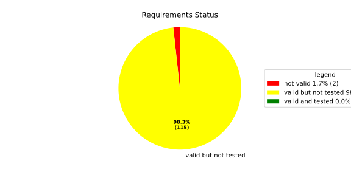
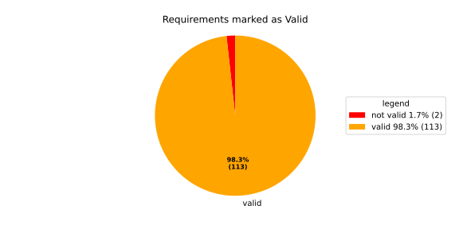
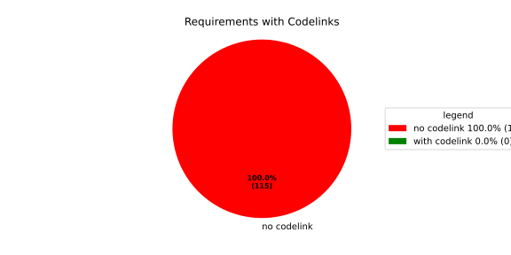

Verification Statistics#
Overview#

In Detail#


No needs passed the filters
Failed Tests
Hint: This table should be empty. Before a PR can be merged all tests have to be successful.
No needs passed the filters
Skipped / Disabled Tests
No needs passed the filters
All passed Tests#
No needs passed the filters
Details About Testcases#
No needs passed the filters
No needs passed the filters
Test Log Files#
tests-report/tests/integration/process_simple_rep_failure/process_simple_rep_failure/test.log
exec ${PAGER:-/usr/bin/less} "$0" || exit 1
Executing tests from //tests/integration/process_simple_rep_failure:process_simple_rep_failure
-----------------------------------------------------------------------------
============================= test session starts ==============================
platform linux -- Python 3.12.12, pytest-9.0.3, pluggy-1.5.0
rootdir: /home/runner/.bazel/sandbox/processwrapper-sandbox/781/execroot/_main/bazel-out/k8-fastbuild/bin/tests/integration/process_simple_rep_failure/process_simple_rep_failure.runfiles/score_itf+
configfile: pytest.ini
collected 1 item
../score_itf+::test_recovery_action_simple_rep_failure
-------------------------------- live log setup --------------------------------
[2026-06-22 11:07:59.788] [INFO] [score.itf.plugins.docker] Executing custom image bootstrap command: tests/utils/environments/x86_64-linux/x86_64-linux.sh
[2026-06-22 11:08:02.356] [DEBUG] [docker.utils.config] Trying paths: ['/home/runner/.docker/config.json', '/home/runner/.dockercfg']
[2026-06-22 11:08:02.357] [DEBUG] [docker.utils.config] Found file at path: /home/runner/.docker/config.json
[2026-06-22 11:08:02.357] [DEBUG] [docker.auth] Found 'auths' section
[2026-06-22 11:08:02.357] [DEBUG] [docker.auth] Found entry (registry='https://index.docker.io/v1/', username='githubactions')
[2026-06-22 11:08:02.420] [DEBUG] [urllib3.connectionpool] http://localhost:None "GET /version HTTP/1.1" 200 823
[2026-06-22 11:08:04.486] [DEBUG] [urllib3.connectionpool] http://localhost:None "POST /v1.48/containers/create HTTP/1.1" 201 88
[2026-06-22 11:08:04.488] [DEBUG] [urllib3.connectionpool] http://localhost:None "GET /v1.48/containers/ad6dd7c2c6e20c3150a07aeddd787fe7e02735ff8e8e6cf06e9e4b1730fc1216/json HTTP/1.1" 200 None
[2026-06-22 11:08:04.733] [DEBUG] [urllib3.connectionpool] http://localhost:None "POST /v1.48/containers/ad6dd7c2c6e20c3150a07aeddd787fe7e02735ff8e8e6cf06e9e4b1730fc1216/start HTTP/1.1" 204 0
[2026-06-22 11:08:04.734] [DEBUG] [docker.utils.config] Trying paths: ['/home/runner/.docker/config.json', '/home/runner/.dockercfg']
[2026-06-22 11:08:04.734] [DEBUG] [docker.utils.config] Found file at path: /home/runner/.docker/config.json
[2026-06-22 11:08:04.734] [DEBUG] [docker.auth] Found 'auths' section
[2026-06-22 11:08:04.734] [DEBUG] [docker.auth] Found entry (registry='https://index.docker.io/v1/', username='githubactions')
[2026-06-22 11:08:04.747] [DEBUG] [urllib3.connectionpool] http://localhost:None "GET /version HTTP/1.1" 200 823
[2026-06-22 11:08:05.028] [INFO] [tests.utils.testing_utils.setup_test] Test case setup finished
-------------------------------- live log call ---------------------------------
[2026-06-22 11:08:05.161] [INFO] [launch_manager] 2026/06/22 11:08:05.6485158 1625863 000 ECU1 LM LM log debug verbose 1 Launch Manager Started !!!!
[2026-06-22 11:08:05.163] [INFO] [launch_manager] 2026/06/22 11:08:05.6485158 1625865 000 ECU1 LM LM log debug verbose 1 Loading LCM Configurations...
[2026-06-22 11:08:05.164] [INFO] [launch_manager] 2026/06/22 11:08:05.6485158 1625866 000 ECU1 LM LM log debug verbose 1 ECUCFG_ENV_VAR_ROOTFOLDER set successfully
[2026-06-22 11:08:05.164] [INFO] [launch_manager] 2026/06/22 11:08:05.6485158 1625866 000 ECU1 LM LM log debug verbose 5 FlatBufferParser::getModeGroupPgName: MainPG ( IdentifierHash: 18079021346025578134 )
[2026-06-22 11:08:05.166] [INFO] [launch_manager] 2026/06/22 11:08:05.6485158 1625867 000 ECU1 LM LM log debug verbose 5 FlatBufferParser::getModeGroupPgStateName: MainPG/Startup ( IdentifierHash: 10504605499600661529 )
[2026-06-22 11:08:05.166] [INFO] [launch_manager] 2026/06/22 11:08:05.6485158 1625867 000 ECU1 LM LM log debug verbose 5 FlatBufferParser::getModeGroupPgStateName: MainPG/run_target_app_does_report_krunning_in_time ( IdentifierHash: 11934981641920773349 )
[2026-06-22 11:08:05.166] [INFO] [launch_manager] 2026/06/22 11:08:05.6485158 1625867 000 ECU1 LM LM log debug verbose 5 FlatBufferParser::getModeGroupPgStateName: MainPG/run_target_app_does_not_report_krunning_in_time ( IdentifierHash: 7672161913816744053 )
[2026-06-22 11:08:05.167] [INFO] [launch_manager] 2026/06/22 11:08:05.6485158 1625868 000 ECU1 LM LM log debug verbose 5 FlatBufferParser::getModeGroupPgStateName: MainPG/Off ( IdentifierHash: 15281793077830264047 )
[2026-06-22 11:08:05.167] [INFO] [launch_manager] 2026/06/22 11:08:05.6485158 1625868 000 ECU1 LM LM log debug verbose 5 FlatBufferParser::getModeGroupPgStateName: MainPG/fallback_run_target ( IdentifierHash: 4059409696722237352 )
[2026-06-22 11:08:05.167] [INFO] [launch_manager] 2026/06/22 11:08:05.6485159 1625869 000 ECU1 LM LM log debug verbose 4 parseProcessConfigurations: Process index: 0 executable_path_: /tmp/tests/process_simple_rep_failure/control_client_mock
[2026-06-22 11:08:05.167] [INFO] [launch_manager] 2026/06/22 11:08:05.6485159 1625869 000 ECU1 LM LM log debug verbose 3 Process control_client_mock is Reporting execution state
[2026-06-22 11:08:05.167] [INFO] [launch_manager] 2026/06/22 11:08:05.6485159 1625869 000 ECU1 LM LM log debug verbose 1 Process is STATE_MANAGEMENT function Cluster Affiliation
[2026-06-22 11:08:05.167] [INFO] [launch_manager] 2026/06/22 11:08:05.6485159 1625869 000 ECU1 LM LM log debug verbose 3 Process control_client_mock is Self terminating
[2026-06-22 11:08:05.167] [INFO] [launch_manager] 2026/06/22 11:08:05.6485159 1625870 000 ECU1 LM LM log debug verbose 4 ParseProcessProcessGroup: id:::pg_name_: MainPG , pg_state_name_: MainPG/Startup
[2026-06-22 11:08:05.167] [INFO] [launch_manager] 2026/06/22 11:08:05.6485159 1625871 000 ECU1 LM LM log debug verbose 4 ParseProcessProcessGroup: id:::pg_name_: MainPG , pg_state_name_: MainPG/run_target_app_does_report_krunning_in_time
[2026-06-22 11:08:05.167] [INFO] [launch_manager] 2026/06/22 11:08:05.6485159 1625871 000 ECU1 LM LM log debug verbose 4 ParseProcessProcessGroup: id:::pg_name_: MainPG , pg_state_name_: MainPG/run_target_app_does_not_report_krunning_in_time
[2026-06-22 11:08:05.167] [INFO] [launch_manager] 2026/06/22 11:08:05.6485159 1625871 000 ECU1 LM LM log debug verbose 4 ParseProcessProcessGroup: id:::pg_name_: MainPG , pg_state_name_: MainPG/fallback_run_target
[2026-06-22 11:08:05.167] [INFO] [launch_manager] 2026/06/22 11:08:05.6485159 1625872 000 ECU1 LM LM log debug verbose 4 parseProcessConfigurations: Process index: 1 executable_path_: /tmp/tests/process_simple_rep_failure/process_simple_reporting
[2026-06-22 11:08:05.167] [INFO] [launch_manager] 2026/06/22 11:08:05.6485159 1625873 000 ECU1 LM LM log debug verbose 3 Process component_does_report_krunning_in_time is Reporting execution state
[2026-06-22 11:08:05.167] [INFO] [launch_manager] 2026/06/22 11:08:05.6485159 1625873 000 ECU1 LM LM log debug verbose 1 Process is NOT associated with any function Cluster Affiliation
[2026-06-22 11:08:05.167] [INFO] [launch_manager] 2026/06/22 11:08:05.6485159 1625873 000 ECU1 LM LM log debug verbose 3 Process component_does_report_krunning_in_time is Self terminating
[2026-06-22 11:08:05.167] [INFO] [launch_manager] 2026/06/22 11:08:05.6485159 1625874 000 ECU1 LM LM log debug verbose 4 ParseProcessProcessGroup: id:::pg_name_: MainPG , pg_state_name_: MainPG/run_target_app_does_report_krunning_in_time
[2026-06-22 11:08:05.168] [INFO] [launch_manager] 2026/06/22 11:08:05.6485159 1625875 000 ECU1 LM LM log debug verbose 4 parseProcessConfigurations: Process index: 2 executable_path_: /tmp/tests/process_simple_rep_failure/process_simple_reporting
[2026-06-22 11:08:05.168] [INFO] [launch_manager] 2026/06/22 11:08:05.6485159 1625875 000 ECU1 LM LM log debug verbose 3 Process component_does_not_report_krunning_in_time is Reporting execution state
[2026-06-22 11:08:05.168] [INFO] [launch_manager] 2026/06/22 11:08:05.6485159 1625875 000 ECU1 LM LM log debug verbose 1 Process is NOT associated with any function Cluster Affiliation
[2026-06-22 11:08:05.168] [INFO] [launch_manager] 2026/06/22 11:08:05.6485159 1625875 000 ECU1 LM LM log debug verbose 3 Process component_does_not_report_krunning_in_time is Self terminating
[2026-06-22 11:08:05.168] [INFO] [launch_manager] 2026/06/22 11:08:05.6485159 1625876 000 ECU1 LM LM log debug verbose 4 ParseProcessProcessGroup: id:::pg_name_: MainPG , pg_state_name_: MainPG/run_target_app_does_not_report_krunning_in_time
[2026-06-22 11:08:05.168] [INFO] [launch_manager] 2026/06/22 11:08:05.6485159 1625876 000 ECU1 LM LM log debug verbose 4 parseProcessConfigurations: Process index: 3 executable_path_: /tmp/tests/process_simple_rep_failure/verification_process
[2026-06-22 11:08:05.168] [INFO] [launch_manager] 2026/06/22 11:08:05.6485159 1625877 000 ECU1 LM LM log debug verbose 3 Process verification_component is NOT Reporting execution state
[2026-06-22 11:08:05.168] [INFO] [launch_manager] 2026/06/22 11:08:05.6485159 1625877 000 ECU1 LM LM log debug verbose 1 Process is NOT associated with any function Cluster Affiliation
[2026-06-22 11:08:05.168] [INFO] [launch_manager] 2026/06/22 11:08:05.6485159 1625877 000 ECU1 LM LM log debug verbose 3 Process verification_component is Self terminating
[2026-06-22 11:08:05.168] [INFO] [launch_manager] 2026/06/22 11:08:05.6485159 1625877 000 ECU1 LM LM log debug verbose 4 ParseProcessProcessGroup: id:::pg_name_: MainPG , pg_state_name_: MainPG/fallback_run_target
[2026-06-22 11:08:05.168] [INFO] [launch_manager] 2026/06/22 11:08:05.6485159 1625877 000 ECU1 LM LM log debug verbose 3 Loading SWCL Nr. 0 Succeeded
[2026-06-22 11:08:05.168] [INFO] [launch_manager] 2026/06/22 11:08:05.6485159 1625878 000 ECU1 LM LM log debug verbose 2 1 process group(s)
[2026-06-22 11:08:05.168] [INFO] [launch_manager] 2026/06/22 11:08:05.6485159 1625878 000 ECU1 LM LM log debug verbose 3 Creating graph with 4 nodes
[2026-06-22 11:08:05.168] [INFO] [launch_manager] 2026/06/22 11:08:05.6485159 1625878 000 ECU1 LM LM log debug verbose 1 Process groups initialized successfully
[2026-06-22 11:08:05.168] [INFO] [launch_manager] 2026/06/22 11:08:05.6485160 1625879 000 ECU1 LM LM log debug verbose 1 Process Group initialization done
[2026-06-22 11:08:05.168] [INFO] [launch_manager] 2026/06/22 11:08:05.6485160 1625879 000 ECU1 LM LM log debug verbose 3 Creating Safe Process Map with 4 entries
[2026-06-22 11:08:05.168] [INFO] [launch_manager] 2026/06/22 11:08:05.6485160 1625879 000 ECU1 LM LM log debug verbose 2 Creating job queue with capacity 1024
[2026-06-22 11:08:05.169] [INFO] [launch_manager] 2026/06/22 11:08:05.6485160 1625879 000 ECU1 LM LM log debug verbose 1 Creating worker threads...
[2026-06-22 11:08:05.170] [INFO] [launch_manager] 2026/06/22 11:08:05.6485161 1625895 000 ECU1 LM LM log debug verbose 7 Process group index 0 (with name MainPG ) has 4 processes
[2026-06-22 11:08:05.170] [INFO] [launch_manager] 2026/06/22 11:08:05.6485161 1625895 000 ECU1 LM LM log debug verbose 2 Creating process node with id: 0
[2026-06-22 11:08:05.170] [INFO] [launch_manager] 2026/06/22 11:08:05.6485161 1625896 000 ECU1 LM LM log debug verbose 5 Process 0 has 0 start dependencies
[2026-06-22 11:08:05.170] [INFO] [launch_manager] 2026/06/22 11:08:05.6485161 1625896 000 ECU1 LM LM log debug verbose 2 Creating process node with id: 1
[2026-06-22 11:08:05.170] [INFO] [launch_manager] 2026/06/22 11:08:05.6485161 1625896 000 ECU1 LM LM log debug verbose 5 Process 1 has 0 start dependencies
[2026-06-22 11:08:05.170] [INFO] [launch_manager] 2026/06/22 11:08:05.6485161 1625896 000 ECU1 LM LM log debug verbose 2 Creating process node with id: 2
[2026-06-22 11:08:05.170] [INFO] [launch_manager] 2026/06/22 11:08:05.6485161 1625897 000 ECU1 LM LM log debug verbose 5 Process 2 has 0 start dependencies
[2026-06-22 11:08:05.170] [INFO] [launch_manager] 2026/06/22 11:08:05.6485161 1625897 000 ECU1 LM LM log debug verbose 2 Creating process node with id: 3
[2026-06-22 11:08:05.170] [INFO] [launch_manager] 2026/06/22 11:08:05.6485161 1625897 000 ECU1 LM LM log debug verbose 5 Process 3 has 0 start dependencies
[2026-06-22 11:08:05.170] [INFO] [launch_manager] 2026/06/22 11:08:05.6485161 1625897 000 ECU1 LM LM log debug verbose 3 Created 4 process nodes
[2026-06-22 11:08:05.170] [INFO] [launch_manager] 2026/06/22 11:08:05.6485161 1625897 000 ECU1 LM LM log debug verbose 2 Creating successor lists for process group MainPG
[2026-06-22 11:08:05.171] [INFO] [launch_manager] 2026/06/22 11:08:05.6485161 1625897 000 ECU1 LM LM log debug verbose 1 Graphs initialized
[2026-06-22 11:08:05.171] [INFO] [launch_manager] 2026/06/22 11:08:05.6485162 1625899 000 ECU1 LM Fcty log info verbose 2 Factory for FlatCfg MachineConfig: Loading of HM Machine Configuration succeeded.
[2026-06-22 11:08:05.171] [INFO] [launch_manager] 2026/06/22 11:08:05.6485162 1625899 000 ECU1 LM Fcty log debug verbose 3 Factory for FlatCfg MachineConfig: Alive Supervision buffer size: 100
[2026-06-22 11:08:05.171] [INFO] [launch_manager] 2026/06/22 11:08:05.6485162 1625900 000 ECU1 LM Fcty log debug verbose 3 Factory for FlatCfg MachineConfig: Monitor buffer size: 512
[2026-06-22 11:08:05.171] [INFO] [launch_manager] 2026/06/22 11:08:05.6485162 1625900 000 ECU1 LM Fcty log debug verbose 4 Factory for FlatCfg MachineConfig: Periodicity: 50000000 ns
[2026-06-22 11:08:05.171] [INFO] [launch_manager] 2026/06/22 11:08:05.6485162 1625900 000 ECU1 LM Fcty log debug verbose 3 Factory for FlatCfg MachineConfig: Configured watchdogs: 0
[2026-06-22 11:08:05.171] [INFO] [launch_manager] 2026/06/22 11:08:05.6485162 1625900 000 ECU1 LM Fcty log warn verbose 2 Factory for FlatCfg MachineConfig: No watchdog configured
[2026-06-22 11:08:05.171] [INFO] [launch_manager] 2026/06/22 11:08:05.6485162 1625901 000 ECU1 LM Fcty log debug verbose 2 Software Cluster Handler starts constructing workers: MainCluster
[2026-06-22 11:08:05.171] [INFO] [launch_manager] 2026/06/22 11:08:05.6485162 1625901 000 ECU1 LM Fcty log debug verbose 3 Factory for FlatCfg AR24-11: Successfully created Process States: control_client_mock
[2026-06-22 11:08:05.171] [INFO] [launch_manager] 2026/06/22 11:08:05.6485162 1625902 000 ECU1 LM Fcty log debug verbose 3 Factory for FlatCfg AR24-11: Number of constructed Process States: 1
[2026-06-22 11:08:05.171] [INFO] [launch_manager] 2026/06/22 11:08:05.6485162 1625902 000 ECU1 LM Fcty log debug verbose 3 Factory for FlatCfg AR24-11: Successfully created Alive interface IPC with path: lifecycle_health_control_client_mock
[2026-06-22 11:08:05.171] [INFO] [launch_manager] 2026/06/22 11:08:05.6485162 1625903 000 ECU1 LM Fcty log debug verbose 3 Factory for FlatCfg AR24-11: Number of constructed Alive interface IPCs: 1
[2026-06-22 11:08:05.171] [INFO] [launch_manager] 2026/06/22 11:08:05.6485162 1625903 000 ECU1 LM Fcty log debug verbose 3 Factory for FlatCfg AR24-11: Successfully created Alive Interface: /lifecycle_health_control_client_mock
[2026-06-22 11:08:05.171] [INFO] [launch_manager] 2026/06/22 11:08:05.6485162 1625903 000 ECU1 LM Fcty log debug verbose 3 Factory for FlatCfg AR24-11: Number of constructed Alive interfaces: 1
[2026-06-22 11:08:05.171] [INFO] [launch_manager] 2026/06/22 11:08:05.6485162 1625903 000 ECU1 LM Fcty log debug verbose 3 Factory for FlatCfg AR24-11: Successfully created supervision checkpoint: control_client_mock_checkpoint
[2026-06-22 11:08:05.171] [INFO] [launch_manager] 2026/06/22 11:08:05.6485162 1625903 000 ECU1 LM Fcty log debug verbose 3 Factory for FlatCfg AR24-11: Number of constructed supervision checkpoints: 1
[2026-06-22 11:08:05.171] [INFO] [launch_manager] 2026/06/22 11:08:05.6485162 1625904 000 ECU1 LM Fcty log debug verbose 3 Factory for FlatCfg AR24-11: Successfully created alive supervision worker object: control_client_mock_alive_supervision
[2026-06-22 11:08:05.171] [INFO] [launch_manager] 2026/06/22 11:08:05.6485162 1625904 000 ECU1 LM Fcty log debug verbose 3 Factory for FlatCfg AR24-11: Number of constructed alive supervisions: 1
[2026-06-22 11:08:05.172] [INFO] [launch_manager] 2026/06/22 11:08:05.6485162 1625904 000 ECU1 LM Fcty log info verbose 2 Phm Daemon: The (configured) periodicity in [ns] is set to: 50000000
[2026-06-22 11:08:05.172] [INFO] [launch_manager] 2026/06/22 11:08:05.6485162 1625904 000 ECU1 LM Fcty log debug verbose 2 Phm Daemon: The accuracy of the monotonic system clock in [ns] is: 1
[2026-06-22 11:08:05.172] [INFO] [launch_manager] 2026/06/22 11:08:05.6485162 1625905 000 ECU1 LM Fcty log debug verbose 3 AliveMonitor: Initialization took 0 ms
[2026-06-22 11:08:05.172] [INFO] [launch_manager] 2026/06/22 11:08:05.6485162 1625905 000 ECU1 LM LM log info verbose 1 LCM started successfully
[2026-06-22 11:08:05.172] [INFO] [launch_manager] 2026/06/22 11:08:05.6485162 1625906 000 ECU1 LM LM log debug verbose 3 clock() at run(): 35.882000 ms
[2026-06-22 11:08:05.172] [INFO] [launch_manager] 2026/06/22 11:08:05.6485162 1625907 000 ECU1 LM LM log debug verbose 1 =============STARTING MAINPG STARTUP STATE============
[2026-06-22 11:08:05.174] [INFO] [launch_manager] 2026/06/22 11:08:05.6485162 1625907 000 ECU1 LM LM log debug verbose 9 Graph::setState changes from kSuccess to kInTransition for PG 0 ( MainPG )
[2026-06-22 11:08:05.174] [INFO] [launch_manager] 2026/06/22 11:08:05.6485162 1625907 000 ECU1 LM LM log debug verbose 2 Stop Dependencies: 0
[2026-06-22 11:08:05.174] [INFO] [launch_manager] 2026/06/22 11:08:05.6485162 1625908 000 ECU1 LM LM log debug verbose 2 Stop Dependencies: 0
[2026-06-22 11:08:05.174] [INFO] [launch_manager] 2026/06/22 11:08:05.6485162 1625908 000 ECU1 LM LM log debug verbose 2 Stop Dependencies: 0
[2026-06-22 11:08:05.175] [INFO] [launch_manager] 2026/06/22 11:08:05.6485162 1625908 000 ECU1 LM LM log debug verbose 2 Stop Dependencies: 0
[2026-06-22 11:08:05.175] [INFO] [launch_manager] 2026/06/22 11:08:05.6485162 1625908 000 ECU1 LM LM log debug verbose 2
[2026-06-22 11:08:05.175] [INFO] [launch_manager] Start Dependencies: 0
[2026-06-22 11:08:05.175] [INFO] [launch_manager] 2026/06/22 11:08:05.6485163 1625909 000 ECU1 LM LM log debug verbose 2
[2026-06-22 11:08:05.175] [INFO] [launch_manager] Start Dependencies: 0
[2026-06-22 11:08:05.175] [INFO] [launch_manager] 2026/06/22 11:08:05.6485163 1625910 000 ECU1 LM LM log debug verbose 2 Start Dependencies: 0
[2026-06-22 11:08:05.176] [INFO] [launch_manager] 2026/06/22 11:08:05.6485163 1625911 000 ECU1 LM LM log debug verbose 2
[2026-06-22 11:08:05.176] [INFO] [launch_manager] Start Dependencies: 0
[2026-06-22 11:08:05.176] [INFO] [launch_manager] 2026/06/22 11:08:05.6485163 1625913 000 ECU1 LM LM log debug verbose 6
[2026-06-22 11:08:05.176] [INFO] [launch_manager] Starting process 0 ( control_client_mock ) from executable /tmp/tests/process_simple_rep_failure/control_client_mock
[2026-06-22 11:08:05.176] [INFO] [launch_manager] 2026/06/22 11:08:05.6485163 1625914 000 ECU1 LM LM log debug verbose 3 Initialize the control client for control_client_mock process
[2026-06-22 11:08:05.176] [INFO] [launch_manager] 2026/06/22 11:08:05.6485163 1625915 000 ECU1 LM LM log debug verbose 1 ControlClientChannel initialized
[2026-06-22 11:08:05.176] [INFO] [launch_manager] 2026/06/22 11:08:05.6485164 1625924 000 ECU1 LM LM log debug verbose 4 startProcess pid 67 received for process: control_client_mock
[2026-06-22 11:08:05.176] [INFO] [launch_manager] 2026/06/22 11:08:05.6485164 1625926 000 ECU1 LM LM log debug verbose 1 ControlClientChannel obtained from sync.
[2026-06-22 11:08:05.176] [INFO] [launch_manager] [==========] Running 1 test from 1 test suite.
[2026-06-22 11:08:05.177] [INFO] [launch_manager] [----------] Global test environment set-up.
[2026-06-22 11:08:05.177] [INFO] [launch_manager] [----------] 1 test from RecoveryActionSimpleRepFailure
[2026-06-22 11:08:05.177] [INFO] [launch_manager] [ RUN ] RecoveryActionSimpleRepFailure.ControlClientMock
[2026-06-22 11:08:05.177] [INFO] [launch_manager] [ STEP ] Report running from ControlClientMock
[2026-06-22 11:08:05.183] [INFO] [launch_manager] [ END STEP ] Report running from ControlClientMock
[2026-06-22 11:08:05.184] [INFO] [launch_manager] [ STEP ] Activate RunTarget run_target_app_does_report_krunning_in_time
[2026-06-22 11:08:05.184] [INFO] [launch_manager] 2026/06/22 11:08:05.6485183 1626112 000 ECU1 LM LM log debug verbose 1 Request sent. Waiting for acknowledgment...
[2026-06-22 11:08:05.184] [INFO] [launch_manager] 2026/06/22 11:08:05.6485183 1626116 000 ECU1 LM LM log debug verbose 8 ProcessGroupManager::ControlClientHandler: got request kSetStateRequest ( 16 ) re state MainPG/run_target_app_does_report_krunning_in_time of PG MainPG
[2026-06-22 11:08:05.184] [INFO] [launch_manager] 2026/06/22 11:08:05.6485183 1626117 000 ECU1 LM LM log debug verbose 6 Pending state for process group MainPG changed from to MainPG/run_target_app_does_report_krunning_in_time
[2026-06-22 11:08:05.185] [INFO] [launch_manager] 2026/06/22 11:08:05.6485183 1626117 000 ECU1 LM LM log debug verbose 9 Graph::setState changes from kInTransition to kCancelled for PG 0 ( MainPG )
[2026-06-22 11:08:05.185] [INFO] [launch_manager] 2026/06/22 11:08:05.6485183 1626117 000 ECU1 LM LM log debug verbose 1 Control Client handler nudged
[2026-06-22 11:08:05.185] [INFO] [launch_manager] 2026/06/22 11:08:05.6485183 1626118 000 ECU1 LM LM log debug verbose 1 Request acknowledged.
[2026-06-22 11:08:05.185] [INFO] [launch_manager] 2026/06/22 11:08:05.6485183 1626118 000 ECU1 LM LM log debug verbose 8 Got kRunning for pid 67 ( control_client_mock ) process 0 of group MainPG
[2026-06-22 11:08:05.185] [INFO] [launch_manager] 2026/06/22 11:08:05.6485183 1626118 000 ECU1 LM LM log debug verbose 7 startProcess for MainPG process 0 ( control_client_mock ) done
[2026-06-22 11:08:05.185] [INFO] [launch_manager] 2026/06/22 11:08:05.6485184 1626119 000 ECU1 LM LM log debug verbose 1 Control Client handler nudged
[2026-06-22 11:08:05.185] [INFO] [launch_manager] 2026/06/22 11:08:05.6485184 1626119 000 ECU1 LM LM log fatal verbose 3 clock() at failed initial state transition: 37.516000 ms
[2026-06-22 11:08:05.185] [INFO] [launch_manager] 2026/06/22 11:08:05.6485184 1626119 000 ECU1 LM LM log debug verbose 9 Graph::setState changes from kCancelled to kUndefinedState for PG 0 ( MainPG )
[2026-06-22 11:08:05.185] [INFO] [launch_manager] 2026/06/22 11:08:05.6485184 1626119 000 ECU1 LM LM log debug verbose 1 Control Client handler nudged
[2026-06-22 11:08:05.186] [INFO] [launch_manager] 2026/06/22 11:08:05.6485184 1626120 000 ECU1 LM LM log debug verbose 1 Request acknowledged.
[2026-06-22 11:08:05.186] [INFO] [launch_manager] 2026/06/22 11:08:05.6485186 1626140 000 ECU1 LM LM log debug verbose 6 Pending state for process group MainPG changed from MainPG/run_target_app_does_report_krunning_in_time to
[2026-06-22 11:08:05.186] [INFO] [launch_manager] 2026/06/22 11:08:05.6485186 1626140 000 ECU1 LM LM log debug verbose 4 Start transition to MainPG/run_target_app_does_report_krunning_in_time for PG MainPG
[2026-06-22 11:08:05.186] [INFO] [launch_manager] 2026/06/22 11:08:05.6485186 1626141 000 ECU1 LM LM log debug verbose 9 Graph::setState changes from kUndefinedState to kInTransition for PG 0 ( MainPG )
[2026-06-22 11:08:05.186] [INFO] [launch_manager] 2026/06/22 11:08:05.6485186 1626141 000 ECU1 LM LM log debug verbose 2 Stop Dependencies: 0
[2026-06-22 11:08:05.186] [INFO] [launch_manager] 2026/06/22 11:08:05.6485186 1626141 000 ECU1 LM LM log debug verbose 2 Stop Dependencies: 0
[2026-06-22 11:08:05.186] [INFO] [launch_manager] 2026/06/22 11:08:05.6485186 1626142 000 ECU1 LM LM log debug verbose 2 Stop Dependencies: 0
[2026-06-22 11:08:05.186] [INFO] [launch_manager] 2026/06/22 11:08:05.6485186 1626143 000 ECU1 LM LM log debug verbose 2 Stop Dependencies: 0
[2026-06-22 11:08:05.187] [INFO] [launch_manager] 2026/06/22 11:08:05.6485186 1626143 000 ECU1 LM LM log debug verbose 2 Start Dependencies: 0
[2026-06-22 11:08:05.187] [INFO] [launch_manager] 2026/06/22 11:08:05.6485186 1626144 000 ECU1 LM LM log debug verbose 2 Start Dependencies: 0
[2026-06-22 11:08:05.187] [INFO] [launch_manager] 2026/06/22 11:08:05.6485186 1626144 000 ECU1 LM LM log debug verbose 2 Start Dependencies: 0
[2026-06-22 11:08:05.187] [INFO] [launch_manager] 2026/06/22 11:08:05.6485186 1626144 000 ECU1 LM LM log debug verbose 2 Start Dependencies: 0
[2026-06-22 11:08:05.187] [INFO] [launch_manager] 2026/06/22 11:08:05.6485186 1626147 000 ECU1 LM LM log debug verbose 6 Starting process 1 ( component_does_report_krunning_in_time ) from executable /tmp/tests/process_simple_rep_failure/process_simple_reporting
[2026-06-22 11:08:05.188] [INFO] [launch_manager] 2026/06/22 11:08:05.6485187 1626158 000 ECU1 LM LM log debug verbose 4
[2026-06-22 11:08:05.188] [INFO] [launch_manager] startProcess pid 69 received for process: component_does_report_krunning_in_time
[2026-06-22 11:08:05.191] [INFO] [launch_manager] [==========] Running 1 test from 1 test suite.
[2026-06-22 11:08:05.191] [INFO] [launch_manager] [----------] Global test environment set-up.
[2026-06-22 11:08:05.191] [INFO] [launch_manager] [----------] 1 test from ProcessSimpleRepFailure
[2026-06-22 11:08:05.191] [INFO] [launch_manager] [ RUN ] ProcessSimpleRepFailure.ProcessSimpleReporting
[2026-06-22 11:08:05.191] [INFO] [launch_manager] [ STEP ] Check args
[2026-06-22 11:08:05.191] [INFO] [launch_manager] [ END STEP ] Check args
[2026-06-22 11:08:05.191] [INFO] [launch_manager] [ STEP ] Report running from ProcessSimpleReporting
[2026-06-22 11:08:05.214] [INFO] [launch_manager] 2026/06/22 11:08:05.6485213 1626410 000 ECU1 LM Sprv log debug verbose 6 Process with Id control_client_mock changed state PG MainPG/Startup PS 1
[2026-06-22 11:08:05.214] [INFO] [launch_manager] 2026/06/22 11:08:05.6485213 1626410 000 ECU1 LM Sprv log debug verbose 6 Process with Id control_client_mock changed state PG MainPG/Startup PS 2
[2026-06-22 11:08:05.214] [INFO] [launch_manager] 2026/06/22 11:08:05.6485213 1626411 000 ECU1 LM Sprv log debug verbose 6 Process with Id component_does_report_krunning_in_time changed state PG MainPG/run_target_app_does_report_krunning_in_time PS 1
[2026-06-22 11:08:05.214] [INFO] [launch_manager] 2026/06/22 11:08:05.6485213 1626411 000 ECU1 LM Sprv log info verbose 3 Alive Supervision ( control_client_mock_alive_supervision ) switched to OK.
[2026-06-22 11:08:05.254] [DEBUG] [tests.utils.testing_utils.run_until_file_deployed] Waiting for /tmp/tests/test_end
[2026-06-22 11:08:05.693] [INFO] [launch_manager] [ END STEP ] Report running from ProcessSimpleReporting
[2026-06-22 11:08:05.694] [INFO] [launch_manager] [ OK ] ProcessSimpleRepFailure.ProcessSimpleReporting (502 ms)
[2026-06-22 11:08:05.694] [INFO] [launch_manager] [----------] 1 test from ProcessSimpleRepFailure (502 ms total)
[2026-06-22 11:08:05.694] [INFO] [launch_manager] [----------] Global test environment tear-down
[2026-06-22 11:08:05.695] [INFO] [launch_manager] 2026/06/22 11:08:05.6485692 1631209 000 ECU1 LM LM log debug verbose 8 Got kRunning for pid 69 ( component_does_report_krunning_in_time ) process 1 of group MainPG
[2026-06-22 11:08:05.695] [INFO] [launch_manager] [==========] 1 test from 1 test suite ran. (502 ms total)
[2026-06-22 11:08:05.695] [INFO] [launch_manager] [ PASSED ] 1 test.
[2026-06-22 11:08:05.695] [INFO] [launch_manager] 2026/06/22 11:08:05.6485693 1631209 000 ECU1 LM LM log debug verbose 7 startProcess for MainPG process 1 ( component_does_report_krunning_in_time ) done
[2026-06-22 11:08:05.695] [INFO] [launch_manager] 2026/06/22 11:08:05.6485693 1631210 000 ECU1 LM LM log debug verbose 9 Graph::setState changes from kInTransition to kSuccess for PG 0 ( MainPG )
[2026-06-22 11:08:05.695] [INFO] [launch_manager] 2026/06/22 11:08:05.6485693 1631210 000 ECU1 LM LM log info verbose 7 Completed the request for PG MainPG to State MainPG/run_target_app_does_report_krunning_in_time in 509 ms
[2026-06-22 11:08:05.695] [INFO] [launch_manager] 2026/06/22 11:08:05.6485693 1631210 000 ECU1 LM LM log debug verbose 1 Control Client handler nudged
[2026-06-22 11:08:05.697] [INFO] [launch_manager] 2026/06/22 11:08:05.6485693 1631213 000 ECU1 LM LM log debug verbose 12 Child process 1 of MainPG pid 69 ( component_does_report_krunning_in_time ) for node True terminated with status 0
[2026-06-22 11:08:05.697] [INFO] [launch_manager] 2026/06/22 11:08:05.6485695 1631229 000 ECU1 LM LM log debug verbose 8 ProcessGroupManager::ControlClientHandler: Sending kSetStateSuccess ( 20 ) re state MainPG/run_target_app_does_report_krunning_in_time of PG MainPG
[2026-06-22 11:08:05.697] [INFO] [launch_manager] 2026/06/22 11:08:05.6485695 1631229 000 ECU1 LM LM log debug verbose 1 Response sent.
[2026-06-22 11:08:05.713] [INFO] [launch_manager] 2026/06/22 11:08:05.6485713 1631410 000 ECU1 LM Sprv log debug verbose 6 Process with Id component_does_report_krunning_in_time changed state PG MainPG/run_target_app_does_report_krunning_in_time PS 2
[2026-06-22 11:08:05.713] [INFO] [launch_manager] 2026/06/22 11:08:05.6485713 1631410 000 ECU1 LM Sprv log debug verbose 6 Process with Id component_does_report_krunning_in_time changed state PG MainPG/run_target_app_does_report_krunning_in_time PS 4
[2026-06-22 11:08:05.774] [INFO] [launch_manager] 2026/06/22 11:08:05.6485774 1632025 000 ECU1 LM LM log debug verbose 1 Response retrieved.
[2026-06-22 11:08:05.775] [INFO] [launch_manager] [ END STEP ] Activate RunTarget run_target_app_does_report_krunning_in_time
[2026-06-22 11:08:05.843] [DEBUG] [tests.utils.testing_utils.run_until_file_deployed] Waiting for /tmp/tests/test_end
[2026-06-22 11:08:06.440] [DEBUG] [tests.utils.testing_utils.run_until_file_deployed] Waiting for /tmp/tests/test_end
[2026-06-22 11:08:06.795] [INFO] [launch_manager] [ STEP ] Verify fallback run target has not been activated
[2026-06-22 11:08:06.795] [INFO] [launch_manager] [ END STEP ] Verify fallback run target has not been activated
[2026-06-22 11:08:06.795] [INFO] [launch_manager] [ STEP ] Activate RunTarget run_target_app_does_not_report_krunning_in_time
[2026-06-22 11:08:06.795] [INFO] [launch_manager] 2026/06/22 11:08:06.6486780 1642081 000 ECU1 LM LM log debug verbose 1 Request sent. Waiting for acknowledgment...
[2026-06-22 11:08:06.795] [INFO] [launch_manager] 2026/06/22 11:08:06.6486781 1642092 000 ECU1 LM LM log debug verbose 8 ProcessGroupManager::ControlClientHandler: got request kSetStateRequest ( 16 ) re state MainPG/run_target_app_does_not_report_krunning_in_time of PG MainPG
[2026-06-22 11:08:06.795] [INFO] [launch_manager] 2026/06/22 11:08:06.6486781 1642092 000 ECU1 LM LM log debug verbose 6 Pending state for process group MainPG changed from to MainPG/run_target_app_does_not_report_krunning_in_time
[2026-06-22 11:08:06.795] [INFO] [launch_manager] 2026/06/22 11:08:06.6486781 1642092 000 ECU1 LM LM log debug verbose 1 Request acknowledged.
[2026-06-22 11:08:06.795] [INFO] [launch_manager] 2026/06/22 11:08:06.6486781 1642093 000 ECU1 LM LM log debug verbose 6 Pending state for process group MainPG changed from MainPG/run_target_app_does_not_report_krunning_in_time to
[2026-06-22 11:08:06.796] [INFO] [launch_manager] 2026/06/22 11:08:06.6486781 1642093 000 ECU1 LM LM log debug verbose 4 Start transition to MainPG/run_target_app_does_not_report_krunning_in_time for PG MainPG
[2026-06-22 11:08:06.796] [INFO] [launch_manager] 2026/06/22 11:08:06.6486781 1642093 000 ECU1 LM LM log debug verbose 9 Graph::setState changes from kSuccess to kInTransition for PG 0 ( MainPG )
[2026-06-22 11:08:06.796] [INFO] [launch_manager] 2026/06/22 11:08:06.6486781 1642093 000 ECU1 LM LM log debug verbose 2 Stop Dependencies: 0
[2026-06-22 11:08:06.796] [INFO] [launch_manager] 2026/06/22 11:08:06.6486781 1642094 000 ECU1 LM LM log debug verbose 2 Stop Dependencies: 0
[2026-06-22 11:08:06.796] [INFO] [launch_manager] 2026/06/22 11:08:06.6486781 1642094 000 ECU1 LM LM log debug verbose 2 Stop Dependencies: 0
[2026-06-22 11:08:06.796] [INFO] [launch_manager] 2026/06/22 11:08:06.6486781 1642094 000 ECU1 LM LM log debug verbose 2 Stop Dependencies: 0
[2026-06-22 11:08:06.796] [INFO] [launch_manager] 2026/06/22 11:08:06.6486781 1642094 000 ECU1 LM LM log debug verbose 2 Start Dependencies: 0
[2026-06-22 11:08:06.796] [INFO] [launch_manager] 2026/06/22 11:08:06.6486781 1642094 000 ECU1 LM LM log debug verbose 2 Start Dependencies: 0
[2026-06-22 11:08:06.796] [INFO] [launch_manager] 2026/06/22 11:08:06.6486781 1642095 000 ECU1 LM LM log debug verbose 2 Start Dependencies: 0
[2026-06-22 11:08:06.796] [INFO] [launch_manager] 2026/06/22 11:08:06.6486781 1642095 000 ECU1 LM LM log debug verbose 2 Start Dependencies: 0
[2026-06-22 11:08:06.796] [INFO] [launch_manager] 2026/06/22 11:08:06.6486783 1642110 000 ECU1 LM LM log debug verbose 1 Request acknowledged.
[2026-06-22 11:08:06.796] [INFO] [launch_manager] 2026/06/22 11:08:06.6486789 1642171 000 ECU1 LM LM log debug verbose 6 Starting process 2 ( component_does_not_report_krunning_in_time ) from executable /tmp/tests/process_simple_rep_failure/process_simple_reporting
[2026-06-22 11:08:06.796] [INFO] [launch_manager] 2026/06/22 11:08:06.6486789 1642177 000 ECU1 LM LM log debug verbose 4 startProcess pid 88 received for process: component_does_not_report_krunning_in_time
[2026-06-22 11:08:06.796] [INFO] [launch_manager] [==========] Running 1 test from 1 test suite.
[2026-06-22 11:08:06.797] [INFO] [launch_manager] [----------] Global test environment set-up.
[2026-06-22 11:08:06.797] [INFO] [launch_manager] [----------] 1 test from ProcessSimpleRepFailure
[2026-06-22 11:08:06.797] [INFO] [launch_manager] [ RUN ] ProcessSimpleRepFailure.ProcessSimpleReporting
[2026-06-22 11:08:06.797] [INFO] [launch_manager] [ STEP ] Check args
[2026-06-22 11:08:06.797] [INFO] [launch_manager] [ END STEP ] Check args
[2026-06-22 11:08:06.797] [INFO] [launch_manager] [ STEP ] Report running from ProcessSimpleReporting
[2026-06-22 11:08:06.949] [INFO] [launch_manager] 2026/06/22 11:08:06.6486813 1642410 000 ECU1 LM Sprv log debug verbose 6 Process with Id component_does_not_report_krunning_in_time changed state PG MainPG/run_target_app_does_not_report_krunning_in_time PS 1
[2026-06-22 11:08:07.018] [DEBUG] [tests.utils.testing_utils.run_until_file_deployed] Waiting for /tmp/tests/test_end
[2026-06-22 11:08:07.614] [DEBUG] [tests.utils.testing_utils.run_until_file_deployed] Waiting for /tmp/tests/test_end
[2026-06-22 11:08:07.873] [INFO] [launch_manager] 2026/06/22 11:08:07.6487870 1652980 000 ECU1 LM LM log error verbose 1 Semaphore timedWait or post failed: Unable to wait or post on semaphores within the specified timeout.
[2026-06-22 11:08:07.879] [INFO] [launch_manager] 2026/06/22 11:08:07.6487870 1652981 000 ECU1 LM LM log warn verbose 5 Got kRunning timeout for process 2 ( component_does_not_report_krunning_in_time )
[2026-06-22 11:08:07.879] [INFO] [launch_manager] 2026/06/22 11:08:07.6487870 1652981 000 ECU1 LM LM log debug verbose 5 terminating process 2 ( component_does_not_report_krunning_in_time )
[2026-06-22 11:08:07.879] [INFO] [launch_manager] 2026/06/22 11:08:07.6487870 1652982 000 ECU1 LM LM log debug verbose 9 Requesting termination of process 2 of MainPG pid 88 ( component_does_not_report_krunning_in_time )
[2026-06-22 11:08:07.879] [INFO] [launch_manager] 2026/06/22 11:08:07.6487870 1652982 000 ECU1 LM LM log debug verbose 2 Request termination received for 88
[2026-06-22 11:08:07.922] [INFO] [launch_manager] 2026/06/22 11:08:07.6487913 1653411 000 ECU1 LM Sprv log debug verbose 6 Process with Id component_does_not_report_krunning_in_time changed state PG MainPG/run_target_app_does_not_report_krunning_in_time PS 3
[2026-06-22 11:08:08.203] [DEBUG] [tests.utils.testing_utils.run_until_file_deployed] Waiting for /tmp/tests/test_end
[2026-06-22 11:08:08.823] [DEBUG] [tests.utils.testing_utils.run_until_file_deployed] Waiting for /tmp/tests/test_end
[2026-06-22 11:08:08.962] [INFO] [launch_manager] 2026/06/22 11:08:08.6488959 1663876 000 ECU1 LM LM log warn verbose 5 Process 2 ( component_does_not_report_krunning_in_time ) did not respond to SIGTERM, sending SIGKILL
[2026-06-22 11:08:08.962] [INFO] [launch_manager] 2026/06/22 11:08:08.6488959 1663877 000 ECU1 LM LM log debug verbose 2 Forced termination received for pid 88
[2026-06-22 11:08:08.963] [INFO] [launch_manager] 2026/06/22 11:08:08.6488960 1663881 000 ECU1 LM LM log debug verbose 12 Child process 2 of MainPG pid 88 ( component_does_not_report_krunning_in_time ) for node True terminated with status 9
[2026-06-22 11:08:08.963] [INFO] [launch_manager] 2026/06/22 11:08:08.6488960 1663881 000 ECU1 LM LM log warn verbose 7 unexpected termination of process 2 pid 88 ( component_does_not_report_krunning_in_time )
[2026-06-22 11:08:08.963] [INFO] [launch_manager] 2026/06/22 11:08:08.6488960 1663882 000 ECU1 LM LM log debug verbose 9 Graph::setState changes from kInTransition to kAborting for PG 0 ( MainPG )
[2026-06-22 11:08:08.963] [INFO] [launch_manager] 2026/06/22 11:08:08.6488961 1663898 000 ECU1 LM LM log debug verbose 7 terminateProcess for MainPG process 2 ( component_does_not_report_krunning_in_time ) done
[2026-06-22 11:08:08.963] [INFO] [launch_manager] 2026/06/22 11:08:08.6488962 1663899 000 ECU1 LM LM log debug verbose 7 startProcess for MainPG process 2 ( component_does_not_report_krunning_in_time ) done
[2026-06-22 11:08:08.963] [INFO] [launch_manager] 2026/06/22 11:08:08.6488962 1663899 000 ECU1 LM LM log debug verbose 9 Graph::setState changes from kAborting to kUndefinedState for PG 0 ( MainPG )
[2026-06-22 11:08:08.964] [INFO] [launch_manager] 2026/06/22 11:08:08.6488962 1663900 000 ECU1 LM LM log debug verbose 1 Control Client handler nudged
[2026-06-22 11:08:08.964] [INFO] [launch_manager] 2026/06/22 11:08:08.6488963 1663909 000 ECU1 LM LM log debug verbose 8 ProcessGroupManager::ControlClientHandler: Sending kFailedUnexpectedTerminationOnEnter ( 23 ) re state MainPG/run_target_app_does_not_report_krunning_in_time of PG MainPG
[2026-06-22 11:08:08.964] [INFO] [launch_manager] 2026/06/22 11:08:08.6488963 1663909 000 ECU1 LM LM log debug verbose 1 Response sent.
[2026-06-22 11:08:08.964] [INFO] [launch_manager] 2026/06/22 11:08:08.6488963 1663909 000 ECU1 LM LM log warn verbose 3 Problem discovered in PG MainPG Activating Recovery state.
[2026-06-22 11:08:08.964] [INFO] [launch_manager] 2026/06/22 11:08:08.6488963 1663910 000 ECU1 LM Sprv log debug verbose 6 Process with Id component_does_not_report_krunning_in_time changed state PG MainPG/run_target_app_does_not_report_krunning_in_time PS 4
[2026-06-22 11:08:08.964] [INFO] [launch_manager] 2026/06/22 11:08:08.6488963 1663910 000 ECU1 LM LM log debug verbose 9 Graph::setState changes from kUndefinedState to kInTransition for PG 0 ( MainPG )
[2026-06-22 11:08:08.965] [INFO] [launch_manager] 2026/06/22 11:08:08.6488963 1663911 000 ECU1 LM LM log debug verbose 2 Stop Dependencies: 0
[2026-06-22 11:08:08.968] [INFO] [launch_manager] 2026/06/22 11:08:08.6488963 1663911 000 ECU1 LM LM log debug verbose 2 Stop Dependencies: 0
[2026-06-22 11:08:08.968] [INFO] [launch_manager] 2026/06/22 11:08:08.6488963 1663911 000 ECU1 LM LM log debug verbose 2 Stop Dependencies: 0
[2026-06-22 11:08:08.968] [INFO] [launch_manager] 2026/06/22 11:08:08.6488963 1663911 000 ECU1 LM LM log debug verbose 2 Stop Dependencies: 0
[2026-06-22 11:08:08.968] [INFO] [launch_manager] 2026/06/22 11:08:08.6488963 1663912 000 ECU1 LM LM log debug verbose 2 Start Dependencies: 0
[2026-06-22 11:08:08.968] [INFO] [launch_manager] 2026/06/22 11:08:08.6488963 1663912 000 ECU1 LM LM log debug verbose 2 Start Dependencies: 0
[2026-06-22 11:08:08.968] [INFO] [launch_manager] 2026/06/22 11:08:08.6488963 1663912 000 ECU1 LM LM log debug verbose 2 Start Dependencies: 0
[2026-06-22 11:08:08.968] [INFO] [launch_manager] 2026/06/22 11:08:08.6488963 1663912 000 ECU1 LM LM log debug verbose 2 Start Dependencies: 0
[2026-06-22 11:08:08.968] [INFO] [launch_manager] 2026/06/22 11:08:08.6488963 1663913 000 ECU1 LM LM log debug verbose 6 Starting process 3 ( verification_component ) from executable /tmp/tests/process_simple_rep_failure/verification_process
[2026-06-22 11:08:08.968] [INFO] [launch_manager] 2026/06/22 11:08:08.6488964 1663919 000 ECU1 LM LM log debug verbose 4 startProcess pid 116 received for process: verification_component
[2026-06-22 11:08:08.968] [INFO] [launch_manager] 2026/06/22 11:08:08.6488964 1663920 000 ECU1 LM LM log debug verbose 8 Considered kRunning for Non Reporting Process pid 116 ( verification_component ) process 3 of group MainPG
[2026-06-22 11:08:08.969] [INFO] [launch_manager] 2026/06/22 11:08:08.6488964 1663920 000 ECU1 LM LM log debug verbose 7 startProcess for MainPG process 3 ( verification_component ) done
[2026-06-22 11:08:08.969] [INFO] [launch_manager] 2026/06/22 11:08:08.6488964 1663921 000 ECU1 LM LM log debug verbose 9 Graph::setState changes from kInTransition to kSuccess for PG 0 ( MainPG )
[2026-06-22 11:08:08.979] [INFO] [launch_manager] 2026/06/22 11:08:08.6488964 1663921 000 ECU1 LM LM log info verbose 7 Completed the request for PG MainPG to State MainPG/fallback_run_target in 1 ms
[2026-06-22 11:08:08.980] [INFO] [launch_manager] 2026/06/22 11:08:08.6488964 1663921 000 ECU1 LM LM log debug verbose 1 Control Client handler nudged
[2026-06-22 11:08:08.980] [INFO] [launch_manager] 2026/06/22 11:08:08.6488965 1663934 000 ECU1 LM LM log debug verbose 8 ProcessGroupManager::ControlClientHandler: Sending kSetStateSuccess ( 20 ) re state MainPG/fallback_run_target of PG MainPG
[2026-06-22 11:08:08.980] [INFO] [launch_manager] 2026/06/22 11:08:08.6488965 1663934 000 ECU1 LM LM log debug verbose 1 Failed to send response: response is not empty.
[2026-06-22 11:08:08.980] [INFO] [launch_manager] 2026/06/22 11:08:08.6488965 1663934 000 ECU1 LM LM log debug verbose 1 Control Client handler nudged
[2026-06-22 11:08:08.980] [INFO] [launch_manager] 2026/06/22 11:08:08.6488965 1663935 000 ECU1 LM LM log debug verbose 8 ProcessGroupManager::ControlClientHandler: Sending kSetStateSuccess ( 20 ) re state MainPG/fallback_run_target of PG MainPG
[2026-06-22 11:08:08.980] [INFO] [launch_manager] 2026/06/22 11:08:08.6488965 1663935 000 ECU1 LM LM log debug verbose 1 Failed to send response: response is not empty.
[2026-06-22 11:08:08.980] [INFO] [launch_manager] 2026/06/22 11:08:08.6488965 1663935 000 ECU1 LM LM log debug verbose 1 Control Client handler nudged
[2026-06-22 11:08:08.980] [INFO] [launch_manager] 2026/06/22 11:08:08.6488965 1663935 000 ECU1 LM LM log debug verbose 8 ProcessGroupManager::ControlClientHandler: Sending kSetStateSuccess ( 20 ) re state MainPG/fallback_run_target of PG MainPG
[2026-06-22 11:08:08.980] [INFO] [launch_manager] 2026/06/22 11:08:08.6488965 1663935 000 ECU1 LM LM log debug verbose 1 Failed to send response: response is not empty.
[2026-06-22 11:08:08.981] [INFO] [launch_manager] 2026/06/22 11:08:08.6488965 1663936 000 ECU1 LM LM log debug verbose 1 Control Client handler nudged
[2026-06-22 11:08:08.981] [INFO] [launch_manager] 2026/06/22 11:08:08.6488965 1663936 000 ECU1 LM LM log debug verbose 8 ProcessGroupManager::ControlClientHandler: Sending kSetStateSuccess ( 20 ) re state MainPG/fallback_run_target of PG MainPG
[2026-06-22 11:08:08.981] [INFO] [launch_manager] 2026/06/22 11:08:08.6488965 1663936 000 ECU1 LM LM log debug verbose 1 Failed to send response: response is not empty.
[2026-06-22 11:08:08.982] [INFO] [launch_manager] 2026/06/22 11:08:08.6488965 1663936 000 ECU1 LM LM log debug verbose 1 Control Client handler nudged
[2026-06-22 11:08:08.982] [INFO] [launch_manager] 2026/06/22 11:08:08.6488965 1663937 000 ECU1 LM LM log debug verbose 8 ProcessGroupManager::ControlClientHandler: Sending kSetStateSuccess ( 20 ) re state MainPG/fallback_run_target of PG MainPG
[2026-06-22 11:08:08.982] [INFO] [launch_manager] 2026/06/22 11:08:08.6488965 1663937 000 ECU1 LM LM log debug verbose 1 Failed to send response: response is not empty.
[2026-06-22 11:08:08.982] [INFO] [launch_manager] 2026/06/22 11:08:08.6488965 1663937 000 ECU1 LM LM log debug verbose 1 Control Client handler nudged
[2026-06-22 11:08:08.982] [INFO] [launch_manager] 2026/06/22 11:08:08.6488965 1663937 000 ECU1 LM LM log debug verbose 8 ProcessGroupManager::ControlClientHandler: Sending kSetStateSuccess ( 20 ) re state MainPG/fallback_run_target of PG MainPG
[2026-06-22 11:08:08.982] [INFO] [launch_manager] 2026/06/22 11:08:08.6488965 1663938 000 ECU1 LM LM log debug verbose 1 Failed to send response: response is not empty.
[2026-06-22 11:08:08.982] [INFO] [launch_manager] 2026/06/22 11:08:08.6488965 1663938 000 ECU1 LM LM log debug verbose 1 Control Client handler nudged
[2026-06-22 11:08:08.982] [INFO] [launch_manager] 2026/06/22 11:08:08.6488965 1663938 000 ECU1 LM LM log debug verbose 8 ProcessGroupManager::ControlClientHandler: Sending kSetStateSuccess ( 20 ) re state MainPG/fallback_run_target of PG MainPG
[2026-06-22 11:08:08.982] [INFO] [launch_manager] 2026/06/22 11:08:08.6488965 1663938 000 ECU1 LM LM log debug verbose 1 Failed to send response: response is not empty.
[2026-06-22 11:08:08.983] [INFO] [launch_manager] 2026/06/22 11:08:08.6488966 1663939 000 ECU1 LM LM log debug verbose 1 Control Client handler nudged
[2026-06-22 11:08:09.002] [INFO] [launch_manager] 2026/06/22 11:08:08.6488966 1663939 000 ECU1 LM LM log debug verbose 8 ProcessGroupManager::ControlClientHandler: Sending kSetStateSuccess ( 20 ) re state MainPG/fallback_run_target of PG MainPG
[2026-06-22 11:08:09.002] [INFO] [launch_manager] 2026/06/22 11:08:08.6488966 1663939 000 ECU1 LM LM log debug verbose 1 Failed to send response: response is not empty.
[2026-06-22 11:08:09.002] [INFO] [launch_manager] 2026/06/22 11:08:08.6488966 1663939 000 ECU1 LM LM log debug verbose 1 Control Client handler nudged
[2026-06-22 11:08:09.003] [INFO] [launch_manager] 2026/06/22 11:08:08.6488966 1663941 000 ECU1 LM LM log debug verbose 12 Child process 3 of MainPG pid 116 ( verification_component ) for node True terminated with status 0
[2026-06-22 11:08:09.003] [INFO] [launch_manager] 2026/06/22 11:08:08.6488966 1663941 000 ECU1 LM LM log debug verbose 8 ProcessGroupManager::ControlClientHandler: Sending kSetStateSuccess ( 20 ) re state MainPG/fallback_run_target of PG MainPG
[2026-06-22 11:08:09.003] [INFO] [launch_manager] 2026/06/22 11:08:08.6488966 1663941 000 ECU1 LM LM log debug verbose 1 Failed to send response: response is not empty.
[2026-06-22 11:08:09.009] [INFO] [launch_manager] 2026/06/22 11:08:08.6488966 1663941 000 ECU1 LM LM log debug verbose 1 Control Client handler nudged
[2026-06-22 11:08:09.009] [INFO] [launch_manager] 2026/06/22 11:08:08.6488966 1663942 000 ECU1 LM LM log debug verbose 8 ProcessGroupManager::ControlClientHandler: Sending kSetStateSuccess ( 20 ) re state MainPG/fallback_run_target of PG MainPG
[2026-06-22 11:08:09.009] [INFO] [launch_manager] 2026/06/22 11:08:08.6488966 1663942 000 ECU1 LM LM log debug verbose 1 Failed to send response: response is not empty.
[2026-06-22 11:08:09.009] [INFO] [launch_manager] 2026/06/22 11:08:08.6488966 1663942 000 ECU1 LM LM log debug verbose 1 Control Client handler nudged
[2026-06-22 11:08:09.009] [INFO] [launch_manager] 2026/06/22 11:08:08.6488966 1663942 000 ECU1 LM LM log debug verbose 8 ProcessGroupManager::ControlClientHandler: Sending kSetStateSuccess ( 20 ) re state MainPG/fallback_run_target of PG MainPG
[2026-06-22 11:08:09.009] [INFO] [launch_manager] 2026/06/22 11:08:08.6488966 1663942 000 ECU1 LM LM log debug verbose 1 Failed to send response: response is not empty.
[2026-06-22 11:08:09.009] [INFO] [launch_manager] 2026/06/22 11:08:08.6488966 1663943 000 ECU1 LM LM log debug verbose 1 Control Client handler nudged
[2026-06-22 11:08:09.009] [INFO] [launch_manager] 2026/06/22 11:08:08.6488966 1663943 000 ECU1 LM LM log debug verbose 8 ProcessGroupManager::ControlClientHandler: Sending kSetStateSuccess ( 20 ) re state MainPG/fallback_run_target of PG MainPG
[2026-06-22 11:08:09.009] [INFO] [launch_manager] 2026/06/22 11:08:08.6488966 1663943 000 ECU1 LM LM log debug verbose 1 Failed to send response: response is not empty.
[2026-06-22 11:08:09.010] [INFO] [launch_manager] 2026/06/22 11:08:08.6488966 1663943 000 ECU1 LM LM log debug verbose 1 Control Client handler nudged
[2026-06-22 11:08:09.010] [INFO] [launch_manager] 2026/06/22 11:08:08.6488966 1663943 000 ECU1 LM LM log debug verbose 8 ProcessGroupManager::ControlClientHandler: Sending kSetStateSuccess ( 20 ) re state MainPG/fallback_run_target of PG MainPG
[2026-06-22 11:08:09.010] [INFO] [launch_manager] 2026/06/22 11:08:08.6488966 1663944 000 ECU1 LM LM log debug verbose 1 Failed to send response: response is not empty.
[2026-06-22 11:08:09.010] [INFO] [launch_manager] 2026/06/22 11:08:08.6488966 1663944 000 ECU1 LM LM log debug verbose 1 Control Client handler nudged
[2026-06-22 11:08:09.010] [INFO] [launch_manager] 2026/06/22 11:08:08.6488966 1663944 000 ECU1 LM LM log debug verbose 8 ProcessGroupManager::ControlClientHandler: Sending kSetStateSuccess ( 20 ) re state MainPG/fallback_run_target of PG MainPG
[2026-06-22 11:08:09.010] [INFO] [launch_manager] 2026/06/22 11:08:08.6488966 1663944 000 ECU1 LM LM log debug verbose 1 Failed to send response: response is not empty.
[2026-06-22 11:08:09.010] [INFO] [launch_manager] 2026/06/22 11:08:08.6488966 1663944 000 ECU1 LM LM log debug verbose 1 Control Client handler nudged
[2026-06-22 11:08:09.010] [INFO] [launch_manager] 2026/06/22 11:08:08.6488966 1663945 000 ECU1 LM LM log debug verbose 8 ProcessGroupManager::ControlClientHandler: Sending kSetStateSuccess ( 20 ) re state MainPG/fallback_run_target of PG MainPG
[2026-06-22 11:08:09.010] [INFO] [launch_manager] 2026/06/22 11:08:08.6488966 1663945 000 ECU1 LM LM log debug verbose 1 Failed to send response: response is not empty.
[2026-06-22 11:08:09.010] [INFO] [launch_manager] 2026/06/22 11:08:08.6488966 1663945 000 ECU1 LM LM log debug verbose 1 Control Client handler nudged
[2026-06-22 11:08:09.010] [INFO] [launch_manager] 2026/06/22 11:08:08.6488966 1663945 000 ECU1 LM LM log debug verbose 8 ProcessGroupManager::ControlClientHandler: Sending kSetStateSuccess ( 20 ) re state MainPG/fallback_run_target of PG MainPG
[2026-06-22 11:08:09.011] [INFO] [launch_manager] 2026/06/22 11:08:08.6488966 1663945 000 ECU1 LM LM log debug verbose 1 Failed to send response: response is not empty.
[2026-06-22 11:08:09.029] [INFO] [launch_manager] 2026/06/22 11:08:08.6488966 1663945 000 ECU1 LM LM log debug verbose 1 Control Client handler nudged
[2026-06-22 11:08:09.029] [INFO] [launch_manager] 2026/06/22 11:08:08.6488966 1663946 000 ECU1 LM LM log debug verbose 8 ProcessGroupManager::ControlClientHandler: Sending kSetStateSuccess ( 20 ) re state MainPG/fallback_run_target of PG MainPG
[2026-06-22 11:08:09.029] [INFO] [launch_manager] 2026/06/22 11:08:08.6488966 1663946 000 ECU1 LM LM log debug verbose 1 Failed to send response: response is not empty.
[2026-06-22 11:08:09.030] [INFO] [launch_manager] 2026/06/22 11:08:08.6488966 1663946 000 ECU1 LM LM log debug verbose 1 Control Client handler nudged
[2026-06-22 11:08:09.030] [INFO] [launch_manager] 2026/06/22 11:08:08.6488966 1663946 000 ECU1 LM LM log debug verbose 8 ProcessGroupManager::ControlClientHandler: Sending kSetStateSuccess ( 20 ) re state MainPG/fallback_run_target of PG MainPG
[2026-06-22 11:08:09.030] [INFO] [launch_manager] 2026/06/22 11:08:08.6488966 1663946 000 ECU1 LM LM log debug verbose 1 Failed to send response: response is not empty.
[2026-06-22 11:08:09.030] [INFO] [launch_manager] 2026/06/22 11:08:08.6488966 1663947 000 ECU1 LM LM log debug verbose 1 Control Client handler nudged
[2026-06-22 11:08:09.030] [INFO] [launch_manager] 2026/06/22 11:08:08.6488966 1663947 000 ECU1 LM LM log debug verbose 8 ProcessGroupManager::ControlClientHandler: Sending kSetStateSuccess ( 20 ) re state MainPG/fallback_run_target of PG MainPG
[2026-06-22 11:08:09.030] [INFO] [launch_manager] 2026/06/22 11:08:08.6488966 1663947 000 ECU1 LM LM log debug verbose 1 Failed to send response: response is not empty.
[2026-06-22 11:08:09.030] [INFO] [launch_manager] 2026/06/22 11:08:08.6488966 1663947 000 ECU1 LM LM log debug verbose 1 Control Client handler nudged
[2026-06-22 11:08:09.030] [INFO] [launch_manager] 2026/06/22 11:08:08.6488966 1663947 000 ECU1 LM LM log debug verbose 8 ProcessGroupManager::ControlClientHandler: Sending kSetStateSuccess ( 20 ) re state MainPG/fallback_run_target of PG MainPG
[2026-06-22 11:08:09.030] [INFO] [launch_manager] 2026/06/22 11:08:08.6488966 1663948 000 ECU1 LM LM log debug verbose 1 Failed to send response: response is not empty.
[2026-06-22 11:08:09.030] [INFO] [launch_manager] 2026/06/22 11:08:08.6488966 1663948 000 ECU1 LM LM log debug verbose 1 Control Client handler nudged
[2026-06-22 11:08:09.030] [INFO] [launch_manager] 2026/06/22 11:08:08.6488966 1663948 000 ECU1 LM LM log debug verbose 8 ProcessGroupManager::ControlClientHandler: Sending kSetStateSuccess ( 20 ) re state MainPG/fallback_run_target of PG MainPG
[2026-06-22 11:08:09.031] [INFO] [launch_manager] 2026/06/22 11:08:08.6488966 1663948 000 ECU1 LM LM log debug verbose 1 Failed to send response: response is not empty.
[2026-06-22 11:08:09.031] [INFO] [launch_manager] 2026/06/22 11:08:08.6488966 1663948 000 ECU1 LM LM log debug verbose 1 Control Client handler nudged
[2026-06-22 11:08:09.031] [INFO] [launch_manager] 2026/06/22 11:08:08.6488967 1663949 000 ECU1 LM LM log debug verbose 8 ProcessGroupManager::ControlClientHandler: Sending kSetStateSuccess ( 20 ) re state MainPG/fallback_run_target of PG MainPG
[2026-06-22 11:08:09.031] [INFO] [launch_manager] 2026/06/22 11:08:08.6488967 1663949 000 ECU1 LM LM log debug verbose 1 Failed to send response: response is not empty.
[2026-06-22 11:08:09.031] [INFO] [launch_manager] 2026/06/22 11:08:08.6488967 1663949 000 ECU1 LM LM log debug verbose 1 Control Client handler nudged
[2026-06-22 11:08:09.031] [INFO] [launch_manager] 2026/06/22 11:08:08.6488967 1663949 000 ECU1 LM LM log debug verbose 8 ProcessGroupManager::ControlClientHandler: Sending kSetStateSuccess ( 20 ) re state MainPG/fallback_run_target of PG MainPG
[2026-06-22 11:08:09.031] [INFO] [launch_manager] 2026/06/22 11:08:08.6488967 1663949 000 ECU1 LM LM log debug verbose 1 Failed to send response: response is not empty.
[2026-06-22 11:08:09.031] [INFO] [launch_manager] 2026/06/22 11:08:08.6488967 1663949 000 ECU1 LM LM log debug verbose 1 Control Client handler nudged
[2026-06-22 11:08:09.031] [INFO] [launch_manager] 2026/06/22 11:08:08.6488967 1663950 000 ECU1 LM LM log debug verbose 8 ProcessGroupManager::ControlClientHandler: Sending kSetStateSuccess ( 20 ) re state MainPG/fallback_run_target of PG MainPG
[2026-06-22 11:08:09.031] [INFO] [launch_manager] 2026/06/22 11:08:08.6488967 1663951 000 ECU1 LM LM log debug verbose 1 Failed to send response: response is not empty.
[2026-06-22 11:08:09.032] [INFO] [launch_manager] 2026/06/22 11:08:08.6488967 1663951 000 ECU1 LM LM log debug verbose 1 Control Client handler nudged
[2026-06-22 11:08:09.051] [INFO] [launch_manager] 2026/06/22 11:08:08.6488967 1663951 000 ECU1 LM LM log debug verbose 8 ProcessGroupManager::ControlClientHandler: Sending kSetStateSuccess ( 20 ) re state MainPG/fallback_run_target of PG MainPG
[2026-06-22 11:08:09.051] [INFO] [launch_manager] 2026/06/22 11:08:08.6488967 1663951 000 ECU1 LM LM log debug verbose 1 Failed to send response: response is not empty.
[2026-06-22 11:08:09.051] [INFO] [launch_manager] 2026/06/22 11:08:08.6488967 1663952 000 ECU1 LM LM log debug verbose 1 Control Client handler nudged
[2026-06-22 11:08:09.051] [INFO] [launch_manager] 2026/06/22 11:08:08.6488967 1663952 000 ECU1 LM LM log debug verbose 8 ProcessGroupManager::ControlClientHandler: Sending kSetStateSuccess ( 20 ) re state MainPG/fallback_run_target of PG MainPG
[2026-06-22 11:08:09.051] [INFO] [launch_manager] 2026/06/22 11:08:08.6488967 1663952 000 ECU1 LM LM log debug verbose 1 Failed to send response: response is not empty.
[2026-06-22 11:08:09.051] [INFO] [launch_manager] 2026/06/22 11:08:08.6488967 1663952 000 ECU1 LM LM log debug verbose 1 Control Client handler nudged
[2026-06-22 11:08:09.051] [INFO] [launch_manager] 2026/06/22 11:08:08.6488967 1663953 000 ECU1 LM LM log debug verbose 8 ProcessGroupManager::ControlClientHandler: Sending kSetStateSuccess ( 20 ) re state MainPG/fallback_run_target of PG MainPG
[2026-06-22 11:08:09.074] [INFO] [launch_manager] 2026/06/22 11:08:08.6488967 1663953 000 ECU1 LM LM log debug verbose 1 Failed to send response: response is not empty.
[2026-06-22 11:08:09.074] [INFO] [launch_manager] 2026/06/22 11:08:08.6488967 1663953 000 ECU1 LM LM log debug verbose 1 Control Client handler nudged
[2026-06-22 11:08:09.074] [INFO] [launch_manager] 2026/06/22 11:08:08.6488967 1663953 000 ECU1 LM LM log debug verbose 8 ProcessGroupManager::ControlClientHandler: Sending kSetStateSuccess ( 20 ) re state MainPG/fallback_run_target of PG MainPG
[2026-06-22 11:08:09.075] [INFO] [launch_manager] 2026/06/22 11:08:08.6488967 1663954 000 ECU1 LM LM log debug verbose 1 Failed to send response: response is not empty.
[2026-06-22 11:08:09.076] [INFO] [launch_manager] 2026/06/22 11:08:08.6488967 1663954 000 ECU1 LM LM log debug verbose 1 Control Client handler nudged
[2026-06-22 11:08:09.077] [INFO] [launch_manager] 2026/06/22 11:08:08.6488967 1663954 000 ECU1 LM LM log debug verbose 8 ProcessGroupManager::ControlClientHandler: Sending kSetStateSuccess ( 20 ) re state MainPG/fallback_run_target of PG MainPG
[2026-06-22 11:08:09.077] [INFO] [launch_manager] 2026/06/22 11:08:08.6488967 1663954 000 ECU1 LM LM log debug verbose 1 Failed to send response: response is not empty.
[2026-06-22 11:08:09.077] [INFO] [launch_manager] 2026/06/22 11:08:08.6488967 1663955 000 ECU1 LM LM log debug verbose 1 Control Client handler nudged
[2026-06-22 11:08:09.077] [INFO] [launch_manager] 2026/06/22 11:08:08.6488967 1663955 000 ECU1 LM LM log debug verbose 8 ProcessGroupManager::ControlClientHandler: Sending kSetStateSuccess ( 20 ) re state MainPG/fallback_run_target of PG MainPG
[2026-06-22 11:08:09.077] [INFO] [launch_manager] 2026/06/22 11:08:08.6488967 1663955 000 ECU1 LM LM log debug verbose 1 Failed to send response: response is not empty.
[2026-06-22 11:08:09.077] [INFO] [launch_manager] 2026/06/22 11:08:08.6488967 1663955 000 ECU1 LM LM log debug verbose 1 Control Client handler nudged
[2026-06-22 11:08:09.077] [INFO] [launch_manager] 2026/06/22 11:08:08.6488967 1663956 000 ECU1 LM LM log debug verbose 8 ProcessGroupManager::ControlClientHandler: Sending kSetStateSuccess ( 20 ) re state MainPG/fallback_run_target of PG MainPG
[2026-06-22 11:08:09.077] [INFO] [launch_manager] 2026/06/22 11:08:08.6488967 1663956 000 ECU1 LM LM log debug verbose 1 Failed to send response: response is not empty.
[2026-06-22 11:08:09.077] [INFO] [launch_manager] 2026/06/22 11:08:08.6488967 1663956 000 ECU1 LM LM log debug verbose 1 Control Client handler nudged
[2026-06-22 11:08:09.077] [INFO] [launch_manager] 2026/06/22 11:08:08.6488967 1663956 000 ECU1 LM LM log debug verbose 8 ProcessGroupManager::ControlClientHandler: Sending kSetStateSuccess ( 20 ) re state MainPG/fallback_run_target of PG MainPG
[2026-06-22 11:08:09.077] [INFO] [launch_manager] 2026/06/22 11:08:08.6488967 1663957 000 ECU1 LM LM log debug verbose 1 Failed to send response: response is not empty.
[2026-06-22 11:08:09.078] [INFO] [launch_manager] 2026/06/22 11:08:08.6488967 1663957 000 ECU1 LM LM log debug verbose 1 Control Client handler nudged
[2026-06-22 11:08:09.078] [INFO] [launch_manager] 2026/06/22 11:08:08.6488967 1663957 000 ECU1 LM LM log debug verbose 8 ProcessGroupManager::ControlClientHandler: Sending kSetStateSuccess ( 20 ) re state MainPG/fallback_run_target of PG MainPG
[2026-06-22 11:08:09.078] [INFO] [launch_manager] 2026/06/22 11:08:08.6488967 1663957 000 ECU1 LM LM log debug verbose 1 Failed to send response: response is not empty.
[2026-06-22 11:08:09.078] [INFO] [launch_manager] 2026/06/22 11:08:08.6488967 1663958 000 ECU1 LM LM log debug verbose 1 Control Client handler nudged
[2026-06-22 11:08:09.078] [INFO] [launch_manager] 2026/06/22 11:08:08.6488967 1663958 000 ECU1 LM LM log debug verbose 8 ProcessGroupManager::ControlClientHandler: Sending kSetStateSuccess ( 20 ) re state MainPG/fallback_run_target of PG MainPG
[2026-06-22 11:08:09.078] [INFO] [launch_manager] 2026/06/22 11:08:08.6488967 1663958 000 ECU1 LM LM log debug verbose 1 Failed to send response: response is not empty.
[2026-06-22 11:08:09.078] [INFO] [launch_manager] 2026/06/22 11:08:08.6488967 1663958 000 ECU1 LM LM log debug verbose 1 Control Client handler nudged
[2026-06-22 11:08:09.078] [INFO] [launch_manager] 2026/06/22 11:08:08.6488968 1663959 000 ECU1 LM LM log debug verbose 8 ProcessGroupManager::ControlClientHandler: Sending kSetStateSuccess ( 20 ) re state MainPG/fallback_run_target of PG MainPG
[2026-06-22 11:08:09.078] [INFO] [launch_manager] 2026/06/22 11:08:08.6488968 1663959 000 ECU1 LM LM log debug verbose 1 Failed to send response: response is not empty.
[2026-06-22 11:08:09.078] [INFO] [launch_manager] 2026/06/22 11:08:08.6488968 1663959 000 ECU1 LM LM log debug verbose 1 Control Client handler nudged
[2026-06-22 11:08:09.078] [INFO] [launch_manager] 2026/06/22 11:08:08.6488968 1663959 000 ECU1 LM LM log debug verbose 8 ProcessGroupManager::ControlClientHandler: Sending kSetStateSuccess ( 20 ) re state MainPG/fallback_run_target of PG MainPG
[2026-06-22 11:08:09.078] [INFO] [launch_manager] 2026/06/22 11:08:08.6488968 1663959 000 ECU1 LM LM log debug verbose 1 Failed to send response: response is not empty.
[2026-06-22 11:08:09.101] [INFO] [launch_manager] 2026/06/22 11:08:08.6488968 1663960 000 ECU1 LM LM log debug verbose 1 Control Client handler nudged
[2026-06-22 11:08:09.101] [INFO] [launch_manager] 2026/06/22 11:08:08.6488968 1663961 000 ECU1 LM LM log debug verbose 8 ProcessGroupManager::ControlClientHandler: Sending kSetStateSuccess ( 20 ) re state MainPG/fallback_run_target of PG MainPG
[2026-06-22 11:08:09.101] [INFO] [launch_manager] 2026/06/22 11:08:08.6488968 1663961 000 ECU1 LM LM log debug verbose 1 Failed to send response: response is not empty.
[2026-06-22 11:08:09.101] [INFO] [launch_manager] 2026/06/22 11:08:08.6488968 1663961 000 ECU1 LM LM log debug verbose 1 Control Client handler nudged
[2026-06-22 11:08:09.101] [INFO] [launch_manager] 2026/06/22 11:08:08.6488968 1663961 000 ECU1 LM LM log debug verbose 8 ProcessGroupManager::ControlClientHandler: Sending kSetStateSuccess ( 20 ) re state MainPG/fallback_run_target of PG MainPG
[2026-06-22 11:08:09.101] [INFO] [launch_manager] 2026/06/22 11:08:08.6488968 1663962 000 ECU1 LM LM log debug verbose 1 Failed to send response: response is not empty.
[2026-06-22 11:08:09.101] [INFO] [launch_manager] 2026/06/22 11:08:08.6488968 1663962 000 ECU1 LM LM log debug verbose 1 Control Client handler nudged
[2026-06-22 11:08:09.102] [INFO] [launch_manager] 2026/06/22 11:08:08.6488968 1663962 000 ECU1 LM LM log debug verbose 8 ProcessGroupManager::ControlClientHandler: Sending kSetStateSuccess ( 20 ) re state MainPG/fallback_run_target of PG MainPG
[2026-06-22 11:08:09.102] [INFO] [launch_manager] 2026/06/22 11:08:08.6488968 1663962 000 ECU1 LM LM log debug verbose 1 Failed to send response: response is not empty.
[2026-06-22 11:08:09.102] [INFO] [launch_manager] 2026/06/22 11:08:08.6488968 1663963 000 ECU1 LM LM log debug verbose 1 Control Client handler nudged
[2026-06-22 11:08:09.102] [INFO] [launch_manager] 2026/06/22 11:08:08.6488968 1663963 000 ECU1 LM LM log debug verbose 8 ProcessGroupManager::ControlClientHandler: Sending kSetStateSuccess ( 20 ) re state MainPG/fallback_run_target of PG MainPG
[2026-06-22 11:08:09.102] [INFO] [launch_manager] 2026/06/22 11:08:08.6488968 1663963 000 ECU1 LM LM log debug verbose 1 Failed to send response: response is not empty.
[2026-06-22 11:08:09.102] [INFO] [launch_manager] 2026/06/22 11:08:08.6488968 1663963 000 ECU1 LM LM log debug verbose 1 Control Client handler nudged
[2026-06-22 11:08:09.102] [INFO] [launch_manager] 2026/06/22 11:08:08.6488968 1663964 000 ECU1 LM LM log debug verbose 8 ProcessGroupManager::ControlClientHandler: Sending kSetStateSuccess ( 20 ) re state MainPG/fallback_run_target of PG MainPG
[2026-06-22 11:08:09.102] [INFO] [launch_manager] 2026/06/22 11:08:08.6488968 1663964 000 ECU1 LM LM log debug verbose 1 Failed to send response: response is not empty.
[2026-06-22 11:08:09.102] [INFO] [launch_manager] 2026/06/22 11:08:08.6488968 1663964 000 ECU1 LM LM log debug verbose 1 Control Client handler nudged
[2026-06-22 11:08:09.102] [INFO] [launch_manager] 2026/06/22 11:08:08.6488968 1663964 000 ECU1 LM LM log debug verbose 8 ProcessGroupManager::ControlClientHandler: Sending kSetStateSuccess ( 20 ) re state MainPG/fallback_run_target of PG MainPG
[2026-06-22 11:08:09.110] [INFO] [launch_manager] 2026/06/22 11:08:08.6488968 1663965 000 ECU1 LM LM log debug verbose 1 Failed to send response: response is not empty.
[2026-06-22 11:08:09.110] [INFO] [launch_manager] 2026/06/22 11:08:08.6488968 1663965 000 ECU1 LM LM log debug verbose 1 Control Client handler nudged
[2026-06-22 11:08:09.110] [INFO] [launch_manager] 2026/06/22 11:08:08.6488968 1663965 000 ECU1 LM LM log debug verbose 8 ProcessGroupManager::ControlClientHandler: Sending kSetStateSuccess ( 20 ) re state MainPG/fallback_run_target of PG MainPG
[2026-06-22 11:08:09.110] [INFO] [launch_manager] 2026/06/22 11:08:08.6488968 1663965 000 ECU1 LM LM log debug verbose 1 Failed to send response: response is not empty.
[2026-06-22 11:08:09.110] [INFO] [launch_manager] 2026/06/22 11:08:08.6488968 1663966 000 ECU1 LM LM log debug verbose 1 Control Client handler nudged
[2026-06-22 11:08:09.110] [INFO] [launch_manager] 2026/06/22 11:08:08.6488968 1663966 000 ECU1 LM LM log debug verbose 8 ProcessGroupManager::ControlClientHandler: Sending kSetStateSuccess ( 20 ) re state MainPG/fallback_run_target of PG MainPG
[2026-06-22 11:08:09.110] [INFO] [launch_manager] 2026/06/22 11:08:08.6488968 1663966 000 ECU1 LM LM log debug verbose 1 Failed to send response: response is not empty.
[2026-06-22 11:08:09.110] [INFO] [launch_manager] 2026/06/22 11:08:08.6488968 1663966 000 ECU1 LM LM log debug verbose 1 Control Client handler nudged
[2026-06-22 11:08:09.111] [INFO] [launch_manager] 2026/06/22 11:08:08.6488968 1663967 000 ECU1 LM LM log debug verbose 8 ProcessGroupManager::ControlClientHandler: Sending kSetStateSuccess ( 20 ) re state MainPG/fallback_run_target of PG MainPG
[2026-06-22 11:08:09.111] [INFO] [launch_manager] 2026/06/22 11:08:08.6488968 1663967 000 ECU1 LM LM log debug verbose 1 Failed to send response: response is not empty.
[2026-06-22 11:08:09.124] [INFO] [launch_manager] 2026/06/22 11:08:08.6488968 1663967 000 ECU1 LM LM log debug verbose 1 Control Client handler nudged
[2026-06-22 11:08:09.124] [INFO] [launch_manager] 2026/06/22 11:08:08.6488968 1663967 000 ECU1 LM LM log debug verbose 8 ProcessGroupManager::ControlClientHandler: Sending kSetStateSuccess ( 20 ) re state MainPG/fallback_run_target of PG MainPG
[2026-06-22 11:08:09.124] [INFO] [launch_manager] 2026/06/22 11:08:08.6488968 1663968 000 ECU1 LM LM log debug verbose 1 Failed to send response: response is not empty.
[2026-06-22 11:08:09.124] [INFO] [launch_manager] 2026/06/22 11:08:08.6488968 1663968 000 ECU1 LM LM log debug verbose 1 Control Client handler nudged
[2026-06-22 11:08:09.124] [INFO] [launch_manager] 2026/06/22 11:08:08.6488968 1663968 000 ECU1 LM LM log debug verbose 8 ProcessGroupManager::ControlClientHandler: Sending kSetStateSuccess ( 20 ) re state MainPG/fallback_run_target of PG MainPG
[2026-06-22 11:08:09.124] [INFO] [launch_manager] 2026/06/22 11:08:08.6488968 1663968 000 ECU1 LM LM log debug verbose 1 Failed to send response: response is not empty.
[2026-06-22 11:08:09.124] [INFO] [launch_manager] 2026/06/22 11:08:08.6488969 1663969 000 ECU1 LM LM log debug verbose 1 Control Client handler nudged
[2026-06-22 11:08:09.124] [INFO] [launch_manager] 2026/06/22 11:08:08.6488969 1663969 000 ECU1 LM LM log debug verbose 8 ProcessGroupManager::ControlClientHandler: Sending kSetStateSuccess ( 20 ) re state MainPG/fallback_run_target of PG MainPG
[2026-06-22 11:08:09.124] [INFO] [launch_manager] 2026/06/22 11:08:08.6488969 1663969 000 ECU1 LM LM log debug verbose 1 Failed to send response: response is not empty.
[2026-06-22 11:08:09.124] [INFO] [launch_manager] 2026/06/22 11:08:08.6488969 1663969 000 ECU1 LM LM log debug verbose 1 Control Client handler nudged
[2026-06-22 11:08:09.124] [INFO] [launch_manager] 2026/06/22 11:08:08.6488969 1663970 000 ECU1 LM LM log debug verbose 8 ProcessGroupManager::ControlClientHandler: Sending kSetStateSuccess ( 20 ) re state MainPG/fallback_run_target of PG MainPG
[2026-06-22 11:08:09.124] [INFO] [launch_manager] 2026/06/22 11:08:08.6488969 1663970 000 ECU1 LM LM log debug verbose 1 Failed to send response: response is not empty.
[2026-06-22 11:08:09.124] [INFO] [launch_manager] 2026/06/22 11:08:08.6488969 1663970 000 ECU1 LM LM log debug verbose 1 Control Client handler nudged
[2026-06-22 11:08:09.125] [INFO] [launch_manager] 2026/06/22 11:08:08.6488969 1663971 000 ECU1 LM LM log debug verbose 8 ProcessGroupManager::ControlClientHandler: Sending kSetStateSuccess ( 20 ) re state MainPG/fallback_run_target of PG MainPG
[2026-06-22 11:08:09.125] [INFO] [launch_manager] 2026/06/22 11:08:08.6488969 1663971 000 ECU1 LM LM log debug verbose 1 Failed to send response: response is not empty.
[2026-06-22 11:08:09.125] [INFO] [launch_manager] 2026/06/22 11:08:08.6488969 1663971 000 ECU1 LM LM log debug verbose 1 Control Client handler nudged
[2026-06-22 11:08:09.125] [INFO] [launch_manager] 2026/06/22 11:08:08.6488969 1663971 000 ECU1 LM LM log debug verbose 8 ProcessGroupManager::ControlClientHandler: Sending kSetStateSuccess ( 20 ) re state MainPG/fallback_run_target of PG MainPG
[2026-06-22 11:08:09.125] [INFO] [launch_manager] 2026/06/22 11:08:08.6488969 1663972 000 ECU1 LM LM log debug verbose 1 Failed to send response: response is not empty.
[2026-06-22 11:08:09.125] [INFO] [launch_manager] 2026/06/22 11:08:08.6488969 1663972 000 ECU1 LM LM log debug verbose 1 Control Client handler nudged
[2026-06-22 11:08:09.125] [INFO] [launch_manager] 2026/06/22 11:08:08.6488969 1663972 000 ECU1 LM LM log debug verbose 8 ProcessGroupManager::ControlClientHandler: Sending kSetStateSuccess ( 20 ) re state MainPG/fallback_run_target of PG MainPG
[2026-06-22 11:08:09.125] [INFO] [launch_manager] 2026/06/22 11:08:08.6488969 1663972 000 ECU1 LM LM log debug verbose 1 Failed to send response: response is not empty.
[2026-06-22 11:08:09.125] [INFO] [launch_manager] 2026/06/22 11:08:08.6488969 1663972 000 ECU1 LM LM log debug verbose 1 Control Client handler nudged
[2026-06-22 11:08:09.125] [INFO] [launch_manager] 2026/06/22 11:08:08.6488969 1663973 000 ECU1 LM LM log debug verbose 8 ProcessGroupManager::ControlClientHandler: Sending kSetStateSuccess ( 20 ) re state MainPG/fallback_run_target of PG MainPG
[2026-06-22 11:08:09.125] [INFO] [launch_manager] 2026/06/22 11:08:08.6488969 1663973 000 ECU1 LM LM log debug verbose 1 Failed to send response: response is not empty.
[2026-06-22 11:08:09.125] [INFO] [launch_manager] 2026/06/22 11:08:08.6488969 1663973 000 ECU1 LM LM log debug verbose 1 Control Client handler nudged
[2026-06-22 11:08:09.125] [INFO] [launch_manager] 2026/06/22 11:08:08.6488969 1663974 000 ECU1 LM LM log debug verbose 8 ProcessGroupManager::ControlClientHandler: Sending kSetStateSuccess ( 20 ) re state MainPG/fallback_run_target of PG MainPG
[2026-06-22 11:08:09.125] [INFO] [launch_manager] 2026/06/22 11:08:08.6488969 1663974 000 ECU1 LM LM log debug verbose 1 Failed to send response: response is not empty.
[2026-06-22 11:08:09.125] [INFO] [launch_manager] 2026/06/22 11:08:08.6488969 1663974 000 ECU1 LM LM log debug verbose 1 Control Client handler nudged
[2026-06-22 11:08:09.125] [INFO] [launch_manager] 2026/06/22 11:08:08.6488969 1663974 000 ECU1 LM LM log debug verbose 8 ProcessGroupManager::ControlClientHandler: Sending kSetStateSuccess ( 20 ) re state MainPG/fallback_run_target of PG MainPG
[2026-06-22 11:08:09.125] [INFO] [launch_manager] 2026/06/22 11:08:08.6488969 1663975 000 ECU1 LM LM log debug verbose 1 Failed to send response: response is not empty.
[2026-06-22 11:08:09.125] [INFO] [launch_manager] 2026/06/22 11:08:08.6488969 1663975 000 ECU1 LM LM log debug verbose 1 Control Client handler nudged
[2026-06-22 11:08:09.125] [INFO] [launch_manager] 2026/06/22 11:08:08.6488969 1663975 000 ECU1 LM LM log debug verbose 8 ProcessGroupManager::ControlClientHandler: Sending kSetStateSuccess ( 20 ) re state MainPG/fallback_run_target of PG MainPG
[2026-06-22 11:08:09.126] [INFO] [launch_manager] 2026/06/22 11:08:08.6488969 1663975 000 ECU1 LM LM log debug verbose 1 Failed to send response: response is not empty.
[2026-06-22 11:08:09.126] [INFO] [launch_manager] 2026/06/22 11:08:08.6488969 1663975 000 ECU1 LM LM log debug verbose 1 Control Client handler nudged
[2026-06-22 11:08:09.126] [INFO] [launch_manager] 2026/06/22 11:08:08.6488969 1663976 000 ECU1 LM LM log debug verbose 8 ProcessGroupManager::ControlClientHandler: Sending kSetStateSuccess ( 20 ) re state MainPG/fallback_run_target of PG MainPG
[2026-06-22 11:08:09.126] [INFO] [launch_manager] 2026/06/22 11:08:08.6488969 1663976 000 ECU1 LM LM log debug verbose 1 Failed to send response: response is not empty.
[2026-06-22 11:08:09.126] [INFO] [launch_manager] 2026/06/22 11:08:08.6488969 1663976 000 ECU1 LM LM log debug verbose 1 Control Client handler nudged
[2026-06-22 11:08:09.126] [INFO] [launch_manager] 2026/06/22 11:08:08.6488969 1663977 000 ECU1 LM LM log debug verbose 8 ProcessGroupManager::ControlClientHandler: Sending kSetStateSuccess ( 20 ) re state MainPG/fallback_run_target of PG MainPG
[2026-06-22 11:08:09.126] [INFO] [launch_manager] 2026/06/22 11:08:08.6488969 1663977 000 ECU1 LM LM log debug verbose 1 Failed to send response: response is not empty.
[2026-06-22 11:08:09.126] [INFO] [launch_manager] 2026/06/22 11:08:08.6488969 1663977 000 ECU1 LM LM log debug verbose 1 Control Client handler nudged
[2026-06-22 11:08:09.126] [INFO] [launch_manager] 2026/06/22 11:08:08.6488969 1663977 000 ECU1 LM LM log debug verbose 8 ProcessGroupManager::ControlClientHandler: Sending kSetStateSuccess ( 20 ) re state MainPG/fallback_run_target of PG MainPG
[2026-06-22 11:08:09.126] [INFO] [launch_manager] 2026/06/22 11:08:08.6488969 1663977 000 ECU1 LM LM log debug verbose 1 Failed to send response: response is not empty.
[2026-06-22 11:08:09.126] [INFO] [launch_manager] 2026/06/22 11:08:08.6488969 1663978 000 ECU1 LM LM log debug verbose 1 Control Client handler nudged
[2026-06-22 11:08:09.126] [INFO] [launch_manager] 2026/06/22 11:08:08.6488969 1663978 000 ECU1 LM LM log debug verbose 8 ProcessGroupManager::ControlClientHandler: Sending kSetStateSuccess ( 20 ) re state MainPG/fallback_run_target of PG MainPG
[2026-06-22 11:08:09.126] [INFO] [launch_manager] 2026/06/22 11:08:08.6488969 1663978 000 ECU1 LM LM log debug verbose 1 Failed to send response: response is not empty.
[2026-06-22 11:08:09.126] [INFO] [launch_manager] 2026/06/22 11:08:08.6488969 1663978 000 ECU1 LM LM log debug verbose 1 Control Client handler nudged
[2026-06-22 11:08:09.126] [INFO] [launch_manager] 2026/06/22 11:08:08.6488970 1663979 000 ECU1 LM LM log debug verbose 8 ProcessGroupManager::ControlClientHandler: Sending kSetStateSuccess ( 20 ) re state MainPG/fallback_run_target of PG MainPG
[2026-06-22 11:08:09.126] [INFO] [launch_manager] 2026/06/22 11:08:08.6488970 1663979 000 ECU1 LM LM log debug verbose 1 Failed to send response: response is not empty.
[2026-06-22 11:08:09.126] [INFO] [launch_manager] 2026/06/22 11:08:08.6488970 1663979 000 ECU1 LM LM log debug verbose 1 Control Client handler nudged
[2026-06-22 11:08:09.126] [INFO] [launch_manager] 2026/06/22 11:08:08.6488970 1663979 000 ECU1 LM LM log debug verbose 8 ProcessGroupManager::ControlClientHandler: Sending kSetStateSuccess ( 20 ) re state MainPG/fallback_run_target of PG MainPG
[2026-06-22 11:08:09.126] [INFO] [launch_manager] 2026/06/22 11:08:08.6488970 1663979 000 ECU1 LM LM log debug verbose 1 Failed to send response: response is not empty.
[2026-06-22 11:08:09.127] [INFO] [launch_manager] 2026/06/22 11:08:08.6488970 1663980 000 ECU1 LM LM log debug verbose 1 Control Client handler nudged
[2026-06-22 11:08:09.127] [INFO] [launch_manager] 2026/06/22 11:08:08.6488970 1663980 000 ECU1 LM LM log debug verbose 8 ProcessGroupManager::ControlClientHandler: Sending kSetStateSuccess ( 20 ) re state MainPG/fallback_run_target of PG MainPG
[2026-06-22 11:08:09.150] [INFO] [launch_manager] 2026/06/22 11:08:08.6488970 1663981 000 ECU1 LM LM log debug verbose 1 Failed to send response: response is not empty.
[2026-06-22 11:08:09.150] [INFO] [launch_manager] 2026/06/22 11:08:08.6488970 1663981 000 ECU1 LM LM log debug verbose 1 Control Client handler nudged
[2026-06-22 11:08:09.151] [INFO] [launch_manager] 2026/06/22 11:08:08.6488970 1663981 000 ECU1 LM LM log debug verbose 8 ProcessGroupManager::ControlClientHandler: Sending kSetStateSuccess ( 20 ) re state MainPG/fallback_run_target of PG MainPG
[2026-06-22 11:08:09.152] [INFO] [launch_manager] 2026/06/22 11:08:08.6488970 1663981 000 ECU1 LM LM log debug verbose 1 Failed to send response: response is not empty.
[2026-06-22 11:08:09.153] [INFO] [launch_manager] 2026/06/22 11:08:08.6488970 1663981 000 ECU1 LM LM log debug verbose 1 Control Client handler nudged
[2026-06-22 11:08:09.153] [INFO] [launch_manager] 2026/06/22 11:08:08.6488970 1663982 000 ECU1 LM LM log debug verbose 8 ProcessGroupManager::ControlClientHandler: Sending kSetStateSuccess ( 20 ) re state MainPG/fallback_run_target of PG MainPG
[2026-06-22 11:08:09.153] [INFO] [launch_manager] 2026/06/22 11:08:08.6488970 1663982 000 ECU1 LM LM log debug verbose 1 Failed to send response: response is not empty.
[2026-06-22 11:08:09.153] [INFO] [launch_manager] 2026/06/22 11:08:08.6488970 1663982 000 ECU1 LM LM log debug verbose 1 Control Client handler nudged
[2026-06-22 11:08:09.153] [INFO] [launch_manager] 2026/06/22 11:08:08.6488970 1663983 000 ECU1 LM LM log debug verbose 8 ProcessGroupManager::ControlClientHandler: Sending kSetStateSuccess ( 20 ) re state MainPG/fallback_run_target of PG MainPG
[2026-06-22 11:08:09.153] [INFO] [launch_manager] 2026/06/22 11:08:08.6488970 1663983 000 ECU1 LM LM log debug verbose 1 Failed to send response: response is not empty.
[2026-06-22 11:08:09.153] [INFO] [launch_manager] 2026/06/22 11:08:08.6488970 1663983 000 ECU1 LM LM log debug verbose 1 Control Client handler nudged
[2026-06-22 11:08:09.154] [INFO] [launch_manager] 2026/06/22 11:08:08.6488970 1663983 000 ECU1 LM LM log debug verbose 8 ProcessGroupManager::ControlClientHandler: Sending kSetStateSuccess ( 20 ) re state MainPG/fallback_run_target of PG MainPG
[2026-06-22 11:08:09.154] [INFO] [launch_manager] 2026/06/22 11:08:08.6488970 1663983 000 ECU1 LM LM log debug verbose 1 Failed to send response: response is not empty.
[2026-06-22 11:08:09.158] [INFO] [launch_manager] 2026/06/22 11:08:08.6488970 1663984 000 ECU1 LM LM log debug verbose 1 Control Client handler nudged
[2026-06-22 11:08:09.158] [INFO] [launch_manager] 2026/06/22 11:08:08.6488970 1663984 000 ECU1 LM LM log debug verbose 8 ProcessGroupManager::ControlClientHandler: Sending kSetStateSuccess ( 20 ) re state MainPG/fallback_run_target of PG MainPG
[2026-06-22 11:08:09.158] [INFO] [launch_manager] 2026/06/22 11:08:08.6488970 1663984 000 ECU1 LM LM log debug verbose 1 Failed to send response: response is not empty.
[2026-06-22 11:08:09.158] [INFO] [launch_manager] 2026/06/22 11:08:08.6488970 1663984 000 ECU1 LM LM log debug verbose 1 Control Client handler nudged
[2026-06-22 11:08:09.158] [INFO] [launch_manager] 2026/06/22 11:08:08.6488970 1663985 000 ECU1 LM LM log debug verbose 8 ProcessGroupManager::ControlClientHandler: Sending kSetStateSuccess ( 20 ) re state MainPG/fallback_run_target of PG MainPG
[2026-06-22 11:08:09.200] [INFO] [launch_manager] 2026/06/22 11:08:08.6488970 1663985 000 ECU1 LM LM log debug verbose 1 Failed to send response: response is not empty.
[2026-06-22 11:08:09.200] [INFO] [launch_manager] 2026/06/22 11:08:08.6488970 1663985 000 ECU1 LM LM log debug verbose 1 Control Client handler nudged
[2026-06-22 11:08:09.200] [INFO] [launch_manager] 2026/06/22 11:08:08.6488970 1663985 000 ECU1 LM LM log debug verbose 8 ProcessGroupManager::ControlClientHandler: Sending kSetStateSuccess ( 20 ) re state MainPG/fallback_run_target of PG MainPG
[2026-06-22 11:08:09.200] [INFO] [launch_manager] 2026/06/22 11:08:08.6488970 1663985 000 ECU1 LM LM log debug verbose 1 Failed to send response: response is not empty.
[2026-06-22 11:08:09.200] [INFO] [launch_manager] 2026/06/22 11:08:08.6488970 1663986 000 ECU1 LM LM log debug verbose 1 Control Client handler nudged
[2026-06-22 11:08:09.200] [INFO] [launch_manager] 2026/06/22 11:08:08.6488970 1663986 000 ECU1 LM LM log debug verbose 8 ProcessGroupManager::ControlClientHandler: Sending kSetStateSuccess ( 20 ) re state MainPG/fallback_run_target of PG MainPG
[2026-06-22 11:08:09.200] [INFO] [launch_manager] 2026/06/22 11:08:08.6488970 1663986 000 ECU1 LM LM log debug verbose 1 Failed to send response: response is not empty.
[2026-06-22 11:08:09.200] [INFO] [launch_manager] 2026/06/22 11:08:08.6488970 1663986 000 ECU1 LM LM log debug verbose 1 Control Client handler nudged
[2026-06-22 11:08:09.200] [INFO] [launch_manager] 2026/06/22 11:08:08.6488970 1663987 000 ECU1 LM LM log debug verbose 8 ProcessGroupManager::ControlClientHandler: Sending kSetStateSuccess ( 20 ) re state MainPG/fallback_run_target of PG MainPG
[2026-06-22 11:08:09.201] [INFO] [launch_manager] 2026/06/22 11:08:08.6488970 1663987 000 ECU1 LM LM log debug verbose 1 Failed to send response: response is not empty.
[2026-06-22 11:08:09.201] [INFO] [launch_manager] 2026/06/22 11:08:08.6488970 1663987 000 ECU1 LM LM log debug verbose 1 Control Client handler nudged
[2026-06-22 11:08:09.201] [INFO] [launch_manager] 2026/06/22 11:08:08.6488970 1663987 000 ECU1 LM LM log debug verbose 8 ProcessGroupManager::ControlClientHandler: Sending kSetStateSuccess ( 20 ) re state MainPG/fallback_run_target of PG MainPG
[2026-06-22 11:08:09.201] [INFO] [launch_manager] 2026/06/22 11:08:08.6488970 1663988 000 ECU1 LM LM log debug verbose 1 Failed to send response: response is not empty.
[2026-06-22 11:08:09.201] [INFO] [launch_manager] 2026/06/22 11:08:08.6488970 1663988 000 ECU1 LM LM log debug verbose 1 Control Client handler nudged
[2026-06-22 11:08:09.201] [INFO] [launch_manager] 2026/06/22 11:08:08.6488970 1663988 000 ECU1 LM LM log debug verbose 8 ProcessGroupManager::ControlClientHandler: Sending kSetStateSuccess ( 20 ) re state MainPG/fallback_run_target of PG MainPG
[2026-06-22 11:08:09.201] [INFO] [launch_manager] 2026/06/22 11:08:08.6488970 1663988 000 ECU1 LM LM log debug verbose 1 Failed to send response: response is not empty.
[2026-06-22 11:08:09.201] [INFO] [launch_manager] 2026/06/22 11:08:08.6488970 1663988 000 ECU1 LM LM log debug verbose 1 Control Client handler nudged
[2026-06-22 11:08:09.201] [INFO] [launch_manager] 2026/06/22 11:08:08.6488971 1663989 000 ECU1 LM LM log debug verbose 8 ProcessGroupManager::ControlClientHandler: Sending kSetStateSuccess ( 20 ) re state MainPG/fallback_run_target of PG MainPG
[2026-06-22 11:08:09.201] [INFO] [launch_manager] 2026/06/22 11:08:08.6488971 1663989 000 ECU1 LM LM log debug verbose 1 Failed to send response: response is not empty.
[2026-06-22 11:08:09.201] [INFO] [launch_manager] 2026/06/22 11:08:08.6488971 1663989 000 ECU1 LM LM log debug verbose 1 Control Client handler nudged
[2026-06-22 11:08:09.201] [INFO] [launch_manager] 2026/06/22 11:08:08.6488971 1663990 000 ECU1 LM LM log debug verbose 8 ProcessGroupManager::ControlClientHandler: Sending kSetStateSuccess ( 20 ) re state MainPG/fallback_run_target of PG MainPG
[2026-06-22 11:08:09.202] [INFO] [launch_manager] 2026/06/22 11:08:08.6488971 1663991 000 ECU1 LM LM log debug verbose 1 Failed to send response: response is not empty.
[2026-06-22 11:08:09.202] [INFO] [launch_manager] 2026/06/22 11:08:08.6488971 1663991 000 ECU1 LM LM log debug verbose 1 Control Client handler nudged
[2026-06-22 11:08:09.202] [INFO] [launch_manager] 2026/06/22 11:08:08.6488971 1663991 000 ECU1 LM LM log debug verbose 8 ProcessGroupManager::ControlClientHandler: Sending kSetStateSuccess ( 20 ) re state MainPG/fallback_run_target of PG MainPG
[2026-06-22 11:08:09.202] [INFO] [launch_manager] 2026/06/22 11:08:08.6488971 1663992 000 ECU1 LM LM log debug verbose 1 Failed to send response: response is not empty.
[2026-06-22 11:08:09.202] [INFO] [launch_manager] 2026/06/22 11:08:08.6488971 1663992 000 ECU1 LM LM log debug verbose 1 Control Client handler nudged
[2026-06-22 11:08:09.202] [INFO] [launch_manager] 2026/06/22 11:08:08.6488971 1663992 000 ECU1 LM LM log debug verbose 8 ProcessGroupManager::ControlClientHandler: Sending kSetStateSuccess ( 20 ) re state MainPG/fallback_run_target of PG MainPG
[2026-06-22 11:08:09.212] [INFO] [launch_manager] 2026/06/22 11:08:08.6488971 1663992 000 ECU1 LM LM log debug verbose 1 Failed to send response: response is not empty.
[2026-06-22 11:08:09.212] [INFO] [launch_manager] 2026/06/22 11:08:08.6488971 1663992 000 ECU1 LM LM log debug verbose 1 Control Client handler nudged
[2026-06-22 11:08:09.212] [INFO] [launch_manager] 2026/06/22 11:08:08.6488971 1663993 000 ECU1 LM LM log debug verbose 8 ProcessGroupManager::ControlClientHandler: Sending kSetStateSuccess ( 20 ) re state MainPG/fallback_run_target of PG MainPG
[2026-06-22 11:08:09.212] [INFO] [launch_manager] 2026/06/22 11:08:08.6488971 1663993 000 ECU1 LM LM log debug verbose 1 Failed to send response: response is not empty.
[2026-06-22 11:08:09.212] [INFO] [launch_manager] 2026/06/22 11:08:08.6488971 1663993 000 ECU1 LM LM log debug verbose 1 Control Client handler nudged
[2026-06-22 11:08:09.212] [INFO] [launch_manager] 2026/06/22 11:08:08.6488971 1663994 000 ECU1 LM LM log debug verbose 8 ProcessGroupManager::ControlClientHandler: Sending kSetStateSuccess ( 20 ) re state MainPG/fallback_run_target of PG MainPG
[2026-06-22 11:08:09.213] [INFO] [launch_manager] 2026/06/22 11:08:08.6488971 1663994 000 ECU1 LM LM log debug verbose 1 Failed to send response: response is not empty.
[2026-06-22 11:08:09.213] [INFO] [launch_manager] 2026/06/22 11:08:08.6488971 1663994 000 ECU1 LM LM log debug verbose 1 Control Client handler nudged
[2026-06-22 11:08:09.213] [INFO] [launch_manager] 2026/06/22 11:08:08.6488971 1663994 000 ECU1 LM LM log debug verbose 8 ProcessGroupManager::ControlClientHandler: Sending kSetStateSuccess ( 20 ) re state MainPG/fallback_run_target of PG MainPG
[2026-06-22 11:08:09.214] [INFO] [launch_manager] 2026/06/22 11:08:08.6488971 1663994 000 ECU1 LM LM log debug verbose 1 Failed to send response: response is not empty.
[2026-06-22 11:08:09.214] [INFO] [launch_manager] 2026/06/22 11:08:08.6488971 1663995 000 ECU1 LM LM log debug verbose 1 Control Client handler nudged
[2026-06-22 11:08:09.214] [INFO] [launch_manager] 2026/06/22 11:08:08.6488971 1663995 000 ECU1 LM LM log debug verbose 8 ProcessGroupManager::ControlClientHandler: Sending kSetStateSuccess ( 20 ) re state MainPG/fallback_run_target of PG MainPG
[2026-06-22 11:08:09.214] [INFO] [launch_manager] 2026/06/22 11:08:08.6488971 1663995 000 ECU1 LM LM log debug verbose 1 Failed to send response: response is not empty.
[2026-06-22 11:08:09.214] [INFO] [launch_manager] 2026/06/22 11:08:08.6488971 1663995 000 ECU1 LM LM log debug verbose 1 Control Client handler nudged
[2026-06-22 11:08:09.214] [INFO] [launch_manager] 2026/06/22 11:08:08.6488971 1663996 000 ECU1 LM LM log debug verbose 8 ProcessGroupManager::ControlClientHandler: Sending kSetStateSuccess ( 20 ) re state MainPG/fallback_run_target of PG MainPG
[2026-06-22 11:08:09.214] [INFO] [launch_manager] 2026/06/22 11:08:08.6488971 1663996 000 ECU1 LM LM log debug verbose 1 Failed to send response: response is not empty.
[2026-06-22 11:08:09.214] [INFO] [launch_manager] 2026/06/22 11:08:08.6488971 1663996 000 ECU1 LM LM log debug verbose 1 Control Client handler nudged
[2026-06-22 11:08:09.214] [INFO] [launch_manager] 2026/06/22 11:08:08.6488971 1663996 000 ECU1 LM LM log debug verbose 8 ProcessGroupManager::ControlClientHandler: Sending kSetStateSuccess ( 20 ) re state MainPG/fallback_run_target of PG MainPG
[2026-06-22 11:08:09.214] [INFO] [launch_manager] 2026/06/22 11:08:08.6488971 1663997 000 ECU1 LM LM log debug verbose 1 Failed to send response: response is not empty.
[2026-06-22 11:08:09.215] [INFO] [launch_manager] 2026/06/22 11:08:08.6488971 1663997 000 ECU1 LM LM log debug verbose 1 Control Client handler nudged
[2026-06-22 11:08:09.218] [INFO] [launch_manager] 2026/06/22 11:08:08.6488971 1663997 000 ECU1 LM LM log debug verbose 8 ProcessGroupManager::ControlClientHandler: Sending kSetStateSuccess ( 20 ) re state MainPG/fallback_run_target of PG MainPG
[2026-06-22 11:08:09.218] [INFO] [launch_manager] 2026/06/22 11:08:08.6488971 1663997 000 ECU1 LM LM log debug verbose 1 Failed to send response: response is not empty.
[2026-06-22 11:08:09.218] [INFO] [launch_manager] 2026/06/22 11:08:08.6488971 1663997 000 ECU1 LM LM log debug verbose 1 Control Client handler nudged
[2026-06-22 11:08:09.218] [INFO] [launch_manager] 2026/06/22 11:08:08.6488971 1663998 000 ECU1 LM LM log debug verbose 8 ProcessGroupManager::ControlClientHandler: Sending kSetStateSuccess ( 20 ) re state MainPG/fallback_run_target of PG MainPG
[2026-06-22 11:08:09.218] [INFO] [launch_manager] 2026/06/22 11:08:08.6488971 1663998 000 ECU1 LM LM log debug verbose 1 Failed to send response: response is not empty.
[2026-06-22 11:08:09.219] [INFO] [launch_manager] 2026/06/22 11:08:08.6488971 1663998 000 ECU1 LM LM log debug verbose 1 Control Client handler nudged
[2026-06-22 11:08:09.231] [INFO] [launch_manager] 2026/06/22 11:08:08.6488972 1663999 000 ECU1 LM LM log debug verbose 8 ProcessGroupManager::ControlClientHandler: Sending kSetStateSuccess ( 20 ) re state MainPG/fallback_run_target of PG MainPG
[2026-06-22 11:08:09.232] [INFO] [launch_manager] 2026/06/22 11:08:08.6488972 1663999 000 ECU1 LM LM log debug verbose 1 Failed to send response: response is not empty.
[2026-06-22 11:08:09.232] [INFO] [launch_manager] 2026/06/22 11:08:08.6488972 1663999 000 ECU1 LM LM log debug verbose 1 Control Client handler nudged
[2026-06-22 11:08:09.232] [INFO] [launch_manager] 2026/06/22 11:08:08.6488972 1663999 000 ECU1 LM LM log debug verbose 8 ProcessGroupManager::ControlClientHandler: Sending kSetStateSuccess ( 20 ) re state MainPG/fallback_run_target of PG MainPG
[2026-06-22 11:08:09.234] [INFO] [launch_manager] 2026/06/22 11:08:08.6488972 1663999 000 ECU1 LM LM log debug verbose 1 Failed to send response: response is not empty.
[2026-06-22 11:08:09.234] [INFO] [launch_manager] 2026/06/22 11:08:08.6488972 1664000 000 ECU1 LM LM log debug verbose 1 Control Client handler nudged
[2026-06-22 11:08:09.234] [INFO] [launch_manager] 2026/06/22 11:08:08.6488972 1664000 000 ECU1 LM LM log debug verbose 8 ProcessGroupManager::ControlClientHandler: Sending kSetStateSuccess ( 20 ) re state MainPG/fallback_run_target of PG MainPG
[2026-06-22 11:08:09.234] [INFO] [launch_manager] 2026/06/22 11:08:08.6488972 1664000 000 ECU1 LM LM log debug verbose 1 Failed to send response: response is not empty.
[2026-06-22 11:08:09.234] [INFO] [launch_manager] 2026/06/22 11:08:08.6488972 1664001 000 ECU1 LM LM log debug verbose 1 Control Client handler nudged
[2026-06-22 11:08:09.234] [INFO] [launch_manager] 2026/06/22 11:08:08.6488972 1664001 000 ECU1 LM LM log debug verbose 8 ProcessGroupManager::ControlClientHandler: Sending kSetStateSuccess ( 20 ) re state MainPG/fallback_run_target of PG MainPG
[2026-06-22 11:08:09.234] [INFO] [launch_manager] 2026/06/22 11:08:08.6488972 1664001 000 ECU1 LM LM log debug verbose 1 Failed to send response: response is not empty.
[2026-06-22 11:08:09.234] [INFO] [launch_manager] 2026/06/22 11:08:08.6488972 1664001 000 ECU1 LM LM log debug verbose 1 Control Client handler nudged
[2026-06-22 11:08:09.235] [INFO] [launch_manager] 2026/06/22 11:08:08.6488972 1664002 000 ECU1 LM LM log debug verbose 8 ProcessGroupManager::ControlClientHandler: Sending kSetStateSuccess ( 20 ) re state MainPG/fallback_run_target of PG MainPG
[2026-06-22 11:08:09.235] [INFO] [launch_manager] 2026/06/22 11:08:08.6488972 1664002 000 ECU1 LM LM log debug verbose 1 Failed to send response: response is not empty.
[2026-06-22 11:08:09.235] [INFO] [launch_manager] 2026/06/22 11:08:08.6488972 1664002 000 ECU1 LM LM log debug verbose 1 Control Client handler nudged
[2026-06-22 11:08:09.235] [INFO] [launch_manager] 2026/06/22 11:08:08.6488972 1664002 000 ECU1 LM LM log debug verbose 8 ProcessGroupManager::ControlClientHandler: Sending kSetStateSuccess ( 20 ) re state MainPG/fallback_run_target of PG MainPG
[2026-06-22 11:08:09.235] [INFO] [launch_manager] 2026/06/22 11:08:08.6488972 1664003 000 ECU1 LM LM log debug verbose 1 Failed to send response: response is not empty.
[2026-06-22 11:08:09.235] [INFO] [launch_manager] 2026/06/22 11:08:08.6488972 1664003 000 ECU1 LM LM log debug verbose 1 Control Client handler nudged
[2026-06-22 11:08:09.235] [INFO] [launch_manager] 2026/06/22 11:08:08.6488972 1664003 000 ECU1 LM LM log debug verbose 8 ProcessGroupManager::ControlClientHandler: Sending kSetStateSuccess ( 20 ) re state MainPG/fallback_run_target of PG MainPG
[2026-06-22 11:08:09.235] [INFO] [launch_manager] 2026/06/22 11:08:08.6488972 1664003 000 ECU1 LM LM log debug verbose 1 Failed to send response: response is not empty.
[2026-06-22 11:08:09.235] [INFO] [launch_manager] 2026/06/22 11:08:08.6488972 1664003 000 ECU1 LM LM log debug verbose 1 Control Client handler nudged
[2026-06-22 11:08:09.235] [INFO] [launch_manager] 2026/06/22 11:08:08.6488972 1664004 000 ECU1 LM LM log debug verbose 8 ProcessGroupManager::ControlClientHandler: Sending kSetStateSuccess ( 20 ) re state MainPG/fallback_run_target of PG MainPG
[2026-06-22 11:08:09.235] [INFO] [launch_manager] 2026/06/22 11:08:08.6488972 1664004 000 ECU1 LM LM log debug verbose 1 Failed to send response: response is not empty.
[2026-06-22 11:08:09.235] [INFO] [launch_manager] 2026/06/22 11:08:08.6488972 1664004 000 ECU1 LM LM log debug verbose 1 Control Client handler nudged
[2026-06-22 11:08:09.236] [INFO] [launch_manager] 2026/06/22 11:08:08.6488972 1664004 000 ECU1 LM LM log debug verbose 8 ProcessGroupManager::ControlClientHandler: Sending kSetStateSuccess ( 20 ) re state MainPG/fallback_run_target of PG MainPG
[2026-06-22 11:08:09.236] [INFO] [launch_manager] 2026/06/22 11:08:08.6488972 1664005 000 ECU1 LM LM log debug verbose 1 Failed to send response: response is not empty.
[2026-06-22 11:08:09.236] [INFO] [launch_manager] 2026/06/22 11:08:08.6488972 1664005 000 ECU1 LM LM log debug verbose 1 Control Client handler nudged
[2026-06-22 11:08:09.236] [INFO] [launch_manager] 2026/06/22 11:08:08.6488972 1664005 000 ECU1 LM LM log debug verbose 8 ProcessGroupManager::ControlClientHandler: Sending kSetStateSuccess ( 20 ) re state MainPG/fallback_run_target of PG MainPG
[2026-06-22 11:08:09.236] [INFO] [launch_manager] 2026/06/22 11:08:08.6488972 1664005 000 ECU1 LM LM log debug verbose 1 Failed to send response: response is not empty.
[2026-06-22 11:08:09.236] [INFO] [launch_manager] 2026/06/22 11:08:08.6488972 1664006 000 ECU1 LM LM log debug verbose 1 Control Client handler nudged
[2026-06-22 11:08:09.236] [INFO] [launch_manager] 2026/06/22 11:08:08.6488972 1664006 000 ECU1 LM LM log debug verbose 8 ProcessGroupManager::ControlClientHandler: Sending kSetStateSuccess ( 20 ) re state MainPG/fallback_run_target of PG MainPG
[2026-06-22 11:08:09.236] [INFO] [launch_manager] 2026/06/22 11:08:08.6488972 1664006 000 ECU1 LM LM log debug verbose 1 Failed to send response: response is not empty.
[2026-06-22 11:08:09.236] [INFO] [launch_manager] 2026/06/22 11:08:08.6488972 1664006 000 ECU1 LM LM log debug verbose 1 Control Client handler nudged
[2026-06-22 11:08:09.236] [INFO] [launch_manager] 2026/06/22 11:08:08.6488972 1664007 000 ECU1 LM LM log debug verbose 8 ProcessGroupManager::ControlClientHandler: Sending kSetStateSuccess ( 20 ) re state MainPG/fallback_run_target of PG MainPG
[2026-06-22 11:08:09.236] [INFO] [launch_manager] 2026/06/22 11:08:08.6488972 1664007 000 ECU1 LM LM log debug verbose 1 Failed to send response: response is not empty.
[2026-06-22 11:08:09.237] [INFO] [launch_manager] 2026/06/22 11:08:08.6488972 1664007 000 ECU1 LM LM log debug verbose 1 Control Client handler nudged
[2026-06-22 11:08:09.237] [INFO] [launch_manager] 2026/06/22 11:08:08.6488972 1664007 000 ECU1 LM LM log debug verbose 8 ProcessGroupManager::ControlClientHandler: Sending kSetStateSuccess ( 20 ) re state MainPG/fallback_run_target of PG MainPG
[2026-06-22 11:08:09.237] [INFO] [launch_manager] 2026/06/22 11:08:08.6488972 1664008 000 ECU1 LM LM log debug verbose 1 Failed to send response: response is not empty.
[2026-06-22 11:08:09.237] [INFO] [launch_manager] 2026/06/22 11:08:08.6488972 1664008 000 ECU1 LM LM log debug verbose 1 Control Client handler nudged
[2026-06-22 11:08:09.237] [INFO] [launch_manager] 2026/06/22 11:08:08.6488972 1664008 000 ECU1 LM LM log debug verbose 8 ProcessGroupManager::ControlClientHandler: Sending kSetStateSuccess ( 20 ) re state MainPG/fallback_run_target of PG MainPG
[2026-06-22 11:08:09.237] [INFO] [launch_manager] 2026/06/22 11:08:08.6488972 1664008 000 ECU1 LM LM log debug verbose 1 Failed to send response: response is not empty.
[2026-06-22 11:08:09.237] [INFO] [launch_manager] 2026/06/22 11:08:08.6488973 1664009 000 ECU1 LM LM log debug verbose 1 Control Client handler nudged
[2026-06-22 11:08:09.237] [INFO] [launch_manager] 2026/06/22 11:08:08.6488973 1664009 000 ECU1 LM LM log debug verbose 8 ProcessGroupManager::ControlClientHandler: Sending kSetStateSuccess ( 20 ) re state MainPG/fallback_run_target of PG MainPG
[2026-06-22 11:08:09.237] [INFO] [launch_manager] 2026/06/22 11:08:08.6488973 1664009 000 ECU1 LM LM log debug verbose 1 Failed to send response: response is not empty.
[2026-06-22 11:08:09.237] [INFO] [launch_manager] 2026/06/22 11:08:08.6488973 1664009 000 ECU1 LM LM log debug verbose 1 Control Client handler nudged
[2026-06-22 11:08:09.237] [INFO] [launch_manager] 2026/06/22 11:08:08.6488973 1664010 000 ECU1 LM LM log debug verbose 8 ProcessGroupManager::ControlClientHandler: Sending kSetStateSuccess ( 20 ) re state MainPG/fallback_run_target of PG MainPG
[2026-06-22 11:08:09.237] [INFO] [launch_manager] 2026/06/22 11:08:08.6488973 1664010 000 ECU1 LM LM log debug verbose 1 Failed to send response: response is not empty.
[2026-06-22 11:08:09.238] [INFO] [launch_manager] 2026/06/22 11:08:08.6488973 1664010 000 ECU1 LM LM log debug verbose 1 Control Client handler nudged
[2026-06-22 11:08:09.238] [INFO] [launch_manager] 2026/06/22 11:08:08.6488973 1664011 000 ECU1 LM LM log debug verbose 8 ProcessGroupManager::ControlClientHandler: Sending kSetStateSuccess ( 20 ) re state MainPG/fallback_run_target of PG MainPG
[2026-06-22 11:08:09.238] [INFO] [launch_manager] 2026/06/22 11:08:08.6488973 1664011 000 ECU1 LM LM log debug verbose 1 Failed to send response: response is not empty.
[2026-06-22 11:08:09.238] [INFO] [launch_manager] 2026/06/22 11:08:08.6488973 1664011 000 ECU1 LM LM log debug verbose 1 Control Client handler nudged
[2026-06-22 11:08:09.238] [INFO] [launch_manager] 2026/06/22 11:08:08.6488973 1664011 000 ECU1 LM LM log debug verbose 8 ProcessGroupManager::ControlClientHandler: Sending kSetStateSuccess ( 20 ) re state MainPG/fallback_run_target of PG MainPG
[2026-06-22 11:08:09.238] [INFO] [launch_manager] 2026/06/22 11:08:08.6488973 1664012 000 ECU1 LM LM log debug verbose 1 Failed to send response: response is not empty.
[2026-06-22 11:08:09.238] [INFO] [launch_manager] 2026/06/22 11:08:08.6488973 1664012 000 ECU1 LM LM log debug verbose 1 Control Client handler nudged
[2026-06-22 11:08:09.238] [INFO] [launch_manager] 2026/06/22 11:08:08.6488973 1664012 000 ECU1 LM LM log debug verbose 8 ProcessGroupManager::ControlClientHandler: Sending kSetStateSuccess ( 20 ) re state MainPG/fallback_run_target of PG MainPG
[2026-06-22 11:08:09.238] [INFO] [launch_manager] 2026/06/22 11:08:08.6488973 1664013 000 ECU1 LM LM log debug verbose 1 Failed to send response: response is not empty.
[2026-06-22 11:08:09.238] [INFO] [launch_manager] 2026/06/22 11:08:08.6488973 1664013 000 ECU1 LM LM log debug verbose 1 Control Client handler nudged
[2026-06-22 11:08:09.238] [INFO] [launch_manager] 2026/06/22 11:08:08.6488973 1664013 000 ECU1 LM LM log debug verbose 8 ProcessGroupManager::ControlClientHandler: Sending kSetStateSuccess ( 20 ) re state MainPG/fallback_run_target of PG MainPG
[2026-06-22 11:08:09.239] [INFO] [launch_manager] 2026/06/22 11:08:08.6488973 1664013 000 ECU1 LM LM log debug verbose 1 Failed to send response: response is not empty.
[2026-06-22 11:08:09.239] [INFO] [launch_manager] 2026/06/22 11:08:08.6488973 1664013 000 ECU1 LM LM log debug verbose 1 Control Client handler nudged
[2026-06-22 11:08:09.239] [INFO] [launch_manager] 2026/06/22 11:08:08.6488973 1664014 000 ECU1 LM LM log debug verbose 8 ProcessGroupManager::ControlClientHandler: Sending kSetStateSuccess ( 20 ) re state MainPG/fallback_run_target of PG MainPG
[2026-06-22 11:08:09.239] [INFO] [launch_manager] 2026/06/22 11:08:08.6488973 1664014 000 ECU1 LM LM log debug verbose 1 Failed to send response: response is not empty.
[2026-06-22 11:08:09.239] [INFO] [launch_manager] 2026/06/22 11:08:08.6488973 1664014 000 ECU1 LM LM log debug verbose 1 Control Client handler nudged
[2026-06-22 11:08:09.239] [INFO] [launch_manager] 2026/06/22 11:08:08.6488973 1664015 000 ECU1 LM LM log debug verbose 8 ProcessGroupManager::ControlClientHandler: Sending kSetStateSuccess ( 20 ) re state MainPG/fallback_run_target of PG MainPG
[2026-06-22 11:08:09.239] [INFO] [launch_manager] 2026/06/22 11:08:08.6488973 1664015 000 ECU1 LM LM log debug verbose 1 Failed to send response: response is not empty.
[2026-06-22 11:08:09.239] [INFO] [launch_manager] 2026/06/22 11:08:08.6488973 1664015 000 ECU1 LM LM log debug verbose 1 Control Client handler nudged
[2026-06-22 11:08:09.239] [INFO] [launch_manager] 2026/06/22 11:08:08.6488973 1664015 000 ECU1 LM LM log debug verbose 8 ProcessGroupManager::ControlClientHandler: Sending kSetStateSuccess ( 20 ) re state MainPG/fallback_run_target of PG MainPG
[2026-06-22 11:08:09.239] [INFO] [launch_manager] 2026/06/22 11:08:08.6488973 1664015 000 ECU1 LM LM log debug verbose 1 Failed to send response: response is not empty.
[2026-06-22 11:08:09.239] [INFO] [launch_manager] 2026/06/22 11:08:08.6488973 1664016 000 ECU1 LM LM log debug verbose 1 Control Client handler nudged
[2026-06-22 11:08:09.239] [INFO] [launch_manager] 2026/06/22 11:08:08.6488973 1664016 000 ECU1 LM LM log debug verbose 8 ProcessGroupManager::ControlClientHandler: Sending kSetStateSuccess ( 20 ) re state MainPG/fallback_run_target of PG MainPG
[2026-06-22 11:08:09.239] [INFO] [launch_manager] 2026/06/22 11:08:08.6488973 1664016 000 ECU1 LM LM log debug verbose 1 Failed to send response: response is not empty.
[2026-06-22 11:08:09.240] [INFO] [launch_manager] 2026/06/22 11:08:08.6488973 1664016 000 ECU1 LM LM log debug verbose 1 Control Client handler nudged
[2026-06-22 11:08:09.240] [INFO] [launch_manager] 2026/06/22 11:08:08.6488973 1664017 000 ECU1 LM LM log debug verbose 8 ProcessGroupManager::ControlClientHandler: Sending kSetStateSuccess ( 20 ) re state MainPG/fallback_run_target of PG MainPG
[2026-06-22 11:08:09.240] [INFO] [launch_manager] 2026/06/22 11:08:08.6488973 1664017 000 ECU1 LM LM log debug verbose 1 Failed to send response: response is not empty.
[2026-06-22 11:08:09.240] [INFO] [launch_manager] 2026/06/22 11:08:08.6488973 1664017 000 ECU1 LM LM log debug verbose 1 Control Client handler nudged
[2026-06-22 11:08:09.240] [INFO] [launch_manager] 2026/06/22 11:08:08.6488973 1664018 000 ECU1 LM LM log debug verbose 8 ProcessGroupManager::ControlClientHandler: Sending kSetStateSuccess ( 20 ) re state MainPG/fallback_run_target of PG MainPG
[2026-06-22 11:08:09.240] [INFO] [launch_manager] 2026/06/22 11:08:08.6488973 1664018 000 ECU1 LM LM log debug verbose 1 Failed to send response: response is not empty.
[2026-06-22 11:08:09.240] [INFO] [launch_manager] 2026/06/22 11:08:08.6488973 1664018 000 ECU1 LM LM log debug verbose 1 Control Client handler nudged
[2026-06-22 11:08:09.240] [INFO] [launch_manager] 2026/06/22 11:08:08.6488973 1664018 000 ECU1 LM LM log debug verbose 8 ProcessGroupManager::ControlClientHandler: Sending kSetStateSuccess ( 20 ) re state MainPG/fallback_run_target of PG MainPG
[2026-06-22 11:08:09.240] [INFO] [launch_manager] 2026/06/22 11:08:08.6488974 1664019 000 ECU1 LM LM log debug verbose 1 Failed to send response: response is not empty.
[2026-06-22 11:08:09.240] [INFO] [launch_manager] 2026/06/22 11:08:08.6488974 1664019 000 ECU1 LM LM log debug verbose 1 Control Client handler nudged
[2026-06-22 11:08:09.240] [INFO] [launch_manager] 2026/06/22 11:08:08.6488974 1664019 000 ECU1 LM LM log debug verbose 8 ProcessGroupManager::ControlClientHandler: Sending kSetStateSuccess ( 20 ) re state MainPG/fallback_run_target of PG MainPG
[2026-06-22 11:08:09.240] [INFO] [launch_manager] 2026/06/22 11:08:08.6488974 1664019 000 ECU1 LM LM log debug verbose 1 Failed to send response: response is not empty.
[2026-06-22 11:08:09.240] [INFO] [launch_manager] 2026/06/22 11:08:08.6488974 1664019 000 ECU1 LM LM log debug verbose 1
[2026-06-22 11:08:09.241] [INFO] [launch_manager] Control Client handler nudged
[2026-06-22 11:08:09.241] [INFO] [launch_manager] 2026/06/22 11:08:08.6488974 1664021 000 ECU1 LM LM log debug verbose 8 ProcessGroupManager::ControlClientHandler: Sending kSetStateSuccess ( 20 ) re state MainPG/fallback_run_target of PG MainPG
[2026-06-22 11:08:09.241] [INFO] [launch_manager] 2026/06/22 11:08:08.6488974 1664021 000 ECU1 LM LM log debug verbose 1 Failed to send response: response is not empty.
[2026-06-22 11:08:09.241] [INFO] [launch_manager] 2026/06/22 11:08:08.6488974 1664021 000 ECU1 LM LM log debug verbose 1 Control Client handler nudged
[2026-06-22 11:08:09.241] [INFO] [launch_manager] 2026/06/22 11:08:08.6488974 1664021 000 ECU1 LM LM log debug verbose 8 ProcessGroupManager::ControlClientHandler: Sending kSetStateSuccess ( 20 ) re state MainPG/fallback_run_target of PG MainPG
[2026-06-22 11:08:09.241] [INFO] [launch_manager] 2026/06/22 11:08:08.6488974 1664021 000 ECU1 LM LM log debug verbose 1 Failed to send response: response is not empty.
[2026-06-22 11:08:09.241] [INFO] [launch_manager] 2026/06/22 11:08:08.6488974 1664022 000 ECU1 LM LM log debug verbose 1 Control Client handler nudged
[2026-06-22 11:08:09.241] [INFO] [launch_manager] 2026/06/22 11:08:08.6488974 1664022 000 ECU1 LM LM log debug verbose 8 ProcessGroupManager::ControlClientHandler: Sending kSetStateSuccess ( 20 ) re state MainPG/fallback_run_target of PG MainPG
[2026-06-22 11:08:09.241] [INFO] [launch_manager] 2026/06/22 11:08:08.6488974 1664022 000 ECU1 LM LM log debug verbose 1 Failed to send response: response is not empty.
[2026-06-22 11:08:09.241] [INFO] [launch_manager] 2026/06/22 11:08:08.6488974 1664022 000 ECU1 LM LM log debug verbose 1 Control Client handler nudged
[2026-06-22 11:08:09.241] [INFO] [launch_manager] 2026/06/22 11:08:08.6488974 1664023 000 ECU1 LM LM log debug verbose 8 ProcessGroupManager::ControlClientHandler: Sending kSetStateSuccess ( 20 ) re state MainPG/fallback_run_target of PG MainPG
[2026-06-22 11:08:09.242] [INFO] [launch_manager] 2026/06/22 11:08:08.6488974 1664023 000 ECU1 LM LM log debug verbose 1 Failed to send response: response is not empty.
[2026-06-22 11:08:09.242] [INFO] [launch_manager] 2026/06/22 11:08:08.6488974 1664023 000 ECU1 LM LM log debug verbose 1 Control Client handler nudged
[2026-06-22 11:08:09.242] [INFO] [launch_manager] 2026/06/22 11:08:08.6488974 1664023 000 ECU1 LM LM log debug verbose 8 ProcessGroupManager::ControlClientHandler: Sending kSetStateSuccess ( 20 ) re state MainPG/fallback_run_target of PG MainPG
[2026-06-22 11:08:09.242] [INFO] [launch_manager] 2026/06/22 11:08:08.6488974 1664023 000 ECU1 LM LM log debug verbose 1 Failed to send response: response is not empty.
[2026-06-22 11:08:09.242] [INFO] [launch_manager] 2026/06/22 11:08:08.6488974 1664024 000 ECU1 LM LM log debug verbose 1 Control Client handler nudged
[2026-06-22 11:08:09.242] [INFO] [launch_manager] 2026/06/22 11:08:08.6488974 1664024 000 ECU1 LM LM log debug verbose 8 ProcessGroupManager::ControlClientHandler: Sending kSetStateSuccess ( 20 ) re state MainPG/fallback_run_target of PG MainPG
[2026-06-22 11:08:09.242] [INFO] [launch_manager] 2026/06/22 11:08:08.6488974 1664024 000 ECU1 LM LM log debug verbose 1 Failed to send response: response is not empty.
[2026-06-22 11:08:09.242] [INFO] [launch_manager] 2026/06/22 11:08:08.6488974 1664024 000 ECU1 LM LM log debug verbose 1 Control Client handler nudged
[2026-06-22 11:08:09.242] [INFO] [launch_manager] 2026/06/22 11:08:08.6488974 1664025 000 ECU1 LM LM log debug verbose 8 ProcessGroupManager::ControlClientHandler: Sending kSetStateSuccess ( 20 ) re state MainPG/fallback_run_target of PG MainPG
[2026-06-22 11:08:09.242] [INFO] [launch_manager] 2026/06/22 11:08:08.6488974 1664025 000 ECU1 LM LM log debug verbose 1 Failed to send response: response is not empty.
[2026-06-22 11:08:09.242] [INFO] [launch_manager] 2026/06/22 11:08:08.6488974 1664025 000 ECU1 LM LM log debug verbose 1 Control Client handler nudged
[2026-06-22 11:08:09.242] [INFO] [launch_manager] 2026/06/22 11:08:08.6488974 1664025 000 ECU1 LM LM log debug verbose 8 ProcessGroupManager::ControlClientHandler: Sending kSetStateSuccess ( 20 ) re state MainPG/fallback_run_target of PG MainPG
[2026-06-22 11:08:09.243] [INFO] [launch_manager] 2026/06/22 11:08:08.6488974 1664026 000 ECU1 LM LM log debug verbose 1 Failed to send response: response is not empty.
[2026-06-22 11:08:09.243] [INFO] [launch_manager] 2026/06/22 11:08:08.6488974 1664026 000 ECU1 LM LM log debug verbose 1 Control Client handler nudged
[2026-06-22 11:08:09.243] [INFO] [launch_manager] 2026/06/22 11:08:08.6488974 1664026 000 ECU1 LM LM log debug verbose 8 ProcessGroupManager::ControlClientHandler: Sending kSetStateSuccess ( 20 ) re state MainPG/fallback_run_target of PG MainPG
[2026-06-22 11:08:09.243] [INFO] [launch_manager] 2026/06/22 11:08:08.6488974 1664026 000 ECU1 LM LM log debug verbose 1 Failed to send response: response is not empty.
[2026-06-22 11:08:09.243] [INFO] [launch_manager] 2026/06/22 11:08:08.6488974 1664027 000 ECU1 LM LM log debug verbose 1 Control Client handler nudged
[2026-06-22 11:08:09.243] [INFO] [launch_manager] 2026/06/22 11:08:08.6488974 1664027 000 ECU1 LM LM log debug verbose 8 ProcessGroupManager::ControlClientHandler: Sending kSetStateSuccess ( 20 ) re state MainPG/fallback_run_target of PG MainPG
[2026-06-22 11:08:09.243] [INFO] [launch_manager] 2026/06/22 11:08:08.6488974 1664027 000 ECU1 LM LM log debug verbose 1 Failed to send response: response is not empty.
[2026-06-22 11:08:09.243] [INFO] [launch_manager] 2026/06/22 11:08:08.6488974 1664027 000 ECU1 LM LM log debug verbose 1 Control Client handler nudged
[2026-06-22 11:08:09.243] [INFO] [launch_manager] 2026/06/22 11:08:08.6488974 1664028 000 ECU1 LM LM log debug verbose 8 ProcessGroupManager::ControlClientHandler: Sending kSetStateSuccess ( 20 ) re state MainPG/fallback_run_target of PG MainPG
[2026-06-22 11:08:09.243] [INFO] [launch_manager] 2026/06/22 11:08:08.6488974 1664028 000 ECU1 LM LM log debug verbose 1 Failed to send response: response is not empty.
[2026-06-22 11:08:09.243] [INFO] [launch_manager] 2026/06/22 11:08:08.6488974 1664028 000 ECU1 LM LM log debug verbose 1 Control Client handler nudged
[2026-06-22 11:08:09.243] [INFO] [launch_manager] 2026/06/22 11:08:08.6488974 1664028 000 ECU1 LM LM log debug verbose 8 ProcessGroupManager::ControlClientHandler: Sending kSetStateSuccess ( 20 ) re state MainPG/fallback_run_target of PG MainPG
[2026-06-22 11:08:09.244] [INFO] [launch_manager] 2026/06/22 11:08:08.6488975 1664029 000 ECU1 LM LM log debug verbose 1 Failed to send response: response is not empty.
[2026-06-22 11:08:09.244] [INFO] [launch_manager] 2026/06/22 11:08:08.6488975 1664029 000 ECU1 LM LM log debug verbose 1 Control Client handler nudged
[2026-06-22 11:08:09.244] [INFO] [launch_manager] 2026/06/22 11:08:08.6488975 1664029 000 ECU1 LM LM log debug verbose 8 ProcessGroupManager::ControlClientHandler: Sending kSetStateSuccess ( 20 ) re state MainPG/fallback_run_target of PG MainPG
[2026-06-22 11:08:09.244] [INFO] [launch_manager] 2026/06/22 11:08:08.6488975 1664029 000 ECU1 LM LM log debug verbose 1 Failed to send response: response is not empty.
[2026-06-22 11:08:09.244] [INFO] [launch_manager] 2026/06/22 11:08:08.6488975 1664029 000 ECU1 LM LM log debug verbose 1 Control Client handler nudged
[2026-06-22 11:08:09.244] [INFO] [launch_manager] 2026/06/22 11:08:08.6488975 1664030 000 ECU1 LM LM log debug verbose 8 ProcessGroupManager::ControlClientHandler: Sending kSetStateSuccess ( 20 ) re state MainPG/fallback_run_target of PG MainPG
[2026-06-22 11:08:09.244] [INFO] [launch_manager] 2026/06/22 11:08:08.6488975 1664030 000 ECU1 LM LM log debug verbose 1 Failed to send response: response is not empty.
[2026-06-22 11:08:09.244] [INFO] [launch_manager] 2026/06/22 11:08:08.6488975 1664031 000 ECU1 LM LM log debug verbose 1 Control Client handler nudged
[2026-06-22 11:08:09.244] [INFO] [launch_manager] 2026/06/22 11:08:08.6488975 1664031 000 ECU1 LM LM log debug verbose 8 ProcessGroupManager::ControlClientHandler: Sending kSetStateSuccess ( 20 ) re state MainPG/fallback_run_target of PG MainPG
[2026-06-22 11:08:09.244] [INFO] [launch_manager] 2026/06/22 11:08:08.6488975 1664031 000 ECU1 LM LM log debug verbose 1 Failed to send response: response is not empty.
[2026-06-22 11:08:09.244] [INFO] [launch_manager] 2026/06/22 11:08:08.6488975 1664031 000 ECU1 LM LM log debug verbose 1 Control Client handler nudged
[2026-06-22 11:08:09.245] [INFO] [launch_manager] 2026/06/22 11:08:08.6488975 1664032 000 ECU1 LM LM log debug verbose 8 ProcessGroupManager::ControlClientHandler: Sending kSetStateSuccess ( 20 ) re state MainPG/fallback_run_target of PG MainPG
[2026-06-22 11:08:09.245] [INFO] [launch_manager] 2026/06/22 11:08:08.6488975 1664032 000 ECU1 LM LM log debug verbose 1 Failed to send response: response is not empty.
[2026-06-22 11:08:09.245] [INFO] [launch_manager] 2026/06/22 11:08:08.6488975 1664032 000 ECU1 LM LM log debug verbose 1 Control Client handler nudged
[2026-06-22 11:08:09.245] [INFO] [launch_manager] 2026/06/22 11:08:08.6488975 1664032 000 ECU1 LM LM log debug verbose 8 ProcessGroupManager::ControlClientHandler: Sending kSetStateSuccess ( 20 ) re state MainPG/fallback_run_target of PG MainPG
[2026-06-22 11:08:09.245] [INFO] [launch_manager] 2026/06/22 11:08:08.6488975 1664033 000 ECU1 LM LM log debug verbose 1 Failed to send response: response is not empty.
[2026-06-22 11:08:09.245] [INFO] [launch_manager] 2026/06/22 11:08:08.6488975 1664033 000 ECU1 LM LM log debug verbose 1 Control Client handler nudged
[2026-06-22 11:08:09.245] [INFO] [launch_manager] 2026/06/22 11:08:08.6488975 1664033 000 ECU1 LM LM log debug verbose 8 ProcessGroupManager::ControlClientHandler: Sending kSetStateSuccess ( 20 ) re state MainPG/fallback_run_target of PG MainPG
[2026-06-22 11:08:09.245] [INFO] [launch_manager] 2026/06/22 11:08:08.6488975 1664033 000 ECU1 LM LM log debug verbose 1 Failed to send response: response is not empty.
[2026-06-22 11:08:09.245] [INFO] [launch_manager] 2026/06/22 11:08:08.6488975 1664033 000 ECU1 LM LM log debug verbose 1 Control Client handler nudged
[2026-06-22 11:08:09.245] [INFO] [launch_manager] 2026/06/22 11:08:08.6488975 1664034 000 ECU1 LM LM log debug verbose 8 ProcessGroupManager::ControlClientHandler: Sending kSetStateSuccess ( 20 ) re state MainPG/fallback_run_target of PG MainPG
[2026-06-22 11:08:09.245] [INFO] [launch_manager] 2026/06/22 11:08:08.6488975 1664034 000 ECU1 LM LM log debug verbose 1 Failed to send response: response is not empty.
[2026-06-22 11:08:09.245] [INFO] [launch_manager] 2026/06/22 11:08:08.6488975 1664034 000 ECU1 LM LM log debug verbose 1 Control Client handler nudged
[2026-06-22 11:08:09.245] [INFO] [launch_manager] 2026/06/22 11:08:08.6488975 1664034 000 ECU1 LM LM log debug verbose 8 ProcessGroupManager::ControlClientHandler: Sending kSetStateSuccess ( 20 ) re state MainPG/fallback_run_target of PG MainPG
[2026-06-22 11:08:09.245] [INFO] [launch_manager] 2026/06/22 11:08:08.6488975 1664035 000 ECU1 LM LM log debug verbose 1 Failed to send response: response is not empty.
[2026-06-22 11:08:09.246] [INFO] [launch_manager] 2026/06/22 11:08:08.6488975 1664035 000 ECU1 LM LM log debug verbose 1 Control Client handler nudged
[2026-06-22 11:08:09.246] [INFO] [launch_manager] 2026/06/22 11:08:08.6488975 1664035 000 ECU1 LM LM log debug verbose 8 ProcessGroupManager::ControlClientHandler: Sending kSetStateSuccess ( 20 ) re state MainPG/fallback_run_target of PG MainPG
[2026-06-22 11:08:09.246] [INFO] [launch_manager] 2026/06/22 11:08:08.6488975 1664035 000 ECU1 LM LM log debug verbose 1 Failed to send response: response is not empty.
[2026-06-22 11:08:09.246] [INFO] [launch_manager] 2026/06/22 11:08:08.6488975 1664036 000 ECU1 LM LM log debug verbose 1 Control Client handler nudged
[2026-06-22 11:08:09.246] [INFO] [launch_manager] 2026/06/22 11:08:08.6488975 1664036 000 ECU1 LM LM log debug verbose 8 ProcessGroupManager::ControlClientHandler: Sending kSetStateSuccess ( 20 ) re state MainPG/fallback_run_target of PG MainPG
[2026-06-22 11:08:09.246] [INFO] [launch_manager] 2026/06/22 11:08:08.6488975 1664036 000 ECU1 LM LM log debug verbose 1 Failed to send response: response is not empty.
[2026-06-22 11:08:09.246] [INFO] [launch_manager] 2026/06/22 11:08:08.6488975 1664036 000 ECU1 LM LM log debug verbose 1 Control Client handler nudged
[2026-06-22 11:08:09.246] [INFO] [launch_manager] 2026/06/22 11:08:08.6488975 1664037 000 ECU1 LM LM log debug verbose 8 ProcessGroupManager::ControlClientHandler: Sending kSetStateSuccess ( 20 ) re state MainPG/fallback_run_target of PG MainPG
[2026-06-22 11:08:09.246] [INFO] [launch_manager] 2026/06/22 11:08:08.6488975 1664037 000 ECU1 LM LM log debug verbose 1 Failed to send response: response is not empty.
[2026-06-22 11:08:09.246] [INFO] [launch_manager] 2026/06/22 11:08:08.6488975 1664037 000 ECU1 LM LM log debug verbose 1 Control Client handler nudged
[2026-06-22 11:08:09.246] [INFO] [launch_manager] 2026/06/22 11:08:08.6488975 1664037 000 ECU1 LM LM log debug verbose 8 ProcessGroupManager::ControlClientHandler: Sending kSetStateSuccess ( 20 ) re state MainPG/fallback_run_target of PG MainPG
[2026-06-22 11:08:09.246] [INFO] [launch_manager] 2026/06/22 11:08:08.6488975 1664037 000 ECU1 LM LM log debug verbose 1 Failed to send response: response is not empty.
[2026-06-22 11:08:09.246] [INFO] [launch_manager] 2026/06/22 11:08:08.6488975 1664038 000 ECU1 LM LM log debug verbose 1 Control Client handler nudged
[2026-06-22 11:08:09.246] [INFO] [launch_manager] 2026/06/22 11:08:08.6488975 1664038 000 ECU1 LM LM log debug verbose 8 ProcessGroupManager::ControlClientHandler: Sending kSetStateSuccess ( 20 ) re state MainPG/fallback_run_target of PG MainPG
[2026-06-22 11:08:09.247] [INFO] [launch_manager] 2026/06/22 11:08:08.6488975 1664038 000 ECU1 LM LM log debug verbose 1 Failed to send response: response is not empty.
[2026-06-22 11:08:09.247] [INFO] [launch_manager] 2026/06/22 11:08:08.6488975 1664038 000 ECU1 LM LM log debug verbose 1 Control Client handler nudged
[2026-06-22 11:08:09.247] [INFO] [launch_manager] 2026/06/22 11:08:08.6488976 1664039 000 ECU1 LM LM log debug verbose 8 ProcessGroupManager::ControlClientHandler: Sending kSetStateSuccess ( 20 ) re state MainPG/fallback_run_target of PG MainPG
[2026-06-22 11:08:09.247] [INFO] [launch_manager] 2026/06/22 11:08:08.6488976 1664039 000 ECU1 LM LM log debug verbose 1 Failed to send response: response is not empty.
[2026-06-22 11:08:09.247] [INFO] [launch_manager] 2026/06/22 11:08:08.6488976 1664039 000 ECU1 LM LM log debug verbose 1 Control Client handler nudged
[2026-06-22 11:08:09.247] [INFO] [launch_manager] 2026/06/22 11:08:08.6488976 1664039 000 ECU1 LM LM log debug verbose 8 ProcessGroupManager::ControlClientHandler: Sending kSetStateSuccess ( 20 ) re state MainPG/fallback_run_target of PG MainPG
[2026-06-22 11:08:09.247] [INFO] [launch_manager] 2026/06/22 11:08:08.6488976 1664040 000 ECU1 LM LM log debug verbose 1 Failed to send response: response is not empty.
[2026-06-22 11:08:09.247] [INFO] [launch_manager] 2026/06/22 11:08:08.6488976 1664040 000 ECU1 LM LM log debug verbose 1 Control Client handler nudged
[2026-06-22 11:08:09.247] [INFO] [launch_manager] 2026/06/22 11:08:08.6488976 1664041 000 ECU1 LM LM log debug verbose 8 ProcessGroupManager::ControlClientHandler: Sending kSetStateSuccess ( 20 ) re state MainPG/fallback_run_target of PG MainPG
[2026-06-22 11:08:09.248] [INFO] [launch_manager] 2026/06/22 11:08:08.6488976 1664041 000 ECU1 LM LM log debug verbose 1 Failed to send response: response is not empty.
[2026-06-22 11:08:09.248] [INFO] [launch_manager] 2026/06/22 11:08:08.6488976 1664041 000 ECU1 LM LM log debug verbose 1 Control Client handler nudged
[2026-06-22 11:08:09.248] [INFO] [launch_manager] 2026/06/22 11:08:08.6488976 1664041 000 ECU1 LM LM log debug verbose 8 ProcessGroupManager::ControlClientHandler: Sending kSetStateSuccess ( 20 ) re state MainPG/fallback_run_target of PG MainPG
[2026-06-22 11:08:09.248] [INFO] [launch_manager] 2026/06/22 11:08:08.6488976 1664042 000 ECU1 LM LM log debug verbose 1 Failed to send response: response is not empty.
[2026-06-22 11:08:09.248] [INFO] [launch_manager] 2026/06/22 11:08:08.6488976 1664042 000 ECU1 LM LM log debug verbose 1 Control Client handler nudged
[2026-06-22 11:08:09.248] [INFO] [launch_manager] 2026/06/22 11:08:08.6488976 1664042 000 ECU1 LM LM log debug verbose 8 ProcessGroupManager::ControlClientHandler: Sending kSetStateSuccess ( 20 ) re state MainPG/fallback_run_target of PG MainPG
[2026-06-22 11:08:09.249] [INFO] [launch_manager] 2026/06/22 11:08:08.6488976 1664042 000 ECU1 LM LM log debug verbose 1 Failed to send response: response is not empty.
[2026-06-22 11:08:09.249] [INFO] [launch_manager] 2026/06/22 11:08:08.6488976 1664043 000 ECU1 LM LM log debug verbose 1 Control Client handler nudged
[2026-06-22 11:08:09.249] [INFO] [launch_manager] 2026/06/22 11:08:08.6488976 1664043 000 ECU1 LM LM log debug verbose 8 ProcessGroupManager::ControlClientHandler: Sending kSetStateSuccess ( 20 ) re state MainPG/fallback_run_target of PG MainPG
[2026-06-22 11:08:09.249] [INFO] [launch_manager] 2026/06/22 11:08:08.6488976 1664043 000 ECU1 LM LM log debug verbose 1 Failed to send response: response is not empty.
[2026-06-22 11:08:09.249] [INFO] [launch_manager] 2026/06/22 11:08:08.6488976 1664043 000 ECU1 LM LM log debug verbose 1 Control Client handler nudged
[2026-06-22 11:08:09.249] [INFO] [launch_manager] 2026/06/22 11:08:08.6488976 1664044 000 ECU1 LM LM log debug verbose 8 ProcessGroupManager::ControlClientHandler: Sending kSetStateSuccess ( 20 ) re state MainPG/fallback_run_target of PG MainPG
[2026-06-22 11:08:09.249] [INFO] [launch_manager] 2026/06/22 11:08:08.6488976 1664044 000 ECU1 LM LM log debug verbose 1 Failed to send response: response is not empty.
[2026-06-22 11:08:09.249] [INFO] [launch_manager] 2026/06/22 11:08:08.6488976 1664044 000 ECU1 LM LM log debug verbose 1 Control Client handler nudged
[2026-06-22 11:08:09.249] [INFO] [launch_manager] 2026/06/22 11:08:08.6488976 1664044 000 ECU1 LM LM log debug verbose 8 ProcessGroupManager::ControlClientHandler: Sending kSetStateSuccess ( 20 ) re state MainPG/fallback_run_target of PG MainPG
[2026-06-22 11:08:09.249] [INFO] [launch_manager] 2026/06/22 11:08:08.6488976 1664045 000 ECU1 LM LM log debug verbose 1 Failed to send response: response is not empty.
[2026-06-22 11:08:09.249] [INFO] [launch_manager] 2026/06/22 11:08:08.6488976 1664045 000 ECU1 LM LM log debug verbose 1 Control Client handler nudged
[2026-06-22 11:08:09.249] [INFO] [launch_manager] 2026/06/22 11:08:08.6488976 1664045 000 ECU1 LM LM log debug verbose 8 ProcessGroupManager::ControlClientHandler: Sending kSetStateSuccess ( 20 ) re state MainPG/fallback_run_target of PG MainPG
[2026-06-22 11:08:09.250] [INFO] [launch_manager] 2026/06/22 11:08:08.6488976 1664045 000 ECU1 LM LM log debug verbose 1 Failed to send response: response is not empty.
[2026-06-22 11:08:09.250] [INFO] [launch_manager] 2026/06/22 11:08:08.6488976 1664046 000 ECU1 LM LM log debug verbose 1 Control Client handler nudged
[2026-06-22 11:08:09.250] [INFO] [launch_manager] 2026/06/22 11:08:08.6488976 1664046 000 ECU1 LM LM log debug verbose 8 ProcessGroupManager::ControlClientHandler: Sending kSetStateSuccess ( 20 ) re state MainPG/fallback_run_target of PG MainPG
[2026-06-22 11:08:09.250] [INFO] [launch_manager] 2026/06/22 11:08:08.6488976 1664046 000 ECU1 LM LM log debug verbose 1 Failed to send response: response is not empty.
[2026-06-22 11:08:09.250] [INFO] [launch_manager] 2026/06/22 11:08:08.6488976 1664046 000 ECU1 LM LM log debug verbose 1 Control Client handler nudged
[2026-06-22 11:08:09.250] [INFO] [launch_manager] 2026/06/22 11:08:08.6488976 1664047 000 ECU1 LM LM log debug verbose 8 ProcessGroupManager::ControlClientHandler: Sending kSetStateSuccess ( 20 ) re state MainPG/fallback_run_target of PG MainPG
[2026-06-22 11:08:09.250] [INFO] [launch_manager] 2026/06/22 11:08:08.6488976 1664047 000 ECU1 LM LM log debug verbose 1 Failed to send response: response is not empty.
[2026-06-22 11:08:09.250] [INFO] [launch_manager] 2026/06/22 11:08:08.6488976 1664047 000 ECU1 LM LM log debug verbose 1 Control Client handler nudged
[2026-06-22 11:08:09.250] [INFO] [launch_manager] 2026/06/22 11:08:08.6488976 1664047 000 ECU1 LM LM log debug verbose 8 ProcessGroupManager::ControlClientHandler: Sending kSetStateSuccess ( 20 ) re state MainPG/fallback_run_target of PG MainPG
[2026-06-22 11:08:09.250] [INFO] [launch_manager] 2026/06/22 11:08:08.6488976 1664047 000 ECU1 LM LM log debug verbose 1 Failed to send response: response is not empty.
[2026-06-22 11:08:09.250] [INFO] [launch_manager] 2026/06/22 11:08:08.6488976 1664048 000 ECU1 LM LM log debug verbose 1 Control Client handler nudged
[2026-06-22 11:08:09.250] [INFO] [launch_manager] 2026/06/22 11:08:08.6488976 1664048 000 ECU1 LM LM log debug verbose 8 ProcessGroupManager::ControlClientHandler: Sending kSetStateSuccess ( 20 ) re state MainPG/fallback_run_target of PG MainPG
[2026-06-22 11:08:09.250] [INFO] [launch_manager] 2026/06/22 11:08:08.6488976 1664048 000 ECU1 LM LM log debug verbose 1 Failed to send response: response is not empty.
[2026-06-22 11:08:09.251] [INFO] [launch_manager] 2026/06/22 11:08:08.6488976 1664048 000 ECU1 LM LM log debug verbose 1 Control Client handler nudged
[2026-06-22 11:08:09.251] [INFO] [launch_manager] 2026/06/22 11:08:08.6488977 1664049 000 ECU1 LM LM log debug verbose 8 ProcessGroupManager::ControlClientHandler: Sending kSetStateSuccess ( 20 ) re state MainPG/fallback_run_target of PG MainPG
[2026-06-22 11:08:09.251] [INFO] [launch_manager] 2026/06/22 11:08:08.6488977 1664049 000 ECU1 LM LM log debug verbose 1 Failed to send response: response is not empty.
[2026-06-22 11:08:09.251] [INFO] [launch_manager] 2026/06/22 11:08:08.6488977 1664049 000 ECU1 LM LM log debug verbose 1 Control Client handler nudged
[2026-06-22 11:08:09.251] [INFO] [launch_manager] 2026/06/22 11:08:08.6488977 1664050 000 ECU1 LM LM log debug verbose 8 ProcessGroupManager::ControlClientHandler: Sending kSetStateSuccess ( 20 ) re state MainPG/fallback_run_target of PG MainPG
[2026-06-22 11:08:09.251] [INFO] [launch_manager] 2026/06/22 11:08:08.6488977 1664051 000 ECU1 LM LM log debug verbose 1 Failed to send response: response is not empty.
[2026-06-22 11:08:09.251] [INFO] [launch_manager] 2026/06/22 11:08:08.6488977 1664051 000 ECU1 LM LM log debug verbose 1 Control Client handler nudged
[2026-06-22 11:08:09.251] [INFO] [launch_manager] 2026/06/22 11:08:08.6488977 1664051 000 ECU1 LM LM log debug verbose 8 ProcessGroupManager::ControlClientHandler: Sending kSetStateSuccess ( 20 ) re state MainPG/fallback_run_target of PG MainPG
[2026-06-22 11:08:09.251] [INFO] [launch_manager] 2026/06/22 11:08:08.6488977 1664051 000 ECU1 LM LM log debug verbose 1 Failed to send response: response is not empty.
[2026-06-22 11:08:09.251] [INFO] [launch_manager] 2026/06/22 11:08:08.6488977 1664052 000 ECU1 LM LM log debug verbose 1 Control Client handler nudged
[2026-06-22 11:08:09.251] [INFO] [launch_manager] 2026/06/22 11:08:08.6488977 1664052 000 ECU1 LM LM log debug verbose 8 ProcessGroupManager::ControlClientHandler: Sending kSetStateSuccess ( 20 ) re state MainPG/fallback_run_target of PG MainPG
[2026-06-22 11:08:09.251] [INFO] [launch_manager] 2026/06/22 11:08:08.6488977 1664052 000 ECU1 LM LM log debug verbose 1 Failed to send response: response is not empty.
[2026-06-22 11:08:09.251] [INFO] [launch_manager] 2026/06/22 11:08:08.6488977 1664052 000 ECU1 LM LM log debug verbose 1 Control Client handler nudged
[2026-06-22 11:08:09.252] [INFO] [launch_manager] 2026/06/22 11:08:08.6488977 1664053 000 ECU1 LM LM log debug verbose 8 ProcessGroupManager::ControlClientHandler: Sending kSetStateSuccess ( 20 ) re state MainPG/fallback_run_target of PG MainPG
[2026-06-22 11:08:09.252] [INFO] [launch_manager] 2026/06/22 11:08:08.6488977 1664053 000 ECU1 LM LM log debug verbose 1 Failed to send response: response is not empty.
[2026-06-22 11:08:09.252] [INFO] [launch_manager] 2026/06/22 11:08:08.6488977 1664053 000 ECU1 LM LM log debug verbose 1 Control Client handler nudged
[2026-06-22 11:08:09.252] [INFO] [launch_manager] 2026/06/22 11:08:08.6488977 1664053 000 ECU1 LM LM log debug verbose 8 ProcessGroupManager::ControlClientHandler: Sending kSetStateSuccess ( 20 ) re state MainPG/fallback_run_target of PG MainPG
[2026-06-22 11:08:09.252] [INFO] [launch_manager] 2026/06/22 11:08:08.6488977 1664053 000 ECU1 LM LM log debug verbose 1 Failed to send response: response is not empty.
[2026-06-22 11:08:09.252] [INFO] [launch_manager] 2026/06/22 11:08:08.6488977 1664054 000 ECU1 LM LM log debug verbose 1 Control Client handler nudged
[2026-06-22 11:08:09.252] [INFO] [launch_manager] 2026/06/22 11:08:08.6488977 1664054 000 ECU1 LM LM log debug verbose 8 ProcessGroupManager::ControlClientHandler: Sending kSetStateSuccess ( 20 ) re state MainPG/fallback_run_target of PG MainPG
[2026-06-22 11:08:09.252] [INFO] [launch_manager] 2026/06/22 11:08:08.6488977 1664054 000 ECU1 LM LM log debug verbose 1 Failed to send response: response is not empty.
[2026-06-22 11:08:09.252] [INFO] [launch_manager] 2026/06/22 11:08:08.6488977 1664054 000 ECU1 LM LM log debug verbose 1 Control Client handler nudged
[2026-06-22 11:08:09.252] [INFO] [launch_manager] 2026/06/22 11:08:08.6488977 1664055 000 ECU1 LM LM log debug verbose 8 ProcessGroupManager::ControlClientHandler: Sending kSetStateSuccess ( 20 ) re state MainPG/fallback_run_target of PG MainPG
[2026-06-22 11:08:09.252] [INFO] [launch_manager] 2026/06/22 11:08:08.6488977 1664055 000 ECU1 LM LM log debug verbose 1 Failed to send response: response is not empty.
[2026-06-22 11:08:09.252] [INFO] [launch_manager] 2026/06/22 11:08:08.6488977 1664055 000 ECU1 LM LM log debug verbose 1 Control Client handler nudged
[2026-06-22 11:08:09.252] [INFO] [launch_manager] 2026/06/22 11:08:08.6488977 1664055 000 ECU1 LM LM log debug verbose 8 ProcessGroupManager::ControlClientHandler: Sending kSetStateSuccess ( 20 ) re state MainPG/fallback_run_target of PG MainPG
[2026-06-22 11:08:09.252] [INFO] [launch_manager] 2026/06/22 11:08:08.6488977 1664056 000 ECU1 LM LM log debug verbose 1 Failed to send response: response is not empty.
[2026-06-22 11:08:09.252] [INFO] [launch_manager] 2026/06/22 11:08:08.6488977 1664056 000 ECU1 LM LM log debug verbose 1 Control Client handler nudged
[2026-06-22 11:08:09.253] [INFO] [launch_manager] 2026/06/22 11:08:08.6488977 1664056 000 ECU1 LM LM log debug verbose 8 ProcessGroupManager::ControlClientHandler: Sending kSetStateSuccess ( 20 ) re state MainPG/fallback_run_target of PG MainPG
[2026-06-22 11:08:09.253] [INFO] [launch_manager] 2026/06/22 11:08:08.6488977 1664056 000 ECU1 LM LM log debug verbose 1 Failed to send response: response is not empty.
[2026-06-22 11:08:09.253] [INFO] [launch_manager] 2026/06/22 11:08:08.6488977 1664056 000 ECU1 LM LM log debug verbose 1 Control Client handler nudged
[2026-06-22 11:08:09.253] [INFO] [launch_manager] 2026/06/22 11:08:08.6488977 1664057 000 ECU1 LM LM log debug verbose 8 ProcessGroupManager::ControlClientHandler: Sending kSetStateSuccess ( 20 ) re state MainPG/fallback_run_target of PG MainPG
[2026-06-22 11:08:09.253] [INFO] [launch_manager] 2026/06/22 11:08:08.6488977 1664057 000 ECU1 LM LM log debug verbose 1 Failed to send response: response is not empty.
[2026-06-22 11:08:09.253] [INFO] [launch_manager] 2026/06/22 11:08:08.6488977 1664057 000 ECU1 LM LM log debug verbose 1 Control Client handler nudged
[2026-06-22 11:08:09.253] [INFO] [launch_manager] 2026/06/22 11:08:08.6488977 1664057 000 ECU1 LM LM log debug verbose 8 ProcessGroupManager::ControlClientHandler: Sending kSetStateSuccess ( 20 ) re state MainPG/fallback_run_target of PG MainPG
[2026-06-22 11:08:09.253] [INFO] [launch_manager] 2026/06/22 11:08:08.6488977 1664058 000 ECU1 LM LM log debug verbose 1 Failed to send response: response is not empty.
[2026-06-22 11:08:09.253] [INFO] [launch_manager] 2026/06/22 11:08:08.6488977 1664058 000 ECU1 LM LM log debug verbose 1 Control Client handler nudged
[2026-06-22 11:08:09.253] [INFO] [launch_manager] 2026/06/22 11:08:08.6488977 1664058 000 ECU1 LM LM log debug verbose 8 ProcessGroupManager::ControlClientHandler: Sending kSetStateSuccess ( 20 ) re state MainPG/fallback_run_target of PG MainPG
[2026-06-22 11:08:09.253] [INFO] [launch_manager] 2026/06/22 11:08:08.6488977 1664058 000 ECU1 LM LM log debug verbose 1 Failed to send response: response is not empty.
[2026-06-22 11:08:09.253] [INFO] [launch_manager] 2026/06/22 11:08:08.6488978 1664059 000 ECU1 LM LM log debug verbose 1 Control Client handler nudged
[2026-06-22 11:08:09.254] [INFO] [launch_manager] 2026/06/22 11:08:08.6488978 1664059 000 ECU1 LM LM log debug verbose 8 ProcessGroupManager::ControlClientHandler: Sending kSetStateSuccess ( 20 ) re state MainPG/fallback_run_target of PG MainPG
[2026-06-22 11:08:09.254] [INFO] [launch_manager] 2026/06/22 11:08:08.6488978 1664059 000 ECU1 LM LM log debug verbose 1 Failed to send response: response is not empty.
[2026-06-22 11:08:09.254] [INFO] [launch_manager] 2026/06/22 11:08:08.6488978 1664059 000 ECU1 LM LM log debug verbose 1 Control Client handler nudged
[2026-06-22 11:08:09.254] [INFO] [launch_manager] 2026/06/22 11:08:08.6488978 1664059 000 ECU1 LM LM log debug verbose 8 ProcessGroupManager::ControlClientHandler: Sending kSetStateSuccess ( 20 ) re state MainPG/fallback_run_target of PG MainPG
[2026-06-22 11:08:09.254] [INFO] [launch_manager] 2026/06/22 11:08:08.6488978 1664060 000 ECU1 LM LM log debug verbose 1 Failed to send response: response is not empty.
[2026-06-22 11:08:09.254] [INFO] [launch_manager] 2026/06/22 11:08:08.6488978 1664060 000 ECU1 LM LM log debug verbose 1 Control Client handler nudged
[2026-06-22 11:08:09.254] [INFO] [launch_manager] 2026/06/22 11:08:08.6488978 1664061 000 ECU1 LM LM log debug verbose 8 ProcessGroupManager::ControlClientHandler: Sending kSetStateSuccess ( 20 ) re state MainPG/fallback_run_target of PG MainPG
[2026-06-22 11:08:09.254] [INFO] [launch_manager] 2026/06/22 11:08:08.6488978 1664061 000 ECU1 LM LM log debug verbose 1 Failed to send response: response is not empty.
[2026-06-22 11:08:09.254] [INFO] [launch_manager] 2026/06/22 11:08:08.6488978 1664061 000 ECU1 LM LM log debug verbose 1 Control Client handler nudged
[2026-06-22 11:08:09.254] [INFO] [launch_manager] 2026/06/22 11:08:08.6488978 1664061 000 ECU1 LM LM log debug verbose 8 ProcessGroupManager::ControlClientHandler: Sending kSetStateSuccess ( 20 ) re state MainPG/fallback_run_target of PG MainPG
[2026-06-22 11:08:09.254] [INFO] [launch_manager] 2026/06/22 11:08:08.6488978 1664061 000 ECU1 LM LM log debug verbose 1 Failed to send response: response is not empty.
[2026-06-22 11:08:09.255] [INFO] [launch_manager] 2026/06/22 11:08:08.6488978 1664062 000 ECU1 LM LM log debug verbose 1 Control Client handler nudged
[2026-06-22 11:08:09.255] [INFO] [launch_manager] 2026/06/22 11:08:08.6488978 1664062 000 ECU1 LM LM log debug verbose 8 ProcessGroupManager::ControlClientHandler: Sending kSetStateSuccess ( 20 ) re state MainPG/fallback_run_target of PG MainPG
[2026-06-22 11:08:09.255] [INFO] [launch_manager] 2026/06/22 11:08:08.6488978 1664062 000 ECU1 LM LM log debug verbose 1 Failed to send response: response is not empty.
[2026-06-22 11:08:09.255] [INFO] [launch_manager] 2026/06/22 11:08:08.6488978 1664062 000 ECU1 LM LM log debug verbose 1 Control Client handler nudged
[2026-06-22 11:08:09.255] [INFO] [launch_manager] 2026/06/22 11:08:08.6488978 1664062 000 ECU1 LM LM log debug verbose 8 ProcessGroupManager::ControlClientHandler: Sending kSetStateSuccess ( 20 ) re state MainPG/fallback_run_target of PG MainPG
[2026-06-22 11:08:09.255] [INFO] [launch_manager] 2026/06/22 11:08:08.6488978 1664063 000 ECU1 LM LM log debug verbose 1 Failed to send response: response is not empty.
[2026-06-22 11:08:09.255] [INFO] [launch_manager] 2026/06/22 11:08:08.6488978 1664063 000 ECU1 LM LM log debug verbose 1 Control Client handler nudged
[2026-06-22 11:08:09.255] [INFO] [launch_manager] 2026/06/22 11:08:08.6488978 1664063 000 ECU1 LM LM log debug verbose 8 ProcessGroupManager::ControlClientHandler: Sending kSetStateSuccess ( 20 ) re state MainPG/fallback_run_target of PG MainPG
[2026-06-22 11:08:09.255] [INFO] [launch_manager] 2026/06/22 11:08:08.6488978 1664063 000 ECU1 LM LM log debug verbose 1 Failed to send response: response is not empty.
[2026-06-22 11:08:09.255] [INFO] [launch_manager] 2026/06/22 11:08:08.6488978 1664064 000 ECU1 LM LM log debug verbose 1 Control Client handler nudged
[2026-06-22 11:08:09.256] [INFO] [launch_manager] 2026/06/22 11:08:08.6488978 1664064 000 ECU1 LM LM log debug verbose 8 ProcessGroupManager::ControlClientHandler: Sending kSetStateSuccess ( 20 ) re state MainPG/fallback_run_target of PG MainPG
[2026-06-22 11:08:09.256] [INFO] [launch_manager] 2026/06/22 11:08:08.6488978 1664064 000 ECU1 LM LM log debug verbose 1 Failed to send response: response is not empty.
[2026-06-22 11:08:09.256] [INFO] [launch_manager] 2026/06/22 11:08:08.6488978 1664064 000 ECU1 LM LM log debug verbose 1 Control Client handler nudged
[2026-06-22 11:08:09.256] [INFO] [launch_manager] 2026/06/22 11:08:08.6488978 1664065 000 ECU1 LM LM log debug verbose 8 ProcessGroupManager::ControlClientHandler: Sending kSetStateSuccess ( 20 ) re state MainPG/fallback_run_target of PG MainPG
[2026-06-22 11:08:09.256] [INFO] [launch_manager] 2026/06/22 11:08:08.6488978 1664065 000 ECU1 LM LM log debug verbose 1 Failed to send response: response is not empty.
[2026-06-22 11:08:09.256] [INFO] [launch_manager] 2026/06/22 11:08:08.6488978 1664065 000 ECU1 LM LM log debug verbose 1 Control Client handler nudged
[2026-06-22 11:08:09.256] [INFO] [launch_manager] 2026/06/22 11:08:08.6488978 1664065 000 ECU1 LM LM log debug verbose 8 ProcessGroupManager::ControlClientHandler: Sending kSetStateSuccess ( 20 ) re state MainPG/fallback_run_target of PG MainPG
[2026-06-22 11:08:09.256] [INFO] [launch_manager] 2026/06/22 11:08:08.6488978 1664066 000 ECU1 LM LM log debug verbose 1 Failed to send response: response is not empty.
[2026-06-22 11:08:09.256] [INFO] [launch_manager] 2026/06/22 11:08:08.6488978 1664066 000 ECU1 LM LM log debug verbose 1 Control Client handler nudged
[2026-06-22 11:08:09.256] [INFO] [launch_manager] 2026/06/22 11:08:08.6488978 1664066 000 ECU1 LM LM log debug verbose 8 ProcessGroupManager::ControlClientHandler: Sending kSetStateSuccess ( 20 ) re state MainPG/fallback_run_target of PG MainPG
[2026-06-22 11:08:09.256] [INFO] [launch_manager] 2026/06/22 11:08:08.6488978 1664066 000 ECU1 LM LM log debug verbose 1 Failed to send response: response is not empty.
[2026-06-22 11:08:09.257] [INFO] [launch_manager] 2026/06/22 11:08:08.6488978 1664066 000 ECU1 LM LM log debug verbose 1 Control Client handler nudged
[2026-06-22 11:08:09.257] [INFO] [launch_manager] 2026/06/22 11:08:08.6488978 1664067 000 ECU1 LM LM log debug verbose 8 ProcessGroupManager::ControlClientHandler: Sending kSetStateSuccess ( 20 ) re state MainPG/fallback_run_target of PG MainPG
[2026-06-22 11:08:09.257] [INFO] [launch_manager] 2026/06/22 11:08:08.6488978 1664067 000 ECU1 LM LM log debug verbose 1 Failed to send response: response is not empty.
[2026-06-22 11:08:09.257] [INFO] [launch_manager] 2026/06/22 11:08:08.6488978 1664067 000 ECU1 LM LM log debug verbose 1 Control Client handler nudged
[2026-06-22 11:08:09.257] [INFO] [launch_manager] 2026/06/22 11:08:08.6488978 1664067 000 ECU1 LM LM log debug verbose 8 ProcessGroupManager::ControlClientHandler: Sending kSetStateSuccess ( 20 ) re state MainPG/fallback_run_target of PG MainPG
[2026-06-22 11:08:09.257] [INFO] [launch_manager] 2026/06/22 11:08:08.6488978 1664068 000 ECU1 LM LM log debug verbose 1 Failed to send response: response is not empty.
[2026-06-22 11:08:09.257] [INFO] [launch_manager] 2026/06/22 11:08:08.6488978 1664068 000 ECU1 LM LM log debug verbose 1 Control Client handler nudged
[2026-06-22 11:08:09.257] [INFO] [launch_manager] 2026/06/22 11:08:08.6488978 1664068 000 ECU1 LM LM log debug verbose 8 ProcessGroupManager::ControlClientHandler: Sending kSetStateSuccess ( 20 ) re state MainPG/fallback_run_target of PG MainPG
[2026-06-22 11:08:09.257] [INFO] [launch_manager] 2026/06/22 11:08:08.6488978 1664068 000 ECU1 LM LM log debug verbose 1 Failed to send response: response is not empty.
[2026-06-22 11:08:09.257] [INFO] [launch_manager] 2026/06/22 11:08:08.6488979 1664069 000 ECU1 LM LM log debug verbose 1 Control Client handler nudged
[2026-06-22 11:08:09.257] [INFO] [launch_manager] 2026/06/22 11:08:08.6488979 1664069 000 ECU1 LM LM log debug verbose 8 ProcessGroupManager::ControlClientHandler: Sending kSetStateSuccess ( 20 ) re state MainPG/fallback_run_target of PG MainPG
[2026-06-22 11:08:09.258] [INFO] [launch_manager] 2026/06/22 11:08:08.6488979 1664069 000 ECU1 LM LM log debug verbose 1 Failed to send response: response is not empty.
[2026-06-22 11:08:09.258] [INFO] [launch_manager] 2026/06/22 11:08:08.6488979 1664069 000 ECU1 LM LM log debug verbose 1 Control Client handler nudged
[2026-06-22 11:08:09.258] [INFO] [launch_manager] 2026/06/22 11:08:08.6488979 1664070 000 ECU1 LM LM log debug verbose 8 ProcessGroupManager::ControlClientHandler: Sending kSetStateSuccess ( 20 ) re state MainPG/fallback_run_target of PG MainPG
[2026-06-22 11:08:09.258] [INFO] [launch_manager] 2026/06/22 11:08:08.6488979 1664070 000 ECU1 LM LM log debug verbose 1 Failed to send response: response is not empty.
[2026-06-22 11:08:09.258] [INFO] [launch_manager] 2026/06/22 11:08:08.6488979 1664070 000 ECU1 LM LM log debug verbose 1 Control Client handler nudged
[2026-06-22 11:08:09.258] [INFO] [launch_manager] 2026/06/22 11:08:08.6488979 1664071 000 ECU1 LM LM log debug verbose 8 ProcessGroupManager::ControlClientHandler: Sending kSetStateSuccess ( 20 ) re state MainPG/fallback_run_target of PG MainPG
[2026-06-22 11:08:09.258] [INFO] [launch_manager] 2026/06/22 11:08:08.6488979 1664071 000 ECU1 LM LM log debug verbose 1 Failed to send response: response is not empty.
[2026-06-22 11:08:09.258] [INFO] [launch_manager] 2026/06/22 11:08:08.6488979 1664071 000 ECU1 LM LM log debug verbose 1 Control Client handler nudged
[2026-06-22 11:08:09.258] [INFO] [launch_manager] 2026/06/22 11:08:08.6488979 1664071 000 ECU1 LM LM log debug verbose 8 ProcessGroupManager::ControlClientHandler: Sending kSetStateSuccess ( 20 ) re state MainPG/fallback_run_target of PG MainPG
[2026-06-22 11:08:09.258] [INFO] [launch_manager] 2026/06/22 11:08:08.6488979 1664072 000 ECU1 LM LM log debug verbose 1 Failed to send response: response is not empty.
[2026-06-22 11:08:09.258] [INFO] [launch_manager] 2026/06/22 11:08:08.6488979 1664072 000 ECU1 LM LM log debug verbose 1 Control Client handler nudged
[2026-06-22 11:08:09.258] [INFO] [launch_manager] 2026/06/22 11:08:08.6488979 1664072 000 ECU1 LM LM log debug verbose 8 ProcessGroupManager::ControlClientHandler: Sending kSetStateSuccess ( 20 ) re state MainPG/fallback_run_target of PG MainPG
[2026-06-22 11:08:09.259] [INFO] [launch_manager] 2026/06/22 11:08:08.6488979 1664072 000 ECU1 LM LM log debug verbose 1 Failed to send response: response is not empty.
[2026-06-22 11:08:09.259] [INFO] [launch_manager] 2026/06/22 11:08:08.6488979 1664072 000 ECU1 LM LM log debug verbose 1 Control Client handler nudged
[2026-06-22 11:08:09.259] [INFO] [launch_manager] 2026/06/22 11:08:08.6488979 1664073 000 ECU1 LM LM log debug verbose 8 ProcessGroupManager::ControlClientHandler: Sending kSetStateSuccess ( 20 ) re state MainPG/fallback_run_target of PG MainPG
[2026-06-22 11:08:09.259] [INFO] [launch_manager] 2026/06/22 11:08:08.6488979 1664073 000 ECU1 LM LM log debug verbose 1 Failed to send response: response is not empty.
[2026-06-22 11:08:09.259] [INFO] [launch_manager] 2026/06/22 11:08:08.6488979 1664073 000 ECU1 LM LM log debug verbose 1 Control Client handler nudged
[2026-06-22 11:08:09.259] [INFO] [launch_manager] 2026/06/22 11:08:08.6488979 1664073 000 ECU1 LM LM log debug verbose 8 ProcessGroupManager::ControlClientHandler: Sending kSetStateSuccess ( 20 ) re state MainPG/fallback_run_target of PG MainPG
[2026-06-22 11:08:09.259] [INFO] [launch_manager] 2026/06/22 11:08:08.6488979 1664074 000 ECU1 LM LM log debug verbose 1 Failed to send response: response is not empty.
[2026-06-22 11:08:09.259] [INFO] [launch_manager] 2026/06/22 11:08:08.6488979 1664074 000 ECU1 LM LM log debug verbose 1 Control Client handler nudged
[2026-06-22 11:08:09.259] [INFO] [launch_manager] 2026/06/22 11:08:08.6488979 1664074 000 ECU1 LM LM log debug verbose 8 ProcessGroupManager::ControlClientHandler: Sending kSetStateSuccess ( 20 ) re state MainPG/fallback_run_target of PG MainPG
[2026-06-22 11:08:09.259] [INFO] [launch_manager] 2026/06/22 11:08:08.6488979 1664074 000 ECU1 LM LM log debug verbose 1 Failed to send response: response is not empty.
[2026-06-22 11:08:09.259] [INFO] [launch_manager] 2026/06/22 11:08:08.6488979 1664074 000 ECU1 LM LM log debug verbose 1 Control Client handler nudged
[2026-06-22 11:08:09.260] [INFO] [launch_manager] 2026/06/22 11:08:08.6488979 1664075 000 ECU1 LM LM log debug verbose 8 ProcessGroupManager::ControlClientHandler: Sending kSetStateSuccess ( 20 ) re state MainPG/fallback_run_target of PG MainPG
[2026-06-22 11:08:09.260] [INFO] [launch_manager] 2026/06/22 11:08:08.6488979 1664075 000 ECU1 LM LM log debug verbose 1 Failed to send response: response is not empty.
[2026-06-22 11:08:09.260] [INFO] [launch_manager] 2026/06/22 11:08:08.6488979 1664075 000 ECU1 LM LM log debug verbose 1 Control Client handler nudged
[2026-06-22 11:08:09.260] [INFO] [launch_manager] 2026/06/22 11:08:08.6488979 1664076 000 ECU1 LM LM log debug verbose 8 ProcessGroupManager::ControlClientHandler: Sending kSetStateSuccess ( 20 ) re state MainPG/fallback_run_target of PG MainPG
[2026-06-22 11:08:09.260] [INFO] [launch_manager] 2026/06/22 11:08:08.6488979 1664076 000 ECU1 LM LM log debug verbose 1 Failed to send response: response is not empty.
[2026-06-22 11:08:09.260] [INFO] [launch_manager] 2026/06/22 11:08:08.6488979 1664076 000 ECU1 LM LM log debug verbose 1 Control Client handler nudged
[2026-06-22 11:08:09.260] [INFO] [launch_manager] 2026/06/22 11:08:08.6488979 1664076 000 ECU1 LM LM log debug verbose 8 ProcessGroupManager::ControlClientHandler: Sending kSetStateSuccess ( 20 ) re state MainPG/fallback_run_target of PG MainPG
[2026-06-22 11:08:09.260] [INFO] [launch_manager] 2026/06/22 11:08:08.6488979 1664076 000 ECU1 LM LM log debug verbose 1 Failed to send response: response is not empty.
[2026-06-22 11:08:09.260] [INFO] [launch_manager] 2026/06/22 11:08:08.6488979 1664077 000 ECU1 LM LM log debug verbose 1 Control Client handler nudged
[2026-06-22 11:08:09.260] [INFO] [launch_manager] 2026/06/22 11:08:08.6488979 1664077 000 ECU1 LM LM log debug verbose 8 ProcessGroupManager::ControlClientHandler: Sending kSetStateSuccess ( 20 ) re state MainPG/fallback_run_target of PG MainPG
[2026-06-22 11:08:09.260] [INFO] [launch_manager] 2026/06/22 11:08:08.6488979 1664077 000 ECU1 LM LM log debug verbose 1 Failed to send response: response is not empty.
[2026-06-22 11:08:09.260] [INFO] [launch_manager] 2026/06/22 11:08:08.6488979 1664077 000 ECU1 LM LM log debug verbose 1 Control Client handler nudged
[2026-06-22 11:08:09.261] [INFO] [launch_manager] 2026/06/22 11:08:08.6488979 1664078 000 ECU1 LM LM log debug verbose 8 ProcessGroupManager::ControlClientHandler: Sending kSetStateSuccess ( 20 ) re state MainPG/fallback_run_target of PG MainPG
[2026-06-22 11:08:09.261] [INFO] [launch_manager] 2026/06/22 11:08:08.6488979 1664078 000 ECU1 LM LM log debug verbose 1 Failed to send response: response is not empty.
[2026-06-22 11:08:09.261] [INFO] [launch_manager] 2026/06/22 11:08:08.6488979 1664078 000 ECU1 LM LM log debug verbose 1 Control Client handler nudged
[2026-06-22 11:08:09.261] [INFO] [launch_manager] 2026/06/22 11:08:08.6488979 1664078 000 ECU1 LM LM log debug verbose 8 ProcessGroupManager::ControlClientHandler: Sending kSetStateSuccess ( 20 ) re state MainPG/fallback_run_target of PG MainPG
[2026-06-22 11:08:09.261] [INFO] [launch_manager] 2026/06/22 11:08:08.6488979 1664078 000 ECU1 LM LM log debug verbose 1 Failed to send response: response is not empty.
[2026-06-22 11:08:09.261] [INFO] [launch_manager] 2026/06/22 11:08:08.6488980 1664079 000 ECU1 LM LM log debug verbose 1 Control Client handler nudged
[2026-06-22 11:08:09.261] [INFO] [launch_manager] 2026/06/22 11:08:08.6488980 1664079 000 ECU1 LM LM log debug verbose 8 ProcessGroupManager::ControlClientHandler: Sending kSetStateSuccess ( 20 ) re state MainPG/fallback_run_target of PG MainPG
[2026-06-22 11:08:09.261] [INFO] [launch_manager] 2026/06/22 11:08:08.6488980 1664079 000 ECU1 LM LM log debug verbose 1 Failed to send response: response is not empty.
[2026-06-22 11:08:09.261] [INFO] [launch_manager] 2026/06/22 11:08:08.6488980 1664079 000 ECU1 LM LM log debug verbose 1 Control Client handler nudged
[2026-06-22 11:08:09.261] [INFO] [launch_manager] 2026/06/22 11:08:08.6488980 1664080 000 ECU1 LM LM log debug verbose 8
[2026-06-22 11:08:09.261] [INFO] [launch_manager] ProcessGroupManager::ControlClientHandler: Sending kSetStateSuccess ( 20 ) re state MainPG/fallback_run_target of PG MainPG
[2026-06-22 11:08:09.263] [INFO] [launch_manager] 2026/06/22 11:08:08.6488980 1664081 000 ECU1 LM LM log debug verbose 1
[2026-06-22 11:08:09.263] [INFO] [launch_manager] Failed to send response: response is not empty.
[2026-06-22 11:08:09.263] [INFO] [launch_manager] 2026/06/22 11:08:08.6488980 1664082 000 ECU1 LM LM log debug verbose 1 Control Client handler nudged
[2026-06-22 11:08:09.263] [INFO] [launch_manager] 2026/06/22 11:08:08.6488980 1664082 000 ECU1 LM LM log debug verbose 8 ProcessGroupManager::ControlClientHandler: Sending kSetStateSuccess ( 20 ) re state MainPG/fallback_run_target of PG MainPG
[2026-06-22 11:08:09.263] [INFO] [launch_manager] 2026/06/22 11:08:08.6488980 1664083 000 ECU1 LM LM log debug verbose 1 Failed to send response: response is not empty.
[2026-06-22 11:08:09.263] [INFO] [launch_manager] 2026/06/22 11:08:08.6488980 1664083 000 ECU1 LM LM log debug verbose 1 Control Client handler nudged
[2026-06-22 11:08:09.263] [INFO] [launch_manager] 2026/06/22 11:08:08.6488980 1664083 000 ECU1 LM LM log debug verbose 8 ProcessGroupManager::ControlClientHandler: Sending kSetStateSuccess ( 20 ) re state MainPG/fallback_run_target of PG MainPG
[2026-06-22 11:08:09.263] [INFO] [launch_manager] 2026/06/22 11:08:08.6488980 1664083 000 ECU1 LM LM log debug verbose 1 Failed to send response: response is not empty.
[2026-06-22 11:08:09.263] [INFO] [launch_manager] 2026/06/22 11:08:08.6488980 1664084 000 ECU1 LM LM log debug verbose 1 Control Client handler nudged
[2026-06-22 11:08:09.264] [INFO] [launch_manager] 2026/06/22 11:08:08.6488980 1664084 000 ECU1 LM LM log debug verbose 8 ProcessGroupManager::ControlClientHandler: Sending kSetStateSuccess ( 20 ) re state MainPG/fallback_run_target of PG MainPG
[2026-06-22 11:08:09.264] [INFO] [launch_manager] 2026/06/22 11:08:08.6488980 1664084 000 ECU1 LM LM log debug verbose 1 Failed to send response: response is not empty.
[2026-06-22 11:08:09.264] [INFO] [launch_manager] 2026/06/22 11:08:08.6488980 1664084 000 ECU1 LM LM log debug verbose 1 Control Client handler nudged
[2026-06-22 11:08:09.264] [INFO] [launch_manager] 2026/06/22 11:08:08.6488980 1664085 000 ECU1 LM LM log debug verbose 8 ProcessGroupManager::ControlClientHandler: Sending kSetStateSuccess ( 20 ) re state MainPG/fallback_run_target of PG MainPG
[2026-06-22 11:08:09.264] [INFO] [launch_manager] 2026/06/22 11:08:08.6488980 1664085 000 ECU1 LM LM log debug verbose 1 Failed to send response: response is not empty.
[2026-06-22 11:08:09.264] [INFO] [launch_manager] 2026/06/22 11:08:08.6488980 1664085 000 ECU1 LM LM log debug verbose 1 Control Client handler nudged
[2026-06-22 11:08:09.264] [INFO] [launch_manager] 2026/06/22 11:08:08.6488980 1664085 000 ECU1 LM LM log debug verbose 8 ProcessGroupManager::ControlClientHandler: Sending kSetStateSuccess ( 20 ) re state MainPG/fallback_run_target of PG MainPG
[2026-06-22 11:08:09.264] [INFO] [launch_manager] 2026/06/22 11:08:08.6488980 1664085 000 ECU1 LM LM log debug verbose 1 Failed to send response: response is not empty.
[2026-06-22 11:08:09.264] [INFO] [launch_manager] 2026/06/22 11:08:08.6488980 1664086 000 ECU1 LM LM log debug verbose 1 Control Client handler nudged
[2026-06-22 11:08:09.264] [INFO] [launch_manager] 2026/06/22 11:08:08.6488980 1664086 000 ECU1 LM LM log debug verbose 8 ProcessGroupManager::ControlClientHandler: Sending kSetStateSuccess ( 20 ) re state MainPG/fallback_run_target of PG MainPG
[2026-06-22 11:08:09.264] [INFO] [launch_manager] 2026/06/22 11:08:08.6488980 1664086 000 ECU1 LM LM log debug verbose 1 Failed to send response: response is not empty.
[2026-06-22 11:08:09.264] [INFO] [launch_manager] 2026/06/22 11:08:08.6488980 1664086 000 ECU1 LM LM log debug verbose 1 Control Client handler nudged
[2026-06-22 11:08:09.265] [INFO] [launch_manager] 2026/06/22 11:08:08.6488980 1664087 000 ECU1 LM LM log debug verbose 8 ProcessGroupManager::ControlClientHandler: Sending kSetStateSuccess ( 20 ) re state MainPG/fallback_run_target of PG MainPG
[2026-06-22 11:08:09.265] [INFO] [launch_manager] 2026/06/22 11:08:08.6488980 1664087 000 ECU1 LM LM log debug verbose 1 Failed to send response: response is not empty.
[2026-06-22 11:08:09.265] [INFO] [launch_manager] 2026/06/22 11:08:08.6488980 1664087 000 ECU1 LM LM log debug verbose 1 Control Client handler nudged
[2026-06-22 11:08:09.265] [INFO] [launch_manager] 2026/06/22 11:08:08.6488980 1664088 000 ECU1 LM LM log debug verbose 8 ProcessGroupManager::ControlClientHandler: Sending kSetStateSuccess ( 20 ) re state MainPG/fallback_run_target of PG MainPG
[2026-06-22 11:08:09.265] [INFO] [launch_manager] 2026/06/22 11:08:08.6488980 1664088 000 ECU1 LM LM log debug verbose 1 Failed to send response: response is not empty.
[2026-06-22 11:08:09.265] [INFO] [launch_manager] 2026/06/22 11:08:08.6488980 1664088 000 ECU1 LM LM log debug verbose 1 Control Client handler nudged
[2026-06-22 11:08:09.265] [INFO] [launch_manager] 2026/06/22 11:08:08.6488980 1664088 000 ECU1 LM LM log debug verbose 8 ProcessGroupManager::ControlClientHandler: Sending kSetStateSuccess ( 20 ) re state MainPG/fallback_run_target of PG MainPG
[2026-06-22 11:08:09.265] [INFO] [launch_manager] 2026/06/22 11:08:08.6488980 1664088 000 ECU1 LM LM log debug verbose 1 Failed to send response: response is not empty.
[2026-06-22 11:08:09.265] [INFO] [launch_manager] 2026/06/22 11:08:08.6488981 1664089 000 ECU1 LM LM log debug verbose 1 Control Client handler nudged
[2026-06-22 11:08:09.265] [INFO] [launch_manager] 2026/06/22 11:08:08.6488981 1664089 000 ECU1 LM LM log debug verbose 8 ProcessGroupManager::ControlClientHandler: Sending kSetStateSuccess ( 20 ) re state MainPG/fallback_run_target of PG MainPG
[2026-06-22 11:08:09.265] [INFO] [launch_manager] 2026/06/22 11:08:08.6488981 1664089 000 ECU1 LM LM log debug verbose 1 Failed to send response: response is not empty.
[2026-06-22 11:08:09.265] [INFO] [launch_manager] 2026/06/22 11:08:08.6488981 1664089 000 ECU1 LM LM log debug verbose 1 Control Client handler nudged
[2026-06-22 11:08:09.266] [INFO] [launch_manager] 2026/06/22 11:08:08.6488981 1664090 000 ECU1 LM LM log debug verbose 8 ProcessGroupManager::ControlClientHandler: Sending kSetStateSuccess ( 20 ) re state MainPG/fallback_run_target of PG MainPG
[2026-06-22 11:08:09.266] [INFO] [launch_manager] 2026/06/22 11:08:08.6488981 1664090 000 ECU1 LM LM log debug verbose 1 Failed to send response: response is not empty.
[2026-06-22 11:08:09.266] [INFO] [launch_manager] 2026/06/22 11:08:08.6488981 1664090 000 ECU1 LM LM log debug verbose 1 Control Client handler nudged
[2026-06-22 11:08:09.266] [INFO] [launch_manager] 2026/06/22 11:08:08.6488981 1664091 000 ECU1 LM LM log debug verbose 8 ProcessGroupManager::ControlClientHandler: Sending kSetStateSuccess ( 20 ) re state MainPG/fallback_run_target of PG MainPG
[2026-06-22 11:08:09.266] [INFO] [launch_manager] 2026/06/22 11:08:08.6488981 1664091 000 ECU1 LM LM log debug verbose 1 Failed to send response: response is not empty.
[2026-06-22 11:08:09.266] [INFO] [launch_manager] 2026/06/22 11:08:08.6488981 1664091 000 ECU1 LM LM log debug verbose 1 Control Client handler nudged
[2026-06-22 11:08:09.266] [INFO] [launch_manager] 2026/06/22 11:08:08.6488981 1664091 000 ECU1 LM LM log debug verbose 8 ProcessGroupManager::ControlClientHandler: Sending kSetStateSuccess ( 20 ) re state MainPG/fallback_run_target of PG MainPG
[2026-06-22 11:08:09.266] [INFO] [launch_manager] 2026/06/22 11:08:08.6488981 1664092 000 ECU1 LM LM log debug verbose 1 Failed to send response: response is not empty.
[2026-06-22 11:08:09.266] [INFO] [launch_manager] 2026/06/22 11:08:08.6488981 1664092 000 ECU1 LM LM log debug verbose 1 Control Client handler nudged
[2026-06-22 11:08:09.266] [INFO] [launch_manager] 2026/06/22 11:08:08.6488981 1664092 000 ECU1 LM LM log debug verbose 8 ProcessGroupManager::ControlClientHandler: Sending kSetStateSuccess ( 20 ) re state MainPG/fallback_run_target of PG MainPG
[2026-06-22 11:08:09.266] [INFO] [launch_manager] 2026/06/22 11:08:08.6488981 1664092 000 ECU1 LM LM log debug verbose 1 Failed to send response: response is not empty.
[2026-06-22 11:08:09.266] [INFO] [launch_manager] 2026/06/22 11:08:08.6488981 1664093 000 ECU1 LM LM log debug verbose 1 Control Client handler nudged
[2026-06-22 11:08:09.267] [INFO] [launch_manager] 2026/06/22 11:08:08.6488981 1664093 000 ECU1 LM LM log debug verbose 8 ProcessGroupManager::ControlClientHandler: Sending kSetStateSuccess ( 20 ) re state MainPG/fallback_run_target of PG MainPG
[2026-06-22 11:08:09.267] [INFO] [launch_manager] 2026/06/22 11:08:08.6488981 1664093 000 ECU1 LM LM log debug verbose 1 Failed to send response: response is not empty.
[2026-06-22 11:08:09.267] [INFO] [launch_manager] 2026/06/22 11:08:08.6488981 1664093 000 ECU1 LM LM log debug verbose 1 Control Client handler nudged
[2026-06-22 11:08:09.267] [INFO] [launch_manager] 2026/06/22 11:08:08.6488981 1664094 000 ECU1 LM LM log debug verbose 8 ProcessGroupManager::ControlClientHandler: Sending kSetStateSuccess ( 20 ) re state MainPG/fallback_run_target of PG MainPG
[2026-06-22 11:08:09.267] [INFO] [launch_manager] 2026/06/22 11:08:08.6488981 1664094 000 ECU1 LM LM log debug verbose 1 Failed to send response: response is not empty.
[2026-06-22 11:08:09.267] [INFO] [launch_manager] 2026/06/22 11:08:08.6488981 1664094 000 ECU1 LM LM log debug verbose 1 Control Client handler nudged
[2026-06-22 11:08:09.267] [INFO] [launch_manager] 2026/06/22 11:08:08.6488981 1664094 000 ECU1 LM LM log debug verbose 8 ProcessGroupManager::ControlClientHandler: Sending kSetStateSuccess ( 20 ) re state MainPG/fallback_run_target of PG MainPG
[2026-06-22 11:08:09.267] [INFO] [launch_manager] 2026/06/22 11:08:08.6488981 1664095 000 ECU1 LM LM log debug verbose 1 Failed to send response: response is not empty.
[2026-06-22 11:08:09.267] [INFO] [launch_manager] 2026/06/22 11:08:08.6488981 1664095 000 ECU1 LM LM log debug verbose 1 Control Client handler nudged
[2026-06-22 11:08:09.267] [INFO] [launch_manager] 2026/06/22 11:08:08.6488981 1664095 000 ECU1 LM LM log debug verbose 8 ProcessGroupManager::ControlClientHandler: Sending kSetStateSuccess ( 20 ) re state MainPG/fallback_run_target of PG MainPG
[2026-06-22 11:08:09.267] [INFO] [launch_manager] 2026/06/22 11:08:08.6488981 1664095 000 ECU1 LM LM log debug verbose 1 Failed to send response: response is not empty.
[2026-06-22 11:08:09.267] [INFO] [launch_manager] 2026/06/22 11:08:08.6488981 1664096 000 ECU1 LM LM log debug verbose 1 Control Client handler nudged
[2026-06-22 11:08:09.268] [INFO] [launch_manager] 2026/06/22 11:08:08.6488981 1664096 000 ECU1 LM LM log debug verbose 8 ProcessGroupManager::ControlClientHandler: Sending kSetStateSuccess ( 20 ) re state MainPG/fallback_run_target of PG MainPG
[2026-06-22 11:08:09.268] [INFO] [launch_manager] 2026/06/22 11:08:08.6488981 1664096 000 ECU1 LM LM log debug verbose 1 Failed to send response: response is not empty.
[2026-06-22 11:08:09.268] [INFO] [launch_manager] 2026/06/22 11:08:08.6488981 1664096 000 ECU1 LM LM log debug verbose 1 Control Client handler nudged
[2026-06-22 11:08:09.268] [INFO] [launch_manager] 2026/06/22 11:08:08.6488981 1664097 000 ECU1 LM LM log debug verbose 8 ProcessGroupManager::ControlClientHandler: Sending kSetStateSuccess ( 20 ) re state MainPG/fallback_run_target of PG MainPG
[2026-06-22 11:08:09.268] [INFO] [launch_manager] 2026/06/22 11:08:08.6488981 1664097 000 ECU1 LM LM log debug verbose 1 Failed to send response: response is not empty.
[2026-06-22 11:08:09.268] [INFO] [launch_manager] 2026/06/22 11:08:08.6488981 1664097 000 ECU1 LM LM log debug verbose 1 Control Client handler nudged
[2026-06-22 11:08:09.268] [INFO] [launch_manager] 2026/06/22 11:08:08.6488981 1664097 000 ECU1 LM LM log debug verbose 8 ProcessGroupManager::ControlClientHandler: Sending kSetStateSuccess ( 20 ) re state MainPG/fallback_run_target of PG MainPG
[2026-06-22 11:08:09.268] [INFO] [launch_manager] 2026/06/22 11:08:08.6488981 1664098 000 ECU1 LM LM log debug verbose 1 Failed to send response: response is not empty.
[2026-06-22 11:08:09.268] [INFO] [launch_manager] 2026/06/22 11:08:08.6488981 1664098 000 ECU1 LM LM log debug verbose 1 Control Client handler nudged
[2026-06-22 11:08:09.268] [INFO] [launch_manager] 2026/06/22 11:08:08.6488981 1664098 000 ECU1 LM LM log debug verbose 8 ProcessGroupManager::ControlClientHandler: Sending kSetStateSuccess ( 20 ) re state MainPG/fallback_run_target of PG MainPG
[2026-06-22 11:08:09.268] [INFO] [launch_manager] 2026/06/22 11:08:08.6488981 1664098 000 ECU1 LM LM log debug verbose 1 Failed to send response: response is not empty.
[2026-06-22 11:08:09.268] [INFO] [launch_manager] 2026/06/22 11:08:08.6488982 1664099 000 ECU1 LM LM log debug verbose 1 Control Client handler nudged
[2026-06-22 11:08:09.268] [INFO] [launch_manager] 2026/06/22 11:08:08.6488982 1664099 000 ECU1 LM LM log debug verbose 8 ProcessGroupManager::ControlClientHandler: Sending kSetStateSuccess ( 20 ) re state MainPG/fallback_run_target of PG MainPG
[2026-06-22 11:08:09.269] [INFO] [launch_manager] 2026/06/22 11:08:08.6488982 1664099 000 ECU1 LM LM log debug verbose 1 Failed to send response: response is not empty.
[2026-06-22 11:08:09.269] [INFO] [launch_manager] 2026/06/22 11:08:08.6488982 1664099 000 ECU1 LM LM log debug verbose 1 Control Client handler nudged
[2026-06-22 11:08:09.269] [INFO] [launch_manager] 2026/06/22 11:08:08.6488982 1664100 000 ECU1 LM LM log debug verbose 8 ProcessGroupManager::ControlClientHandler: Sending kSetStateSuccess ( 20 ) re state MainPG/fallback_run_target of PG MainPG
[2026-06-22 11:08:09.269] [INFO] [launch_manager] 2026/06/22 11:08:08.6488982 1664100 000 ECU1 LM LM log debug verbose 1 Failed to send response: response is not empty.
[2026-06-22 11:08:09.269] [INFO] [launch_manager] 2026/06/22 11:08:08.6488982 1664100 000 ECU1 LM LM log debug verbose 1 Control Client handler nudged
[2026-06-22 11:08:09.269] [INFO] [launch_manager] 2026/06/22 11:08:08.6488982 1664101 000 ECU1 LM LM log debug verbose 8 ProcessGroupManager::ControlClientHandler: Sending kSetStateSuccess ( 20 ) re state MainPG/fallback_run_target of PG MainPG
[2026-06-22 11:08:09.269] [INFO] [launch_manager] 2026/06/22 11:08:08.6488982 1664101 000 ECU1 LM LM log debug verbose 1 Failed to send response: response is not empty.
[2026-06-22 11:08:09.269] [INFO] [launch_manager] 2026/06/22 11:08:08.6488982 1664101 000 ECU1 LM LM log debug verbose 1 Control Client handler nudged
[2026-06-22 11:08:09.269] [INFO] [launch_manager] 2026/06/22 11:08:08.6488982 1664101 000 ECU1 LM LM log debug verbose 8 ProcessGroupManager::ControlClientHandler: Sending kSetStateSuccess ( 20 ) re state MainPG/fallback_run_target of PG MainPG
[2026-06-22 11:08:09.269] [INFO] [launch_manager] 2026/06/22 11:08:08.6488982 1664102 000 ECU1 LM LM log debug verbose 1 Failed to send response: response is not empty.
[2026-06-22 11:08:09.269] [INFO] [launch_manager] 2026/06/22 11:08:08.6488982 1664102 000 ECU1 LM LM log debug verbose 1 Control Client handler nudged
[2026-06-22 11:08:09.270] [INFO] [launch_manager] 2026/06/22 11:08:08.6488982 1664102 000 ECU1 LM LM log debug verbose 8 ProcessGroupManager::ControlClientHandler: Sending kSetStateSuccess ( 20 ) re state MainPG/fallback_run_target of PG MainPG
[2026-06-22 11:08:09.270] [INFO] [launch_manager] 2026/06/22 11:08:08.6488982 1664102 000 ECU1 LM LM log debug verbose 1 Failed to send response: response is not empty.
[2026-06-22 11:08:09.270] [INFO] [launch_manager] 2026/06/22 11:08:08.6488982 1664102 000 ECU1 LM LM log debug verbose 1 Control Client handler nudged
[2026-06-22 11:08:09.270] [INFO] [launch_manager] 2026/06/22 11:08:08.6488982 1664103 000 ECU1 LM LM log debug verbose 8 ProcessGroupManager::ControlClientHandler: Sending kSetStateSuccess ( 20 ) re state MainPG/fallback_run_target of PG MainPG
[2026-06-22 11:08:09.270] [INFO] [launch_manager] 2026/06/22 11:08:08.6488982 1664103 000 ECU1 LM LM log debug verbose 1 Failed to send response: response is not empty.
[2026-06-22 11:08:09.270] [INFO] [launch_manager] 2026/06/22 11:08:08.6488982 1664103 000 ECU1 LM LM log debug verbose 1 Control Client handler nudged
[2026-06-22 11:08:09.270] [INFO] [launch_manager] 2026/06/22 11:08:08.6488982 1664104 000 ECU1 LM LM log debug verbose 8 ProcessGroupManager::ControlClientHandler: Sending kSetStateSuccess ( 20 ) re state MainPG/fallback_run_target of PG MainPG
[2026-06-22 11:08:09.270] [INFO] [launch_manager] 2026/06/22 11:08:08.6488982 1664104 000 ECU1 LM LM log debug verbose 1 Failed to send response: response is not empty.
[2026-06-22 11:08:09.270] [INFO] [launch_manager] 2026/06/22 11:08:08.6488982 1664104 000 ECU1 LM LM log debug verbose 1 Control Client handler nudged
[2026-06-22 11:08:09.270] [INFO] [launch_manager] 2026/06/22 11:08:08.6488982 1664104 000 ECU1 LM LM log debug verbose 8 ProcessGroupManager::ControlClientHandler: Sending kSetStateSuccess ( 20 ) re state MainPG/fallback_run_target of PG MainPG
[2026-06-22 11:08:09.270] [INFO] [launch_manager] 2026/06/22 11:08:08.6488982 1664104 000 ECU1 LM LM log debug verbose 1 Failed to send response: response is not empty.
[2026-06-22 11:08:09.271] [INFO] [launch_manager] 2026/06/22 11:08:08.6488982 1664105 000 ECU1 LM LM log debug verbose 1 Control Client handler nudged
[2026-06-22 11:08:09.271] [INFO] [launch_manager] 2026/06/22 11:08:08.6488982 1664105 000 ECU1 LM LM log debug verbose 8 ProcessGroupManager::ControlClientHandler: Sending kSetStateSuccess ( 20 ) re state MainPG/fallback_run_target of PG MainPG
[2026-06-22 11:08:09.271] [INFO] [launch_manager] 2026/06/22 11:08:08.6488982 1664105 000 ECU1 LM LM log debug verbose 1 Failed to send response: response is not empty.
[2026-06-22 11:08:09.271] [INFO] [launch_manager] 2026/06/22 11:08:08.6488982 1664105 000 ECU1 LM LM log debug verbose 1 Control Client handler nudged
[2026-06-22 11:08:09.271] [INFO] [launch_manager] 2026/06/22 11:08:08.6488982 1664106 000 ECU1 LM LM log debug verbose 8 ProcessGroupManager::ControlClientHandler: Sending kSetStateSuccess ( 20 ) re state MainPG/fallback_run_target of PG MainPG
[2026-06-22 11:08:09.271] [INFO] [launch_manager] 2026/06/22 11:08:08.6488982 1664106 000 ECU1 LM LM log debug verbose 1 Failed to send response: response is not empty.
[2026-06-22 11:08:09.271] [INFO] [launch_manager] 2026/06/22 11:08:08.6488982 1664106 000 ECU1 LM LM log debug verbose 1 Control Client handler nudged
[2026-06-22 11:08:09.271] [INFO] [launch_manager] 2026/06/22 11:08:08.6488982 1664106 000 ECU1 LM LM log debug verbose 8 ProcessGroupManager::ControlClientHandler: Sending kSetStateSuccess ( 20 ) re state MainPG/fallback_run_target of PG MainPG
[2026-06-22 11:08:09.271] [INFO] [launch_manager] 2026/06/22 11:08:08.6488982 1664107 000 ECU1 LM LM log debug verbose 1 Failed to send response: response is not empty.
[2026-06-22 11:08:09.271] [INFO] [launch_manager] 2026/06/22 11:08:08.6488982 1664107 000 ECU1 LM LM log debug verbose 1 Control Client handler nudged
[2026-06-22 11:08:09.271] [INFO] [launch_manager] 2026/06/22 11:08:08.6488982 1664107 000 ECU1 LM LM log debug verbose 8 ProcessGroupManager::ControlClientHandler: Sending kSetStateSuccess ( 20 ) re state MainPG/fallback_run_target of PG MainPG
[2026-06-22 11:08:09.271] [INFO] [launch_manager] 2026/06/22 11:08:08.6488982 1664107 000 ECU1 LM LM log debug verbose 1 Failed to send response: response is not empty.
[2026-06-22 11:08:09.271] [INFO] [launch_manager] 2026/06/22 11:08:08.6488982 1664108 000 ECU1 LM LM log debug verbose 1 Control Client handler nudged
[2026-06-22 11:08:09.271] [INFO] [launch_manager] 2026/06/22 11:08:08.6488982 1664108 000 ECU1 LM LM log debug verbose 8 ProcessGroupManager::ControlClientHandler: Sending kSetStateSuccess ( 20 ) re state MainPG/fallback_run_target of PG MainPG
[2026-06-22 11:08:09.272] [INFO] [launch_manager] 2026/06/22 11:08:08.6488982 1664108 000 ECU1 LM LM log debug verbose 1 Failed to send response: response is not empty.
[2026-06-22 11:08:09.272] [INFO] [launch_manager] 2026/06/22 11:08:08.6488982 1664108 000 ECU1 LM LM log debug verbose 1 Control Client handler nudged
[2026-06-22 11:08:09.272] [INFO] [launch_manager] 2026/06/22 11:08:08.6488983 1664109 000 ECU1 LM LM log debug verbose 8 ProcessGroupManager::ControlClientHandler: Sending kSetStateSuccess ( 20 ) re state MainPG/fallback_run_target of PG MainPG
[2026-06-22 11:08:09.272] [INFO] [launch_manager] 2026/06/22 11:08:08.6488983 1664109 000 ECU1 LM LM log debug verbose 1 Failed to send response: response is not empty.
[2026-06-22 11:08:09.272] [INFO] [launch_manager] 2026/06/22 11:08:08.6488983 1664109 000 ECU1 LM LM log debug verbose 1 Control Client handler nudged
[2026-06-22 11:08:09.272] [INFO] [launch_manager] 2026/06/22 11:08:08.6488983 1664109 000 ECU1 LM LM log debug verbose 8 ProcessGroupManager::ControlClientHandler: Sending kSetStateSuccess ( 20 ) re state MainPG/fallback_run_target of PG MainPG
[2026-06-22 11:08:09.272] [INFO] [launch_manager] 2026/06/22 11:08:08.6488983 1664110 000 ECU1 LM LM log debug verbose 1
[2026-06-22 11:08:09.272] [INFO] [launch_manager] Failed to send response: response is not empty.
[2026-06-22 11:08:09.272] [INFO] [launch_manager] 2026/06/22 11:08:08.6488983 1664111 000 ECU1 LM LM log debug verbose 1 Control Client handler nudged
[2026-06-22 11:08:09.272] [INFO] [launch_manager] 2026/06/22 11:08:08.6488983 1664112 000 ECU1 LM LM log debug verbose 8
[2026-06-22 11:08:09.272] [INFO] [launch_manager] ProcessGroupManager::ControlClientHandler: Sending kSetStateSuccess ( 20 ) re state MainPG/fallback_run_target of PG MainPG
[2026-06-22 11:08:09.272] [INFO] [launch_manager] 2026/06/22 11:08:08.6488983 1664113 000 ECU1 LM LM log debug verbose 1
[2026-06-22 11:08:09.273] [INFO] [launch_manager] Failed to send response: response is not empty.
[2026-06-22 11:08:09.273] [INFO] [launch_manager] 2026/06/22 11:08:08.6488983 1664114 000 ECU1 LM LM log debug verbose 1 Control Client handler nudged
[2026-06-22 11:08:09.273] [INFO] [launch_manager] 2026/06/22 11:08:08.6488983 1664115 000 ECU1 LM LM log debug verbose 8
[2026-06-22 11:08:09.273] [INFO] [launch_manager] ProcessGroupManager::ControlClientHandler: Sending kSetStateSuccess ( 20 ) re state MainPG/fallback_run_target of PG MainPG
[2026-06-22 11:08:09.273] [INFO] [launch_manager] 2026/06/22 11:08:08.6488983 1664115 000 ECU1 LM LM log debug verbose 1 Failed to send response: response is not empty.
[2026-06-22 11:08:09.273] [INFO] [launch_manager] 2026/06/22 11:08:08.6488983 1664116 000 ECU1 LM LM log debug verbose 1 Control Client handler nudged
[2026-06-22 11:08:09.273] [INFO] [launch_manager] 2026/06/22 11:08:08.6488983 1664117 000 ECU1 LM LM log debug verbose 8 ProcessGroupManager::ControlClientHandler: Sending kSetStateSuccess ( 20 ) re state MainPG/fallback_run_target of PG MainPG
[2026-06-22 11:08:09.273] [INFO] [launch_manager] 2026/06/22 11:08:08.6488983 1664118 000 ECU1 LM LM log debug verbose 1 Failed to send response: response is not empty.
[2026-06-22 11:08:09.273] [INFO] [launch_manager] 2026/06/22 11:08:08.6488983 1664118 000 ECU1 LM LM log debug verbose 1
[2026-06-22 11:08:09.273] [INFO] [launch_manager] Control Client handler nudged
[2026-06-22 11:08:09.274] [INFO] [launch_manager] 2026/06/22 11:08:08.6488984 1664119 000 ECU1 LM LM log debug verbose 8
[2026-06-22 11:08:09.274] [INFO] [launch_manager] ProcessGroupManager::ControlClientHandler: Sending kSetStateSuccess ( 20 ) re state MainPG/fallback_run_target of PG MainPG
[2026-06-22 11:08:09.274] [INFO] [launch_manager] 2026/06/22 11:08:08.6488984 1664120 000 ECU1 LM LM log debug verbose 1
[2026-06-22 11:08:09.274] [INFO] [launch_manager] Failed to send response: response is not empty.
[2026-06-22 11:08:09.274] [INFO] [launch_manager] 2026/06/22 11:08:08.6488984 1664121 000 ECU1 LM LM log debug verbose 1 Control Client handler nudged
[2026-06-22 11:08:09.274] [INFO] [launch_manager] 2026/06/22 11:08:08.6488984 1664122 000 ECU1 LM LM log debug verbose 8
[2026-06-22 11:08:09.274] [INFO] [launch_manager] ProcessGroupManager::ControlClientHandler: Sending kSetStateSuccess ( 20 ) re state MainPG/fallback_run_target of PG MainPG
[2026-06-22 11:08:09.274] [INFO] [launch_manager] 2026/06/22 11:08:08.6488984 1664123 000 ECU1 LM LM log debug verbose 1 Failed to send response: response is not empty.
[2026-06-22 11:08:09.274] [INFO] [launch_manager] 2026/06/22 11:08:08.6488984 1664123 000 ECU1 LM LM log debug verbose 1 Control Client handler nudged
[2026-06-22 11:08:09.275] [INFO] [launch_manager] 2026/06/22 11:08:08.6488984 1664124 000 ECU1 LM LM log debug verbose 8
[2026-06-22 11:08:09.275] [INFO] [launch_manager] ProcessGroupManager::ControlClientHandler: Sending kSetStateSuccess ( 20 ) re state MainPG/fallback_run_target of PG MainPG
[2026-06-22 11:08:09.275] [INFO] [launch_manager] 2026/06/22 11:08:08.6488984 1664125 000 ECU1 LM LM log debug verbose 1
[2026-06-22 11:08:09.275] [INFO] [launch_manager] Failed to send response: response is not empty.
[2026-06-22 11:08:09.275] [INFO] [launch_manager] 2026/06/22 11:08:08.6488984 1664126 000 ECU1 LM LM log debug verbose 1 Control Client handler nudged
[2026-06-22 11:08:09.275] [INFO] [launch_manager] 2026/06/22 11:08:08.6488984 1664127 000 ECU1 LM LM log debug verbose 8
[2026-06-22 11:08:09.275] [INFO] [launch_manager] ProcessGroupManager::ControlClientHandler: Sending kSetStateSuccess ( 20 ) re state MainPG/fallback_run_target of PG MainPG
[2026-06-22 11:08:09.275] [INFO] [launch_manager] 2026/06/22 11:08:08.6488984 1664128 000 ECU1 LM LM log debug verbose 1 Failed to send response: response is not empty.
[2026-06-22 11:08:09.276] [INFO] [launch_manager] 2026/06/22 11:08:08.6488984 1664128 000 ECU1 LM LM log debug verbose 1
[2026-06-22 11:08:09.276] [INFO] [launch_manager] Control Client handler nudged
[2026-06-22 11:08:09.276] [INFO] [launch_manager] 2026/06/22 11:08:08.6488985 1664129 000 ECU1 LM LM log debug verbose 8
[2026-06-22 11:08:09.276] [INFO] [launch_manager] ProcessGroupManager::ControlClientHandler: Sending kSetStateSuccess ( 20 ) re state MainPG/fallback_run_target of PG MainPG
[2026-06-22 11:08:09.276] [INFO] [launch_manager] 2026/06/22 11:08:08.6488985 1664130 000 ECU1 LM LM log debug verbose 1 Failed to send response: response is not empty.
[2026-06-22 11:08:09.276] [INFO] [launch_manager] 2026/06/22 11:08:08.6488985 1664131 000 ECU1 LM LM log debug verbose 1
[2026-06-22 11:08:09.276] [INFO] [launch_manager] Control Client handler nudged
[2026-06-22 11:08:09.276] [INFO] [launch_manager] 2026/06/22 11:08:08.6488985 1664132 000 ECU1 LM LM log debug verbose 8
[2026-06-22 11:08:09.276] [INFO] [launch_manager] ProcessGroupManager::ControlClientHandler: Sending kSetStateSuccess ( 20 ) re state MainPG/fallback_run_target of PG MainPG
[2026-06-22 11:08:09.277] [INFO] [launch_manager] 2026/06/22 11:08:08.6488985 1664133 000 ECU1 LM LM log debug verbose 1 Failed to send response: response is not empty.
[2026-06-22 11:08:09.277] [INFO] [launch_manager] 2026/06/22 11:08:08.6488985 1664134 000 ECU1 LM LM log debug verbose 1
[2026-06-22 11:08:09.277] [INFO] [launch_manager] Control Client handler nudged
[2026-06-22 11:08:09.277] [INFO] [launch_manager] 2026/06/22 11:08:08.6488985 1664134 000 ECU1 LM LM log debug verbose 8 ProcessGroupManager::ControlClientHandler: Sending kSetStateSuccess ( 20 ) re state MainPG/fallback_run_target of PG MainPG
[2026-06-22 11:08:09.277] [INFO] [launch_manager] 2026/06/22 11:08:08.6488985 1664135 000 ECU1 LM LM log debug verbose 1
[2026-06-22 11:08:09.277] [INFO] [launch_manager] Failed to send response: response is not empty.
[2026-06-22 11:08:09.277] [INFO] [launch_manager] 2026/06/22 11:08:08.6488985 1664136 000 ECU1 LM LM log debug verbose 1
[2026-06-22 11:08:09.277] [INFO] [launch_manager] Control Client handler nudged
[2026-06-22 11:08:09.278] [INFO] [launch_manager] 2026/06/22 11:08:08.6488985 1664137 000 ECU1 LM LM log debug verbose 8 ProcessGroupManager::ControlClientHandler: Sending kSetStateSuccess ( 20 ) re state MainPG/fallback_run_target of PG MainPG
[2026-06-22 11:08:09.278] [INFO] [launch_manager] 2026/06/22 11:08:08.6488985 1664138 000 ECU1 LM LM log debug verbose 1 Failed to send response: response is not empty.
[2026-06-22 11:08:09.278] [INFO] [launch_manager] 2026/06/22 11:08:08.6488985 1664138 000 ECU1 LM LM log debug verbose 1 Control Client handler nudged
[2026-06-22 11:08:09.278] [INFO] [launch_manager] 2026/06/22 11:08:08.6488985 1664138 000 ECU1 LM LM log debug verbose 8 ProcessGroupManager::ControlClientHandler: Sending kSetStateSuccess ( 20 ) re state MainPG/fallback_run_target of PG MainPG
[2026-06-22 11:08:09.278] [INFO] [launch_manager] 2026/06/22 11:08:08.6488985 1664138 000 ECU1 LM LM log debug verbose 1 Failed to send response: response is not empty.
[2026-06-22 11:08:09.278] [INFO] [launch_manager] 2026/06/22 11:08:08.6488986 1664139 000 ECU1 LM LM log debug verbose 1 Control Client handler nudged
[2026-06-22 11:08:09.278] [INFO] [launch_manager] 2026/06/22 11:08:08.6488986 1664139 000 ECU1 LM LM log debug verbose 8 ProcessGroupManager::ControlClientHandler: Sending kSetStateSuccess ( 20 ) re state MainPG/fallback_run_target of PG MainPG
[2026-06-22 11:08:09.278] [INFO] [launch_manager] 2026/06/22 11:08:08.6488986 1664139 000 ECU1 LM LM log debug verbose 1 Failed to send response: response is not empty.
[2026-06-22 11:08:09.278] [INFO] [launch_manager] 2026/06/22 11:08:08.6488986 1664139 000 ECU1 LM LM log debug verbose 1 Control Client handler nudged
[2026-06-22 11:08:09.278] [INFO] [launch_manager] 2026/06/22 11:08:08.6488986 1664140 000 ECU1 LM LM log debug verbose 8 ProcessGroupManager::ControlClientHandler: Sending kSetStateSuccess ( 20 ) re state MainPG/fallback_run_target of PG MainPG
[2026-06-22 11:08:09.278] [INFO] [launch_manager] 2026/06/22 11:08:08.6488986 1664140 000 ECU1 LM LM log debug verbose 1 Failed to send response: response is not empty.
[2026-06-22 11:08:09.279] [INFO] [launch_manager] 2026/06/22 11:08:08.6488986 1664140 000 ECU1 LM LM log debug verbose 1 Control Client handler nudged
[2026-06-22 11:08:09.279] [INFO] [launch_manager] 2026/06/22 11:08:08.6488986 1664141 000 ECU1 LM LM log debug verbose 8 ProcessGroupManager::ControlClientHandler: Sending kSetStateSuccess ( 20 ) re state MainPG/fallback_run_target of PG MainPG
[2026-06-22 11:08:09.279] [INFO] [launch_manager] 2026/06/22 11:08:08.6488986 1664141 000 ECU1 LM LM log debug verbose 1 Failed to send response: response is not empty.
[2026-06-22 11:08:09.279] [INFO] [launch_manager] 2026/06/22 11:08:08.6488986 1664141 000 ECU1 LM LM log debug verbose 1 Control Client handler nudged
[2026-06-22 11:08:09.279] [INFO] [launch_manager] 2026/06/22 11:08:08.6488986 1664141 000 ECU1 LM LM log debug verbose 8 ProcessGroupManager::ControlClientHandler: Sending kSetStateSuccess ( 20 ) re state MainPG/fallback_run_target of PG MainPG
[2026-06-22 11:08:09.279] [INFO] [launch_manager] 2026/06/22 11:08:08.6488986 1664142 000 ECU1 LM LM log debug verbose 1 Failed to send response: response is not empty.
[2026-06-22 11:08:09.279] [INFO] [launch_manager] 2026/06/22 11:08:08.6488986 1664142 000 ECU1 LM LM log debug verbose 1 Control Client handler nudged
[2026-06-22 11:08:09.279] [INFO] [launch_manager] 2026/06/22 11:08:08.6488986 1664142 000 ECU1 LM LM log debug verbose 8 ProcessGroupManager::ControlClientHandler: Sending kSetStateSuccess ( 20 ) re state MainPG/fallback_run_target of PG MainPG
[2026-06-22 11:08:09.279] [INFO] [launch_manager] 2026/06/22 11:08:08.6488986 1664142 000 ECU1 LM LM log debug verbose 1 Failed to send response: response is not empty.
[2026-06-22 11:08:09.279] [INFO] [launch_manager] 2026/06/22 11:08:08.6488986 1664143 000 ECU1 LM LM log debug verbose 1 Control Client handler nudged
[2026-06-22 11:08:09.279] [INFO] [launch_manager] 2026/06/22 11:08:08.6488986 1664143 000 ECU1 LM LM log debug verbose 8 ProcessGroupManager::ControlClientHandler: Sending kSetStateSuccess ( 20 ) re state MainPG/fallback_run_target of PG MainPG
[2026-06-22 11:08:09.279] [INFO] [launch_manager] 2026/06/22 11:08:08.6488986 1664143 000 ECU1 LM LM log debug verbose 1 Failed to send response: response is not empty.
[2026-06-22 11:08:09.280] [INFO] [launch_manager] 2026/06/22 11:08:08.6488986 1664143 000 ECU1 LM LM log debug verbose 1 Control Client handler nudged
[2026-06-22 11:08:09.280] [INFO] [launch_manager] 2026/06/22 11:08:08.6488986 1664144 000 ECU1 LM LM log debug verbose 8 ProcessGroupManager::ControlClientHandler: Sending kSetStateSuccess ( 20 ) re state MainPG/fallback_run_target of PG MainPG
[2026-06-22 11:08:09.280] [INFO] [launch_manager] 2026/06/22 11:08:08.6488986 1664144 000 ECU1 LM LM log debug verbose 1 Failed to send response: response is not empty.
[2026-06-22 11:08:09.280] [INFO] [launch_manager] 2026/06/22 11:08:08.6488986 1664144 000 ECU1 LM LM log debug verbose 1 Control Client handler nudged
[2026-06-22 11:08:09.280] [INFO] [launch_manager] 2026/06/22 11:08:08.6488986 1664145 000 ECU1 LM LM log debug verbose 8 ProcessGroupManager::ControlClientHandler: Sending kSetStateSuccess ( 20 ) re state MainPG/fallback_run_target of PG MainPG
[2026-06-22 11:08:09.280] [INFO] [launch_manager] 2026/06/22 11:08:08.6488986 1664145 000 ECU1 LM LM log debug verbose 1 Failed to send response: response is not empty.
[2026-06-22 11:08:09.280] [INFO] [launch_manager] 2026/06/22 11:08:08.6488986 1664145 000 ECU1 LM LM log debug verbose 1 Control Client handler nudged
[2026-06-22 11:08:09.280] [INFO] [launch_manager] 2026/06/22 11:08:08.6488986 1664145 000 ECU1 LM LM log debug verbose 8 ProcessGroupManager::ControlClientHandler: Sending kSetStateSuccess ( 20 ) re state MainPG/fallback_run_target of PG MainPG
[2026-06-22 11:08:09.280] [INFO] [launch_manager] 2026/06/22 11:08:08.6488986 1664145 000 ECU1 LM LM log debug verbose 1 Failed to send response: response is not empty.
[2026-06-22 11:08:09.280] [INFO] [launch_manager] 2026/06/22 11:08:08.6488986 1664146 000 ECU1 LM LM log debug verbose 1 Control Client handler nudged
[2026-06-22 11:08:09.280] [INFO] [launch_manager] 2026/06/22 11:08:08.6488986 1664146 000 ECU1 LM LM log debug verbose 8 ProcessGroupManager::ControlClientHandler: Sending kSetStateSuccess ( 20 ) re state MainPG/fallback_run_target of PG MainPG
[2026-06-22 11:08:09.281] [INFO] [launch_manager] 2026/06/22 11:08:08.6488986 1664146 000 ECU1 LM LM log debug verbose 1 Failed to send response: response is not empty.
[2026-06-22 11:08:09.281] [INFO] [launch_manager] 2026/06/22 11:08:08.6488986 1664146 000 ECU1 LM LM log debug verbose 1 Control Client handler nudged
[2026-06-22 11:08:09.281] [INFO] [launch_manager] 2026/06/22 11:08:08.6488986 1664147 000 ECU1 LM LM log debug verbose 8 ProcessGroupManager::ControlClientHandler: Sending kSetStateSuccess ( 20 ) re state MainPG/fallback_run_target of PG MainPG
[2026-06-22 11:08:09.281] [INFO] [launch_manager] 2026/06/22 11:08:08.6488986 1664147 000 ECU1 LM LM log debug verbose 1 Failed to send response: response is not empty.
[2026-06-22 11:08:09.281] [INFO] [launch_manager] 2026/06/22 11:08:08.6488986 1664147 000 ECU1 LM LM log debug verbose 1 Control Client handler nudged
[2026-06-22 11:08:09.281] [INFO] [launch_manager] 2026/06/22 11:08:08.6488986 1664148 000 ECU1 LM LM log debug verbose 8 ProcessGroupManager::ControlClientHandler: Sending kSetStateSuccess ( 20 ) re state MainPG/fallback_run_target of PG MainPG
[2026-06-22 11:08:09.281] [INFO] [launch_manager] 2026/06/22 11:08:08.6488986 1664148 000 ECU1 LM LM log debug verbose 1 Failed to send response: response is not empty.
[2026-06-22 11:08:09.281] [INFO] [launch_manager] 2026/06/22 11:08:08.6488986 1664148 000 ECU1 LM LM log debug verbose 1 Control Client handler nudged
[2026-06-22 11:08:09.281] [INFO] [launch_manager] 2026/06/22 11:08:08.6488986 1664148 000 ECU1 LM LM log debug verbose 8 ProcessGroupManager::ControlClientHandler: Sending kSetStateSuccess ( 20 ) re state MainPG/fallback_run_target of PG MainPG
[2026-06-22 11:08:09.281] [INFO] [launch_manager] 2026/06/22 11:08:08.6488986 1664148 000 ECU1 LM LM log debug verbose 1 Failed to send response: response is not empty.
[2026-06-22 11:08:09.281] [INFO] [launch_manager] 2026/06/22 11:08:08.6488987 1664149 000 ECU1 LM LM log debug verbose 1 Control Client handler nudged
[2026-06-22 11:08:09.281] [INFO] [launch_manager] 2026/06/22 11:08:08.6488987 1664149 000 ECU1 LM LM log debug verbose 8 ProcessGroupManager::ControlClientHandler: Sending kSetStateSuccess ( 20 ) re state MainPG/fallback_run_target of PG MainPG
[2026-06-22 11:08:09.281] [INFO] [launch_manager] 2026/06/22 11:08:08.6488987 1664149 000 ECU1 LM LM log debug verbose 1 Failed to send response: response is not empty.
[2026-06-22 11:08:09.282] [INFO] [launch_manager] 2026/06/22 11:08:08.6488987 1664149 000 ECU1 LM LM log debug verbose 1 Control Client handler nudged
[2026-06-22 11:08:09.282] [INFO] [launch_manager] 2026/06/22 11:08:08.6488987 1664151 000 ECU1 LM LM log debug verbose 8 ProcessGroupManager::ControlClientHandler: Sending kSetStateSuccess ( 20 ) re state MainPG/fallback_run_target of PG MainPG
[2026-06-22 11:08:09.282] [INFO] [launch_manager] 2026/06/22 11:08:08.6488987 1664151 000 ECU1 LM LM log debug verbose 1 Failed to send response: response is not empty.
[2026-06-22 11:08:09.282] [INFO] [launch_manager] 2026/06/22 11:08:08.6488987 1664151 000 ECU1 LM LM log debug verbose 1 Control Client handler nudged
[2026-06-22 11:08:09.282] [INFO] [launch_manager] 2026/06/22 11:08:08.6488987 1664152 000 ECU1 LM LM log debug verbose 8 ProcessGroupManager::ControlClientHandler: Sending kSetStateSuccess ( 20 ) re state MainPG/fallback_run_target of PG MainPG
[2026-06-22 11:08:09.282] [INFO] [launch_manager] 2026/06/22 11:08:08.6488987 1664153 000 ECU1 LM LM log debug verbose 1 Failed to send response: response is not empty.
[2026-06-22 11:08:09.282] [INFO] [launch_manager] 2026/06/22 11:08:08.6488987 1664153 000 ECU1 LM LM log debug verbose 1 Control Client handler nudged
[2026-06-22 11:08:09.282] [INFO] [launch_manager] 2026/06/22 11:08:08.6488987 1664153 000 ECU1 LM LM log debug verbose 8 ProcessGroupManager::ControlClientHandler: Sending kSetStateSuccess ( 20 ) re state MainPG/fallback_run_target of PG MainPG
[2026-06-22 11:08:09.283] [INFO] [launch_manager] 2026/06/22 11:08:08.6488987 1664153 000 ECU1 LM LM log debug verbose 1 Failed to send response: response is not empty.
[2026-06-22 11:08:09.283] [INFO] [launch_manager] 2026/06/22 11:08:08.6488987 1664153 000 ECU1 LM LM log debug verbose 1 Control Client handler nudged
[2026-06-22 11:08:09.283] [INFO] [launch_manager] 2026/06/22 11:08:08.6488987 1664154 000 ECU1 LM LM log debug verbose 8 ProcessGroupManager::ControlClientHandler: Sending kSetStateSuccess ( 20 ) re state MainPG/fallback_run_target of PG MainPG
[2026-06-22 11:08:09.283] [INFO] [launch_manager] 2026/06/22 11:08:08.6488987 1664154 000 ECU1 LM LM log debug verbose 1 Failed to send response: response is not empty.
[2026-06-22 11:08:09.283] [INFO] [launch_manager] 2026/06/22 11:08:08.6488987 1664154 000 ECU1 LM LM log debug verbose 1 Control Client handler nudged
[2026-06-22 11:08:09.283] [INFO] [launch_manager] 2026/06/22 11:08:08.6488987 1664154 000 ECU1 LM LM log debug verbose 8 ProcessGroupManager::ControlClientHandler: Sending kSetStateSuccess ( 20 ) re state MainPG/fallback_run_target of PG MainPG
[2026-06-22 11:08:09.283] [INFO] [launch_manager] 2026/06/22 11:08:08.6488987 1664155 000 ECU1 LM LM log debug verbose 1 Failed to send response: response is not empty.
[2026-06-22 11:08:09.283] [INFO] [launch_manager] 2026/06/22 11:08:08.6488987 1664155 000 ECU1 LM LM log debug verbose 1 Control Client handler nudged
[2026-06-22 11:08:09.284] [INFO] [launch_manager] 2026/06/22 11:08:08.6488987 1664155 000 ECU1 LM LM log debug verbose 8 ProcessGroupManager::ControlClientHandler: Sending kSetStateSuccess ( 20 ) re state MainPG/fallback_run_target of PG MainPG
[2026-06-22 11:08:09.285] [INFO] [launch_manager] 2026/06/22 11:08:08.6488987 1664155 000 ECU1 LM LM log debug verbose 1 Failed to send response: response is not empty.
[2026-06-22 11:08:09.285] [INFO] [launch_manager] 2026/06/22 11:08:08.6488987 1664156 000 ECU1 LM LM log debug verbose 1 Control Client handler nudged
[2026-06-22 11:08:09.285] [INFO] [launch_manager] 2026/06/22 11:08:08.6488987 1664156 000 ECU1 LM LM log debug verbose 8 ProcessGroupManager::ControlClientHandler: Sending kSetStateSuccess ( 20 ) re state MainPG/fallback_run_target of PG MainPG
[2026-06-22 11:08:09.285] [INFO] [launch_manager] 2026/06/22 11:08:08.6488987 1664156 000 ECU1 LM LM log debug verbose 1 Failed to send response: response is not empty.
[2026-06-22 11:08:09.285] [INFO] [launch_manager] 2026/06/22 11:08:08.6488987 1664156 000 ECU1 LM LM log debug verbose 1 Control Client handler nudged
[2026-06-22 11:08:09.285] [INFO] [launch_manager] 2026/06/22 11:08:08.6488987 1664157 000 ECU1 LM LM log debug verbose 8 ProcessGroupManager::ControlClientHandler: Sending kSetStateSuccess ( 20 ) re state MainPG/fallback_run_target of PG MainPG
[2026-06-22 11:08:09.285] [INFO] [launch_manager] 2026/06/22 11:08:08.6488987 1664157 000 ECU1 LM LM log debug verbose 1 Failed to send response: response is not empty.
[2026-06-22 11:08:09.285] [INFO] [launch_manager] 2026/06/22 11:08:08.6488987 1664157 000 ECU1 LM LM log debug verbose 1 Control Client handler nudged
[2026-06-22 11:08:09.285] [INFO] [launch_manager] 2026/06/22 11:08:08.6488987 1664158 000 ECU1 LM LM log debug verbose 8 ProcessGroupManager::ControlClientHandler: Sending kSetStateSuccess ( 20 ) re state MainPG/fallback_run_target of PG MainPG
[2026-06-22 11:08:09.285] [INFO] [launch_manager] 2026/06/22 11:08:08.6488987 1664158 000 ECU1 LM LM log debug verbose 1 Failed to send response: response is not empty.
[2026-06-22 11:08:09.285] [INFO] [launch_manager] 2026/06/22 11:08:08.6488987 1664158 000 ECU1 LM LM log debug verbose 1 Control Client handler nudged
[2026-06-22 11:08:09.285] [INFO] [launch_manager] 2026/06/22 11:08:08.6488988 1664159 000 ECU1 LM LM log debug verbose 8 ProcessGroupManager::ControlClientHandler: Sending kSetStateSuccess ( 20 ) re state MainPG/fallback_run_target of PG MainPG
[2026-06-22 11:08:09.286] [INFO] [launch_manager] 2026/06/22 11:08:08.6488988 1664159 000 ECU1 LM LM log debug verbose 1 Failed to send response: response is not empty.
[2026-06-22 11:08:09.286] [INFO] [launch_manager] 2026/06/22 11:08:08.6488988 1664159 000 ECU1 LM LM log debug verbose 1 Control Client handler nudged
[2026-06-22 11:08:09.286] [INFO] [launch_manager] 2026/06/22 11:08:08.6488988 1664159 000 ECU1 LM LM log debug verbose 8 ProcessGroupManager::ControlClientHandler: Sending kSetStateSuccess ( 20 ) re state MainPG/fallback_run_target of PG MainPG
[2026-06-22 11:08:09.286] [INFO] [launch_manager] 2026/06/22 11:08:08.6488988 1664160 000 ECU1 LM LM log debug verbose 1 Failed to send response: response is not empty.
[2026-06-22 11:08:09.286] [INFO] [launch_manager] 2026/06/22 11:08:08.6488988 1664160 000 ECU1 LM LM log debug verbose 1 Control Client handler nudged
[2026-06-22 11:08:09.286] [INFO] [launch_manager] 2026/06/22 11:08:08.6488988 1664160 000 ECU1 LM LM log debug verbose 8 ProcessGroupManager::ControlClientHandler: Sending kSetStateSuccess ( 20 ) re state MainPG/fallback_run_target of PG MainPG
[2026-06-22 11:08:09.286] [INFO] [launch_manager] 2026/06/22 11:08:08.6488988 1664161 000 ECU1 LM LM log debug verbose 1 Failed to send response: response is not empty.
[2026-06-22 11:08:09.286] [INFO] [launch_manager] 2026/06/22 11:08:08.6488988 1664161 000 ECU1 LM LM log debug verbose 1 Control Client handler nudged
[2026-06-22 11:08:09.286] [INFO] [launch_manager] 2026/06/22 11:08:08.6488988 1664161 000 ECU1 LM LM log debug verbose 8 ProcessGroupManager::ControlClientHandler: Sending kSetStateSuccess ( 20 ) re state MainPG/fallback_run_target of PG MainPG
[2026-06-22 11:08:09.286] [INFO] [launch_manager] 2026/06/22 11:08:08.6488988 1664161 000 ECU1 LM LM log debug verbose 1 Failed to send response: response is not empty.
[2026-06-22 11:08:09.286] [INFO] [launch_manager] 2026/06/22 11:08:08.6488988 1664162 000 ECU1 LM LM log debug verbose 1 Control Client handler nudged
[2026-06-22 11:08:09.286] [INFO] [launch_manager] 2026/06/22 11:08:08.6488988 1664162 000 ECU1 LM LM log debug verbose 8 ProcessGroupManager::ControlClientHandler: Sending kSetStateSuccess ( 20 ) re state MainPG/fallback_run_target of PG MainPG
[2026-06-22 11:08:09.287] [INFO] [launch_manager] 2026/06/22 11:08:08.6488988 1664162 000 ECU1 LM LM log debug verbose 1 Failed to send response: response is not empty.
[2026-06-22 11:08:09.287] [INFO] [launch_manager] 2026/06/22 11:08:08.6488988 1664162 000 ECU1 LM LM log debug verbose 1 Control Client handler nudged
[2026-06-22 11:08:09.287] [INFO] [launch_manager] 2026/06/22 11:08:08.6488988 1664163 000 ECU1 LM LM log debug verbose 8 ProcessGroupManager::ControlClientHandler: Sending kSetStateSuccess ( 20 ) re state MainPG/fallback_run_target of PG MainPG
[2026-06-22 11:08:09.287] [INFO] [launch_manager] 2026/06/22 11:08:08.6488988 1664163 000 ECU1 LM LM log debug verbose 1 Failed to send response: response is not empty.
[2026-06-22 11:08:09.287] [INFO] [launch_manager] 2026/06/22 11:08:08.6488988 1664163 000 ECU1 LM LM log debug verbose 1 Control Client handler nudged
[2026-06-22 11:08:09.287] [INFO] [launch_manager] 2026/06/22 11:08:08.6488988 1664164 000 ECU1 LM LM log debug verbose 8 ProcessGroupManager::ControlClientHandler: Sending kSetStateSuccess ( 20 ) re state MainPG/fallback_run_target of PG MainPG
[2026-06-22 11:08:09.287] [INFO] [launch_manager] 2026/06/22 11:08:08.6488988 1664164 000 ECU1 LM LM log debug verbose 1 Failed to send response: response is not empty.
[2026-06-22 11:08:09.287] [INFO] [launch_manager] 2026/06/22 11:08:08.6488988 1664164 000 ECU1 LM LM log debug verbose 1 Control Client handler nudged
[2026-06-22 11:08:09.287] [INFO] [launch_manager] 2026/06/22 11:08:08.6488988 1664164 000 ECU1 LM LM log debug verbose 8 ProcessGroupManager::ControlClientHandler: Sending kSetStateSuccess ( 20 ) re state MainPG/fallback_run_target of PG MainPG
[2026-06-22 11:08:09.288] [INFO] [launch_manager] 2026/06/22 11:08:08.6488988 1664164 000 ECU1 LM LM log debug verbose 1 Failed to send response: response is not empty.
[2026-06-22 11:08:09.288] [INFO] [launch_manager] 2026/06/22 11:08:08.6488988 1664165 000 ECU1 LM LM log debug verbose 1 Control Client handler nudged
[2026-06-22 11:08:09.288] [INFO] [launch_manager] 2026/06/22 11:08:08.6488988 1664165 000 ECU1 LM LM log debug verbose 8 ProcessGroupManager::ControlClientHandler: Sending kSetStateSuccess ( 20 ) re state MainPG/fallback_run_target of PG MainPG
[2026-06-22 11:08:09.288] [INFO] [launch_manager] 2026/06/22 11:08:08.6488988 1664165 000 ECU1 LM LM log debug verbose 1 Failed to send response: response is not empty.
[2026-06-22 11:08:09.288] [INFO] [launch_manager] 2026/06/22 11:08:08.6488988 1664165 000 ECU1 LM LM log debug verbose 1 Control Client handler nudged
[2026-06-22 11:08:09.288] [INFO] [launch_manager] 2026/06/22 11:08:08.6488988 1664166 000 ECU1 LM LM log debug verbose 8 ProcessGroupManager::ControlClientHandler: Sending kSetStateSuccess ( 20 ) re state MainPG/fallback_run_target of PG MainPG
[2026-06-22 11:08:09.288] [INFO] [launch_manager] 2026/06/22 11:08:08.6488988 1664166 000 ECU1 LM LM log debug verbose 1 Failed to send response: response is not empty.
[2026-06-22 11:08:09.288] [INFO] [launch_manager] 2026/06/22 11:08:08.6488988 1664166 000 ECU1 LM LM log debug verbose 1 Control Client handler nudged
[2026-06-22 11:08:09.288] [INFO] [launch_manager] 2026/06/22 11:08:08.6488988 1664166 000 ECU1 LM LM log debug verbose 8 ProcessGroupManager::ControlClientHandler: Sending kSetStateSuccess ( 20 ) re state MainPG/fallback_run_target of PG MainPG
[2026-06-22 11:08:09.288] [INFO] [launch_manager] 2026/06/22 11:08:08.6488988 1664167 000 ECU1 LM LM log debug verbose 1 Failed to send response: response is not empty.
[2026-06-22 11:08:09.288] [INFO] [launch_manager] 2026/06/22 11:08:08.6488988 1664167 000 ECU1 LM LM log debug verbose 1 Control Client handler nudged
[2026-06-22 11:08:09.288] [INFO] [launch_manager] 2026/06/22 11:08:08.6488988 1664167 000 ECU1 LM LM log debug verbose 8 ProcessGroupManager::ControlClientHandler: Sending kSetStateSuccess ( 20 ) re state MainPG/fallback_run_target of PG MainPG
[2026-06-22 11:08:09.289] [INFO] [launch_manager] 2026/06/22 11:08:08.6488988 1664167 000 ECU1 LM LM log debug verbose 1 Failed to send response: response is not empty.
[2026-06-22 11:08:09.289] [INFO] [launch_manager] 2026/06/22 11:08:08.6488988 1664168 000 ECU1 LM LM log debug verbose 1 Control Client handler nudged
[2026-06-22 11:08:09.289] [INFO] [launch_manager] 2026/06/22 11:08:08.6488988 1664168 000 ECU1 LM LM log debug verbose 8 ProcessGroupManager::ControlClientHandler: Sending kSetStateSuccess ( 20 ) re state MainPG/fallback_run_target of PG MainPG
[2026-06-22 11:08:09.289] [INFO] [launch_manager] 2026/06/22 11:08:08.6488988 1664168 000 ECU1 LM LM log debug verbose 1 Failed to send response: response is not empty.
[2026-06-22 11:08:09.289] [INFO] [launch_manager] 2026/06/22 11:08:08.6488988 1664168 000 ECU1 LM LM log debug verbose 1 Control Client handler nudged
[2026-06-22 11:08:09.289] [INFO] [launch_manager] 2026/06/22 11:08:08.6488989 1664169 000 ECU1 LM LM log debug verbose 8 ProcessGroupManager::ControlClientHandler: Sending kSetStateSuccess ( 20 ) re state MainPG/fallback_run_target of PG MainPG
[2026-06-22 11:08:09.289] [INFO] [launch_manager] 2026/06/22 11:08:08.6488989 1664169 000 ECU1 LM LM log debug verbose 1 Failed to send response: response is not empty.
[2026-06-22 11:08:09.289] [INFO] [launch_manager] 2026/06/22 11:08:08.6488989 1664169 000 ECU1 LM LM log debug verbose 1 Control Client handler nudged
[2026-06-22 11:08:09.289] [INFO] [launch_manager] 2026/06/22 11:08:08.6488989 1664170 000 ECU1 LM LM log debug verbose 8 ProcessGroupManager::ControlClientHandler: Sending kSetStateSuccess ( 20 ) re state MainPG/fallback_run_target of PG MainPG
[2026-06-22 11:08:09.289] [INFO] [launch_manager] 2026/06/22 11:08:08.6488989 1664170 000 ECU1 LM LM log debug verbose 1 Failed to send response: response is not empty.
[2026-06-22 11:08:09.289] [INFO] [launch_manager] 2026/06/22 11:08:08.6488989 1664170 000 ECU1 LM LM log debug verbose 1 Control Client handler nudged
[2026-06-22 11:08:09.290] [INFO] [launch_manager] 2026/06/22 11:08:08.6488989 1664171 000 ECU1 LM LM log debug verbose 8 ProcessGroupManager::ControlClientHandler: Sending kSetStateSuccess ( 20 ) re state MainPG/fallback_run_target of PG MainPG
[2026-06-22 11:08:09.290] [INFO] [launch_manager] 2026/06/22 11:08:08.6488989 1664171 000 ECU1 LM LM log debug verbose 1 Failed to send response: response is not empty.
[2026-06-22 11:08:09.293] [INFO] [launch_manager] 2026/06/22 11:08:08.6488989 1664171 000 ECU1 LM LM log debug verbose 1 Control Client handler nudged
[2026-06-22 11:08:09.293] [INFO] [launch_manager] 2026/06/22 11:08:08.6488989 1664171 000 ECU1 LM LM log debug verbose 8 ProcessGroupManager::ControlClientHandler: Sending kSetStateSuccess ( 20 ) re state MainPG/fallback_run_target of PG MainPG
[2026-06-22 11:08:09.293] [INFO] [launch_manager] 2026/06/22 11:08:08.6488989 1664172 000 ECU1 LM LM log debug verbose 1 Failed to send response: response is not empty.
[2026-06-22 11:08:09.293] [INFO] [launch_manager] 2026/06/22 11:08:08.6488989 1664172 000 ECU1 LM LM log debug verbose 1 Control Client handler nudged
[2026-06-22 11:08:09.293] [INFO] [launch_manager] 2026/06/22 11:08:08.6488989 1664172 000 ECU1 LM LM log debug verbose 8 ProcessGroupManager::ControlClientHandler: Sending kSetStateSuccess ( 20 ) re state MainPG/fallback_run_target of PG MainPG
[2026-06-22 11:08:09.293] [INFO] [launch_manager] 2026/06/22 11:08:08.6488989 1664172 000 ECU1 LM LM log debug verbose 1 Failed to send response: response is not empty.
[2026-06-22 11:08:09.293] [INFO] [launch_manager] 2026/06/22 11:08:08.6488989 1664173 000 ECU1 LM LM log debug verbose 1 Control Client handler nudged
[2026-06-22 11:08:09.293] [INFO] [launch_manager] 2026/06/22 11:08:08.6488989 1664173 000 ECU1 LM LM log debug verbose 8 ProcessGroupManager::ControlClientHandler: Sending kSetStateSuccess ( 20 ) re state MainPG/fallback_run_target of PG MainPG
[2026-06-22 11:08:09.293] [INFO] [launch_manager] 2026/06/22 11:08:08.6488989 1664173 000 ECU1 LM LM log debug verbose 1 Failed to send response: response is not empty.
[2026-06-22 11:08:09.294] [INFO] [launch_manager] 2026/06/22 11:08:08.6488989 1664173 000 ECU1 LM LM log debug verbose 1 Control Client handler nudged
[2026-06-22 11:08:09.294] [INFO] [launch_manager] 2026/06/22 11:08:08.6488989 1664174 000 ECU1 LM LM log debug verbose 8 ProcessGroupManager::ControlClientHandler: Sending kSetStateSuccess ( 20 ) re state MainPG/fallback_run_target of PG MainPG
[2026-06-22 11:08:09.294] [INFO] [launch_manager] 2026/06/22 11:08:08.6488989 1664174 000 ECU1 LM LM log debug verbose 1 Failed to send response: response is not empty.
[2026-06-22 11:08:09.294] [INFO] [launch_manager] 2026/06/22 11:08:08.6488989 1664174 000 ECU1 LM LM log debug verbose 1 Control Client handler nudged
[2026-06-22 11:08:09.294] [INFO] [launch_manager] 2026/06/22 11:08:08.6488989 1664174 000 ECU1 LM LM log debug verbose 8 ProcessGroupManager::ControlClientHandler: Sending kSetStateSuccess ( 20 ) re state MainPG/fallback_run_target of PG MainPG
[2026-06-22 11:08:09.294] [INFO] [launch_manager] 2026/06/22 11:08:08.6488989 1664175 000 ECU1 LM LM log debug verbose 1 Failed to send response: response is not empty.
[2026-06-22 11:08:09.294] [INFO] [launch_manager] 2026/06/22 11:08:08.6488989 1664175 000 ECU1 LM LM log debug verbose 1 Control Client handler nudged
[2026-06-22 11:08:09.294] [INFO] [launch_manager] 2026/06/22 11:08:08.6488989 1664175 000 ECU1 LM LM log debug verbose 8 ProcessGroupManager::ControlClientHandler: Sending kSetStateSuccess ( 20 ) re state MainPG/fallback_run_target of PG MainPG
[2026-06-22 11:08:09.294] [INFO] [launch_manager] 2026/06/22 11:08:08.6488989 1664175 000 ECU1 LM LM log debug verbose 1 Failed to send response: response is not empty.
[2026-06-22 11:08:09.294] [INFO] [launch_manager] 2026/06/22 11:08:08.6488989 1664176 000 ECU1 LM LM log debug verbose 1 Control Client handler nudged
[2026-06-22 11:08:09.294] [INFO] [launch_manager] 2026/06/22 11:08:08.6488989 1664176 000 ECU1 LM LM log debug verbose 8 ProcessGroupManager::ControlClientHandler: Sending kSetStateSuccess ( 20 ) re state MainPG/fallback_run_target of PG MainPG
[2026-06-22 11:08:09.295] [INFO] [launch_manager] 2026/06/22 11:08:08.6488989 1664176 000 ECU1 LM LM log debug verbose 1 Failed to send response: response is not empty.
[2026-06-22 11:08:09.298] [INFO] [launch_manager] 2026/06/22 11:08:08.6488989 1664176 000 ECU1 LM LM log debug verbose 1 Control Client handler nudged
[2026-06-22 11:08:09.298] [INFO] [launch_manager] 2026/06/22 11:08:08.6488989 1664177 000 ECU1 LM LM log debug verbose 8 ProcessGroupManager::ControlClientHandler: Sending kSetStateSuccess ( 20 ) re state MainPG/fallback_run_target of PG MainPG
[2026-06-22 11:08:09.298] [INFO] [launch_manager] 2026/06/22 11:08:08.6488989 1664177 000 ECU1 LM LM log debug verbose 1 Failed to send response: response is not empty.
[2026-06-22 11:08:09.298] [INFO] [launch_manager] 2026/06/22 11:08:08.6488989 1664177 000 ECU1 LM LM log debug verbose 1 Control Client handler nudged
[2026-06-22 11:08:09.298] [INFO] [launch_manager] 2026/06/22 11:08:08.6488989 1664177 000 ECU1 LM LM log debug verbose 8 ProcessGroupManager::ControlClientHandler: Sending kSetStateSuccess ( 20 ) re state MainPG/fallback_run_target of PG MainPG
[2026-06-22 11:08:09.298] [INFO] [launch_manager] 2026/06/22 11:08:08.6488989 1664178 000 ECU1 LM LM log debug verbose 1 Failed to send response: response is not empty.
[2026-06-22 11:08:09.298] [INFO] [launch_manager] 2026/06/22 11:08:08.6488989 1664178 000 ECU1 LM LM log debug verbose 1 Control Client handler nudged
[2026-06-22 11:08:09.298] [INFO] [launch_manager] 2026/06/22 11:08:08.6488989 1664178 000 ECU1 LM LM log debug verbose 8 ProcessGroupManager::ControlClientHandler: Sending kSetStateSuccess ( 20 ) re state MainPG/fallback_run_target of PG MainPG
[2026-06-22 11:08:09.298] [INFO] [launch_manager] 2026/06/22 11:08:08.6488989 1664178 000 ECU1 LM LM log debug verbose 1 Failed to send response: response is not empty.
[2026-06-22 11:08:09.299] [INFO] [launch_manager] 2026/06/22 11:08:08.6488989 1664178 000 ECU1 LM LM log debug verbose 1 Control Client handler nudged
[2026-06-22 11:08:09.299] [INFO] [launch_manager] 2026/06/22 11:08:08.6488990 1664179 000 ECU1 LM LM log debug verbose 8 ProcessGroupManager::ControlClientHandler: Sending kSetStateSuccess ( 20 ) re state MainPG/fallback_run_target of PG MainPG
[2026-06-22 11:08:09.299] [INFO] [launch_manager] 2026/06/22 11:08:08.6488990 1664179 000 ECU1 LM LM log debug verbose 1 Failed to send response: response is not empty.
[2026-06-22 11:08:09.299] [INFO] [launch_manager] 2026/06/22 11:08:08.6488990 1664179 000 ECU1 LM LM log debug verbose 1 Control Client handler nudged
[2026-06-22 11:08:09.299] [INFO] [launch_manager] 2026/06/22 11:08:08.6488990 1664180 000 ECU1 LM LM log debug verbose 8 ProcessGroupManager::ControlClientHandler: Sending kSetStateSuccess ( 20 ) re state MainPG/fallback_run_target of PG MainPG
[2026-06-22 11:08:09.299] [INFO] [launch_manager] 2026/06/22 11:08:08.6488990 1664181 000 ECU1 LM LM log debug verbose 1 Failed to send response: response is not empty.
[2026-06-22 11:08:09.299] [INFO] [launch_manager] 2026/06/22 11:08:08.6488990 1664182 000 ECU1 LM LM log debug verbose 1 Control Client handler nudged
[2026-06-22 11:08:09.299] [INFO] [launch_manager] 2026/06/22 11:08:08.6488990 1664182 000 ECU1 LM LM log debug verbose 8 ProcessGroupManager::ControlClientHandler: Sending kSetStateSuccess ( 20 ) re state MainPG/fallback_run_target of PG MainPG
[2026-06-22 11:08:09.299] [INFO] [launch_manager] 2026/06/22 11:08:08.6488990 1664182 000 ECU1 LM LM log debug verbose 1 Failed to send response: response is not empty.
[2026-06-22 11:08:09.300] [INFO] [launch_manager] 2026/06/22 11:08:08.6488990 1664182 000 ECU1 LM LM log debug verbose 1 Control Client handler nudged
[2026-06-22 11:08:09.300] [INFO] [launch_manager] 2026/06/22 11:08:08.6488990 1664183 000 ECU1 LM LM log debug verbose 8 ProcessGroupManager::ControlClientHandler: Sending kSetStateSuccess ( 20 ) re state MainPG/fallback_run_target of PG MainPG
[2026-06-22 11:08:09.300] [INFO] [launch_manager] 2026/06/22 11:08:08.6488990 1664183 000 ECU1 LM LM log debug verbose 1 Failed to send response: response is not empty.
[2026-06-22 11:08:09.300] [INFO] [launch_manager] 2026/06/22 11:08:08.6488990 1664183 000 ECU1 LM LM log debug verbose 1 Control Client handler nudged
[2026-06-22 11:08:09.300] [INFO] [launch_manager] 2026/06/22 11:08:08.6488990 1664184 000 ECU1 LM LM log debug verbose 8 ProcessGroupManager::ControlClientHandler: Sending kSetStateSuccess ( 20 ) re state MainPG/fallback_run_target of PG MainPG
[2026-06-22 11:08:09.300] [INFO] [launch_manager] 2026/06/22 11:08:08.6488990 1664184 000 ECU1 LM LM log debug verbose 1 Failed to send response: response is not empty.
[2026-06-22 11:08:09.300] [INFO] [launch_manager] 2026/06/22 11:08:08.6488990 1664184 000 ECU1 LM LM log debug verbose 1 Control Client handler nudged
[2026-06-22 11:08:09.300] [INFO] [launch_manager] 2026/06/22 11:08:08.6488990 1664184 000 ECU1 LM LM log debug verbose 8 ProcessGroupManager::ControlClientHandler: Sending kSetStateSuccess ( 20 ) re state MainPG/fallback_run_target of PG MainPG
[2026-06-22 11:08:09.300] [INFO] [launch_manager] 2026/06/22 11:08:08.6488990 1664184 000 ECU1 LM LM log debug verbose 1 Failed to send response: response is not empty.
[2026-06-22 11:08:09.300] [INFO] [launch_manager] 2026/06/22 11:08:08.6488990 1664185 000 ECU1 LM LM log debug verbose 1 Control Client handler nudged
[2026-06-22 11:08:09.300] [INFO] [launch_manager] 2026/06/22 11:08:08.6488990 1664185 000 ECU1 LM LM log debug verbose 8 ProcessGroupManager::ControlClientHandler: Sending kSetStateSuccess ( 20 ) re state MainPG/fallback_run_target of PG MainPG
[2026-06-22 11:08:09.301] [INFO] [launch_manager] 2026/06/22 11:08:08.6488990 1664185 000 ECU1 LM LM log debug verbose 1 Failed to send response: response is not empty.
[2026-06-22 11:08:09.304] [INFO] [launch_manager] 2026/06/22 11:08:08.6488990 1664185 000 ECU1 LM LM log debug verbose 1 Control Client handler nudged
[2026-06-22 11:08:09.304] [INFO] [launch_manager] 2026/06/22 11:08:08.6488990 1664186 000 ECU1 LM LM log debug verbose 8 ProcessGroupManager::ControlClientHandler: Sending kSetStateSuccess ( 20 ) re state MainPG/fallback_run_target of PG MainPG
[2026-06-22 11:08:09.304] [INFO] [launch_manager] 2026/06/22 11:08:08.6488990 1664186 000 ECU1 LM LM log debug verbose 1 Failed to send response: response is not empty.
[2026-06-22 11:08:09.305] [INFO] [launch_manager] 2026/06/22 11:08:08.6488990 1664186 000 ECU1 LM LM log debug verbose 1 Control Client handler nudged
[2026-06-22 11:08:09.305] [INFO] [launch_manager] 2026/06/22 11:08:08.6488990 1664186 000 ECU1 LM LM log debug verbose 8 ProcessGroupManager::ControlClientHandler: Sending kSetStateSuccess ( 20 ) re state MainPG/fallback_run_target of PG MainPG
[2026-06-22 11:08:09.305] [INFO] [launch_manager] 2026/06/22 11:08:08.6488990 1664187 000 ECU1 LM LM log debug verbose 1 Failed to send response: response is not empty.
[2026-06-22 11:08:09.305] [INFO] [launch_manager] 2026/06/22 11:08:08.6488990 1664187 000 ECU1 LM LM log debug verbose 1 Control Client handler nudged
[2026-06-22 11:08:09.305] [INFO] [launch_manager] 2026/06/22 11:08:08.6488990 1664187 000 ECU1 LM LM log debug verbose 8 ProcessGroupManager::ControlClientHandler: Sending kSetStateSuccess ( 20 ) re state MainPG/fallback_run_target of PG MainPG
[2026-06-22 11:08:09.305] [INFO] [launch_manager] 2026/06/22 11:08:08.6488990 1664187 000 ECU1 LM LM log debug verbose 1 Failed to send response: response is not empty.
[2026-06-22 11:08:09.305] [INFO] [launch_manager] 2026/06/22 11:08:08.6488990 1664188 000 ECU1 LM LM log debug verbose 1 Control Client handler nudged
[2026-06-22 11:08:09.305] [INFO] [launch_manager] 2026/06/22 11:08:08.6488990 1664188 000 ECU1 LM LM log debug verbose 8 ProcessGroupManager::ControlClientHandler: Sending kSetStateSuccess ( 20 ) re state MainPG/fallback_run_target of PG MainPG
[2026-06-22 11:08:09.305] [INFO] [launch_manager] 2026/06/22 11:08:08.6488990 1664188 000 ECU1 LM LM log debug verbose 1 Failed to send response: response is not empty.
[2026-06-22 11:08:09.306] [INFO] [launch_manager] 2026/06/22 11:08:08.6488990 1664188 000 ECU1 LM LM log debug verbose 1 Control Client handler nudged
[2026-06-22 11:08:09.306] [INFO] [launch_manager] 2026/06/22 11:08:08.6488991 1664189 000 ECU1 LM LM log debug verbose 8 ProcessGroupManager::ControlClientHandler: Sending kSetStateSuccess ( 20 ) re state MainPG/fallback_run_target of PG MainPG
[2026-06-22 11:08:09.306] [INFO] [launch_manager] 2026/06/22 11:08:08.6488991 1664189 000 ECU1 LM LM log debug verbose 1 Failed to send response: response is not empty.
[2026-06-22 11:08:09.306] [INFO] [launch_manager] 2026/06/22 11:08:08.6488991 1664189 000 ECU1 LM LM log debug verbose 1 Control Client handler nudged
[2026-06-22 11:08:09.306] [INFO] [launch_manager] 2026/06/22 11:08:08.6488991 1664189 000 ECU1 LM LM log debug verbose 8 ProcessGroupManager::ControlClientHandler: Sending kSetStateSuccess ( 20 ) re state MainPG/fallback_run_target of PG MainPG
[2026-06-22 11:08:09.306] [INFO] [launch_manager] 2026/06/22 11:08:08.6488991 1664190 000 ECU1 LM LM log debug verbose 1 Failed to send response: response is not empty.
[2026-06-22 11:08:09.306] [INFO] [launch_manager] 2026/06/22 11:08:08.6488991 1664190 000 ECU1 LM LM log debug verbose 1 Control Client handler nudged
[2026-06-22 11:08:09.306] [INFO] [launch_manager] 2026/06/22 11:08:08.6488991 1664190 000 ECU1 LM LM log debug verbose 8 ProcessGroupManager::ControlClientHandler: Sending kSetStateSuccess ( 20 ) re state MainPG/fallback_run_target of PG MainPG
[2026-06-22 11:08:09.306] [INFO] [launch_manager] 2026/06/22 11:08:08.6488991 1664191 000 ECU1 LM LM log debug verbose 1 Failed to send response: response is not empty.
[2026-06-22 11:08:09.306] [INFO] [launch_manager] 2026/06/22 11:08:08.6488991 1664191 000 ECU1 LM LM log debug verbose 1 Control Client handler nudged
[2026-06-22 11:08:09.306] [INFO] [launch_manager] 2026/06/22 11:08:08.6488991 1664191 000 ECU1 LM LM log debug verbose 8 ProcessGroupManager::ControlClientHandler: Sending kSetStateSuccess ( 20 ) re state MainPG/fallback_run_target of PG MainPG
[2026-06-22 11:08:09.307] [INFO] [launch_manager] 2026/06/22 11:08:08.6488991 1664191 000 ECU1 LM LM log debug verbose 1 Failed to send response: response is not empty.
[2026-06-22 11:08:09.307] [INFO] [launch_manager] 2026/06/22 11:08:08.6488991 1664192 000 ECU1 LM LM log debug verbose 1 Control Client handler nudged
[2026-06-22 11:08:09.309] [INFO] [launch_manager] 2026/06/22 11:08:08.6488991 1664192 000 ECU1 LM LM log debug verbose 8 ProcessGroupManager::ControlClientHandler: Sending kSetStateSuccess ( 20 ) re state MainPG/fallback_run_target of PG MainPG
[2026-06-22 11:08:09.309] [INFO] [launch_manager] 2026/06/22 11:08:08.6488991 1664192 000 ECU1 LM LM log debug verbose 1 Failed to send response: response is not empty.
[2026-06-22 11:08:09.309] [INFO] [launch_manager] 2026/06/22 11:08:08.6488991 1664192 000 ECU1 LM LM log debug verbose 1 Control Client handler nudged
[2026-06-22 11:08:09.309] [INFO] [launch_manager] 2026/06/22 11:08:08.6488991 1664193 000 ECU1 LM LM log debug verbose 8 ProcessGroupManager::ControlClientHandler: Sending kSetStateSuccess ( 20 ) re state MainPG/fallback_run_target of PG MainPG
[2026-06-22 11:08:09.309] [INFO] [launch_manager] 2026/06/22 11:08:08.6488991 1664193 000 ECU1 LM LM log debug verbose 1 Failed to send response: response is not empty.
[2026-06-22 11:08:09.309] [INFO] [launch_manager] 2026/06/22 11:08:08.6488991 1664193 000 ECU1 LM LM log debug verbose 1 Control Client handler nudged
[2026-06-22 11:08:09.309] [INFO] [launch_manager] 2026/06/22 11:08:08.6488991 1664193 000 ECU1 LM LM log debug verbose 8 ProcessGroupManager::ControlClientHandler: Sending kSetStateSuccess ( 20 ) re state MainPG/fallback_run_target of PG MainPG
[2026-06-22 11:08:09.309] [INFO] [launch_manager] 2026/06/22 11:08:08.6488991 1664194 000 ECU1 LM LM log debug verbose 1 Failed to send response: response is not empty.
[2026-06-22 11:08:09.309] [INFO] [launch_manager] 2026/06/22 11:08:08.6488991 1664194 000 ECU1 LM LM log debug verbose 1 Control Client handler nudged
[2026-06-22 11:08:09.310] [INFO] [launch_manager] 2026/06/22 11:08:08.6488991 1664194 000 ECU1 LM LM log debug verbose 8 ProcessGroupManager::ControlClientHandler: Sending kSetStateSuccess ( 20 ) re state MainPG/fallback_run_target of PG MainPG
[2026-06-22 11:08:09.310] [INFO] [launch_manager] 2026/06/22 11:08:08.6488991 1664194 000 ECU1 LM LM log debug verbose 1 Failed to send response: response is not empty.
[2026-06-22 11:08:09.310] [INFO] [launch_manager] 2026/06/22 11:08:08.6488991 1664195 000 ECU1 LM LM log debug verbose 1 Control Client handler nudged
[2026-06-22 11:08:09.310] [INFO] [launch_manager] 2026/06/22 11:08:08.6488991 1664195 000 ECU1 LM LM log debug verbose 8 ProcessGroupManager::ControlClientHandler: Sending kSetStateSuccess ( 20 ) re state MainPG/fallback_run_target of PG MainPG
[2026-06-22 11:08:09.310] [INFO] [launch_manager] 2026/06/22 11:08:08.6488991 1664195 000 ECU1 LM LM log debug verbose 1 Failed to send response: response is not empty.
[2026-06-22 11:08:09.310] [INFO] [launch_manager] 2026/06/22 11:08:08.6488991 1664195 000 ECU1 LM LM log debug verbose 1 Control Client handler nudged
[2026-06-22 11:08:09.310] [INFO] [launch_manager] 2026/06/22 11:08:08.6488991 1664196 000 ECU1 LM LM log debug verbose 8 ProcessGroupManager::ControlClientHandler: Sending kSetStateSuccess ( 20 ) re state MainPG/fallback_run_target of PG MainPG
[2026-06-22 11:08:09.310] [INFO] [launch_manager] 2026/06/22 11:08:08.6488991 1664196 000 ECU1 LM LM log debug verbose 1 Failed to send response: response is not empty.
[2026-06-22 11:08:09.310] [INFO] [launch_manager] 2026/06/22 11:08:08.6488991 1664196 000 ECU1 LM LM log debug verbose 1 Control Client handler nudged
[2026-06-22 11:08:09.310] [INFO] [launch_manager] 2026/06/22 11:08:08.6488991 1664196 000 ECU1 LM LM log debug verbose 8 ProcessGroupManager::ControlClientHandler: Sending kSetStateSuccess ( 20 ) re state MainPG/fallback_run_target of PG MainPG
[2026-06-22 11:08:09.310] [INFO] [launch_manager] 2026/06/22 11:08:08.6488991 1664197 000 ECU1 LM LM log debug verbose 1 Failed to send response: response is not empty.
[2026-06-22 11:08:09.310] [INFO] [launch_manager] 2026/06/22 11:08:08.6488991 1664197 000 ECU1 LM LM log debug verbose 1 Control Client handler nudged
[2026-06-22 11:08:09.311] [INFO] [launch_manager] 2026/06/22 11:08:08.6488991 1664197 000 ECU1 LM LM log debug verbose 8 ProcessGroupManager::ControlClientHandler: Sending kSetStateSuccess ( 20 ) re state MainPG/fallback_run_target of PG MainPG
[2026-06-22 11:08:09.311] [INFO] [launch_manager] 2026/06/22 11:08:08.6488991 1664197 000 ECU1 LM LM log debug verbose 1 Failed to send response: response is not empty.
[2026-06-22 11:08:09.311] [INFO] [launch_manager] 2026/06/22 11:08:08.6488991 1664198 000 ECU1 LM LM log debug verbose 1 Control Client handler nudged
[2026-06-22 11:08:09.311] [INFO] [launch_manager] 2026/06/22 11:08:08.6488991 1664198 000 ECU1 LM LM log debug verbose 8 ProcessGroupManager::ControlClientHandler: Sending kSetStateSuccess ( 20 ) re state MainPG/fallback_run_target of PG MainPG
[2026-06-22 11:08:09.311] [INFO] [launch_manager] 2026/06/22 11:08:08.6488991 1664198 000 ECU1 LM LM log debug verbose 1 Failed to send response: response is not empty.
[2026-06-22 11:08:09.311] [INFO] [launch_manager] 2026/06/22 11:08:08.6488991 1664198 000 ECU1 LM LM log debug verbose 1 Control Client handler nudged
[2026-06-22 11:08:09.311] [INFO] [launch_manager] 2026/06/22 11:08:08.6488992 1664199 000 ECU1 LM LM log debug verbose 8 ProcessGroupManager::ControlClientHandler: Sending kSetStateSuccess ( 20 ) re state MainPG/fallback_run_target of PG MainPG
[2026-06-22 11:08:09.311] [INFO] [launch_manager] 2026/06/22 11:08:08.6488992 1664199 000 ECU1 LM LM log debug verbose 1 Failed to send response: response is not empty.
[2026-06-22 11:08:09.311] [INFO] [launch_manager] 2026/06/22 11:08:08.6488992 1664199 000 ECU1 LM LM log debug verbose 1 Control Client handler nudged
[2026-06-22 11:08:09.311] [INFO] [launch_manager] 2026/06/22 11:08:08.6488992 1664200 000 ECU1 LM LM log debug verbose 8 ProcessGroupManager::ControlClientHandler: Sending kSetStateSuccess ( 20 ) re state MainPG/fallback_run_target of PG MainPG
[2026-06-22 11:08:09.311] [INFO] [launch_manager] 2026/06/22 11:08:08.6488992 1664200 000 ECU1 LM LM log debug verbose 1 Failed to send response: response is not empty.
[2026-06-22 11:08:09.311] [INFO] [launch_manager] 2026/06/22 11:08:08.6488992 1664200 000 ECU1 LM LM log debug verbose 1 Control Client handler nudged
[2026-06-22 11:08:09.311] [INFO] [launch_manager] 2026/06/22 11:08:08.6488992 1664201 000 ECU1 LM LM log debug verbose 8 ProcessGroupManager::ControlClientHandler: Sending kSetStateSuccess ( 20 ) re state MainPG/fallback_run_target of PG MainPG
[2026-06-22 11:08:09.312] [INFO] [launch_manager] 2026/06/22 11:08:08.6488992 1664201 000 ECU1 LM LM log debug verbose 1 Failed to send response: response is not empty.
[2026-06-22 11:08:09.314] [INFO] [launch_manager] 2026/06/22 11:08:08.6488992 1664201 000 ECU1 LM LM log debug verbose 1 Control Client handler nudged
[2026-06-22 11:08:09.314] [INFO] [launch_manager] 2026/06/22 11:08:08.6488992 1664201 000 ECU1 LM LM log debug verbose 8 ProcessGroupManager::ControlClientHandler: Sending kSetStateSuccess ( 20 ) re state MainPG/fallback_run_target of PG MainPG
[2026-06-22 11:08:09.314] [INFO] [launch_manager] 2026/06/22 11:08:08.6488992 1664201 000 ECU1 LM LM log debug verbose 1 Failed to send response: response is not empty.
[2026-06-22 11:08:09.314] [INFO] [launch_manager] 2026/06/22 11:08:08.6488992 1664202 000 ECU1 LM LM log debug verbose 1 Control Client handler nudged
[2026-06-22 11:08:09.314] [INFO] [launch_manager] 2026/06/22 11:08:08.6488992 1664202 000 ECU1 LM LM log debug verbose 8 ProcessGroupManager::ControlClientHandler: Sending kSetStateSuccess ( 20 ) re state MainPG/fallback_run_target of PG MainPG
[2026-06-22 11:08:09.314] [INFO] [launch_manager] 2026/06/22 11:08:08.6488992 1664202 000 ECU1 LM LM log debug verbose 1 Failed to send response: response is not empty.
[2026-06-22 11:08:09.314] [INFO] [launch_manager] 2026/06/22 11:08:08.6488992 1664202 000 ECU1 LM LM log debug verbose 1 Control Client handler nudged
[2026-06-22 11:08:09.314] [INFO] [launch_manager] 2026/06/22 11:08:08.6488992 1664203 000 ECU1 LM LM log debug verbose 8 ProcessGroupManager::ControlClientHandler: Sending kSetStateSuccess ( 20 ) re state MainPG/fallback_run_target of PG MainPG
[2026-06-22 11:08:09.314] [INFO] [launch_manager] 2026/06/22 11:08:08.6488992 1664203 000 ECU1 LM LM log debug verbose 1 Failed to send response: response is not empty.
[2026-06-22 11:08:09.315] [INFO] [launch_manager] 2026/06/22 11:08:08.6488992 1664203 000 ECU1 LM LM log debug verbose 1 Control Client handler nudged
[2026-06-22 11:08:09.315] [INFO] [launch_manager] 2026/06/22 11:08:08.6488992 1664203 000 ECU1 LM LM log debug verbose 8 ProcessGroupManager::ControlClientHandler: Sending kSetStateSuccess ( 20 ) re state MainPG/fallback_run_target of PG MainPG
[2026-06-22 11:08:09.315] [INFO] [launch_manager] 2026/06/22 11:08:08.6488992 1664203 000 ECU1 LM LM log debug verbose 1 Failed to send response: response is not empty.
[2026-06-22 11:08:09.315] [INFO] [launch_manager] 2026/06/22 11:08:08.6488992 1664204 000 ECU1 LM LM log debug verbose 1 Control Client handler nudged
[2026-06-22 11:08:09.315] [INFO] [launch_manager] 2026/06/22 11:08:08.6488992 1664204 000 ECU1 LM LM log debug verbose 8 ProcessGroupManager::ControlClientHandler: Sending kSetStateSuccess ( 20 ) re state MainPG/fallback_run_target of PG MainPG
[2026-06-22 11:08:09.315] [INFO] [launch_manager] 2026/06/22 11:08:08.6488992 1664204 000 ECU1 LM LM log debug verbose 1 Failed to send response: response is not empty.
[2026-06-22 11:08:09.315] [INFO] [launch_manager] 2026/06/22 11:08:08.6488992 1664204 000 ECU1 LM LM log debug verbose 1 Control Client handler nudged
[2026-06-22 11:08:09.315] [INFO] [launch_manager] 2026/06/22 11:08:08.6488992 1664205 000 ECU1 LM LM log debug verbose 8 ProcessGroupManager::ControlClientHandler: Sending kSetStateSuccess ( 20 ) re state MainPG/fallback_run_target of PG MainPG
[2026-06-22 11:08:09.315] [INFO] [launch_manager] 2026/06/22 11:08:08.6488992 1664205 000 ECU1 LM LM log debug verbose 1 Failed to send response: response is not empty.
[2026-06-22 11:08:09.315] [INFO] [launch_manager] 2026/06/22 11:08:08.6488992 1664205 000 ECU1 LM LM log debug verbose 1 Control Client handler nudged
[2026-06-22 11:08:09.315] [INFO] [launch_manager] 2026/06/22 11:08:08.6488992 1664205 000 ECU1 LM LM log debug verbose 8 ProcessGroupManager::ControlClientHandler: Sending kSetStateSuccess ( 20 ) re state MainPG/fallback_run_target of PG MainPG
[2026-06-22 11:08:09.316] [INFO] [launch_manager] 2026/06/22 11:08:08.6488992 1664205 000 ECU1 LM LM log debug verbose 1 Failed to send response: response is not empty.
[2026-06-22 11:08:09.316] [INFO] [launch_manager] 2026/06/22 11:08:08.6488992 1664206 000 ECU1 LM LM log debug verbose 1 Control Client handler nudged
[2026-06-22 11:08:09.316] [INFO] [launch_manager] 2026/06/22 11:08:08.6488992 1664206 000 ECU1 LM LM log debug verbose 8 ProcessGroupManager::ControlClientHandler: Sending kSetStateSuccess ( 20 ) re state MainPG/fallback_run_target of PG MainPG
[2026-06-22 11:08:09.316] [INFO] [launch_manager] 2026/06/22 11:08:08.6488992 1664206 000 ECU1 LM LM log debug verbose 1 Failed to send response: response is not empty.
[2026-06-22 11:08:09.316] [INFO] [launch_manager] 2026/06/22 11:08:08.6488992 1664206 000 ECU1 LM LM log debug verbose 1 Control Client handler nudged
[2026-06-22 11:08:09.316] [INFO] [launch_manager] 2026/06/22 11:08:08.6488992 1664207 000 ECU1 LM LM log debug verbose 8 ProcessGroupManager::ControlClientHandler: Sending kSetStateSuccess ( 20 ) re state MainPG/fallback_run_target of PG MainPG
[2026-06-22 11:08:09.316] [INFO] [launch_manager] 2026/06/22 11:08:08.6488992 1664207 000 ECU1 LM LM log debug verbose 1 Failed to send response: response is not empty.
[2026-06-22 11:08:09.316] [INFO] [launch_manager] 2026/06/22 11:08:08.6488992 1664207 000 ECU1 LM LM log debug verbose 1 Control Client handler nudged
[2026-06-22 11:08:09.316] [INFO] [launch_manager] 2026/06/22 11:08:08.6488992 1664207 000 ECU1 LM LM log debug verbose 8 ProcessGroupManager::ControlClientHandler: Sending kSetStateSuccess ( 20 ) re state MainPG/fallback_run_target of PG MainPG
[2026-06-22 11:08:09.316] [INFO] [launch_manager] 2026/06/22 11:08:08.6488992 1664208 000 ECU1 LM LM log debug verbose 1 Failed to send response: response is not empty.
[2026-06-22 11:08:09.316] [INFO] [launch_manager] 2026/06/22 11:08:08.6488992 1664208 000 ECU1 LM LM log debug verbose 1 Control Client handler nudged
[2026-06-22 11:08:09.317] [INFO] [launch_manager] 2026/06/22 11:08:08.6488992 1664208 000 ECU1 LM LM log debug verbose 8 ProcessGroupManager::ControlClientHandler: Sending kSetStateSuccess ( 20 ) re state MainPG/fallback_run_target of PG MainPG
[2026-06-22 11:08:09.317] [INFO] [launch_manager] 2026/06/22 11:08:08.6488992 1664208 000 ECU1 LM LM log debug verbose 1 Failed to send response: response is not empty.
[2026-06-22 11:08:09.318] [INFO] [launch_manager] 2026/06/22 11:08:08.6488993 1664209 000 ECU1 LM LM log debug verbose 1 Control Client handler nudged
[2026-06-22 11:08:09.318] [INFO] [launch_manager] 2026/06/22 11:08:08.6488993 1664209 000 ECU1 LM LM log debug verbose 8 ProcessGroupManager::ControlClientHandler: Sending kSetStateSuccess ( 20 ) re state MainPG/fallback_run_target of PG MainPG
[2026-06-22 11:08:09.318] [INFO] [launch_manager] 2026/06/22 11:08:08.6488993 1664209 000 ECU1 LM LM log debug verbose 1 Failed to send response: response is not empty.
[2026-06-22 11:08:09.318] [INFO] [launch_manager] 2026/06/22 11:08:08.6488993 1664209 000 ECU1 LM LM log debug verbose 1 Control Client handler nudged
[2026-06-22 11:08:09.318] [INFO] [launch_manager] 2026/06/22 11:08:08.6488993 1664210 000 ECU1 LM LM log debug verbose 8 ProcessGroupManager::ControlClientHandler: Sending kSetStateSuccess ( 20 ) re state MainPG/fallback_run_target of PG MainPG
[2026-06-22 11:08:09.318] [INFO] [launch_manager] 2026/06/22 11:08:08.6488993 1664218 000 ECU1 LM LM log debug verbose 1
[2026-06-22 11:08:09.319] [INFO] [launch_manager] Failed to send response: response is not empty.
[2026-06-22 11:08:09.319] [INFO] [launch_manager] 2026/06/22 11:08:08.6488994 1664219 000 ECU1 LM LM log debug verbose 1
[2026-06-22 11:08:09.319] [INFO] [launch_manager] Control Client handler nudged
[2026-06-22 11:08:09.319] [INFO] [launch_manager] 2026/06/22 11:08:08.6488994 1664220 000 ECU1 LM LM log debug verbose 8
[2026-06-22 11:08:09.319] [INFO] [launch_manager] ProcessGroupManager::ControlClientHandler: Sending kSetStateSuccess ( 20 ) re state MainPG/fallback_run_target of PG MainPG
[2026-06-22 11:08:09.319] [INFO] [launch_manager] 2026/06/22 11:08:08.6488994 1664221 000 ECU1 LM LM log debug verbose 1 Failed to send response: response is not empty.
[2026-06-22 11:08:09.319] [INFO] [launch_manager] 2026/06/22 11:08:08.6488994 1664222 000 ECU1 LM LM log debug verbose 1 Control Client handler nudged
[2026-06-22 11:08:09.319] [INFO] [launch_manager] 2026/06/22 11:08:08.6488994 1664223 000 ECU1 LM LM log debug verbose 8 ProcessGroupManager::ControlClientHandler: Sending kSetStateSuccess ( 20 ) re state MainPG/fallback_run_target of PG MainPG
[2026-06-22 11:08:09.320] [INFO] [launch_manager] 2026/06/22 11:08:08.6488994 1664223 000 ECU1 LM LM log debug verbose 1
[2026-06-22 11:08:09.320] [INFO] [launch_manager] Failed to send response: response is not empty.
[2026-06-22 11:08:09.320] [INFO] [launch_manager] 2026/06/22 11:08:08.6488994 1664224 000 ECU1 LM LM log debug verbose 1 Control Client handler nudged
[2026-06-22 11:08:09.320] [INFO] [launch_manager] 2026/06/22 11:08:08.6488994 1664225 000 ECU1 LM LM log debug verbose 8 ProcessGroupManager::ControlClientHandler: Sending kSetStateSuccess ( 20 ) re state MainPG/fallback_run_target of PG MainPG
[2026-06-22 11:08:09.320] [INFO] [launch_manager] 2026/06/22 11:08:08.6488994 1664226 000 ECU1 LM LM log debug verbose 1
[2026-06-22 11:08:09.320] [INFO] [launch_manager] Failed to send response: response is not empty.
[2026-06-22 11:08:09.321] [INFO] [launch_manager] 2026/06/22 11:08:08.6488994 1664227 000 ECU1 LM LM log debug verbose 1 Control Client handler nudged
[2026-06-22 11:08:09.321] [INFO] [launch_manager] 2026/06/22 11:08:08.6488994 1664228 000 ECU1 LM LM log debug verbose 8
[2026-06-22 11:08:09.321] [INFO] [launch_manager] ProcessGroupManager::ControlClientHandler: Sending kSetStateSuccess ( 20 ) re state MainPG/fallback_run_target of PG MainPG
[2026-06-22 11:08:09.321] [INFO] [launch_manager] 2026/06/22 11:08:08.6488994 1664228 000 ECU1 LM LM log debug verbose 1
[2026-06-22 11:08:09.321] [INFO] [launch_manager] Failed to send response: response is not empty.
[2026-06-22 11:08:09.321] [INFO] [launch_manager] 2026/06/22 11:08:08.6488995 1664229 000 ECU1 LM LM log debug verbose 1 Control Client handler nudged
[2026-06-22 11:08:09.321] [INFO] [launch_manager] 2026/06/22 11:08:08.6488995 1664231 000 ECU1 LM LM log debug verbose 8
[2026-06-22 11:08:09.322] [INFO] [launch_manager] ProcessGroupManager::ControlClientHandler: Sending kSetStateSuccess ( 20 ) re state MainPG/fallback_run_target of PG MainPG
[2026-06-22 11:08:09.322] [INFO] [launch_manager] 2026/06/22 11:08:08.6488995 1664232 000 ECU1 LM LM log debug verbose 1
[2026-06-22 11:08:09.322] [INFO] [launch_manager] Failed to send response: response is not empty.
[2026-06-22 11:08:09.322] [INFO] [launch_manager] 2026/06/22 11:08:08.6488995 1664233 000 ECU1 LM LM log debug verbose 1 Control Client handler nudged
[2026-06-22 11:08:09.322] [INFO] [launch_manager] 2026/06/22 11:08:08.6488995 1664234 000 ECU1 LM LM log debug verbose 8
[2026-06-22 11:08:09.322] [INFO] [launch_manager] ProcessGroupManager::ControlClientHandler: Sending kSetStateSuccess ( 20 ) re state MainPG/fallback_run_target of PG MainPG
[2026-06-22 11:08:09.323] [INFO] [launch_manager] 2026/06/22 11:08:08.6488995 1664235 000 ECU1 LM LM log debug verbose 1 Failed to send response: response is not empty.
[2026-06-22 11:08:09.323] [INFO] [launch_manager] 2026/06/22 11:08:08.6488995 1664236 000 ECU1 LM LM log debug verbose 1
[2026-06-22 11:08:09.323] [INFO] [launch_manager] Control Client handler nudged
[2026-06-22 11:08:09.323] [INFO] [launch_manager] 2026/06/22 11:08:08.6488995 1664238 000 ECU1 LM LM log debug verbose 8
[2026-06-22 11:08:09.323] [INFO] [launch_manager] ProcessGroupManager::ControlClientHandler: Sending kSetStateSuccess ( 20 ) re state MainPG/fallback_run_target of PG MainPG
[2026-06-22 11:08:09.323] [INFO] [launch_manager] 2026/06/22 11:08:08.6488996 1664239 000 ECU1 LM LM log debug verbose 1
[2026-06-22 11:08:09.323] [INFO] [launch_manager] Failed to send response: response is not empty.
[2026-06-22 11:08:09.324] [INFO] [launch_manager] 2026/06/22 11:08:08.6488996 1664239 000 ECU1 LM LM log debug verbose 1 Control Client handler nudged
[2026-06-22 11:08:09.324] [INFO] [launch_manager] 2026/06/22 11:08:08.6488996 1664241 000 ECU1 LM LM log debug verbose 8 ProcessGroupManager::ControlClientHandler: Sending kSetStateSuccess ( 20 ) re state MainPG/fallback_run_target of PG MainPG
[2026-06-22 11:08:09.324] [INFO] [launch_manager] 2026/06/22 11:08:08.6488996 1664242 000 ECU1 LM LM log debug verbose 1 Failed to send response: response is not empty.
[2026-06-22 11:08:09.324] [INFO] [launch_manager] 2026/06/22 11:08:08.6488996 1664243 000 ECU1 LM LM log debug verbose 1 Control Client handler nudged
[2026-06-22 11:08:09.324] [INFO] [launch_manager] 2026/06/22 11:08:08.6488996 1664245 000 ECU1 LM LM log debug verbose 8 ProcessGroupManager::ControlClientHandler: Sending kSetStateSuccess ( 20 ) re state MainPG/fallback_run_target of PG MainPG
[2026-06-22 11:08:09.324] [INFO] [launch_manager] 2026/06/22 11:08:08.6488996 1664246 000 ECU1 LM LM log debug verbose 1 Failed to send response: response is not empty.
[2026-06-22 11:08:09.324] [INFO] [launch_manager] 2026/06/22 11:08:08.6488996 1664247 000 ECU1 LM LM log debug verbose 1 Control Client handler nudged
[2026-06-22 11:08:09.324] [INFO] [launch_manager] 2026/06/22 11:08:08.6488996 1664248 000 ECU1 LM LM log debug verbose 8 ProcessGroupManager::ControlClientHandler: Sending kSetStateSuccess ( 20 ) re state MainPG/fallback_run_target of PG MainPG
[2026-06-22 11:08:09.324] [INFO] [launch_manager] 2026/06/22 11:08:08.6488997 1664249 000 ECU1 LM LM log debug verbose 1 Failed to send response: response is not empty.
[2026-06-22 11:08:09.324] [INFO] [launch_manager] 2026/06/22 11:08:08.6488997 1664250 000 ECU1 LM LM log debug verbose 1 Control Client handler nudged
[2026-06-22 11:08:09.325] [INFO] [launch_manager] 2026/06/22 11:08:08.6488997 1664251 000 ECU1 LM LM log debug verbose 8 ProcessGroupManager::ControlClientHandler: Sending kSetStateSuccess ( 20 ) re state MainPG/fallback_run_target of PG MainPG
[2026-06-22 11:08:09.325] [INFO] [launch_manager] 2026/06/22 11:08:08.6488997 1664252 000 ECU1 LM LM log debug verbose 1 Failed to send response: response is not empty.
[2026-06-22 11:08:09.325] [INFO] [launch_manager] 2026/06/22 11:08:08.6488997 1664253 000 ECU1 LM LM log debug verbose 1 Control Client handler nudged
[2026-06-22 11:08:09.325] [INFO] [launch_manager] 2026/06/22 11:08:08.6488997 1664255 000 ECU1 LM LM log debug verbose 8 ProcessGroupManager::ControlClientHandler: Sending kSetStateSuccess ( 20 ) re state MainPG/fallback_run_target of PG MainPG
[2026-06-22 11:08:09.326] [INFO] [launch_manager] 2026/06/22 11:08:08.6488997 1664256 000 ECU1 LM LM log debug verbose 1 Failed to send response: response is not empty.
[2026-06-22 11:08:09.326] [INFO] [launch_manager] 2026/06/22 11:08:08.6488997 1664257 000 ECU1 LM LM log debug verbose 1 Control Client handler nudged
[2026-06-22 11:08:09.326] [INFO] [launch_manager] 2026/06/22 11:08:08.6488997 1664258 000 ECU1 LM LM log debug verbose 8 ProcessGroupManager::ControlClientHandler: Sending kSetStateSuccess ( 20 ) re state MainPG/fallback_run_target of PG MainPG
[2026-06-22 11:08:09.326] [INFO] [launch_manager] 2026/06/22 11:08:08.6488998 1664259 000 ECU1 LM LM log debug verbose 1 Failed to send response: response is not empty.
[2026-06-22 11:08:09.326] [INFO] [launch_manager] 2026/06/22 11:08:08.6488998 1664260 000 ECU1 LM LM log debug verbose 1 Control Client handler nudged
[2026-06-22 11:08:09.326] [INFO] [launch_manager] 2026/06/22 11:08:08.6488998 1664262 000 ECU1 LM LM log debug verbose 8 ProcessGroupManager::ControlClientHandler: Sending kSetStateSuccess ( 20 ) re state MainPG/fallback_run_target of PG MainPG
[2026-06-22 11:08:09.326] [INFO] [launch_manager] 2026/06/22 11:08:08.6488998 1664263 000 ECU1 LM LM log debug verbose 1 Failed to send response: response is not empty.
[2026-06-22 11:08:09.326] [INFO] [launch_manager] 2026/06/22 11:08:08.6488998 1664264 000 ECU1 LM LM log debug verbose 1 Control Client handler nudged
[2026-06-22 11:08:09.326] [INFO] [launch_manager] 2026/06/22 11:08:08.6488998 1664265 000 ECU1 LM LM log debug verbose 8 ProcessGroupManager::ControlClientHandler: Sending kSetStateSuccess ( 20 ) re state MainPG/fallback_run_target of PG MainPG
[2026-06-22 11:08:09.326] [INFO] [launch_manager] 2026/06/22 11:08:08.6488998 1664266 000 ECU1 LM LM log debug verbose 1 Failed to send response: response is not empty.
[2026-06-22 11:08:09.326] [INFO] [launch_manager] 2026/06/22 11:08:08.6488998 1664267 000 ECU1 LM LM log debug verbose 1 Control Client handler nudged
[2026-06-22 11:08:09.326] [INFO] [launch_manager] 2026/06/22 11:08:08.6488998 1664268 000 ECU1 LM LM log debug verbose 8 ProcessGroupManager::ControlClientHandler: Sending kSetStateSuccess ( 20 ) re state MainPG/fallback_run_target of PG MainPG
[2026-06-22 11:08:09.327] [INFO] [launch_manager] 2026/06/22 11:08:08.6488999 1664269 000 ECU1 LM LM log debug verbose 1 Failed to send response: response is not empty.
[2026-06-22 11:08:09.327] [INFO] [launch_manager] 2026/06/22 11:08:08.6488999 1664271 000 ECU1 LM LM log debug verbose 1 Control Client handler nudged
[2026-06-22 11:08:09.327] [INFO] [launch_manager] 2026/06/22 11:08:08.6488999 1664272 000 ECU1 LM LM log debug verbose 8 ProcessGroupManager::ControlClientHandler: Sending kSetStateSuccess ( 20 ) re state MainPG/fallback_run_target of PG MainPG
[2026-06-22 11:08:09.327] [INFO] [launch_manager] 2026/06/22 11:08:08.6488999 1664273 000 ECU1 LM LM log debug verbose 1 Failed to send response: response is not empty.
[2026-06-22 11:08:09.327] [INFO] [launch_manager] 2026/06/22 11:08:08.6488999 1664274 000 ECU1 LM LM log debug verbose 1 Control Client handler nudged
[2026-06-22 11:08:09.327] [INFO] [launch_manager] 2026/06/22 11:08:08.6488999 1664276 000 ECU1 LM LM log debug verbose 8 ProcessGroupManager::ControlClientHandler: Sending kSetStateSuccess ( 20 ) re state MainPG/fallback_run_target of PG MainPG
[2026-06-22 11:08:09.327] [INFO] [launch_manager] 2026/06/22 11:08:08.6488999 1664276 000 ECU1 LM LM log debug verbose 1 Failed to send response: response is not empty.
[2026-06-22 11:08:09.327] [INFO] [launch_manager] 2026/06/22 11:08:08.6488999 1664277 000 ECU1 LM LM log debug verbose 1 Control Client handler nudged
[2026-06-22 11:08:09.327] [INFO] [launch_manager] 2026/06/22 11:08:08.6488999 1664278 000 ECU1 LM LM log debug verbose 8 ProcessGroupManager::ControlClientHandler: Sending kSetStateSuccess ( 20 ) re state MainPG/fallback_run_target of PG MainPG
[2026-06-22 11:08:09.327] [INFO] [launch_manager] 2026/06/22 11:08:09.6489000 1664279 000 ECU1 LM LM log debug verbose 1 Failed to send response: response is not empty.
[2026-06-22 11:08:09.327] [INFO] [launch_manager] 2026/06/22 11:08:09.6489000 1664281 000 ECU1 LM LM log debug verbose 1 Control Client handler nudged
[2026-06-22 11:08:09.328] [INFO] [launch_manager] 2026/06/22 11:08:09.6489000 1664282 000 ECU1 LM LM log debug verbose 8 ProcessGroupManager::ControlClientHandler: Sending kSetStateSuccess ( 20 ) re state MainPG/fallback_run_target of PG MainPG
[2026-06-22 11:08:09.328] [INFO] [launch_manager] 2026/06/22 11:08:09.6489000 1664284 000 ECU1 LM LM log debug verbose 1 Failed to send response: response is not empty.
[2026-06-22 11:08:09.328] [INFO] [launch_manager] 2026/06/22 11:08:09.6489000 1664285 000 ECU1 LM LM log debug verbose 1 Control Client handler nudged
[2026-06-22 11:08:09.328] [INFO] [launch_manager] 2026/06/22 11:08:09.6489000 1664287 000 ECU1 LM LM log debug verbose 8 ProcessGroupManager::ControlClientHandler: Sending kSetStateSuccess ( 20 ) re state MainPG/fallback_run_target of PG MainPG
[2026-06-22 11:08:09.328] [INFO] [launch_manager] 2026/06/22 11:08:09.6489000 1664288 000 ECU1 LM LM log debug verbose 1 Failed to send response: response is not empty.
[2026-06-22 11:08:09.328] [INFO] [launch_manager] 2026/06/22 11:08:09.6489001 1664289 000 ECU1 LM LM log debug verbose 1 Control Client handler nudged
[2026-06-22 11:08:09.328] [INFO] [launch_manager] 2026/06/22 11:08:09.6489001 1664291 000 ECU1 LM LM log debug verbose 8 ProcessGroupManager::ControlClientHandler: Sending kSetStateSuccess ( 20 ) re state MainPG/fallback_run_target of PG MainPG
[2026-06-22 11:08:09.328] [INFO] [launch_manager] 2026/06/22 11:08:09.6489001 1664292 000 ECU1 LM LM log debug verbose 1 Failed to send response: response is not empty.
[2026-06-22 11:08:09.328] [INFO] [launch_manager] 2026/06/22 11:08:09.6489001 1664293 000 ECU1 LM LM log debug verbose 1 Control Client handler nudged
[2026-06-22 11:08:09.328] [INFO] [launch_manager] 2026/06/22 11:08:09.6489001 1664294 000 ECU1 LM LM log debug verbose 8 ProcessGroupManager::ControlClientHandler: Sending kSetStateSuccess ( 20 ) re state MainPG/fallback_run_target of PG MainPG
[2026-06-22 11:08:09.328] [INFO] [launch_manager] 2026/06/22 11:08:09.6489001 1664295 000 ECU1 LM LM log debug verbose 1 Failed to send response: response is not empty.
[2026-06-22 11:08:09.329] [INFO] [launch_manager] 2026/06/22 11:08:09.6489001 1664295 000 ECU1 LM LM log debug verbose 1 Control Client handler nudged
[2026-06-22 11:08:09.329] [INFO] [launch_manager] 2026/06/22 11:08:09.6489001 1664296 000 ECU1 LM LM log debug verbose 8 ProcessGroupManager::ControlClientHandler: Sending kSetStateSuccess ( 20 ) re state MainPG/fallback_run_target of PG MainPG
[2026-06-22 11:08:09.329] [INFO] [launch_manager] 2026/06/22 11:08:09.6489001 1664298 000 ECU1 LM LM log debug verbose 1 Failed to send response: response is not empty.
[2026-06-22 11:08:09.329] [INFO] [launch_manager] 2026/06/22 11:08:09.6489001 1664298 000 ECU1 LM LM log debug verbose 1 Control Client handler nudged
[2026-06-22 11:08:09.329] [INFO] [launch_manager] 2026/06/22 11:08:09.6489002 1664300 000 ECU1 LM LM log debug verbose 8 ProcessGroupManager::ControlClientHandler: Sending kSetStateSuccess ( 20 ) re state MainPG/fallback_run_target of PG MainPG
[2026-06-22 11:08:09.329] [INFO] [launch_manager] 2026/06/22 11:08:09.6489002 1664301 000 ECU1 LM LM log debug verbose 1 Failed to send response: response is not empty.
[2026-06-22 11:08:09.329] [INFO] [launch_manager] 2026/06/22 11:08:09.6489002 1664302 000 ECU1 LM LM log debug verbose 1 Control Client handler nudged
[2026-06-22 11:08:09.329] [INFO] [launch_manager] 2026/06/22 11:08:09.6489002 1664303 000 ECU1 LM LM log debug verbose 8 ProcessGroupManager::ControlClientHandler: Sending kSetStateSuccess ( 20 ) re state MainPG/fallback_run_target of PG MainPG
[2026-06-22 11:08:09.329] [INFO] [launch_manager] 2026/06/22 11:08:09.6489002 1664304 000 ECU1 LM LM log debug verbose 1 Failed to send response: response is not empty.
[2026-06-22 11:08:09.329] [INFO] [launch_manager] 2026/06/22 11:08:09.6489002 1664304 000 ECU1 LM LM log debug verbose 1 Control Client handler nudged
[2026-06-22 11:08:09.329] [INFO] [launch_manager] 2026/06/22 11:08:09.6489002 1664305 000 ECU1 LM LM log debug verbose 8 ProcessGroupManager::ControlClientHandler: Sending kSetStateSuccess ( 20 ) re state MainPG/fallback_run_target of PG MainPG
[2026-06-22 11:08:09.329] [INFO] [launch_manager] 2026/06/22 11:08:09.6489002 1664306 000 ECU1 LM LM log debug verbose 1 Failed to send response: response is not empty.
[2026-06-22 11:08:09.330] [INFO] [launch_manager] 2026/06/22 11:08:09.6489002 1664307 000 ECU1 LM LM log debug verbose 1 Control Client handler nudged
[2026-06-22 11:08:09.330] [INFO] [launch_manager] 2026/06/22 11:08:09.6489005 1664330 000 ECU1 LM LM log debug verbose 8 ProcessGroupManager::ControlClientHandler: Sending kSetStateSuccess ( 20 ) re state MainPG/fallback_run_target of PG MainPG
[2026-06-22 11:08:09.330] [INFO] [launch_manager] 2026/06/22 11:08:09.6489005 1664331 000 ECU1 LM LM log debug verbose 1 Failed to send response: response is not empty.
[2026-06-22 11:08:09.330] [INFO] [launch_manager] 2026/06/22 11:08:09.6489005 1664332 000 ECU1 LM LM log debug verbose 1 Control Client handler nudged
[2026-06-22 11:08:09.330] [INFO] [launch_manager] 2026/06/22 11:08:09.6489005 1664333 000 ECU1 LM LM log debug verbose 8 ProcessGroupManager::ControlClientHandler: Sending kSetStateSuccess ( 20 ) re state MainPG/fallback_run_target of PG MainPG
[2026-06-22 11:08:09.330] [INFO] [launch_manager] 2026/06/22 11:08:09.6489005 1664334 000 ECU1 LM LM log debug verbose 1 Failed to send response: response is not empty.
[2026-06-22 11:08:09.330] [INFO] [launch_manager] 2026/06/22 11:08:09.6489005 1664335 000 ECU1 LM LM log debug verbose 1 Control Client handler nudged
[2026-06-22 11:08:09.330] [INFO] [launch_manager] 2026/06/22 11:08:09.6489005 1664336 000 ECU1 LM LM log debug verbose 8 ProcessGroupManager::ControlClientHandler: Sending kSetStateSuccess ( 20 ) re state MainPG/fallback_run_target of PG MainPG
[2026-06-22 11:08:09.330] [INFO] [launch_manager] 2026/06/22 11:08:09.6489005 1664337 000 ECU1 LM LM log debug verbose 1 Failed to send response: response is not empty.
[2026-06-22 11:08:09.330] [INFO] [launch_manager] 2026/06/22 11:08:09.6489005 1664338 000 ECU1 LM LM log debug verbose 1 Control Client handler nudged
[2026-06-22 11:08:09.331] [INFO] [launch_manager] 2026/06/22 11:08:09.6489006 1664339 000 ECU1 LM LM log debug verbose 8 ProcessGroupManager::ControlClientHandler: Sending kSetStateSuccess ( 20 ) re state MainPG/fallback_run_target of PG MainPG
[2026-06-22 11:08:09.331] [INFO] [launch_manager] 2026/06/22 11:08:09.6489006 1664340 000 ECU1 LM LM log debug verbose 1 Failed to send response: response is not empty.
[2026-06-22 11:08:09.331] [INFO] [launch_manager] 2026/06/22 11:08:09.6489006 1664341 000 ECU1 LM LM log debug verbose 1 Control Client handler nudged
[2026-06-22 11:08:09.331] [INFO] [launch_manager] 2026/06/22 11:08:09.6489006 1664343 000 ECU1 LM LM log debug verbose 8 ProcessGroupManager::ControlClientHandler: Sending kSetStateSuccess ( 20 ) re state MainPG/fallback_run_target of PG MainPG
[2026-06-22 11:08:09.331] [INFO] [launch_manager] 2026/06/22 11:08:09.6489006 1664344 000 ECU1 LM LM log debug verbose 1 Failed to send response: response is not empty.
[2026-06-22 11:08:09.331] [INFO] [launch_manager] 2026/06/22 11:08:09.6489006 1664345 000 ECU1 LM LM log debug verbose 1 Control Client handler nudged
[2026-06-22 11:08:09.331] [INFO] [launch_manager] 2026/06/22 11:08:09.6489006 1664345 000 ECU1 LM LM log debug verbose 8 ProcessGroupManager::ControlClientHandler: Sending kSetStateSuccess ( 20 ) re state MainPG/fallback_run_target of PG MainPG
[2026-06-22 11:08:09.331] [INFO] [launch_manager] 2026/06/22 11:08:09.6489006 1664346 000 ECU1 LM LM log debug verbose 1 Failed to send response: response is not empty.
[2026-06-22 11:08:09.331] [INFO] [launch_manager] 2026/06/22 11:08:09.6489006 1664347 000 ECU1 LM LM log debug verbose 1 Control Client handler nudged
[2026-06-22 11:08:09.331] [INFO] [launch_manager] 2026/06/22 11:08:09.6489006 1664348 000 ECU1 LM LM log debug verbose 8 ProcessGroupManager::ControlClientHandler: Sending kSetStateSuccess ( 20 ) re state MainPG/fallback_run_target of PG MainPG
[2026-06-22 11:08:09.331] [INFO] [launch_manager] 2026/06/22 11:08:09.6489007 1664350 000 ECU1 LM LM log debug verbose 1 Failed to send response: response is not empty.
[2026-06-22 11:08:09.331] [INFO] [launch_manager] 2026/06/22 11:08:09.6489007 1664351 000 ECU1 LM LM log debug verbose 1 Control Client handler nudged
[2026-06-22 11:08:09.332] [INFO] [launch_manager] 2026/06/22 11:08:09.6489007 1664352 000 ECU1 LM LM log debug verbose 8 ProcessGroupManager::ControlClientHandler: Sending kSetStateSuccess ( 20 ) re state MainPG/fallback_run_target of PG MainPG
[2026-06-22 11:08:09.332] [INFO] [launch_manager] 2026/06/22 11:08:09.6489007 1664353 000 ECU1 LM LM log debug verbose 1 Failed to send response: response is not empty.
[2026-06-22 11:08:09.332] [INFO] [launch_manager] 2026/06/22 11:08:09.6489007 1664355 000 ECU1 LM LM log debug verbose 1 Control Client handler nudged
[2026-06-22 11:08:09.332] [INFO] [launch_manager] 2026/06/22 11:08:09.6489007 1664356 000 ECU1 LM LM log debug verbose 8 ProcessGroupManager::ControlClientHandler: Sending kSetStateSuccess ( 20 ) re state MainPG/fallback_run_target of PG MainPG
[2026-06-22 11:08:09.332] [INFO] [launch_manager] 2026/06/22 11:08:09.6489007 1664357 000 ECU1 LM LM log debug verbose 1 Failed to send response: response is not empty.
[2026-06-22 11:08:09.332] [INFO] [launch_manager] 2026/06/22 11:08:09.6489007 1664358 000 ECU1 LM LM log debug verbose 1 Control Client handler nudged
[2026-06-22 11:08:09.332] [INFO] [launch_manager] 2026/06/22 11:08:09.6489008 1664359 000 ECU1 LM LM log debug verbose 8 ProcessGroupManager::ControlClientHandler: Sending kSetStateSuccess ( 20 ) re state MainPG/fallback_run_target of PG MainPG
[2026-06-22 11:08:09.332] [INFO] [launch_manager] 2026/06/22 11:08:09.6489008 1664361 000 ECU1 LM LM log debug verbose 1 Failed to send response: response is not empty.
[2026-06-22 11:08:09.332] [INFO] [launch_manager] 2026/06/22 11:08:09.6489008 1664362 000 ECU1 LM LM log debug verbose 1 Control Client handler nudged
[2026-06-22 11:08:09.332] [INFO] [launch_manager] 2026/06/22 11:08:09.6489008 1664363 000 ECU1 LM LM log debug verbose 8 ProcessGroupManager::ControlClientHandler: Sending kSetStateSuccess ( 20 ) re state MainPG/fallback_run_target of PG MainPG
[2026-06-22 11:08:09.332] [INFO] [launch_manager] 2026/06/22 11:08:09.6489008 1664364 000 ECU1 LM LM log debug verbose 1 Failed to send response: response is not empty.
[2026-06-22 11:08:09.332] [INFO] [launch_manager] 2026/06/22 11:08:09.6489008 1664365 000 ECU1 LM LM log debug verbose 1 Control Client handler nudged
[2026-06-22 11:08:09.333] [INFO] [launch_manager] 2026/06/22 11:08:09.6489008 1664367 000 ECU1 LM LM log debug verbose 8 ProcessGroupManager::ControlClientHandler: Sending kSetStateSuccess ( 20 ) re state MainPG/fallback_run_target of PG MainPG
[2026-06-22 11:08:09.333] [INFO] [launch_manager] 2026/06/22 11:08:09.6489008 1664368 000 ECU1 LM LM log debug verbose 1 Failed to send response: response is not empty.
[2026-06-22 11:08:09.333] [INFO] [launch_manager] 2026/06/22 11:08:09.6489009 1664369 000 ECU1 LM LM log debug verbose 1 Control Client handler nudged
[2026-06-22 11:08:09.333] [INFO] [launch_manager] 2026/06/22 11:08:09.6489009 1664370 000 ECU1 LM LM log debug verbose 8 ProcessGroupManager::ControlClientHandler: Sending kSetStateSuccess ( 20 ) re state MainPG/fallback_run_target of PG MainPG
[2026-06-22 11:08:09.333] [INFO] [launch_manager] 2026/06/22 11:08:09.6489009 1664372 000 ECU1 LM LM log debug verbose 1 Failed to send response: response is not empty.
[2026-06-22 11:08:09.333] [INFO] [launch_manager] 2026/06/22 11:08:09.6489009 1664373 000 ECU1 LM LM log debug verbose 1 Control Client handler nudged
[2026-06-22 11:08:09.333] [INFO] [launch_manager] 2026/06/22 11:08:09.6489009 1664374 000 ECU1 LM LM log debug verbose 8 ProcessGroupManager::ControlClientHandler: Sending kSetStateSuccess ( 20 ) re state MainPG/fallback_run_target of PG MainPG
[2026-06-22 11:08:09.333] [INFO] [launch_manager] 2026/06/22 11:08:09.6489009 1664375 000 ECU1 LM LM log debug verbose 1 Failed to send response: response is not empty.
[2026-06-22 11:08:09.333] [INFO] [launch_manager] 2026/06/22 11:08:09.6489009 1664376 000 ECU1 LM LM log debug verbose 1 Control Client handler nudged
[2026-06-22 11:08:09.333] [INFO] [launch_manager] 2026/06/22 11:08:09.6489009 1664377 000 ECU1 LM LM log debug verbose 8 ProcessGroupManager::ControlClientHandler: Sending kSetStateSuccess ( 20 ) re state MainPG/fallback_run_target of PG MainPG
[2026-06-22 11:08:09.333] [INFO] [launch_manager] 2026/06/22 11:08:09.6489009 1664379 000 ECU1 LM LM log debug verbose 1 Failed to send response: response is not empty.
[2026-06-22 11:08:09.333] [INFO] [launch_manager] 2026/06/22 11:08:09.6489010 1664380 000 ECU1 LM LM log debug verbose 1 2026/06/22 11:08:09.6489010 1664380 000 ECU1 LM LM log debug verbose 1 Response retrieved.
[2026-06-22 11:08:09.334] [INFO] [launch_manager] Control Client handler nudged
[2026-06-22 11:08:09.334] [INFO] [launch_manager] 2026/06/22 11:08:09.6489010 1664382 000 ECU1 LM LM log debug verbose 8 ProcessGroupManager::ControlClientHandler: Sending kSetStateSuccess ( 20 ) re state MainPG/fallback_run_target of PG MainPG
[2026-06-22 11:08:09.334] [INFO] [launch_manager] 2026/06/22 11:08:09.6489010 1664383 000 ECU1 LM LM log debug verbose 1 Response sent.
[2026-06-22 11:08:09.334] [INFO] [launch_manager] [ END STEP ] Activate RunTarget run_target_app_does_not_report_krunning_in_time
[2026-06-22 11:08:09.334] [INFO] [launch_manager] 2026/06/22 11:08:09.6489110 1665382 000 ECU1 LM LM log debug verbose 1 Response retrieved.
[2026-06-22 11:08:09.402] [DEBUG] [tests.utils.testing_utils.run_until_file_deployed] Waiting for /tmp/tests/test_end
[2026-06-22 11:08:09.999] [DEBUG] [tests.utils.testing_utils.run_until_file_deployed] Waiting for /tmp/tests/test_end
[2026-06-22 11:08:10.018] [INFO] [launch_manager] [ STEP ] Verify fallback run target was activated
[2026-06-22 11:08:10.018] [INFO] [launch_manager] [ END STEP ] Verify fallback run target was activated
[2026-06-22 11:08:10.018] [INFO] [launch_manager] [ STEP ] Activate RunTarget Off
[2026-06-22 11:08:10.018] [INFO] [launch_manager] 2026/06/22 11:08:10.6490011 1674392 000 ECU1 LM LM log debug verbose 1 Request sent. Waiting for acknowledgment...
[2026-06-22 11:08:10.018] [INFO] [launch_manager] 2026/06/22 11:08:10.6490012 1674405 000 ECU1 LM LM log debug verbose 8 ProcessGroupManager::ControlClientHandler: got request kSetStateRequest ( 16 ) re state MainPG/Off of PG MainPG
[2026-06-22 11:08:10.019] [INFO] [launch_manager] 2026/06/22 11:08:10.6490012 1674406 000 ECU1 LM LM log debug verbose 6 Pending state for process group MainPG changed from to MainPG/Off
[2026-06-22 11:08:10.019] [INFO] [launch_manager] 2026/06/22 11:08:10.6490012 1674406 000 ECU1 LM LM log debug verbose 1 Request acknowledged.
[2026-06-22 11:08:10.019] [INFO] [launch_manager] 2026/06/22 11:08:10.6490012 1674406 000 ECU1 LM LM log debug verbose 6 Pending state for process group MainPG changed from MainPG/Off to
[2026-06-22 11:08:10.019] [INFO] [launch_manager] 2026/06/22 11:08:10.6490012 1674406 000 ECU1 LM LM log debug verbose 4 Start transition to MainPG/Off for PG MainPG
[2026-06-22 11:08:10.019] [INFO] [launch_manager] 2026/06/22 11:08:10.6490012 1674407 000 ECU1 LM LM log debug verbose 9 Graph::setState changes from kSuccess to kInTransition for PG 0 ( MainPG )
[2026-06-22 11:08:10.019] [INFO] [launch_manager] 2026/06/22 11:08:10.6490012 1674407 000 ECU1 LM LM log debug verbose 2 Stop Dependencies: 0
[2026-06-22 11:08:10.019] [INFO] [launch_manager] 2026/06/22 11:08:10.6490012 1674407 000 ECU1 LM LM log debug verbose 2 Stop Dependencies: 0
[2026-06-22 11:08:10.019] [INFO] [launch_manager] 2026/06/22 11:08:10.6490012 1674407 000 ECU1 LM LM log debug verbose 2 Stop Dependencies: 0
[2026-06-22 11:08:10.019] [INFO] [launch_manager] 2026/06/22 11:08:10.6490012 1674408 000 ECU1 LM LM log debug verbose 2 Stop Dependencies: 0
[2026-06-22 11:08:10.022] [INFO] [launch_manager] 2026/06/22 11:08:10.6490012 1674409 000 ECU1 LM LM log debug verbose 5 terminating process 0 ( control_client_mock )
[2026-06-22 11:08:10.022] [INFO] [launch_manager] 2026/06/22 11:08:10.6490013 1674409 000 ECU1 LM LM log debug verbose 9 Requesting termination of process 0 of MainPG pid 67 ( control_client_mock )
[2026-06-22 11:08:10.022] [INFO] [launch_manager] 2026/06/22 11:08:10.6490013 1674411 000 ECU1 LM LM log debug verbose 2
[2026-06-22 11:08:10.025] [INFO] [launch_manager] Request termination received for 67
[2026-06-22 11:08:10.025] [INFO] [launch_manager] 2026/06/22 11:08:10.6490013 1674411 000 ECU1 LM LM log debug verbose 1 Request acknowledged.
[2026-06-22 11:08:10.025] [INFO] [launch_manager] [ END STEP ] Activate RunTarget Off
[2026-06-22 11:08:10.031] [INFO] [launch_manager] 2026/06/22 11:08:10.6490013 1674412 000 ECU1 LM Sprv log debug verbose 6 Process with Id control_client_mock changed state PG MainPG/Off PS 3
[2026-06-22 11:08:10.031] [INFO] [launch_manager] 2026/06/22 11:08:10.6490013 1674412 000 ECU1 LM Sprv log debug verbose 3 Alive Supervision ( control_client_mock_alive_supervision ) switched to DEACTIVATED.
[2026-06-22 11:08:10.116] [INFO] [launch_manager] [ OK ] RecoveryActionSimpleRepFailure.ControlClientMock (4938 ms)
[2026-06-22 11:08:10.116] [INFO] [launch_manager] [----------] 1 test from RecoveryActionSimpleRepFailure (4938 ms total)
[2026-06-22 11:08:10.116] [INFO] [launch_manager] [----------] Global test environment tear-down
[2026-06-22 11:08:10.116] [INFO] [launch_manager] [==========] 1 test from 1 test suite ran. (4945 ms total)
[2026-06-22 11:08:10.116] [INFO] [launch_manager] [ PASSED ] 1 test.
[2026-06-22 11:08:10.116] [INFO] [launch_manager] 2026/06/22 11:08:10.6490112 1675407 000 ECU1 LM LM log debug verbose 12 Child process 0 of MainPG pid 67 ( control_client_mock ) for node True terminated with status 0
[2026-06-22 11:08:10.116] [INFO] [launch_manager] 2026/06/22 11:08:10.6490113 1675410 000 ECU1 LM Sprv log debug verbose 6 Process with Id control_client_mock changed state PG MainPG/Off PS 4
[2026-06-22 11:08:10.117] [INFO] [launch_manager] 2026/06/22 11:08:10.6490113 1675412 000 ECU1 LM LM log debug verbose 5 Queuing jobs after regular termination of process wait 0 ( control_client_mock )
[2026-06-22 11:08:10.117] [INFO] [launch_manager] 2026/06/22 11:08:10.6490113 1675413 000 ECU1 LM LM log debug verbose 7 terminateProcess for MainPG process 0 ( control_client_mock ) done
[2026-06-22 11:08:10.117] [INFO] [launch_manager] 2026/06/22 11:08:10.6490113 1675413 000 ECU1 LM LM log debug verbose 2 Start Dependencies: 0
[2026-06-22 11:08:10.119] [INFO] [launch_manager] 2026/06/22 11:08:10.6490113 1675413 000 ECU1 LM LM log debug verbose 2 Start Dependencies: 0
[2026-06-22 11:08:10.119] [INFO] [launch_manager] 2026/06/22 11:08:10.6490113 1675413 000 ECU1 LM LM log debug verbose 2 Start Dependencies: 0
[2026-06-22 11:08:10.120] [INFO] [launch_manager] 2026/06/22 11:08:10.6490113 1675414 000 ECU1 LM LM log debug verbose 2 Start Dependencies: 0
[2026-06-22 11:08:10.120] [INFO] [launch_manager] 2026/06/22 11:08:10.6490113 1675414 000 ECU1 LM LM log debug verbose 9 Graph::setState changes from kInTransition to kSuccess for PG 0 ( MainPG )
[2026-06-22 11:08:10.120] [INFO] [launch_manager] 2026/06/22 11:08:10.6490113 1675414 000 ECU1 LM LM log info verbose 7 Completed the request for PG MainPG to State MainPG/Off in 100 ms
[2026-06-22 11:08:10.120] [INFO] [launch_manager] 2026/06/22 11:08:10.6490113 1675415 000 ECU1 LM LM log debug verbose 1 Control Client handler nudged
[2026-06-22 11:08:10.751] [INFO] [launch_manager] 2026/06/22 11:08:10.6490747 1681750 000 ECU1 LM LM log debug verbose 1 Cancel all process group transitions
[2026-06-22 11:08:10.751] [INFO] [launch_manager] 2026/06/22 11:08:10.6490747 1681750 000 ECU1 LM LM log debug verbose 9
[2026-06-22 11:08:10.751] [INFO] [launch_manager] Graph::setState changes from kSuccess to kUndefinedState for PG 0 ( MainPG )
[2026-06-22 11:08:10.751] [INFO] [launch_manager] 2026/06/22 11:08:10.6490747 1681752 000 ECU1 LM LM log debug verbose 1 Wait for process group cancellations
[2026-06-22 11:08:10.751] [INFO] [launch_manager] 2026/06/22 11:08:10.6490747 1681752 000 ECU1 LM LM log debug verbose 1 Start transitioning process groups to Off state
[2026-06-22 11:08:10.751] [INFO] [launch_manager] 2026/06/22 11:08:10.6490747 1681752 000 ECU1 LM LM log debug verbose 9 Graph::setState changes from kUndefinedState to kInTransition for PG 0 ( MainPG )
[2026-06-22 11:08:10.752] [INFO] [launch_manager] 2026/06/22 11:08:10.6490747 1681753 000 ECU1 LM LM log debug verbose 2 Stop Dependencies: 0
[2026-06-22 11:08:10.752] [INFO] [launch_manager] 2026/06/22 11:08:10.6490747 1681753 000 ECU1 LM LM log debug verbose 2 Stop Dependencies: 0
[2026-06-22 11:08:10.752] [INFO] [launch_manager] 2026/06/22 11:08:10.6490747 1681753 000 ECU1 LM LM log debug verbose 2 Stop Dependencies: 0
[2026-06-22 11:08:10.752] [INFO] [launch_manager] 2026/06/22 11:08:10.6490747 1681753 000 ECU1 LM LM log debug verbose 2 Stop Dependencies: 0
[2026-06-22 11:08:10.752] [INFO] [launch_manager] 2026/06/22 11:08:10.6490747 1681753 000 ECU1 LM LM log debug verbose 2 Start Dependencies: 0
[2026-06-22 11:08:10.752] [INFO] [launch_manager] 2026/06/22 11:08:10.6490747 1681753 000 ECU1 LM LM log debug verbose 2 Start Dependencies: 0
[2026-06-22 11:08:10.752] [INFO] [launch_manager] 2026/06/22 11:08:10.6490747 1681754 000 ECU1 LM LM log debug verbose 2 Start Dependencies: 0
[2026-06-22 11:08:10.752] [INFO] [launch_manager] 2026/06/22 11:08:10.6490747 1681754 000 ECU1 LM LM log debug verbose 2 Start Dependencies: 0
[2026-06-22 11:08:10.752] [INFO] [launch_manager] 2026/06/22 11:08:10.6490747 1681754 000 ECU1 LM LM log debug verbose 9 Graph::setState changes from kInTransition to kSuccess for PG 0 ( MainPG )
[2026-06-22 11:08:10.752] [INFO] [launch_manager] 2026/06/22 11:08:10.6490747 1681754 000 ECU1 LM LM log info verbose 7 Completed the request for PG MainPG to State MainPG/Off in 0 ms
[2026-06-22 11:08:10.752] [INFO] [launch_manager] 2026/06/22 11:08:10.6490747 1681755 000 ECU1 LM LM log debug verbose 1 Control Client handler nudged
[2026-06-22 11:08:10.757] [INFO] [launch_manager] 2026/06/22 11:08:10.6490747 1681755 000 ECU1 LM LM log debug verbose 1 Wait for all process groups to complete the transition
[2026-06-22 11:08:10.815] [INFO] [launch_manager] 2026/06/22 11:08:10.6490813 1682416 000 ECU1 LM LM log debug verbose 1
[2026-06-22 11:08:10.815] [INFO] [launch_manager] LCM run successfully
[2026-06-22 11:08:10.866] [INFO] [launch_manager] 2026/06/22 11:08:10.6490863 1682910 000 ECU1 LM Fcty log info verbose 1 Phm Daemon: Received termination request - shutting down
[2026-06-22 11:08:10.866] [INFO] [launch_manager] 2026/06/22 11:08:10.6490864 1682926 000 ECU1 LM LM log debug verbose 1 Graph destroyed
[2026-06-22 11:08:10.866] [INFO] [launch_manager] 2026/06/22 11:08:10.6490864 1682927 000 ECU1 LM LM log info verbose 2 Launch Manager completed with exit code value: 0
PASSED [100%]
- generated xml file: /home/runner/.bazel/sandbox/processwrapper-sandbox/781/execroot/_main/bazel-out/k8-fastbuild/testlogs/tests/integration/process_simple_rep_failure/process_simple_rep_failure/test.xml -
============================== 1 passed in 11.94s ==============================
tests-report/tests/integration/process_complex_rep_failure/process_complex_rep_failure/test.log
exec ${PAGER:-/usr/bin/less} "$0" || exit 1
Executing tests from //tests/integration/process_complex_rep_failure:process_complex_rep_failure
-----------------------------------------------------------------------------
============================= test session starts ==============================
platform linux -- Python 3.12.12, pytest-9.0.3, pluggy-1.5.0
rootdir: /home/runner/.bazel/sandbox/processwrapper-sandbox/789/execroot/_main/bazel-out/k8-fastbuild/bin/tests/integration/process_complex_rep_failure/process_complex_rep_failure.runfiles/score_itf+
configfile: pytest.ini
collected 1 item
../score_itf+::test_recovery_action_complex_rep_failure
-------------------------------- live log setup --------------------------------
[2026-06-22 11:08:18.348] [INFO] [score.itf.plugins.docker] Executing custom image bootstrap command: tests/utils/environments/x86_64-linux/x86_64-linux.sh
[2026-06-22 11:08:18.733] [DEBUG] [docker.utils.config] Trying paths: ['/home/runner/.docker/config.json', '/home/runner/.dockercfg']
[2026-06-22 11:08:18.733] [DEBUG] [docker.utils.config] Found file at path: /home/runner/.docker/config.json
[2026-06-22 11:08:18.733] [DEBUG] [docker.auth] Found 'auths' section
[2026-06-22 11:08:18.733] [DEBUG] [docker.auth] Found entry (registry='https://index.docker.io/v1/', username='githubactions')
[2026-06-22 11:08:18.746] [DEBUG] [urllib3.connectionpool] http://localhost:None "GET /version HTTP/1.1" 200 823
[2026-06-22 11:08:18.842] [DEBUG] [urllib3.connectionpool] http://localhost:None "POST /v1.48/containers/create HTTP/1.1" 201 88
[2026-06-22 11:08:18.845] [DEBUG] [urllib3.connectionpool] http://localhost:None "GET /v1.48/containers/78b393ec2c7878a8f4e099bf335ddaee98ff9ec817ab06562ef8e7adbd3c1772/json HTTP/1.1" 200 None
[2026-06-22 11:08:19.007] [DEBUG] [urllib3.connectionpool] http://localhost:None "POST /v1.48/containers/78b393ec2c7878a8f4e099bf335ddaee98ff9ec817ab06562ef8e7adbd3c1772/start HTTP/1.1" 204 0
[2026-06-22 11:08:19.008] [DEBUG] [docker.utils.config] Trying paths: ['/home/runner/.docker/config.json', '/home/runner/.dockercfg']
[2026-06-22 11:08:19.008] [DEBUG] [docker.utils.config] Found file at path: /home/runner/.docker/config.json
[2026-06-22 11:08:19.008] [DEBUG] [docker.auth] Found 'auths' section
[2026-06-22 11:08:19.008] [DEBUG] [docker.auth] Found entry (registry='https://index.docker.io/v1/', username='githubactions')
[2026-06-22 11:08:19.022] [DEBUG] [urllib3.connectionpool] http://localhost:None "GET /version HTTP/1.1" 200 823
[2026-06-22 11:08:19.312] [INFO] [tests.utils.testing_utils.setup_test] Test case setup finished
-------------------------------- live log call ---------------------------------
[2026-06-22 11:08:19.526] [INFO] [launch_manager] 2026/06/22 11:08:19.6499482 1769106 000 ECU1 LM LM log debug verbose 1 Launch Manager Started !!!!
[2026-06-22 11:08:19.526] [INFO] [launch_manager] 2026/06/22 11:08:19.6499482 1769108 000 ECU1 LM LM log debug verbose 1 Loading LCM Configurations...
[2026-06-22 11:08:19.526] [INFO] [launch_manager] 2026/06/22 11:08:19.6499483 1769109 000 ECU1 LM LM log debug verbose 1 ECUCFG_ENV_VAR_ROOTFOLDER set successfully
[2026-06-22 11:08:19.527] [INFO] [launch_manager] 2026/06/22 11:08:19.6499483 1769109 000 ECU1 LM LM log debug verbose 5 FlatBufferParser::getModeGroupPgName: MainPG ( IdentifierHash: 18079021346025578134 )
[2026-06-22 11:08:19.527] [INFO] [launch_manager] 2026/06/22 11:08:19.6499483 1769110 000 ECU1 LM LM log debug verbose 5 FlatBufferParser::getModeGroupPgStateName: MainPG/Startup ( IdentifierHash: 10504605499600661529 )
[2026-06-22 11:08:19.527] [INFO] [launch_manager] 2026/06/22 11:08:19.6499483 1769111 000 ECU1 LM LM log debug verbose 5 FlatBufferParser::getModeGroupPgStateName: MainPG/run_target_app_does_report_krunning_in_time ( IdentifierHash: 11934981641920773349 )
[2026-06-22 11:08:19.528] [INFO] [launch_manager] 2026/06/22 11:08:19.6499483 1769111 000 ECU1 LM LM log debug verbose 5 FlatBufferParser::getModeGroupPgStateName: MainPG/run_target_app_does_not_report_krunning_in_time ( IdentifierHash: 7672161913816744053 )
[2026-06-22 11:08:19.529] [INFO] [launch_manager] 2026/06/22 11:08:19.6499483 1769111 000 ECU1 LM LM log debug verbose 5 FlatBufferParser::getModeGroupPgStateName: MainPG/Off ( IdentifierHash: 15281793077830264047 )
[2026-06-22 11:08:19.529] [INFO] [launch_manager] 2026/06/22 11:08:19.6499483 1769111 000 ECU1 LM LM log debug verbose 5 FlatBufferParser::getModeGroupPgStateName: MainPG/fallback_run_target ( IdentifierHash: 4059409696722237352 )
[2026-06-22 11:08:19.529] [INFO] [launch_manager] 2026/06/22 11:08:19.6499483 1769112 000 ECU1 LM LM log debug verbose 4 parseProcessConfigurations: Process index: 0 executable_path_: /tmp/tests/process_complex_rep_failure/control_client_mock
[2026-06-22 11:08:19.529] [INFO] [launch_manager] 2026/06/22 11:08:19.6499483 1769112 000 ECU1 LM LM log debug verbose 3 Process control_client_mock is Reporting execution state
[2026-06-22 11:08:19.529] [INFO] [launch_manager] 2026/06/22 11:08:19.6499483 1769113 000 ECU1 LM LM log debug verbose 1 Process is STATE_MANAGEMENT function Cluster Affiliation
[2026-06-22 11:08:19.529] [INFO] [launch_manager] 2026/06/22 11:08:19.6499483 1769113 000 ECU1 LM LM log debug verbose 3 Process control_client_mock is Self terminating
[2026-06-22 11:08:19.529] [INFO] [launch_manager] 2026/06/22 11:08:19.6499483 1769113 000 ECU1 LM LM log debug verbose 4 ParseProcessProcessGroup: id:::pg_name_: MainPG , pg_state_name_: MainPG/Startup
[2026-06-22 11:08:19.529] [INFO] [launch_manager] 2026/06/22 11:08:19.6499483 1769113 000 ECU1 LM LM log debug verbose 4 ParseProcessProcessGroup: id:::pg_name_: MainPG , pg_state_name_: MainPG/run_target_app_does_report_krunning_in_time
[2026-06-22 11:08:19.529] [INFO] [launch_manager] 2026/06/22 11:08:19.6499483 1769114 000 ECU1 LM LM log debug verbose 4 ParseProcessProcessGroup: id:::pg_name_: MainPG , pg_state_name_: MainPG/run_target_app_does_not_report_krunning_in_time
[2026-06-22 11:08:19.529] [INFO] [launch_manager] 2026/06/22 11:08:19.6499483 1769114 000 ECU1 LM LM log debug verbose 4 ParseProcessProcessGroup: id:::pg_name_: MainPG , pg_state_name_: MainPG/fallback_run_target
[2026-06-22 11:08:19.529] [INFO] [launch_manager] 2026/06/22 11:08:19.6499483 1769114 000 ECU1 LM LM log debug verbose 4 parseProcessConfigurations: Process index: 1 executable_path_: /tmp/tests/process_complex_rep_failure/complex_reporting_process
[2026-06-22 11:08:19.529] [INFO] [launch_manager] 2026/06/22 11:08:19.6499483 1769115 000 ECU1 LM LM log debug verbose 3 Process component_does_report_krunning_in_time is Reporting execution state
[2026-06-22 11:08:19.530] [INFO] [launch_manager] 2026/06/22 11:08:19.6499483 1769115 000 ECU1 LM LM log debug verbose 1 Process is NOT associated with any function Cluster Affiliation
[2026-06-22 11:08:19.530] [INFO] [launch_manager] 2026/06/22 11:08:19.6499483 1769116 000 ECU1 LM LM log debug verbose 3 Process component_does_report_krunning_in_time is Self terminating
[2026-06-22 11:08:19.530] [INFO] [launch_manager] 2026/06/22 11:08:19.6499483 1769116 000 ECU1 LM LM log debug verbose 4 ParseProcessProcessGroup: id:::pg_name_: MainPG , pg_state_name_: MainPG/run_target_app_does_report_krunning_in_time
[2026-06-22 11:08:19.530] [INFO] [launch_manager] 2026/06/22 11:08:19.6499483 1769117 000 ECU1 LM LM log debug verbose 4 parseProcessConfigurations: Process index: 2 executable_path_: /tmp/tests/process_complex_rep_failure/complex_reporting_process
[2026-06-22 11:08:19.530] [INFO] [launch_manager] 2026/06/22 11:08:19.6499483 1769117 000 ECU1 LM LM log debug verbose 3 Process component_does_not_report_krunning_in_time is Reporting execution state
[2026-06-22 11:08:19.530] [INFO] [launch_manager] 2026/06/22 11:08:19.6499483 1769117 000 ECU1 LM LM log debug verbose 1 Process is NOT associated with any function Cluster Affiliation
[2026-06-22 11:08:19.530] [INFO] [launch_manager] 2026/06/22 11:08:19.6499483 1769117 000 ECU1 LM LM log debug verbose 3 Process component_does_not_report_krunning_in_time is Self terminating
[2026-06-22 11:08:19.530] [INFO] [launch_manager] 2026/06/22 11:08:19.6499483 1769118 000 ECU1 LM LM log debug verbose 4 ParseProcessProcessGroup: id:::pg_name_: MainPG , pg_state_name_: MainPG/run_target_app_does_not_report_krunning_in_time
[2026-06-22 11:08:19.530] [INFO] [launch_manager] 2026/06/22 11:08:19.6499483 1769118 000 ECU1 LM LM log debug verbose 4 parseProcessConfigurations: Process index: 3 executable_path_: /tmp/tests/process_complex_rep_failure/verification_process
[2026-06-22 11:08:19.530] [INFO] [launch_manager] 2026/06/22 11:08:19.6499483 1769118 000 ECU1 LM LM log debug verbose 3 Process verification_component is NOT Reporting execution state
[2026-06-22 11:08:19.530] [INFO] [launch_manager] 2026/06/22 11:08:19.6499483 1769118 000 ECU1 LM LM log debug verbose 1 Process is NOT associated with any function Cluster Affiliation
[2026-06-22 11:08:19.530] [INFO] [launch_manager] 2026/06/22 11:08:19.6499484 1769119 000 ECU1 LM LM log debug verbose 3 Process verification_component is Self terminating
[2026-06-22 11:08:19.530] [INFO] [launch_manager] 2026/06/22 11:08:19.6499484 1769119 000 ECU1 LM LM log debug verbose 4 ParseProcessProcessGroup: id:::pg_name_: MainPG , pg_state_name_: MainPG/fallback_run_target
[2026-06-22 11:08:19.533] [INFO] [launch_manager] 2026/06/22 11:08:19.6499484 1769119 000 ECU1 LM LM log debug verbose 3 Loading SWCL Nr. 0 Succeeded
[2026-06-22 11:08:19.539] [INFO] [launch_manager] 2026/06/22 11:08:19.6499484 1769119 000 ECU1 LM LM log debug verbose 2 1 process group(s)
[2026-06-22 11:08:19.539] [INFO] [launch_manager] 2026/06/22 11:08:19.6499484 1769120 000 ECU1 LM LM log debug verbose 3 Creating graph with 4 nodes
[2026-06-22 11:08:19.539] [INFO] [launch_manager] 2026/06/22 11:08:19.6499484 1769122 000 ECU1 LM LM log debug verbose 1
[2026-06-22 11:08:19.539] [INFO] [launch_manager] Process groups initialized successfully
[2026-06-22 11:08:19.540] [INFO] [launch_manager] 2026/06/22 11:08:19.6499484 1769124 000 ECU1 LM LM log debug verbose 1
[2026-06-22 11:08:19.540] [INFO] [launch_manager] Process Group initialization done
[2026-06-22 11:08:19.540] [INFO] [launch_manager] 2026/06/22 11:08:19.6499484 1769125 000 ECU1 LM LM log debug verbose 3
[2026-06-22 11:08:19.541] [INFO] [launch_manager] Creating Safe Process Map with 4 entries
[2026-06-22 11:08:19.541] [INFO] [launch_manager] 2026/06/22 11:08:19.6499484 1769127 000 ECU1 LM LM log debug verbose 2
[2026-06-22 11:08:19.541] [INFO] [launch_manager] Creating job queue with capacity 1024
[2026-06-22 11:08:19.541] [INFO] [launch_manager] 2026/06/22 11:08:19.6499484 1769129 000 ECU1 LM LM log debug verbose 1
[2026-06-22 11:08:19.541] [INFO] [launch_manager] Creating worker threads...
[2026-06-22 11:08:19.542] [INFO] [launch_manager] 2026/06/22 11:08:19.6499489 1769172 000 ECU1 LM LM log debug verbose 7
[2026-06-22 11:08:19.542] [INFO] [launch_manager] Process group index 0 (with name MainPG ) has 4 processes
[2026-06-22 11:08:19.542] [INFO] [launch_manager] 2026/06/22 11:08:19.6499489 1769173 000 ECU1 LM LM log debug verbose 2 Creating process node with id: 0
[2026-06-22 11:08:19.542] [INFO] [launch_manager] 2026/06/22 11:08:19.6499489 1769174 000 ECU1 LM LM log debug verbose 5 Process 0 has 0 start dependencies
[2026-06-22 11:08:19.542] [INFO] [launch_manager] 2026/06/22 11:08:19.6499489 1769174 000 ECU1 LM LM log debug verbose 2 Creating process node with id: 1
[2026-06-22 11:08:19.542] [INFO] [launch_manager] 2026/06/22 11:08:19.6499489 1769174 000 ECU1 LM LM log debug verbose 5 Process 1 has 0 start dependencies
[2026-06-22 11:08:19.542] [INFO] [launch_manager] 2026/06/22 11:08:19.6499489 1769174 000 ECU1 LM LM log debug verbose 2 Creating process node with id: 2
[2026-06-22 11:08:19.542] [INFO] [launch_manager] 2026/06/22 11:08:19.6499489 1769175 000 ECU1 LM LM log debug verbose 5 Process 2 has 0 start dependencies
[2026-06-22 11:08:19.543] [INFO] [launch_manager] 2026/06/22 11:08:19.6499489 1769175 000 ECU1 LM LM log debug verbose 2 Creating process node with id: 3
[2026-06-22 11:08:19.543] [INFO] [launch_manager] 2026/06/22 11:08:19.6499489 1769175 000 ECU1 LM LM log debug verbose 5 Process 3 has 0 start dependencies
[2026-06-22 11:08:19.543] [INFO] [launch_manager] 2026/06/22 11:08:19.6499489 1769175 000 ECU1 LM LM log debug verbose 3 Created 4 process nodes
[2026-06-22 11:08:19.544] [INFO] [launch_manager] 2026/06/22 11:08:19.6499489 1769175 000 ECU1 LM LM log debug verbose 2 Creating successor lists for process group MainPG
[2026-06-22 11:08:19.544] [INFO] [launch_manager] 2026/06/22 11:08:19.6499489 1769176 000 ECU1 LM LM log debug verbose 1 Graphs initialized
[2026-06-22 11:08:19.545] [INFO] [launch_manager] 2026/06/22 11:08:19.6499489 1769178 000 ECU1 LM Fcty log info verbose 2 Factory for FlatCfg MachineConfig: Loading of HM Machine Configuration succeeded.
[2026-06-22 11:08:19.545] [INFO] [launch_manager] 2026/06/22 11:08:19.6499489 1769178 000 ECU1 LM Fcty log debug verbose 3 Factory for FlatCfg MachineConfig: Alive Supervision buffer size: 100
[2026-06-22 11:08:19.545] [INFO] [launch_manager] 2026/06/22 11:08:19.6499489 1769178 000 ECU1 LM Fcty log debug verbose 3 Factory for FlatCfg MachineConfig: Monitor buffer size: 512
[2026-06-22 11:08:19.545] [INFO] [launch_manager] 2026/06/22 11:08:19.6499490 1769179 000 ECU1 LM Fcty log debug verbose 4 Factory for FlatCfg MachineConfig: Periodicity: 50000000 ns
[2026-06-22 11:08:19.545] [INFO] [launch_manager] 2026/06/22 11:08:19.6499490 1769179 000 ECU1 LM Fcty log debug verbose 3 Factory for FlatCfg MachineConfig: Configured watchdogs: 0
[2026-06-22 11:08:19.545] [INFO] [launch_manager] 2026/06/22 11:08:19.6499490 1769179 000 ECU1 LM Fcty log warn verbose 2 Factory for FlatCfg MachineConfig: No watchdog configured
[2026-06-22 11:08:19.546] [INFO] [launch_manager] 2026/06/22 11:08:19.6499490 1769180 000 ECU1 LM Fcty log debug verbose 2 Software Cluster Handler starts constructing workers: MainCluster
[2026-06-22 11:08:19.546] [INFO] [launch_manager] 2026/06/22 11:08:19.6499490 1769181 000 ECU1 LM Fcty log debug verbose 3 Factory for FlatCfg AR24-11: Successfully created Process States: control_client_mock
[2026-06-22 11:08:19.546] [INFO] [launch_manager] 2026/06/22 11:08:19.6499490 1769181 000 ECU1 LM Fcty log debug verbose 3 Factory for FlatCfg AR24-11: Number of constructed Process States: 1
[2026-06-22 11:08:19.546] [INFO] [launch_manager] 2026/06/22 11:08:19.6499490 1769182 000 ECU1 LM Fcty log debug verbose 3 Factory for FlatCfg AR24-11: Successfully created Alive interface IPC with path: lifecycle_health_control_client_mock
[2026-06-22 11:08:19.547] [INFO] [launch_manager] 2026/06/22 11:08:19.6499490 1769182 000 ECU1 LM Fcty log debug verbose 3 Factory for FlatCfg AR24-11: Number of constructed Alive interface IPCs: 1
[2026-06-22 11:08:19.547] [INFO] [launch_manager] 2026/06/22 11:08:19.6499490 1769183 000 ECU1 LM Fcty log debug verbose 3 Factory for FlatCfg AR24-11: Successfully created Alive Interface: /lifecycle_health_control_client_mock
[2026-06-22 11:08:19.547] [INFO] [launch_manager] 2026/06/22 11:08:19.6499490 1769183 000 ECU1 LM Fcty log debug verbose 3
[2026-06-22 11:08:19.547] [INFO] [launch_manager] Factory for FlatCfg AR24-11: Number of constructed Alive interfaces: 1
[2026-06-22 11:08:19.547] [INFO] [launch_manager] 2026/06/22 11:08:19.6499490 1769183 000 ECU1 LM Fcty log debug verbose 3 Factory for FlatCfg AR24-11: Successfully created supervision checkpoint: control_client_mock_checkpoint
[2026-06-22 11:08:19.547] [INFO] [launch_manager] 2026/06/22 11:08:19.6499490 1769183 000 ECU1 LM Fcty log debug verbose 3 Factory for FlatCfg AR24-11: Number of constructed supervision checkpoints: 1
[2026-06-22 11:08:19.547] [INFO] [launch_manager] 2026/06/22 11:08:19.6499490 1769183 000 ECU1 LM Fcty log debug verbose 3 Factory for FlatCfg AR24-11: Successfully created alive supervision worker object: control_client_mock_alive_supervision
[2026-06-22 11:08:19.547] [INFO] [launch_manager] 2026/06/22 11:08:19.6499490 1769184 000 ECU1 LM Fcty log debug verbose 3 Factory for FlatCfg AR24-11: Number of constructed alive supervisions: 1
[2026-06-22 11:08:19.548] [INFO] [launch_manager] 2026/06/22 11:08:19.6499490 1769184 000 ECU1 LM Fcty log info verbose 2 Phm Daemon: The (configured) periodicity in [ns] is set to: 50000000
[2026-06-22 11:08:19.548] [INFO] [launch_manager] 2026/06/22 11:08:19.6499490 1769184 000 ECU1 LM Fcty log debug verbose 2 Phm Daemon: The accuracy of the monotonic system clock in [ns] is: 1
[2026-06-22 11:08:19.548] [INFO] [launch_manager] 2026/06/22 11:08:19.6499490 1769185 000 ECU1 LM Fcty log debug verbose 3 AliveMonitor: Initialization took 0 ms
[2026-06-22 11:08:19.548] [INFO] [launch_manager] 2026/06/22 11:08:19.6499490 1769186 000 ECU1 LM LM log info verbose 1 LCM started successfully
[2026-06-22 11:08:19.548] [INFO] [launch_manager] 2026/06/22 11:08:19.6499490 1769187 000 ECU1 LM LM log debug verbose 3 clock() at run(): 38.633000 ms
[2026-06-22 11:08:19.548] [INFO] [launch_manager] 2026/06/22 11:08:19.6499490 1769187 000 ECU1 LM LM log debug verbose 1 =============STARTING MAINPG STARTUP STATE============
[2026-06-22 11:08:19.548] [INFO] [launch_manager] 2026/06/22 11:08:19.6499490 1769188 000 ECU1 LM LM log debug verbose 9 Graph::setState changes from kSuccess to kInTransition for PG 0 ( MainPG )
[2026-06-22 11:08:19.548] [INFO] [launch_manager] 2026/06/22 11:08:19.6499490 1769188 000 ECU1 LM LM log debug verbose 2 Stop Dependencies: 0
[2026-06-22 11:08:19.548] [INFO] [launch_manager] 2026/06/22 11:08:19.6499490 1769188 000 ECU1 LM LM log debug verbose 2 Stop Dependencies: 0
[2026-06-22 11:08:19.548] [INFO] [launch_manager] 2026/06/22 11:08:19.6499490 1769188 000 ECU1 LM LM log debug verbose 2 Stop Dependencies: 0
[2026-06-22 11:08:19.549] [INFO] [launch_manager] 2026/06/22 11:08:19.6499491 1769189 000 ECU1 LM LM log debug verbose 2 Stop Dependencies: 0
[2026-06-22 11:08:19.549] [INFO] [launch_manager] 2026/06/22 11:08:19.6499491 1769189 000 ECU1 LM LM log debug verbose 2 Start Dependencies: 0
[2026-06-22 11:08:19.549] [INFO] [launch_manager] 2026/06/22 11:08:19.6499491 1769189 000 ECU1 LM LM log debug verbose 2 Start Dependencies: 0
[2026-06-22 11:08:19.550] [INFO] [launch_manager] 2026/06/22 11:08:19.6499491 1769189 000 ECU1 LM LM log debug verbose 2 Start Dependencies: 0
[2026-06-22 11:08:19.550] [INFO] [launch_manager] 2026/06/22 11:08:19.6499491 1769189 000 ECU1 LM LM log debug verbose 2 Start Dependencies: 0
[2026-06-22 11:08:19.550] [INFO] [launch_manager] 2026/06/22 11:08:19.6499491 1769191 000 ECU1 LM LM log debug verbose 6 Starting process 0 ( control_client_mock ) from executable /tmp/tests/process_complex_rep_failure/control_client_mock
[2026-06-22 11:08:19.550] [INFO] [launch_manager] 2026/06/22 11:08:19.6499491 1769192 000 ECU1 LM LM log debug verbose 3 Initialize the control client for control_client_mock process
[2026-06-22 11:08:19.550] [INFO] [launch_manager] 2026/06/22 11:08:19.6499491 1769193 000 ECU1 LM LM log debug verbose 1 ControlClientChannel initialized
[2026-06-22 11:08:19.550] [INFO] [launch_manager] 2026/06/22 11:08:19.6499492 1769207 000 ECU1 LM LM log debug verbose 4 startProcess pid 69 received for process: control_client_mock
[2026-06-22 11:08:19.550] [INFO] [launch_manager] 2026/06/22 11:08:19.6499492 1769207 000 ECU1 LM LM log debug verbose 1 ControlClientChannel obtained from sync.
[2026-06-22 11:08:19.551] [INFO] [launch_manager] [==========] Running 1 test from 1 test suite.
[2026-06-22 11:08:19.551] [INFO] [launch_manager] [----------] Global test environment set-up.
[2026-06-22 11:08:19.551] [INFO] [launch_manager] [----------] 1 test from RecoveryActionComplexRepFailure
[2026-06-22 11:08:19.551] [INFO] [launch_manager] [ RUN ] RecoveryActionComplexRepFailure.ControlClientMock
[2026-06-22 11:08:19.551] [INFO] [launch_manager] [ STEP ] Report running from ControlClientMock
[2026-06-22 11:08:19.551] [INFO] [launch_manager] [ END STEP ] Report running from ControlClientMock
[2026-06-22 11:08:19.551] [INFO] [launch_manager] [ STEP ] Activate RunTarget run_target_app_does_report_krunning_in_time
[2026-06-22 11:08:19.551] [INFO] [launch_manager] 2026/06/22 11:08:19.6499502 1769303 000 ECU1 LM LM log debug verbose 1 Request sent. Waiting for acknowledgment...
[2026-06-22 11:08:19.551] [INFO] [launch_manager] 2026/06/22 11:08:19.6499503 1769313 000 ECU1 LM LM log debug verbose 8 ProcessGroupManager::ControlClientHandler: got request kSetStateRequest ( 16 ) re state MainPG/run_target_app_does_report_krunning_in_time of PG MainPG
[2026-06-22 11:08:19.551] [INFO] [launch_manager] 2026/06/22 11:08:19.6499503 1769314 000 ECU1 LM LM log debug verbose 6 Pending state for process group MainPG changed from to MainPG/run_target_app_does_report_krunning_in_time
[2026-06-22 11:08:19.551] [INFO] [launch_manager] 2026/06/22 11:08:19.6499503 1769314 000 ECU1 LM LM log debug verbose 9 Graph::setState changes from kInTransition to kCancelled for PG 0 ( MainPG )
[2026-06-22 11:08:19.552] [INFO] [launch_manager] 2026/06/22 11:08:19.6499503 1769314 000 ECU1 LM LM log debug verbose 1 Control Client handler nudged
[2026-06-22 11:08:19.552] [INFO] [launch_manager] 2026/06/22 11:08:19.6499503 1769314 000 ECU1 LM LM log debug verbose 1 Request acknowledged.
[2026-06-22 11:08:19.556] [INFO] [launch_manager] 2026/06/22 11:08:19.6499503 1769315 000 ECU1 LM LM log debug verbose 8 Got kRunning for pid 69 ( control_client_mock ) process 0 of group MainPG
[2026-06-22 11:08:19.556] [INFO] [launch_manager] 2026/06/22 11:08:19.6499503 1769315 000 ECU1 LM LM log debug verbose 7 startProcess for MainPG process 0 ( control_client_mock ) done
[2026-06-22 11:08:19.556] [INFO] [launch_manager] 2026/06/22 11:08:19.6499503 1769315 000 ECU1 LM LM log debug verbose 1 Control Client handler nudged
[2026-06-22 11:08:19.556] [INFO] [launch_manager] 2026/06/22 11:08:19.6499503 1769316 000 ECU1 LM LM log fatal verbose 3 clock() at failed initial state transition: 39.961000 ms
[2026-06-22 11:08:19.557] [INFO] [launch_manager] 2026/06/22 11:08:19.6499503 1769316 000 ECU1 LM LM log debug verbose 9 Graph::setState changes from kCancelled to kUndefinedState for PG 0 ( MainPG )
[2026-06-22 11:08:19.557] [INFO] [launch_manager] 2026/06/22 11:08:19.6499503 1769316 000 ECU1 LM LM log debug verbose 1 Control Client handler nudged
[2026-06-22 11:08:19.557] [INFO] [launch_manager] 2026/06/22 11:08:19.6499504 1769322 000 ECU1 LM LM log debug verbose 1 Request acknowledged.
[2026-06-22 11:08:19.557] [INFO] [launch_manager] 2026/06/22 11:08:19.6499506 1769342 000 ECU1 LM LM log debug verbose 6 Pending state for process group MainPG changed from MainPG/run_target_app_does_report_krunning_in_time to
[2026-06-22 11:08:19.557] [INFO] [launch_manager] 2026/06/22 11:08:19.6499506 1769343 000 ECU1 LM LM log debug verbose 4 Start transition to MainPG/run_target_app_does_report_krunning_in_time for PG MainPG
[2026-06-22 11:08:19.557] [INFO] [launch_manager] 2026/06/22 11:08:19.6499506 1769344 000 ECU1 LM LM log debug verbose 9 Graph::setState changes from kUndefinedState to kInTransition for PG 0 ( MainPG )
[2026-06-22 11:08:19.557] [INFO] [launch_manager] 2026/06/22 11:08:19.6499506 1769345 000 ECU1 LM LM log debug verbose 2 Stop Dependencies: 0
[2026-06-22 11:08:19.557] [INFO] [launch_manager] 2026/06/22 11:08:19.6499506 1769346 000 ECU1 LM LM log debug verbose 2 Stop Dependencies: 0
[2026-06-22 11:08:19.557] [INFO] [launch_manager] 2026/06/22 11:08:19.6499507 1769358 000 ECU1 LM LM log debug verbose 2 Stop Dependencies: 0
[2026-06-22 11:08:19.557] [INFO] [launch_manager] 2026/06/22 11:08:19.6499508 1769359 000 ECU1 LM LM log debug verbose 2 Stop Dependencies: 0
[2026-06-22 11:08:19.557] [INFO] [launch_manager] 2026/06/22 11:08:19.6499509 1769370 000 ECU1 LM LM log debug verbose 2 Start Dependencies: 0
[2026-06-22 11:08:19.557] [INFO] [launch_manager] 2026/06/22 11:08:19.6499509 1769371 000 ECU1 LM LM log debug verbose 2 Start Dependencies: 0
[2026-06-22 11:08:19.557] [INFO] [launch_manager] 2026/06/22 11:08:19.6499510 1769381 000 ECU1 LM LM log debug verbose 2 Start Dependencies: 0
[2026-06-22 11:08:19.557] [INFO] [launch_manager] 2026/06/22 11:08:19.6499510 1769382 000 ECU1 LM LM log debug verbose 2 Start Dependencies: 0
[2026-06-22 11:08:19.558] [INFO] [launch_manager] 2026/06/22 11:08:19.6499511 1769402 000 ECU1 LM LM log debug verbose 6 Starting process 1 ( component_does_report_krunning_in_time ) from executable /tmp/tests/process_complex_rep_failure/complex_reporting_process
[2026-06-22 11:08:19.558] [INFO] [launch_manager] 2026/06/22 11:08:19.6499513 1769416 000 ECU1 LM LM log debug verbose 4 [==========] Running 1 test from 1 test suite.
[2026-06-22 11:08:19.558] [INFO] [launch_manager] [----------] Global test environment set-up.
[2026-06-22 11:08:19.558] [INFO] [launch_manager] [----------] 1 test from ComplexReportingProcess
[2026-06-22 11:08:19.558] [INFO] [launch_manager] [ RUN ] ComplexReportingProcess.ReportsRunning
[2026-06-22 11:08:19.558] [INFO] [launch_manager] [ STEP ] Check args
[2026-06-22 11:08:19.558] [INFO] [launch_manager] [ END STEP ] Check args
[2026-06-22 11:08:19.558] [INFO] [launch_manager] [ STEP ] Report running from ProcessComplexReporting
[2026-06-22 11:08:19.558] [INFO] [launch_manager] startProcess pid 71 received for process: component_does_report_krunning_in_time
[2026-06-22 11:08:19.558] [INFO] [launch_manager] 2026/06/22 11:08:19.6499541 1769693 000 ECU1 LM Sprv log debug verbose 6 Process with Id control_client_mock changed state PG MainPG/Startup PS 1
[2026-06-22 11:08:19.559] [INFO] [launch_manager] 2026/06/22 11:08:19.6499541 1769693 000 ECU1 LM Sprv log debug verbose 6 Process with Id control_client_mock changed state PG MainPG/Startup PS 2
[2026-06-22 11:08:19.559] [INFO] [launch_manager] 2026/06/22 11:08:19.6499541 1769694 000 ECU1 LM Sprv log debug verbose 6 Process with Id component_does_report_krunning_in_time changed state PG MainPG/run_target_app_does_report_krunning_in_time PS 1
[2026-06-22 11:08:19.559] [INFO] [launch_manager] 2026/06/22 11:08:19.6499541 1769694 000 ECU1 LM Sprv log info verbose 3 Alive Supervision ( control_client_mock_alive_supervision ) switched to OK.
[2026-06-22 11:08:19.592] [DEBUG] [tests.utils.testing_utils.run_until_file_deployed] Waiting for /tmp/tests/test_end
[2026-06-22 11:08:20.017] [INFO] [launch_manager] 2026/06/22 11:08:20.6500015 1774439 000 ECU1 LM DFLT log info verbose 1 Initializing LifeCycleManager
[2026-06-22 11:08:20.017] [INFO] [launch_manager] 2026/06/22 11:08:20.6500016 1774450 000 ECU1 LM DFLT log info verbose 1 LifeCycleManager started
[2026-06-22 11:08:20.017] [INFO] [launch_manager] 2026/06/22 11:08:20.6500017 1774450 000 ECU1 LM DFLT log info verbose 1 Running Application
[2026-06-22 11:08:20.017] [INFO] [launch_manager] 2026/06/22 11:08:20.6500017 1774451 000 ECU1 LM DFLT log info verbose 1 Signal handler started
[2026-06-22 11:08:20.017] [INFO] [launch_manager] 2026/06/22 11:08:20.6500017 1774451 000 ECU1 LM DFLT log info verbose 1
[2026-06-22 11:08:20.018] [INFO] [launch_manager] Reporting kRunning to Launch Manager
[2026-06-22 11:08:20.019] [INFO] [launch_manager] 2026/06/22 11:08:20.6500019 1774473 000 ECU1 LM DFLT log info verbose 1 Shutting down Application
[2026-06-22 11:08:20.019] [INFO] [launch_manager] 2026/06/22 11:08:20.6500019 1774473 000 ECU1 LM DFLT log info verbose 4 Application /tmp/tests/process_complex_rep_failure/complex_reporting_process run finished with 0
[2026-06-22 11:08:20.021] [INFO] [launch_manager] 2026/06/22 11:08:20.6500019 1774474 000 ECU1 LM DFLT log info verbose 1 Signal SIGTERM received, requesting to stop the app
[2026-06-22 11:08:20.021] [INFO] [launch_manager] [ END STEP ] Report running from ProcessComplexReporting
[2026-06-22 11:08:20.021] [INFO] [launch_manager] [ OK ] ComplexReportingProcess.ReportsRunning (504 ms)
[2026-06-22 11:08:20.021] [INFO] [launch_manager] [----------] 1 test from ComplexReportingProcess (504 ms total)
[2026-06-22 11:08:20.022] [INFO] [launch_manager] [----------] Global test environment tear-down
[2026-06-22 11:08:20.022] [INFO] [launch_manager] [==========] 1 test from 1 test suite ran. (504 ms total)
[2026-06-22 11:08:20.022] [INFO] [launch_manager] [ PASSED ] 1 test.
[2026-06-22 11:08:20.022] [INFO] [launch_manager] 2026/06/22 11:08:20.6500021 1774490 000 ECU1 LM LM log debug verbose 12
[2026-06-22 11:08:20.022] [INFO] [launch_manager] Child process 1 of MainPG pid 71 ( component_does_report_krunning_in_time ) for node True terminated with status 0
[2026-06-22 11:08:20.022] [INFO] [launch_manager] 2026/06/22 11:08:20.6500021 1774493 000 ECU1 LM LM log debug verbose 8
[2026-06-22 11:08:20.023] [INFO] [launch_manager] Got kRunning for pid 71 ( component_does_report_krunning_in_time ) process 1 of group MainPG
[2026-06-22 11:08:20.023] [INFO] [launch_manager] 2026/06/22 11:08:20.6500021 1774495 000 ECU1 LM LM log debug verbose 7
[2026-06-22 11:08:20.023] [INFO] [launch_manager] startProcess for MainPG process 1 ( component_does_report_krunning_in_time ) done
[2026-06-22 11:08:20.023] [INFO] [launch_manager] 2026/06/22 11:08:20.6500021 1774497 000 ECU1 LM LM log debug verbose 9
[2026-06-22 11:08:20.024] [INFO] [launch_manager] Graph::setState changes from kInTransition to kSuccess for PG 0 ( MainPG )
[2026-06-22 11:08:20.024] [INFO] [launch_manager] 2026/06/22 11:08:20.6500022 1774499 000 ECU1 LM LM log info verbose 7
[2026-06-22 11:08:20.024] [INFO] [launch_manager] Completed the request for PG MainPG to State MainPG/run_target_app_does_report_krunning_in_time in 518 ms
[2026-06-22 11:08:20.024] [INFO] [launch_manager] 2026/06/22 11:08:20.6500022 1774500 000 ECU1 LM LM log debug verbose 1 Control Client handler nudged
[2026-06-22 11:08:20.024] [INFO] [launch_manager] 2026/06/22 11:08:20.6500023 1774509 000 ECU1 LM LM log debug verbose 8 ProcessGroupManager::ControlClientHandler: Sending kSetStateSuccess ( 20 ) re state MainPG/run_target_app_does_report_krunning_in_time of PG MainPG
[2026-06-22 11:08:20.024] [INFO] [launch_manager] 2026/06/22 11:08:20.6500023 1774509 000 ECU1 LM LM log debug verbose 1 Response sent.
[2026-06-22 11:08:20.042] [INFO] [launch_manager] 2026/06/22 11:08:20.6500040 1774686 000 ECU1 LM Sprv log debug verbose 6 Process with Id component_does_report_krunning_in_time changed state PG MainPG/run_target_app_does_report_krunning_in_time PS 4
[2026-06-22 11:08:20.101] [INFO] [launch_manager] 2026/06/22 11:08:20.6500101 1775289 000 ECU1 LM LM log debug verbose 1 Response retrieved.
[2026-06-22 11:08:20.102] [INFO] [launch_manager] [ END STEP ] Activate RunTarget run_target_app_does_report_krunning_in_time
[2026-06-22 11:08:20.149] [DEBUG] [tests.utils.testing_utils.run_until_file_deployed] Waiting for /tmp/tests/test_end
[2026-06-22 11:08:20.728] [DEBUG] [tests.utils.testing_utils.run_until_file_deployed] Waiting for /tmp/tests/test_end
[2026-06-22 11:08:21.106] [INFO] [launch_manager] [ STEP ] Verify fallback run target has not been activated
[2026-06-22 11:08:21.106] [INFO] [launch_manager] [ END STEP ] Verify fallback run target has not been activated
[2026-06-22 11:08:21.106] [INFO] [launch_manager] [ STEP ] Activate RunTarget run_target_app_does_not_report_krunning_in_time
[2026-06-22 11:08:21.106] [INFO] [launch_manager] 2026/06/22 11:08:21.6501101 1785293 000 ECU1 LM LM log debug verbose 1 Request sent. Waiting for acknowledgment...
[2026-06-22 11:08:21.106] [INFO] [launch_manager] 2026/06/22 11:08:21.6501103 1785314 000 ECU1 LM LM log debug verbose 8 ProcessGroupManager::ControlClientHandler: got request kSetStateRequest ( 16 ) re state MainPG/run_target_app_does_not_report_krunning_in_time of PG MainPG
[2026-06-22 11:08:21.107] [INFO] [launch_manager] 2026/06/22 11:08:21.6501103 1785314 000 ECU1 LM LM log debug verbose 6 Pending state for process group MainPG changed from to MainPG/run_target_app_does_not_report_krunning_in_time
[2026-06-22 11:08:21.107] [INFO] [launch_manager] 2026/06/22 11:08:21.6501103 1785314 000 ECU1 LM LM log debug verbose 1 Request acknowledged.
[2026-06-22 11:08:21.107] [INFO] [launch_manager] 2026/06/22 11:08:21.6501103 1785315 000 ECU1 LM LM log debug verbose 6 Pending state for process group MainPG changed from MainPG/run_target_app_does_not_report_krunning_in_time to
[2026-06-22 11:08:21.107] [INFO] [launch_manager] 2026/06/22 11:08:21.6501103 1785315 000 ECU1 LM LM log debug verbose 1 2026/06/22 11:08:21.6501103 1785315 000 ECU1 LM LM log debug verbose 4 Start transition to MainPG/run_target_app_does_not_report_krunning_in_time for PG MainPG
[2026-06-22 11:08:21.107] [INFO] [launch_manager] Request acknowledged.
[2026-06-22 11:08:21.107] [INFO] [launch_manager] 2026/06/22 11:08:21.6501103 1785315 000 ECU1 LM LM log debug verbose 9 Graph::setState changes from kSuccess to kInTransition for PG 0 ( MainPG )
[2026-06-22 11:08:21.107] [INFO] [launch_manager] 2026/06/22 11:08:21.6501103 1785316 000 ECU1 LM LM log debug verbose 2 Stop Dependencies: 0
[2026-06-22 11:08:21.107] [INFO] [launch_manager] 2026/06/22 11:08:21.6501103 1785316 000 ECU1 LM LM log debug verbose 2 Stop Dependencies: 0
[2026-06-22 11:08:21.107] [INFO] [launch_manager] 2026/06/22 11:08:21.6501103 1785316 000 ECU1 LM LM log debug verbose 2 Stop Dependencies: 0
[2026-06-22 11:08:21.107] [INFO] [launch_manager] 2026/06/22 11:08:21.6501103 1785317 000 ECU1 LM LM log debug verbose 2 Stop Dependencies: 0
[2026-06-22 11:08:21.107] [INFO] [launch_manager] 2026/06/22 11:08:21.6501103 1785317 000 ECU1 LM LM log debug verbose 2
[2026-06-22 11:08:21.108] [INFO] [launch_manager] Start Dependencies: 0
[2026-06-22 11:08:21.108] [INFO] [launch_manager] 2026/06/22 11:08:21.6501103 1785318 000 ECU1 LM LM log debug verbose 2 Start Dependencies: 0
[2026-06-22 11:08:21.108] [INFO] [launch_manager] 2026/06/22 11:08:21.6501103 1785318 000 ECU1 LM LM log debug verbose 2 Start Dependencies: 0
[2026-06-22 11:08:21.108] [INFO] [launch_manager] 2026/06/22 11:08:21.6501104 1785319 000 ECU1 LM LM log debug verbose 2 Start Dependencies: 0
[2026-06-22 11:08:21.111] [INFO] [launch_manager] 2026/06/22 11:08:21.6501104 1785320 000 ECU1 LM LM log debug verbose 6
[2026-06-22 11:08:21.111] [INFO] [launch_manager] Starting process 2 ( component_does_not_report_krunning_in_time ) from executable /tmp/tests/process_complex_rep_failure/complex_reporting_process
[2026-06-22 11:08:21.111] [INFO] [launch_manager] 2026/06/22 11:08:21.6501104 1785328 000 ECU1 LM LM log debug verbose 4 startProcess pid 90 received for process: component_does_not_report_krunning_in_time
[2026-06-22 11:08:21.111] [INFO] [launch_manager] [==========] Running 1 test from 1 test suite.
[2026-06-22 11:08:21.111] [INFO] [launch_manager] [----------] Global test environment set-up.
[2026-06-22 11:08:21.111] [INFO] [launch_manager] [----------] 1 test from ComplexReportingProcess
[2026-06-22 11:08:21.111] [INFO] [launch_manager] [ RUN ] ComplexReportingProcess.ReportsRunning
[2026-06-22 11:08:21.112] [INFO] [launch_manager] [ STEP ] Check args
[2026-06-22 11:08:21.112] [INFO] [launch_manager] [ END STEP ] Check args
[2026-06-22 11:08:21.112] [INFO] [launch_manager] [ STEP ] Report running from ProcessComplexReporting
[2026-06-22 11:08:21.141] [INFO] [launch_manager] 2026/06/22 11:08:21.6501140 1785687 000 ECU1 LM Sprv log debug verbose 6 Process with Id component_does_not_report_krunning_in_time changed state PG MainPG/run_target_app_does_not_report_krunning_in_time PS 1
[2026-06-22 11:08:21.321] [DEBUG] [tests.utils.testing_utils.run_until_file_deployed] Waiting for /tmp/tests/test_end
[2026-06-22 11:08:21.899] [DEBUG] [tests.utils.testing_utils.run_until_file_deployed] Waiting for /tmp/tests/test_end
[2026-06-22 11:08:22.243] [INFO] [launch_manager] 2026/06/22 11:08:22.6502233 1796618 000 ECU1 LM LM log error verbose 1 Semaphore timedWait or post failed: Unable to wait or post on semaphores within the specified timeout.
[2026-06-22 11:08:22.243] [INFO] [launch_manager] 2026/06/22 11:08:22.6502233 1796618 000 ECU1 LM LM log warn verbose 5 Got kRunning timeout for process 2 ( component_does_not_report_krunning_in_time )
[2026-06-22 11:08:22.243] [INFO] [launch_manager] 2026/06/22 11:08:22.6502234 1796619 000 ECU1 LM LM log debug verbose 5 terminating process 2 ( component_does_not_report_krunning_in_time )
[2026-06-22 11:08:22.243] [INFO] [launch_manager] 2026/06/22 11:08:22.6502234 1796619 000 ECU1 LM LM log debug verbose 9 Requesting termination of process 2 of MainPG pid 90 ( component_does_not_report_krunning_in_time )
[2026-06-22 11:08:22.243] [INFO] [launch_manager] 2026/06/22 11:08:22.6502234 1796619 000 ECU1 LM LM log debug verbose 2 Request termination received for 90
[2026-06-22 11:08:22.243] [INFO] [launch_manager] 2026/06/22 11:08:22.6502240 1796686 000 ECU1 LM Sprv log debug verbose 6 Process with Id component_does_not_report_krunning_in_time changed state PG MainPG/run_target_app_does_not_report_krunning_in_time PS 3
[2026-06-22 11:08:22.472] [DEBUG] [tests.utils.testing_utils.run_until_file_deployed] Waiting for /tmp/tests/test_end
[2026-06-22 11:08:22.620] [INFO] [launch_manager] 2026/06/22 11:08:22.6502611 1800393 000 ECU1 LM DFLT log info verbose 1 Initializing LifeCycleManager
[2026-06-22 11:08:22.620] [INFO] [launch_manager] 2026/06/22 11:08:22.6502611 1800395 000 ECU1 LM DFLT log info verbose 1 LifeCycleManager started
[2026-06-22 11:08:22.620] [INFO] [launch_manager] 2026/06/22 11:08:22.6502611 1800396 000 ECU1 LM DFLT log info verbose 1
[2026-06-22 11:08:22.620] [INFO] [launch_manager] Signal handler started
[2026-06-22 11:08:22.620] [INFO] [launch_manager] 2026/06/22 11:08:22.6502611 1800397 000 ECU1 LM DFLT log info verbose 1 Running Application
[2026-06-22 11:08:22.621] [INFO] [launch_manager] 2026/06/22 11:08:22.6502611 1800397 000 ECU1 LM DFLT log info verbose 1 Reporting kRunning to Launch Manager
[2026-06-22 11:08:23.145] [DEBUG] [tests.utils.testing_utils.run_until_file_deployed] Waiting for /tmp/tests/test_end
[2026-06-22 11:08:23.366] [INFO] [launch_manager] 2026/06/22 11:08:23.6503364 1807922 000 ECU1 LM LM log warn verbose 5 Process 2 ( component_does_not_report_krunning_in_time ) did not respond to SIGTERM, sending SIGKILL
[2026-06-22 11:08:23.367] [INFO] [launch_manager] 2026/06/22 11:08:23.6503364 1807922 000 ECU1 LM LM log debug verbose 2 Forced termination received for pid 90
[2026-06-22 11:08:23.367] [INFO] [launch_manager] 2026/06/22 11:08:23.6503364 1807927 000 ECU1 LM LM log debug verbose 12 Child process 2 of MainPG pid 90 ( component_does_not_report_krunning_in_time ) for node True terminated with status 9
[2026-06-22 11:08:23.367] [INFO] [launch_manager] 2026/06/22 11:08:23.6503364 1807927 000 ECU1 LM LM log warn verbose 7 unexpected termination of process 2 pid 90 ( component_does_not_report_krunning_in_time )
[2026-06-22 11:08:23.367] [INFO] [launch_manager] 2026/06/22 11:08:23.6503364 1807928 000 ECU1 LM LM log debug verbose 9 Graph::setState changes from kInTransition to kAborting for PG 0 ( MainPG )
[2026-06-22 11:08:23.367] [INFO] [launch_manager] 2026/06/22 11:08:23.6503366 1807944 000 ECU1 LM LM log debug verbose 7 terminateProcess for MainPG process 2 ( component_does_not_report_krunning_in_time ) done
[2026-06-22 11:08:23.367] [INFO] [launch_manager] 2026/06/22 11:08:23.6503366 1807945 000 ECU1 LM LM log debug verbose 7 startProcess for MainPG process 2 ( component_does_not_report_krunning_in_time ) done
[2026-06-22 11:08:23.367] [INFO] [launch_manager] 2026/06/22 11:08:23.6503366 1807945 000 ECU1 LM LM log debug verbose 9 Graph::setState changes from kAborting to kUndefinedState for PG 0 ( MainPG )
[2026-06-22 11:08:23.368] [INFO] [launch_manager] 2026/06/22 11:08:23.6503366 1807946 000 ECU1 LM LM log debug verbose 1 Control Client handler nudged
[2026-06-22 11:08:23.380] [INFO] [launch_manager] 2026/06/22 11:08:23.6503368 1807965 000 ECU1 LM LM log debug verbose 8 ProcessGroupManager::ControlClientHandler: Sending kFailedUnexpectedTerminationOnEnter ( 23 ) re state MainPG/run_target_app_does_not_report_krunning_in_time of PG MainPG
[2026-06-22 11:08:23.382] [INFO] [launch_manager] 2026/06/22 11:08:23.6503368 1807965 000 ECU1 LM LM log debug verbose 1 Response sent.
[2026-06-22 11:08:23.382] [INFO] [launch_manager] 2026/06/22 11:08:23.6503368 1807966 000 ECU1 LM LM log warn verbose 3 Problem discovered in PG MainPG Activating Recovery state.
[2026-06-22 11:08:23.382] [INFO] [launch_manager] 2026/06/22 11:08:23.6503368 1807966 000 ECU1 LM LM log debug verbose 9 Graph::setState changes from kUndefinedState to kInTransition for PG 0 ( MainPG )
[2026-06-22 11:08:23.390] [INFO] [launch_manager] 2026/06/22 11:08:23.6503368 1807966 000 ECU1 LM LM log debug verbose 2 Stop Dependencies: 0
[2026-06-22 11:08:23.390] [INFO] [launch_manager] 2026/06/22 11:08:23.6503368 1807966 000 ECU1 LM LM log debug verbose 2 Stop Dependencies: 0
[2026-06-22 11:08:23.390] [INFO] [launch_manager] 2026/06/22 11:08:23.6503368 1807967 000 ECU1 LM LM log debug verbose 2 Stop Dependencies: 0
[2026-06-22 11:08:23.390] [INFO] [launch_manager] 2026/06/22 11:08:23.6503368 1807967 000 ECU1 LM LM log debug verbose 2 Stop Dependencies: 0
[2026-06-22 11:08:23.390] [INFO] [launch_manager] 2026/06/22 11:08:23.6503368 1807967 000 ECU1 LM LM log debug verbose 2 Start Dependencies: 0
[2026-06-22 11:08:23.390] [INFO] [launch_manager] 2026/06/22 11:08:23.6503368 1807967 000 ECU1 LM LM log debug verbose 2 Start Dependencies: 0
[2026-06-22 11:08:23.391] [INFO] [launch_manager] 2026/06/22 11:08:23.6503368 1807967 000 ECU1 LM LM log debug verbose 2 Start Dependencies: 0
[2026-06-22 11:08:23.391] [INFO] [launch_manager] 2026/06/22 11:08:23.6503368 1807968 000 ECU1 LM LM log debug verbose 2 Start Dependencies: 0
[2026-06-22 11:08:23.391] [INFO] [launch_manager] 2026/06/22 11:08:23.6503369 1807969 000 ECU1 LM LM log debug verbose 6
[2026-06-22 11:08:23.391] [INFO] [launch_manager] Starting process 3 ( verification_component ) from executable /tmp/tests/process_complex_rep_failure/verification_process
[2026-06-22 11:08:23.391] [INFO] [launch_manager] 2026/06/22 11:08:23.6503369 1807977 000 ECU1 LM LM log debug verbose 4 startProcess pid 115 received for process: verification_component
[2026-06-22 11:08:23.391] [INFO] [launch_manager] 2026/06/22 11:08:23.6503369 1807978 000 ECU1 LM LM log debug verbose 8 Considered kRunning for Non Reporting Process pid 115 ( verification_component ) process 3 of group MainPG
[2026-06-22 11:08:23.391] [INFO] [launch_manager] 2026/06/22 11:08:23.6503369 1807978 000 ECU1 LM LM log debug verbose 7 startProcess for MainPG process 3 ( verification_component ) done
[2026-06-22 11:08:23.391] [INFO] [launch_manager] 2026/06/22 11:08:23.6503370 1807979 000 ECU1 LM LM log debug verbose 9 Graph::setState changes from kInTransition to kSuccess for PG 0 ( MainPG )
[2026-06-22 11:08:23.391] [INFO] [launch_manager] 2026/06/22 11:08:23.6503370 1807979 000 ECU1 LM LM log info verbose 7 Completed the request for PG MainPG to State MainPG/fallback_run_target in 1 ms
[2026-06-22 11:08:23.391] [INFO] [launch_manager] 2026/06/22 11:08:23.6503370 1807979 000 ECU1 LM LM log debug verbose 1 Control Client handler nudged
[2026-06-22 11:08:23.391] [INFO] [launch_manager] 2026/06/22 11:08:23.6503371 1807989 000 ECU1 LM LM log debug verbose 8 ProcessGroupManager::ControlClientHandler: Sending kSetStateSuccess ( 20 ) re state MainPG/fallback_run_target of PG MainPG
[2026-06-22 11:08:23.391] [INFO] [launch_manager] 2026/06/22 11:08:23.6503371 1807989 000 ECU1 LM LM log debug verbose 1 Failed to send response: response is not empty.
[2026-06-22 11:08:23.392] [INFO] [launch_manager] 2026/06/22 11:08:23.6503371 1807990 000 ECU1 LM LM log debug verbose 1 Control Client handler nudged
[2026-06-22 11:08:23.392] [INFO] [launch_manager] 2026/06/22 11:08:23.6503371 1807990 000 ECU1 LM LM log debug verbose 8 ProcessGroupManager::ControlClientHandler: Sending kSetStateSuccess ( 20 ) re state MainPG/fallback_run_target of PG MainPG
[2026-06-22 11:08:23.392] [INFO] [launch_manager] 2026/06/22 11:08:23.6503371 1807991 000 ECU1 LM LM log debug verbose 1 Failed to send response: response is not empty.
[2026-06-22 11:08:23.392] [INFO] [launch_manager] 2026/06/22 11:08:23.6503371 1807991 000 ECU1 LM LM log debug verbose 1 Control Client handler nudged
[2026-06-22 11:08:23.392] [INFO] [launch_manager] 2026/06/22 11:08:23.6503371 1807991 000 ECU1 LM LM log debug verbose 8 ProcessGroupManager::ControlClientHandler: Sending kSetStateSuccess ( 20 ) re state MainPG/fallback_run_target of PG MainPG
[2026-06-22 11:08:23.392] [INFO] [launch_manager] 2026/06/22 11:08:23.6503371 1807992 000 ECU1 LM LM log debug verbose 1 Failed to send response: response is not empty.
[2026-06-22 11:08:23.392] [INFO] [launch_manager] 2026/06/22 11:08:23.6503371 1807992 000 ECU1 LM LM log debug verbose 1 Control Client handler nudged
[2026-06-22 11:08:23.392] [INFO] [launch_manager] 2026/06/22 11:08:23.6503371 1807992 000 ECU1 LM LM log debug verbose 8 ProcessGroupManager::ControlClientHandler: Sending kSetStateSuccess ( 20 ) re state MainPG/fallback_run_target of PG MainPG
[2026-06-22 11:08:23.392] [INFO] [launch_manager] 2026/06/22 11:08:23.6503371 1807992 000 ECU1 LM LM log debug verbose 1 Failed to send response: response is not empty.
[2026-06-22 11:08:23.392] [INFO] [launch_manager] 2026/06/22 11:08:23.6503371 1807993 000 ECU1 LM LM log debug verbose 1 Control Client handler nudged
[2026-06-22 11:08:23.392] [INFO] [launch_manager] 2026/06/22 11:08:23.6503371 1807993 000 ECU1 LM LM log debug verbose 8 ProcessGroupManager::ControlClientHandler: Sending kSetStateSuccess ( 20 ) re state MainPG/fallback_run_target of PG MainPG
[2026-06-22 11:08:23.392] [INFO] [launch_manager] 2026/06/22 11:08:23.6503371 1807993 000 ECU1 LM LM log debug verbose 1 Failed to send response: response is not empty.
[2026-06-22 11:08:23.392] [INFO] [launch_manager] 2026/06/22 11:08:23.6503371 1807994 000 ECU1 LM LM log debug verbose 1 Control Client handler nudged
[2026-06-22 11:08:23.393] [INFO] [launch_manager] 2026/06/22 11:08:23.6503371 1807994 000 ECU1 LM LM log debug verbose 8 ProcessGroupManager::ControlClientHandler: Sending kSetStateSuccess ( 20 ) re state MainPG/fallback_run_target of PG MainPG
[2026-06-22 11:08:23.421] [INFO] [launch_manager] 2026/06/22 11:08:23.6503371 1807994 000 ECU1 LM LM log debug verbose 1 Failed to send response: response is not empty.
[2026-06-22 11:08:23.421] [INFO] [launch_manager] 2026/06/22 11:08:23.6503371 1807995 000 ECU1 LM LM log debug verbose 1 Control Client handler nudged
[2026-06-22 11:08:23.421] [INFO] [launch_manager] 2026/06/22 11:08:23.6503371 1807995 000 ECU1 LM LM log debug verbose 8 ProcessGroupManager::ControlClientHandler: Sending kSetStateSuccess ( 20 ) re state MainPG/fallback_run_target of PG MainPG
[2026-06-22 11:08:23.422] [INFO] [launch_manager] 2026/06/22 11:08:23.6503371 1807995 000 ECU1 LM LM log debug verbose 1 Failed to send response: response is not empty.
[2026-06-22 11:08:23.422] [INFO] [launch_manager] 2026/06/22 11:08:23.6503371 1807996 000 ECU1 LM LM log debug verbose 12 Child process 3 of MainPG pid 115 ( verification_component ) for node True terminated with status 0
[2026-06-22 11:08:23.422] [INFO] [launch_manager] 2026/06/22 11:08:23.6503371 1807996 000 ECU1 LM LM log debug verbose 1 Control Client handler nudged
[2026-06-22 11:08:23.422] [INFO] [launch_manager] 2026/06/22 11:08:23.6503371 1807997 000 ECU1 LM LM log debug verbose 8 ProcessGroupManager::ControlClientHandler: Sending kSetStateSuccess ( 20 ) re state MainPG/fallback_run_target of PG MainPG
[2026-06-22 11:08:23.422] [INFO] [launch_manager] 2026/06/22 11:08:23.6503371 1807997 000 ECU1 LM LM log debug verbose 1 Failed to send response: response is not empty.
[2026-06-22 11:08:23.422] [INFO] [launch_manager] 2026/06/22 11:08:23.6503371 1807997 000 ECU1 LM LM log debug verbose 1 Control Client handler nudged
[2026-06-22 11:08:23.422] [INFO] [launch_manager] 2026/06/22 11:08:23.6503371 1807998 000 ECU1 LM LM log debug verbose 8 ProcessGroupManager::ControlClientHandler: Sending kSetStateSuccess ( 20 ) re state MainPG/fallback_run_target of PG MainPG
[2026-06-22 11:08:23.422] [INFO] [launch_manager] 2026/06/22 11:08:23.6503371 1807998 000 ECU1 LM LM log debug verbose 1 Failed to send response: response is not empty.
[2026-06-22 11:08:23.422] [INFO] [launch_manager] 2026/06/22 11:08:23.6503371 1807998 000 ECU1 LM LM log debug verbose 1 Control Client handler nudged
[2026-06-22 11:08:23.423] [INFO] [launch_manager] 2026/06/22 11:08:23.6503371 1807998 000 ECU1 LM LM log debug verbose 8 ProcessGroupManager::ControlClientHandler: Sending kSetStateSuccess ( 20 ) re state MainPG/fallback_run_target of PG MainPG
[2026-06-22 11:08:23.433] [INFO] [launch_manager] 2026/06/22 11:08:23.6503372 1807999 000 ECU1 LM LM log debug verbose 1 Failed to send response: response is not empty.
[2026-06-22 11:08:23.437] [INFO] [launch_manager] 2026/06/22 11:08:23.6503372 1807999 000 ECU1 LM LM log debug verbose 1 Control Client handler nudged
[2026-06-22 11:08:23.449] [INFO] [launch_manager] 2026/06/22 11:08:23.6503372 1807999 000 ECU1 LM LM log debug verbose 8 ProcessGroupManager::ControlClientHandler: Sending kSetStateSuccess ( 20 ) re state MainPG/fallback_run_target of PG MainPG
[2026-06-22 11:08:23.449] [INFO] [launch_manager] 2026/06/22 11:08:23.6503372 1808000 000 ECU1 LM LM log debug verbose 1 Failed to send response: response is not empty.
[2026-06-22 11:08:23.449] [INFO] [launch_manager] 2026/06/22 11:08:23.6503372 1808000 000 ECU1 LM LM log debug verbose 1 Control Client handler nudged
[2026-06-22 11:08:23.449] [INFO] [launch_manager] 2026/06/22 11:08:23.6503372 1808000 000 ECU1 LM LM log debug verbose 8 ProcessGroupManager::ControlClientHandler: Sending kSetStateSuccess ( 20 ) re state MainPG/fallback_run_target of PG MainPG
[2026-06-22 11:08:23.450] [INFO] [launch_manager] 2026/06/22 11:08:23.6503372 1808001 000 ECU1 LM LM log debug verbose 1 Failed to send response: response is not empty.
[2026-06-22 11:08:23.450] [INFO] [launch_manager] 2026/06/22 11:08:23.6503372 1808001 000 ECU1 LM LM log debug verbose 1 Control Client handler nudged
[2026-06-22 11:08:23.450] [INFO] [launch_manager] 2026/06/22 11:08:23.6503372 1808001 000 ECU1 LM LM log debug verbose 8 ProcessGroupManager::ControlClientHandler: Sending kSetStateSuccess ( 20 ) re state MainPG/fallback_run_target of PG MainPG
[2026-06-22 11:08:23.451] [INFO] [launch_manager] 2026/06/22 11:08:23.6503372 1808001 000 ECU1 LM LM log debug verbose 1 Failed to send response: response is not empty.
[2026-06-22 11:08:23.455] [INFO] [launch_manager] 2026/06/22 11:08:23.6503372 1808002 000 ECU1 LM LM log debug verbose 1 Control Client handler nudged
[2026-06-22 11:08:23.455] [INFO] [launch_manager] 2026/06/22 11:08:23.6503372 1808002 000 ECU1 LM LM log debug verbose 8 ProcessGroupManager::ControlClientHandler: Sending kSetStateSuccess ( 20 ) re state MainPG/fallback_run_target of PG MainPG
[2026-06-22 11:08:23.455] [INFO] [launch_manager] 2026/06/22 11:08:23.6503372 1808002 000 ECU1 LM LM log debug verbose 1 Failed to send response: response is not empty.
[2026-06-22 11:08:23.455] [INFO] [launch_manager] 2026/06/22 11:08:23.6503372 1808002 000 ECU1 LM LM log debug verbose 1 Control Client handler nudged
[2026-06-22 11:08:23.456] [INFO] [launch_manager] 2026/06/22 11:08:23.6503372 1808003 000 ECU1 LM LM log debug verbose 8 ProcessGroupManager::ControlClientHandler: Sending kSetStateSuccess ( 20 ) re state MainPG/fallback_run_target of PG MainPG
[2026-06-22 11:08:23.456] [INFO] [launch_manager] 2026/06/22 11:08:23.6503372 1808003 000 ECU1 LM LM log debug verbose 1 Failed to send response: response is not empty.
[2026-06-22 11:08:23.456] [INFO] [launch_manager] 2026/06/22 11:08:23.6503372 1808003 000 ECU1 LM LM log debug verbose 1 Control Client handler nudged
[2026-06-22 11:08:23.456] [INFO] [launch_manager] 2026/06/22 11:08:23.6503372 1808004 000 ECU1 LM LM log debug verbose 8 ProcessGroupManager::ControlClientHandler: Sending kSetStateSuccess ( 20 ) re state MainPG/fallback_run_target of PG MainPG
[2026-06-22 11:08:23.456] [INFO] [launch_manager] 2026/06/22 11:08:23.6503372 1808004 000 ECU1 LM LM log debug verbose 1 Failed to send response: response is not empty.
[2026-06-22 11:08:23.456] [INFO] [launch_manager] 2026/06/22 11:08:23.6503372 1808004 000 ECU1 LM LM log debug verbose 1 Control Client handler nudged
[2026-06-22 11:08:23.456] [INFO] [launch_manager] 2026/06/22 11:08:23.6503372 1808005 000 ECU1 LM LM log debug verbose 8 ProcessGroupManager::ControlClientHandler: Sending kSetStateSuccess ( 20 ) re state MainPG/fallback_run_target of PG MainPG
[2026-06-22 11:08:23.456] [INFO] [launch_manager] 2026/06/22 11:08:23.6503372 1808005 000 ECU1 LM LM log debug verbose 1 Failed to send response: response is not empty.
[2026-06-22 11:08:23.456] [INFO] [launch_manager] 2026/06/22 11:08:23.6503372 1808005 000 ECU1 LM LM log debug verbose 1 Control Client handler nudged
[2026-06-22 11:08:23.482] [INFO] [launch_manager] 2026/06/22 11:08:23.6503372 1808005 000 ECU1 LM LM log debug verbose 8 ProcessGroupManager::ControlClientHandler: Sending kSetStateSuccess ( 20 ) re state MainPG/fallback_run_target of PG MainPG
[2026-06-22 11:08:23.482] [INFO] [launch_manager] 2026/06/22 11:08:23.6503372 1808006 000 ECU1 LM LM log debug verbose 1 Failed to send response: response is not empty.
[2026-06-22 11:08:23.482] [INFO] [launch_manager] 2026/06/22 11:08:23.6503372 1808006 000 ECU1 LM LM log debug verbose 1 Control Client handler nudged
[2026-06-22 11:08:23.482] [INFO] [launch_manager] 2026/06/22 11:08:23.6503372 1808006 000 ECU1 LM LM log debug verbose 8 ProcessGroupManager::ControlClientHandler: Sending kSetStateSuccess ( 20 ) re state MainPG/fallback_run_target of PG MainPG
[2026-06-22 11:08:23.482] [INFO] [launch_manager] 2026/06/22 11:08:23.6503372 1808006 000 ECU1 LM LM log debug verbose 1 Failed to send response: response is not empty.
[2026-06-22 11:08:23.482] [INFO] [launch_manager] 2026/06/22 11:08:23.6503372 1808007 000 ECU1 LM LM log debug verbose 1 Control Client handler nudged
[2026-06-22 11:08:23.483] [INFO] [launch_manager] 2026/06/22 11:08:23.6503372 1808007 000 ECU1 LM LM log debug verbose 8 ProcessGroupManager::ControlClientHandler: Sending kSetStateSuccess ( 20 ) re state MainPG/fallback_run_target of PG MainPG
[2026-06-22 11:08:23.483] [INFO] [launch_manager] 2026/06/22 11:08:23.6503372 1808007 000 ECU1 LM LM log debug verbose 1 Failed to send response: response is not empty.
[2026-06-22 11:08:23.483] [INFO] [launch_manager] 2026/06/22 11:08:23.6503372 1808008 000 ECU1 LM LM log debug verbose 1 Control Client handler nudged
[2026-06-22 11:08:23.483] [INFO] [launch_manager] 2026/06/22 11:08:23.6503372 1808008 000 ECU1 LM LM log debug verbose 8 ProcessGroupManager::ControlClientHandler: Sending kSetStateSuccess ( 20 ) re state MainPG/fallback_run_target of PG MainPG
[2026-06-22 11:08:23.483] [INFO] [launch_manager] 2026/06/22 11:08:23.6503372 1808008 000 ECU1 LM LM log debug verbose 1 Failed to send response: response is not empty.
[2026-06-22 11:08:23.483] [INFO] [launch_manager] 2026/06/22 11:08:23.6503372 1808008 000 ECU1 LM LM log debug verbose 1 Control Client handler nudged
[2026-06-22 11:08:23.483] [INFO] [launch_manager] 2026/06/22 11:08:23.6503373 1808009 000 ECU1 LM LM log debug verbose 8 ProcessGroupManager::ControlClientHandler: Sending kSetStateSuccess ( 20 ) re state MainPG/fallback_run_target of PG MainPG
[2026-06-22 11:08:23.483] [INFO] [launch_manager] 2026/06/22 11:08:23.6503373 1808011 000 ECU1 LM LM log debug verbose 1 Failed to send response: response is not empty.
[2026-06-22 11:08:23.483] [INFO] [launch_manager] 2026/06/22 11:08:23.6503373 1808011 000 ECU1 LM LM log debug verbose 1 Control Client handler nudged
[2026-06-22 11:08:23.484] [INFO] [launch_manager] 2026/06/22 11:08:23.6503373 1808012 000 ECU1 LM LM log debug verbose 8 ProcessGroupManager::ControlClientHandler: Sending kSetStateSuccess ( 20 ) re state MainPG/fallback_run_target of PG MainPG
[2026-06-22 11:08:23.484] [INFO] [launch_manager] 2026/06/22 11:08:23.6503373 1808012 000 ECU1 LM LM log debug verbose 1 Failed to send response: response is not empty.
[2026-06-22 11:08:23.484] [INFO] [launch_manager] 2026/06/22 11:08:23.6503373 1808012 000 ECU1 LM LM log debug verbose 1 Control Client handler nudged
[2026-06-22 11:08:23.484] [INFO] [launch_manager] 2026/06/22 11:08:23.6503373 1808015 000 ECU1 LM LM log debug verbose 8 ProcessGroupManager::ControlClientHandler: Sending kSetStateSuccess ( 20 ) re state MainPG/fallback_run_target of PG MainPG
[2026-06-22 11:08:23.484] [INFO] [launch_manager] 2026/06/22 11:08:23.6503373 1808015 000 ECU1 LM LM log debug verbose 1 Failed to send response: response is not empty.
[2026-06-22 11:08:23.484] [INFO] [launch_manager] 2026/06/22 11:08:23.6503373 1808015 000 ECU1 LM LM log debug verbose 1 Control Client handler nudged
[2026-06-22 11:08:23.484] [INFO] [launch_manager] 2026/06/22 11:08:23.6503373 1808018 000 ECU1 LM LM log debug verbose 8 ProcessGroupManager::ControlClientHandler: Sending kSetStateSuccess ( 20 ) re state MainPG/fallback_run_target of PG MainPG
[2026-06-22 11:08:23.484] [INFO] [launch_manager] 2026/06/22 11:08:23.6503373 1808018 000 ECU1 LM LM log debug verbose 1 Failed to send response: response is not empty.
[2026-06-22 11:08:23.484] [INFO] [launch_manager] 2026/06/22 11:08:23.6503373 1808018 000 ECU1 LM LM log debug verbose 1 Control Client handler nudged
[2026-06-22 11:08:23.485] [INFO] [launch_manager] 2026/06/22 11:08:23.6503374 1808019 000 ECU1 LM LM log debug verbose 8 ProcessGroupManager::ControlClientHandler: Sending kSetStateSuccess ( 20 ) re state MainPG/fallback_run_target of PG MainPG
[2026-06-22 11:08:23.501] [INFO] [launch_manager] 2026/06/22 11:08:23.6503374 1808019 000 ECU1 LM LM log debug verbose 1 Failed to send response: response is not empty.
[2026-06-22 11:08:23.501] [INFO] [launch_manager] 2026/06/22 11:08:23.6503374 1808023 000 ECU1 LM LM log debug verbose 1 Control Client handler nudged
[2026-06-22 11:08:23.501] [INFO] [launch_manager] 2026/06/22 11:08:23.6503374 1808023 000 ECU1 LM LM log debug verbose 8 ProcessGroupManager::ControlClientHandler: Sending kSetStateSuccess ( 20 ) re state MainPG/fallback_run_target of PG MainPG
[2026-06-22 11:08:23.502] [INFO] [launch_manager] 2026/06/22 11:08:23.6503374 1808023 000 ECU1 LM LM log debug verbose 1 Failed to send response: response is not empty.
[2026-06-22 11:08:23.502] [INFO] [launch_manager] 2026/06/22 11:08:23.6503374 1808023 000 ECU1 LM LM log debug verbose 1 Control Client handler nudged
[2026-06-22 11:08:23.502] [INFO] [launch_manager] 2026/06/22 11:08:23.6503374 1808024 000 ECU1 LM LM log debug verbose 8 ProcessGroupManager::ControlClientHandler: Sending kSetStateSuccess ( 20 ) re state MainPG/fallback_run_target of PG MainPG
[2026-06-22 11:08:23.502] [INFO] [launch_manager] 2026/06/22 11:08:23.6503374 1808024 000 ECU1 LM LM log debug verbose 1 Failed to send response: response is not empty.
[2026-06-22 11:08:23.502] [INFO] [launch_manager] 2026/06/22 11:08:23.6503374 1808024 000 ECU1 LM LM log debug verbose 1 Control Client handler nudged
[2026-06-22 11:08:23.502] [INFO] [launch_manager] 2026/06/22 11:08:23.6503374 1808025 000 ECU1 LM LM log debug verbose 8 ProcessGroupManager::ControlClientHandler: Sending kSetStateSuccess ( 20 ) re state MainPG/fallback_run_target of PG MainPG
[2026-06-22 11:08:23.502] [INFO] [launch_manager] 2026/06/22 11:08:23.6503374 1808025 000 ECU1 LM LM log debug verbose 1 Failed to send response: response is not empty.
[2026-06-22 11:08:23.502] [INFO] [launch_manager] 2026/06/22 11:08:23.6503374 1808025 000 ECU1 LM LM log debug verbose 1 Control Client handler nudged
[2026-06-22 11:08:23.502] [INFO] [launch_manager] 2026/06/22 11:08:23.6503374 1808026 000 ECU1 LM LM log debug verbose 8 ProcessGroupManager::ControlClientHandler: Sending kSetStateSuccess ( 20 ) re state MainPG/fallback_run_target of PG MainPG
[2026-06-22 11:08:23.502] [INFO] [launch_manager] 2026/06/22 11:08:23.6503374 1808026 000 ECU1 LM LM log debug verbose 1 Failed to send response: response is not empty.
[2026-06-22 11:08:23.502] [INFO] [launch_manager] 2026/06/22 11:08:23.6503374 1808026 000 ECU1 LM LM log debug verbose 1 Control Client handler nudged
[2026-06-22 11:08:23.502] [INFO] [launch_manager] 2026/06/22 11:08:23.6503374 1808026 000 ECU1 LM LM log debug verbose 8 ProcessGroupManager::ControlClientHandler: Sending kSetStateSuccess ( 20 ) re state MainPG/fallback_run_target of PG MainPG
[2026-06-22 11:08:23.503] [INFO] [launch_manager] 2026/06/22 11:08:23.6503374 1808026 000 ECU1 LM LM log debug verbose 1 Failed to send response: response is not empty.
[2026-06-22 11:08:23.509] [INFO] [launch_manager] 2026/06/22 11:08:23.6503374 1808027 000 ECU1 LM LM log debug verbose 1 Control Client handler nudged
[2026-06-22 11:08:23.509] [INFO] [launch_manager] 2026/06/22 11:08:23.6503374 1808027 000 ECU1 LM LM log debug verbose 8 ProcessGroupManager::ControlClientHandler: Sending kSetStateSuccess ( 20 ) re state MainPG/fallback_run_target of PG MainPG
[2026-06-22 11:08:23.509] [INFO] [launch_manager] 2026/06/22 11:08:23.6503374 1808027 000 ECU1 LM LM log debug verbose 1 Failed to send response: response is not empty.
[2026-06-22 11:08:23.509] [INFO] [launch_manager] 2026/06/22 11:08:23.6503374 1808027 000 ECU1 LM LM log debug verbose 1 Control Client handler nudged
[2026-06-22 11:08:23.509] [INFO] [launch_manager] 2026/06/22 11:08:23.6503374 1808027 000 ECU1 LM LM log debug verbose 8 ProcessGroupManager::ControlClientHandler: Sending kSetStateSuccess ( 20 ) re state MainPG/fallback_run_target of PG MainPG
[2026-06-22 11:08:23.509] [INFO] [launch_manager] 2026/06/22 11:08:23.6503374 1808028 000 ECU1 LM LM log debug verbose 1 Failed to send response: response is not empty.
[2026-06-22 11:08:23.509] [INFO] [launch_manager] 2026/06/22 11:08:23.6503374 1808028 000 ECU1 LM LM log debug verbose 1 Control Client handler nudged
[2026-06-22 11:08:23.509] [INFO] [launch_manager] 2026/06/22 11:08:23.6503374 1808028 000 ECU1 LM LM log debug verbose 8 ProcessGroupManager::ControlClientHandler: Sending kSetStateSuccess ( 20 ) re state MainPG/fallback_run_target of PG MainPG
[2026-06-22 11:08:23.509] [INFO] [launch_manager] 2026/06/22 11:08:23.6503374 1808028 000 ECU1 LM LM log debug verbose 1 Failed to send response: response is not empty.
[2026-06-22 11:08:23.509] [INFO] [launch_manager] 2026/06/22 11:08:23.6503374 1808028 000 ECU1 LM LM log debug verbose 1 Control Client handler nudged
[2026-06-22 11:08:23.510] [INFO] [launch_manager] 2026/06/22 11:08:23.6503375 1808029 000 ECU1 LM LM log debug verbose 8 ProcessGroupManager::ControlClientHandler: Sending kSetStateSuccess ( 20 ) re state MainPG/fallback_run_target of PG MainPG
[2026-06-22 11:08:23.523] [INFO] [launch_manager] 2026/06/22 11:08:23.6503375 1808029 000 ECU1 LM LM log debug verbose 1 Failed to send response: response is not empty.
[2026-06-22 11:08:23.524] [INFO] [launch_manager] 2026/06/22 11:08:23.6503375 1808029 000 ECU1 LM LM log debug verbose 1 Control Client handler nudged
[2026-06-22 11:08:23.524] [INFO] [launch_manager] 2026/06/22 11:08:23.6503375 1808029 000 ECU1 LM LM log debug verbose 8 ProcessGroupManager::ControlClientHandler: Sending kSetStateSuccess ( 20 ) re state MainPG/fallback_run_target of PG MainPG
[2026-06-22 11:08:23.524] [INFO] [launch_manager] 2026/06/22 11:08:23.6503375 1808029 000 ECU1 LM LM log debug verbose 1 Failed to send response: response is not empty.
[2026-06-22 11:08:23.524] [INFO] [launch_manager] 2026/06/22 11:08:23.6503376 1808046 000 ECU1 LM LM log debug verbose 1 Control Client handler nudged
[2026-06-22 11:08:23.524] [INFO] [launch_manager] 2026/06/22 11:08:23.6503376 1808047 000 ECU1 LM LM log debug verbose 8 ProcessGroupManager::ControlClientHandler: Sending kSetStateSuccess ( 20 ) re state MainPG/fallback_run_target of PG MainPG
[2026-06-22 11:08:23.524] [INFO] [launch_manager] 2026/06/22 11:08:23.6503376 1808047 000 ECU1 LM LM log debug verbose 1 Failed to send response: response is not empty.
[2026-06-22 11:08:23.524] [INFO] [launch_manager] 2026/06/22 11:08:23.6503376 1808047 000 ECU1 LM LM log debug verbose 1 Control Client handler nudged
[2026-06-22 11:08:23.524] [INFO] [launch_manager] 2026/06/22 11:08:23.6503376 1808048 000 ECU1 LM LM log debug verbose 8 ProcessGroupManager::ControlClientHandler: Sending kSetStateSuccess ( 20 ) re state MainPG/fallback_run_target of PG MainPG
[2026-06-22 11:08:23.524] [INFO] [launch_manager] 2026/06/22 11:08:23.6503376 1808048 000 ECU1 LM LM log debug verbose 1 Failed to send response: response is not empty.
[2026-06-22 11:08:23.524] [INFO] [launch_manager] 2026/06/22 11:08:23.6503376 1808048 000 ECU1 LM LM log debug verbose 1 Control Client handler nudged
[2026-06-22 11:08:23.525] [INFO] [launch_manager] 2026/06/22 11:08:23.6503377 1808049 000 ECU1 LM LM log debug verbose 8 ProcessGroupManager::ControlClientHandler: Sending kSetStateSuccess ( 20 ) re state MainPG/fallback_run_target of PG MainPG
[2026-06-22 11:08:23.525] [INFO] [launch_manager] 2026/06/22 11:08:23.6503377 1808049 000 ECU1 LM LM log debug verbose 1 Failed to send response: response is not empty.
[2026-06-22 11:08:23.525] [INFO] [launch_manager] 2026/06/22 11:08:23.6503377 1808049 000 ECU1 LM LM log debug verbose 1 Control Client handler nudged
[2026-06-22 11:08:23.525] [INFO] [launch_manager] 2026/06/22 11:08:23.6503377 1808049 000 ECU1 LM LM log debug verbose 8 ProcessGroupManager::ControlClientHandler: Sending kSetStateSuccess ( 20 ) re state MainPG/fallback_run_target of PG MainPG
[2026-06-22 11:08:23.525] [INFO] [launch_manager] 2026/06/22 11:08:23.6503377 1808049 000 ECU1 LM LM log debug verbose 1 Failed to send response: response is not empty.
[2026-06-22 11:08:23.525] [INFO] [launch_manager] 2026/06/22 11:08:23.6503377 1808050 000 ECU1 LM LM log debug verbose 1 Control Client handler nudged
[2026-06-22 11:08:23.525] [INFO] [launch_manager] 2026/06/22 11:08:23.6503377 1808050 000 ECU1 LM LM log debug verbose 8 ProcessGroupManager::ControlClientHandler: Sending kSetStateSuccess ( 20 ) re state MainPG/fallback_run_target of PG MainPG
[2026-06-22 11:08:23.525] [INFO] [launch_manager] 2026/06/22 11:08:23.6503377 1808050 000 ECU1 LM LM log debug verbose 1 Failed to send response: response is not empty.
[2026-06-22 11:08:23.525] [INFO] [launch_manager] 2026/06/22 11:08:23.6503377 1808051 000 ECU1 LM LM log debug verbose 1 Control Client handler nudged
[2026-06-22 11:08:23.525] [INFO] [launch_manager] 2026/06/22 11:08:23.6503377 1808051 000 ECU1 LM LM log debug verbose 8 ProcessGroupManager::ControlClientHandler: Sending kSetStateSuccess ( 20 ) re state MainPG/fallback_run_target of PG MainPG
[2026-06-22 11:08:23.525] [INFO] [launch_manager] 2026/06/22 11:08:23.6503377 1808051 000 ECU1 LM LM log debug verbose 1 Failed to send response: response is not empty.
[2026-06-22 11:08:23.525] [INFO] [launch_manager] 2026/06/22 11:08:23.6503377 1808051 000 ECU1 LM LM log debug verbose 1 Control Client handler nudged
[2026-06-22 11:08:23.525] [INFO] [launch_manager] 2026/06/22 11:08:23.6503377 1808051 000 ECU1 LM LM log debug verbose 8 ProcessGroupManager::ControlClientHandler: Sending kSetStateSuccess ( 20 ) re state MainPG/fallback_run_target of PG MainPG
[2026-06-22 11:08:23.525] [INFO] [launch_manager] 2026/06/22 11:08:23.6503377 1808052 000 ECU1 LM LM log debug verbose 1 Failed to send response: response is not empty.
[2026-06-22 11:08:23.526] [INFO] [launch_manager] 2026/06/22 11:08:23.6503377 1808052 000 ECU1 LM LM log debug verbose 1 Control Client handler nudged
[2026-06-22 11:08:23.545] [INFO] [launch_manager] 2026/06/22 11:08:23.6503377 1808052 000 ECU1 LM LM log debug verbose 8 ProcessGroupManager::ControlClientHandler: Sending kSetStateSuccess ( 20 ) re state MainPG/fallback_run_target of PG MainPG
[2026-06-22 11:08:23.545] [INFO] [launch_manager] 2026/06/22 11:08:23.6503377 1808052 000 ECU1 LM LM log debug verbose 1 Failed to send response: response is not empty.
[2026-06-22 11:08:23.545] [INFO] [launch_manager] 2026/06/22 11:08:23.6503377 1808052 000 ECU1 LM LM log debug verbose 1 Control Client handler nudged
[2026-06-22 11:08:23.545] [INFO] [launch_manager] 2026/06/22 11:08:23.6503377 1808053 000 ECU1 LM LM log debug verbose 8 ProcessGroupManager::ControlClientHandler: Sending kSetStateSuccess ( 20 ) re state MainPG/fallback_run_target of PG MainPG
[2026-06-22 11:08:23.545] [INFO] [launch_manager] 2026/06/22 11:08:23.6503377 1808053 000 ECU1 LM LM log debug verbose 1 Failed to send response: response is not empty.
[2026-06-22 11:08:23.545] [INFO] [launch_manager] 2026/06/22 11:08:23.6503377 1808053 000 ECU1 LM LM log debug verbose 1 Control Client handler nudged
[2026-06-22 11:08:23.545] [INFO] [launch_manager] 2026/06/22 11:08:23.6503377 1808053 000 ECU1 LM LM log debug verbose 8 ProcessGroupManager::ControlClientHandler: Sending kSetStateSuccess ( 20 ) re state MainPG/fallback_run_target of PG MainPG
[2026-06-22 11:08:23.545] [INFO] [launch_manager] 2026/06/22 11:08:23.6503377 1808054 000 ECU1 LM LM log debug verbose 1 Failed to send response: response is not empty.
[2026-06-22 11:08:23.545] [INFO] [launch_manager] 2026/06/22 11:08:23.6503377 1808054 000 ECU1 LM LM log debug verbose 1 Control Client handler nudged
[2026-06-22 11:08:23.546] [INFO] [launch_manager] 2026/06/22 11:08:23.6503377 1808054 000 ECU1 LM LM log debug verbose 8 ProcessGroupManager::ControlClientHandler: Sending kSetStateSuccess ( 20 ) re state MainPG/fallback_run_target of PG MainPG
[2026-06-22 11:08:23.546] [INFO] [launch_manager] 2026/06/22 11:08:23.6503377 1808054 000 ECU1 LM LM log debug verbose 1 Failed to send response: response is not empty.
[2026-06-22 11:08:23.546] [INFO] [launch_manager] 2026/06/22 11:08:23.6503377 1808054 000 ECU1 LM LM log debug verbose 1 Control Client handler nudged
[2026-06-22 11:08:23.546] [INFO] [launch_manager] 2026/06/22 11:08:23.6503377 1808055 000 ECU1 LM LM log debug verbose 8 ProcessGroupManager::ControlClientHandler: Sending kSetStateSuccess ( 20 ) re state MainPG/fallback_run_target of PG MainPG
[2026-06-22 11:08:23.546] [INFO] [launch_manager] 2026/06/22 11:08:23.6503377 1808055 000 ECU1 LM LM log debug verbose 1 Failed to send response: response is not empty.
[2026-06-22 11:08:23.546] [INFO] [launch_manager] 2026/06/22 11:08:23.6503377 1808055 000 ECU1 LM LM log debug verbose 1 Control Client handler nudged
[2026-06-22 11:08:23.546] [INFO] [launch_manager] 2026/06/22 11:08:23.6503377 1808055 000 ECU1 LM LM log debug verbose 8 ProcessGroupManager::ControlClientHandler: Sending kSetStateSuccess ( 20 ) re state MainPG/fallback_run_target of PG MainPG
[2026-06-22 11:08:23.546] [INFO] [launch_manager] 2026/06/22 11:08:23.6503377 1808056 000 ECU1 LM LM log debug verbose 1 Failed to send response: response is not empty.
[2026-06-22 11:08:23.546] [INFO] [launch_manager] 2026/06/22 11:08:23.6503377 1808056 000 ECU1 LM LM log debug verbose 1 Control Client handler nudged
[2026-06-22 11:08:23.546] [INFO] [launch_manager] 2026/06/22 11:08:23.6503377 1808056 000 ECU1 LM LM log debug verbose 8 ProcessGroupManager::ControlClientHandler: Sending kSetStateSuccess ( 20 ) re state MainPG/fallback_run_target of PG MainPG
[2026-06-22 11:08:23.546] [INFO] [launch_manager] 2026/06/22 11:08:23.6503377 1808056 000 ECU1 LM LM log debug verbose 1 Failed to send response: response is not empty.
[2026-06-22 11:08:23.546] [INFO] [launch_manager] 2026/06/22 11:08:23.6503377 1808057 000 ECU1 LM LM log debug verbose 1 Control Client handler nudged
[2026-06-22 11:08:23.546] [INFO] [launch_manager] 2026/06/22 11:08:23.6503377 1808057 000 ECU1 LM LM log debug verbose 8 ProcessGroupManager::ControlClientHandler: Sending kSetStateSuccess ( 20 ) re state MainPG/fallback_run_target of PG MainPG
[2026-06-22 11:08:23.546] [INFO] [launch_manager] 2026/06/22 11:08:23.6503377 1808057 000 ECU1 LM LM log debug verbose 1 Failed to send response: response is not empty.
[2026-06-22 11:08:23.546] [INFO] [launch_manager] 2026/06/22 11:08:23.6503377 1808057 000 ECU1 LM LM log debug verbose 1 Control Client handler nudged
[2026-06-22 11:08:23.547] [INFO] [launch_manager] 2026/06/22 11:08:23.6503377 1808057 000 ECU1 LM LM log debug verbose 8 ProcessGroupManager::ControlClientHandler: Sending kSetStateSuccess ( 20 ) re state MainPG/fallback_run_target of PG MainPG
[2026-06-22 11:08:23.547] [INFO] [launch_manager] 2026/06/22 11:08:23.6503377 1808058 000 ECU1 LM LM log debug verbose 1 Failed to send response: response is not empty.
[2026-06-22 11:08:23.547] [INFO] [launch_manager] 2026/06/22 11:08:23.6503377 1808058 000 ECU1 LM LM log debug verbose 1 Control Client handler nudged
[2026-06-22 11:08:23.547] [INFO] [launch_manager] 2026/06/22 11:08:23.6503377 1808058 000 ECU1 LM LM log debug verbose 8 ProcessGroupManager::ControlClientHandler: Sending kSetStateSuccess ( 20 ) re state MainPG/fallback_run_target of PG MainPG
[2026-06-22 11:08:23.547] [INFO] [launch_manager] 2026/06/22 11:08:23.6503377 1808058 000 ECU1 LM LM log debug verbose 1 Failed to send response: response is not empty.
[2026-06-22 11:08:23.547] [INFO] [launch_manager] 2026/06/22 11:08:23.6503377 1808058 000 ECU1 LM LM log debug verbose 1 Control Client handler nudged
[2026-06-22 11:08:23.547] [INFO] [launch_manager] 2026/06/22 11:08:23.6503378 1808059 000 ECU1 LM LM log debug verbose 8 ProcessGroupManager::ControlClientHandler: Sending kSetStateSuccess ( 20 ) re state MainPG/fallback_run_target of PG MainPG
[2026-06-22 11:08:23.547] [INFO] [launch_manager] 2026/06/22 11:08:23.6503378 1808059 000 ECU1 LM LM log debug verbose 1 Failed to send response: response is not empty.
[2026-06-22 11:08:23.547] [INFO] [launch_manager] 2026/06/22 11:08:23.6503378 1808059 000 ECU1 LM LM log debug verbose 1 Control Client handler nudged
[2026-06-22 11:08:23.547] [INFO] [launch_manager] 2026/06/22 11:08:23.6503378 1808059 000 ECU1 LM LM log debug verbose 8 ProcessGroupManager::ControlClientHandler: Sending kSetStateSuccess ( 20 ) re state MainPG/fallback_run_target of PG MainPG
[2026-06-22 11:08:23.547] [INFO] [launch_manager] 2026/06/22 11:08:23.6503378 1808059 000 ECU1 LM LM log debug verbose 1 Failed to send response: response is not empty.
[2026-06-22 11:08:23.547] [INFO] [launch_manager] 2026/06/22 11:08:23.6503378 1808106 000 ECU1 LM LM log debug verbose 1 Control Client handler nudged
[2026-06-22 11:08:23.548] [INFO] [launch_manager] 2026/06/22 11:08:23.6503382 1808107 000 ECU1 LM LM log debug verbose 8 ProcessGroupManager::ControlClientHandler: Sending kSetStateSuccess ( 20 ) re state MainPG/fallback_run_target of PG MainPG
[2026-06-22 11:08:23.568] [INFO] [launch_manager] 2026/06/22 11:08:23.6503382 1808108 000 ECU1 LM LM log debug verbose 1 Failed to send response: response is not empty.
[2026-06-22 11:08:23.568] [INFO] [launch_manager] 2026/06/22 11:08:23.6503382 1808108 000 ECU1 LM LM log debug verbose 1 Control Client handler nudged
[2026-06-22 11:08:23.568] [INFO] [launch_manager] 2026/06/22 11:08:23.6503382 1808108 000 ECU1 LM LM log debug verbose 8 ProcessGroupManager::ControlClientHandler: Sending kSetStateSuccess ( 20 ) re state MainPG/fallback_run_target of PG MainPG
[2026-06-22 11:08:23.569] [INFO] [launch_manager] 2026/06/22 11:08:23.6503382 1808108 000 ECU1 LM LM log debug verbose 1 Failed to send response: response is not empty.
[2026-06-22 11:08:23.569] [INFO] [launch_manager] 2026/06/22 11:08:23.6503382 1808109 000 ECU1 LM LM log debug verbose 1 Control Client handler nudged
[2026-06-22 11:08:23.569] [INFO] [launch_manager] 2026/06/22 11:08:23.6503383 1808109 000 ECU1 LM LM log debug verbose 8 ProcessGroupManager::ControlClientHandler: Sending kSetStateSuccess ( 20 ) re state MainPG/fallback_run_target of PG MainPG
[2026-06-22 11:08:23.569] [INFO] [launch_manager] 2026/06/22 11:08:23.6503383 1808109 000 ECU1 LM LM log debug verbose 1 Failed to send response: response is not empty.
[2026-06-22 11:08:23.570] [INFO] [launch_manager] 2026/06/22 11:08:23.6503383 1808109 000 ECU1 LM LM log debug verbose 1 Control Client handler nudged
[2026-06-22 11:08:23.570] [INFO] [launch_manager] 2026/06/22 11:08:23.6503383 1808110 000 ECU1 LM LM log debug verbose 8 ProcessGroupManager::ControlClientHandler: Sending kSetStateSuccess ( 20 ) re state MainPG/fallback_run_target of PG MainPG
[2026-06-22 11:08:23.571] [INFO] [launch_manager] 2026/06/22 11:08:23.6503383 1808110 000 ECU1 LM LM log debug verbose 1 Failed to send response: response is not empty.
[2026-06-22 11:08:23.571] [INFO] [launch_manager] 2026/06/22 11:08:23.6503383 1808110 000 ECU1 LM LM log debug verbose 1 Control Client handler nudged
[2026-06-22 11:08:23.571] [INFO] [launch_manager] 2026/06/22 11:08:23.6503383 1808111 000 ECU1 LM LM log debug verbose 8 ProcessGroupManager::ControlClientHandler: Sending kSetStateSuccess ( 20 ) re state MainPG/fallback_run_target of PG MainPG
[2026-06-22 11:08:23.571] [INFO] [launch_manager] 2026/06/22 11:08:23.6503383 1808111 000 ECU1 LM LM log debug verbose 1 Failed to send response: response is not empty.
[2026-06-22 11:08:23.571] [INFO] [launch_manager] 2026/06/22 11:08:23.6503383 1808111 000 ECU1 LM LM log debug verbose 1 Control Client handler nudged
[2026-06-22 11:08:23.571] [INFO] [launch_manager] 2026/06/22 11:08:23.6503383 1808111 000 ECU1 LM LM log debug verbose 8 ProcessGroupManager::ControlClientHandler: Sending kSetStateSuccess ( 20 ) re state MainPG/fallback_run_target of PG MainPG
[2026-06-22 11:08:23.571] [INFO] [launch_manager] 2026/06/22 11:08:23.6503383 1808111 000 ECU1 LM LM log debug verbose 1 Failed to send response: response is not empty.
[2026-06-22 11:08:23.571] [INFO] [launch_manager] 2026/06/22 11:08:23.6503383 1808112 000 ECU1 LM LM log debug verbose 1 Control Client handler nudged
[2026-06-22 11:08:23.571] [INFO] [launch_manager] 2026/06/22 11:08:23.6503383 1808112 000 ECU1 LM LM log debug verbose 8 ProcessGroupManager::ControlClientHandler: Sending kSetStateSuccess ( 20 ) re state MainPG/fallback_run_target of PG MainPG
[2026-06-22 11:08:23.571] [INFO] [launch_manager] 2026/06/22 11:08:23.6503383 1808112 000 ECU1 LM LM log debug verbose 1 Failed to send response: response is not empty.
[2026-06-22 11:08:23.572] [INFO] [launch_manager] 2026/06/22 11:08:23.6503383 1808112 000 ECU1 LM LM log debug verbose 1 Control Client handler nudged
[2026-06-22 11:08:23.572] [INFO] [launch_manager] 2026/06/22 11:08:23.6503383 1808113 000 ECU1 LM LM log debug verbose 8 ProcessGroupManager::ControlClientHandler: Sending kSetStateSuccess ( 20 ) re state MainPG/fallback_run_target of PG MainPG
[2026-06-22 11:08:23.572] [INFO] [launch_manager] 2026/06/22 11:08:23.6503383 1808113 000 ECU1 LM LM log debug verbose 1 Failed to send response: response is not empty.
[2026-06-22 11:08:23.572] [INFO] [launch_manager] 2026/06/22 11:08:23.6503383 1808113 000 ECU1 LM LM log debug verbose 1 Control Client handler nudged
[2026-06-22 11:08:23.572] [INFO] [launch_manager] 2026/06/22 11:08:23.6503383 1808113 000 ECU1 LM LM log debug verbose 8 ProcessGroupManager::ControlClientHandler: Sending kSetStateSuccess ( 20 ) re state MainPG/fallback_run_target of PG MainPG
[2026-06-22 11:08:23.572] [INFO] [launch_manager] 2026/06/22 11:08:23.6503383 1808114 000 ECU1 LM LM log debug verbose 1 Failed to send response: response is not empty.
[2026-06-22 11:08:23.572] [INFO] [launch_manager] 2026/06/22 11:08:23.6503383 1808114 000 ECU1 LM LM log debug verbose 1 Control Client handler nudged
[2026-06-22 11:08:23.572] [INFO] [launch_manager] 2026/06/22 11:08:23.6503383 1808114 000 ECU1 LM LM log debug verbose 8 ProcessGroupManager::ControlClientHandler: Sending kSetStateSuccess ( 20 ) re state MainPG/fallback_run_target of PG MainPG
[2026-06-22 11:08:23.572] [INFO] [launch_manager] 2026/06/22 11:08:23.6503383 1808114 000 ECU1 LM LM log debug verbose 1 Failed to send response: response is not empty.
[2026-06-22 11:08:23.572] [INFO] [launch_manager] 2026/06/22 11:08:23.6503383 1808114 000 ECU1 LM LM log debug verbose 1 Control Client handler nudged
[2026-06-22 11:08:23.572] [INFO] [launch_manager] 2026/06/22 11:08:23.6503383 1808115 000 ECU1 LM LM log debug verbose 8 ProcessGroupManager::ControlClientHandler: Sending kSetStateSuccess ( 20 ) re state MainPG/fallback_run_target of PG MainPG
[2026-06-22 11:08:23.572] [INFO] [launch_manager] 2026/06/22 11:08:23.6503383 1808115 000 ECU1 LM LM log debug verbose 1 Failed to send response: response is not empty.
[2026-06-22 11:08:23.572] [INFO] [launch_manager] 2026/06/22 11:08:23.6503383 1808115 000 ECU1 LM LM log debug verbose 1 Control Client handler nudged
[2026-06-22 11:08:23.572] [INFO] [launch_manager] 2026/06/22 11:08:23.6503383 1808115 000 ECU1 LM LM log debug verbose 8 ProcessGroupManager::ControlClientHandler: Sending kSetStateSuccess ( 20 ) re state MainPG/fallback_run_target of PG MainPG
[2026-06-22 11:08:23.572] [INFO] [launch_manager] 2026/06/22 11:08:23.6503383 1808115 000 ECU1 LM LM log debug verbose 1 Failed to send response: response is not empty.
[2026-06-22 11:08:23.573] [INFO] [launch_manager] 2026/06/22 11:08:23.6503383 1808116 000 ECU1 LM LM log debug verbose 1 Control Client handler nudged
[2026-06-22 11:08:23.573] [INFO] [launch_manager] 2026/06/22 11:08:23.6503383 1808116 000 ECU1 LM LM log debug verbose 8 ProcessGroupManager::ControlClientHandler: Sending kSetStateSuccess ( 20 ) re state MainPG/fallback_run_target of PG MainPG
[2026-06-22 11:08:23.599] [INFO] [launch_manager] 2026/06/22 11:08:23.6503383 1808116 000 ECU1 LM LM log debug verbose 1 Failed to send response: response is not empty.
[2026-06-22 11:08:23.599] [INFO] [launch_manager] 2026/06/22 11:08:23.6503383 1808116 000 ECU1 LM LM log debug verbose 1 Control Client handler nudged
[2026-06-22 11:08:23.599] [INFO] [launch_manager] 2026/06/22 11:08:23.6503383 1808117 000 ECU1 LM LM log debug verbose 8 ProcessGroupManager::ControlClientHandler: Sending kSetStateSuccess ( 20 ) re state MainPG/fallback_run_target of PG MainPG
[2026-06-22 11:08:23.599] [INFO] [launch_manager] 2026/06/22 11:08:23.6503383 1808117 000 ECU1 LM LM log debug verbose 1 Failed to send response: response is not empty.
[2026-06-22 11:08:23.599] [INFO] [launch_manager] 2026/06/22 11:08:23.6503383 1808117 000 ECU1 LM LM log debug verbose 1 Control Client handler nudged
[2026-06-22 11:08:23.600] [INFO] [launch_manager] 2026/06/22 11:08:23.6503383 1808117 000 ECU1 LM LM log debug verbose 8 ProcessGroupManager::ControlClientHandler: Sending kSetStateSuccess ( 20 ) re state MainPG/fallback_run_target of PG MainPG
[2026-06-22 11:08:23.600] [INFO] [launch_manager] 2026/06/22 11:08:23.6503383 1808117 000 ECU1 LM LM log debug verbose 1 Failed to send response: response is not empty.
[2026-06-22 11:08:23.600] [INFO] [launch_manager] 2026/06/22 11:08:23.6503383 1808118 000 ECU1 LM LM log debug verbose 1 Control Client handler nudged
[2026-06-22 11:08:23.600] [INFO] [launch_manager] 2026/06/22 11:08:23.6503383 1808118 000 ECU1 LM LM log debug verbose 8 ProcessGroupManager::ControlClientHandler: Sending kSetStateSuccess ( 20 ) re state MainPG/fallback_run_target of PG MainPG
[2026-06-22 11:08:23.600] [INFO] [launch_manager] 2026/06/22 11:08:23.6503383 1808118 000 ECU1 LM LM log debug verbose 1 Failed to send response: response is not empty.
[2026-06-22 11:08:23.601] [INFO] [launch_manager] 2026/06/22 11:08:23.6503383 1808118 000 ECU1 LM LM log debug verbose 1 Control Client handler nudged
[2026-06-22 11:08:23.601] [INFO] [launch_manager] 2026/06/22 11:08:23.6503384 1808119 000 ECU1 LM LM log debug verbose 8 ProcessGroupManager::ControlClientHandler: Sending kSetStateSuccess ( 20 ) re state MainPG/fallback_run_target of PG MainPG
[2026-06-22 11:08:23.601] [INFO] [launch_manager] 2026/06/22 11:08:23.6503384 1808119 000 ECU1 LM LM log debug verbose 1 Failed to send response: response is not empty.
[2026-06-22 11:08:23.601] [INFO] [launch_manager] 2026/06/22 11:08:23.6503384 1808119 000 ECU1 LM LM log debug verbose 1 Control Client handler nudged
[2026-06-22 11:08:23.601] [INFO] [launch_manager] 2026/06/22 11:08:23.6503384 1808119 000 ECU1 LM LM log debug verbose 8 ProcessGroupManager::ControlClientHandler: Sending kSetStateSuccess ( 20 ) re state MainPG/fallback_run_target of PG MainPG
[2026-06-22 11:08:23.601] [INFO] [launch_manager] 2026/06/22 11:08:23.6503384 1808119 000 ECU1 LM LM log debug verbose 1 Failed to send response: response is not empty.
[2026-06-22 11:08:23.601] [INFO] [launch_manager] 2026/06/22 11:08:23.6503384 1808120 000 ECU1 LM LM log debug verbose 1
[2026-06-22 11:08:23.601] [INFO] [launch_manager] Control Client handler nudged
[2026-06-22 11:08:23.601] [INFO] [launch_manager] 2026/06/22 11:08:23.6503384 1808122 000 ECU1 LM LM log debug verbose 8 ProcessGroupManager::ControlClientHandler: Sending kSetStateSuccess ( 20 ) re state MainPG/fallback_run_target of PG MainPG
[2026-06-22 11:08:23.601] [INFO] [launch_manager] 2026/06/22 11:08:23.6503384 1808122 000 ECU1 LM LM log debug verbose 1 Failed to send response: response is not empty.
[2026-06-22 11:08:23.601] [INFO] [launch_manager] 2026/06/22 11:08:23.6503384 1808123 000 ECU1 LM LM log debug verbose 1 Control Client handler nudged
[2026-06-22 11:08:23.601] [INFO] [launch_manager] 2026/06/22 11:08:23.6503384 1808123 000 ECU1 LM LM log debug verbose 8 ProcessGroupManager::ControlClientHandler: Sending kSetStateSuccess ( 20 ) re state MainPG/fallback_run_target of PG MainPG
[2026-06-22 11:08:23.602] [INFO] [launch_manager] 2026/06/22 11:08:23.6503384 1808123 000 ECU1 LM LM log debug verbose 1 Failed to send response: response is not empty.
[2026-06-22 11:08:23.602] [INFO] [launch_manager] 2026/06/22 11:08:23.6503384 1808123 000 ECU1 LM LM log debug verbose 1 Control Client handler nudged
[2026-06-22 11:08:23.620] [INFO] [launch_manager] 2026/06/22 11:08:23.6503384 1808124 000 ECU1 LM LM log debug verbose 8 ProcessGroupManager::ControlClientHandler: Sending kSetStateSuccess ( 20 ) re state MainPG/fallback_run_target of PG MainPG
[2026-06-22 11:08:23.620] [INFO] [launch_manager] 2026/06/22 11:08:23.6503384 1808124 000 ECU1 LM LM log debug verbose 1 Failed to send response: response is not empty.
[2026-06-22 11:08:23.620] [INFO] [launch_manager] 2026/06/22 11:08:23.6503384 1808124 000 ECU1 LM LM log debug verbose 1 Control Client handler nudged
[2026-06-22 11:08:23.620] [INFO] [launch_manager] 2026/06/22 11:08:23.6503384 1808124 000 ECU1 LM LM log debug verbose 8 ProcessGroupManager::ControlClientHandler: Sending kSetStateSuccess ( 20 ) re state MainPG/fallback_run_target of PG MainPG
[2026-06-22 11:08:23.620] [INFO] [launch_manager] 2026/06/22 11:08:23.6503384 1808124 000 ECU1 LM LM log debug verbose 1 Failed to send response: response is not empty.
[2026-06-22 11:08:23.620] [INFO] [launch_manager] 2026/06/22 11:08:23.6503384 1808125 000 ECU1 LM LM log debug verbose 1 Control Client handler nudged
[2026-06-22 11:08:23.621] [INFO] [launch_manager] 2026/06/22 11:08:23.6503384 1808125 000 ECU1 LM LM log debug verbose 8 ProcessGroupManager::ControlClientHandler: Sending kSetStateSuccess ( 20 ) re state MainPG/fallback_run_target of PG MainPG
[2026-06-22 11:08:23.621] [INFO] [launch_manager] 2026/06/22 11:08:23.6503384 1808125 000 ECU1 LM LM log debug verbose 1 Failed to send response: response is not empty.
[2026-06-22 11:08:23.621] [INFO] [launch_manager] 2026/06/22 11:08:23.6503384 1808125 000 ECU1 LM LM log debug verbose 1 Control Client handler nudged
[2026-06-22 11:08:23.621] [INFO] [launch_manager] 2026/06/22 11:08:23.6503384 1808125 000 ECU1 LM LM log debug verbose 8 ProcessGroupManager::ControlClientHandler: Sending kSetStateSuccess ( 20 ) re state MainPG/fallback_run_target of PG MainPG
[2026-06-22 11:08:23.621] [INFO] [launch_manager] 2026/06/22 11:08:23.6503384 1808126 000 ECU1 LM LM log debug verbose 1 Failed to send response: response is not empty.
[2026-06-22 11:08:23.621] [INFO] [launch_manager] 2026/06/22 11:08:23.6503384 1808126 000 ECU1 LM LM log debug verbose 1 Control Client handler nudged
[2026-06-22 11:08:23.621] [INFO] [launch_manager] 2026/06/22 11:08:23.6503384 1808126 000 ECU1 LM LM log debug verbose 8 ProcessGroupManager::ControlClientHandler: Sending kSetStateSuccess ( 20 ) re state MainPG/fallback_run_target of PG MainPG
[2026-06-22 11:08:23.621] [INFO] [launch_manager] 2026/06/22 11:08:23.6503384 1808126 000 ECU1 LM LM log debug verbose 1 Failed to send response: response is not empty.
[2026-06-22 11:08:23.621] [INFO] [launch_manager] 2026/06/22 11:08:23.6503384 1808126 000 ECU1 LM LM log debug verbose 1 Control Client handler nudged
[2026-06-22 11:08:23.621] [INFO] [launch_manager] 2026/06/22 11:08:23.6503384 1808127 000 ECU1 LM LM log debug verbose 8 ProcessGroupManager::ControlClientHandler: Sending kSetStateSuccess ( 20 ) re state MainPG/fallback_run_target of PG MainPG
[2026-06-22 11:08:23.621] [INFO] [launch_manager] 2026/06/22 11:08:23.6503384 1808127 000 ECU1 LM LM log debug verbose 1 Failed to send response: response is not empty.
[2026-06-22 11:08:23.621] [INFO] [launch_manager] 2026/06/22 11:08:23.6503384 1808127 000 ECU1 LM LM log debug verbose 1 Control Client handler nudged
[2026-06-22 11:08:23.622] [INFO] [launch_manager] 2026/06/22 11:08:23.6503384 1808127 000 ECU1 LM LM log debug verbose 8 ProcessGroupManager::ControlClientHandler: Sending kSetStateSuccess ( 20 ) re state MainPG/fallback_run_target of PG MainPG
[2026-06-22 11:08:23.622] [INFO] [launch_manager] 2026/06/22 11:08:23.6503384 1808127 000 ECU1 LM LM log debug verbose 1 Failed to send response: response is not empty.
[2026-06-22 11:08:23.622] [INFO] [launch_manager] 2026/06/22 11:08:23.6503384 1808128 000 ECU1 LM LM log debug verbose 1 Control Client handler nudged
[2026-06-22 11:08:23.622] [INFO] [launch_manager] 2026/06/22 11:08:23.6503384 1808128 000 ECU1 LM LM log debug verbose 8 ProcessGroupManager::ControlClientHandler: Sending kSetStateSuccess ( 20 ) re state MainPG/fallback_run_target of PG MainPG
[2026-06-22 11:08:23.622] [INFO] [launch_manager] 2026/06/22 11:08:23.6503384 1808128 000 ECU1 LM LM log debug verbose 1 Failed to send response: response is not empty.
[2026-06-22 11:08:23.622] [INFO] [launch_manager] 2026/06/22 11:08:23.6503384 1808128 000 ECU1 LM LM log debug verbose 1 Control Client handler nudged
[2026-06-22 11:08:23.622] [INFO] [launch_manager] 2026/06/22 11:08:23.6503384 1808128 000 ECU1 LM LM log debug verbose 8 ProcessGroupManager::ControlClientHandler: Sending kSetStateSuccess ( 20 ) re state MainPG/fallback_run_target of PG MainPG
[2026-06-22 11:08:23.622] [INFO] [launch_manager] 2026/06/22 11:08:23.6503385 1808129 000 ECU1 LM LM log debug verbose 1 Failed to send response: response is not empty.
[2026-06-22 11:08:23.622] [INFO] [launch_manager] 2026/06/22 11:08:23.6503385 1808129 000 ECU1 LM LM log debug verbose 1 Control Client handler nudged
[2026-06-22 11:08:23.622] [INFO] [launch_manager] 2026/06/22 11:08:23.6503385 1808129 000 ECU1 LM LM log debug verbose 8 ProcessGroupManager::ControlClientHandler: Sending kSetStateSuccess ( 20 ) re state MainPG/fallback_run_target of PG MainPG
[2026-06-22 11:08:23.622] [INFO] [launch_manager] 2026/06/22 11:08:23.6503385 1808129 000 ECU1 LM LM log debug verbose 1 Failed to send response: response is not empty.
[2026-06-22 11:08:23.622] [INFO] [launch_manager] 2026/06/22 11:08:23.6503385 1808129 000 ECU1 LM LM log debug verbose 1 Control Client handler nudged
[2026-06-22 11:08:23.622] [INFO] [launch_manager] 2026/06/22 11:08:23.6503385 1808130 000 ECU1 LM LM log debug verbose 8 ProcessGroupManager::ControlClientHandler: Sending kSetStateSuccess ( 20 ) re state MainPG/fallback_run_target of PG MainPG
[2026-06-22 11:08:23.622] [INFO] [launch_manager] 2026/06/22 11:08:23.6503385 1808130 000 ECU1 LM LM log debug verbose 1 Failed to send response: response is not empty.
[2026-06-22 11:08:23.623] [INFO] [launch_manager] 2026/06/22 11:08:23.6503385 1808130 000 ECU1 LM LM log debug verbose 1 Control Client handler nudged
[2026-06-22 11:08:23.623] [INFO] [launch_manager] 2026/06/22 11:08:23.6503385 1808131 000 ECU1 LM LM log debug verbose 8 ProcessGroupManager::ControlClientHandler: Sending kSetStateSuccess ( 20 ) re state MainPG/fallback_run_target of PG MainPG
[2026-06-22 11:08:23.638] [INFO] [launch_manager] 2026/06/22 11:08:23.6503385 1808131 000 ECU1 LM LM log debug verbose 1 Failed to send response: response is not empty.
[2026-06-22 11:08:23.638] [INFO] [launch_manager] 2026/06/22 11:08:23.6503385 1808131 000 ECU1 LM LM log debug verbose 1 Control Client handler nudged
[2026-06-22 11:08:23.638] [INFO] [launch_manager] 2026/06/22 11:08:23.6503385 1808131 000 ECU1 LM LM log debug verbose 8 ProcessGroupManager::ControlClientHandler: Sending kSetStateSuccess ( 20 ) re state MainPG/fallback_run_target of PG MainPG
[2026-06-22 11:08:23.638] [INFO] [launch_manager] 2026/06/22 11:08:23.6503385 1808132 000 ECU1 LM LM log debug verbose 1 Failed to send response: response is not empty.
[2026-06-22 11:08:23.638] [INFO] [launch_manager] 2026/06/22 11:08:23.6503385 1808132 000 ECU1 LM LM log debug verbose 1 Control Client handler nudged
[2026-06-22 11:08:23.638] [INFO] [launch_manager] 2026/06/22 11:08:23.6503385 1808132 000 ECU1 LM LM log debug verbose 8 ProcessGroupManager::ControlClientHandler: Sending kSetStateSuccess ( 20 ) re state MainPG/fallback_run_target of PG MainPG
[2026-06-22 11:08:23.638] [INFO] [launch_manager] 2026/06/22 11:08:23.6503385 1808132 000 ECU1 LM LM log debug verbose 1 Failed to send response: response is not empty.
[2026-06-22 11:08:23.638] [INFO] [launch_manager] 2026/06/22 11:08:23.6503385 1808132 000 ECU1 LM LM log debug verbose 1 Control Client handler nudged
[2026-06-22 11:08:23.638] [INFO] [launch_manager] 2026/06/22 11:08:23.6503385 1808133 000 ECU1 LM LM log debug verbose 8 ProcessGroupManager::ControlClientHandler: Sending kSetStateSuccess ( 20 ) re state MainPG/fallback_run_target of PG MainPG
[2026-06-22 11:08:23.639] [INFO] [launch_manager] 2026/06/22 11:08:23.6503385 1808133 000 ECU1 LM LM log debug verbose 1 Failed to send response: response is not empty.
[2026-06-22 11:08:23.639] [INFO] [launch_manager] 2026/06/22 11:08:23.6503385 1808133 000 ECU1 LM LM log debug verbose 1 Control Client handler nudged
[2026-06-22 11:08:23.639] [INFO] [launch_manager] 2026/06/22 11:08:23.6503385 1808133 000 ECU1 LM LM log debug verbose 8 ProcessGroupManager::ControlClientHandler: Sending kSetStateSuccess ( 20 ) re state MainPG/fallback_run_target of PG MainPG
[2026-06-22 11:08:23.639] [INFO] [launch_manager] 2026/06/22 11:08:23.6503385 1808133 000 ECU1 LM LM log debug verbose 1 Failed to send response: response is not empty.
[2026-06-22 11:08:23.639] [INFO] [launch_manager] 2026/06/22 11:08:23.6503385 1808134 000 ECU1 LM LM log debug verbose 1 Control Client handler nudged
[2026-06-22 11:08:23.639] [INFO] [launch_manager] 2026/06/22 11:08:23.6503385 1808134 000 ECU1 LM LM log debug verbose 8 ProcessGroupManager::ControlClientHandler: Sending kSetStateSuccess ( 20 ) re state MainPG/fallback_run_target of PG MainPG
[2026-06-22 11:08:23.639] [INFO] [launch_manager] 2026/06/22 11:08:23.6503385 1808134 000 ECU1 LM LM log debug verbose 1 Failed to send response: response is not empty.
[2026-06-22 11:08:23.639] [INFO] [launch_manager] 2026/06/22 11:08:23.6503385 1808134 000 ECU1 LM LM log debug verbose 1 Control Client handler nudged
[2026-06-22 11:08:23.639] [INFO] [launch_manager] 2026/06/22 11:08:23.6503385 1808134 000 ECU1 LM LM log debug verbose 8 ProcessGroupManager::ControlClientHandler: Sending kSetStateSuccess ( 20 ) re state MainPG/fallback_run_target of PG MainPG
[2026-06-22 11:08:23.639] [INFO] [launch_manager] 2026/06/22 11:08:23.6503385 1808135 000 ECU1 LM LM log debug verbose 1 Failed to send response: response is not empty.
[2026-06-22 11:08:23.639] [INFO] [launch_manager] 2026/06/22 11:08:23.6503385 1808135 000 ECU1 LM LM log debug verbose 1 Control Client handler nudged
[2026-06-22 11:08:23.639] [INFO] [launch_manager] 2026/06/22 11:08:23.6503385 1808135 000 ECU1 LM LM log debug verbose 8 ProcessGroupManager::ControlClientHandler: Sending kSetStateSuccess ( 20 ) re state MainPG/fallback_run_target of PG MainPG
[2026-06-22 11:08:23.639] [INFO] [launch_manager] 2026/06/22 11:08:23.6503385 1808135 000 ECU1 LM LM log debug verbose 1 Failed to send response: response is not empty.
[2026-06-22 11:08:23.640] [INFO] [launch_manager] 2026/06/22 11:08:23.6503385 1808135 000 ECU1 LM LM log debug verbose 1 Control Client handler nudged
[2026-06-22 11:08:23.640] [INFO] [launch_manager] 2026/06/22 11:08:23.6503385 1808136 000 ECU1 LM LM log debug verbose 8 ProcessGroupManager::ControlClientHandler: Sending kSetStateSuccess ( 20 ) re state MainPG/fallback_run_target of PG MainPG
[2026-06-22 11:08:23.640] [INFO] [launch_manager] 2026/06/22 11:08:23.6503385 1808136 000 ECU1 LM LM log debug verbose 1 Failed to send response: response is not empty.
[2026-06-22 11:08:23.640] [INFO] [launch_manager] 2026/06/22 11:08:23.6503385 1808136 000 ECU1 LM LM log debug verbose 1 Control Client handler nudged
[2026-06-22 11:08:23.640] [INFO] [launch_manager] 2026/06/22 11:08:23.6503385 1808136 000 ECU1 LM LM log debug verbose 8 ProcessGroupManager::ControlClientHandler: Sending kSetStateSuccess ( 20 ) re state MainPG/fallback_run_target of PG MainPG
[2026-06-22 11:08:23.640] [INFO] [launch_manager] 2026/06/22 11:08:23.6503385 1808137 000 ECU1 LM LM log debug verbose 1 Failed to send response: response is not empty.
[2026-06-22 11:08:23.640] [INFO] [launch_manager] 2026/06/22 11:08:23.6503385 1808137 000 ECU1 LM LM log debug verbose 1 Control Client handler nudged
[2026-06-22 11:08:23.640] [INFO] [launch_manager] 2026/06/22 11:08:23.6503385 1808137 000 ECU1 LM LM log debug verbose 8 ProcessGroupManager::ControlClientHandler: Sending kSetStateSuccess ( 20 ) re state MainPG/fallback_run_target of PG MainPG
[2026-06-22 11:08:23.640] [INFO] [launch_manager] 2026/06/22 11:08:23.6503385 1808138 000 ECU1 LM LM log debug verbose 1 Failed to send response: response is not empty.
[2026-06-22 11:08:23.640] [INFO] [launch_manager] 2026/06/22 11:08:23.6503385 1808138 000 ECU1 LM LM log debug verbose 1 Control Client handler nudged
[2026-06-22 11:08:23.640] [INFO] [launch_manager] 2026/06/22 11:08:23.6503385 1808138 000 ECU1 LM LM log debug verbose 8 ProcessGroupManager::ControlClientHandler: Sending kSetStateSuccess ( 20 ) re state MainPG/fallback_run_target of PG MainPG
[2026-06-22 11:08:23.640] [INFO] [launch_manager] 2026/06/22 11:08:23.6503385 1808138 000 ECU1 LM LM log debug verbose 1 Failed to send response: response is not empty.
[2026-06-22 11:08:23.641] [INFO] [launch_manager] 2026/06/22 11:08:23.6503385 1808138 000 ECU1 LM LM log debug verbose 1 Control Client handler nudged
[2026-06-22 11:08:23.641] [INFO] [launch_manager] 2026/06/22 11:08:23.6503386 1808139 000 ECU1 LM LM log debug verbose 8 ProcessGroupManager::ControlClientHandler: Sending kSetStateSuccess ( 20 ) re state MainPG/fallback_run_target of PG MainPG
[2026-06-22 11:08:23.657] [INFO] [launch_manager] 2026/06/22 11:08:23.6503386 1808139 000 ECU1 LM LM log debug verbose 1 Failed to send response: response is not empty.
[2026-06-22 11:08:23.657] [INFO] [launch_manager] 2026/06/22 11:08:23.6503386 1808139 000 ECU1 LM LM log debug verbose 1 Control Client handler nudged
[2026-06-22 11:08:23.657] [INFO] [launch_manager] 2026/06/22 11:08:23.6503386 1808139 000 ECU1 LM LM log debug verbose 8 ProcessGroupManager::ControlClientHandler: Sending kSetStateSuccess ( 20 ) re state MainPG/fallback_run_target of PG MainPG
[2026-06-22 11:08:23.657] [INFO] [launch_manager] 2026/06/22 11:08:23.6503386 1808140 000 ECU1 LM LM log debug verbose 1 Failed to send response: response is not empty.
[2026-06-22 11:08:23.657] [INFO] [launch_manager] 2026/06/22 11:08:23.6503386 1808140 000 ECU1 LM LM log debug verbose 1 Control Client handler nudged
[2026-06-22 11:08:23.657] [INFO] [launch_manager] 2026/06/22 11:08:23.6503386 1808141 000 ECU1 LM LM log debug verbose 8 ProcessGroupManager::ControlClientHandler: Sending kSetStateSuccess ( 20 ) re state MainPG/fallback_run_target of PG MainPG
[2026-06-22 11:08:23.657] [INFO] [launch_manager] 2026/06/22 11:08:23.6503386 1808141 000 ECU1 LM LM log debug verbose 1 Failed to send response: response is not empty.
[2026-06-22 11:08:23.658] [INFO] [launch_manager] 2026/06/22 11:08:23.6503386 1808141 000 ECU1 LM LM log debug verbose 1 Control Client handler nudged
[2026-06-22 11:08:23.659] [INFO] [launch_manager] 2026/06/22 11:08:23.6503386 1808141 000 ECU1 LM LM log debug verbose 8 ProcessGroupManager::ControlClientHandler: Sending kSetStateSuccess ( 20 ) re state MainPG/fallback_run_target of PG MainPG
[2026-06-22 11:08:23.659] [INFO] [launch_manager] 2026/06/22 11:08:23.6503386 1808141 000 ECU1 LM LM log debug verbose 1 Failed to send response: response is not empty.
[2026-06-22 11:08:23.659] [INFO] [launch_manager] 2026/06/22 11:08:23.6503386 1808142 000 ECU1 LM LM log debug verbose 1 Control Client handler nudged
[2026-06-22 11:08:23.659] [INFO] [launch_manager] 2026/06/22 11:08:23.6503386 1808142 000 ECU1 LM LM log debug verbose 8 ProcessGroupManager::ControlClientHandler: Sending kSetStateSuccess ( 20 ) re state MainPG/fallback_run_target of PG MainPG
[2026-06-22 11:08:23.659] [INFO] [launch_manager] 2026/06/22 11:08:23.6503386 1808142 000 ECU1 LM LM log debug verbose 1 Failed to send response: response is not empty.
[2026-06-22 11:08:23.660] [INFO] [launch_manager] 2026/06/22 11:08:23.6503386 1808143 000 ECU1 LM LM log debug verbose 1 Control Client handler nudged
[2026-06-22 11:08:23.660] [INFO] [launch_manager] 2026/06/22 11:08:23.6503386 1808143 000 ECU1 LM LM log debug verbose 8 ProcessGroupManager::ControlClientHandler: Sending kSetStateSuccess ( 20 ) re state MainPG/fallback_run_target of PG MainPG
[2026-06-22 11:08:23.660] [INFO] [launch_manager] 2026/06/22 11:08:23.6503386 1808143 000 ECU1 LM LM log debug verbose 1 Failed to send response: response is not empty.
[2026-06-22 11:08:23.660] [INFO] [launch_manager] 2026/06/22 11:08:23.6503386 1808143 000 ECU1 LM LM log debug verbose 1 Control Client handler nudged
[2026-06-22 11:08:23.660] [INFO] [launch_manager] 2026/06/22 11:08:23.6503386 1808144 000 ECU1 LM LM log debug verbose 8 ProcessGroupManager::ControlClientHandler: Sending kSetStateSuccess ( 20 ) re state MainPG/fallback_run_target of PG MainPG
[2026-06-22 11:08:23.660] [INFO] [launch_manager] 2026/06/22 11:08:23.6503386 1808144 000 ECU1 LM LM log debug verbose 1 Failed to send response: response is not empty.
[2026-06-22 11:08:23.660] [INFO] [launch_manager] 2026/06/22 11:08:23.6503386 1808144 000 ECU1 LM LM log debug verbose 1 Control Client handler nudged
[2026-06-22 11:08:23.660] [INFO] [launch_manager] 2026/06/22 11:08:23.6503386 1808144 000 ECU1 LM LM log debug verbose 8 ProcessGroupManager::ControlClientHandler: Sending kSetStateSuccess ( 20 ) re state MainPG/fallback_run_target of PG MainPG
[2026-06-22 11:08:23.660] [INFO] [launch_manager] 2026/06/22 11:08:23.6503386 1808145 000 ECU1 LM LM log debug verbose 1 Failed to send response: response is not empty.
[2026-06-22 11:08:23.661] [INFO] [launch_manager] 2026/06/22 11:08:23.6503386 1808145 000 ECU1 LM LM log debug verbose 1 Control Client handler nudged
[2026-06-22 11:08:23.661] [INFO] [launch_manager] 2026/06/22 11:08:23.6503386 1808145 000 ECU1 LM LM log debug verbose 8 ProcessGroupManager::ControlClientHandler: Sending kSetStateSuccess ( 20 ) re state MainPG/fallback_run_target of PG MainPG
[2026-06-22 11:08:23.661] [INFO] [launch_manager] 2026/06/22 11:08:23.6503386 1808145 000 ECU1 LM LM log debug verbose 1 Failed to send response: response is not empty.
[2026-06-22 11:08:23.661] [INFO] [launch_manager] 2026/06/22 11:08:23.6503386 1808145 000 ECU1 LM LM log debug verbose 1 Control Client handler nudged
[2026-06-22 11:08:23.661] [INFO] [launch_manager] 2026/06/22 11:08:23.6503386 1808146 000 ECU1 LM LM log debug verbose 8 ProcessGroupManager::ControlClientHandler: Sending kSetStateSuccess ( 20 ) re state MainPG/fallback_run_target of PG MainPG
[2026-06-22 11:08:23.661] [INFO] [launch_manager] 2026/06/22 11:08:23.6503386 1808146 000 ECU1 LM LM log debug verbose 1 Failed to send response: response is not empty.
[2026-06-22 11:08:23.661] [INFO] [launch_manager] 2026/06/22 11:08:23.6503386 1808146 000 ECU1 LM LM log debug verbose 1 Control Client handler nudged
[2026-06-22 11:08:23.661] [INFO] [launch_manager] 2026/06/22 11:08:23.6503386 1808146 000 ECU1 LM LM log debug verbose 8 ProcessGroupManager::ControlClientHandler: Sending kSetStateSuccess ( 20 ) re state MainPG/fallback_run_target of PG MainPG
[2026-06-22 11:08:23.661] [INFO] [launch_manager] 2026/06/22 11:08:23.6503386 1808146 000 ECU1 LM LM log debug verbose 1 Failed to send response: response is not empty.
[2026-06-22 11:08:23.661] [INFO] [launch_manager] 2026/06/22 11:08:23.6503386 1808146 000 ECU1 LM LM log debug verbose 1 Control Client handler nudged
[2026-06-22 11:08:23.661] [INFO] [launch_manager] 2026/06/22 11:08:23.6503386 1808147 000 ECU1 LM LM log debug verbose 8 ProcessGroupManager::ControlClientHandler: Sending kSetStateSuccess ( 20 ) re state MainPG/fallback_run_target of PG MainPG
[2026-06-22 11:08:23.662] [INFO] [launch_manager] 2026/06/22 11:08:23.6503386 1808147 000 ECU1 LM LM log debug verbose 1 Failed to send response: response is not empty.
[2026-06-22 11:08:23.664] [INFO] [launch_manager] 2026/06/22 11:08:23.6503386 1808147 000 ECU1 LM LM log debug verbose 1 Control Client handler nudged
[2026-06-22 11:08:23.664] [INFO] [launch_manager] 2026/06/22 11:08:23.6503386 1808147 000 ECU1 LM LM log debug verbose 8 ProcessGroupManager::ControlClientHandler: Sending kSetStateSuccess ( 20 ) re state MainPG/fallback_run_target of PG MainPG
[2026-06-22 11:08:23.664] [INFO] [launch_manager] 2026/06/22 11:08:23.6503386 1808147 000 ECU1 LM LM log debug verbose 1 Failed to send response: response is not empty.
[2026-06-22 11:08:23.665] [INFO] [launch_manager] 2026/06/22 11:08:23.6503386 1808148 000 ECU1 LM LM log debug verbose 1 Control Client handler nudged
[2026-06-22 11:08:23.665] [INFO] [launch_manager] 2026/06/22 11:08:23.6503386 1808148 000 ECU1 LM LM log debug verbose 8 ProcessGroupManager::ControlClientHandler: Sending kSetStateSuccess ( 20 ) re state MainPG/fallback_run_target of PG MainPG
[2026-06-22 11:08:23.665] [INFO] [launch_manager] 2026/06/22 11:08:23.6503386 1808148 000 ECU1 LM LM log debug verbose 1 Failed to send response: response is not empty.
[2026-06-22 11:08:23.665] [INFO] [launch_manager] 2026/06/22 11:08:23.6503386 1808148 000 ECU1 LM LM log debug verbose 1 Control Client handler nudged
[2026-06-22 11:08:23.665] [INFO] [launch_manager] 2026/06/22 11:08:23.6503386 1808148 000 ECU1 LM LM log debug verbose 8 ProcessGroupManager::ControlClientHandler: Sending kSetStateSuccess ( 20 ) re state MainPG/fallback_run_target of PG MainPG
[2026-06-22 11:08:23.665] [INFO] [launch_manager] 2026/06/22 11:08:23.6503386 1808148 000 ECU1 LM LM log debug verbose 1 Failed to send response: response is not empty.
[2026-06-22 11:08:23.665] [INFO] [launch_manager] 2026/06/22 11:08:23.6503387 1808149 000 ECU1 LM LM log debug verbose 1 Control Client handler nudged
[2026-06-22 11:08:23.666] [INFO] [launch_manager] 2026/06/22 11:08:23.6503387 1808149 000 ECU1 LM LM log debug verbose 8 ProcessGroupManager::ControlClientHandler: Sending kSetStateSuccess ( 20 ) re state MainPG/fallback_run_target of PG MainPG
[2026-06-22 11:08:23.666] [INFO] [launch_manager] 2026/06/22 11:08:23.6503387 1808149 000 ECU1 LM LM log debug verbose 1 Failed to send response: response is not empty.
[2026-06-22 11:08:23.666] [INFO] [launch_manager] 2026/06/22 11:08:23.6503387 1808149 000 ECU1 LM LM log debug verbose 1 Control Client handler nudged
[2026-06-22 11:08:23.666] [INFO] [launch_manager] 2026/06/22 11:08:23.6503387 1808149 000 ECU1 LM LM log debug verbose 8 ProcessGroupManager::ControlClientHandler: Sending kSetStateSuccess ( 20 ) re state MainPG/fallback_run_target of PG MainPG
[2026-06-22 11:08:23.666] [INFO] [launch_manager] 2026/06/22 11:08:23.6503387 1808150 000 ECU1 LM LM log debug verbose 1 Failed to send response: response is not empty.
[2026-06-22 11:08:23.666] [INFO] [launch_manager] 2026/06/22 11:08:23.6503387 1808154 000 ECU1 LM LM log debug verbose 1 Control Client handler nudged
[2026-06-22 11:08:23.666] [INFO] [launch_manager] 2026/06/22 11:08:23.6503387 1808155 000 ECU1 LM LM log debug verbose 8 ProcessGroupManager::ControlClientHandler: Sending kSetStateSuccess ( 20 ) re state MainPG/fallback_run_target of PG MainPG
[2026-06-22 11:08:23.666] [INFO] [launch_manager] 2026/06/22 11:08:23.6503387 1808155 000 ECU1 LM LM log debug verbose 1 Failed to send response: response is not empty.
[2026-06-22 11:08:23.666] [INFO] [launch_manager] 2026/06/22 11:08:23.6503387 1808155 000 ECU1 LM LM log debug verbose 1 Control Client handler nudged
[2026-06-22 11:08:23.666] [INFO] [launch_manager] 2026/06/22 11:08:23.6503387 1808155 000 ECU1 LM LM log debug verbose 8 ProcessGroupManager::ControlClientHandler: Sending kSetStateSuccess ( 20 ) re state MainPG/fallback_run_target of PG MainPG
[2026-06-22 11:08:23.667] [INFO] [launch_manager] 2026/06/22 11:08:23.6503387 1808155 000 ECU1 LM LM log debug verbose 1 Failed to send response: response is not empty.
[2026-06-22 11:08:23.670] [INFO] [launch_manager] 2026/06/22 11:08:23.6503387 1808156 000 ECU1 LM LM log debug verbose 1 Control Client handler nudged
[2026-06-22 11:08:23.670] [INFO] [launch_manager] 2026/06/22 11:08:23.6503387 1808156 000 ECU1 LM LM log debug verbose 8 ProcessGroupManager::ControlClientHandler: Sending kSetStateSuccess ( 20 ) re state MainPG/fallback_run_target of PG MainPG
[2026-06-22 11:08:23.670] [INFO] [launch_manager] 2026/06/22 11:08:23.6503387 1808156 000 ECU1 LM LM log debug verbose 1 Failed to send response: response is not empty.
[2026-06-22 11:08:23.670] [INFO] [launch_manager] 2026/06/22 11:08:23.6503387 1808156 000 ECU1 LM LM log debug verbose 1 Control Client handler nudged
[2026-06-22 11:08:23.670] [INFO] [launch_manager] 2026/06/22 11:08:23.6503387 1808157 000 ECU1 LM LM log debug verbose 8 ProcessGroupManager::ControlClientHandler: Sending kSetStateSuccess ( 20 ) re state MainPG/fallback_run_target of PG MainPG
[2026-06-22 11:08:23.670] [INFO] [launch_manager] 2026/06/22 11:08:23.6503387 1808157 000 ECU1 LM LM log debug verbose 1 Failed to send response: response is not empty.
[2026-06-22 11:08:23.670] [INFO] [launch_manager] 2026/06/22 11:08:23.6503387 1808157 000 ECU1 LM LM log debug verbose 1 Control Client handler nudged
[2026-06-22 11:08:23.671] [INFO] [launch_manager] 2026/06/22 11:08:23.6503387 1808157 000 ECU1 LM LM log debug verbose 8 ProcessGroupManager::ControlClientHandler: Sending kSetStateSuccess ( 20 ) re state MainPG/fallback_run_target of PG MainPG
[2026-06-22 11:08:23.671] [INFO] [launch_manager] 2026/06/22 11:08:23.6503387 1808157 000 ECU1 LM LM log debug verbose 1 Failed to send response: response is not empty.
[2026-06-22 11:08:23.671] [INFO] [launch_manager] 2026/06/22 11:08:23.6503387 1808157 000 ECU1 LM LM log debug verbose 1 Control Client handler nudged
[2026-06-22 11:08:23.671] [INFO] [launch_manager] 2026/06/22 11:08:23.6503387 1808158 000 ECU1 LM LM log debug verbose 8 ProcessGroupManager::ControlClientHandler: Sending kSetStateSuccess ( 20 ) re state MainPG/fallback_run_target of PG MainPG
[2026-06-22 11:08:23.671] [INFO] [launch_manager] 2026/06/22 11:08:23.6503387 1808158 000 ECU1 LM LM log debug verbose 1 Failed to send response: response is not empty.
[2026-06-22 11:08:23.671] [INFO] [launch_manager] 2026/06/22 11:08:23.6503387 1808158 000 ECU1 LM LM log debug verbose 1 Control Client handler nudged
[2026-06-22 11:08:23.671] [INFO] [launch_manager] 2026/06/22 11:08:23.6503387 1808158 000 ECU1 LM LM log debug verbose 8 ProcessGroupManager::ControlClientHandler: Sending kSetStateSuccess ( 20 ) re state MainPG/fallback_run_target of PG MainPG
[2026-06-22 11:08:23.671] [INFO] [launch_manager] 2026/06/22 11:08:23.6503388 1808159 000 ECU1 LM LM log debug verbose 1 Failed to send response: response is not empty.
[2026-06-22 11:08:23.671] [INFO] [launch_manager] 2026/06/22 11:08:23.6503388 1808159 000 ECU1 LM LM log debug verbose 1 Control Client handler nudged
[2026-06-22 11:08:23.671] [INFO] [launch_manager] 2026/06/22 11:08:23.6503388 1808159 000 ECU1 LM LM log debug verbose 8 ProcessGroupManager::ControlClientHandler: Sending kSetStateSuccess ( 20 ) re state MainPG/fallback_run_target of PG MainPG
[2026-06-22 11:08:23.671] [INFO] [launch_manager] 2026/06/22 11:08:23.6503388 1808159 000 ECU1 LM LM log debug verbose 1 Failed to send response: response is not empty.
[2026-06-22 11:08:23.671] [INFO] [launch_manager] 2026/06/22 11:08:23.6503388 1808159 000 ECU1 LM LM log debug verbose 1 Control Client handler nudged
[2026-06-22 11:08:23.671] [INFO] [launch_manager] 2026/06/22 11:08:23.6503388 1808160 000 ECU1 LM LM log debug verbose 8 ProcessGroupManager::ControlClientHandler: Sending kSetStateSuccess ( 20 ) re state MainPG/fallback_run_target of PG MainPG
[2026-06-22 11:08:23.671] [INFO] [launch_manager] 2026/06/22 11:08:23.6503388 1808160 000 ECU1 LM LM log debug verbose 1 Failed to send response: response is not empty.
[2026-06-22 11:08:23.671] [INFO] [launch_manager] 2026/06/22 11:08:23.6503388 1808160 000 ECU1 LM LM log debug verbose 1 Control Client handler nudged
[2026-06-22 11:08:23.671] [INFO] [launch_manager] 2026/06/22 11:08:23.6503388 1808161 000 ECU1 LM LM log debug verbose 8 ProcessGroupManager::ControlClientHandler: Sending kSetStateSuccess ( 20 ) re state MainPG/fallback_run_target of PG MainPG
[2026-06-22 11:08:23.671] [INFO] [launch_manager] 2026/06/22 11:08:23.6503388 1808161 000 ECU1 LM LM log debug verbose 1 Failed to send response: response is not empty.
[2026-06-22 11:08:23.672] [INFO] [launch_manager] 2026/06/22 11:08:23.6503388 1808161 000 ECU1 LM LM log debug verbose 1 Control Client handler nudged
[2026-06-22 11:08:23.672] [INFO] [launch_manager] 2026/06/22 11:08:23.6503388 1808161 000 ECU1 LM LM log debug verbose 8 ProcessGroupManager::ControlClientHandler: Sending kSetStateSuccess ( 20 ) re state MainPG/fallback_run_target of PG MainPG
[2026-06-22 11:08:23.675] [INFO] [launch_manager] 2026/06/22 11:08:23.6503388 1808161 000 ECU1 LM LM log debug verbose 1 Failed to send response: response is not empty.
[2026-06-22 11:08:23.675] [INFO] [launch_manager] 2026/06/22 11:08:23.6503388 1808161 000 ECU1 LM LM log debug verbose 1 Control Client handler nudged
[2026-06-22 11:08:23.675] [INFO] [launch_manager] 2026/06/22 11:08:23.6503388 1808162 000 ECU1 LM LM log debug verbose 8 ProcessGroupManager::ControlClientHandler: Sending kSetStateSuccess ( 20 ) re state MainPG/fallback_run_target of PG MainPG
[2026-06-22 11:08:23.675] [INFO] [launch_manager] 2026/06/22 11:08:23.6503388 1808162 000 ECU1 LM LM log debug verbose 1 Failed to send response: response is not empty.
[2026-06-22 11:08:23.675] [INFO] [launch_manager] 2026/06/22 11:08:23.6503388 1808162 000 ECU1 LM LM log debug verbose 1 Control Client handler nudged
[2026-06-22 11:08:23.675] [INFO] [launch_manager] 2026/06/22 11:08:23.6503388 1808162 000 ECU1 LM LM log debug verbose 8 ProcessGroupManager::ControlClientHandler: Sending kSetStateSuccess ( 20 ) re state MainPG/fallback_run_target of PG MainPG
[2026-06-22 11:08:23.675] [INFO] [launch_manager] 2026/06/22 11:08:23.6503388 1808162 000 ECU1 LM LM log debug verbose 1 Failed to send response: response is not empty.
[2026-06-22 11:08:23.675] [INFO] [launch_manager] 2026/06/22 11:08:23.6503388 1808163 000 ECU1 LM LM log debug verbose 1 Control Client handler nudged
[2026-06-22 11:08:23.675] [INFO] [launch_manager] 2026/06/22 11:08:23.6503388 1808163 000 ECU1 LM LM log debug verbose 8 ProcessGroupManager::ControlClientHandler: Sending kSetStateSuccess ( 20 ) re state MainPG/fallback_run_target of PG MainPG
[2026-06-22 11:08:23.676] [INFO] [launch_manager] 2026/06/22 11:08:23.6503388 1808163 000 ECU1 LM LM log debug verbose 1 Failed to send response: response is not empty.
[2026-06-22 11:08:23.679] [INFO] [launch_manager] 2026/06/22 11:08:23.6503388 1808163 000 ECU1 LM LM log debug verbose 1 Control Client handler nudged
[2026-06-22 11:08:23.679] [INFO] [launch_manager] 2026/06/22 11:08:23.6503388 1808164 000 ECU1 LM LM log debug verbose 8 ProcessGroupManager::ControlClientHandler: Sending kSetStateSuccess ( 20 ) re state MainPG/fallback_run_target of PG MainPG
[2026-06-22 11:08:23.679] [INFO] [launch_manager] 2026/06/22 11:08:23.6503388 1808164 000 ECU1 LM LM log debug verbose 1 Failed to send response: response is not empty.
[2026-06-22 11:08:23.679] [INFO] [launch_manager] 2026/06/22 11:08:23.6503388 1808164 000 ECU1 LM LM log debug verbose 1 Control Client handler nudged
[2026-06-22 11:08:23.679] [INFO] [launch_manager] 2026/06/22 11:08:23.6503388 1808164 000 ECU1 LM LM log debug verbose 8 ProcessGroupManager::ControlClientHandler: Sending kSetStateSuccess ( 20 ) re state MainPG/fallback_run_target of PG MainPG
[2026-06-22 11:08:23.679] [INFO] [launch_manager] 2026/06/22 11:08:23.6503388 1808164 000 ECU1 LM LM log debug verbose 1 Failed to send response: response is not empty.
[2026-06-22 11:08:23.679] [INFO] [launch_manager] 2026/06/22 11:08:23.6503388 1808164 000 ECU1 LM LM log debug verbose 1 Control Client handler nudged
[2026-06-22 11:08:23.679] [INFO] [launch_manager] 2026/06/22 11:08:23.6503388 1808165 000 ECU1 LM LM log debug verbose 8 ProcessGroupManager::ControlClientHandler: Sending kSetStateSuccess ( 20 ) re state MainPG/fallback_run_target of PG MainPG
[2026-06-22 11:08:23.679] [INFO] [launch_manager] 2026/06/22 11:08:23.6503388 1808165 000 ECU1 LM LM log debug verbose 1 Failed to send response: response is not empty.
[2026-06-22 11:08:23.679] [INFO] [launch_manager] 2026/06/22 11:08:23.6503388 1808165 000 ECU1 LM LM log debug verbose 1 Control Client handler nudged
[2026-06-22 11:08:23.680] [INFO] [launch_manager] 2026/06/22 11:08:23.6503388 1808165 000 ECU1 LM LM log debug verbose 8 ProcessGroupManager::ControlClientHandler: Sending kSetStateSuccess ( 20 ) re state MainPG/fallback_run_target of PG MainPG
[2026-06-22 11:08:23.680] [INFO] [launch_manager] 2026/06/22 11:08:23.6503388 1808166 000 ECU1 LM LM log debug verbose 1 Failed to send response: response is not empty.
[2026-06-22 11:08:23.680] [INFO] [launch_manager] 2026/06/22 11:08:23.6503388 1808166 000 ECU1 LM LM log debug verbose 1 Control Client handler nudged
[2026-06-22 11:08:23.680] [INFO] [launch_manager] 2026/06/22 11:08:23.6503388 1808166 000 ECU1 LM LM log debug verbose 8 ProcessGroupManager::ControlClientHandler: Sending kSetStateSuccess ( 20 ) re state MainPG/fallback_run_target of PG MainPG
[2026-06-22 11:08:23.680] [INFO] [launch_manager] 2026/06/22 11:08:23.6503388 1808166 000 ECU1 LM LM log debug verbose 1 Failed to send response: response is not empty.
[2026-06-22 11:08:23.680] [INFO] [launch_manager] 2026/06/22 11:08:23.6503388 1808166 000 ECU1 LM LM log debug verbose 1 Control Client handler nudged
[2026-06-22 11:08:23.680] [INFO] [launch_manager] 2026/06/22 11:08:23.6503388 1808167 000 ECU1 LM LM log debug verbose 8 ProcessGroupManager::ControlClientHandler: Sending kSetStateSuccess ( 20 ) re state MainPG/fallback_run_target of PG MainPG
[2026-06-22 11:08:23.680] [INFO] [launch_manager] 2026/06/22 11:08:23.6503388 1808167 000 ECU1 LM LM log debug verbose 1 Failed to send response: response is not empty.
[2026-06-22 11:08:23.680] [INFO] [launch_manager] 2026/06/22 11:08:23.6503388 1808167 000 ECU1 LM LM log debug verbose 1 Control Client handler nudged
[2026-06-22 11:08:23.680] [INFO] [launch_manager] 2026/06/22 11:08:23.6503388 1808167 000 ECU1 LM LM log debug verbose 8 ProcessGroupManager::ControlClientHandler: Sending kSetStateSuccess ( 20 ) re state MainPG/fallback_run_target of PG MainPG
[2026-06-22 11:08:23.680] [INFO] [launch_manager] 2026/06/22 11:08:23.6503388 1808167 000 ECU1 LM LM log debug verbose 1 Failed to send response: response is not empty.
[2026-06-22 11:08:23.680] [INFO] [launch_manager] 2026/06/22 11:08:23.6503388 1808168 000 ECU1 LM LM log debug verbose 1 Control Client handler nudged
[2026-06-22 11:08:23.681] [INFO] [launch_manager] 2026/06/22 11:08:23.6503388 1808168 000 ECU1 LM LM log debug verbose 8 ProcessGroupManager::ControlClientHandler: Sending kSetStateSuccess ( 20 ) re state MainPG/fallback_run_target of PG MainPG
[2026-06-22 11:08:23.681] [INFO] [launch_manager] 2026/06/22 11:08:23.6503388 1808168 000 ECU1 LM LM log debug verbose 1 Failed to send response: response is not empty.
[2026-06-22 11:08:23.681] [INFO] [launch_manager] 2026/06/22 11:08:23.6503388 1808168 000 ECU1 LM LM log debug verbose 1 Control Client handler nudged
[2026-06-22 11:08:23.681] [INFO] [launch_manager] 2026/06/22 11:08:23.6503388 1808168 000 ECU1 LM LM log debug verbose 8 ProcessGroupManager::ControlClientHandler: Sending kSetStateSuccess ( 20 ) re state MainPG/fallback_run_target of PG MainPG
[2026-06-22 11:08:23.681] [INFO] [launch_manager] 2026/06/22 11:08:23.6503389 1808169 000 ECU1 LM LM log debug verbose 1 Failed to send response: response is not empty.
[2026-06-22 11:08:23.681] [INFO] [launch_manager] 2026/06/22 11:08:23.6503389 1808169 000 ECU1 LM LM log debug verbose 1 Control Client handler nudged
[2026-06-22 11:08:23.681] [INFO] [launch_manager] 2026/06/22 11:08:23.6503389 1808169 000 ECU1 LM LM log debug verbose 8 ProcessGroupManager::ControlClientHandler: Sending kSetStateSuccess ( 20 ) re state MainPG/fallback_run_target of PG MainPG
[2026-06-22 11:08:23.681] [INFO] [launch_manager] 2026/06/22 11:08:23.6503389 1808169 000 ECU1 LM LM log debug verbose 1 Failed to send response: response is not empty.
[2026-06-22 11:08:23.681] [INFO] [launch_manager] 2026/06/22 11:08:23.6503389 1808169 000 ECU1 LM LM log debug verbose 1 Control Client handler nudged
[2026-06-22 11:08:23.681] [INFO] [launch_manager] 2026/06/22 11:08:23.6503389 1808170 000 ECU1 LM LM log debug verbose 8 ProcessGroupManager::ControlClientHandler: Sending kSetStateSuccess ( 20 ) re state MainPG/fallback_run_target of PG MainPG
[2026-06-22 11:08:23.681] [INFO] [launch_manager] 2026/06/22 11:08:23.6503389 1808170 000 ECU1 LM LM log debug verbose 1 Failed to send response: response is not empty.
[2026-06-22 11:08:23.682] [INFO] [launch_manager] 2026/06/22 11:08:23.6503389 1808170 000 ECU1 LM LM log debug verbose 1 Control Client handler nudged
[2026-06-22 11:08:23.682] [INFO] [launch_manager] 2026/06/22 11:08:23.6503389 1808171 000 ECU1 LM LM log debug verbose 8 ProcessGroupManager::ControlClientHandler: Sending kSetStateSuccess ( 20 ) re state MainPG/fallback_run_target of PG MainPG
[2026-06-22 11:08:23.688] [INFO] [launch_manager] 2026/06/22 11:08:23.6503389 1808171 000 ECU1 LM LM log debug verbose 1 Failed to send response: response is not empty.
[2026-06-22 11:08:23.688] [INFO] [launch_manager] 2026/06/22 11:08:23.6503389 1808171 000 ECU1 LM LM log debug verbose 1 Control Client handler nudged
[2026-06-22 11:08:23.688] [INFO] [launch_manager] 2026/06/22 11:08:23.6503389 1808171 000 ECU1 LM LM log debug verbose 8 ProcessGroupManager::ControlClientHandler: Sending kSetStateSuccess ( 20 ) re state MainPG/fallback_run_target of PG MainPG
[2026-06-22 11:08:23.688] [INFO] [launch_manager] 2026/06/22 11:08:23.6503389 1808171 000 ECU1 LM LM log debug verbose 1 Failed to send response: response is not empty.
[2026-06-22 11:08:23.688] [INFO] [launch_manager] 2026/06/22 11:08:23.6503389 1808172 000 ECU1 LM LM log debug verbose 1 Control Client handler nudged
[2026-06-22 11:08:23.688] [INFO] [launch_manager] 2026/06/22 11:08:23.6503389 1808172 000 ECU1 LM LM log debug verbose 8 ProcessGroupManager::ControlClientHandler: Sending kSetStateSuccess ( 20 ) re state MainPG/fallback_run_target of PG MainPG
[2026-06-22 11:08:23.688] [INFO] [launch_manager] 2026/06/22 11:08:23.6503389 1808172 000 ECU1 LM LM log debug verbose 1 Failed to send response: response is not empty.
[2026-06-22 11:08:23.688] [INFO] [launch_manager] 2026/06/22 11:08:23.6503389 1808172 000 ECU1 LM LM log debug verbose 1 Control Client handler nudged
[2026-06-22 11:08:23.688] [INFO] [launch_manager] 2026/06/22 11:08:23.6503389 1808172 000 ECU1 LM LM log debug verbose 8 ProcessGroupManager::ControlClientHandler: Sending kSetStateSuccess ( 20 ) re state MainPG/fallback_run_target of PG MainPG
[2026-06-22 11:08:23.689] [INFO] [launch_manager] 2026/06/22 11:08:23.6503389 1808173 000 ECU1 LM LM log debug verbose 1 Failed to send response: response is not empty.
[2026-06-22 11:08:23.692] [INFO] [launch_manager] 2026/06/22 11:08:23.6503389 1808173 000 ECU1 LM LM log debug verbose 1 Control Client handler nudged
[2026-06-22 11:08:23.692] [INFO] [launch_manager] 2026/06/22 11:08:23.6503389 1808173 000 ECU1 LM LM log debug verbose 8 ProcessGroupManager::ControlClientHandler: Sending kSetStateSuccess ( 20 ) re state MainPG/fallback_run_target of PG MainPG
[2026-06-22 11:08:23.692] [INFO] [launch_manager] 2026/06/22 11:08:23.6503389 1808173 000 ECU1 LM LM log debug verbose 1 Failed to send response: response is not empty.
[2026-06-22 11:08:23.692] [INFO] [launch_manager] 2026/06/22 11:08:23.6503389 1808173 000 ECU1 LM LM log debug verbose 1 Control Client handler nudged
[2026-06-22 11:08:23.692] [INFO] [launch_manager] 2026/06/22 11:08:23.6503389 1808174 000 ECU1 LM LM log debug verbose 8 ProcessGroupManager::ControlClientHandler: Sending kSetStateSuccess ( 20 ) re state MainPG/fallback_run_target of PG MainPG
[2026-06-22 11:08:23.692] [INFO] [launch_manager] 2026/06/22 11:08:23.6503389 1808174 000 ECU1 LM LM log debug verbose 1 Failed to send response: response is not empty.
[2026-06-22 11:08:23.692] [INFO] [launch_manager] 2026/06/22 11:08:23.6503389 1808174 000 ECU1 LM LM log debug verbose 1 Control Client handler nudged
[2026-06-22 11:08:23.692] [INFO] [launch_manager] 2026/06/22 11:08:23.6503389 1808174 000 ECU1 LM LM log debug verbose 8 ProcessGroupManager::ControlClientHandler: Sending kSetStateSuccess ( 20 ) re state MainPG/fallback_run_target of PG MainPG
[2026-06-22 11:08:23.692] [INFO] [launch_manager] 2026/06/22 11:08:23.6503389 1808174 000 ECU1 LM LM log debug verbose 1 Failed to send response: response is not empty.
[2026-06-22 11:08:23.693] [INFO] [launch_manager] 2026/06/22 11:08:23.6503389 1808175 000 ECU1 LM LM log debug verbose 1 Control Client handler nudged
[2026-06-22 11:08:23.693] [INFO] [launch_manager] 2026/06/22 11:08:23.6503389 1808175 000 ECU1 LM LM log debug verbose 8 ProcessGroupManager::ControlClientHandler: Sending kSetStateSuccess ( 20 ) re state MainPG/fallback_run_target of PG MainPG
[2026-06-22 11:08:23.693] [INFO] [launch_manager] 2026/06/22 11:08:23.6503389 1808175 000 ECU1 LM LM log debug verbose 1 Failed to send response: response is not empty.
[2026-06-22 11:08:23.693] [INFO] [launch_manager] 2026/06/22 11:08:23.6503389 1808175 000 ECU1 LM LM log debug verbose 1 Control Client handler nudged
[2026-06-22 11:08:23.693] [INFO] [launch_manager] 2026/06/22 11:08:23.6503389 1808175 000 ECU1 LM LM log debug verbose 8 ProcessGroupManager::ControlClientHandler: Sending kSetStateSuccess ( 20 ) re state MainPG/fallback_run_target of PG MainPG
[2026-06-22 11:08:23.693] [INFO] [launch_manager] 2026/06/22 11:08:23.6503389 1808176 000 ECU1 LM LM log debug verbose 1 Failed to send response: response is not empty.
[2026-06-22 11:08:23.693] [INFO] [launch_manager] 2026/06/22 11:08:23.6503389 1808176 000 ECU1 LM LM log debug verbose 1 Control Client handler nudged
[2026-06-22 11:08:23.693] [INFO] [launch_manager] 2026/06/22 11:08:23.6503389 1808176 000 ECU1 LM LM log debug verbose 8 ProcessGroupManager::ControlClientHandler: Sending kSetStateSuccess ( 20 ) re state MainPG/fallback_run_target of PG MainPG
[2026-06-22 11:08:23.693] [INFO] [launch_manager] 2026/06/22 11:08:23.6503389 1808176 000 ECU1 LM LM log debug verbose 1 Failed to send response: response is not empty.
[2026-06-22 11:08:23.693] [INFO] [launch_manager] 2026/06/22 11:08:23.6503389 1808176 000 ECU1 LM LM log debug verbose 1 Control Client handler nudged
[2026-06-22 11:08:23.693] [INFO] [launch_manager] 2026/06/22 11:08:23.6503389 1808177 000 ECU1 LM LM log debug verbose 8 ProcessGroupManager::ControlClientHandler: Sending kSetStateSuccess ( 20 ) re state MainPG/fallback_run_target of PG MainPG
[2026-06-22 11:08:23.693] [INFO] [launch_manager] 2026/06/22 11:08:23.6503389 1808177 000 ECU1 LM LM log debug verbose 1 Failed to send response: response is not empty.
[2026-06-22 11:08:23.694] [INFO] [launch_manager] 2026/06/22 11:08:23.6503389 1808177 000 ECU1 LM LM log debug verbose 1 Control Client handler nudged
[2026-06-22 11:08:23.697] [INFO] [launch_manager] 2026/06/22 11:08:23.6503389 1808177 000 ECU1 LM LM log debug verbose 8 ProcessGroupManager::ControlClientHandler: Sending kSetStateSuccess ( 20 ) re state MainPG/fallback_run_target of PG MainPG
[2026-06-22 11:08:23.697] [INFO] [launch_manager] 2026/06/22 11:08:23.6503389 1808177 000 ECU1 LM LM log debug verbose 1 Failed to send response: response is not empty.
[2026-06-22 11:08:23.697] [INFO] [launch_manager] 2026/06/22 11:08:23.6503389 1808178 000 ECU1 LM LM log debug verbose 1 Control Client handler nudged
[2026-06-22 11:08:23.698] [INFO] [launch_manager] 2026/06/22 11:08:23.6503389 1808178 000 ECU1 LM LM log debug verbose 8 ProcessGroupManager::ControlClientHandler: Sending kSetStateSuccess ( 20 ) re state MainPG/fallback_run_target of PG MainPG
[2026-06-22 11:08:23.698] [INFO] [launch_manager] 2026/06/22 11:08:23.6503389 1808178 000 ECU1 LM LM log debug verbose 1 Failed to send response: response is not empty.
[2026-06-22 11:08:23.698] [INFO] [launch_manager] 2026/06/22 11:08:23.6503389 1808178 000 ECU1 LM LM log debug verbose 1 Control Client handler nudged
[2026-06-22 11:08:23.698] [INFO] [launch_manager] 2026/06/22 11:08:23.6503389 1808179 000 ECU1 LM LM log debug verbose 8 ProcessGroupManager::ControlClientHandler: Sending kSetStateSuccess ( 20 ) re state MainPG/fallback_run_target of PG MainPG
[2026-06-22 11:08:23.698] [INFO] [launch_manager] 2026/06/22 11:08:23.6503390 1808179 000 ECU1 LM LM log debug verbose 1 Failed to send response: response is not empty.
[2026-06-22 11:08:23.698] [INFO] [launch_manager] 2026/06/22 11:08:23.6503390 1808179 000 ECU1 LM LM log debug verbose 1 Control Client handler nudged
[2026-06-22 11:08:23.698] [INFO] [launch_manager] 2026/06/22 11:08:23.6503390 1808179 000 ECU1 LM LM log debug verbose 8 ProcessGroupManager::ControlClientHandler: Sending kSetStateSuccess ( 20 ) re state MainPG/fallback_run_target of PG MainPG
[2026-06-22 11:08:23.698] [INFO] [launch_manager] 2026/06/22 11:08:23.6503390 1808179 000 ECU1 LM LM log debug verbose 1 Failed to send response: response is not empty.
[2026-06-22 11:08:23.698] [INFO] [launch_manager] 2026/06/22 11:08:23.6503390 1808180 000 ECU1 LM LM log debug verbose 1 Control Client handler nudged
[2026-06-22 11:08:23.698] [INFO] [launch_manager] 2026/06/22 11:08:23.6503390 1808182 000 ECU1 LM LM log debug verbose 8 ProcessGroupManager::ControlClientHandler: Sending kSetStateSuccess ( 20 ) re state MainPG/fallback_run_target of PG MainPG
[2026-06-22 11:08:23.699] [INFO] [launch_manager] 2026/06/22 11:08:23.6503390 1808182 000 ECU1 LM LM log debug verbose 1 Failed to send response: response is not empty.
[2026-06-22 11:08:23.699] [INFO] [launch_manager] 2026/06/22 11:08:23.6503390 1808182 000 ECU1 LM LM log debug verbose 1 Control Client handler nudged
[2026-06-22 11:08:23.699] [INFO] [launch_manager] 2026/06/22 11:08:23.6503390 1808182 000 ECU1 LM LM log debug verbose 8 ProcessGroupManager::ControlClientHandler: Sending kSetStateSuccess ( 20 ) re state MainPG/fallback_run_target of PG MainPG
[2026-06-22 11:08:23.699] [INFO] [launch_manager] 2026/06/22 11:08:23.6503390 1808183 000 ECU1 LM LM log debug verbose 1 Failed to send response: response is not empty.
[2026-06-22 11:08:23.699] [INFO] [launch_manager] 2026/06/22 11:08:23.6503390 1808183 000 ECU1 LM LM log debug verbose 1 Control Client handler nudged
[2026-06-22 11:08:23.699] [INFO] [launch_manager] 2026/06/22 11:08:23.6503390 1808183 000 ECU1 LM LM log debug verbose 8 ProcessGroupManager::ControlClientHandler: Sending kSetStateSuccess ( 20 ) re state MainPG/fallback_run_target of PG MainPG
[2026-06-22 11:08:23.699] [INFO] [launch_manager] 2026/06/22 11:08:23.6503390 1808183 000 ECU1 LM LM log debug verbose 1 Failed to send response: response is not empty.
[2026-06-22 11:08:23.699] [INFO] [launch_manager] 2026/06/22 11:08:23.6503390 1808183 000 ECU1 LM LM log debug verbose 1 Control Client handler nudged
[2026-06-22 11:08:23.699] [INFO] [launch_manager] 2026/06/22 11:08:23.6503390 1808184 000 ECU1 LM LM log debug verbose 8 ProcessGroupManager::ControlClientHandler: Sending kSetStateSuccess ( 20 ) re state MainPG/fallback_run_target of PG MainPG
[2026-06-22 11:08:23.699] [INFO] [launch_manager] 2026/06/22 11:08:23.6503390 1808184 000 ECU1 LM LM log debug verbose 1 Failed to send response: response is not empty.
[2026-06-22 11:08:23.699] [INFO] [launch_manager] 2026/06/22 11:08:23.6503390 1808184 000 ECU1 LM LM log debug verbose 1 Control Client handler nudged
[2026-06-22 11:08:23.699] [INFO] [launch_manager] 2026/06/22 11:08:23.6503390 1808184 000 ECU1 LM LM log debug verbose 8 ProcessGroupManager::ControlClientHandler: Sending kSetStateSuccess ( 20 ) re state MainPG/fallback_run_target of PG MainPG
[2026-06-22 11:08:23.700] [INFO] [launch_manager] 2026/06/22 11:08:23.6503390 1808185 000 ECU1 LM LM log debug verbose 1 Failed to send response: response is not empty.
[2026-06-22 11:08:23.705] [INFO] [launch_manager] 2026/06/22 11:08:23.6503390 1808185 000 ECU1 LM LM log debug verbose 1 Control Client handler nudged
[2026-06-22 11:08:23.706] [INFO] [launch_manager] 2026/06/22 11:08:23.6503390 1808185 000 ECU1 LM LM log debug verbose 8 ProcessGroupManager::ControlClientHandler: Sending kSetStateSuccess ( 20 ) re state MainPG/fallback_run_target of PG MainPG
[2026-06-22 11:08:23.707] [INFO] [launch_manager] 2026/06/22 11:08:23.6503390 1808185 000 ECU1 LM LM log debug verbose 1 Failed to send response: response is not empty.
[2026-06-22 11:08:23.707] [INFO] [launch_manager] 2026/06/22 11:08:23.6503390 1808186 000 ECU1 LM LM log debug verbose 1 Control Client handler nudged
[2026-06-22 11:08:23.707] [INFO] [launch_manager] 2026/06/22 11:08:23.6503390 1808186 000 ECU1 LM LM log debug verbose 8 ProcessGroupManager::ControlClientHandler: Sending kSetStateSuccess ( 20 ) re state MainPG/fallback_run_target of PG MainPG
[2026-06-22 11:08:23.707] [INFO] [launch_manager] 2026/06/22 11:08:23.6503390 1808186 000 ECU1 LM LM log debug verbose 1 Failed to send response: response is not empty.
[2026-06-22 11:08:23.707] [INFO] [launch_manager] 2026/06/22 11:08:23.6503390 1808187 000 ECU1 LM LM log debug verbose 1 Control Client handler nudged
[2026-06-22 11:08:23.707] [INFO] [launch_manager] 2026/06/22 11:08:23.6503390 1808187 000 ECU1 LM LM log debug verbose 8 ProcessGroupManager::ControlClientHandler: Sending kSetStateSuccess ( 20 ) re state MainPG/fallback_run_target of PG MainPG
[2026-06-22 11:08:23.707] [INFO] [launch_manager] 2026/06/22 11:08:23.6503390 1808187 000 ECU1 LM LM log debug verbose 1 Failed to send response: response is not empty.
[2026-06-22 11:08:23.710] [INFO] [launch_manager] 2026/06/22 11:08:23.6503390 1808187 000 ECU1 LM LM log debug verbose 1 Control Client handler nudged
[2026-06-22 11:08:23.710] [INFO] [launch_manager] 2026/06/22 11:08:23.6503390 1808188 000 ECU1 LM LM log debug verbose 8 ProcessGroupManager::ControlClientHandler: Sending kSetStateSuccess ( 20 ) re state MainPG/fallback_run_target of PG MainPG
[2026-06-22 11:08:23.710] [INFO] [launch_manager] 2026/06/22 11:08:23.6503390 1808188 000 ECU1 LM LM log debug verbose 1 Failed to send response: response is not empty.
[2026-06-22 11:08:23.710] [INFO] [launch_manager] 2026/06/22 11:08:23.6503390 1808188 000 ECU1 LM LM log debug verbose 1 Control Client handler nudged
[2026-06-22 11:08:23.710] [INFO] [launch_manager] 2026/06/22 11:08:23.6503390 1808189 000 ECU1 LM LM log debug verbose 8 ProcessGroupManager::ControlClientHandler: Sending kSetStateSuccess ( 20 ) re state MainPG/fallback_run_target of PG MainPG
[2026-06-22 11:08:23.710] [INFO] [launch_manager] 2026/06/22 11:08:23.6503391 1808189 000 ECU1 LM LM log debug verbose 1 Failed to send response: response is not empty.
[2026-06-22 11:08:23.710] [INFO] [launch_manager] 2026/06/22 11:08:23.6503391 1808189 000 ECU1 LM LM log debug verbose 1 Control Client handler nudged
[2026-06-22 11:08:23.710] [INFO] [launch_manager] 2026/06/22 11:08:23.6503391 1808190 000 ECU1 LM LM log debug verbose 8 ProcessGroupManager::ControlClientHandler: Sending kSetStateSuccess ( 20 ) re state MainPG/fallback_run_target of PG MainPG
[2026-06-22 11:08:23.711] [INFO] [launch_manager] 2026/06/22 11:08:23.6503391 1808190 000 ECU1 LM LM log debug verbose 1 Failed to send response: response is not empty.
[2026-06-22 11:08:23.711] [INFO] [launch_manager] 2026/06/22 11:08:23.6503391 1808190 000 ECU1 LM LM log debug verbose 1 Control Client handler nudged
[2026-06-22 11:08:23.711] [INFO] [launch_manager] 2026/06/22 11:08:23.6503391 1808191 000 ECU1 LM LM log debug verbose 8 ProcessGroupManager::ControlClientHandler: Sending kSetStateSuccess ( 20 ) re state MainPG/fallback_run_target of PG MainPG
[2026-06-22 11:08:23.711] [INFO] [launch_manager] 2026/06/22 11:08:23.6503391 1808191 000 ECU1 LM LM log debug verbose 1 Failed to send response: response is not empty.
[2026-06-22 11:08:23.711] [INFO] [launch_manager] 2026/06/22 11:08:23.6503391 1808191 000 ECU1 LM LM log debug verbose 1 Control Client handler nudged
[2026-06-22 11:08:23.711] [INFO] [launch_manager] 2026/06/22 11:08:23.6503391 1808191 000 ECU1 LM LM log debug verbose 8 ProcessGroupManager::ControlClientHandler: Sending kSetStateSuccess ( 20 ) re state MainPG/fallback_run_target of PG MainPG
[2026-06-22 11:08:23.711] [INFO] [launch_manager] 2026/06/22 11:08:23.6503391 1808191 000 ECU1 LM LM log debug verbose 1 Failed to send response: response is not empty.
[2026-06-22 11:08:23.711] [INFO] [launch_manager] 2026/06/22 11:08:23.6503391 1808191 000 ECU1 LM LM log debug verbose 1 Control Client handler nudged
[2026-06-22 11:08:23.711] [INFO] [launch_manager] 2026/06/22 11:08:23.6503391 1808192 000 ECU1 LM LM log debug verbose 8 ProcessGroupManager::ControlClientHandler: Sending kSetStateSuccess ( 20 ) re state MainPG/fallback_run_target of PG MainPG
[2026-06-22 11:08:23.711] [INFO] [launch_manager] 2026/06/22 11:08:23.6503391 1808192 000 ECU1 LM LM log debug verbose 1 Failed to send response: response is not empty.
[2026-06-22 11:08:23.711] [INFO] [launch_manager] 2026/06/22 11:08:23.6503391 1808192 000 ECU1 LM LM log debug verbose 1 Control Client handler nudged
[2026-06-22 11:08:23.711] [INFO] [launch_manager] 2026/06/22 11:08:23.6503391 1808193 000 ECU1 LM LM log debug verbose 8 ProcessGroupManager::ControlClientHandler: Sending kSetStateSuccess ( 20 ) re state MainPG/fallback_run_target of PG MainPG
[2026-06-22 11:08:23.711] [INFO] [launch_manager] 2026/06/22 11:08:23.6503391 1808193 000 ECU1 LM LM log debug verbose 1 Failed to send response: response is not empty.
[2026-06-22 11:08:23.712] [INFO] [launch_manager] 2026/06/22 11:08:23.6503391 1808193 000 ECU1 LM LM log debug verbose 1 Control Client handler nudged
[2026-06-22 11:08:23.716] [INFO] [launch_manager] 2026/06/22 11:08:23.6503391 1808193 000 ECU1 LM LM log debug verbose 8 ProcessGroupManager::ControlClientHandler: Sending kSetStateSuccess ( 20 ) re state MainPG/fallback_run_target of PG MainPG
[2026-06-22 11:08:23.716] [INFO] [launch_manager] 2026/06/22 11:08:23.6503391 1808193 000 ECU1 LM LM log debug verbose 1 Failed to send response: response is not empty.
[2026-06-22 11:08:23.716] [INFO] [launch_manager] 2026/06/22 11:08:23.6503391 1808194 000 ECU1 LM LM log debug verbose 1 Control Client handler nudged
[2026-06-22 11:08:23.716] [INFO] [launch_manager] 2026/06/22 11:08:23.6503391 1808194 000 ECU1 LM LM log debug verbose 8 ProcessGroupManager::ControlClientHandler: Sending kSetStateSuccess ( 20 ) re state MainPG/fallback_run_target of PG MainPG
[2026-06-22 11:08:23.716] [INFO] [launch_manager] 2026/06/22 11:08:23.6503391 1808194 000 ECU1 LM LM log debug verbose 1 Failed to send response: response is not empty.
[2026-06-22 11:08:23.716] [INFO] [launch_manager] 2026/06/22 11:08:23.6503391 1808194 000 ECU1 LM LM log debug verbose 1 Control Client handler nudged
[2026-06-22 11:08:23.716] [INFO] [launch_manager] 2026/06/22 11:08:23.6503391 1808195 000 ECU1 LM LM log debug verbose 8 ProcessGroupManager::ControlClientHandler: Sending kSetStateSuccess ( 20 ) re state MainPG/fallback_run_target of PG MainPG
[2026-06-22 11:08:23.716] [INFO] [launch_manager] 2026/06/22 11:08:23.6503391 1808195 000 ECU1 LM LM log debug verbose 1 Failed to send response: response is not empty.
[2026-06-22 11:08:23.716] [INFO] [launch_manager] 2026/06/22 11:08:23.6503391 1808195 000 ECU1 LM LM log debug verbose 1 Control Client handler nudged
[2026-06-22 11:08:23.717] [INFO] [launch_manager] 2026/06/22 11:08:23.6503391 1808195 000 ECU1 LM LM log debug verbose 8 ProcessGroupManager::ControlClientHandler: Sending kSetStateSuccess ( 20 ) re state MainPG/fallback_run_target of PG MainPG
[2026-06-22 11:08:23.717] [INFO] [launch_manager] 2026/06/22 11:08:23.6503391 1808195 000 ECU1 LM LM log debug verbose 1 Failed to send response: response is not empty.
[2026-06-22 11:08:23.720] [INFO] [launch_manager] 2026/06/22 11:08:23.6503391 1808195 000 ECU1 LM LM log debug verbose 1 Control Client handler nudged
[2026-06-22 11:08:23.720] [INFO] [launch_manager] 2026/06/22 11:08:23.6503391 1808196 000 ECU1 LM LM log debug verbose 8 ProcessGroupManager::ControlClientHandler: Sending kSetStateSuccess ( 20 ) re state MainPG/fallback_run_target of PG MainPG
[2026-06-22 11:08:23.720] [INFO] [launch_manager] 2026/06/22 11:08:23.6503391 1808196 000 ECU1 LM LM log debug verbose 1 Failed to send response: response is not empty.
[2026-06-22 11:08:23.720] [INFO] [launch_manager] 2026/06/22 11:08:23.6503391 1808196 000 ECU1 LM LM log debug verbose 1 Control Client handler nudged
[2026-06-22 11:08:23.720] [INFO] [launch_manager] 2026/06/22 11:08:23.6503391 1808196 000 ECU1 LM LM log debug verbose 8 ProcessGroupManager::ControlClientHandler: Sending kSetStateSuccess ( 20 ) re state MainPG/fallback_run_target of PG MainPG
[2026-06-22 11:08:23.721] [INFO] [launch_manager] 2026/06/22 11:08:23.6503391 1808197 000 ECU1 LM LM log debug verbose 1 Failed to send response: response is not empty.
[2026-06-22 11:08:23.724] [INFO] [launch_manager] 2026/06/22 11:08:23.6503391 1808197 000 ECU1 LM LM log debug verbose 1 Control Client handler nudged
[2026-06-22 11:08:23.724] [INFO] [launch_manager] 2026/06/22 11:08:23.6503391 1808197 000 ECU1 LM LM log debug verbose 8 ProcessGroupManager::ControlClientHandler: Sending kSetStateSuccess ( 20 ) re state MainPG/fallback_run_target of PG MainPG
[2026-06-22 11:08:23.724] [INFO] [launch_manager] 2026/06/22 11:08:23.6503391 1808197 000 ECU1 LM LM log debug verbose 1 Failed to send response: response is not empty.
[2026-06-22 11:08:23.724] [INFO] [launch_manager] 2026/06/22 11:08:23.6503391 1808197 000 ECU1 LM LM log debug verbose 1 Control Client handler nudged
[2026-06-22 11:08:23.724] [INFO] [launch_manager] 2026/06/22 11:08:23.6503391 1808198 000 ECU1 LM LM log debug verbose 8 ProcessGroupManager::ControlClientHandler: Sending kSetStateSuccess ( 20 ) re state MainPG/fallback_run_target of PG MainPG
[2026-06-22 11:08:23.724] [INFO] [launch_manager] 2026/06/22 11:08:23.6503391 1808198 000 ECU1 LM LM log debug verbose 1 Failed to send response: response is not empty.
[2026-06-22 11:08:23.724] [INFO] [launch_manager] 2026/06/22 11:08:23.6503391 1808198 000 ECU1 LM LM log debug verbose 1 Control Client handler nudged
[2026-06-22 11:08:23.727] [INFO] [launch_manager] 2026/06/22 11:08:23.6503391 1808198 000 ECU1 LM LM log debug verbose 8 ProcessGroupManager::ControlClientHandler: Sending kSetStateSuccess ( 20 ) re state MainPG/fallback_run_target of PG MainPG
[2026-06-22 11:08:23.727] [INFO] [launch_manager] 2026/06/22 11:08:23.6503392 1808199 000 ECU1 LM LM log debug verbose 1 Failed to send response: response is not empty.
[2026-06-22 11:08:23.727] [INFO] [launch_manager] 2026/06/22 11:08:23.6503392 1808199 000 ECU1 LM LM log debug verbose 1 Control Client handler nudged
[2026-06-22 11:08:23.727] [INFO] [launch_manager] 2026/06/22 11:08:23.6503392 1808199 000 ECU1 LM LM log debug verbose 8 ProcessGroupManager::ControlClientHandler: Sending kSetStateSuccess ( 20 ) re state MainPG/fallback_run_target of PG MainPG
[2026-06-22 11:08:23.727] [INFO] [launch_manager] 2026/06/22 11:08:23.6503392 1808199 000 ECU1 LM LM log debug verbose 1 Failed to send response: response is not empty.
[2026-06-22 11:08:23.727] [INFO] [launch_manager] 2026/06/22 11:08:23.6503392 1808200 000 ECU1 LM LM log debug verbose 1 Control Client handler nudged
[2026-06-22 11:08:23.727] [INFO] [launch_manager] 2026/06/22 11:08:23.6503392 1808200 000 ECU1 LM LM log debug verbose 8 ProcessGroupManager::ControlClientHandler: Sending kSetStateSuccess ( 20 ) re state MainPG/fallback_run_target of PG MainPG
[2026-06-22 11:08:23.727] [INFO] [launch_manager] 2026/06/22 11:08:23.6503392 1808200 000 ECU1 LM Sprv log debug verbose 6 Process with Id component_does_not_report_krunning_in_time changed state PG MainPG/run_target_app_does_not_report_krunning_in_time PS 4
[2026-06-22 11:08:23.727] [INFO] [launch_manager] 2026/06/22 11:08:23.6503392 1808201 000 ECU1 LM LM log debug verbose 1 Failed to send response: response is not empty.
[2026-06-22 11:08:23.727] [INFO] [launch_manager] 2026/06/22 11:08:23.6503392 1808201 000 ECU1 LM LM log debug verbose 1 Control Client handler nudged
[2026-06-22 11:08:23.728] [INFO] [launch_manager] 2026/06/22 11:08:23.6503392 1808201 000 ECU1 LM LM log debug verbose 8 ProcessGroupManager::ControlClientHandler: Sending kSetStateSuccess ( 20 ) re state MainPG/fallback_run_target of PG MainPG
[2026-06-22 11:08:23.728] [INFO] [launch_manager] 2026/06/22 11:08:23.6503392 1808201 000 ECU1 LM LM log debug verbose 1 Failed to send response: response is not empty.
[2026-06-22 11:08:23.728] [INFO] [launch_manager] 2026/06/22 11:08:23.6503392 1808201 000 ECU1 LM LM log debug verbose 1 Control Client handler nudged
[2026-06-22 11:08:23.728] [INFO] [launch_manager] 2026/06/22 11:08:23.6503392 1808202 000 ECU1 LM LM log debug verbose 8 ProcessGroupManager::ControlClientHandler: Sending kSetStateSuccess ( 20 ) re state MainPG/fallback_run_target of PG MainPG
[2026-06-22 11:08:23.728] [INFO] [launch_manager] 2026/06/22 11:08:23.6503392 1808202 000 ECU1 LM LM log debug verbose 1 Failed to send response: response is not empty.
[2026-06-22 11:08:23.728] [INFO] [launch_manager] 2026/06/22 11:08:23.6503392 1808202 000 ECU1 LM LM log debug verbose 1 Control Client handler nudged
[2026-06-22 11:08:23.728] [INFO] [launch_manager] 2026/06/22 11:08:23.6503392 1808202 000 ECU1 LM LM log debug verbose 8 ProcessGroupManager::ControlClientHandler: Sending kSetStateSuccess ( 20 ) re state MainPG/fallback_run_target of PG MainPG
[2026-06-22 11:08:23.728] [INFO] [launch_manager] 2026/06/22 11:08:23.6503392 1808203 000 ECU1 LM LM log debug verbose 1 Failed to send response: response is not empty.
[2026-06-22 11:08:23.728] [INFO] [launch_manager] 2026/06/22 11:08:23.6503392 1808203 000 ECU1 LM LM log debug verbose 1 Control Client handler nudged
[2026-06-22 11:08:23.728] [INFO] [launch_manager] 2026/06/22 11:08:23.6503392 1808203 000 ECU1 LM LM log debug verbose 8 ProcessGroupManager::ControlClientHandler: Sending kSetStateSuccess ( 20 ) re state MainPG/fallback_run_target of PG MainPG
[2026-06-22 11:08:23.728] [INFO] [launch_manager] 2026/06/22 11:08:23.6503392 1808203 000 ECU1 LM LM log debug verbose 1 Failed to send response: response is not empty.
[2026-06-22 11:08:23.729] [INFO] [launch_manager] 2026/06/22 11:08:23.6503392 1808203 000 ECU1 LM LM log debug verbose 1 Control Client handler nudged
[2026-06-22 11:08:23.729] [INFO] [launch_manager] 2026/06/22 11:08:23.6503392 1808204 000 ECU1 LM LM log debug verbose 8 ProcessGroupManager::ControlClientHandler: Sending kSetStateSuccess ( 20 ) re state MainPG/fallback_run_target of PG MainPG
[2026-06-22 11:08:23.729] [INFO] [launch_manager] 2026/06/22 11:08:23.6503392 1808204 000 ECU1 LM LM log debug verbose 1 Failed to send response: response is not empty.
[2026-06-22 11:08:23.729] [INFO] [launch_manager] 2026/06/22 11:08:23.6503392 1808204 000 ECU1 LM LM log debug verbose 1 Control Client handler nudged
[2026-06-22 11:08:23.729] [INFO] [launch_manager] 2026/06/22 11:08:23.6503392 1808204 000 ECU1 LM LM log debug verbose 8 ProcessGroupManager::ControlClientHandler: Sending kSetStateSuccess ( 20 ) re state MainPG/fallback_run_target of PG MainPG
[2026-06-22 11:08:23.729] [INFO] [launch_manager] 2026/06/22 11:08:23.6503392 1808204 000 ECU1 LM LM log debug verbose 1 Failed to send response: response is not empty.
[2026-06-22 11:08:23.729] [INFO] [launch_manager] 2026/06/22 11:08:23.6503392 1808204 000 ECU1 LM LM log debug verbose 1 Control Client handler nudged
[2026-06-22 11:08:23.729] [INFO] [launch_manager] 2026/06/22 11:08:23.6503392 1808205 000 ECU1 LM LM log debug verbose 8 ProcessGroupManager::ControlClientHandler: Sending kSetStateSuccess ( 20 ) re state MainPG/fallback_run_target of PG MainPG
[2026-06-22 11:08:23.729] [INFO] [launch_manager] 2026/06/22 11:08:23.6503392 1808205 000 ECU1 LM LM log debug verbose 1 Failed to send response: response is not empty.
[2026-06-22 11:08:23.729] [INFO] [launch_manager] 2026/06/22 11:08:23.6503392 1808205 000 ECU1 LM LM log debug verbose 1 Control Client handler nudged
[2026-06-22 11:08:23.729] [INFO] [launch_manager] 2026/06/22 11:08:23.6503392 1808205 000 ECU1 LM LM log debug verbose 8 ProcessGroupManager::ControlClientHandler: Sending kSetStateSuccess ( 20 ) re state MainPG/fallback_run_target of PG MainPG
[2026-06-22 11:08:23.729] [INFO] [launch_manager] 2026/06/22 11:08:23.6503392 1808205 000 ECU1 LM LM log debug verbose 1 Failed to send response: response is not empty.
[2026-06-22 11:08:23.729] [INFO] [launch_manager] 2026/06/22 11:08:23.6503392 1808206 000 ECU1 LM LM log debug verbose 1 Control Client handler nudged
[2026-06-22 11:08:23.729] [INFO] [launch_manager] 2026/06/22 11:08:23.6503392 1808206 000 ECU1 LM LM log debug verbose 8 ProcessGroupManager::ControlClientHandler: Sending kSetStateSuccess ( 20 ) re state MainPG/fallback_run_target of PG MainPG
[2026-06-22 11:08:23.730] [INFO] [launch_manager] 2026/06/22 11:08:23.6503392 1808206 000 ECU1 LM LM log debug verbose 1 Failed to send response: response is not empty.
[2026-06-22 11:08:23.730] [INFO] [launch_manager] 2026/06/22 11:08:23.6503392 1808206 000 ECU1 LM LM log debug verbose 1 Control Client handler nudged
[2026-06-22 11:08:23.736] [INFO] [launch_manager] 2026/06/22 11:08:23.6503392 1808207 000 ECU1 LM LM log debug verbose 8 ProcessGroupManager::ControlClientHandler: Sending kSetStateSuccess ( 20 ) re state MainPG/fallback_run_target of PG MainPG
[2026-06-22 11:08:23.736] [INFO] [launch_manager] 2026/06/22 11:08:23.6503392 1808207 000 ECU1 LM LM log debug verbose 1 Failed to send response: response is not empty.
[2026-06-22 11:08:23.736] [INFO] [launch_manager] 2026/06/22 11:08:23.6503392 1808207 000 ECU1 LM LM log debug verbose 1 Control Client handler nudged
[2026-06-22 11:08:23.736] [INFO] [launch_manager] 2026/06/22 11:08:23.6503392 1808207 000 ECU1 LM LM log debug verbose 8 ProcessGroupManager::ControlClientHandler: Sending kSetStateSuccess ( 20 ) re state MainPG/fallback_run_target of PG MainPG
[2026-06-22 11:08:23.736] [INFO] [launch_manager] 2026/06/22 11:08:23.6503392 1808208 000 ECU1 LM LM log debug verbose 1 Failed to send response: response is not empty.
[2026-06-22 11:08:23.736] [INFO] [launch_manager] 2026/06/22 11:08:23.6503392 1808208 000 ECU1 LM LM log debug verbose 1 Control Client handler nudged
[2026-06-22 11:08:23.736] [INFO] [launch_manager] 2026/06/22 11:08:23.6503392 1808208 000 ECU1 LM LM log debug verbose 8 ProcessGroupManager::ControlClientHandler: Sending kSetStateSuccess ( 20 ) re state MainPG/fallback_run_target of PG MainPG
[2026-06-22 11:08:23.736] [INFO] [launch_manager] 2026/06/22 11:08:23.6503392 1808208 000 ECU1 LM LM log debug verbose 1 Failed to send response: response is not empty.
[2026-06-22 11:08:23.736] [INFO] [launch_manager] 2026/06/22 11:08:23.6503392 1808208 000 ECU1 LM LM log debug verbose 1 Control Client handler nudged
[2026-06-22 11:08:23.737] [INFO] [launch_manager] 2026/06/22 11:08:23.6503393 1808209 000 ECU1 LM LM log debug verbose 8 ProcessGroupManager::ControlClientHandler: Sending kSetStateSuccess ( 20 ) re state MainPG/fallback_run_target of PG MainPG
[2026-06-22 11:08:23.737] [INFO] [launch_manager] 2026/06/22 11:08:23.6503393 1808209 000 ECU1 LM LM log debug verbose 1 Failed to send response: response is not empty.
[2026-06-22 11:08:23.737] [INFO] [launch_manager] 2026/06/22 11:08:23.6503393 1808210 000 ECU1 LM LM log debug verbose 1 Control Client handler nudged
[2026-06-22 11:08:23.737] [INFO] [launch_manager] 2026/06/22 11:08:23.6503393 1808214 000 ECU1 LM LM log debug verbose 8 ProcessGroupManager::ControlClientHandler: Sending kSetStateSuccess ( 20 ) re state MainPG/fallback_run_target of PG MainPG
[2026-06-22 11:08:23.737] [INFO] [launch_manager] 2026/06/22 11:08:23.6503393 1808214 000 ECU1 LM LM log debug verbose 1 Failed to send response: response is not empty.
[2026-06-22 11:08:23.737] [INFO] [launch_manager] 2026/06/22 11:08:23.6503393 1808214 000 ECU1 LM LM log debug verbose 1 Control Client handler nudged
[2026-06-22 11:08:23.737] [INFO] [launch_manager] 2026/06/22 11:08:23.6503393 1808215 000 ECU1 LM LM log debug verbose 8 ProcessGroupManager::ControlClientHandler: Sending kSetStateSuccess ( 20 ) re state MainPG/fallback_run_target of PG MainPG
[2026-06-22 11:08:23.737] [INFO] [launch_manager] 2026/06/22 11:08:23.6503393 1808215 000 ECU1 LM LM log debug verbose 1 Failed to send response: response is not empty.
[2026-06-22 11:08:23.737] [INFO] [launch_manager] 2026/06/22 11:08:23.6503393 1808215 000 ECU1 LM LM log debug verbose 1 Control Client handler nudged
[2026-06-22 11:08:23.738] [INFO] [launch_manager] 2026/06/22 11:08:23.6503393 1808216 000 ECU1 LM LM log debug verbose 8 ProcessGroupManager::ControlClientHandler: Sending kSetStateSuccess ( 20 ) re state MainPG/fallback_run_target of PG MainPG
[2026-06-22 11:08:23.738] [INFO] [launch_manager] 2026/06/22 11:08:23.6503393 1808216 000 ECU1 LM LM log debug verbose 1 Failed to send response: response is not empty.
[2026-06-22 11:08:23.740] [INFO] [launch_manager] 2026/06/22 11:08:23.6503393 1808216 000 ECU1 LM LM log debug verbose 1 Control Client handler nudged
[2026-06-22 11:08:23.740] [INFO] [launch_manager] 2026/06/22 11:08:23.6503393 1808216 000 ECU1 LM LM log debug verbose 8 ProcessGroupManager::ControlClientHandler: Sending kSetStateSuccess ( 20 ) re state MainPG/fallback_run_target of PG MainPG
[2026-06-22 11:08:23.754] [INFO] [launch_manager] 2026/06/22 11:08:23.6503393 1808216 000 ECU1 LM LM log debug verbose 1 Failed to send response: response is not empty.
[2026-06-22 11:08:23.754] [INFO] [launch_manager] 2026/06/22 11:08:23.6503393 1808217 000 ECU1 LM LM log debug verbose 1 Control Client handler nudged
[2026-06-22 11:08:23.754] [INFO] [launch_manager] 2026/06/22 11:08:23.6503393 1808217 000 ECU1 LM LM log debug verbose 8 ProcessGroupManager::ControlClientHandler: Sending kSetStateSuccess ( 20 ) re state MainPG/fallback_run_target of PG MainPG
[2026-06-22 11:08:23.754] [INFO] [launch_manager] 2026/06/22 11:08:23.6503393 1808217 000 ECU1 LM LM log debug verbose 1 Failed to send response: response is not empty.
[2026-06-22 11:08:23.754] [INFO] [launch_manager] 2026/06/22 11:08:23.6503393 1808217 000 ECU1 LM LM log debug verbose 1 Control Client handler nudged
[2026-06-22 11:08:23.754] [INFO] [launch_manager] 2026/06/22 11:08:23.6503393 1808217 000 ECU1 LM LM log debug verbose 8 ProcessGroupManager::ControlClientHandler: Sending kSetStateSuccess ( 20 ) re state MainPG/fallback_run_target of PG MainPG
[2026-06-22 11:08:23.754] [INFO] [launch_manager] 2026/06/22 11:08:23.6503393 1808218 000 ECU1 LM LM log debug verbose 1 Failed to send response: response is not empty.
[2026-06-22 11:08:23.754] [INFO] [launch_manager] 2026/06/22 11:08:23.6503393 1808218 000 ECU1 LM LM log debug verbose 1 Control Client handler nudged
[2026-06-22 11:08:23.754] [INFO] [launch_manager] 2026/06/22 11:08:23.6503393 1808218 000 ECU1 LM LM log debug verbose 8 ProcessGroupManager::ControlClientHandler: Sending kSetStateSuccess ( 20 ) re state MainPG/fallback_run_target of PG MainPG
[2026-06-22 11:08:23.755] [INFO] [launch_manager] 2026/06/22 11:08:23.6503393 1808218 000 ECU1 LM LM log debug verbose 1 Failed to send response: response is not empty.
[2026-06-22 11:08:23.755] [INFO] [launch_manager] 2026/06/22 11:08:23.6503393 1808218 000 ECU1 LM LM log debug verbose 1 Control Client handler nudged
[2026-06-22 11:08:23.755] [INFO] [launch_manager] 2026/06/22 11:08:23.6503394 1808219 000 ECU1 LM LM log debug verbose 8 ProcessGroupManager::ControlClientHandler: Sending kSetStateSuccess ( 20 ) re state MainPG/fallback_run_target of PG MainPG
[2026-06-22 11:08:23.755] [INFO] [launch_manager] 2026/06/22 11:08:23.6503394 1808219 000 ECU1 LM LM log debug verbose 1 Failed to send response: response is not empty.
[2026-06-22 11:08:23.755] [INFO] [launch_manager] 2026/06/22 11:08:23.6503394 1808219 000 ECU1 LM LM log debug verbose 1 Control Client handler nudged
[2026-06-22 11:08:23.755] [INFO] [launch_manager] 2026/06/22 11:08:23.6503394 1808219 000 ECU1 LM LM log debug verbose 8 ProcessGroupManager::ControlClientHandler: Sending kSetStateSuccess ( 20 ) re state MainPG/fallback_run_target of PG MainPG
[2026-06-22 11:08:23.755] [INFO] [launch_manager] 2026/06/22 11:08:23.6503394 1808219 000 ECU1 LM LM log debug verbose 1 Failed to send response: response is not empty.
[2026-06-22 11:08:23.755] [INFO] [launch_manager] 2026/06/22 11:08:23.6503394 1808219 000 ECU1 LM LM log debug verbose 1 Control Client handler nudged
[2026-06-22 11:08:23.755] [INFO] [launch_manager] 2026/06/22 11:08:23.6503394 1808220 000 ECU1 LM LM log debug verbose 8 ProcessGroupManager::ControlClientHandler: Sending kSetStateSuccess ( 20 ) re state MainPG/fallback_run_target of PG MainPG
[2026-06-22 11:08:23.755] [INFO] [launch_manager] 2026/06/22 11:08:23.6503394 1808220 000 ECU1 LM LM log debug verbose 1 Failed to send response: response is not empty.
[2026-06-22 11:08:23.755] [INFO] [launch_manager] 2026/06/22 11:08:23.6503394 1808220 000 ECU1 LM LM log debug verbose 1 Control Client handler nudged
[2026-06-22 11:08:23.755] [INFO] [launch_manager] 2026/06/22 11:08:23.6503394 1808221 000 ECU1 LM LM log debug verbose 8 ProcessGroupManager::ControlClientHandler: Sending kSetStateSuccess ( 20 ) re state MainPG/fallback_run_target of PG MainPG
[2026-06-22 11:08:23.755] [INFO] [launch_manager] 2026/06/22 11:08:23.6503394 1808221 000 ECU1 LM LM log debug verbose 1 Failed to send response: response is not empty.
[2026-06-22 11:08:23.756] [INFO] [launch_manager] 2026/06/22 11:08:23.6503394 1808221 000 ECU1 LM LM log debug verbose 1 Control Client handler nudged
[2026-06-22 11:08:23.756] [INFO] [launch_manager] 2026/06/22 11:08:23.6503394 1808221 000 ECU1 LM LM log debug verbose 8 ProcessGroupManager::ControlClientHandler: Sending kSetStateSuccess ( 20 ) re state MainPG/fallback_run_target of PG MainPG
[2026-06-22 11:08:23.761] [INFO] [launch_manager] 2026/06/22 11:08:23.6503394 1808221 000 ECU1 LM LM log debug verbose 1 Failed to send response: response is not empty.
[2026-06-22 11:08:23.764] [INFO] [launch_manager] 2026/06/22 11:08:23.6503394 1808221 000 ECU1 LM LM log debug verbose 1 Control Client handler nudged
[2026-06-22 11:08:23.764] [INFO] [launch_manager] 2026/06/22 11:08:23.6503394 1808222 000 ECU1 LM LM log debug verbose 8 ProcessGroupManager::ControlClientHandler: Sending kSetStateSuccess ( 20 ) re state MainPG/fallback_run_target of PG MainPG
[2026-06-22 11:08:23.764] [INFO] [launch_manager] 2026/06/22 11:08:23.6503394 1808222 000 ECU1 LM LM log debug verbose 1 Failed to send response: response is not empty.
[2026-06-22 11:08:23.764] [INFO] [launch_manager] 2026/06/22 11:08:23.6503394 1808222 000 ECU1 LM LM log debug verbose 1 Control Client handler nudged
[2026-06-22 11:08:23.764] [INFO] [launch_manager] 2026/06/22 11:08:23.6503394 1808222 000 ECU1 LM LM log debug verbose 8 ProcessGroupManager::ControlClientHandler: Sending kSetStateSuccess ( 20 ) re state MainPG/fallback_run_target of PG MainPG
[2026-06-22 11:08:23.764] [INFO] [launch_manager] 2026/06/22 11:08:23.6503394 1808222 000 ECU1 LM LM log debug verbose 1 Failed to send response: response is not empty.
[2026-06-22 11:08:23.764] [INFO] [launch_manager] 2026/06/22 11:08:23.6503394 1808222 000 ECU1 LM LM log debug verbose 1 Control Client handler nudged
[2026-06-22 11:08:23.764] [INFO] [launch_manager] 2026/06/22 11:08:23.6503394 1808223 000 ECU1 LM LM log debug verbose 8 ProcessGroupManager::ControlClientHandler: Sending kSetStateSuccess ( 20 ) re state MainPG/fallback_run_target of PG MainPG
[2026-06-22 11:08:23.764] [INFO] [launch_manager] 2026/06/22 11:08:23.6503394 1808223 000 ECU1 LM LM log debug verbose 1 Failed to send response: response is not empty.
[2026-06-22 11:08:23.765] [INFO] [launch_manager] 2026/06/22 11:08:23.6503394 1808223 000 ECU1 LM LM log debug verbose 1 Control Client handler nudged
[2026-06-22 11:08:23.769] [INFO] [launch_manager] 2026/06/22 11:08:23.6503394 1808223 000 ECU1 LM LM log debug verbose 8 ProcessGroupManager::ControlClientHandler: Sending kSetStateSuccess ( 20 ) re state MainPG/fallback_run_target of PG MainPG
[2026-06-22 11:08:23.769] [INFO] [launch_manager] 2026/06/22 11:08:23.6503394 1808223 000 ECU1 LM LM log debug verbose 1 Failed to send response: response is not empty.
[2026-06-22 11:08:23.769] [INFO] [launch_manager] 2026/06/22 11:08:23.6503394 1808223 000 ECU1 LM LM log debug verbose 1 Control Client handler nudged
[2026-06-22 11:08:23.769] [INFO] [launch_manager] 2026/06/22 11:08:23.6503394 1808224 000 ECU1 LM LM log debug verbose 8 ProcessGroupManager::ControlClientHandler: Sending kSetStateSuccess ( 20 ) re state MainPG/fallback_run_target of PG MainPG
[2026-06-22 11:08:23.769] [INFO] [launch_manager] 2026/06/22 11:08:23.6503394 1808224 000 ECU1 LM LM log debug verbose 1 Failed to send response: response is not empty.
[2026-06-22 11:08:23.769] [INFO] [launch_manager] 2026/06/22 11:08:23.6503394 1808224 000 ECU1 LM LM log debug verbose 1 Control Client handler nudged
[2026-06-22 11:08:23.769] [INFO] [launch_manager] 2026/06/22 11:08:23.6503394 1808224 000 ECU1 LM LM log debug verbose 8 ProcessGroupManager::ControlClientHandler: Sending kSetStateSuccess ( 20 ) re state MainPG/fallback_run_target of PG MainPG
[2026-06-22 11:08:23.769] [INFO] [launch_manager] 2026/06/22 11:08:23.6503394 1808224 000 ECU1 LM LM log debug verbose 1 Failed to send response: response is not empty.
[2026-06-22 11:08:23.769] [INFO] [launch_manager] 2026/06/22 11:08:23.6503394 1808225 000 ECU1 LM LM log debug verbose 1 Control Client handler nudged
[2026-06-22 11:08:23.770] [INFO] [launch_manager] 2026/06/22 11:08:23.6503394 1808225 000 ECU1 LM LM log debug verbose 8 ProcessGroupManager::ControlClientHandler: Sending kSetStateSuccess ( 20 ) re state MainPG/fallback_run_target of PG MainPG
[2026-06-22 11:08:23.770] [DEBUG] [tests.utils.testing_utils.run_until_file_deployed] Waiting for /tmp/tests/test_end
[2026-06-22 11:08:23.778] [INFO] [launch_manager] 2026/06/22 11:08:23.6503394 1808225 000 ECU1 LM LM log debug verbose 1 Failed to send response: response is not empty.
[2026-06-22 11:08:23.778] [INFO] [launch_manager] 2026/06/22 11:08:23.6503394 1808225 000 ECU1 LM LM log debug verbose 1 Control Client handler nudged
[2026-06-22 11:08:23.778] [INFO] [launch_manager] 2026/06/22 11:08:23.6503394 1808225 000 ECU1 LM LM log debug verbose 8 ProcessGroupManager::ControlClientHandler: Sending kSetStateSuccess ( 20 ) re state MainPG/fallback_run_target of PG MainPG
[2026-06-22 11:08:23.778] [INFO] [launch_manager] 2026/06/22 11:08:23.6503394 1808225 000 ECU1 LM LM log debug verbose 1 Failed to send response: response is not empty.
[2026-06-22 11:08:23.778] [INFO] [launch_manager] 2026/06/22 11:08:23.6503394 1808226 000 ECU1 LM LM log debug verbose 1 Control Client handler nudged
[2026-06-22 11:08:23.778] [INFO] [launch_manager] 2026/06/22 11:08:23.6503394 1808226 000 ECU1 LM LM log debug verbose 8 ProcessGroupManager::ControlClientHandler: Sending kSetStateSuccess ( 20 ) re state MainPG/fallback_run_target of PG MainPG
[2026-06-22 11:08:23.778] [INFO] [launch_manager] 2026/06/22 11:08:23.6503394 1808226 000 ECU1 LM LM log debug verbose 1 Failed to send response: response is not empty.
[2026-06-22 11:08:23.778] [INFO] [launch_manager] 2026/06/22 11:08:23.6503394 1808226 000 ECU1 LM LM log debug verbose 1 Control Client handler nudged
[2026-06-22 11:08:23.778] [INFO] [launch_manager] 2026/06/22 11:08:23.6503394 1808226 000 ECU1 LM LM log debug verbose 8 ProcessGroupManager::ControlClientHandler: Sending kSetStateSuccess ( 20 ) re state MainPG/fallback_run_target of PG MainPG
[2026-06-22 11:08:23.778] [INFO] [launch_manager] 2026/06/22 11:08:23.6503394 1808227 000 ECU1 LM LM log debug verbose 1 Failed to send response: response is not empty.
[2026-06-22 11:08:23.779] [INFO] [launch_manager] 2026/06/22 11:08:23.6503394 1808227 000 ECU1 LM LM log debug verbose 1 Control Client handler nudged
[2026-06-22 11:08:23.790] [INFO] [launch_manager] 2026/06/22 11:08:23.6503394 1808227 000 ECU1 LM LM log debug verbose 8 ProcessGroupManager::ControlClientHandler: Sending kSetStateSuccess ( 20 ) re state MainPG/fallback_run_target of PG MainPG
[2026-06-22 11:08:23.790] [INFO] [launch_manager] 2026/06/22 11:08:23.6503394 1808227 000 ECU1 LM LM log debug verbose 1 Failed to send response: response is not empty.
[2026-06-22 11:08:23.790] [INFO] [launch_manager] 2026/06/22 11:08:23.6503394 1808227 000 ECU1 LM LM log debug verbose 1 Control Client handler nudged
[2026-06-22 11:08:23.790] [INFO] [launch_manager] 2026/06/22 11:08:23.6503394 1808228 000 ECU1 LM LM log debug verbose 8 ProcessGroupManager::ControlClientHandler: Sending kSetStateSuccess ( 20 ) re state MainPG/fallback_run_target of PG MainPG
[2026-06-22 11:08:23.790] [INFO] [launch_manager] 2026/06/22 11:08:23.6503394 1808228 000 ECU1 LM LM log debug verbose 1 Failed to send response: response is not empty.
[2026-06-22 11:08:23.790] [INFO] [launch_manager] 2026/06/22 11:08:23.6503394 1808228 000 ECU1 LM LM log debug verbose 1 Control Client handler nudged
[2026-06-22 11:08:23.790] [INFO] [launch_manager] 2026/06/22 11:08:23.6503394 1808228 000 ECU1 LM LM log debug verbose 8 ProcessGroupManager::ControlClientHandler: Sending kSetStateSuccess ( 20 ) re state MainPG/fallback_run_target of PG MainPG
[2026-06-22 11:08:23.790] [INFO] [launch_manager] 2026/06/22 11:08:23.6503394 1808228 000 ECU1 LM LM log debug verbose 1 Failed to send response: response is not empty.
[2026-06-22 11:08:23.791] [INFO] [launch_manager] 2026/06/22 11:08:23.6503395 1808229 000 ECU1 LM LM log debug verbose 1 Control Client handler nudged
[2026-06-22 11:08:23.791] [INFO] [launch_manager] 2026/06/22 11:08:23.6503395 1808229 000 ECU1 LM LM log debug verbose 8 ProcessGroupManager::ControlClientHandler: Sending kSetStateSuccess ( 20 ) re state MainPG/fallback_run_target of PG MainPG
[2026-06-22 11:08:23.791] [INFO] [launch_manager] 2026/06/22 11:08:23.6503395 1808229 000 ECU1 LM LM log debug verbose 1 Failed to send response: response is not empty.
[2026-06-22 11:08:23.791] [INFO] [launch_manager] 2026/06/22 11:08:23.6503395 1808229 000 ECU1 LM LM log debug verbose 1 Control Client handler nudged
[2026-06-22 11:08:23.791] [INFO] [launch_manager] 2026/06/22 11:08:23.6503395 1808229 000 ECU1 LM LM log debug verbose 8 ProcessGroupManager::ControlClientHandler: Sending kSetStateSuccess ( 20 ) re state MainPG/fallback_run_target of PG MainPG
[2026-06-22 11:08:23.791] [INFO] [launch_manager] 2026/06/22 11:08:23.6503395 1808230 000 ECU1 LM LM log debug verbose 1 Failed to send response: response is not empty.
[2026-06-22 11:08:23.791] [INFO] [launch_manager] 2026/06/22 11:08:23.6503395 1808230 000 ECU1 LM LM log debug verbose 1 Control Client handler nudged
[2026-06-22 11:08:23.791] [INFO] [launch_manager] 2026/06/22 11:08:23.6503395 1808230 000 ECU1 LM LM log debug verbose 8 ProcessGroupManager::ControlClientHandler: Sending kSetStateSuccess ( 20 ) re state MainPG/fallback_run_target of PG MainPG
[2026-06-22 11:08:23.791] [INFO] [launch_manager] 2026/06/22 11:08:23.6503395 1808230 000 ECU1 LM LM log debug verbose 1 Failed to send response: response is not empty.
[2026-06-22 11:08:23.791] [INFO] [launch_manager] 2026/06/22 11:08:23.6503395 1808231 000 ECU1 LM LM log debug verbose 1 Control Client handler nudged
[2026-06-22 11:08:23.791] [INFO] [launch_manager] 2026/06/22 11:08:23.6503395 1808231 000 ECU1 LM LM log debug verbose 8 ProcessGroupManager::ControlClientHandler: Sending kSetStateSuccess ( 20 ) re state MainPG/fallback_run_target of PG MainPG
[2026-06-22 11:08:23.792] [INFO] [launch_manager] 2026/06/22 11:08:23.6503395 1808231 000 ECU1 LM LM log debug verbose 1 Failed to send response: response is not empty.
[2026-06-22 11:08:23.792] [INFO] [launch_manager] 2026/06/22 11:08:23.6503395 1808231 000 ECU1 LM LM log debug verbose 1 Control Client handler nudged
[2026-06-22 11:08:23.799] [INFO] [launch_manager] 2026/06/22 11:08:23.6503395 1808232 000 ECU1 LM LM log debug verbose 8 ProcessGroupManager::ControlClientHandler: Sending kSetStateSuccess ( 20 ) re state MainPG/fallback_run_target of PG MainPG
[2026-06-22 11:08:23.799] [INFO] [launch_manager] 2026/06/22 11:08:23.6503395 1808232 000 ECU1 LM LM log debug verbose 1 Failed to send response: response is not empty.
[2026-06-22 11:08:23.799] [INFO] [launch_manager] 2026/06/22 11:08:23.6503395 1808232 000 ECU1 LM LM log debug verbose 1 Control Client handler nudged
[2026-06-22 11:08:23.799] [INFO] [launch_manager] 2026/06/22 11:08:23.6503395 1808232 000 ECU1 LM LM log debug verbose 8 ProcessGroupManager::ControlClientHandler: Sending kSetStateSuccess ( 20 ) re state MainPG/fallback_run_target of PG MainPG
[2026-06-22 11:08:23.799] [INFO] [launch_manager] 2026/06/22 11:08:23.6503395 1808232 000 ECU1 LM LM log debug verbose 1 Failed to send response: response is not empty.
[2026-06-22 11:08:23.799] [INFO] [launch_manager] 2026/06/22 11:08:23.6503395 1808232 000 ECU1 LM LM log debug verbose 1 Control Client handler nudged
[2026-06-22 11:08:23.799] [INFO] [launch_manager] 2026/06/22 11:08:23.6503395 1808233 000 ECU1 LM LM log debug verbose 8 ProcessGroupManager::ControlClientHandler: Sending kSetStateSuccess ( 20 ) re state MainPG/fallback_run_target of PG MainPG
[2026-06-22 11:08:23.799] [INFO] [launch_manager] 2026/06/22 11:08:23.6503395 1808233 000 ECU1 LM LM log debug verbose 1 Failed to send response: response is not empty.
[2026-06-22 11:08:23.799] [INFO] [launch_manager] 2026/06/22 11:08:23.6503395 1808233 000 ECU1 LM LM log debug verbose 1 Control Client handler nudged
[2026-06-22 11:08:23.800] [INFO] [launch_manager] 2026/06/22 11:08:23.6503395 1808233 000 ECU1 LM LM log debug verbose 8 ProcessGroupManager::ControlClientHandler: Sending kSetStateSuccess ( 20 ) re state MainPG/fallback_run_target of PG MainPG
[2026-06-22 11:08:23.809] [INFO] [launch_manager] 2026/06/22 11:08:23.6503395 1808233 000 ECU1 LM LM log debug verbose 1 Failed to send response: response is not empty.
[2026-06-22 11:08:23.810] [INFO] [launch_manager] 2026/06/22 11:08:23.6503395 1808234 000 ECU1 LM LM log debug verbose 1 Control Client handler nudged
[2026-06-22 11:08:23.810] [INFO] [launch_manager] 2026/06/22 11:08:23.6503395 1808234 000 ECU1 LM LM log debug verbose 8 ProcessGroupManager::ControlClientHandler: Sending kSetStateSuccess ( 20 ) re state MainPG/fallback_run_target of PG MainPG
[2026-06-22 11:08:23.810] [INFO] [launch_manager] 2026/06/22 11:08:23.6503395 1808234 000 ECU1 LM LM log debug verbose 1 Failed to send response: response is not empty.
[2026-06-22 11:08:23.810] [INFO] [launch_manager] 2026/06/22 11:08:23.6503395 1808234 000 ECU1 LM LM log debug verbose 1 Control Client handler nudged
[2026-06-22 11:08:23.810] [INFO] [launch_manager] 2026/06/22 11:08:23.6503395 1808235 000 ECU1 LM LM log debug verbose 8 ProcessGroupManager::ControlClientHandler: Sending kSetStateSuccess ( 20 ) re state MainPG/fallback_run_target of PG MainPG
[2026-06-22 11:08:23.810] [INFO] [launch_manager] 2026/06/22 11:08:23.6503395 1808235 000 ECU1 LM LM log debug verbose 1 Failed to send response: response is not empty.
[2026-06-22 11:08:23.810] [INFO] [launch_manager] 2026/06/22 11:08:23.6503395 1808235 000 ECU1 LM LM log debug verbose 1 Control Client handler nudged
[2026-06-22 11:08:23.810] [INFO] [launch_manager] 2026/06/22 11:08:23.6503395 1808235 000 ECU1 LM LM log debug verbose 8 ProcessGroupManager::ControlClientHandler: Sending kSetStateSuccess ( 20 ) re state MainPG/fallback_run_target of PG MainPG
[2026-06-22 11:08:23.810] [INFO] [launch_manager] 2026/06/22 11:08:23.6503395 1808235 000 ECU1 LM LM log debug verbose 1 Failed to send response: response is not empty.
[2026-06-22 11:08:23.810] [INFO] [launch_manager] 2026/06/22 11:08:23.6503395 1808235 000 ECU1 LM LM log debug verbose 1 Control Client handler nudged
[2026-06-22 11:08:23.811] [INFO] [launch_manager] 2026/06/22 11:08:23.6503395 1808236 000 ECU1 LM LM log debug verbose 8 ProcessGroupManager::ControlClientHandler: Sending kSetStateSuccess ( 20 ) re state MainPG/fallback_run_target of PG MainPG
[2026-06-22 11:08:23.811] [INFO] [launch_manager] 2026/06/22 11:08:23.6503395 1808236 000 ECU1 LM LM log debug verbose 1 Failed to send response: response is not empty.
[2026-06-22 11:08:23.811] [INFO] [launch_manager] 2026/06/22 11:08:23.6503395 1808236 000 ECU1 LM LM log debug verbose 1 Control Client handler nudged
[2026-06-22 11:08:23.811] [INFO] [launch_manager] 2026/06/22 11:08:23.6503395 1808236 000 ECU1 LM LM log debug verbose 8 ProcessGroupManager::ControlClientHandler: Sending kSetStateSuccess ( 20 ) re state MainPG/fallback_run_target of PG MainPG
[2026-06-22 11:08:23.811] [INFO] [launch_manager] 2026/06/22 11:08:23.6503395 1808236 000 ECU1 LM LM log debug verbose 1 Failed to send response: response is not empty.
[2026-06-22 11:08:23.811] [INFO] [launch_manager] 2026/06/22 11:08:23.6503395 1808237 000 ECU1 LM LM log debug verbose 1 Control Client handler nudged
[2026-06-22 11:08:23.811] [INFO] [launch_manager] 2026/06/22 11:08:23.6503395 1808237 000 ECU1 LM LM log debug verbose 8 ProcessGroupManager::ControlClientHandler: Sending kSetStateSuccess ( 20 ) re state MainPG/fallback_run_target of PG MainPG
[2026-06-22 11:08:23.811] [INFO] [launch_manager] 2026/06/22 11:08:23.6503395 1808237 000 ECU1 LM LM log debug verbose 1 Failed to send response: response is not empty.
[2026-06-22 11:08:23.811] [INFO] [launch_manager] 2026/06/22 11:08:23.6503395 1808237 000 ECU1 LM LM log debug verbose 1 Control Client handler nudged
[2026-06-22 11:08:23.811] [INFO] [launch_manager] 2026/06/22 11:08:23.6503395 1808238 000 ECU1 LM LM log debug verbose 8 ProcessGroupManager::ControlClientHandler: Sending kSetStateSuccess ( 20 ) re state MainPG/fallback_run_target of PG MainPG
[2026-06-22 11:08:23.812] [INFO] [launch_manager] 2026/06/22 11:08:23.6503395 1808238 000 ECU1 LM LM log debug verbose 1 Failed to send response: response is not empty.
[2026-06-22 11:08:23.812] [INFO] [launch_manager] 2026/06/22 11:08:23.6503395 1808238 000 ECU1 LM LM log debug verbose 1 Control Client handler nudged
[2026-06-22 11:08:23.829] [INFO] [launch_manager] 2026/06/22 11:08:23.6503395 1808238 000 ECU1 LM LM log debug verbose 8 ProcessGroupManager::ControlClientHandler: Sending kSetStateSuccess ( 20 ) re state MainPG/fallback_run_target of PG MainPG
[2026-06-22 11:08:23.829] [INFO] [launch_manager] 2026/06/22 11:08:23.6503395 1808238 000 ECU1 LM LM log debug verbose 1 Failed to send response: response is not empty.
[2026-06-22 11:08:23.829] [INFO] [launch_manager] 2026/06/22 11:08:23.6503395 1808238 000 ECU1 LM LM log debug verbose 1 Control Client handler nudged
[2026-06-22 11:08:23.829] [INFO] [launch_manager] 2026/06/22 11:08:23.6503396 1808239 000 ECU1 LM LM log debug verbose 8 ProcessGroupManager::ControlClientHandler: Sending kSetStateSuccess ( 20 ) re state MainPG/fallback_run_target of PG MainPG
[2026-06-22 11:08:23.829] [INFO] [launch_manager] 2026/06/22 11:08:23.6503396 1808239 000 ECU1 LM LM log debug verbose 1 Failed to send response: response is not empty.
[2026-06-22 11:08:23.829] [INFO] [launch_manager] 2026/06/22 11:08:23.6503396 1808239 000 ECU1 LM LM log debug verbose 1 Control Client handler nudged
[2026-06-22 11:08:23.829] [INFO] [launch_manager] 2026/06/22 11:08:23.6503396 1808239 000 ECU1 LM LM log debug verbose 8 ProcessGroupManager::ControlClientHandler: Sending kSetStateSuccess ( 20 ) re state MainPG/fallback_run_target of PG MainPG
[2026-06-22 11:08:23.829] [INFO] [launch_manager] 2026/06/22 11:08:23.6503396 1808239 000 ECU1 LM LM log debug verbose 1 Failed to send response: response is not empty.
[2026-06-22 11:08:23.830] [INFO] [launch_manager] 2026/06/22 11:08:23.6503399 1808270 000 ECU1 LM LM log debug verbose 1 Control Client handler nudged
[2026-06-22 11:08:23.830] [INFO] [launch_manager] 2026/06/22 11:08:23.6503399 1808271 000 ECU1 LM LM log debug verbose 8 ProcessGroupManager::ControlClientHandler: Sending kSetStateSuccess ( 20 ) re state MainPG/fallback_run_target of PG MainPG
[2026-06-22 11:08:23.830] [INFO] [launch_manager] 2026/06/22 11:08:23.6503399 1808271 000 ECU1 LM LM log debug verbose 1 Failed to send response: response is not empty.
[2026-06-22 11:08:23.830] [INFO] [launch_manager] 2026/06/22 11:08:23.6503399 1808271 000 ECU1 LM LM log debug verbose 1 Control Client handler nudged
[2026-06-22 11:08:23.830] [INFO] [launch_manager] 2026/06/22 11:08:23.6503399 1808271 000 ECU1 LM LM log debug verbose 8 ProcessGroupManager::ControlClientHandler: Sending kSetStateSuccess ( 20 ) re state MainPG/fallback_run_target of PG MainPG
[2026-06-22 11:08:23.830] [INFO] [launch_manager] 2026/06/22 11:08:23.6503399 1808272 000 ECU1 LM LM log debug verbose 1 Failed to send response: response is not empty.
[2026-06-22 11:08:23.830] [INFO] [launch_manager] 2026/06/22 11:08:23.6503399 1808272 000 ECU1 LM LM log debug verbose 1 Control Client handler nudged
[2026-06-22 11:08:23.830] [INFO] [launch_manager] 2026/06/22 11:08:23.6503399 1808272 000 ECU1 LM LM log debug verbose 8 ProcessGroupManager::ControlClientHandler: Sending kSetStateSuccess ( 20 ) re state MainPG/fallback_run_target of PG MainPG
[2026-06-22 11:08:23.830] [INFO] [launch_manager] 2026/06/22 11:08:23.6503399 1808272 000 ECU1 LM LM log debug verbose 1 Failed to send response: response is not empty.
[2026-06-22 11:08:23.830] [INFO] [launch_manager] 2026/06/22 11:08:23.6503399 1808273 000 ECU1 LM LM log debug verbose 1 Control Client handler nudged
[2026-06-22 11:08:23.830] [INFO] [launch_manager] 2026/06/22 11:08:23.6503399 1808273 000 ECU1 LM LM log debug verbose 8 ProcessGroupManager::ControlClientHandler: Sending kSetStateSuccess ( 20 ) re state MainPG/fallback_run_target of PG MainPG
[2026-06-22 11:08:23.830] [INFO] [launch_manager] 2026/06/22 11:08:23.6503399 1808273 000 ECU1 LM LM log debug verbose 1 Failed to send response: response is not empty.
[2026-06-22 11:08:23.830] [INFO] [launch_manager] 2026/06/22 11:08:23.6503399 1808273 000 ECU1 LM LM log debug verbose 1 Control Client handler nudged
[2026-06-22 11:08:23.831] [INFO] [launch_manager] 2026/06/22 11:08:23.6503399 1808274 000 ECU1 LM LM log debug verbose 8 ProcessGroupManager::ControlClientHandler: Sending kSetStateSuccess ( 20 ) re state MainPG/fallback_run_target of PG MainPG
[2026-06-22 11:08:23.838] [INFO] [launch_manager] 2026/06/22 11:08:23.6503399 1808274 000 ECU1 LM LM log debug verbose 1 Failed to send response: response is not empty.
[2026-06-22 11:08:23.838] [INFO] [launch_manager] 2026/06/22 11:08:23.6503399 1808274 000 ECU1 LM LM log debug verbose 1 Control Client handler nudged
[2026-06-22 11:08:23.838] [INFO] [launch_manager] 2026/06/22 11:08:23.6503399 1808274 000 ECU1 LM LM log debug verbose 8 ProcessGroupManager::ControlClientHandler: Sending kSetStateSuccess ( 20 ) re state MainPG/fallback_run_target of PG MainPG
[2026-06-22 11:08:23.838] [INFO] [launch_manager] 2026/06/22 11:08:23.6503399 1808275 000 ECU1 LM LM log debug verbose 1 Failed to send response: response is not empty.
[2026-06-22 11:08:23.838] [INFO] [launch_manager] 2026/06/22 11:08:23.6503399 1808275 000 ECU1 LM LM log debug verbose 1 Control Client handler nudged
[2026-06-22 11:08:23.838] [INFO] [launch_manager] 2026/06/22 11:08:23.6503399 1808275 000 ECU1 LM LM log debug verbose 8 ProcessGroupManager::ControlClientHandler: Sending kSetStateSuccess ( 20 ) re state MainPG/fallback_run_target of PG MainPG
[2026-06-22 11:08:23.838] [INFO] [launch_manager] 2026/06/22 11:08:23.6503399 1808275 000 ECU1 LM LM log debug verbose 1 Failed to send response: response is not empty.
[2026-06-22 11:08:23.838] [INFO] [launch_manager] 2026/06/22 11:08:23.6503399 1808275 000 ECU1 LM LM log debug verbose 1 Control Client handler nudged
[2026-06-22 11:08:23.839] [INFO] [launch_manager] 2026/06/22 11:08:23.6503399 1808276 000 ECU1 LM LM log debug verbose 8 ProcessGroupManager::ControlClientHandler: Sending kSetStateSuccess ( 20 ) re state MainPG/fallback_run_target of PG MainPG
[2026-06-22 11:08:23.839] [INFO] [launch_manager] 2026/06/22 11:08:23.6503399 1808276 000 ECU1 LM LM log debug verbose 1 Failed to send response: response is not empty.
[2026-06-22 11:08:23.852] [INFO] [launch_manager] 2026/06/22 11:08:23.6503399 1808276 000 ECU1 LM LM log debug verbose 1 Control Client handler nudged
[2026-06-22 11:08:23.852] [INFO] [launch_manager] 2026/06/22 11:08:23.6503399 1808276 000 ECU1 LM LM log debug verbose 8 ProcessGroupManager::ControlClientHandler: Sending kSetStateSuccess ( 20 ) re state MainPG/fallback_run_target of PG MainPG
[2026-06-22 11:08:23.852] [INFO] [launch_manager] 2026/06/22 11:08:23.6503399 1808276 000 ECU1 LM LM log debug verbose 1 Failed to send response: response is not empty.
[2026-06-22 11:08:23.852] [INFO] [launch_manager] 2026/06/22 11:08:23.6503399 1808277 000 ECU1 LM LM log debug verbose 1 Control Client handler nudged
[2026-06-22 11:08:23.852] [INFO] [launch_manager] 2026/06/22 11:08:23.6503399 1808277 000 ECU1 LM LM log debug verbose 8 ProcessGroupManager::ControlClientHandler: Sending kSetStateSuccess ( 20 ) re state MainPG/fallback_run_target of PG MainPG
[2026-06-22 11:08:23.852] [INFO] [launch_manager] 2026/06/22 11:08:23.6503399 1808277 000 ECU1 LM LM log debug verbose 1 Failed to send response: response is not empty.
[2026-06-22 11:08:23.852] [INFO] [launch_manager] 2026/06/22 11:08:23.6503399 1808277 000 ECU1 LM LM log debug verbose 1 Control Client handler nudged
[2026-06-22 11:08:23.852] [INFO] [launch_manager] 2026/06/22 11:08:23.6503399 1808277 000 ECU1 LM LM log debug verbose 8 ProcessGroupManager::ControlClientHandler: Sending kSetStateSuccess ( 20 ) re state MainPG/fallback_run_target of PG MainPG
[2026-06-22 11:08:23.853] [INFO] [launch_manager] 2026/06/22 11:08:23.6503399 1808278 000 ECU1 LM LM log debug verbose 1 Failed to send response: response is not empty.
[2026-06-22 11:08:23.853] [INFO] [launch_manager] 2026/06/22 11:08:23.6503399 1808278 000 ECU1 LM LM log debug verbose 1 Control Client handler nudged
[2026-06-22 11:08:23.853] [INFO] [launch_manager] 2026/06/22 11:08:23.6503399 1808278 000 ECU1 LM LM log debug verbose 8 ProcessGroupManager::ControlClientHandler: Sending kSetStateSuccess ( 20 ) re state MainPG/fallback_run_target of PG MainPG
[2026-06-22 11:08:23.853] [INFO] [launch_manager] 2026/06/22 11:08:23.6503399 1808278 000 ECU1 LM LM log debug verbose 1 Failed to send response: response is not empty.
[2026-06-22 11:08:23.853] [INFO] [launch_manager] 2026/06/22 11:08:23.6503399 1808278 000 ECU1 LM LM log debug verbose 1 Control Client handler nudged
[2026-06-22 11:08:23.853] [INFO] [launch_manager] 2026/06/22 11:08:23.6503400 1808279 000 ECU1 LM LM log debug verbose 8 ProcessGroupManager::ControlClientHandler: Sending kSetStateSuccess ( 20 ) re state MainPG/fallback_run_target of PG MainPG
[2026-06-22 11:08:23.853] [INFO] [launch_manager] 2026/06/22 11:08:23.6503400 1808279 000 ECU1 LM LM log debug verbose 1 Failed to send response: response is not empty.
[2026-06-22 11:08:23.853] [INFO] [launch_manager] 2026/06/22 11:08:23.6503400 1808279 000 ECU1 LM LM log debug verbose 1 Control Client handler nudged
[2026-06-22 11:08:23.853] [INFO] [launch_manager] 2026/06/22 11:08:23.6503400 1808279 000 ECU1 LM LM log debug verbose 8 ProcessGroupManager::ControlClientHandler: Sending kSetStateSuccess ( 20 ) re state MainPG/fallback_run_target of PG MainPG
[2026-06-22 11:08:23.853] [INFO] [launch_manager] 2026/06/22 11:08:23.6503400 1808279 000 ECU1 LM LM log debug verbose 1 Failed to send response: response is not empty.
[2026-06-22 11:08:23.853] [INFO] [launch_manager] 2026/06/22 11:08:23.6503400 1808279 000 ECU1 LM LM log debug verbose 1 Control Client handler nudged
[2026-06-22 11:08:23.853] [INFO] [launch_manager] 2026/06/22 11:08:23.6503400 1808280 000 ECU1 LM LM log debug verbose 8 ProcessGroupManager::ControlClientHandler: Sending kSetStateSuccess ( 20 ) re state MainPG/fallback_run_target of PG MainPG
[2026-06-22 11:08:23.854] [INFO] [launch_manager] 2026/06/22 11:08:23.6503400 1808280 000 ECU1 LM LM log debug verbose 1 Failed to send response: response is not empty.
[2026-06-22 11:08:23.854] [INFO] [launch_manager] 2026/06/22 11:08:23.6503400 1808280 000 ECU1 LM LM log debug verbose 1 Control Client handler nudged
[2026-06-22 11:08:23.854] [INFO] [launch_manager] 2026/06/22 11:08:23.6503400 1808281 000 ECU1 LM LM log debug verbose 8 ProcessGroupManager::ControlClientHandler: Sending kSetStateSuccess ( 20 ) re state MainPG/fallback_run_target of PG MainPG
[2026-06-22 11:08:23.854] [INFO] [launch_manager] 2026/06/22 11:08:23.6503400 1808281 000 ECU1 LM LM log debug verbose 1 Failed to send response: response is not empty.
[2026-06-22 11:08:23.854] [INFO] [launch_manager] 2026/06/22 11:08:23.6503400 1808281 000 ECU1 LM LM log debug verbose 1 Control Client handler nudged
[2026-06-22 11:08:23.854] [INFO] [launch_manager] 2026/06/22 11:08:23.6503400 1808281 000 ECU1 LM LM log debug verbose 8 ProcessGroupManager::ControlClientHandler: Sending kSetStateSuccess ( 20 ) re state MainPG/fallback_run_target of PG MainPG
[2026-06-22 11:08:23.854] [INFO] [launch_manager] 2026/06/22 11:08:23.6503400 1808281 000 ECU1 LM LM log debug verbose 1 Failed to send response: response is not empty.
[2026-06-22 11:08:23.854] [INFO] [launch_manager] 2026/06/22 11:08:23.6503400 1808281 000 ECU1 LM LM log debug verbose 1 Control Client handler nudged
[2026-06-22 11:08:23.854] [INFO] [launch_manager] 2026/06/22 11:08:23.6503400 1808282 000 ECU1 LM LM log debug verbose 8 ProcessGroupManager::ControlClientHandler: Sending kSetStateSuccess ( 20 ) re state MainPG/fallback_run_target of PG MainPG
[2026-06-22 11:08:23.854] [INFO] [launch_manager] 2026/06/22 11:08:23.6503400 1808282 000 ECU1 LM LM log debug verbose 1 Failed to send response: response is not empty.
[2026-06-22 11:08:23.854] [INFO] [launch_manager] 2026/06/22 11:08:23.6503400 1808282 000 ECU1 LM LM log debug verbose 1 Control Client handler nudged
[2026-06-22 11:08:23.855] [INFO] [launch_manager] 2026/06/22 11:08:23.6503400 1808282 000 ECU1 LM LM log debug verbose 8 ProcessGroupManager::ControlClientHandler: Sending kSetStateSuccess ( 20 ) re state MainPG/fallback_run_target of PG MainPG
[2026-06-22 11:08:23.876] [INFO] [launch_manager] 2026/06/22 11:08:23.6503400 1808282 000 ECU1 LM LM log debug verbose 1 Failed to send response: response is not empty.
[2026-06-22 11:08:23.876] [INFO] [launch_manager] 2026/06/22 11:08:23.6503400 1808282 000 ECU1 LM LM log debug verbose 1 Control Client handler nudged
[2026-06-22 11:08:23.876] [INFO] [launch_manager] 2026/06/22 11:08:23.6503400 1808283 000 ECU1 LM LM log debug verbose 8 ProcessGroupManager::ControlClientHandler: Sending kSetStateSuccess ( 20 ) re state MainPG/fallback_run_target of PG MainPG
[2026-06-22 11:08:23.876] [INFO] [launch_manager] 2026/06/22 11:08:23.6503400 1808283 000 ECU1 LM LM log debug verbose 1 Failed to send response: response is not empty.
[2026-06-22 11:08:23.876] [INFO] [launch_manager] 2026/06/22 11:08:23.6503400 1808283 000 ECU1 LM LM log debug verbose 1 Control Client handler nudged
[2026-06-22 11:08:23.876] [INFO] [launch_manager] 2026/06/22 11:08:23.6503400 1808283 000 ECU1 LM LM log debug verbose 8 ProcessGroupManager::ControlClientHandler: Sending kSetStateSuccess ( 20 ) re state MainPG/fallback_run_target of PG MainPG
[2026-06-22 11:08:23.876] [INFO] [launch_manager] 2026/06/22 11:08:23.6503400 1808283 000 ECU1 LM LM log debug verbose 1 Failed to send response: response is not empty.
[2026-06-22 11:08:23.876] [INFO] [launch_manager] 2026/06/22 11:08:23.6503400 1808283 000 ECU1 LM LM log debug verbose 1 Control Client handler nudged
[2026-06-22 11:08:23.876] [INFO] [launch_manager] 2026/06/22 11:08:23.6503400 1808284 000 ECU1 LM LM log debug verbose 8 ProcessGroupManager::ControlClientHandler: Sending kSetStateSuccess ( 20 ) re state MainPG/fallback_run_target of PG MainPG
[2026-06-22 11:08:23.877] [INFO] [launch_manager] 2026/06/22 11:08:23.6503400 1808284 000 ECU1 LM LM log debug verbose 1 Failed to send response: response is not empty.
[2026-06-22 11:08:23.877] [INFO] [launch_manager] 2026/06/22 11:08:23.6503400 1808284 000 ECU1 LM LM log debug verbose 1 Control Client handler nudged
[2026-06-22 11:08:23.877] [INFO] [launch_manager] 2026/06/22 11:08:23.6503400 1808284 000 ECU1 LM LM log debug verbose 8 ProcessGroupManager::ControlClientHandler: Sending kSetStateSuccess ( 20 ) re state MainPG/fallback_run_target of PG MainPG
[2026-06-22 11:08:23.877] [INFO] [launch_manager] 2026/06/22 11:08:23.6503400 1808284 000 ECU1 LM LM log debug verbose 1 Failed to send response: response is not empty.
[2026-06-22 11:08:23.877] [INFO] [launch_manager] 2026/06/22 11:08:23.6503400 1808284 000 ECU1 LM LM log debug verbose 1 Control Client handler nudged
[2026-06-22 11:08:23.877] [INFO] [launch_manager] 2026/06/22 11:08:23.6503400 1808285 000 ECU1 LM LM log debug verbose 8 ProcessGroupManager::ControlClientHandler: Sending kSetStateSuccess ( 20 ) re state MainPG/fallback_run_target of PG MainPG
[2026-06-22 11:08:23.877] [INFO] [launch_manager] 2026/06/22 11:08:23.6503400 1808285 000 ECU1 LM LM log debug verbose 1 Failed to send response: response is not empty.
[2026-06-22 11:08:23.877] [INFO] [launch_manager] 2026/06/22 11:08:23.6503400 1808285 000 ECU1 LM LM log debug verbose 1 Control Client handler nudged
[2026-06-22 11:08:23.877] [INFO] [launch_manager] 2026/06/22 11:08:23.6503400 1808285 000 ECU1 LM LM log debug verbose 8 ProcessGroupManager::ControlClientHandler: Sending kSetStateSuccess ( 20 ) re state MainPG/fallback_run_target of PG MainPG
[2026-06-22 11:08:23.877] [INFO] [launch_manager] 2026/06/22 11:08:23.6503400 1808285 000 ECU1 LM LM log debug verbose 1 Failed to send response: response is not empty.
[2026-06-22 11:08:23.877] [INFO] [launch_manager] 2026/06/22 11:08:23.6503400 1808285 000 ECU1 LM LM log debug verbose 1 Control Client handler nudged
[2026-06-22 11:08:23.878] [INFO] [launch_manager] 2026/06/22 11:08:23.6503400 1808286 000 ECU1 LM LM log debug verbose 8 ProcessGroupManager::ControlClientHandler: Sending kSetStateSuccess ( 20 ) re state MainPG/fallback_run_target of PG MainPG
[2026-06-22 11:08:23.878] [INFO] [launch_manager] 2026/06/22 11:08:23.6503400 1808286 000 ECU1 LM LM log debug verbose 1 Failed to send response: response is not empty.
[2026-06-22 11:08:23.878] [INFO] [launch_manager] 2026/06/22 11:08:23.6503400 1808286 000 ECU1 LM LM log debug verbose 1 Control Client handler nudged
[2026-06-22 11:08:23.878] [INFO] [launch_manager] 2026/06/22 11:08:23.6503400 1808286 000 ECU1 LM LM log debug verbose 8 ProcessGroupManager::ControlClientHandler: Sending kSetStateSuccess ( 20 ) re state MainPG/fallback_run_target of PG MainPG
[2026-06-22 11:08:23.878] [INFO] [launch_manager] 2026/06/22 11:08:23.6503400 1808286 000 ECU1 LM LM log debug verbose 1 Failed to send response: response is not empty.
[2026-06-22 11:08:23.878] [INFO] [launch_manager] 2026/06/22 11:08:23.6503400 1808287 000 ECU1 LM LM log debug verbose 1 Control Client handler nudged
[2026-06-22 11:08:23.878] [INFO] [launch_manager] 2026/06/22 11:08:23.6503400 1808287 000 ECU1 LM LM log debug verbose 8 ProcessGroupManager::ControlClientHandler: Sending kSetStateSuccess ( 20 ) re state MainPG/fallback_run_target of PG MainPG
[2026-06-22 11:08:23.878] [INFO] [launch_manager] 2026/06/22 11:08:23.6503400 1808287 000 ECU1 LM LM log debug verbose 1 Failed to send response: response is not empty.
[2026-06-22 11:08:23.878] [INFO] [launch_manager] 2026/06/22 11:08:23.6503400 1808287 000 ECU1 LM LM log debug verbose 1 Control Client handler nudged
[2026-06-22 11:08:23.878] [INFO] [launch_manager] 2026/06/22 11:08:23.6503400 1808287 000 ECU1 LM LM log debug verbose 8 ProcessGroupManager::ControlClientHandler: Sending kSetStateSuccess ( 20 ) re state MainPG/fallback_run_target of PG MainPG
[2026-06-22 11:08:23.878] [INFO] [launch_manager] 2026/06/22 11:08:23.6503400 1808287 000 ECU1 LM LM log debug verbose 1 Failed to send response: response is not empty.
[2026-06-22 11:08:23.879] [INFO] [launch_manager] 2026/06/22 11:08:23.6503400 1808288 000 ECU1 LM LM log debug verbose 1 Control Client handler nudged
[2026-06-22 11:08:23.900] [INFO] [launch_manager] 2026/06/22 11:08:23.6503400 1808288 000 ECU1 LM LM log debug verbose 8 ProcessGroupManager::ControlClientHandler: Sending kSetStateSuccess ( 20 ) re state MainPG/fallback_run_target of PG MainPG
[2026-06-22 11:08:23.900] [INFO] [launch_manager] 2026/06/22 11:08:23.6503400 1808288 000 ECU1 LM LM log debug verbose 1 Failed to send response: response is not empty.
[2026-06-22 11:08:23.900] [INFO] [launch_manager] 2026/06/22 11:08:23.6503400 1808288 000 ECU1 LM LM log debug verbose 1 Control Client handler nudged
[2026-06-22 11:08:23.900] [INFO] [launch_manager] 2026/06/22 11:08:23.6503401 1808289 000 ECU1 LM LM log debug verbose 8 ProcessGroupManager::ControlClientHandler: Sending kSetStateSuccess ( 20 ) re state MainPG/fallback_run_target of PG MainPG
[2026-06-22 11:08:23.901] [INFO] [launch_manager] 2026/06/22 11:08:23.6503401 1808289 000 ECU1 LM LM log debug verbose 1 Failed to send response: response is not empty.
[2026-06-22 11:08:23.902] [INFO] [launch_manager] 2026/06/22 11:08:23.6503401 1808289 000 ECU1 LM LM log debug verbose 1 Control Client handler nudged
[2026-06-22 11:08:23.902] [INFO] [launch_manager] 2026/06/22 11:08:23.6503401 1808289 000 ECU1 LM LM log debug verbose 8 ProcessGroupManager::ControlClientHandler: Sending kSetStateSuccess ( 20 ) re state MainPG/fallback_run_target of PG MainPG
[2026-06-22 11:08:23.902] [INFO] [launch_manager] 2026/06/22 11:08:23.6503401 1808289 000 ECU1 LM LM log debug verbose 1 Failed to send response: response is not empty.
[2026-06-22 11:08:23.902] [INFO] [launch_manager] 2026/06/22 11:08:23.6503401 1808289 000 ECU1 LM LM log debug verbose 1 Control Client handler nudged
[2026-06-22 11:08:23.902] [INFO] [launch_manager] 2026/06/22 11:08:23.6503401 1808290 000 ECU1 LM LM log debug verbose 8 ProcessGroupManager::ControlClientHandler: Sending kSetStateSuccess ( 20 ) re state MainPG/fallback_run_target of PG MainPG
[2026-06-22 11:08:23.902] [INFO] [launch_manager] 2026/06/22 11:08:23.6503401 1808290 000 ECU1 LM LM log debug verbose 1 Failed to send response: response is not empty.
[2026-06-22 11:08:23.902] [INFO] [launch_manager] 2026/06/22 11:08:23.6503401 1808290 000 ECU1 LM LM log debug verbose 1 Control Client handler nudged
[2026-06-22 11:08:23.902] [INFO] [launch_manager] 2026/06/22 11:08:23.6503401 1808291 000 ECU1 LM LM log debug verbose 8 ProcessGroupManager::ControlClientHandler: Sending kSetStateSuccess ( 20 ) re state MainPG/fallback_run_target of PG MainPG
[2026-06-22 11:08:23.902] [INFO] [launch_manager] 2026/06/22 11:08:23.6503401 1808291 000 ECU1 LM LM log debug verbose 1 Failed to send response: response is not empty.
[2026-06-22 11:08:23.902] [INFO] [launch_manager] 2026/06/22 11:08:23.6503401 1808291 000 ECU1 LM LM log debug verbose 1 Control Client handler nudged
[2026-06-22 11:08:23.903] [INFO] [launch_manager] 2026/06/22 11:08:23.6503401 1808291 000 ECU1 LM LM log debug verbose 8 ProcessGroupManager::ControlClientHandler: Sending kSetStateSuccess ( 20 ) re state MainPG/fallback_run_target of PG MainPG
[2026-06-22 11:08:23.903] [INFO] [launch_manager] 2026/06/22 11:08:23.6503401 1808291 000 ECU1 LM LM log debug verbose 1 Failed to send response: response is not empty.
[2026-06-22 11:08:23.903] [INFO] [launch_manager] 2026/06/22 11:08:23.6503401 1808291 000 ECU1 LM LM log debug verbose 1 Control Client handler nudged
[2026-06-22 11:08:23.903] [INFO] [launch_manager] 2026/06/22 11:08:23.6503401 1808292 000 ECU1 LM LM log debug v
[2026-06-22 11:08:23.903] [INFO] [launch_manager] erbose 8 ProcessGroupManager::ControlClientHandler: Sending kSetStateSuccess ( 20 ) re state MainPG/fallback_run_target of PG MainPG
[2026-06-22 11:08:23.903] [INFO] [launch_manager] 2026/06/22 11:08:23.6503401 1808292 000 ECU1 LM LM log debug verbose 1 Failed to send response: response is not empty.
[2026-06-22 11:08:23.903] [INFO] [launch_manager] 2026/06/22 11:08:23.6503401 1808292 000 ECU1 LM LM log debug verbose 1 Control Client handler nudged
[2026-06-22 11:08:23.903] [INFO] [launch_manager] 2026/06/22 11:08:23.6503401 1808292 000 ECU1 LM LM log debug verbose 8 ProcessGroupManager::ControlClientHandler: Sending kSetStateSuccess ( 20 ) re state MainPG/fallback_run_target of PG MainPG
[2026-06-22 11:08:23.903] [INFO] [launch_manager] 2026/06/22 11:08:23.6503401 1808292 000 ECU1 LM LM log debug verbose 1 Failed to send response: response is not empty.
[2026-06-22 11:08:23.904] [INFO] [launch_manager] 2026/06/22 11:08:23.6503401 1808293 000 ECU1 LM LM log debug verbose 1 Control Client handler nudged
[2026-06-22 11:08:23.916] [INFO] [launch_manager] 2026/06/22 11:08:23.6503401 1808293 000 ECU1 LM LM log debug verbose 8 ProcessGroupManager::ControlClientHandler: Sending kSetStateSuccess ( 20 ) re state MainPG/fallback_run_target of PG MainPG
[2026-06-22 11:08:23.916] [INFO] [launch_manager] 2026/06/22 11:08:23.6503401 1808293 000 ECU1 LM LM log debug verbose 1 Failed to send response: response is not empty.
[2026-06-22 11:08:23.916] [INFO] [launch_manager] 2026/06/22 11:08:23.6503401 1808293 000 ECU1 LM LM log debug verbose 1 Control Client handler nudged
[2026-06-22 11:08:23.916] [INFO] [launch_manager] 2026/06/22 11:08:23.6503401 1808294 000 ECU1 LM LM log debug verbose 8 ProcessGroupManager::ControlClientHandler: Sending kSetStateSuccess ( 20 ) re state MainPG/fallback_run_target of PG MainPG
[2026-06-22 11:08:23.916] [INFO] [launch_manager] 2026/06/22 11:08:23.6503401 1808294 000 ECU1 LM LM log debug verbose 1 Failed to send response: response is not empty.
[2026-06-22 11:08:23.916] [INFO] [launch_manager] 2026/06/22 11:08:23.6503401 1808294 000 ECU1 LM LM log debug verbose 1 Control Client handler nudged
[2026-06-22 11:08:23.916] [INFO] [launch_manager] 2026/06/22 11:08:23.6503401 1808294 000 ECU1 LM LM log debug verbose 8 ProcessGroupManager::ControlClientHandler: Sending kSetStateSuccess ( 20 ) re state MainPG/fallback_run_target of PG MainPG
[2026-06-22 11:08:23.916] [INFO] [launch_manager] 2026/06/22 11:08:23.6503401 1808294 000 ECU1 LM LM log debug verbose 1 Failed to send response: response is not empty.
[2026-06-22 11:08:23.916] [INFO] [launch_manager] 2026/06/22 11:08:23.6503401 1808294 000 ECU1 LM LM log debug verbose 1 Control Client handler nudged
[2026-06-22 11:08:23.916] [INFO] [launch_manager] 2026/06/22 11:08:23.6503401 1808295 000 ECU1 LM LM log debug verbose 8 ProcessGroupManager::ControlClientHandler: Sending kSetStateSuccess ( 20 ) re state MainPG/fallback_run_target of PG MainPG
[2026-06-22 11:08:23.917] [INFO] [launch_manager] 2026/06/22 11:08:23.6503401 1808295 000 ECU1 LM LM log debug verbose 1 Failed to send response: response is not empty.
[2026-06-22 11:08:23.917] [INFO] [launch_manager] 2026/06/22 11:08:23.6503401 1808295 000 ECU1 LM LM log debug verbose 1 Control Client handler nudged
[2026-06-22 11:08:23.917] [INFO] [launch_manager] 2026/06/22 11:08:23.6503401 1808295 000 ECU1 LM LM log debug verbose 8 ProcessGroupManager::ControlClientHandler: Sending kSetStateSuccess ( 20 ) re state MainPG/fallback_run_target of PG MainPG
[2026-06-22 11:08:23.917] [INFO] [launch_manager] 2026/06/22 11:08:23.6503401 1808295 000 ECU1 LM LM log debug verbose 1 Failed to send response: response is not empty.
[2026-06-22 11:08:23.917] [INFO] [launch_manager] 2026/06/22 11:08:23.6503401 1808296 000 ECU1 LM LM log debug verbose 1 Control Client handler nudged
[2026-06-22 11:08:23.917] [INFO] [launch_manager] 2026/06/22 11:08:23.6503401 1808296 000 ECU1 LM LM log debug verbose 8 ProcessGroupManager::ControlClientHandler: Sending kSetStateSuccess ( 20 ) re state MainPG/fallback_run_target of PG MainPG
[2026-06-22 11:08:23.917] [INFO] [launch_manager] 2026/06/22 11:08:23.6503401 1808296 000 ECU1 LM LM log debug verbose 1 Failed to send response: response is not empty.
[2026-06-22 11:08:23.917] [INFO] [launch_manager] 2026/06/22 11:08:23.6503401 1808296 000 ECU1 LM LM log debug verbose 1 Control Client handler nudged
[2026-06-22 11:08:23.917] [INFO] [launch_manager] 2026/06/22 11:08:23.6503401 1808297 000 ECU1 LM LM log debug verbose 8 ProcessGroupManager::ControlClientHandler: Sending kSetStateSuccess ( 20 ) re state MainPG/fallback_run_target of PG MainPG
[2026-06-22 11:08:23.917] [INFO] [launch_manager] 2026/06/22 11:08:23.6503401 1808297 000 ECU1 LM LM log debug verbose 1 Failed to send response: response is not empty.
[2026-06-22 11:08:23.917] [INFO] [launch_manager] 2026/06/22 11:08:23.6503401 1808297 000 ECU1 LM LM log debug verbose 1 Control Client handler nudged
[2026-06-22 11:08:23.917] [INFO] [launch_manager] 2026/06/22 11:08:23.6503401 1808297 000 ECU1 LM LM log debug verbose 8 ProcessGroupManager::ControlClientHandler: Sending kSetStateSuccess ( 20 ) re state MainPG/fallback_run_target of PG MainPG
[2026-06-22 11:08:23.918] [INFO] [launch_manager] 2026/06/22 11:08:23.6503401 1808297 000 ECU1 LM LM log debug verbose 1 Failed to send response: response is not empty.
[2026-06-22 11:08:23.918] [INFO] [launch_manager] 2026/06/22 11:08:23.6503401 1808298 000 ECU1 LM LM log debug verbose 1 Control Client handler nudged
[2026-06-22 11:08:23.918] [INFO] [launch_manager] 2026/06/22 11:08:23.6503401 1808298 000 ECU1 LM LM log debug verbose 8 ProcessGroupManager::ControlClientHandler: Sending kSetStateSuccess ( 20 ) re state MainPG/fallback_run_target of PG MainPG
[2026-06-22 11:08:23.918] [INFO] [launch_manager] 2026/06/22 11:08:23.6503401 1808298 000 ECU1 LM LM log debug verbose 1 Failed to send response: response is not empty.
[2026-06-22 11:08:23.918] [INFO] [launch_manager] 2026/06/22 11:08:23.6503401 1808298 000 ECU1 LM LM log debug verbose 1 Control Client handler nudged
[2026-06-22 11:08:23.918] [INFO] [launch_manager] 2026/06/22 11:08:23.6503401 1808298 000 ECU1 LM LM log debug verbose 8 ProcessGroupManager::ControlClientHandler: Sending kSetStateSuccess ( 20 ) re state MainPG/fallback_run_target of PG MainPG
[2026-06-22 11:08:23.918] [INFO] [launch_manager] 2026/06/22 11:08:23.6503402 1808299 000 ECU1 LM LM log debug verbose 1 Failed to send response: response is not empty.
[2026-06-22 11:08:23.918] [INFO] [launch_manager] 2026/06/22 11:08:23.6503402 1808299 000 ECU1 LM LM log debug verbose 1 Control Client handler nudged
[2026-06-22 11:08:23.918] [INFO] [launch_manager] 2026/06/22 11:08:23.6503402 1808299 000 ECU1 LM LM log debug verbose 8 ProcessGroupManager::ControlClientHandler: Sending kSetStateSuccess ( 20 ) re state MainPG/fallback_run_target of PG MainPG
[2026-06-22 11:08:23.918] [INFO] [launch_manager] 2026/06/22 11:08:23.6503402 1808299 000 ECU1 LM LM log debug verbose 1 Failed to send response: response is not empty.
[2026-06-22 11:08:23.918] [INFO] [launch_manager] 2026/06/22 11:08:23.6503402 1808299 000 ECU1 LM LM log debug verbose 1 Control Client handler nudged
[2026-06-22 11:08:23.919] [INFO] [launch_manager] 2026/06/22 11:08:23.6503402 1808303 000 ECU1 LM LM log debug verbose 8 ProcessGroupManager::ControlClientHandler: Sending kSetStateSuccess ( 20 ) re state MainPG/fallback_run_target of PG MainPG
[2026-06-22 11:08:23.939] [INFO] [launch_manager] 2026/06/22 11:08:23.6503402 1808303 000 ECU1 LM LM log debug verbose 1 Failed to send response: response is not empty.
[2026-06-22 11:08:23.939] [INFO] [launch_manager] 2026/06/22 11:08:23.6503402 1808303 000 ECU1 LM LM log debug verbose 1
[2026-06-22 11:08:23.939] [INFO] [launch_manager] Control Client handler nudged
[2026-06-22 11:08:23.939] [INFO] [launch_manager] 2026/06/22 11:08:23.6503402 1808304 000 ECU1 LM LM log debug verbose 8 ProcessGroupManager::ControlClientHandler: Sending kSetStateSuccess ( 20 ) re state MainPG/fallback_run_target of PG MainPG
[2026-06-22 11:08:23.939] [INFO] [launch_manager] 2026/06/22 11:08:23.6503402 1808305 000 ECU1 LM LM log debug verbose 1 Failed to send response: response is not empty.
[2026-06-22 11:08:23.939] [INFO] [launch_manager] 2026/06/22 11:08:23.6503402 1808305 000 ECU1 LM LM log debug verbose 1 Control Client handler nudged
[2026-06-22 11:08:23.939] [INFO] [launch_manager] 2026/06/22 11:08:23.6503402 1808305 000 ECU1 LM LM log debug verbose 8 ProcessGroupManager::ControlClientHandler: Sending kSetStateSuccess ( 20 ) re state MainPG/fallback_run_target of PG MainPG
[2026-06-22 11:08:23.940] [INFO] [launch_manager] 2026/06/22 11:08:23.6503402 1808305 000 ECU1 LM LM log debug verbose 1 Failed to send response: response is not empty.
[2026-06-22 11:08:23.940] [INFO] [launch_manager] 2026/06/22 11:08:23.6503402 1808305 000 ECU1 LM LM log debug verbose 1 Control Client handler nudged
[2026-06-22 11:08:23.940] [INFO] [launch_manager] 2026/06/22 11:08:23.6503402 1808306 000 ECU1 LM LM log debug verbose 8 ProcessGroupManager::ControlClientHandler: Sending kSetStateSuccess ( 20 ) re state MainPG/fallback_run_target of PG MainPG
[2026-06-22 11:08:23.940] [INFO] [launch_manager] 2026/06/22 11:08:23.6503402 1808306 000 ECU1 LM LM log debug verbose 1 Failed to send response: response is not empty.
[2026-06-22 11:08:23.940] [INFO] [launch_manager] 2026/06/22 11:08:23.6503402 1808306 000 ECU1 LM LM log debug verbose 1 Control Client handler nudged
[2026-06-22 11:08:23.940] [INFO] [launch_manager] 2026/06/22 11:08:23.6503402 1808306 000 ECU1 LM LM log debug verbose 8 ProcessGroupManager::ControlClientHandler: Sending kSetStateSuccess ( 20 ) re state MainPG/fallback_run_target of PG MainPG
[2026-06-22 11:08:23.940] [INFO] [launch_manager] 2026/06/22 11:08:23.6503402 1808306 000 ECU1 LM LM log debug verbose 1 Failed to send response: response is not empty.
[2026-06-22 11:08:23.940] [INFO] [launch_manager] 2026/06/22 11:08:23.6503402 1808307 000 ECU1 LM LM log debug verbose 1 Control Client handler nudged
[2026-06-22 11:08:23.940] [INFO] [launch_manager] 2026/06/22 11:08:23.6503402 1808307 000 ECU1 LM LM log debug verbose 8 ProcessGroupManager::ControlClientHandler: Sending kSetStateSuccess ( 20 ) re state MainPG/fallback_run_target of PG MainPG
[2026-06-22 11:08:23.940] [INFO] [launch_manager] 2026/06/22 11:08:23.6503402 1808307 000 ECU1 LM LM log debug verbose 1 Failed to send response: response is not empty.
[2026-06-22 11:08:23.940] [INFO] [launch_manager] 2026/06/22 11:08:23.6503402 1808307 000 ECU1 LM LM log debug verbose 1 Control Client handler nudged
[2026-06-22 11:08:23.940] [INFO] [launch_manager] 2026/06/22 11:08:23.6503402 1808308 000 ECU1 LM LM log debug verbose 8 ProcessGroupManager::ControlClientHandler: Sending kSetStateSuccess ( 20 ) re state MainPG/fallback_run_target of PG MainPG
[2026-06-22 11:08:23.940] [INFO] [launch_manager] 2026/06/22 11:08:23.6503402 1808308 000 ECU1 LM LM log debug verbose 1 Failed to send response: response is not empty.
[2026-06-22 11:08:23.940] [INFO] [launch_manager] 2026/06/22 11:08:23.6503402 1808308 000 ECU1 LM LM log debug verbose 1 Control Client handler nudged
[2026-06-22 11:08:23.941] [INFO] [launch_manager] 2026/06/22 11:08:23.6503402 1808308 000 ECU1 LM LM log debug verbose 8 ProcessGroupManager::ControlClientHandler: Sending kSetStateSuccess ( 20 ) re state MainPG/fallback_run_target of PG MainPG
[2026-06-22 11:08:23.941] [INFO] [launch_manager] 2026/06/22 11:08:23.6503402 1808308 000 ECU1 LM LM log debug verbose 1 Failed to send response: response is not empty.
[2026-06-22 11:08:23.941] [INFO] [launch_manager] 2026/06/22 11:08:23.6503402 1808308 000 ECU1 LM LM log debug verbose 1 Control Client handler nudged
[2026-06-22 11:08:23.941] [INFO] [launch_manager] 2026/06/22 11:08:23.6503403 1808309 000 ECU1 LM LM log debug verbose 8 ProcessGroupManager::ControlClientHandler: Sending kSetStateSuccess ( 20 ) re state MainPG/fallback_run_target of PG MainPG
[2026-06-22 11:08:23.941] [INFO] [launch_manager] 2026/06/22 11:08:23.6503403 1808309 000 ECU1 LM LM log debug verbose 1 Failed to send response: response is not empty.
[2026-06-22 11:08:23.941] [INFO] [launch_manager] 2026/06/22 11:08:23.6503403 1808309 000 ECU1 LM LM log debug verbose 1 Control Client handler nudged
[2026-06-22 11:08:23.941] [INFO] [launch_manager] 2026/06/22 11:08:23.6503403 1808309 000 ECU1 LM LM log debug verbose 8 ProcessGroupManager::ControlClientHandler: Sending kSetStateSuccess ( 20 ) re state MainPG/fallback_run_target of PG MainPG
[2026-06-22 11:08:23.941] [INFO] [launch_manager] 2026/06/22 11:08:23.6503403 1808310 000 ECU1 LM LM log debug verbose 1 Failed to send response: response is not empty.
[2026-06-22 11:08:23.941] [INFO] [launch_manager] 2026/06/22 11:08:23.6503403 1808310 000 ECU1 LM LM log debug verbose 1 Control Client handler nudged
[2026-06-22 11:08:23.941] [INFO] [launch_manager] 2026/06/22 11:08:23.6503403 1808310 000 ECU1 LM LM log debug verbose 8 ProcessGroupManager::ControlClientHandler: Sending kSetStateSuccess ( 20 ) re state MainPG/fallback_run_target of PG MainPG
[2026-06-22 11:08:23.941] [INFO] [launch_manager] 2026/06/22 11:08:23.6503403 1808310 000 ECU1 LM LM log debug verbose 1 Failed to send response: response is not empty.
[2026-06-22 11:08:23.942] [INFO] [launch_manager] 2026/06/22 11:08:23.6503403 1808311 000 ECU1 LM LM log debug verbose 1 Control Client handler nudged
[2026-06-22 11:08:23.954] [INFO] [launch_manager] 2026/06/22 11:08:23.6503403 1808311 000 ECU1 LM LM log debug verbose 8 ProcessGroupManager::ControlClientHandler: Sending kSetStateSuccess ( 20 ) re state MainPG/fallback_run_target of PG MainPG
[2026-06-22 11:08:23.954] [INFO] [launch_manager] 2026/06/22 11:08:23.6503403 1808311 000 ECU1 LM LM log debug verbose 1 Failed to send response: response is not empty.
[2026-06-22 11:08:23.954] [INFO] [launch_manager] 2026/06/22 11:08:23.6503403 1808311 000 ECU1 LM LM log debug verbose 1 Control Client handler nudged
[2026-06-22 11:08:23.954] [INFO] [launch_manager] 2026/06/22 11:08:23.6503403 1808311 000 ECU1 LM LM log debug verbose 8 ProcessGroupManager::ControlClientHandler: Sending kSetStateSuccess ( 20 ) re state MainPG/fallback_run_target of PG MainPG
[2026-06-22 11:08:23.954] [INFO] [launch_manager] 2026/06/22 11:08:23.6503403 1808312 000 ECU1 LM LM log debug verbose 1 Failed to send response: response is not empty.
[2026-06-22 11:08:23.954] [INFO] [launch_manager] 2026/06/22 11:08:23.6503403 1808312 000 ECU1 LM LM log debug verbose 1 Control Client handler nudged
[2026-06-22 11:08:23.954] [INFO] [launch_manager] 2026/06/22 11:08:23.6503403 1808312 000 ECU1 LM LM log debug verbose 8 ProcessGroupManager::ControlClientHandler: Sending kSetStateSuccess ( 20 ) re state MainPG/fallback_run_target of PG MainPG
[2026-06-22 11:08:23.954] [INFO] [launch_manager] 2026/06/22 11:08:23.6503403 1808312 000 ECU1 LM LM log debug verbose 1 Failed to send response: response is not empty.
[2026-06-22 11:08:23.954] [INFO] [launch_manager] 2026/06/22 11:08:23.6503403 1808312 000 ECU1 LM LM log debug verbose 1 Control Client handler nudged
[2026-06-22 11:08:23.955] [INFO] [launch_manager] 2026/06/22 11:08:23.6503403 1808313 000 ECU1 LM LM log debug verbose 8 ProcessGroupManager::ControlClientHandler: Sending kSetStateSuccess ( 20 ) re state MainPG/fallback_run_target of PG MainPG
[2026-06-22 11:08:23.955] [INFO] [launch_manager] 2026/06/22 11:08:23.6503403 1808313 000 ECU1 LM LM log debug verbose 1 Failed to send response: response is not empty.
[2026-06-22 11:08:23.955] [INFO] [launch_manager] 2026/06/22 11:08:23.6503403 1808313 000 ECU1 LM LM log debug verbose 1 Control Client handler nudged
[2026-06-22 11:08:23.955] [INFO] [launch_manager] 2026/06/22 11:08:23.6503403 1808313 000 ECU1 LM LM log debug verbose 8 ProcessGroupManager::ControlClientHandler: Sending kSetStateSuccess ( 20 ) re state MainPG/fallback_run_target of PG MainPG
[2026-06-22 11:08:23.955] [INFO] [launch_manager] 2026/06/22 11:08:23.6503403 1808313 000 ECU1 LM LM log debug verbose 1 Failed to send response: response is not empty.
[2026-06-22 11:08:23.955] [INFO] [launch_manager] 2026/06/22 11:08:23.6503403 1808313 000 ECU1 LM LM log debug verbose 1 Control Client handler nudged
[2026-06-22 11:08:23.955] [INFO] [launch_manager] 2026/06/22 11:08:23.6503403 1808314 000 ECU1 LM LM log debug verbose 8 ProcessGroupManager::ControlClientHandler: Sending kSetStateSuccess ( 20 ) re state MainPG/fallback_run_target of PG MainPG
[2026-06-22 11:08:23.955] [INFO] [launch_manager] 2026/06/22 11:08:23.6503403 1808314 000 ECU1 LM LM log debug verbose 1 Failed to send response: response is not empty.
[2026-06-22 11:08:23.955] [INFO] [launch_manager] 2026/06/22 11:08:23.6503403 1808314 000 ECU1 LM LM log debug verbose 1 Control Client handler nudged
[2026-06-22 11:08:23.955] [INFO] [launch_manager] 2026/06/22 11:08:23.6503403 1808314 000 ECU1 LM LM log debug verbose 8 ProcessGroupManager::ControlClientHandler: Sending kSetStateSuccess ( 20 ) re state MainPG/fallback_run_target of PG MainPG
[2026-06-22 11:08:23.955] [INFO] [launch_manager] 2026/06/22 11:08:23.6503403 1808314 000 ECU1 LM LM log debug verbose 1 Failed to send response: response is not empty.
[2026-06-22 11:08:23.955] [INFO] [launch_manager] 2026/06/22 11:08:23.6503403 1808315 000 ECU1 LM LM log debug verbose 1 Control Client handler nudged
[2026-06-22 11:08:23.956] [INFO] [launch_manager] 2026/06/22 11:08:23.6503403 1808315 000 ECU1 LM LM log debug verbose 8 ProcessGroupManager::ControlClientHandler: Sending kSetStateSuccess ( 20 ) re state MainPG/fallback_run_target of PG MainPG
[2026-06-22 11:08:23.956] [INFO] [launch_manager] 2026/06/22 11:08:23.6503403 1808315 000 ECU1 LM LM log debug verbose 1 Failed to send response: response is not empty.
[2026-06-22 11:08:23.956] [INFO] [launch_manager] 2026/06/22 11:08:23.6503403 1808315 000 ECU1 LM LM log debug verbose 1 Control Client handler nudged
[2026-06-22 11:08:23.956] [INFO] [launch_manager] 2026/06/22 11:08:23.6503403 1808315 000 ECU1 LM LM log debug verbose 8 ProcessGroupManager::ControlClientHandler: Sending kSetStateSuccess ( 20 ) re state MainPG/fallback_run_target of PG MainPG
[2026-06-22 11:08:23.956] [INFO] [launch_manager] 2026/06/22 11:08:23.6503403 1808316 000 ECU1 LM LM log debug verbose 1 Failed to send response: response is not empty.
[2026-06-22 11:08:23.956] [INFO] [launch_manager] 2026/06/22 11:08:23.6503403 1808316 000 ECU1 LM LM log debug verbose 1 Control Client handler nudged
[2026-06-22 11:08:23.956] [INFO] [launch_manager] 2026/06/22 11:08:23.6503403 1808316 000 ECU1 LM LM log debug verbose 8 ProcessGroupManager::ControlClientHandler: Sending kSetStateSuccess ( 20 ) re state MainPG/fallback_run_target of PG MainPG
[2026-06-22 11:08:23.956] [INFO] [launch_manager] 2026/06/22 11:08:23.6503403 1808316 000 ECU1 LM LM log debug verbose 1 Failed to send response: response is not empty.
[2026-06-22 11:08:23.956] [INFO] [launch_manager] 2026/06/22 11:08:23.6503403 1808316 000 ECU1 LM LM log debug verbose 1 Control Client handler nudged
[2026-06-22 11:08:23.956] [INFO] [launch_manager] 2026/06/22 11:08:23.6503403 1808317 000 ECU1 LM LM log debug verbose 8 ProcessGroupManager::ControlClientHandler: Sending kSetStateSuccess ( 20 ) re state MainPG/fallback_run_target of PG MainPG
[2026-06-22 11:08:23.956] [INFO] [launch_manager] 2026/06/22 11:08:23.6503403 1808317 000 ECU1 LM LM log debug verbose 1 Failed to send response: response is not empty.
[2026-06-22 11:08:23.957] [INFO] [launch_manager] 2026/06/22 11:08:23.6503403 1808317 000 ECU1 LM LM log debug verbose 1 Control Client handler nudged
[2026-06-22 11:08:23.957] [INFO] [launch_manager] 2026/06/22 11:08:23.6503403 1808317 000 ECU1 LM LM log debug verbose 8 ProcessGroupManager::ControlClientHandler: Sending kSetStateSuccess ( 20 ) re state MainPG/fallback_run_target of PG MainPG
[2026-06-22 11:08:23.966] [INFO] [launch_manager] 2026/06/22 11:08:23.6503403 1808317 000 ECU1 LM LM log debug verbose 1 Failed to send response: response is not empty.
[2026-06-22 11:08:23.966] [INFO] [launch_manager] 2026/06/22 11:08:23.6503403 1808318 000 ECU1 LM LM log debug verbose 1 Control Client handler nudged
[2026-06-22 11:08:23.966] [INFO] [launch_manager] 2026/06/22 11:08:23.6503403 1808318 000 ECU1 LM LM log debug verbose 8 ProcessGroupManager::ControlClientHandler: Sending kSetStateSuccess ( 20 ) re state MainPG/fallback_run_target of PG MainPG
[2026-06-22 11:08:23.966] [INFO] [launch_manager] 2026/06/22 11:08:23.6503403 1808318 000 ECU1 LM LM log debug verbose 1 Failed to send response: response is not empty.
[2026-06-22 11:08:23.966] [INFO] [launch_manager] 2026/06/22 11:08:23.6503403 1808318 000 ECU1 LM LM log debug verbose 1 Control Client handler nudged
[2026-06-22 11:08:23.966] [INFO] [launch_manager] 2026/06/22 11:08:23.6503403 1808318 000 ECU1 LM LM log debug verbose 8 ProcessGroupManager::ControlClientHandler: Sending kSetStateSuccess ( 20 ) re state MainPG/fallback_run_target of PG MainPG
[2026-06-22 11:08:23.966] [INFO] [launch_manager] 2026/06/22 11:08:23.6503404 1808319 000 ECU1 LM LM log debug verbose 1 Failed to send response: response is not empty.
[2026-06-22 11:08:23.966] [INFO] [launch_manager] 2026/06/22 11:08:23.6503404 1808319 000 ECU1 LM LM log debug verbose 1 Control Client handler nudged
[2026-06-22 11:08:23.966] [INFO] [launch_manager] 2026/06/22 11:08:23.6503404 1808319 000 ECU1 LM LM log debug verbose 8 ProcessGroupManager::ControlClientHandler: Sending kSetStateSuccess ( 20 ) re state MainPG/fallback_run_target of PG MainPG
[2026-06-22 11:08:23.967] [INFO] [launch_manager] 2026/06/22 11:08:23.6503404 1808319 000 ECU1 LM LM log debug verbose 1 Failed to send response: response is not empty.
[2026-06-22 11:08:23.967] [INFO] [launch_manager] 2026/06/22 11:08:23.6503404 1808319 000 ECU1 LM LM log debug verbose 1 Control Client handler nudged
[2026-06-22 11:08:23.967] [INFO] [launch_manager] 2026/06/22 11:08:23.6503404 1808320 000 ECU1 LM LM log debug verbose 8 ProcessGroupManager::ControlClientHandler: Sending kSetStateSuccess ( 20 ) re state MainPG/fallback_run_target of PG MainPG
[2026-06-22 11:08:23.967] [INFO] [launch_manager] 2026/06/22 11:08:23.6503404 1808320 000 ECU1 LM LM log debug verbose 1 Failed to send response: response is not empty.
[2026-06-22 11:08:23.967] [INFO] [launch_manager] 2026/06/22 11:08:23.6503404 1808320 000 ECU1 LM LM log debug verbose 1 Control Client handler nudged
[2026-06-22 11:08:23.967] [INFO] [launch_manager] 2026/06/22 11:08:23.6503404 1808321 000 ECU1 LM LM log debug verbose 8 ProcessGroupManager::ControlClientHandler: Sending kSetStateSuccess ( 20 ) re state MainPG/fallback_run_target of PG MainPG
[2026-06-22 11:08:23.967] [INFO] [launch_manager] 2026/06/22 11:08:23.6503404 1808321 000 ECU1 LM LM log debug verbose 1 Failed to send response: response is not empty.
[2026-06-22 11:08:23.967] [INFO] [launch_manager] 2026/06/22 11:08:23.6503404 1808321 000 ECU1 LM LM log debug verbose 1 Control Client handler nudged
[2026-06-22 11:08:23.967] [INFO] [launch_manager] 2026/06/22 11:08:23.6503404 1808321 000 ECU1 LM LM log debug verbose 8 ProcessGroupManager::ControlClientHandler: Sending kSetStateSuccess ( 20 ) re state MainPG/fallback_run_target of PG MainPG
[2026-06-22 11:08:23.967] [INFO] [launch_manager] 2026/06/22 11:08:23.6503404 1808322 000 ECU1 LM LM log debug verbose 1 Failed to send response: response is not empty.
[2026-06-22 11:08:23.967] [INFO] [launch_manager] 2026/06/22 11:08:23.6503404 1808322 000 ECU1 LM LM log debug verbose 1 Control Client handler nudged
[2026-06-22 11:08:23.968] [INFO] [launch_manager] 2026/06/22 11:08:23.6503404 1808322 000 ECU1 LM LM log debug verbose 8 ProcessGroupManager::ControlClientHandler: Sending kSetStateSuccess ( 20 ) re state MainPG/fallback_run_target of PG MainPG
[2026-06-22 11:08:23.968] [INFO] [launch_manager] 2026/06/22 11:08:23.6503404 1808322 000 ECU1 LM LM log debug verbose 1 Failed to send response: response is not empty.
[2026-06-22 11:08:23.968] [INFO] [launch_manager] 2026/06/22 11:08:23.6503404 1808322 000 ECU1 LM LM log debug verbose 1 Control Client handler nudged
[2026-06-22 11:08:23.968] [INFO] [launch_manager] 2026/06/22 11:08:23.6503404 1808323 000 ECU1 LM LM log debug verbose 8 ProcessGroupManager::ControlClientHandler: Sending kSetStateSuccess ( 20 ) re state MainPG/fallback_run_target of PG MainPG
[2026-06-22 11:08:23.968] [INFO] [launch_manager] 2026/06/22 11:08:23.6503404 1808323 000 ECU1 LM LM log debug verbose 1 Failed to send response: response is not empty.
[2026-06-22 11:08:23.968] [INFO] [launch_manager] 2026/06/22 11:08:23.6503404 1808323 000 ECU1 LM LM log debug verbose 1 Control Client handler nudged
[2026-06-22 11:08:23.968] [INFO] [launch_manager] 2026/06/22 11:08:23.6503404 1808323 000 ECU1 LM LM log debug verbose 8 ProcessGroupManager::ControlClientHandler: Sending kSetStateSuccess ( 20 ) re state MainPG/fallback_run_target of PG MainPG
[2026-06-22 11:08:23.968] [INFO] [launch_manager] 2026/06/22 11:08:23.6503404 1808324 000 ECU1 LM LM log debug verbose 1 Failed to send response: response is not empty.
[2026-06-22 11:08:23.968] [INFO] [launch_manager] 2026/06/22 11:08:23.6503404 1808324 000 ECU1 LM LM log debug verbose 1 Control Client handler nudged
[2026-06-22 11:08:23.968] [INFO] [launch_manager] 2026/06/22 11:08:23.6503404 1808324 000 ECU1 LM LM log debug verbose 8 ProcessGroupManager::ControlClientHandler: Sending kSetStateSuccess ( 20 ) re state MainPG/fallback_run_target of PG MainPG
[2026-06-22 11:08:23.969] [INFO] [launch_manager] 2026/06/22 11:08:23.6503404 1808324 000 ECU1 LM LM log debug verbose 1 Failed to send response: response is not empty.
[2026-06-22 11:08:23.969] [INFO] [launch_manager] 2026/06/22 11:08:23.6503404 1808324 000 ECU1 LM LM log debug verbose 1 Control Client handler nudged
[2026-06-22 11:08:23.983] [INFO] [launch_manager] 2026/06/22 11:08:23.6503404 1808325 000 ECU1 LM LM log debug verbose 8 ProcessGroupManager::ControlClientHandler: Sending kSetStateSuccess ( 20 ) re state MainPG/fallback_run_target of PG MainPG
[2026-06-22 11:08:23.983] [INFO] [launch_manager] 2026/06/22 11:08:23.6503404 1808325 000 ECU1 LM LM log debug verbose 1 Failed to send response: response is not empty.
[2026-06-22 11:08:23.983] [INFO] [launch_manager] 2026/06/22 11:08:23.6503404 1808325 000 ECU1 LM LM log debug verbose 1 Control Client handler nudged
[2026-06-22 11:08:23.984] [INFO] [launch_manager] 2026/06/22 11:08:23.6503404 1808325 000 ECU1 LM LM log debug verbose 8 ProcessGroupManager::ControlClientHandler: Sending kSetStateSuccess ( 20 ) re state MainPG/fallback_run_target of PG MainPG
[2026-06-22 11:08:23.984] [INFO] [launch_manager] 2026/06/22 11:08:23.6503404 1808325 000 ECU1 LM LM log debug verbose 1 Failed to send response: response is not empty.
[2026-06-22 11:08:23.984] [INFO] [launch_manager] 2026/06/22 11:08:23.6503404 1808326 000 ECU1 LM LM log debug verbose 1 Control Client handler nudged
[2026-06-22 11:08:23.984] [INFO] [launch_manager] 2026/06/22 11:08:23.6503404 1808326 000 ECU1 LM LM log debug verbose 8 ProcessGroupManager::ControlClientHandler: Sending kSetStateSuccess ( 20 ) re state MainPG/fallback_run_target of PG MainPG
[2026-06-22 11:08:23.984] [INFO] [launch_manager] 2026/06/22 11:08:23.6503404 1808326 000 ECU1 LM LM log debug verbose 1 Failed to send response: response is not empty.
[2026-06-22 11:08:23.984] [INFO] [launch_manager] 2026/06/22 11:08:23.6503404 1808326 000 ECU1 LM LM log debug verbose 1 Control Client handler nudged
[2026-06-22 11:08:23.984] [INFO] [launch_manager] 2026/06/22 11:08:23.6503404 1808327 000 ECU1 LM LM log debug verbose 8 ProcessGroupManager::ControlClientHandler: Sending kSetStateSuccess ( 20 ) re state MainPG/fallback_run_target of PG MainPG
[2026-06-22 11:08:23.984] [INFO] [launch_manager] 2026/06/22 11:08:23.6503404 1808327 000 ECU1 LM LM log debug verbose 1 Failed to send response: response is not empty.
[2026-06-22 11:08:23.984] [INFO] [launch_manager] 2026/06/22 11:08:23.6503404 1808327 000 ECU1 LM LM log debug verbose 1 Control Client handler nudged
[2026-06-22 11:08:23.985] [INFO] [launch_manager] 2026/06/22 11:08:23.6503404 1808327 000 ECU1 LM LM log debug verbose 8 ProcessGroupManager::ControlClientHandler: Sending kSetStateSuccess ( 20 ) re state MainPG/fallback_run_target of PG MainPG
[2026-06-22 11:08:23.985] [INFO] [launch_manager] 2026/06/22 11:08:23.6503404 1808328 000 ECU1 LM LM log debug verbose 1 Failed to send response: response is not empty.
[2026-06-22 11:08:23.985] [INFO] [launch_manager] 2026/06/22 11:08:23.6503404 1808328 000 ECU1 LM LM log debug verbose 1 Control Client handler nudged
[2026-06-22 11:08:23.985] [INFO] [launch_manager] 2026/06/22 11:08:23.6503404 1808328 000 ECU1 LM LM log debug verbose 8 ProcessGroupManager::ControlClientHandler: Sending kSetStateSuccess ( 20 ) re state MainPG/fallback_run_target of PG MainPG
[2026-06-22 11:08:23.985] [INFO] [launch_manager] 2026/06/22 11:08:23.6503404 1808328 000 ECU1 LM LM log debug verbose 1 Failed to send response: response is not empty.
[2026-06-22 11:08:23.985] [INFO] [launch_manager] 2026/06/22 11:08:23.6503404 1808328 000 ECU1 LM LM log debug verbose 1 Control Client handler nudged
[2026-06-22 11:08:23.985] [INFO] [launch_manager] 2026/06/22 11:08:23.6503405 1808329 000 ECU1 LM LM log debug verbose 8 ProcessGroupManager::ControlClientHandler: Sending kSetStateSuccess ( 20 ) re state MainPG/fallback_run_target of PG MainPG
[2026-06-22 11:08:23.985] [INFO] [launch_manager] 2026/06/22 11:08:23.6503405 1808329 000 ECU1 LM LM log debug verbose 1 Failed to send response: response is not empty.
[2026-06-22 11:08:23.985] [INFO] [launch_manager] 2026/06/22 11:08:23.6503405 1808329 000 ECU1 LM LM log debug verbose 1 Control Client handler nudged
[2026-06-22 11:08:23.985] [INFO] [launch_manager] 2026/06/22 11:08:23.6503405 1808329 000 ECU1 LM LM log debug verbose 8 ProcessGroupManager::ControlClientHandler: Sending kSetStateSuccess ( 20 ) re state MainPG/fallback_run_target of PG MainPG
[2026-06-22 11:08:23.986] [INFO] [launch_manager] 2026/06/22 11:08:23.6503405 1808331 000 ECU1 LM LM log debug verbose 1 Failed to send response: response is not empty.
[2026-06-22 11:08:23.996] [INFO] [launch_manager] 2026/06/22 11:08:23.6503405 1808331 000 ECU1 LM LM log debug verbose 1 Control Client handler nudged
[2026-06-22 11:08:23.996] [INFO] [launch_manager] 2026/06/22 11:08:23.6503405 1808332 000 ECU1 LM LM log debug verbose 8 ProcessGroupManager::ControlClientHandler: Sending kSetStateSuccess ( 20 ) re state MainPG/fallback_run_target of PG MainPG
[2026-06-22 11:08:23.996] [INFO] [launch_manager] 2026/06/22 11:08:23.6503405 1808332 000 ECU1 LM LM log debug verbose 1 Failed to send response: response is not empty.
[2026-06-22 11:08:23.996] [INFO] [launch_manager] 2026/06/22 11:08:23.6503405 1808332 000 ECU1 LM LM log debug verbose 1 Control Client handler nudged
[2026-06-22 11:08:23.996] [INFO] [launch_manager] 2026/06/22 11:08:23.6503405 1808333 000 ECU1 LM LM log debug verbose 8 ProcessGroupManager::ControlClientHandler: Sending kSetStateSuccess ( 20 ) re state MainPG/fallback_run_target of PG MainPG
[2026-06-22 11:08:23.996] [INFO] [launch_manager] 2026/06/22 11:08:23.6503405 1808333 000 ECU1 LM LM log debug verbose 1 Failed to send response: response is not empty.
[2026-06-22 11:08:23.996] [INFO] [launch_manager] 2026/06/22 11:08:23.6503405 1808333 000 ECU1 LM LM log debug verbose 1 Control Client handler nudged
[2026-06-22 11:08:23.996] [INFO] [launch_manager] 2026/06/22 11:08:23.6503405 1808334 000 ECU1 LM LM log debug verbose 8 ProcessGroupManager::ControlClientHandler: Sending kSetStateSuccess ( 20 ) re state MainPG/fallback_run_target of PG MainPG
[2026-06-22 11:08:23.996] [INFO] [launch_manager] 2026/06/22 11:08:23.6503405 1808334 000 ECU1 LM LM log debug verbose 1 Failed to send response: response is not empty.
[2026-06-22 11:08:23.996] [INFO] [launch_manager] 2026/06/22 11:08:23.6503405 1808334 000 ECU1 LM LM log debug verbose 1 Control Client handler nudged
[2026-06-22 11:08:23.997] [INFO] [launch_manager] 2026/06/22 11:08:23.6503405 1808334 000 ECU1 LM LM log debug verbose 8 ProcessGroupManager::ControlClientHandler: Sending kSetStateSuccess ( 20 ) re state MainPG/fallback_run_target of PG MainPG
[2026-06-22 11:08:23.997] [INFO] [launch_manager] 2026/06/22 11:08:23.6503405 1808334 000 ECU1 LM LM log debug verbose 1 Failed to send response: response is not empty.
[2026-06-22 11:08:23.997] [INFO] [launch_manager] 2026/06/22 11:08:23.6503405 1808335 000 ECU1 LM LM log debug verbose 1 Control Client handler nudged
[2026-06-22 11:08:23.997] [INFO] [launch_manager] 2026/06/22 11:08:23.6503405 1808335 000 ECU1 LM LM log debug verbose 8 ProcessGroupManager::ControlClientHandler: Sending kSetStateSuccess ( 20 ) re state MainPG/fallback_run_target of PG MainPG
[2026-06-22 11:08:23.997] [INFO] [launch_manager] 2026/06/22 11:08:23.6503405 1808335 000 ECU1 LM LM log debug verbose 1 Failed to send response: response is not empty.
[2026-06-22 11:08:23.997] [INFO] [launch_manager] 2026/06/22 11:08:23.6503405 1808335 000 ECU1 LM LM log debug verbose 1 Control Client handler nudged
[2026-06-22 11:08:23.997] [INFO] [launch_manager] 2026/06/22 11:08:23.6503405 1808335 000 ECU1 LM LM log debug verbose 8 ProcessGroupManager::ControlClientHandler: Sending kSetStateSuccess ( 20 ) re state MainPG/fallback_run_target of PG MainPG
[2026-06-22 11:08:23.997] [INFO] [launch_manager] 2026/06/22 11:08:23.6503405 1808336 000 ECU1 LM LM log debug verbose 1 Failed to send response: response is not empty.
[2026-06-22 11:08:23.997] [INFO] [launch_manager] 2026/06/22 11:08:23.6503405 1808336 000 ECU1 LM LM log debug verbose 1 Control Client handler nudged
[2026-06-22 11:08:23.997] [INFO] [launch_manager] 2026/06/22 11:08:23.6503405 1808336 000 ECU1 LM LM log debug verbose 8 ProcessGroupManager::ControlClientHandler: Sending kSetStateSuccess ( 20 ) re state MainPG/fallback_run_target of PG MainPG
[2026-06-22 11:08:23.997] [INFO] [launch_manager] 2026/06/22 11:08:23.6503405 1808336 000 ECU1 LM LM log debug verbose 1 Failed to send response: response is not empty.
[2026-06-22 11:08:23.997] [INFO] [launch_manager] 2026/06/22 11:08:23.6503405 1808337 000 ECU1 LM LM log debug verbose 1 Control Client handler nudged
[2026-06-22 11:08:23.998] [INFO] [launch_manager] 2026/06/22 11:08:23.6503405 1808337 000 ECU1 LM LM log debug verbose 8 ProcessGroupManager::ControlClientHandler: Sending kSetStateSuccess ( 20 ) re state MainPG/fallback_run_target of PG MainPG
[2026-06-22 11:08:23.998] [INFO] [launch_manager] 2026/06/22 11:08:23.6503405 1808337 000 ECU1 LM LM log debug verbose 1 Failed to send response: response is not empty.
[2026-06-22 11:08:23.998] [INFO] [launch_manager] 2026/06/22 11:08:23.6503405 1808337 000 ECU1 LM LM log debug verbose 1 Control Client handler nudged
[2026-06-22 11:08:23.998] [INFO] [launch_manager] 2026/06/22 11:08:23.6503405 1808338 000 ECU1 LM LM log debug verbose 8 ProcessGroupManager::ControlClientHandler: Sending kSetStateSuccess ( 20 ) re state MainPG/fallback_run_target of PG MainPG
[2026-06-22 11:08:23.998] [INFO] [launch_manager] 2026/06/22 11:08:23.6503405 1808338 000 ECU1 LM LM log debug verbose 1 Failed to send response: response is not empty.
[2026-06-22 11:08:23.998] [INFO] [launch_manager] 2026/06/22 11:08:23.6503405 1808338 000 ECU1 LM LM log debug verbose 1 Control Client handler nudged
[2026-06-22 11:08:23.998] [INFO] [launch_manager] 2026/06/22 11:08:23.6503405 1808339 000 ECU1 LM LM log debug verbose 8 ProcessGroupManager::ControlClientHandler: Sending kSetStateSuccess ( 20 ) re state MainPG/fallback_run_target of PG MainPG
[2026-06-22 11:08:23.998] [INFO] [launch_manager] 2026/06/22 11:08:23.6503406 1808339 000 ECU1 LM LM log debug verbose 1 Failed to send response: response is not empty.
[2026-06-22 11:08:23.998] [INFO] [launch_manager] 2026/06/22 11:08:23.6503406 1808339 000 ECU1 LM LM log debug verbose 1 Control Client handler nudged
[2026-06-22 11:08:23.998] [INFO] [launch_manager] 2026/06/22 11:08:23.6503406 1808339 000 ECU1 LM LM log debug verbose 8 ProcessGroupManager::ControlClientHandler: Sending kSetStateSuccess ( 20 ) re state MainPG/fallback_run_target of PG MainPG
[2026-06-22 11:08:23.998] [INFO] [launch_manager] 2026/06/22 11:08:23.6503406 1808339 000 ECU1 LM LM log debug verbose 1 Failed to send response: response is not empty.
[2026-06-22 11:08:23.998] [INFO] [launch_manager] 2026/06/22 11:08:23.6503406 1808340 000 ECU1 LM LM log debug verbose 1 Control Client handler nudged
[2026-06-22 11:08:23.998] [INFO] [launch_manager] 2026/06/22 11:08:23.6503406 1808340 000 ECU1 LM LM log debug verbose 8 ProcessGroupManager::ControlClientHandler: Sending kSetStateSuccess ( 20 ) re state MainPG/fallback_run_target of PG MainPG
[2026-06-22 11:08:23.999] [INFO] [launch_manager] 2026/06/22 11:08:23.6503406 1808341 000 ECU1 LM LM log debug verbose 1 Failed to send response: response is not empty.
[2026-06-22 11:08:24.012] [INFO] [launch_manager] 2026/06/22 11:08:23.6503406 1808341 000 ECU1 LM LM log debug verbose 1 Control Client handler nudged
[2026-06-22 11:08:24.012] [INFO] [launch_manager] 2026/06/22 11:08:23.6503406 1808341 000 ECU1 LM LM log debug verbose 8 ProcessGroupManager::ControlClientHandler: Sending kSetStateSuccess ( 20 ) re state MainPG/fallback_run_target of PG MainPG
[2026-06-22 11:08:24.012] [INFO] [launch_manager] 2026/06/22 11:08:23.6503406 1808341 000 ECU1 LM LM log debug verbose 1 Failed to send response: response is not empty.
[2026-06-22 11:08:24.012] [INFO] [launch_manager] 2026/06/22 11:08:23.6503406 1808341 000 ECU1 LM LM log debug verbose 1 Control Client handler nudged
[2026-06-22 11:08:24.012] [INFO] [launch_manager] 2026/06/22 11:08:23.6503406 1808342 000 ECU1 LM LM log debug verbose 8 ProcessGroupManager::ControlClientHandler: Sending kSetStateSuccess ( 20 ) re state MainPG/fallback_run_target of PG MainPG
[2026-06-22 11:08:24.012] [INFO] [launch_manager] 2026/06/22 11:08:23.6503406 1808342 000 ECU1 LM LM log debug verbose 1 Failed to send response: response is not empty.
[2026-06-22 11:08:24.012] [INFO] [launch_manager] 2026/06/22 11:08:23.6503406 1808342 000 ECU1 LM LM log debug verbose 1 Control Client handler nudged
[2026-06-22 11:08:24.012] [INFO] [launch_manager] 2026/06/22 11:08:23.6503406 1808342 000 ECU1 LM LM log debug verbose 8 ProcessGroupManager::ControlClientHandler: Sending kSetStateSuccess ( 20 ) re state MainPG/fallback_run_target of PG MainPG
[2026-06-22 11:08:24.013] [INFO] [launch_manager] 2026/06/22 11:08:23.6503406 1808342 000 ECU1 LM LM log debug verbose 1 Failed to send response: response is not empty.
[2026-06-22 11:08:24.013] [INFO] [launch_manager] 2026/06/22 11:08:23.6503406 1808343 000 ECU1 LM LM log debug verbose 1 Control Client handler nudged
[2026-06-22 11:08:24.013] [INFO] [launch_manager] 2026/06/22 11:08:23.6503406 1808343 000 ECU1 LM LM log debug verbose 8 ProcessGroupManager::ControlClientHandler: Sending kSetStateSuccess ( 20 ) re state MainPG/fallback_run_target of PG MainPG
[2026-06-22 11:08:24.013] [INFO] [launch_manager] 2026/06/22 11:08:23.6503406 1808343 000 ECU1 LM LM log debug verbose 1 Failed to send response: response is not empty.
[2026-06-22 11:08:24.013] [INFO] [launch_manager] 2026/06/22 11:08:23.6503406 1808343 000 ECU1 LM LM log debug verbose 1 Control Client handler nudged
[2026-06-22 11:08:24.013] [INFO] [launch_manager] 2026/06/22 11:08:23.6503406 1808344 000 ECU1 LM LM log debug verbose 8 ProcessGroupManager::ControlClientHandler: Sending kSetStateSuccess ( 20 ) re state MainPG/fallback_run_target of PG MainPG
[2026-06-22 11:08:24.013] [INFO] [launch_manager] 2026/06/22 11:08:23.6503406 1808344 000 ECU1 LM LM log debug verbose 1 Failed to send response: response is not empty.
[2026-06-22 11:08:24.013] [INFO] [launch_manager] 2026/06/22 11:08:23.6503406 1808344 000 ECU1 LM LM log debug verbose 1 Control Client handler nudged
[2026-06-22 11:08:24.013] [INFO] [launch_manager] 2026/06/22 11:08:23.6503406 1808344 000 ECU1 LM LM log debug verbose 8 ProcessGroupManager::ControlClientHandler: Sending kSetStateSuccess ( 20 ) re state MainPG/fallback_run_target of PG MainPG
[2026-06-22 11:08:24.013] [INFO] [launch_manager] 2026/06/22 11:08:23.6503406 1808344 000 ECU1 LM LM log debug verbose 1 Failed to send response: response is not empty.
[2026-06-22 11:08:24.013] [INFO] [launch_manager] 2026/06/22 11:08:23.6503406 1808345 000 ECU1 LM LM log debug verbose 1 Control Client handler nudged
[2026-06-22 11:08:24.014] [INFO] [launch_manager] 2026/06/22 11:08:23.6503406 1808345 000 ECU1 LM LM log debug verbose 8 ProcessGroupManager::ControlClientHandler: Sending kSetStateSuccess ( 20 ) re state MainPG/fallback_run_target of PG MainPG
[2026-06-22 11:08:24.014] [INFO] [launch_manager] 2026/06/22 11:08:23.6503406 1808345 000 ECU1 LM LM log debug verbose 1 Failed to send response: response is not empty.
[2026-06-22 11:08:24.014] [INFO] [launch_manager] 2026/06/22 11:08:23.6503406 1808345 000 ECU1 LM LM log debug verbose 1 Control Client handler nudged
[2026-06-22 11:08:24.014] [INFO] [launch_manager] 2026/06/22 11:08:23.6503406 1808346 000 ECU1 LM LM log debug verbose 8 ProcessGroupManager::ControlClientHandler: Sending kSetStateSuccess ( 20 ) re state MainPG/fallback_run_target of PG MainPG
[2026-06-22 11:08:24.014] [INFO] [launch_manager] 2026/06/22 11:08:23.6503406 1808346 000 ECU1 LM LM log debug verbose 1 Failed to send response: response is not empty.
[2026-06-22 11:08:24.014] [INFO] [launch_manager] 2026/06/22 11:08:23.6503406 1808346 000 ECU1 LM LM log debug verbose 1 Control Client handler nudged
[2026-06-22 11:08:24.014] [INFO] [launch_manager] 2026/06/22 11:08:23.6503406 1808346 000 ECU1 LM LM log debug verbose 8 ProcessGroupManager::ControlClientHandler: Sending kSetStateSuccess ( 20 ) re state MainPG/fallback_run_target of PG MainPG
[2026-06-22 11:08:24.014] [INFO] [launch_manager] 2026/06/22 11:08:23.6503406 1808346 000 ECU1 LM LM log debug verbose 1 Failed to send response: response is not empty.
[2026-06-22 11:08:24.014] [INFO] [launch_manager] 2026/06/22 11:08:23.6503406 1808347 000 ECU1 LM LM log debug verbose 1 Control Client handler nudged
[2026-06-22 11:08:24.014] [INFO] [launch_manager] 2026/06/22 11:08:23.6503406 1808347 000 ECU1 LM LM log debug verbose 8 ProcessGroupManager::ControlClientHandler: Sending kSetStateSuccess ( 20 ) re state MainPG/fallback_run_target of PG MainPG
[2026-06-22 11:08:24.014] [INFO] [launch_manager] 2026/06/22 11:08:23.6503406 1808347 000 ECU1 LM LM log debug verbose 1 Failed to send response: response is not empty.
[2026-06-22 11:08:24.014] [INFO] [launch_manager] 2026/06/22 11:08:23.6503406 1808347 000 ECU1 LM LM log debug verbose 1 Control Client handler nudged
[2026-06-22 11:08:24.015] [INFO] [launch_manager] 2026/06/22 11:08:23.6503406 1808347 000 ECU1 LM LM log debug verbose 8 ProcessGroupManager::ControlClientHandler: Sending kSetStateSuccess ( 20 ) re state MainPG/fallback_run_target of PG MainPG
[2026-06-22 11:08:24.026] [INFO] [launch_manager] 2026/06/22 11:08:23.6503406 1808348 000 ECU1 LM LM log debug verbose 1 Failed to send response: response is not empty.
[2026-06-22 11:08:24.026] [INFO] [launch_manager] 2026/06/22 11:08:23.6503406 1808348 000 ECU1 LM LM log debug verbose 1 Control Client handler nudged
[2026-06-22 11:08:24.026] [INFO] [launch_manager] 2026/06/22 11:08:23.6503406 1808348 000 ECU1 LM LM log debug verbose 8 ProcessGroupManager::ControlClientHandler: Sending kSetStateSuccess ( 20 ) re state MainPG/fallback_run_target of PG MainPG
[2026-06-22 11:08:24.026] [INFO] [launch_manager] 2026/06/22 11:08:23.6503406 1808348 000 ECU1 LM LM log debug verbose 1 Failed to send response: response is not empty.
[2026-06-22 11:08:24.026] [INFO] [launch_manager] 2026/06/22 11:08:23.6503406 1808348 000 ECU1 LM LM log debug verbose 1 Control Client handler nudged
[2026-06-22 11:08:24.026] [INFO] [launch_manager] 2026/06/22 11:08:23.6503407 1808349 000 ECU1 LM LM log debug verbose 8 ProcessGroupManager::ControlClientHandler: Sending kSetStateSuccess ( 20 ) re state MainPG/fallback_run_target of PG MainPG
[2026-06-22 11:08:24.026] [INFO] [launch_manager] 2026/06/22 11:08:23.6503407 1808349 000 ECU1 LM LM log debug verbose 1 Failed to send response: response is not empty.
[2026-06-22 11:08:24.026] [INFO] [launch_manager] 2026/06/22 11:08:23.6503407 1808349 000 ECU1 LM LM log debug verbose 1 Control Client handler nudged
[2026-06-22 11:08:24.027] [INFO] [launch_manager] 2026/06/22 11:08:23.6503407 1808349 000 ECU1 LM LM log debug verbose 8 ProcessGroupManager::ControlClientHandler: Sending kSetStateSuccess ( 20 ) re state MainPG/fallback_run_target of PG MainPG
[2026-06-22 11:08:24.027] [INFO] [launch_manager] 2026/06/22 11:08:23.6503407 1808350 000 ECU1 LM LM log debug verbose 1 Failed to send response: response is not empty.
[2026-06-22 11:08:24.027] [INFO] [launch_manager] 2026/06/22 11:08:23.6503407 1808350 000 ECU1 LM LM log debug verbose 1 Control Client handler nudged
[2026-06-22 11:08:24.027] [INFO] [launch_manager] 2026/06/22 11:08:23.6503407 1808350 000 ECU1 LM LM log debug verbose 8 ProcessGroupManager::ControlClientHandler: Sending kSetStateSuccess ( 20 ) re state MainPG/fallback_run_target of PG MainPG
[2026-06-22 11:08:24.027] [INFO] [launch_manager] 2026/06/22 11:08:23.6503407 1808351 000 ECU1 LM LM log debug verbose 1 Failed to send response: response is not empty.
[2026-06-22 11:08:24.027] [INFO] [launch_manager] 2026/06/22 11:08:23.6503407 1808351 000 ECU1 LM LM log debug verbose 1 Control Client handler nudged
[2026-06-22 11:08:24.027] [INFO] [launch_manager] 2026/06/22 11:08:23.6503407 1808351 000 ECU1 LM LM log debug verbose 8 ProcessGroupManager::ControlClientHandler: Sending kSetStateSuccess ( 20 ) re state MainPG/fallback_run_target of PG MainPG
[2026-06-22 11:08:24.027] [INFO] [launch_manager] 2026/06/22 11:08:23.6503407 1808351 000 ECU1 LM LM log debug verbose 1 Failed to send response: response is not empty.
[2026-06-22 11:08:24.027] [INFO] [launch_manager] 2026/06/22 11:08:23.6503407 1808351 000 ECU1 LM LM log debug verbose 1 Control Client handler nudged
[2026-06-22 11:08:24.027] [INFO] [launch_manager] 2026/06/22 11:08:23.6503407 1808352 000 ECU1 LM LM log debug verbose 8 ProcessGroupManager::ControlClientHandler: Sending kSetStateSuccess ( 20 ) re state MainPG/fallback_run_target of PG MainPG
[2026-06-22 11:08:24.027] [INFO] [launch_manager] 2026/06/22 11:08:23.6503407 1808352 000 ECU1 LM LM log debug verbose 1 Failed to send response: response is not empty.
[2026-06-22 11:08:24.027] [INFO] [launch_manager] 2026/06/22 11:08:23.6503407 1808352 000 ECU1 LM LM log debug verbose 1 Control Client handler nudged
[2026-06-22 11:08:24.027] [INFO] [launch_manager] 2026/06/22 11:08:23.6503407 1808352 000 ECU1 LM LM log debug verbose 8 ProcessGroupManager::ControlClientHandler: Sending kSetStateSuccess ( 20 ) re state MainPG/fallback_run_target of PG MainPG
[2026-06-22 11:08:24.027] [INFO] [launch_manager] 2026/06/22 11:08:23.6503407 1808352 000 ECU1 LM LM log debug verbose 1 Failed to send response: response is not empty.
[2026-06-22 11:08:24.028] [INFO] [launch_manager] 2026/06/22 11:08:23.6503407 1808353 000 ECU1 LM LM log debug verbose 1 Control Client handler nudged
[2026-06-22 11:08:24.028] [INFO] [launch_manager] 2026/06/22 11:08:23.6503407 1808353 000 ECU1 LM LM log debug verbose 8 ProcessGroupManager::ControlClientHandler: Sending kSetStateSuccess ( 20 ) re state MainPG/fallback_run_target of PG MainPG
[2026-06-22 11:08:24.028] [INFO] [launch_manager] 2026/06/22 11:08:23.6503407 1808353 000 ECU1 LM LM log debug verbose 1 Failed to send response: response is not empty.
[2026-06-22 11:08:24.028] [INFO] [launch_manager] 2026/06/22 11:08:23.6503407 1808353 000 ECU1 LM LM log debug verbose 1 Control Client handler nudged
[2026-06-22 11:08:24.028] [INFO] [launch_manager] 2026/06/22 11:08:23.6503407 1808354 000 ECU1 LM LM log debug verbose 8 ProcessGroupManager::ControlClientHandler: Sending kSetStateSuccess ( 20 ) re state MainPG/fallback_run_target of PG MainPG
[2026-06-22 11:08:24.028] [INFO] [launch_manager] 2026/06/22 11:08:23.6503407 1808354 000 ECU1 LM LM log debug verbose 1 Failed to send response: response is not empty.
[2026-06-22 11:08:24.028] [INFO] [launch_manager] 2026/06/22 11:08:23.6503407 1808354 000 ECU1 LM LM log debug verbose 1 Control Client handler nudged
[2026-06-22 11:08:24.028] [INFO] [launch_manager] 2026/06/22 11:08:23.6503407 1808354 000 ECU1 LM LM log debug verbose 8 ProcessGroupManager::ControlClientHandler: Sending kSetStateSuccess ( 20 ) re state MainPG/fallback_run_target of PG MainPG
[2026-06-22 11:08:24.028] [INFO] [launch_manager] 2026/06/22 11:08:23.6503407 1808354 000 ECU1 LM LM log debug verbose 1 Failed to send response: response is not empty.
[2026-06-22 11:08:24.028] [INFO] [launch_manager] 2026/06/22 11:08:23.6503407 1808355 000 ECU1 LM LM log debug verbose 1 Control Client handler nudged
[2026-06-22 11:08:24.028] [INFO] [launch_manager] 2026/06/22 11:08:23.6503407 1808355 000 ECU1 LM LM log debug verbose 8 ProcessGroupManager::ControlClientHandler: Sending kSetStateSuccess ( 20 ) re state MainPG/fallback_run_target of PG MainPG
[2026-06-22 11:08:24.029] [INFO] [launch_manager] 2026/06/22 11:08:23.6503407 1808355 000 ECU1 LM LM log debug verbose 1 Failed to send response: response is not empty.
[2026-06-22 11:08:24.029] [INFO] [launch_manager] 2026/06/22 11:08:23.6503407 1808355 000 ECU1 LM LM log debug verbose 1 Control Client handler nudged
[2026-06-22 11:08:24.041] [INFO] [launch_manager] 2026/06/22 11:08:23.6503407 1808356 000 ECU1 LM LM log debug verbose 8 ProcessGroupManager::ControlClientHandler: Sending kSetStateSuccess ( 20 ) re state MainPG/fallback_run_target of PG MainPG
[2026-06-22 11:08:24.041] [INFO] [launch_manager] 2026/06/22 11:08:23.6503407 1808356 000 ECU1 LM LM log debug verbose 1 Failed to send response: response is not empty.
[2026-06-22 11:08:24.041] [INFO] [launch_manager] 2026/06/22 11:08:23.6503407 1808356 000 ECU1 LM LM log debug verbose 1 Control Client handler nudged
[2026-06-22 11:08:24.041] [INFO] [launch_manager] 2026/06/22 11:08:23.6503407 1808356 000 ECU1 LM LM log debug verbose 8 ProcessGroupManager::ControlClientHandler: Sending kSetStateSuccess ( 20 ) re state MainPG/fallback_run_target of PG MainPG
[2026-06-22 11:08:24.041] [INFO] [launch_manager] 2026/06/22 11:08:23.6503407 1808356 000 ECU1 LM LM log debug verbose 1 Failed to send response: response is not empty.
[2026-06-22 11:08:24.041] [INFO] [launch_manager] 2026/06/22 11:08:23.6503407 1808357 000 ECU1 LM LM log debug verbose 1 Control Client handler nudged
[2026-06-22 11:08:24.042] [INFO] [launch_manager] 2026/06/22 11:08:23.6503407 1808357 000 ECU1 LM LM log debug verbose 8 ProcessGroupManager::ControlClientHandler: Sending kSetStateSuccess ( 20 ) re state MainPG/fallback_run_target of PG MainPG
[2026-06-22 11:08:24.042] [INFO] [launch_manager] 2026/06/22 11:08:23.6503407 1808357 000 ECU1 LM LM log debug verbose 1 Failed to send response: response is not empty.
[2026-06-22 11:08:24.042] [INFO] [launch_manager] 2026/06/22 11:08:23.6503407 1808357 000 ECU1 LM LM log debug verbose 1 Control Client handler nudged
[2026-06-22 11:08:24.042] [INFO] [launch_manager] 2026/06/22 11:08:23.6503407 1808358 000 ECU1 LM LM log debug verbose 8 ProcessGroupManager::ControlClientHandler: Sending kSetStateSuccess ( 20 ) re state MainPG/fallback_run_target of PG MainPG
[2026-06-22 11:08:24.042] [INFO] [launch_manager] 2026/06/22 11:08:23.6503407 1808358 000 ECU1 LM LM log debug verbose 1 Failed to send response: response is not empty.
[2026-06-22 11:08:24.042] [INFO] [launch_manager] 2026/06/22 11:08:23.6503407 1808358 000 ECU1 LM LM log debug verbose 1 Control Client handler nudged
[2026-06-22 11:08:24.042] [INFO] [launch_manager] 2026/06/22 11:08:23.6503407 1808358 000 ECU1 LM LM log debug verbose 8 ProcessGroupManager::ControlClientHandler: Sending kSetStateSuccess ( 20 ) re state MainPG/fallback_run_target of PG MainPG
[2026-06-22 11:08:24.042] [INFO] [launch_manager] 2026/06/22 11:08:23.6503407 1808358 000 ECU1 LM LM log debug verbose 1 Failed to send response: response is not empty.
[2026-06-22 11:08:24.042] [INFO] [launch_manager] 2026/06/22 11:08:23.6503408 1808359 000 ECU1 LM LM log debug verbose 1 Control Client handler nudged
[2026-06-22 11:08:24.042] [INFO] [launch_manager] 2026/06/22 11:08:23.6503408 1808359 000 ECU1 LM LM log debug verbose 8 ProcessGroupManager::ControlClientHandler: Sending kSetStateSuccess ( 20 ) re state MainPG/fallback_run_target of PG MainPG
[2026-06-22 11:08:24.042] [INFO] [launch_manager] 2026/06/22 11:08:23.6503408 1808359 000 ECU1 LM LM log debug verbose 1 Failed to send response: response is not empty.
[2026-06-22 11:08:24.043] [INFO] [launch_manager] 2026/06/22 11:08:23.6503408 1808359 000 ECU1 LM LM log debug verbose 1 Control Client handler nudged
[2026-06-22 11:08:24.043] [INFO] [launch_manager] 2026/06/22 11:08:23.6503408 1808359 000 ECU1 LM LM log debug verbose 8
[2026-06-22 11:08:24.043] [INFO] [launch_manager] ProcessGroupManager::ControlClientHandler: Sending kSetStateSuccess ( 20 ) re state MainPG/fallback_run_target of PG MainPG
[2026-06-22 11:08:24.043] [INFO] [launch_manager] 2026/06/22 11:08:23.6503408 1808361 000 ECU1 LM LM log debug verbose 1 Failed to send response: response is not empty.
[2026-06-22 11:08:24.043] [INFO] [launch_manager] 2026/06/22 11:08:23.6503408 1808361 000 ECU1 LM LM log debug verbose 1 Control Client handler nudged
[2026-06-22 11:08:24.043] [INFO] [launch_manager] 2026/06/22 11:08:23.6503408 1808362 000 ECU1 LM LM log debug verbose 8 ProcessGroupManager::ControlClientHandler: Sending kSetStateSuccess ( 20 ) re state MainPG/fallback_run_target of PG MainPG
[2026-06-22 11:08:24.043] [INFO] [launch_manager] 2026/06/22 11:08:23.6503408 1808362 000 ECU1 LM LM log debug verbose 1 Failed to send response: response is not empty.
[2026-06-22 11:08:24.043] [INFO] [launch_manager] 2026/06/22 11:08:23.6503408 1808362 000 ECU1 LM LM log debug verbose 1 Control Client handler nudged
[2026-06-22 11:08:24.043] [INFO] [launch_manager] 2026/06/22 11:08:23.6503408 1808362 000 ECU1 LM LM log debug verbose 8 ProcessGroupManager::ControlClientHandler: Sending kSetStateSuccess ( 20 ) re state MainPG/fallback_run_target of PG MainPG
[2026-06-22 11:08:24.043] [INFO] [launch_manager] 2026/06/22 11:08:23.6503408 1808362 000 ECU1 LM LM log debug verbose 1 Failed to send response: response is not empty.
[2026-06-22 11:08:24.043] [INFO] [launch_manager] 2026/06/22 11:08:23.6503408 1808363 000 ECU1 LM LM log debug verbose 1 Control Client handler nudged
[2026-06-22 11:08:24.044] [INFO] [launch_manager] 2026/06/22 11:08:23.6503408 1808363 000 ECU1 LM LM log debug verbose 8 ProcessGroupManager::ControlClientHandler: Sending kSetStateSuccess ( 20 ) re state MainPG/fallback_run_target of PG MainPG
[2026-06-22 11:08:24.056] [INFO] [launch_manager] 2026/06/22 11:08:23.6503408 1808363 000 ECU1 LM LM log debug verbose 1 Failed to send response: response is not empty.
[2026-06-22 11:08:24.056] [INFO] [launch_manager] 2026/06/22 11:08:23.6503408 1808363 000 ECU1 LM LM log debug verbose 1 Control Client handler nudged
[2026-06-22 11:08:24.056] [INFO] [launch_manager] 2026/06/22 11:08:23.6503408 1808364 000 ECU1 LM LM log debug verbose 8 ProcessGroupManager::ControlClientHandler: Sending kSetStateSuccess ( 20 ) re state MainPG/fallback_run_target of PG MainPG
[2026-06-22 11:08:24.056] [INFO] [launch_manager] 2026/06/22 11:08:23.6503408 1808364 000 ECU1 LM LM log debug verbose 1 Failed to send response: response is not empty.
[2026-06-22 11:08:24.056] [INFO] [launch_manager] 2026/06/22 11:08:23.6503408 1808364 000 ECU1 LM LM log debug verbose 1 Control Client handler nudged
[2026-06-22 11:08:24.056] [INFO] [launch_manager] 2026/06/22 11:08:23.6503408 1808364 000 ECU1 LM LM log debug verbose 8 ProcessGroupManager::ControlClientHandler: Sending kSetStateSuccess ( 20 ) re state MainPG/fallback_run_target of PG MainPG
[2026-06-22 11:08:24.056] [INFO] [launch_manager] 2026/06/22 11:08:23.6503408 1808364 000 ECU1 LM LM log debug verbose 1 Failed to send response: response is not empty.
[2026-06-22 11:08:24.056] [INFO] [launch_manager] 2026/06/22 11:08:23.6503408 1808365 000 ECU1 LM LM log debug verbose 1 Control Client handler nudged
[2026-06-22 11:08:24.056] [INFO] [launch_manager] 2026/06/22 11:08:23.6503408 1808365 000 ECU1 LM LM log debug verbose 8 ProcessGroupManager::ControlClientHandler: Sending kSetStateSuccess ( 20 ) re state MainPG/fallback_run_target of PG MainPG
[2026-06-22 11:08:24.057] [INFO] [launch_manager] 2026/06/22 11:08:23.6503408 1808365 000 ECU1 LM LM log debug verbose 1 Failed to send response: response is not empty.
[2026-06-22 11:08:24.057] [INFO] [launch_manager] 2026/06/22 11:08:23.6503408 1808365 000 ECU1 LM LM log debug verbose 1 Control Client handler nudged
[2026-06-22 11:08:24.057] [INFO] [launch_manager] 2026/06/22 11:08:23.6503408 1808365 000 ECU1 LM LM log debug verbose 8 ProcessGroupManager::ControlClientHandler: Sending kSetStateSuccess ( 20 ) re state MainPG/fallback_run_target of PG MainPG
[2026-06-22 11:08:24.057] [INFO] [launch_manager] 2026/06/22 11:08:23.6503408 1808366 000 ECU1 LM LM log debug verbose 1 Failed to send response: response is not empty.
[2026-06-22 11:08:24.057] [INFO] [launch_manager] 2026/06/22 11:08:23.6503408 1808366 000 ECU1 LM LM log debug verbose 1 Control Client handler nudged
[2026-06-22 11:08:24.057] [INFO] [launch_manager] 2026/06/22 11:08:23.6503408 1808366 000 ECU1 LM LM log debug verbose 8 ProcessGroupManager::ControlClientHandler: Sending kSetStateSuccess ( 20 ) re state MainPG/fallback_run_target of PG MainPG
[2026-06-22 11:08:24.057] [INFO] [launch_manager] 2026/06/22 11:08:23.6503408 1808366 000 ECU1 LM LM log debug verbose 1 Failed to send response: response is not empty.
[2026-06-22 11:08:24.057] [INFO] [launch_manager] 2026/06/22 11:08:23.6503408 1808366 000 ECU1 LM LM log debug verbose 1 Control Client handler nudged
[2026-06-22 11:08:24.057] [INFO] [launch_manager] 2026/06/22 11:08:23.6503408 1808366 000 ECU1 LM LM log debug verbose 8 ProcessGroupManager::ControlClientHandler: Sending kSetStateSuccess ( 20 ) re state MainPG/fallback_run_target of PG MainPG
[2026-06-22 11:08:24.057] [INFO] [launch_manager] 2026/06/22 11:08:23.6503408 1808367 000 ECU1 LM LM log debug verbose 1 Failed to send response: response is not empty.
[2026-06-22 11:08:24.058] [INFO] [launch_manager] 2026/06/22 11:08:23.6503408 1808367 000 ECU1 LM LM log debug verbose 1 Control Client handler nudged
[2026-06-22 11:08:24.058] [INFO] [launch_manager] 2026/06/22 11:08:23.6503408 1808367 000 ECU1 LM LM log debug verbose 8 ProcessGroupManager::ControlClientHandler: Sending kSetStateSuccess ( 20 ) re state MainPG/fallback_run_target of PG MainPG
[2026-06-22 11:08:24.061] [INFO] [launch_manager] 2026/06/22 11:08:23.6503408 1808367 000 ECU1 LM LM log debug verbose 1 Failed to send response: response is not empty.
[2026-06-22 11:08:24.061] [INFO] [launch_manager] 2026/06/22 11:08:23.6503408 1808367 000 ECU1 LM LM log debug verbose 1 Control Client handler nudged
[2026-06-22 11:08:24.061] [INFO] [launch_manager] 2026/06/22 11:08:23.6503408 1808368 000 ECU1 LM LM log debug verbose 8 ProcessGroupManager::ControlClientHandler: Sending kSetStateSuccess ( 20 ) re state MainPG/fallback_run_target of PG MainPG
[2026-06-22 11:08:24.061] [INFO] [launch_manager] 2026/06/22 11:08:23.6503408 1808368 000 ECU1 LM LM log debug verbose 1 Failed to send response: response is not empty.
[2026-06-22 11:08:24.061] [INFO] [launch_manager] 2026/06/22 11:08:23.6503408 1808368 000 ECU1 LM LM log debug verbose 1 Control Client handler nudged
[2026-06-22 11:08:24.061] [INFO] [launch_manager] 2026/06/22 11:08:23.6503408 1808368 000 ECU1 LM LM log debug verbose 8 ProcessGroupManager::ControlClientHandler: Sending kSetStateSuccess ( 20 ) re state MainPG/fallback_run_target of PG MainPG
[2026-06-22 11:08:24.061] [INFO] [launch_manager] 2026/06/22 11:08:23.6503408 1808368 000 ECU1 LM LM log debug verbose 1 Failed to send response: response is not empty.
[2026-06-22 11:08:24.061] [INFO] [launch_manager] 2026/06/22 11:08:23.6503408 1808368 000 ECU1 LM LM log debug verbose 1 Control Client handler nudged
[2026-06-22 11:08:24.062] [INFO] [launch_manager] 2026/06/22 11:08:23.6503409 1808369 000 ECU1 LM LM log debug verbose 8 ProcessGroupManager::ControlClientHandler: Sending kSetStateSuccess ( 20 ) re state MainPG/fallback_run_target of PG MainPG
[2026-06-22 11:08:24.062] [INFO] [launch_manager] 2026/06/22 11:08:23.6503409 1808369 000 ECU1 LM LM log debug verbose 1 Failed to send response: response is not empty.
[2026-06-22 11:08:24.070] [INFO] [launch_manager] 2026/06/22 11:08:23.6503409 1808369 000 ECU1 LM LM log debug verbose 1 Control Client handler nudged
[2026-06-22 11:08:24.070] [INFO] [launch_manager] 2026/06/22 11:08:23.6503409 1808369 000 ECU1 LM LM log debug verbose 8 ProcessGroupManager::ControlClientHandler: Sending kSetStateSuccess ( 20 ) re state MainPG/fallback_run_target of PG MainPG
[2026-06-22 11:08:24.070] [INFO] [launch_manager] 2026/06/22 11:08:23.6503409 1808369 000 ECU1 LM LM log debug verbose 1 Failed to send response: response is not empty.
[2026-06-22 11:08:24.070] [INFO] [launch_manager] 2026/06/22 11:08:23.6503409 1808369 000 ECU1 LM LM log debug verbose 1 Control Client handler nudged
[2026-06-22 11:08:24.070] [INFO] [launch_manager] 2026/06/22 11:08:23.6503409 1808370 000 ECU1 LM LM log debug verbose 8 ProcessGroupManager::ControlClientHandler: Sending kSetStateSuccess ( 20 ) re state MainPG/fallback_run_target of PG MainPG
[2026-06-22 11:08:24.070] [INFO] [launch_manager] 2026/06/22 11:08:23.6503409 1808370 000 ECU1 LM LM log debug verbose 1 Failed to send response: response is not empty.
[2026-06-22 11:08:24.070] [INFO] [launch_manager] 2026/06/22 11:08:23.6503409 1808370 000 ECU1 LM LM log debug verbose 1 Control Client handler nudged
[2026-06-22 11:08:24.070] [INFO] [launch_manager] 2026/06/22 11:08:23.6503409 1808371 000 ECU1 LM LM log debug verbose 8 ProcessGroupManager::ControlClientHandler: Sending kSetStateSuccess ( 20 ) re state MainPG/fallback_run_target of PG MainPG
[2026-06-22 11:08:24.070] [INFO] [launch_manager] 2026/06/22 11:08:23.6503409 1808371 000 ECU1 LM LM log debug verbose 1 Failed to send response: response is not empty.
[2026-06-22 11:08:24.070] [INFO] [launch_manager] 2026/06/22 11:08:23.6503409 1808371 000 ECU1 LM LM log debug verbose 1 Control Client handler nudged
[2026-06-22 11:08:24.071] [INFO] [launch_manager] 2026/06/22 11:08:23.6503409 1808371 000 ECU1 LM LM log debug verbose 8 ProcessGroupManager::ControlClientHandler: Sending kSetStateSuccess ( 20 ) re state MainPG/fallback_run_target of PG MainPG
[2026-06-22 11:08:24.071] [INFO] [launch_manager] 2026/06/22 11:08:23.6503409 1808371 000 ECU1 LM LM log debug verbose 1 Failed to send response: response is not empty.
[2026-06-22 11:08:24.071] [INFO] [launch_manager] 2026/06/22 11:08:23.6503409 1808371 000 ECU1 LM LM log debug verbose 1 Control Client handler nudged
[2026-06-22 11:08:24.071] [INFO] [launch_manager] 2026/06/22 11:08:23.6503409 1808372 000 ECU1 LM LM log debug verbose 8 ProcessGroupManager::ControlClientHandler: Sending kSetStateSuccess ( 20 ) re state MainPG/fallback_run_target of PG MainPG
[2026-06-22 11:08:24.071] [INFO] [launch_manager] 2026/06/22 11:08:23.6503409 1808372 000 ECU1 LM LM log debug verbose 1 Failed to send response: response is not empty.
[2026-06-22 11:08:24.078] [INFO] [launch_manager] 2026/06/22 11:08:23.6503409 1808372 000 ECU1 LM LM log debug verbose 1 Control Client handler nudged
[2026-06-22 11:08:24.078] [INFO] [launch_manager] 2026/06/22 11:08:23.6503409 1808372 000 ECU1 LM LM log debug verbose 8 ProcessGroupManager::ControlClientHandler: Sending kSetStateSuccess ( 20 ) re state MainPG/fallback_run_target of PG MainPG
[2026-06-22 11:08:24.078] [INFO] [launch_manager] 2026/06/22 11:08:23.6503409 1808372 000 ECU1 LM LM log debug verbose 1 Failed to send response: response is not empty.
[2026-06-22 11:08:24.078] [INFO] [launch_manager] 2026/06/22 11:08:23.6503409 1808372 000 ECU1 LM LM log debug verbose 1 Control Client handler nudged
[2026-06-22 11:08:24.079] [INFO] [launch_manager] 2026/06/22 11:08:23.6503409 1808373 000 ECU1 LM LM log debug verbose 8 ProcessGroupManager::ControlClientHandler: Sending kSetStateSuccess ( 20 ) re state MainPG/fallback_run_target of PG MainPG
[2026-06-22 11:08:24.079] [INFO] [launch_manager] 2026/06/22 11:08:23.6503409 1808373 000 ECU1 LM LM log debug verbose 1 Failed to send response: response is not empty.
[2026-06-22 11:08:24.079] [INFO] [launch_manager] 2026/06/22 11:08:23.6503409 1808373 000 ECU1 LM LM log debug verbose 1 Control Client handler nudged
[2026-06-22 11:08:24.079] [INFO] [launch_manager] 2026/06/22 11:08:23.6503409 1808373 000 ECU1 LM LM log debug verbose 8 ProcessGroupManager::ControlClientHandler: Sending kSetStateSuccess ( 20 ) re state MainPG/fallback_run_target of PG MainPG
[2026-06-22 11:08:24.079] [INFO] [launch_manager] 2026/06/22 11:08:23.6503409 1808374 000 ECU1 LM LM log debug verbose 1 Failed to send response: response is not empty.
[2026-06-22 11:08:24.079] [INFO] [launch_manager] 2026/06/22 11:08:23.6503409 1808374 000 ECU1 LM LM log debug verbose 1 Control Client handler nudged
[2026-06-22 11:08:24.079] [INFO] [launch_manager] 2026/06/22 11:08:23.6503409 1808374 000 ECU1 LM LM log debug verbose 8 ProcessGroupManager::ControlClientHandler: Sending kSetStateSuccess ( 20 ) re state MainPG/fallback_run_target of PG MainPG
[2026-06-22 11:08:24.079] [INFO] [launch_manager] 2026/06/22 11:08:23.6503409 1808374 000 ECU1 LM LM log debug verbose 1 Failed to send response: response is not empty.
[2026-06-22 11:08:24.079] [INFO] [launch_manager] 2026/06/22 11:08:23.6503409 1808374 000 ECU1 LM LM log debug verbose 1 Control Client handler nudged
[2026-06-22 11:08:24.079] [INFO] [launch_manager] 2026/06/22 11:08:23.6503409 1808375 000 ECU1 LM LM log debug verbose 8 ProcessGroupManager::ControlClientHandler: Sending kSetStateSuccess ( 20 ) re state MainPG/fallback_run_target of PG MainPG
[2026-06-22 11:08:24.079] [INFO] [launch_manager] 2026/06/22 11:08:23.6503409 1808375 000 ECU1 LM LM log debug verbose 1 Failed to send response: response is not empty.
[2026-06-22 11:08:24.079] [INFO] [launch_manager] 2026/06/22 11:08:23.6503409 1808375 000 ECU1 LM LM log debug verbose 1 Control Client handler nudged
[2026-06-22 11:08:24.080] [INFO] [launch_manager] 2026/06/22 11:08:23.6503409 1808375 000 ECU1 LM LM log debug verbose 8 ProcessGroupManager::ControlClientHandler: Sending kSetStateSuccess ( 20 ) re state MainPG/fallback_run_target of PG MainPG
[2026-06-22 11:08:24.080] [INFO] [launch_manager] 2026/06/22 11:08:23.6503409 1808375 000 ECU1 LM LM log debug verbose 1 Failed to send response: response is not empty.
[2026-06-22 11:08:24.091] [INFO] [launch_manager] 2026/06/22 11:08:23.6503409 1808376 000 ECU1 LM LM log debug verbose 1 Control Client handler nudged
[2026-06-22 11:08:24.091] [INFO] [launch_manager] 2026/06/22 11:08:23.6503409 1808376 000 ECU1 LM LM log debug verbose 8 ProcessGroupManager::ControlClientHandler: Sending kSetStateSuccess ( 20 ) re state MainPG/fallback_run_target of PG MainPG
[2026-06-22 11:08:24.091] [INFO] [launch_manager] 2026/06/22 11:08:23.6503409 1808376 000 ECU1 LM LM log debug verbose 1 Failed to send response: response is not empty.
[2026-06-22 11:08:24.091] [INFO] [launch_manager] 2026/06/22 11:08:23.6503409 1808376 000 ECU1 LM LM log debug verbose 1 Control Client handler nudged
[2026-06-22 11:08:24.091] [INFO] [launch_manager] 2026/06/22 11:08:23.6503409 1808376 000 ECU1 LM LM log debug verbose 8 ProcessGroupManager::ControlClientHandler: Sending kSetStateSuccess ( 20 ) re state MainPG/fallback_run_target of PG MainPG
[2026-06-22 11:08:24.091] [INFO] [launch_manager] 2026/06/22 11:08:23.6503409 1808377 000 ECU1 LM LM log debug verbose 1 Failed to send response: response is not empty.
[2026-06-22 11:08:24.091] [INFO] [launch_manager] 2026/06/22 11:08:23.6503409 1808377 000 ECU1 LM LM log debug verbose 1 Control Client handler nudged
[2026-06-22 11:08:24.092] [INFO] [launch_manager] 2026/06/22 11:08:23.6503409 1808377 000 ECU1 LM LM log debug verbose 8 ProcessGroupManager::ControlClientHandler: Sending kSetStateSuccess ( 20 ) re state MainPG/fallback_run_target of PG MainPG
[2026-06-22 11:08:24.092] [INFO] [launch_manager] 2026/06/22 11:08:23.6503409 1808377 000 ECU1 LM LM log debug verbose 1 Failed to send response: response is not empty.
[2026-06-22 11:08:24.092] [INFO] [launch_manager] 2026/06/22 11:08:23.6503409 1808377 000 ECU1 LM LM log debug verbose 1 Control Client handler nudged
[2026-06-22 11:08:24.092] [INFO] [launch_manager] 2026/06/22 11:08:23.6503409 1808378 000 ECU1 LM LM log debug verbose 8 ProcessGroupManager::ControlClientHandler: Sending kSetStateSuccess ( 20 ) re state MainPG/fallback_run_target of PG MainPG
[2026-06-22 11:08:24.092] [INFO] [launch_manager] 2026/06/22 11:08:23.6503409 1808378 000 ECU1 LM LM log debug verbose 1 Failed to send response: response is not empty.
[2026-06-22 11:08:24.092] [INFO] [launch_manager] 2026/06/22 11:08:23.6503409 1808378 000 ECU1 LM LM log debug verbose 1 Control Client handler nudged
[2026-06-22 11:08:24.092] [INFO] [launch_manager] 2026/06/22 11:08:23.6503409 1808378 000 ECU1 LM LM log debug verbose 8 ProcessGroupManager::ControlClientHandler: Sending kSetStateSuccess ( 20 ) re state MainPG/fallback_run_target of PG MainPG
[2026-06-22 11:08:24.092] [INFO] [launch_manager] 2026/06/22 11:08:23.6503409 1808378 000 ECU1 LM LM log debug verbose 1 Failed to send response: response is not empty.
[2026-06-22 11:08:24.092] [INFO] [launch_manager] 2026/06/22 11:08:23.6503410 1808379 000 ECU1 LM LM log debug verbose 1 Control Client handler nudged
[2026-06-22 11:08:24.092] [INFO] [launch_manager] 2026/06/22 11:08:23.6503410 1808379 000 ECU1 LM LM log debug verbose 8 ProcessGroupManager::ControlClientHandler: Sending kSetStateSuccess ( 20 ) re state MainPG/fallback_run_target of PG MainPG
[2026-06-22 11:08:24.092] [INFO] [launch_manager] 2026/06/22 11:08:23.6503410 1808379 000 ECU1 LM LM log debug verbose 1 Failed to send response: response is not empty.
[2026-06-22 11:08:24.092] [INFO] [launch_manager] 2026/06/22 11:08:23.6503410 1808379 000 ECU1 LM LM log debug verbose 1 Control Client handler nudged
[2026-06-22 11:08:24.092] [INFO] [launch_manager] 2026/06/22 11:08:23.6503410 1808380 000 ECU1 LM LM log debug verbose 8 ProcessGroupManager::ControlClientHandler: Sending kSetStateSuccess ( 20 ) re state MainPG/fallback_run_target of PG MainPG
[2026-06-22 11:08:24.093] [INFO] [launch_manager] 2026/06/22 11:08:23.6503410 1808380 000 ECU1 LM LM log debug verbose 1 Failed to send response: response is not empty.
[2026-06-22 11:08:24.093] [INFO] [launch_manager] 2026/06/22 11:08:23.6503410 1808380 000 ECU1 LM LM log debug verbose 1 Control Client handler nudged
[2026-06-22 11:08:24.093] [INFO] [launch_manager] 2026/06/22 11:08:23.6503410 1808380 000 ECU1 LM LM log debug verbose 8 ProcessGroupManager::ControlClientHandler: Sending kSetStateSuccess ( 20 ) re state MainPG/fallback_run_target of PG MainPG
[2026-06-22 11:08:24.093] [INFO] [launch_manager] 2026/06/22 11:08:23.6503410 1808381 000 ECU1 LM LM log debug verbose 1 Failed to send response: response is not empty.
[2026-06-22 11:08:24.093] [INFO] [launch_manager] 2026/06/22 11:08:23.6503410 1808381 000 ECU1 LM LM log debug verbose 1 Control Client handler nudged
[2026-06-22 11:08:24.093] [INFO] [launch_manager] 2026/06/22 11:08:23.6503410 1808381 000 ECU1 LM LM log debug verbose 8 ProcessGroupManager::ControlClientHandler: Sending kSetStateSuccess ( 20 ) re state MainPG/fallback_run_target of PG MainPG
[2026-06-22 11:08:24.093] [INFO] [launch_manager] 2026/06/22 11:08:23.6503410 1808381 000 ECU1 LM LM log debug verbose 1 Failed to send response: response is not empty.
[2026-06-22 11:08:24.093] [INFO] [launch_manager] 2026/06/22 11:08:23.6503410 1808381 000 ECU1 LM LM log debug verbose 1 Control Client handler nudged
[2026-06-22 11:08:24.093] [INFO] [launch_manager] 2026/06/22 11:08:23.6503410 1808382 000 ECU1 LM LM log debug verbose 8 ProcessGroupManager::ControlClientHandler: Sending kSetStateSuccess ( 20 ) re state MainPG/fallback_run_target of PG MainPG
[2026-06-22 11:08:24.093] [INFO] [launch_manager] 2026/06/22 11:08:23.6503410 1808382 000 ECU1 LM LM log debug verbose 1 Failed to send response: response is not empty.
[2026-06-22 11:08:24.093] [INFO] [launch_manager] 2026/06/22 11:08:23.6503410 1808382 000 ECU1 LM LM log debug verbose 1 Control Client handler nudged
[2026-06-22 11:08:24.093] [INFO] [launch_manager] 2026/06/22 11:08:23.6503410 1808382 000 ECU1 LM LM log debug verbose 8 ProcessGroupManager::ControlClientHandler: Sending kSetStateSuccess ( 20 ) re state MainPG/fallback_run_target of PG MainPG
[2026-06-22 11:08:24.094] [INFO] [launch_manager] 2026/06/22 11:08:23.6503410 1808382 000 ECU1 LM LM log debug verbose 1 Failed to send response: response is not empty.
[2026-06-22 11:08:24.094] [INFO] [launch_manager] 2026/06/22 11:08:23.6503410 1808383 000 ECU1 LM LM log debug verbose 1 Control Client handler nudged
[2026-06-22 11:08:24.106] [INFO] [launch_manager] 2026/06/22 11:08:23.6503410 1808383 000 ECU1 LM LM log debug verbose 8 ProcessGroupManager::ControlClientHandler: Sending kSetStateSuccess ( 20 ) re state MainPG/fallback_run_target of PG MainPG
[2026-06-22 11:08:24.106] [INFO] [launch_manager] 2026/06/22 11:08:23.6503410 1808383 000 ECU1 LM LM log debug verbose 1 Failed to send response: response is not empty.
[2026-06-22 11:08:24.106] [INFO] [launch_manager] 2026/06/22 11:08:23.6503410 1808383 000 ECU1 LM LM log debug verbose 1 Control Client handler nudged
[2026-06-22 11:08:24.106] [INFO] [launch_manager] 2026/06/22 11:08:23.6503410 1808383 000 ECU1 LM LM log debug verbose 8 ProcessGroupManager::ControlClientHandler: Sending kSetStateSuccess ( 20 ) re state MainPG/fallback_run_target of PG MainPG
[2026-06-22 11:08:24.106] [INFO] [launch_manager] 2026/06/22 11:08:23.6503410 1808384 000 ECU1 LM LM log debug verbose 1 Failed to send response: response is not empty.
[2026-06-22 11:08:24.106] [INFO] [launch_manager] 2026/06/22 11:08:23.6503410 1808384 000 ECU1 LM LM log debug verbose 1 Control Client handler nudged
[2026-06-22 11:08:24.106] [INFO] [launch_manager] 2026/06/22 11:08:23.6503410 1808384 000 ECU1 LM LM log debug verbose 8 ProcessGroupManager::ControlClientHandler: Sending kSetStateSuccess ( 20 ) re state MainPG/fallback_run_target of PG MainPG
[2026-06-22 11:08:24.106] [INFO] [launch_manager] 2026/06/22 11:08:23.6503410 1808384 000 ECU1 LM LM log debug verbose 1 Failed to send response: response is not empty.
[2026-06-22 11:08:24.107] [INFO] [launch_manager] 2026/06/22 11:08:23.6503410 1808384 000 ECU1 LM LM log debug verbose 1 Control Client handler nudged
[2026-06-22 11:08:24.107] [INFO] [launch_manager] 2026/06/22 11:08:23.6503410 1808385 000 ECU1 LM LM log debug verbose 8 ProcessGroupManager::ControlClientHandler: Sending kSetStateSuccess ( 20 ) re state MainPG/fallback_run_target of PG MainPG
[2026-06-22 11:08:24.107] [INFO] [launch_manager] 2026/06/22 11:08:23.6503410 1808385 000 ECU1 LM LM log debug verbose 1 Failed to send response: response is not empty.
[2026-06-22 11:08:24.107] [INFO] [launch_manager] 2026/06/22 11:08:23.6503410 1808385 000 ECU1 LM LM log debug verbose 1 Control Client handler nudged
[2026-06-22 11:08:24.107] [INFO] [launch_manager] 2026/06/22 11:08:23.6503410 1808385 000 ECU1 LM LM log debug verbose 8 ProcessGroupManager::ControlClientHandler: Sending kSetStateSuccess ( 20 ) re state MainPG/fallback_run_target of PG MainPG
[2026-06-22 11:08:24.107] [INFO] [launch_manager] 2026/06/22 11:08:23.6503410 1808385 000 ECU1 LM LM log debug verbose 1 Failed to send response: response is not empty.
[2026-06-22 11:08:24.107] [INFO] [launch_manager] 2026/06/22 11:08:23.6503410 1808386 000 ECU1 LM LM log debug verbose 1 Control Client handler nudged
[2026-06-22 11:08:24.107] [INFO] [launch_manager] 2026/06/22 11:08:23.6503410 1808386 000 ECU1 LM LM log debug verbose 8 ProcessGroupManager::ControlClientHandler: Sending kSetStateSuccess ( 20 ) re state MainPG/fallback_run_target of PG MainPG
[2026-06-22 11:08:24.107] [INFO] [launch_manager] 2026/06/22 11:08:23.6503410 1808386 000 ECU1 LM LM log debug verbose 1 Failed to send response: response is not empty.
[2026-06-22 11:08:24.107] [INFO] [launch_manager] 2026/06/22 11:08:23.6503410 1808386 000 ECU1 LM LM log debug verbose 1 Control Client handler nudged
[2026-06-22 11:08:24.107] [INFO] [launch_manager] 2026/06/22 11:08:23.6503410 1808386 000 ECU1 LM LM log debug verbose 8 ProcessGroupManager::ControlClientHandler: Sending kSetStateSuccess ( 20 ) re state MainPG/fallback_run_target of PG MainPG
[2026-06-22 11:08:24.107] [INFO] [launch_manager] 2026/06/22 11:08:23.6503410 1808387 000 ECU1 LM LM log debug verbose 1 Failed to send response: response is not empty.
[2026-06-22 11:08:24.107] [INFO] [launch_manager] 2026/06/22 11:08:23.6503410 1808387 000 ECU1 LM LM log debug verbose 1 Control Client handler nudged
[2026-06-22 11:08:24.108] [INFO] [launch_manager] 2026/06/22 11:08:23.6503410 1808387 000 ECU1 LM LM log debug verbose 8 ProcessGroupManager::ControlClientHandler: Sending kSetStateSuccess ( 20 ) re state MainPG/fallback_run_target of PG MainPG
[2026-06-22 11:08:24.108] [INFO] [launch_manager] 2026/06/22 11:08:23.6503410 1808387 000 ECU1 LM LM log debug verbose 1 Failed to send response: response is not empty.
[2026-06-22 11:08:24.108] [INFO] [launch_manager] 2026/06/22 11:08:23.6503410 1808388 000 ECU1 LM LM log debug verbose 1 Control Client handler nudged
[2026-06-22 11:08:24.108] [INFO] [launch_manager] 2026/06/22 11:08:23.6503410 1808388 000 ECU1 LM LM log debug verbose 8 ProcessGroupManager::ControlClientHandler: Sending kSetStateSuccess ( 20 ) re state MainPG/fallback_run_target of PG MainPG
[2026-06-22 11:08:24.108] [INFO] [launch_manager] 2026/06/22 11:08:23.6503410 1808388 000 ECU1 LM LM log debug verbose 1 Failed to send response: response is not empty.
[2026-06-22 11:08:24.108] [INFO] [launch_manager] 2026/06/22 11:08:23.6503410 1808388 000 ECU1 LM LM log debug verbose 1 Control Client handler nudged
[2026-06-22 11:08:24.108] [INFO] [launch_manager] 2026/06/22 11:08:23.6503410 1808388 000 ECU1 LM LM log debug verbose 8 ProcessGroupManager::ControlClientHandler: Sending kSetStateSuccess ( 20 ) re state MainPG/fallback_run_target of PG MainPG
[2026-06-22 11:08:24.108] [INFO] [launch_manager] 2026/06/22 11:08:23.6503411 1808389 000 ECU1 LM LM log debug verbose 1 Failed to send response: response is not empty.
[2026-06-22 11:08:24.108] [INFO] [launch_manager] 2026/06/22 11:08:23.6503411 1808389 000 ECU1 LM LM log debug verbose 1 Control Client handler nudged
[2026-06-22 11:08:24.108] [INFO] [launch_manager] 2026/06/22 11:08:23.6503411 1808389 000 ECU1 LM LM log debug verbose 8 ProcessGroupManager::ControlClientHandler: Sending kSetStateSuccess ( 20 ) re state MainPG/fallback_run_target of PG MainPG
[2026-06-22 11:08:24.108] [INFO] [launch_manager] 2026/06/22 11:08:23.6503411 1808389 000 ECU1 LM LM log debug verbose 1 Failed to send response: response is not empty.
[2026-06-22 11:08:24.108] [INFO] [launch_manager] 2026/06/22 11:08:23.6503411 1808389 000 ECU1 LM LM log debug verbose 1 Control Client handler nudged
[2026-06-22 11:08:24.108] [INFO] [launch_manager] 2026/06/22 11:08:23.6503411 1808391 000 ECU1 LM LM log debug verbose 8
[2026-06-22 11:08:24.109] [INFO] [launch_manager] ProcessGroupManager::ControlClientHandler: Sending kSetStateSuccess ( 20 ) re state MainPG/fallback_run_target of PG MainPG
[2026-06-22 11:08:24.121] [INFO] [launch_manager] 2026/06/22 11:08:23.6503411 1808394 000 ECU1 LM LM log debug verbose 1
[2026-06-22 11:08:24.121] [INFO] [launch_manager] Failed to send response: response is not empty.
[2026-06-22 11:08:24.121] [INFO] [launch_manager] 2026/06/22 11:08:23.6503411 1808395 000 ECU1 LM LM log debug verbose 1
[2026-06-22 11:08:24.121] [INFO] [launch_manager] Control Client handler nudged
[2026-06-22 11:08:24.121] [INFO] [launch_manager] 2026/06/22 11:08:23.6503411 1808397 000 ECU1 LM LM log debug verbose 8
[2026-06-22 11:08:24.121] [INFO] [launch_manager] ProcessGroupManager::ControlClientHandler: Sending kSetStateSuccess ( 20 ) re state MainPG/fallback_run_target of PG MainPG
[2026-06-22 11:08:24.121] [INFO] [launch_manager] 2026/06/22 11:08:23.6503412 1808399 000 ECU1 LM LM log debug verbose 1
[2026-06-22 11:08:24.122] [INFO] [launch_manager] Failed to send response: response is not empty.
[2026-06-22 11:08:24.122] [INFO] [launch_manager] 2026/06/22 11:08:23.6503412 1808401 000 ECU1 LM LM log debug verbose 1
[2026-06-22 11:08:24.122] [INFO] [launch_manager] Control Client handler nudged
[2026-06-22 11:08:24.122] [INFO] [launch_manager] 2026/06/22 11:08:23.6503412 1808402 000 ECU1 LM LM log debug verbose 8 ProcessGroupManager::ControlClientHandler: Sending kSetStateSuccess ( 20 ) re state MainPG/fallback_run_target of PG MainPG
[2026-06-22 11:08:24.122] [INFO] [launch_manager] 2026/06/22 11:08:23.6503412 1808403 000 ECU1 LM LM log debug verbose 1 Failed to send response: response is not empty.
[2026-06-22 11:08:24.122] [INFO] [launch_manager] 2026/06/22 11:08:23.6503412 1808403 000 ECU1 LM LM log debug verbose 1 Control Client handler nudged
[2026-06-22 11:08:24.122] [INFO] [launch_manager] 2026/06/22 11:08:23.6503412 1808403 000 ECU1 LM LM log debug verbose 8 ProcessGroupManager::ControlClientHandler: Sending kSetStateSuccess ( 20 ) re state MainPG/fallback_run_target of PG MainPG
[2026-06-22 11:08:24.122] [INFO] [launch_manager] 2026/06/22 11:08:23.6503412 1808403 000 ECU1 LM LM log debug verbose 1 Failed to send response: response is not empty.
[2026-06-22 11:08:24.122] [INFO] [launch_manager] 2026/06/22 11:08:23.6503412 1808403 000 ECU1 LM LM log debug verbose 1 Control Client handler nudged
[2026-06-22 11:08:24.122] [INFO] [launch_manager] 2026/06/22 11:08:23.6503412 1808404 000 ECU1 LM LM log debug verbose 8 ProcessGroupManager::ControlClientHandler: Sending kSetStateSuccess ( 20 ) re state MainPG/fallback_run_target of PG MainPG
[2026-06-22 11:08:24.123] [INFO] [launch_manager] 2026/06/22 11:08:23.6503412 1808404 000 ECU1 LM LM log debug verbose 1 Failed to send response: response is not empty.
[2026-06-22 11:08:24.123] [INFO] [launch_manager] 2026/06/22 11:08:23.6503412 1808404 000 ECU1 LM LM log debug verbose 1 Control Client handler nudged
[2026-06-22 11:08:24.123] [INFO] [launch_manager] 2026/06/22 11:08:23.6503412 1808405 000 ECU1 LM LM log debug verbose 8 ProcessGroupManager::ControlClientHandler: Sending kSetStateSuccess ( 20 ) re state MainPG/fallback_run_target of PG MainPG
[2026-06-22 11:08:24.135] [INFO] [launch_manager] 2026/06/22 11:08:23.6503412 1808405 000 ECU1 LM LM log debug verbose 1 Failed to send response: response is not empty.
[2026-06-22 11:08:24.135] [INFO] [launch_manager] 2026/06/22 11:08:23.6503412 1808405 000 ECU1 LM LM log debug verbose 1 Control Client handler nudged
[2026-06-22 11:08:24.135] [INFO] [launch_manager] 2026/06/22 11:08:23.6503412 1808405 000 ECU1 LM LM log debug verbose 8 ProcessGroupManager::ControlClientHandler: Sending kSetStateSuccess ( 20 ) re state MainPG/fallback_run_target of PG MainPG
[2026-06-22 11:08:24.135] [INFO] [launch_manager] 2026/06/22 11:08:23.6503412 1808405 000 ECU1 LM LM log debug verbose 1 Failed to send response: response is not empty.
[2026-06-22 11:08:24.135] [INFO] [launch_manager] 2026/06/22 11:08:23.6503412 1808405 000 ECU1 LM LM log debug verbose 1 Control Client handler nudged
[2026-06-22 11:08:24.135] [INFO] [launch_manager] 2026/06/22 11:08:23.6503412 1808406 000 ECU1 LM LM log debug verbose 8 ProcessGroupManager::ControlClientHandler: Sending kSetStateSuccess ( 20 ) re state MainPG/fallback_run_target of PG MainPG
[2026-06-22 11:08:24.135] [INFO] [launch_manager] 2026/06/22 11:08:23.6503412 1808406 000 ECU1 LM LM log debug verbose 1 Failed to send response: response is not empty.
[2026-06-22 11:08:24.135] [INFO] [launch_manager] 2026/06/22 11:08:23.6503412 1808406 000 ECU1 LM LM log debug verbose 1 Control Client handler nudged
[2026-06-22 11:08:24.136] [INFO] [launch_manager] 2026/06/22 11:08:23.6503412 1808406 000 ECU1 LM LM log debug verbose 8 ProcessGroupManager::ControlClientHandler: Sending kSetStateSuccess ( 20 ) re state MainPG/fallback_run_target of PG MainPG
[2026-06-22 11:08:24.136] [INFO] [launch_manager] 2026/06/22 11:08:23.6503412 1808406 000 ECU1 LM LM log debug verbose 1 Failed to send response: response is not empty.
[2026-06-22 11:08:24.136] [INFO] [launch_manager] 2026/06/22 11:08:23.6503412 1808407 000 ECU1 LM LM log debug verbose 1 Control Client handler nudged
[2026-06-22 11:08:24.136] [INFO] [launch_manager] 2026/06/22 11:08:23.6503412 1808407 000 ECU1 LM LM log debug verbose 8 ProcessGroupManager::ControlClientHandler: Sending kSetStateSuccess ( 20 ) re state MainPG/fallback_run_target of PG MainPG
[2026-06-22 11:08:24.136] [INFO] [launch_manager] 2026/06/22 11:08:23.6503412 1808407 000 ECU1 LM LM log debug verbose 1 Failed to send response: response is not empty.
[2026-06-22 11:08:24.136] [INFO] [launch_manager] 2026/06/22 11:08:23.6503412 1808407 000 ECU1 LM LM log debug verbose 1 Control Client handler nudged
[2026-06-22 11:08:24.136] [INFO] [launch_manager] 2026/06/22 11:08:23.6503412 1808408 000 ECU1 LM LM log debug verbose 8 ProcessGroupManager::ControlClientHandler: Sending kSetStateSuccess ( 20 ) re state MainPG/fallback_run_target of PG MainPG
[2026-06-22 11:08:24.136] [INFO] [launch_manager] 2026/06/22 11:08:23.6503412 1808408 000 ECU1 LM LM log debug verbose 1 Failed to send response: response is not empty.
[2026-06-22 11:08:24.136] [INFO] [launch_manager] 2026/06/22 11:08:23.6503412 1808408 000 ECU1 LM LM log debug verbose 1 Control Client handler nudged
[2026-06-22 11:08:24.136] [INFO] [launch_manager] 2026/06/22 11:08:23.6503412 1808408 000 ECU1 LM LM log debug verbose 8 ProcessGroupManager::ControlClientHandler: Sending kSetStateSuccess ( 20 ) re state MainPG/fallback_run_target of PG MainPG
[2026-06-22 11:08:24.136] [INFO] [launch_manager] 2026/06/22 11:08:23.6503412 1808408 000 ECU1 LM LM log debug verbose 1 Failed to send response: response is not empty.
[2026-06-22 11:08:24.136] [INFO] [launch_manager] 2026/06/22 11:08:23.6503413 1808409 000 ECU1 LM LM log debug verbose 1 Control Client handler nudged
[2026-06-22 11:08:24.137] [INFO] [launch_manager] 2026/06/22 11:08:23.6503413 1808409 000 ECU1 LM LM log debug verbose 8 ProcessGroupManager::ControlClientHandler: Sending kSetStateSuccess ( 20 ) re state MainPG/fallback_run_target of PG MainPG
[2026-06-22 11:08:24.137] [INFO] [launch_manager] 2026/06/22 11:08:23.6503413 1808409 000 ECU1 LM LM log debug verbose 1 Failed to send response: response is not empty.
[2026-06-22 11:08:24.137] [INFO] [launch_manager] 2026/06/22 11:08:23.6503413 1808409 000 ECU1 LM LM log debug verbose 1 Control Client handler nudged
[2026-06-22 11:08:24.137] [INFO] [launch_manager] 2026/06/22 11:08:23.6503413 1808410 000 ECU1 LM LM log debug verbose 8 ProcessGroupManager::ControlClientHandler: Sending kSetStateSuccess ( 20 ) re state MainPG/fallback_run_target of PG MainPG
[2026-06-22 11:08:24.137] [INFO] [launch_manager] 2026/06/22 11:08:23.6503413 1808410 000 ECU1 LM LM log debug verbose 1 Failed to send response: response is not empty.
[2026-06-22 11:08:24.137] [INFO] [launch_manager] 2026/06/22 11:08:23.6503413 1808410 000 ECU1 LM LM log debug verbose 1 Control Client handler nudged
[2026-06-22 11:08:24.137] [INFO] [launch_manager] 2026/06/22 11:08:23.6503413 1808411 000 ECU1 LM LM log debug verbose 8 ProcessGroupManager::ControlClientHandler: Sending kSetStateSuccess ( 20 ) re state MainPG/fallback_run_target of PG MainPG
[2026-06-22 11:08:24.137] [INFO] [launch_manager] 2026/06/22 11:08:23.6503413 1808411 000 ECU1 LM LM log debug verbose 1 Failed to send response: response is not empty.
[2026-06-22 11:08:24.137] [INFO] [launch_manager] 2026/06/22 11:08:23.6503413 1808411 000 ECU1 LM LM log debug verbose 1 Control Client handler nudged
[2026-06-22 11:08:24.137] [INFO] [launch_manager] 2026/06/22 11:08:23.6503413 1808411 000 ECU1 LM LM log debug verbose 8 ProcessGroupManager::ControlClientHandler: Sending kSetStateSuccess ( 20 ) re state MainPG/fallback_run_target of PG MainPG
[2026-06-22 11:08:24.137] [INFO] [launch_manager] 2026/06/22 11:08:23.6503413 1808412 000 ECU1 LM LM log debug verbose 1 Failed to send response: response is not empty.
[2026-06-22 11:08:24.138] [INFO] [launch_manager] 2026/06/22 11:08:23.6503413 1808412 000 ECU1 LM LM log debug verbose 1 Control Client handler nudged
[2026-06-22 11:08:24.147] [INFO] [launch_manager] 2026/06/22 11:08:23.6503413 1808412 000 ECU1 LM LM log debug verbose 8 ProcessGroupManager::ControlClientHandler: Sending kSetStateSuccess ( 20 ) re state MainPG/fallback_run_target of PG MainPG
[2026-06-22 11:08:24.147] [INFO] [launch_manager] 2026/06/22 11:08:23.6503413 1808412 000 ECU1 LM LM log debug verbose 1 Failed to send response: response is not empty.
[2026-06-22 11:08:24.147] [INFO] [launch_manager] 2026/06/22 11:08:23.6503413 1808412 000 ECU1 LM LM log debug verbose 1 Control Client handler nudged
[2026-06-22 11:08:24.147] [INFO] [launch_manager] 2026/06/22 11:08:23.6503413 1808413 000 ECU1 LM LM log debug verbose 8 ProcessGroupManager::ControlClientHandler: Sending kSetStateSuccess ( 20 ) re state MainPG/fallback_run_target of PG MainPG
[2026-06-22 11:08:24.147] [INFO] [launch_manager] 2026/06/22 11:08:23.6503413 1808413 000 ECU1 LM LM log debug verbose 1 Failed to send response: response is not empty.
[2026-06-22 11:08:24.147] [INFO] [launch_manager] 2026/06/22 11:08:23.6503413 1808413 000 ECU1 LM LM log debug verbose 1 Control Client handler nudged
[2026-06-22 11:08:24.147] [INFO] [launch_manager] 2026/06/22 11:08:23.6503413 1808413 000 ECU1 LM LM log debug verbose 8 ProcessGroupManager::ControlClientHandler: Sending kSetStateSuccess ( 20 ) re state MainPG/fallback_run_target of PG MainPG
[2026-06-22 11:08:24.147] [INFO] [launch_manager] 2026/06/22 11:08:23.6503413 1808414 000 ECU1 LM LM log debug verbose 1 Failed to send response: response is not empty.
[2026-06-22 11:08:24.147] [INFO] [launch_manager] 2026/06/22 11:08:23.6503413 1808414 000 ECU1 LM LM log debug verbose 1 Control Client handler nudged
[2026-06-22 11:08:24.147] [INFO] [launch_manager] 2026/06/22 11:08:23.6503413 1808414 000 ECU1 LM LM log debug verbose 8 ProcessGroupManager::ControlClientHandler: Sending kSetStateSuccess ( 20 ) re state MainPG/fallback_run_target of PG MainPG
[2026-06-22 11:08:24.148] [INFO] [launch_manager] 2026/06/22 11:08:23.6503413 1808414 000 ECU1 LM LM log debug verbose 1 Failed to send response: response is not empty.
[2026-06-22 11:08:24.148] [INFO] [launch_manager] 2026/06/22 11:08:23.6503413 1808414 000 ECU1 LM LM log debug verbose 1 Control Client handler nudged
[2026-06-22 11:08:24.148] [INFO] [launch_manager] 2026/06/22 11:08:23.6503413 1808415 000 ECU1 LM LM log debug verbose 8 ProcessGroupManager::ControlClientHandler: Sending kSetStateSuccess ( 20 ) re state MainPG/fallback_run_target of PG MainPG
[2026-06-22 11:08:24.148] [INFO] [launch_manager] 2026/06/22 11:08:23.6503413 1808415 000 ECU1 LM LM log debug verbose 1 Failed to send response: response is not empty.
[2026-06-22 11:08:24.148] [INFO] [launch_manager] 2026/06/22 11:08:23.6503413 1808415 000 ECU1 LM LM log debug verbose 1 Control Client handler nudged
[2026-06-22 11:08:24.148] [INFO] [launch_manager] 2026/06/22 11:08:23.6503413 1808415 000 ECU1 LM LM log debug verbose 8 ProcessGroupManager::ControlClientHandler: Sending kSetStateSuccess ( 20 ) re state MainPG/fallback_run_target of PG MainPG
[2026-06-22 11:08:24.148] [INFO] [launch_manager] 2026/06/22 11:08:23.6503413 1808416 000 ECU1 LM LM log debug verbose 1 Failed to send response: response is not empty.
[2026-06-22 11:08:24.148] [INFO] [launch_manager] 2026/06/22 11:08:23.6503413 1808416 000 ECU1 LM LM log debug verbose 1 Control Client handler nudged
[2026-06-22 11:08:24.148] [INFO] [launch_manager] 2026/06/22 11:08:23.6503413 1808416 000 ECU1 LM LM log debug verbose 8 ProcessGroupManager::ControlClientHandler: Sending kSetStateSuccess ( 20 ) re state MainPG/fallback_run_target of PG MainPG
[2026-06-22 11:08:24.148] [INFO] [launch_manager] 2026/06/22 11:08:23.6503413 1808416 000 ECU1 LM LM log debug verbose 1 Failed to send response: response is not empty.
[2026-06-22 11:08:24.148] [INFO] [launch_manager] 2026/06/22 11:08:23.6503413 1808417 000 ECU1 LM LM log debug verbose 1 Control Client handler nudged
[2026-06-22 11:08:24.148] [INFO] [launch_manager] 2026/06/22 11:08:23.6503413 1808417 000 ECU1 LM LM log debug verbose 8 ProcessGroupManager::ControlClientHandler: Sending kSetStateSuccess ( 20 ) re state MainPG/fallback_run_target of PG MainPG
[2026-06-22 11:08:24.149] [INFO] [launch_manager] 2026/06/22 11:08:23.6503413 1808417 000 ECU1 LM LM log debug verbose 1 Failed to send response: response is not empty.
[2026-06-22 11:08:24.149] [INFO] [launch_manager] 2026/06/22 11:08:23.6503413 1808417 000 ECU1 LM LM log debug verbose 1 Control Client handler nudged
[2026-06-22 11:08:24.149] [INFO] [launch_manager] 2026/06/22 11:08:23.6503413 1808418 000 ECU1 LM LM log debug verbose 8 ProcessGroupManager::ControlClientHandler: Sending kSetStateSuccess ( 20 ) re state MainPG/fallback_run_target of PG MainPG
[2026-06-22 11:08:24.149] [INFO] [launch_manager] 2026/06/22 11:08:23.6503413 1808418 000 ECU1 LM LM log debug verbose 1 Failed to send response: response is not empty.
[2026-06-22 11:08:24.149] [INFO] [launch_manager] 2026/06/22 11:08:23.6503413 1808418 000 ECU1 LM LM log debug verbose 1 Control Client handler nudged
[2026-06-22 11:08:24.149] [INFO] [launch_manager] 2026/06/22 11:08:23.6503413 1808418 000 ECU1 LM LM log debug verbose 8 ProcessGroupManager::ControlClientHandler: Sending kSetStateSuccess ( 20 ) re state MainPG/fallback_run_target of PG MainPG
[2026-06-22 11:08:24.149] [INFO] [launch_manager] 2026/06/22 11:08:23.6503413 1808418 000 ECU1 LM LM log debug verbose 1 Failed to send response: response is not empty.
[2026-06-22 11:08:24.149] [INFO] [launch_manager] 2026/06/22 11:08:23.6503414 1808419 000 ECU1 LM LM log debug verbose 1 Control Client handler nudged
[2026-06-22 11:08:24.149] [INFO] [launch_manager] 2026/06/22 11:08:23.6503414 1808419 000 ECU1 LM LM log debug verbose 8 ProcessGroupManager::ControlClientHandler: Sending kSetStateSuccess ( 20 ) re state MainPG/fallback_run_target of PG MainPG
[2026-06-22 11:08:24.149] [INFO] [launch_manager] 2026/06/22 11:08:23.6503414 1808419 000 ECU1 LM LM log debug verbose 1 Failed to send response: response is not empty.
[2026-06-22 11:08:24.149] [INFO] [launch_manager] 2026/06/22 11:08:23.6503414 1808419 000 ECU1 LM LM log debug verbose 1 Control Client handler nudged
[2026-06-22 11:08:24.149] [INFO] [launch_manager] 2026/06/22 11:08:23.6503414 1808420 000 ECU1 LM LM log debug verbose 8 ProcessGroupManager::ControlClientHandler: Sending kSetStateSuccess ( 20 ) re state MainPG/fallback_run_target of PG MainPG
[2026-06-22 11:08:24.150] [INFO] [launch_manager] 2026/06/22 11:08:23.6503414 1808420 000 ECU1 LM LM log debug verbose 1 Failed to send response: response is not empty.
[2026-06-22 11:08:24.156] [INFO] [launch_manager] 2026/06/22 11:08:23.6503414 1808420 000 ECU1 LM LM log debug verbose 1 Control Client handler nudged
[2026-06-22 11:08:24.156] [INFO] [launch_manager] 2026/06/22 11:08:23.6503414 1808421 000 ECU1 LM LM log debug verbose 8 ProcessGroupManager::ControlClientHandler: Sending kSetStateSuccess ( 20 ) re state MainPG/fallback_run_target of PG MainPG
[2026-06-22 11:08:24.156] [INFO] [launch_manager] 2026/06/22 11:08:23.6503414 1808421 000 ECU1 LM LM log debug verbose 1 Failed to send response: response is not empty.
[2026-06-22 11:08:24.156] [INFO] [launch_manager] 2026/06/22 11:08:23.6503414 1808421 000 ECU1 LM LM log debug verbose 1 Control Client handler nudged
[2026-06-22 11:08:24.156] [INFO] [launch_manager] 2026/06/22 11:08:23.6503414 1808421 000 ECU1 LM LM log debug verbose 8 ProcessGroupManager::ControlClientHandler: Sending kSetStateSuccess ( 20 ) re state MainPG/fallback_run_target of PG MainPG
[2026-06-22 11:08:24.156] [INFO] [launch_manager] 2026/06/22 11:08:23.6503414 1808422 000 ECU1 LM LM log debug verbose 1 Failed to send response: response is not empty.
[2026-06-22 11:08:24.156] [INFO] [launch_manager] 2026/06/22 11:08:23.6503414 1808422 000 ECU1 LM LM log debug verbose 1 Control Client handler nudged
[2026-06-22 11:08:24.156] [INFO] [launch_manager] 2026/06/22 11:08:23.6503414 1808422 000 ECU1 LM LM log debug verbose 8 ProcessGroupManager::ControlClientHandler: Sending kSetStateSuccess ( 20 ) re state MainPG/fallback_run_target of PG MainPG
[2026-06-22 11:08:24.156] [INFO] [launch_manager] 2026/06/22 11:08:23.6503414 1808422 000 ECU1 LM LM log debug verbose 1 Failed to send response: response is not empty.
[2026-06-22 11:08:24.156] [INFO] [launch_manager] 2026/06/22 11:08:23.6503414 1808423 000 ECU1 LM LM log debug verbose 1 Control Client handler nudged
[2026-06-22 11:08:24.156] [INFO] [launch_manager] 2026/06/22 11:08:23.6503414 1808423 000 ECU1 LM LM log debug verbose 8 ProcessGroupManager::ControlClientHandler: Sending kSetStateSuccess ( 20 ) re state MainPG/fallback_run_target of PG MainPG
[2026-06-22 11:08:24.156] [INFO] [launch_manager] 2026/06/22 11:08:23.6503414 1808423 000 ECU1 LM LM log debug verbose 1 Failed to send response: response is not empty.
[2026-06-22 11:08:24.157] [INFO] [launch_manager] 2026/06/22 11:08:23.6503414 1808423 000 ECU1 LM LM log debug verbose 1 Control Client handler nudged
[2026-06-22 11:08:24.157] [INFO] [launch_manager] 2026/06/22 11:08:23.6503414 1808424 000 ECU1 LM LM log debug verbose 8 ProcessGroupManager::ControlClientHandler: Sending kSetStateSuccess ( 20 ) re state MainPG/fallback_run_target of PG MainPG
[2026-06-22 11:08:24.157] [INFO] [launch_manager] 2026/06/22 11:08:23.6503414 1808424 000 ECU1 LM LM log debug verbose 1 Failed to send response: response is not empty.
[2026-06-22 11:08:24.157] [INFO] [launch_manager] 2026/06/22 11:08:23.6503414 1808424 000 ECU1 LM LM log debug verbose 1 Control Client handler nudged
[2026-06-22 11:08:24.157] [INFO] [launch_manager] 2026/06/22 11:08:23.6503414 1808424 000 ECU1 LM LM log debug verbose 8 ProcessGroupManager::ControlClientHandler: Sending kSetStateSuccess ( 20 ) re state MainPG/fallback_run_target of PG MainPG
[2026-06-22 11:08:24.157] [INFO] [launch_manager] 2026/06/22 11:08:23.6503414 1808425 000 ECU1 LM LM log debug verbose 1 Failed to send response: response is not empty.
[2026-06-22 11:08:24.170] [INFO] [launch_manager] 2026/06/22 11:08:23.6503414 1808425 000 ECU1 LM LM log debug verbose 1 Control Client handler nudged
[2026-06-22 11:08:24.170] [INFO] [launch_manager] 2026/06/22 11:08:23.6503414 1808425 000 ECU1 LM LM log debug verbose 8 ProcessGroupManager::ControlClientHandler: Sending kSetStateSuccess ( 20 ) re state MainPG/fallback_run_target of PG MainPG
[2026-06-22 11:08:24.170] [INFO] [launch_manager] 2026/06/22 11:08:23.6503414 1808425 000 ECU1 LM LM log debug verbose 1 Failed to send response: response is not empty.
[2026-06-22 11:08:24.170] [INFO] [launch_manager] 2026/06/22 11:08:23.6503414 1808425 000 ECU1 LM LM log debug verbose 1 Control Client handler nudged
[2026-06-22 11:08:24.170] [INFO] [launch_manager] 2026/06/22 11:08:23.6503414 1808426 000 ECU1 LM LM log debug verbose 8 ProcessGroupManager::ControlClientHandler: Sending kSetStateSuccess ( 20 ) re state MainPG/fallback_run_target of PG MainPG
[2026-06-22 11:08:24.171] [INFO] [launch_manager] 2026/06/22 11:08:23.6503414 1808426 000 ECU1 LM LM log debug verbose 1 Failed to send response: response is not empty.
[2026-06-22 11:08:24.171] [INFO] [launch_manager] 2026/06/22 11:08:23.6503414 1808426 000 ECU1 LM LM log debug verbose 1 Control Client handler nudged
[2026-06-22 11:08:24.174] [INFO] [launch_manager] 2026/06/22 11:08:23.6503414 1808426 000 ECU1 LM LM log debug verbose 8 ProcessGroupManager::ControlClientHandler: Sending kSetStateSuccess ( 20 ) re state MainPG/fallback_run_target of PG MainPG
[2026-06-22 11:08:24.174] [INFO] [launch_manager] 2026/06/22 11:08:23.6503414 1808427 000 ECU1 LM LM log debug verbose 1 Failed to send response: response is not empty.
[2026-06-22 11:08:24.174] [INFO] [launch_manager] 2026/06/22 11:08:23.6503414 1808427 000 ECU1 LM LM log debug verbose 1 Control Client handler nudged
[2026-06-22 11:08:24.174] [INFO] [launch_manager] 2026/06/22 11:08:23.6503414 1808427 000 ECU1 LM LM log debug verbose 8 ProcessGroupManager::ControlClientHandler: Sending kSetStateSuccess ( 20 ) re state MainPG/fallback_run_target of PG MainPG
[2026-06-22 11:08:24.174] [INFO] [launch_manager] 2026/06/22 11:08:23.6503414 1808427 000 ECU1 LM LM log debug verbose 1 Failed to send response: response is not empty.
[2026-06-22 11:08:24.174] [INFO] [launch_manager] 2026/06/22 11:08:23.6503414 1808428 000 ECU1 LM LM log debug verbose 1 Control Client handler nudged
[2026-06-22 11:08:24.174] [INFO] [launch_manager] 2026/06/22 11:08:23.6503414 1808428 000 ECU1 LM LM log debug verbose 8 ProcessGroupManager::ControlClientHandler: Sending kSetStateSuccess ( 20 ) re state MainPG/fallback_run_target of PG MainPG
[2026-06-22 11:08:24.174] [INFO] [launch_manager] 2026/06/22 11:08:23.6503414 1808428 000 ECU1 LM LM log debug verbose 1 Failed to send response: response is not empty.
[2026-06-22 11:08:24.175] [INFO] [launch_manager] 2026/06/22 11:08:23.6503414 1808428 000 ECU1 LM LM log debug verbose 1 Control Client handler nudged
[2026-06-22 11:08:24.175] [INFO] [launch_manager] 2026/06/22 11:08:23.6503415 1808429 000 ECU1 LM LM log debug verbose 8 ProcessGroupManager::ControlClientHandler: Sending kSetStateSuccess ( 20 ) re state MainPG/fallback_run_target of PG MainPG
[2026-06-22 11:08:24.175] [INFO] [launch_manager] 2026/06/22 11:08:23.6503415 1808429 000 ECU1 LM LM log debug verbose 1 Failed to send response: response is not empty.
[2026-06-22 11:08:24.175] [INFO] [launch_manager] 2026/06/22 11:08:23.6503415 1808429 000 ECU1 LM LM log debug verbose 1 Control Client handler nudged
[2026-06-22 11:08:24.175] [INFO] [launch_manager] 2026/06/22 11:08:23.6503415 1808429 000 ECU1 LM LM log debug verbose 8 ProcessGroupManager::ControlClientHandler: Sending kSetStateSuccess ( 20 ) re state MainPG/fallback_run_target of PG MainPG
[2026-06-22 11:08:24.175] [INFO] [launch_manager] 2026/06/22 11:08:23.6503415 1808429 000 ECU1 LM LM log debug verbose 1 Failed to send response: response is not empty.
[2026-06-22 11:08:24.175] [INFO] [launch_manager] 2026/06/22 11:08:23.6503415 1808431 000 ECU1 LM LM log debug verbose 1
[2026-06-22 11:08:24.176] [INFO] [launch_manager] Control Client handler nudged
[2026-06-22 11:08:24.176] [INFO] [launch_manager] 2026/06/22 11:08:23.6503415 1808432 000 ECU1 LM LM log debug verbose 8 ProcessGroupManager::ControlClientHandler: Sending kSetStateSuccess ( 20 ) re state MainPG/fallback_run_target of PG MainPG
[2026-06-22 11:08:24.176] [INFO] [launch_manager] 2026/06/22 11:08:23.6503415 1808434 000 ECU1 LM LM log debug verbose 1 Failed to send response: response is not empty.
[2026-06-22 11:08:24.176] [INFO] [launch_manager] 2026/06/22 11:08:23.6503415 1808435 000 ECU1 LM LM log debug verbose 1 Control Client handler nudged
[2026-06-22 11:08:24.176] [INFO] [launch_manager] 2026/06/22 11:08:23.6503415 1808436 000 ECU1 LM LM log debug verbose 8 ProcessGroupManager::ControlClientHandler: Sending kSetStateSuccess ( 20 ) re state MainPG/fallback_run_target of PG MainPG
[2026-06-22 11:08:24.176] [INFO] [launch_manager] 2026/06/22 11:08:23.6503415 1808437 000 ECU1 LM LM log debug verbose 1 Failed to send response: response is not empty.
[2026-06-22 11:08:24.176] [INFO] [launch_manager] 2026/06/22 11:08:23.6503415 1808438 000 ECU1 LM LM log debug verbose 1 Control Client handler nudged
[2026-06-22 11:08:24.176] [INFO] [launch_manager] 2026/06/22 11:08:23.6503416 1808439 000 ECU1 LM LM log debug verbose 8 ProcessGroupManager::ControlClientHandler: Sending kSetStateSuccess ( 20 ) re state MainPG/fallback_run_target of PG MainPG
[2026-06-22 11:08:24.176] [INFO] [launch_manager] 2026/06/22 11:08:23.6503416 1808440 000 ECU1 LM LM log debug verbose 1 Failed to send response: response is not empty.
[2026-06-22 11:08:24.176] [INFO] [launch_manager] 2026/06/22 11:08:23.6503416 1808441 000 ECU1 LM LM log debug verbose 1 Control Client handler nudged
[2026-06-22 11:08:24.176] [INFO] [launch_manager] 2026/06/22 11:08:23.6503416 1808442 000 ECU1 LM LM log debug verbose 8 ProcessGroupManager::ControlClientHandler: Sending kSetStateSuccess ( 20 ) re state MainPG/fallback_run_target of PG MainPG
[2026-06-22 11:08:24.177] [INFO] [launch_manager] 2026/06/22 11:08:23.6503416 1808443 000 ECU1 LM LM log debug verbose 1 Failed to send response: response is not empty.
[2026-06-22 11:08:24.188] [INFO] [launch_manager] 2026/06/22 11:08:23.6503416 1808444 000 ECU1 LM LM log debug verbose 1 Control Client handler nudged
[2026-06-22 11:08:24.189] [INFO] [launch_manager] 2026/06/22 11:08:23.6503416 1808445 000 ECU1 LM LM log debug verbose 8 ProcessGroupManager::ControlClientHandler: Sending kSetStateSuccess ( 20 ) re state MainPG/fallback_run_target of PG MainPG
[2026-06-22 11:08:24.189] [INFO] [launch_manager] 2026/06/22 11:08:23.6503418 1808460 000 ECU1 LM LM log debug verbose 1 Failed to send response: response is not empty.
[2026-06-22 11:08:24.189] [INFO] [launch_manager] 2026/06/22 11:08:23.6503418 1808460 000 ECU1 LM LM log debug verbose 1 Control Client handler nudged
[2026-06-22 11:08:24.189] [INFO] [launch_manager] 2026/06/22 11:08:23.6503418 1808461 000 ECU1 LM LM log debug verbose 8 ProcessGroupManager::ControlClientHandler: Sending kSetStateSuccess ( 20 ) re state MainPG/fallback_run_target of PG MainPG
[2026-06-22 11:08:24.189] [INFO] [launch_manager] 2026/06/22 11:08:23.6503418 1808461 000 ECU1 LM LM log debug verbose 1 Failed to send response: response is not empty.
[2026-06-22 11:08:24.189] [INFO] [launch_manager] 2026/06/22 11:08:23.6503418 1808461 000 ECU1 LM LM log debug verbose 1 Control Client handler nudged
[2026-06-22 11:08:24.189] [INFO] [launch_manager] 2026/06/22 11:08:23.6503418 1808461 000 ECU1 LM LM log debug verbose 8 ProcessGroupManager::ControlClientHandler: Sending kSetStateSuccess ( 20 ) re state MainPG/fallback_run_target of PG MainPG
[2026-06-22 11:08:24.189] [INFO] [launch_manager] 2026/06/22 11:08:23.6503418 1808462 000 ECU1 LM LM log debug verbose 1 Failed to send response: response is not empty.
[2026-06-22 11:08:24.189] [INFO] [launch_manager] 2026/06/22 11:08:23.6503418 1808462 000 ECU1 LM LM log debug verbose 1 Control Client handler nudged
[2026-06-22 11:08:24.189] [INFO] [launch_manager] 2026/06/22 11:08:23.6503418 1808462 000 ECU1 LM LM log debug verbose 8 ProcessGroupManager::ControlClientHandler: Sending kSetStateSuccess ( 20 ) re state MainPG/fallback_run_target of PG MainPG
[2026-06-22 11:08:24.190] [INFO] [launch_manager] 2026/06/22 11:08:23.6503418 1808462 000 ECU1 LM LM log debug verbose 1 Failed to send response: response is not empty.
[2026-06-22 11:08:24.190] [INFO] [launch_manager] 2026/06/22 11:08:23.6503418 1808462 000 ECU1 LM LM log debug verbose 1 Control Client handler nudged
[2026-06-22 11:08:24.190] [INFO] [launch_manager] 2026/06/22 11:08:23.6503418 1808463 000 ECU1 LM LM log debug verbose 8 ProcessGroupManager::ControlClientHandler: Sending kSetStateSuccess ( 20 ) re state MainPG/fallback_run_target of PG MainPG
[2026-06-22 11:08:24.190] [INFO] [launch_manager] 2026/06/22 11:08:23.6503418 1808463 000 ECU1 LM LM log debug verbose 1 Failed to send response: response is not empty.
[2026-06-22 11:08:24.190] [INFO] [launch_manager] 2026/06/22 11:08:23.6503418 1808463 000 ECU1 LM LM log debug verbose 1 Control Client handler nudged
[2026-06-22 11:08:24.190] [INFO] [launch_manager] 2026/06/22 11:08:23.6503418 1808463 000 ECU1 LM LM log debug verbose 8 ProcessGroupManager::ControlClientHandler: Sending kSetStateSuccess ( 20 ) re state MainPG/fallback_run_target of PG MainPG
[2026-06-22 11:08:24.190] [INFO] [launch_manager] 2026/06/22 11:08:23.6503418 1808463 000 ECU1 LM LM log debug verbose 1 Failed to send response: response is not empty.
[2026-06-22 11:08:24.190] [INFO] [launch_manager] 2026/06/22 11:08:23.6503418 1808464 000 ECU1 LM LM log debug verbose 1 Control Client handler nudged
[2026-06-22 11:08:24.190] [INFO] [launch_manager] 2026/06/22 11:08:23.6503418 1808464 000 ECU1 LM LM log debug verbose 8 ProcessGroupManager::ControlClientHandler: Sending kSetStateSuccess ( 20 ) re state MainPG/fallback_run_target of PG MainPG
[2026-06-22 11:08:24.190] [INFO] [launch_manager] 2026/06/22 11:08:23.6503418 1808464 000 ECU1 LM LM log debug verbose 1 Failed to send response: response is not empty.
[2026-06-22 11:08:24.190] [INFO] [launch_manager] 2026/06/22 11:08:23.6503418 1808464 000 ECU1 LM LM log debug verbose 1 Control Client handler nudged
[2026-06-22 11:08:24.191] [INFO] [launch_manager] 2026/06/22 11:08:23.6503418 1808465 000 ECU1 LM LM log debug verbose 8 ProcessGroupManager::ControlClientHandler: Sending kSetStateSuccess ( 20 ) re state MainPG/fallback_run_target of PG MainPG
[2026-06-22 11:08:24.197] [INFO] [launch_manager] 2026/06/22 11:08:23.6503418 1808465 000 ECU1 LM LM log debug verbose 1 Failed to send response: response is not empty.
[2026-06-22 11:08:24.197] [INFO] [launch_manager] 2026/06/22 11:08:23.6503418 1808465 000 ECU1 LM LM log debug verbose 1 Control Client handler nudged
[2026-06-22 11:08:24.197] [INFO] [launch_manager] 2026/06/22 11:08:23.6503418 1808466 000 ECU1 LM LM log debug verbose 8 ProcessGroupManager::ControlClientHandler: Sending kSetStateSuccess ( 20 ) re state MainPG/fallback_run_target of PG MainPG
[2026-06-22 11:08:24.197] [INFO] [launch_manager] 2026/06/22 11:08:23.6503418 1808466 000 ECU1 LM LM log debug verbose 1 Failed to send response: response is not empty.
[2026-06-22 11:08:24.197] [INFO] [launch_manager] 2026/06/22 11:08:23.6503418 1808466 000 ECU1 LM LM log debug verbose 1 Control Client handler nudged
[2026-06-22 11:08:24.197] [INFO] [launch_manager] 2026/06/22 11:08:23.6503418 1808466 000 ECU1 LM LM log debug verbose 8 ProcessGroupManager::ControlClientHandler: Sending kSetStateSuccess ( 20 ) re state MainPG/fallback_run_target of PG MainPG
[2026-06-22 11:08:24.197] [INFO] [launch_manager] 2026/06/22 11:08:23.6503418 1808466 000 ECU1 LM LM log debug verbose 1 Failed to send response: response is not empty.
[2026-06-22 11:08:24.197] [INFO] [launch_manager] 2026/06/22 11:08:23.6503418 1808466 000 ECU1 LM LM log debug verbose 1 Control Client handler nudged
[2026-06-22 11:08:24.197] [INFO] [launch_manager] 2026/06/22 11:08:23.6503418 1808467 000 ECU1 LM LM log debug verbose 8 ProcessGroupManager::ControlClientHandler: Sending kSetStateSuccess ( 20 ) re state MainPG/fallback_run_target of PG MainPG
[2026-06-22 11:08:24.197] [INFO] [launch_manager] 2026/06/22 11:08:23.6503418 1808467 000 ECU1 LM LM log debug verbose 1 Failed to send response: response is not empty.
[2026-06-22 11:08:24.198] [INFO] [launch_manager] 2026/06/22 11:08:23.6503418 1808467 000 ECU1 LM LM log debug verbose 1 Control Client handler nudged
[2026-06-22 11:08:24.198] [INFO] [launch_manager] 2026/06/22 11:08:23.6503418 1808468 000 ECU1 LM LM log debug verbose 8 ProcessGroupManager::ControlClientHandler: Sending kSetStateSuccess ( 20 ) re state MainPG/fallback_run_target of PG MainPG
[2026-06-22 11:08:24.198] [INFO] [launch_manager] 2026/06/22 11:08:23.6503418 1808468 000 ECU1 LM LM log debug verbose 1 Failed to send response: response is not empty.
[2026-06-22 11:08:24.198] [INFO] [launch_manager] 2026/06/22 11:08:23.6503418 1808468 000 ECU1 LM LM log debug verbose 1 Control Client handler nudged
[2026-06-22 11:08:24.198] [INFO] [launch_manager] 2026/06/22 11:08:23.6503418 1808468 000 ECU1 LM LM log debug verbose 8 ProcessGroupManager::ControlClientHandler: Sending kSetStateSuccess ( 20 ) re state MainPG/fallback_run_target of PG MainPG
[2026-06-22 11:08:24.198] [INFO] [launch_manager] 2026/06/22 11:08:23.6503418 1808468 000 ECU1 LM LM log debug verbose 1 Failed to send response: response is not empty.
[2026-06-22 11:08:24.198] [INFO] [launch_manager] 2026/06/22 11:08:23.6503419 1808469 000 ECU1 LM LM log debug verbose 1 Control Client handler nudged
[2026-06-22 11:08:24.198] [INFO] [launch_manager] 2026/06/22 11:08:23.6503419 1808469 000 ECU1 LM LM log debug verbose 8 ProcessGroupManager::ControlClientHandler: Sending kSetStateSuccess ( 20 ) re state MainPG/fallback_run_target of PG MainPG
[2026-06-22 11:08:24.198] [INFO] [launch_manager] 2026/06/22 11:08:23.6503419 1808469 000 ECU1 LM LM log debug verbose 1 Failed to send response: response is not empty.
[2026-06-22 11:08:24.198] [INFO] [launch_manager] 2026/06/22 11:08:23.6503419 1808469 000 ECU1 LM LM log debug verbose 1 Control Client handler nudged
[2026-06-22 11:08:24.198] [INFO] [launch_manager] 2026/06/22 11:08:23.6503419 1808469 000 ECU1 LM LM log debug verbose 8 ProcessGroupManager::ControlClientHandler: Sending kSetStateSuccess ( 20 ) re state MainPG/fallback_run_target of PG MainPG
[2026-06-22 11:08:24.198] [INFO] [launch_manager] 2026/06/22 11:08:23.6503419 1808470 000 ECU1 LM LM log debug verbose 1 Failed to send response: response is not empty.
[2026-06-22 11:08:24.198] [INFO] [launch_manager] 2026/06/22 11:08:23.6503419 1808470 000 ECU1 LM LM log debug verbose 1 Control Client handler nudged
[2026-06-22 11:08:24.199] [INFO] [launch_manager] 2026/06/22 11:08:23.6503419 1808470 000 ECU1 LM LM log debug verbose 8 ProcessGroupManager::ControlClientHandler: Sending kSetStateSuccess ( 20 ) re state MainPG/fallback_run_target of PG MainPG
[2026-06-22 11:08:24.199] [INFO] [launch_manager] 2026/06/22 11:08:23.6503419 1808471 000 ECU1 LM LM log debug verbose 1 Failed to send response: response is not empty.
[2026-06-22 11:08:24.199] [INFO] [launch_manager] 2026/06/22 11:08:23.6503419 1808471 000 ECU1 LM LM log debug verbose 1 Control Client handler nudged
[2026-06-22 11:08:24.199] [INFO] [launch_manager] 2026/06/22 11:08:23.6503419 1808471 000 ECU1 LM LM log debug verbose 8 ProcessGroupManager::ControlClientHandler: Sending kSetStateSuccess ( 20 ) re state MainPG/fallback_run_target of PG MainPG
[2026-06-22 11:08:24.199] [INFO] [launch_manager] 2026/06/22 11:08:23.6503419 1808471 000 ECU1 LM LM log debug verbose 1 Failed to send response: response is not empty.
[2026-06-22 11:08:24.199] [INFO] [launch_manager] 2026/06/22 11:08:23.6503419 1808471 000 ECU1 LM LM log debug verbose 1 Control Client handler nudged
[2026-06-22 11:08:24.199] [INFO] [launch_manager] 2026/06/22 11:08:23.6503419 1808472 000 ECU1 LM LM log debug verbose 8 ProcessGroupManager::ControlClientHandler: Sending kSetStateSuccess ( 20 ) re state MainPG/fallback_run_target of PG MainPG
[2026-06-22 11:08:24.199] [INFO] [launch_manager] 2026/06/22 11:08:23.6503419 1808472 000 ECU1 LM LM log debug verbose 1 Failed to send response: response is not empty.
[2026-06-22 11:08:24.199] [INFO] [launch_manager] 2026/06/22 11:08:23.6503419 1808472 000 ECU1 LM LM log debug verbose 1 Control Client handler nudged
[2026-06-22 11:08:24.199] [INFO] [launch_manager] 2026/06/22 11:08:23.6503419 1808472 000 ECU1 LM LM log debug verbose 8 ProcessGroupManager::ControlClientHandler: Sending kSetStateSuccess ( 20 ) re state MainPG/fallback_run_target of PG MainPG
[2026-06-22 11:08:24.199] [INFO] [launch_manager] 2026/06/22 11:08:23.6503419 1808472 000 ECU1 LM LM log debug verbose 1 Failed to send response: response is not empty.
[2026-06-22 11:08:24.199] [INFO] [launch_manager] 2026/06/22 11:08:23.6503419 1808473 000 ECU1 LM LM log debug verbose 1 Control Client handler nudged
[2026-06-22 11:08:24.199] [INFO] [launch_manager] 2026/06/22 11:08:23.6503419 1808473 000 ECU1 LM LM log debug verbose 8 ProcessGroupManager::ControlClientHandler: Sending kSetStateSuccess ( 20 ) re state MainPG/fallback_run_target of PG MainPG
[2026-06-22 11:08:24.199] [INFO] [launch_manager] 2026/06/22 11:08:23.6503419 1808473 000 ECU1 LM LM log debug verbose 1 Failed to send response: response is not empty.
[2026-06-22 11:08:24.199] [INFO] [launch_manager] 2026/06/22 11:08:23.6503419 1808473 000 ECU1 LM LM log debug verbose 1 Control Client handler nudged
[2026-06-22 11:08:24.199] [INFO] [launch_manager] 2026/06/22 11:08:23.6503419 1808474 000 ECU1 LM LM log debug verbose 8 ProcessGroupManager::ControlClientHandler: Sending kSetStateSuccess ( 20 ) re state MainPG/fallback_run_target of PG MainPG
[2026-06-22 11:08:24.200] [INFO] [launch_manager] 2026/06/22 11:08:23.6503419 1808474 000 ECU1 LM LM log debug verbose 1 Failed to send response: response is not empty.
[2026-06-22 11:08:24.200] [INFO] [launch_manager] 2026/06/22 11:08:23.6503419 1808474 000 ECU1 LM LM log debug verbose 1 Control Client handler nudged
[2026-06-22 11:08:24.206] [INFO] [launch_manager] 2026/06/22 11:08:23.6503419 1808474 000 ECU1 LM LM log debug verbose 8 ProcessGroupManager::ControlClientHandler: Sending kSetStateSuccess ( 20 ) re state MainPG/fallback_run_target of PG MainPG
[2026-06-22 11:08:24.206] [INFO] [launch_manager] 2026/06/22 11:08:23.6503419 1808474 000 ECU1 LM LM log debug verbose 1 Failed to send response: response is not empty.
[2026-06-22 11:08:24.206] [INFO] [launch_manager] 2026/06/22 11:08:23.6503419 1808475 000 ECU1 LM LM log debug verbose 1 Control Client handler nudged
[2026-06-22 11:08:24.206] [INFO] [launch_manager] 2026/06/22 11:08:23.6503419 1808475 000 ECU1 LM LM log debug verbose 8 ProcessGroupManager::ControlClientHandler: Sending kSetStateSuccess ( 20 ) re state MainPG/fallback_run_target of PG MainPG
[2026-06-22 11:08:24.206] [INFO] [launch_manager] 2026/06/22 11:08:23.6503419 1808475 000 ECU1 LM LM log debug verbose 1 Failed to send response: response is not empty.
[2026-06-22 11:08:24.206] [INFO] [launch_manager] 2026/06/22 11:08:23.6503419 1808475 000 ECU1 LM LM log debug verbose 1 Control Client handler nudged
[2026-06-22 11:08:24.206] [INFO] [launch_manager] 2026/06/22 11:08:23.6503419 1808476 000 ECU1 LM LM log debug verbose 8 ProcessGroupManager::ControlClientHandler: Sending kSetStateSuccess ( 20 ) re state MainPG/fallback_run_target of PG MainPG
[2026-06-22 11:08:24.206] [INFO] [launch_manager] 2026/06/22 11:08:23.6503419 1808476 000 ECU1 LM LM log debug verbose 1 Failed to send response: response is not empty.
[2026-06-22 11:08:24.206] [INFO] [launch_manager] 2026/06/22 11:08:23.6503419 1808476 000 ECU1 LM LM log debug verbose 1 Control Client handler nudged
[2026-06-22 11:08:24.206] [INFO] [launch_manager] 2026/06/22 11:08:23.6503419 1808476 000 ECU1 LM LM log debug verbose 8 ProcessGroupManager::ControlClientHandler: Sending kSetStateSuccess ( 20 ) re state MainPG/fallback_run_target of PG MainPG
[2026-06-22 11:08:24.206] [INFO] [launch_manager] 2026/06/22 11:08:23.6503419 1808476 000 ECU1 LM LM log debug verbose 1 Failed to send response: response is not empty.
[2026-06-22 11:08:24.206] [INFO] [launch_manager] 2026/06/22 11:08:23.6503419 1808477 000 ECU1 LM LM log debug verbose 1 Control Client handler nudged
[2026-06-22 11:08:24.207] [INFO] [launch_manager] 2026/06/22 11:08:23.6503419 1808477 000 ECU1 LM LM log debug verbose 8 ProcessGroupManager::ControlClientHandler: Sending kSetStateSuccess ( 20 ) re state MainPG/fallback_run_target of PG MainPG
[2026-06-22 11:08:24.207] [INFO] [launch_manager] 2026/06/22 11:08:23.6503419 1808477 000 ECU1 LM LM log debug verbose 1 Failed to send response: response is not empty.
[2026-06-22 11:08:24.207] [INFO] [launch_manager] 2026/06/22 11:08:23.6503419 1808477 000 ECU1 LM LM log debug verbose 1 Control Client handler nudged
[2026-06-22 11:08:24.207] [INFO] [launch_manager] 2026/06/22 11:08:23.6503419 1808477 000 ECU1 LM LM log debug verbose 8 ProcessGroupManager::ControlClientHandler: Sending kSetStateSuccess ( 20 ) re state MainPG/fallback_run_target of PG MainPG
[2026-06-22 11:08:24.207] [INFO] [launch_manager] 2026/06/22 11:08:23.6503419 1808478 000 ECU1 LM LM log debug verbose 1 Failed to send response: response is not empty.
[2026-06-22 11:08:24.207] [INFO] [launch_manager] 2026/06/22 11:08:23.6503419 1808478 000 ECU1 LM LM log debug verbose 1 Control Client handler nudged
[2026-06-22 11:08:24.207] [INFO] [launch_manager] 2026/06/22 11:08:23.6503419 1808478 000 ECU1 LM LM log debug verbose 8 ProcessGroupManager::ControlClientHandler: Sending kSetStateSuccess ( 20 ) re state MainPG/fallback_run_target of PG MainPG
[2026-06-22 11:08:24.207] [INFO] [launch_manager] 2026/06/22 11:08:23.6503419 1808478 000 ECU1 LM LM log debug verbose 1 Failed to send response: response is not empty.
[2026-06-22 11:08:24.207] [INFO] [launch_manager] 2026/06/22 11:08:23.6503419 1808478 000 ECU1 LM LM log debug verbose 1 Control Client handler nudged
[2026-06-22 11:08:24.207] [INFO] [launch_manager] 2026/06/22 11:08:23.6503419 1808478 000 ECU1 LM LM log debug verbose 8 ProcessGroupManager::ControlClientHandler: Sending kSetStateSuccess ( 20 ) re state MainPG/fallback_run_target of PG MainPG
[2026-06-22 11:08:24.207] [INFO] [launch_manager] 2026/06/22 11:08:23.6503420 1808479 000 ECU1 LM LM log debug verbose 1 Failed to send response: response is not empty.
[2026-06-22 11:08:24.207] [INFO] [launch_manager] 2026/06/22 11:08:23.6503420 1808479 000 ECU1 LM LM log debug verbose 1 Control Client handler nudged
[2026-06-22 11:08:24.208] [INFO] [launch_manager] 2026/06/22 11:08:23.6503420 1808479 000 ECU1 LM LM log debug verbose 8 ProcessGroupManager::ControlClientHandler: Sending kSetStateSuccess ( 20 ) re state MainPG/fallback_run_target of PG MainPG
[2026-06-22 11:08:24.208] [INFO] [launch_manager] 2026/06/22 11:08:23.6503420 1808479 000 ECU1 LM LM log debug verbose 1 Failed to send response: response is not empty.
[2026-06-22 11:08:24.208] [INFO] [launch_manager] 2026/06/22 11:08:23.6503421 1808490 000 ECU1 LM LM log debug verbose 1 Control Client handler nudged
[2026-06-22 11:08:24.208] [INFO] [launch_manager] 2026/06/22 11:08:23.6503421 1808491 000 ECU1 LM LM log debug verbose 8 ProcessGroupManager::ControlClientHandler: Sending kSetStateSuccess ( 20 ) re state MainPG/fallback_run_target of PG MainPG
[2026-06-22 11:08:24.208] [INFO] [launch_manager] 2026/06/22 11:08:23.6503421 1808493 000 ECU1 LM LM log debug verbose 1 Failed to send response: response is not empty.
[2026-06-22 11:08:24.208] [INFO] [launch_manager] 2026/06/22 11:08:23.6503421 1808494 000 ECU1 LM LM log debug verbose 1 Control Client handler nudged
[2026-06-22 11:08:24.208] [INFO] [launch_manager] 2026/06/22 11:08:23.6503421 1808495 000 ECU1 LM LM log debug verbose 8 ProcessGroupManager::ControlClientHandler: Sending kSetStateSuccess ( 20 ) re state MainPG/fallback_run_target of PG MainPG
[2026-06-22 11:08:24.208] [INFO] [launch_manager] 2026/06/22 11:08:23.6503421 1808496 000 ECU1 LM LM log debug verbose 1 Failed to send response: response is not empty.
[2026-06-22 11:08:24.208] [INFO] [launch_manager] 2026/06/22 11:08:23.6503421 1808498 000 ECU1 LM LM log debug verbose 1 Control Client handler nudged
[2026-06-22 11:08:24.213] [INFO] [launch_manager] 2026/06/22 11:08:23.6503422 1808499 000 ECU1 LM LM log debug verbose 8 ProcessGroupManager::ControlClientHandler: Sending kSetStateSuccess ( 20 ) re state MainPG/fallback_run_target of PG MainPG
[2026-06-22 11:08:24.213] [INFO] [launch_manager] 2026/06/22 11:08:23.6503422 1808500 000 ECU1 LM LM log debug verbose 1 Failed to send response: response is not empty.
[2026-06-22 11:08:24.213] [INFO] [launch_manager] 2026/06/22 11:08:23.6503422 1808501 000 ECU1 LM LM log debug verbose 1 Control Client handler nudged
[2026-06-22 11:08:24.213] [INFO] [launch_manager] 2026/06/22 11:08:23.6503422 1808502 000 ECU1 LM LM log debug verbose 8 ProcessGroupManager::ControlClientHandler: Sending kSetStateSuccess ( 20 ) re state MainPG/fallback_run_target of PG MainPG
[2026-06-22 11:08:24.213] [INFO] [launch_manager] 2026/06/22 11:08:23.6503422 1808502 000 ECU1 LM LM log debug verbose 1 Failed to send response: response is not empty.
[2026-06-22 11:08:24.213] [INFO] [launch_manager] 2026/06/22 11:08:23.6503422 1808502 000 ECU1 LM LM log debug verbose 1 Control Client handler nudged
[2026-06-22 11:08:24.213] [INFO] [launch_manager] 2026/06/22 11:08:23.6503422 1808502 000 ECU1 LM LM log debug verbose 8 ProcessGroupManager::ControlClientHandler: Sending kSetStateSuccess ( 20 ) re state MainPG/fallback_run_target of PG MainPG
[2026-06-22 11:08:24.213] [INFO] [launch_manager] 2026/06/22 11:08:23.6503422 1808503 000 ECU1 LM LM log debug verbose 1 Failed to send response: response is not empty.
[2026-06-22 11:08:24.213] [INFO] [launch_manager] 2026/06/22 11:08:23.6503422 1808503 000 ECU1 LM LM log debug verbose 1 Control Client handler nudged
[2026-06-22 11:08:24.213] [INFO] [launch_manager] 2026/06/22 11:08:23.6503422 1808503 000 ECU1 LM LM log debug verbose 8 ProcessGroupManager::ControlClientHandler: Sending kSetStateSuccess ( 20 ) re state MainPG/fallback_run_target of PG MainPG
[2026-06-22 11:08:24.213] [INFO] [launch_manager] 2026/06/22 11:08:23.6503422 1808503 000 ECU1 LM LM log debug verbose 1 Failed to send response: response is not empty.
[2026-06-22 11:08:24.213] [INFO] [launch_manager] 2026/06/22 11:08:23.6503422 1808503 000 ECU1 LM LM log debug verbose 1 Control Client handler nudged
[2026-06-22 11:08:24.213] [INFO] [launch_manager] 2026/06/22 11:08:23.6503422 1808504 000 ECU1 LM LM log debug verbose 8 ProcessGroupManager::ControlClientHandler: Sending kSetStateSuccess ( 20 ) re state MainPG/fallback_run_target of PG MainPG
[2026-06-22 11:08:24.214] [INFO] [launch_manager] 2026/06/22 11:08:23.6503422 1808504 000 ECU1 LM LM log debug verbose 1 Failed to send response: response is not empty.
[2026-06-22 11:08:24.214] [INFO] [launch_manager] 2026/06/22 11:08:23.6503422 1808504 000 ECU1 LM LM log debug verbose 1 Control Client handler nudged
[2026-06-22 11:08:24.214] [INFO] [launch_manager] 2026/06/22 11:08:23.6503422 1808504 000 ECU1 LM LM log debug verbose 8 ProcessGroupManager::ControlClientHandler: Sending kSetStateSuccess ( 20 ) re state MainPG/fallback_run_target of PG MainPG
[2026-06-22 11:08:24.214] [INFO] [launch_manager] 2026/06/22 11:08:23.6503422 1808505 000 ECU1 LM LM log debug verbose 1 Failed to send response: response is not empty.
[2026-06-22 11:08:24.214] [INFO] [launch_manager] 2026/06/22 11:08:23.6503422 1808505 000 ECU1 LM LM log debug verbose 1 Control Client handler nudged
[2026-06-22 11:08:24.214] [INFO] [launch_manager] 2026/06/22 11:08:23.6503422 1808505 000 ECU1 LM LM log debug verbose 8 ProcessGroupManager::ControlClientHandler: Sending kSetStateSuccess ( 20 ) re state MainPG/fallback_run_target of PG MainPG
[2026-06-22 11:08:24.214] [INFO] [launch_manager] 2026/06/22 11:08:23.6503422 1808505 000 ECU1 LM LM log debug verbose 1 Failed to send response: response is not empty.
[2026-06-22 11:08:24.214] [INFO] [launch_manager] 2026/06/22 11:08:23.6503422 1808506 000 ECU1 LM LM log debug verbose 1 Control Client handler nudged
[2026-06-22 11:08:24.214] [INFO] [launch_manager] 2026/06/22 11:08:23.6503422 1808506 000 ECU1 LM LM log debug verbose 8 ProcessGroupManager::ControlClientHandler: Sending kSetStateSuccess ( 20 ) re state MainPG/fallback_run_target of PG MainPG
[2026-06-22 11:08:24.214] [INFO] [launch_manager] 2026/06/22 11:08:23.6503422 1808506 000 ECU1 LM LM log debug verbose 1 Failed to send response: response is not empty.
[2026-06-22 11:08:24.214] [INFO] [launch_manager] 2026/06/22 11:08:23.6503422 1808506 000 ECU1 LM LM log debug verbose 1 Control Client handler nudged
[2026-06-22 11:08:24.214] [INFO] [launch_manager] 2026/06/22 11:08:23.6503422 1808507 000 ECU1 LM LM log debug verbose 8 ProcessGroupManager::ControlClientHandler: Sending kSetStateSuccess ( 20 ) re state MainPG/fallback_run_target of PG MainPG
[2026-06-22 11:08:24.215] [INFO] [launch_manager] 2026/06/22 11:08:23.6503422 1808507 000 ECU1 LM LM log debug verbose 1 Failed to send response: response is not empty.
[2026-06-22 11:08:24.215] [INFO] [launch_manager] 2026/06/22 11:08:23.6503422 1808507 000 ECU1 LM LM log debug verbose 1 Control Client handler nudged
[2026-06-22 11:08:24.215] [INFO] [launch_manager] 2026/06/22 11:08:23.6503422 1808507 000 ECU1 LM LM log debug verbose 8 ProcessGroupManager::ControlClientHandler: Sending kSetStateSuccess ( 20 ) re state MainPG/fallback_run_target of PG MainPG
[2026-06-22 11:08:24.215] [INFO] [launch_manager] 2026/06/22 11:08:23.6503422 1808508 000 ECU1 LM LM log debug verbose 1 Failed to send response: response is not empty.
[2026-06-22 11:08:24.215] [INFO] [launch_manager] 2026/06/22 11:08:23.6503422 1808508 000 ECU1 LM LM log debug verbose 1 Control Client handler nudged
[2026-06-22 11:08:24.215] [INFO] [launch_manager] 2026/06/22 11:08:23.6503422 1808508 000 ECU1 LM LM log debug verbose 8 ProcessGroupManager::ControlClientHandler: Sending kSetStateSuccess ( 20 ) re state MainPG/fallback_run_target of PG MainPG
[2026-06-22 11:08:24.215] [INFO] [launch_manager] 2026/06/22 11:08:23.6503422 1808508 000 ECU1 LM LM log debug verbose 1 Failed to send response: response is not empty.
[2026-06-22 11:08:24.215] [INFO] [launch_manager] 2026/06/22 11:08:23.6503423 1808509 000 ECU1 LM LM log debug verbose 1 Control Client handler nudged
[2026-06-22 11:08:24.215] [INFO] [launch_manager] 2026/06/22 11:08:23.6503423 1808509 000 ECU1 LM LM log debug verbose 8 ProcessGroupManager::ControlClientHandler: Sending kSetStateSuccess ( 20 ) re state MainPG/fallback_run_target of PG MainPG
[2026-06-22 11:08:24.215] [INFO] [launch_manager] 2026/06/22 11:08:23.6503423 1808509 000 ECU1 LM LM log debug verbose 1 Failed to send response: response is not empty.
[2026-06-22 11:08:24.215] [INFO] [launch_manager] 2026/06/22 11:08:23.6503423 1808509 000 ECU1 LM LM log debug verbose 1 Control Client handler nudged
[2026-06-22 11:08:24.215] [INFO] [launch_manager] 2026/06/22 11:08:23.6503423 1808510 000 ECU1 LM LM log debug verbose 8 ProcessGroupManager::ControlClientHandler: Sending kSetStateSuccess ( 20 ) re state MainPG/fallback_run_target of PG MainPG
[2026-06-22 11:08:24.224] [INFO] [launch_manager] 2026/06/22 11:08:23.6503423 1808510 000 ECU1 LM LM log debug verbose 1 Failed to send response: response is not empty.
[2026-06-22 11:08:24.224] [INFO] [launch_manager] 2026/06/22 11:08:23.6503423 1808510 000 ECU1 LM LM log debug verbose 1 Control Client handler nudged
[2026-06-22 11:08:24.224] [INFO] [launch_manager] 2026/06/22 11:08:23.6503423 1808511 000 ECU1 LM LM log debug verbose 8 ProcessGroupManager::ControlClientHandler: Sending kSetStateSuccess ( 20 ) re state MainPG/fallback_run_target of PG MainPG
[2026-06-22 11:08:24.225] [INFO] [launch_manager] 2026/06/22 11:08:23.6503423 1808511 000 ECU1 LM LM log debug verbose 1 Failed to send response: response is not empty.
[2026-06-22 11:08:24.226] [INFO] [launch_manager] 2026/06/22 11:08:23.6503423 1808511 000 ECU1 LM LM log debug verbose 1 Control Client handler nudged
[2026-06-22 11:08:24.226] [INFO] [launch_manager] 2026/06/22 11:08:23.6503423 1808511 000 ECU1 LM LM log debug verbose 8 ProcessGroupManager::ControlClientHandler: Sending kSetStateSuccess ( 20 ) re state MainPG/fallback_run_target of PG MainPG
[2026-06-22 11:08:24.228] [INFO] [launch_manager] 2026/06/22 11:08:23.6503423 1808512 000 ECU1 LM LM log debug verbose 1 Failed to send response: response is not empty.
[2026-06-22 11:08:24.228] [INFO] [launch_manager] 2026/06/22 11:08:23.6503423 1808512 000 ECU1 LM LM log debug verbose 1 Control Client handler nudged
[2026-06-22 11:08:24.228] [INFO] [launch_manager] 2026/06/22 11:08:23.6503423 1808512 000 ECU1 LM LM log debug verbose 8 ProcessGroupManager::ControlClientHandler: Sending kSetStateSuccess ( 20 ) re state MainPG/fallback_run_target of PG MainPG
[2026-06-22 11:08:24.228] [INFO] [launch_manager] 2026/06/22 11:08:23.6503423 1808512 000 ECU1 LM LM log debug verbose 1 Failed to send response: response is not empty.
[2026-06-22 11:08:24.228] [INFO] [launch_manager] 2026/06/22 11:08:23.6503423 1808512 000 ECU1 LM LM log debug verbose 1 Control Client handler nudged
[2026-06-22 11:08:24.228] [INFO] [launch_manager] 2026/06/22 11:08:23.6503423 1808513 000 ECU1 LM LM log debug verbose 8 ProcessGroupManager::ControlClientHandler: Sending kSetStateSuccess ( 20 ) re state MainPG/fallback_run_target of PG MainPG
[2026-06-22 11:08:24.228] [INFO] [launch_manager] 2026/06/22 11:08:23.6503423 1808513 000 ECU1 LM LM log debug verbose 1 Failed to send response: response is not empty.
[2026-06-22 11:08:24.228] [INFO] [launch_manager] 2026/06/22 11:08:23.6503423 1808514 000 ECU1 LM LM log debug verbose 1 Control Client handler nudged
[2026-06-22 11:08:24.228] [INFO] [launch_manager] 2026/06/22 11:08:23.6503423 1808514 000 ECU1 LM LM log debug verbose 8 ProcessGroupManager::ControlClientHandler: Sending kSetStateSuccess ( 20 ) re state MainPG/fallback_run_target of PG MainPG
[2026-06-22 11:08:24.229] [INFO] [launch_manager] 2026/06/22 11:08:23.6503423 1808514 000 ECU1 LM LM log debug verbose 1 Failed to send response: response is not empty.
[2026-06-22 11:08:24.229] [INFO] [launch_manager] 2026/06/22 11:08:23.6503423 1808514 000 ECU1 LM LM log debug verbose 1 Control Client handler nudged
[2026-06-22 11:08:24.229] [INFO] [launch_manager] 2026/06/22 11:08:23.6503423 1808515 000 ECU1 LM LM log debug verbose 8 ProcessGroupManager::ControlClientHandler: Sending kSetStateSuccess ( 20 ) re state MainPG/fallback_run_target of PG MainPG
[2026-06-22 11:08:24.229] [INFO] [launch_manager] 2026/06/22 11:08:23.6503423 1808515 000 ECU1 LM LM log debug verbose 1 Failed to send response: response is not empty.
[2026-06-22 11:08:24.229] [INFO] [launch_manager] 2026/06/22 11:08:23.6503423 1808515 000 ECU1 LM LM log debug verbose 1 Control Client handler nudged
[2026-06-22 11:08:24.229] [INFO] [launch_manager] 2026/06/22 11:08:23.6503423 1808515 000 ECU1 LM LM log debug verbose 8 ProcessGroupManager::ControlClientHandler: Sending kSetStateSuccess ( 20 ) re state MainPG/fallback_run_target of PG MainPG
[2026-06-22 11:08:24.229] [INFO] [launch_manager] 2026/06/22 11:08:23.6503423 1808516 000 ECU1 LM LM log debug verbose 1 Failed to send response: response is not empty.
[2026-06-22 11:08:24.229] [INFO] [launch_manager] 2026/06/22 11:08:23.6503423 1808516 000 ECU1 LM LM log debug verbose 1 Control Client handler nudged
[2026-06-22 11:08:24.229] [INFO] [launch_manager] 2026/06/22 11:08:23.6503423 1808516 000 ECU1 LM LM log debug verbose 8 ProcessGroupManager::ControlClientHandler: Sending kSetStateSuccess ( 20 ) re state MainPG/fallback_run_target of PG MainPG
[2026-06-22 11:08:24.229] [INFO] [launch_manager] 2026/06/22 11:08:23.6503423 1808516 000 ECU1 LM LM log debug verbose 1 Failed to send response: response is not empty.
[2026-06-22 11:08:24.229] [INFO] [launch_manager] 2026/06/22 11:08:23.6503423 1808517 000 ECU1 LM LM log debug verbose 1 Control Client handler nudged
[2026-06-22 11:08:24.229] [INFO] [launch_manager] 2026/06/22 11:08:23.6503423 1808517 000 ECU1 LM LM log debug verbose 8 ProcessGroupManager::ControlClientHandler: Sending kSetStateSuccess ( 20 ) re state MainPG/fallback_run_target of PG MainPG
[2026-06-22 11:08:24.230] [INFO] [launch_manager] 2026/06/22 11:08:23.6503423 1808517 000 ECU1 LM LM log debug verbose 1 Failed to send response: response is not empty.
[2026-06-22 11:08:24.239] [INFO] [launch_manager] 2026/06/22 11:08:23.6503423 1808517 000 ECU1 LM LM log debug verbose 1 Control Client handler nudged
[2026-06-22 11:08:24.239] [INFO] [launch_manager] 2026/06/22 11:08:23.6503423 1808518 000 ECU1 LM LM log debug verbose 8 ProcessGroupManager::ControlClientHandler: Sending kSetStateSuccess ( 20 ) re state MainPG/fallback_run_target of PG MainPG
[2026-06-22 11:08:24.239] [INFO] [launch_manager] 2026/06/22 11:08:23.6503423 1808518 000 ECU1 LM LM log debug verbose 1 Failed to send response: response is not empty.
[2026-06-22 11:08:24.239] [INFO] [launch_manager] 2026/06/22 11:08:23.6503423 1808518 000 ECU1 LM LM log debug verbose 1 Control Client handler nudged
[2026-06-22 11:08:24.240] [INFO] [launch_manager] 2026/06/22 11:08:23.6503423 1808518 000 ECU1 LM LM log debug verbose 8 ProcessGroupManager::ControlClientHandler: Sending kSetStateSuccess ( 20 ) re state MainPG/fallback_run_target of PG MainPG
[2026-06-22 11:08:24.240] [INFO] [launch_manager] 2026/06/22 11:08:23.6503424 1808519 000 ECU1 LM LM log debug verbose 1 Failed to send response: response is not empty.
[2026-06-22 11:08:24.240] [INFO] [launch_manager] 2026/06/22 11:08:23.6503424 1808519 000 ECU1 LM LM log debug verbose 1 Control Client handler nudged
[2026-06-22 11:08:24.240] [INFO] [launch_manager] 2026/06/22 11:08:23.6503424 1808519 000 ECU1 LM LM log debug verbose 8 ProcessGroupManager::ControlClientHandler: Sending kSetStateSuccess ( 20 ) re state MainPG/fallback_run_target of PG MainPG
[2026-06-22 11:08:24.240] [INFO] [launch_manager] 2026/06/22 11:08:23.6503424 1808519 000 ECU1 LM LM log debug verbose 1 Failed to send response: response is not empty.
[2026-06-22 11:08:24.240] [INFO] [launch_manager] 2026/06/22 11:08:23.6503424 1808519 000 ECU1 LM LM log debug verbose 1 Control Client handler nudged
[2026-06-22 11:08:24.240] [INFO] [launch_manager] 2026/06/22 11:08:23.6503424 1808521 000 ECU1 LM LM log debug verbose 8 ProcessGroupManager::ControlClientHandler: Sending kSetStateSuccess ( 20 ) re state MainPG/fallback_run_target of PG MainPG
[2026-06-22 11:08:24.240] [INFO] [launch_manager] 2026/06/22 11:08:23.6503424 1808521 000 ECU1 LM LM log debug verbose 1 Failed to send response: response is not empty.
[2026-06-22 11:08:24.240] [INFO] [launch_manager] 2026/06/22 11:08:23.6503424 1808521 000 ECU1 LM LM log debug verbose 1 Control Client handler nudged
[2026-06-22 11:08:24.240] [INFO] [launch_manager] 2026/06/22 11:08:23.6503424 1808522 000 ECU1 LM LM log debug verbose 8 ProcessGroupManager::ControlClientHandler: Sending kSetStateSuccess ( 20 ) re state MainPG/fallback_run_target of PG MainPG
[2026-06-22 11:08:24.240] [INFO] [launch_manager] 2026/06/22 11:08:23.6503424 1808522 000 ECU1 LM LM log debug verbose 1 Failed to send response: response is not empty.
[2026-06-22 11:08:24.240] [INFO] [launch_manager] 2026/06/22 11:08:23.6503424 1808522 000 ECU1 LM LM log debug verbose 1 Control Client handler nudged
[2026-06-22 11:08:24.241] [INFO] [launch_manager] 2026/06/22 11:08:23.6503424 1808522 000 ECU1 LM LM log debug verbose 8 ProcessGroupManager::ControlClientHandler: Sending kSetStateSuccess ( 20 ) re state MainPG/fallback_run_target of PG MainPG
[2026-06-22 11:08:24.241] [INFO] [launch_manager] 2026/06/22 11:08:23.6503424 1808523 000 ECU1 LM LM log debug verbose 1 Failed to send response: response is not empty.
[2026-06-22 11:08:24.241] [INFO] [launch_manager] 2026/06/22 11:08:23.6503424 1808523 000 ECU1 LM LM log debug verbose 1 Control Client handler nudged
[2026-06-22 11:08:24.241] [INFO] [launch_manager] 2026/06/22 11:08:23.6503424 1808523 000 ECU1 LM LM log debug verbose 8 ProcessGroupManager::ControlClientHandler: Sending kSetStateSuccess ( 20 ) re state MainPG/fallback_run_target of PG MainPG
[2026-06-22 11:08:24.241] [INFO] [launch_manager] 2026/06/22 11:08:23.6503424 1808523 000 ECU1 LM LM log debug verbose 1 Failed to send response: response is not empty.
[2026-06-22 11:08:24.241] [INFO] [launch_manager] 2026/06/22 11:08:23.6503424 1808523 000 ECU1 LM LM log debug verbose 1 Control Client handler nudged
[2026-06-22 11:08:24.241] [INFO] [launch_manager] 2026/06/22 11:08:23.6503424 1808524 000 ECU1 LM LM log debug verbose 8 ProcessGroupManager::ControlClientHandler: Sending kSetStateSuccess ( 20 ) re state MainPG/fallback_run_target of PG MainPG
[2026-06-22 11:08:24.241] [INFO] [launch_manager] 2026/06/22 11:08:23.6503424 1808524 000 ECU1 LM LM log debug verbose 1 Failed to send response: response is not empty.
[2026-06-22 11:08:24.241] [INFO] [launch_manager] 2026/06/22 11:08:23.6503424 1808524 000 ECU1 LM LM log debug verbose 1 Control Client handler nudged
[2026-06-22 11:08:24.241] [INFO] [launch_manager] 2026/06/22 11:08:23.6503424 1808524 000 ECU1 LM LM log debug verbose 8 ProcessGroupManager::ControlClientHandler: Sending kSetStateSuccess ( 20 ) re state MainPG/fallback_run_target of PG MainPG
[2026-06-22 11:08:24.241] [INFO] [launch_manager] 2026/06/22 11:08:23.6503424 1808525 000 ECU1 LM LM log debug verbose 1 Failed to send response: response is not empty.
[2026-06-22 11:08:24.241] [INFO] [launch_manager] 2026/06/22 11:08:23.6503424 1808525 000 ECU1 LM LM log debug verbose 1 Control Client handler nudged
[2026-06-22 11:08:24.242] [INFO] [launch_manager] 2026/06/22 11:08:23.6503424 1808525 000 ECU1 LM LM log debug verbose 8 ProcessGroupManager::ControlClientHandler: Sending kSetStateSuccess ( 20 ) re state MainPG/fallback_run_target of PG MainPG
[2026-06-22 11:08:24.246] [INFO] [launch_manager] 2026/06/22 11:08:23.6503424 1808525 000 ECU1 LM LM log debug verbose 1 Failed to send response: response is not empty.
[2026-06-22 11:08:24.246] [INFO] [launch_manager] 2026/06/22 11:08:23.6503424 1808526 000 ECU1 LM LM log debug verbose 1 Control Client handler nudged
[2026-06-22 11:08:24.246] [INFO] [launch_manager] 2026/06/22 11:08:23.6503424 1808526 000 ECU1 LM LM log debug verbose 8 ProcessGroupManager::ControlClientHandler: Sending kSetStateSuccess ( 20 ) re state MainPG/fallback_run_target of PG MainPG
[2026-06-22 11:08:24.246] [INFO] [launch_manager] 2026/06/22 11:08:23.6503424 1808526 000 ECU1 LM LM log debug verbose 1 Failed to send response: response is not empty.
[2026-06-22 11:08:24.246] [INFO] [launch_manager] 2026/06/22 11:08:23.6503424 1808526 000 ECU1 LM LM log debug verbose 1 Control Client handler nudged
[2026-06-22 11:08:24.246] [INFO] [launch_manager] 2026/06/22 11:08:23.6503424 1808527 000 ECU1 LM LM log debug verbose 8 ProcessGroupManager::ControlClientHandler: Sending kSetStateSuccess ( 20 ) re state MainPG/fallback_run_target of PG MainPG
[2026-06-22 11:08:24.246] [INFO] [launch_manager] 2026/06/22 11:08:23.6503424 1808527 000 ECU1 LM LM log debug verbose 1 Failed to send response: response is not empty.
[2026-06-22 11:08:24.246] [INFO] [launch_manager] 2026/06/22 11:08:23.6503424 1808527 000 ECU1 LM LM log debug verbose 1 Control Client handler nudged
[2026-06-22 11:08:24.246] [INFO] [launch_manager] 2026/06/22 11:08:23.6503424 1808527 000 ECU1 LM LM log debug verbose 8 ProcessGroupManager::ControlClientHandler: Sending kSetStateSuccess ( 20 ) re state MainPG/fallback_run_target of PG MainPG
[2026-06-22 11:08:24.248] [INFO] [launch_manager] 2026/06/22 11:08:23.6503424 1808528 000 ECU1 LM LM log debug verbose 1 Failed to send response: response is not empty.
[2026-06-22 11:08:24.249] [INFO] [launch_manager] 2026/06/22 11:08:23.6503424 1808528 000 ECU1 LM LM log debug verbose 1 Control Client handler nudged
[2026-06-22 11:08:24.249] [INFO] [launch_manager] 2026/06/22 11:08:23.6503424 1808528 000 ECU1 LM LM log debug verbose 8 ProcessGroupManager::ControlClientHandler: Sending kSetStateSuccess ( 20 ) re state MainPG/fallback_run_target of PG MainPG
[2026-06-22 11:08:24.249] [INFO] [launch_manager] 2026/06/22 11:08:23.6503424 1808528 000 ECU1 LM LM log debug verbose 1 Failed to send response: response is not empty.
[2026-06-22 11:08:24.249] [INFO] [launch_manager] 2026/06/22 11:08:23.6503425 1808529 000 ECU1 LM LM log debug verbose 1 Control Client handler nudged
[2026-06-22 11:08:24.249] [INFO] [launch_manager] 2026/06/22 11:08:23.6503425 1808529 000 ECU1 LM LM log debug verbose 8 ProcessGroupManager::ControlClientHandler: Sending kSetStateSuccess ( 20 ) re state MainPG/fallback_run_target of PG MainPG
[2026-06-22 11:08:24.249] [INFO] [launch_manager] 2026/06/22 11:08:23.6503425 1808529 000 ECU1 LM LM log debug verbose 1 Failed to send response: response is not empty.
[2026-06-22 11:08:24.249] [INFO] [launch_manager] 2026/06/22 11:08:23.6503425 1808529 000 ECU1 LM LM log debug verbose 1 Control Client handler nudged
[2026-06-22 11:08:24.249] [INFO] [launch_manager] 2026/06/22 11:08:23.6503425 1808530 000 ECU1 LM LM log debug verbose 8 ProcessGroupManager::ControlClientHandler: Sending kSetStateSuccess ( 20 ) re state MainPG/fallback_run_target of PG MainPG
[2026-06-22 11:08:24.249] [INFO] [launch_manager] 2026/06/22 11:08:23.6503425 1808530 000 ECU1 LM LM log debug verbose 1 Failed to send response: response is not empty.
[2026-06-22 11:08:24.249] [INFO] [launch_manager] 2026/06/22 11:08:23.6503425 1808530 000 ECU1 LM LM log debug verbose 1 Control Client handler nudged
[2026-06-22 11:08:24.250] [INFO] [launch_manager] 2026/06/22 11:08:23.6503425 1808531 000 ECU1 LM LM log debug verbose 8 ProcessGroupManager::ControlClientHandler: Sending kSetStateSuccess ( 20 ) re state MainPG/fallback_run_target of PG MainPG
[2026-06-22 11:08:24.250] [INFO] [launch_manager] 2026/06/22 11:08:23.6503425 1808531 000 ECU1 LM LM log debug verbose 1 Failed to send response: response is not empty.
[2026-06-22 11:08:24.250] [INFO] [launch_manager] 2026/06/22 11:08:23.6503425 1808531 000 ECU1 LM LM log debug verbose 1 Control Client handler nudged
[2026-06-22 11:08:24.250] [INFO] [launch_manager] 2026/06/22 11:08:23.6503425 1808531 000 ECU1 LM LM log debug verbose 8 ProcessGroupManager::ControlClientHandler: Sending kSetStateSuccess ( 20 ) re state MainPG/fallback_run_target of PG MainPG
[2026-06-22 11:08:24.250] [INFO] [launch_manager] 2026/06/22 11:08:23.6503425 1808531 000 ECU1 LM LM log debug verbose 1 Failed to send response: response is not empty.
[2026-06-22 11:08:24.250] [INFO] [launch_manager] 2026/06/22 11:08:23.6503425 1808532 000 ECU1 LM LM log debug verbose 1 Control Client handler nudged
[2026-06-22 11:08:24.250] [INFO] [launch_manager] 2026/06/22 11:08:23.6503425 1808532 000 ECU1 LM LM log debug verbose 8 ProcessGroupManager::ControlClientHandler: Sending kSetStateSuccess ( 20 ) re state MainPG/fallback_run_target of PG MainPG
[2026-06-22 11:08:24.250] [INFO] [launch_manager] 2026/06/22 11:08:23.6503425 1808532 000 ECU1 LM LM log debug verbose 1 Failed to send response: response is not empty.
[2026-06-22 11:08:24.250] [INFO] [launch_manager] 2026/06/22 11:08:23.6503425 1808532 000 ECU1 LM LM log debug verbose 1 Control Client handler nudged
[2026-06-22 11:08:24.250] [INFO] [launch_manager] 2026/06/22 11:08:23.6503425 1808533 000 ECU1 LM LM log debug verbose 8 ProcessGroupManager::ControlClientHandler: Sending kSetStateSuccess ( 20 ) re state MainPG/fallback_run_target of PG MainPG
[2026-06-22 11:08:24.250] [INFO] [launch_manager] 2026/06/22 11:08:23.6503425 1808533 000 ECU1 LM LM log debug verbose 1 Failed to send response: response is not empty.
[2026-06-22 11:08:24.250] [INFO] [launch_manager] 2026/06/22 11:08:23.6503425 1808533 000 ECU1 LM LM log debug verbose 1 Control Client handler nudged
[2026-06-22 11:08:24.250] [INFO] [launch_manager] 2026/06/22 11:08:23.6503425 1808533 000 ECU1 LM LM log debug verbose 8 ProcessGroupManager::ControlClientHandler: Sending kSetStateSu
[2026-06-22 11:08:24.257] [INFO] [launch_manager] ccess ( 20 ) re state MainPG/fallback_run_target of PG MainPG
[2026-06-22 11:08:24.257] [INFO] [launch_manager] 2026/06/22 11:08:23.6503425 1808534 000 ECU1 LM LM log debug verbose 1 Failed to send response: response is not empty.
[2026-06-22 11:08:24.257] [INFO] [launch_manager] 2026/06/22 11:08:23.6503425 1808534 000 ECU1 LM LM log debug verbose 1 Control Client handler nudged
[2026-06-22 11:08:24.257] [INFO] [launch_manager] 2026/06/22 11:08:23.6503425 1808534 000 ECU1 LM LM log debug verbose 8 ProcessGroupManager::ControlClientHandler: Sending kSetStateSuccess ( 20 ) re state MainPG/fallback_run_target of PG MainPG
[2026-06-22 11:08:24.257] [INFO] [launch_manager] 2026/06/22 11:08:23.6503425 1808534 000 ECU1 LM LM log debug verbose 1 Failed to send response: response is not empty.
[2026-06-22 11:08:24.257] [INFO] [launch_manager] 2026/06/22 11:08:23.6503425 1808534 000 ECU1 LM LM log debug verbose 1 Control Client handler nudged
[2026-06-22 11:08:24.258] [INFO] [launch_manager] 2026/06/22 11:08:23.6503425 1808535 000 ECU1 LM LM log debug verbose 8 ProcessGroupManager::ControlClientHandler: Sending kSetStateSuccess ( 20 ) re state MainPG/fallback_run_target of PG MainPG
[2026-06-22 11:08:24.258] [INFO] [launch_manager] 2026/06/22 11:08:23.6503425 1808535 000 ECU1 LM LM log debug verbose 1 Failed to send response: response is not empty.
[2026-06-22 11:08:24.258] [INFO] [launch_manager] 2026/06/22 11:08:23.6503425 1808535 000 ECU1 LM LM log debug verbose 1 Control Client handler nudged
[2026-06-22 11:08:24.258] [INFO] [launch_manager] 2026/06/22 11:08:23.6503425 1808535 000 ECU1 LM LM log debug verbose 8 ProcessGroupManager::ControlClientHandler: Sending kSetStateSuccess ( 20 ) re state MainPG/fallback_run_target of PG MainPG
[2026-06-22 11:08:24.258] [INFO] [launch_manager] 2026/06/22 11:08:23.6503425 1808536 000 ECU1 LM LM log debug verbose 1 Failed to send response: response is not empty.
[2026-06-22 11:08:24.258] [INFO] [launch_manager] 2026/06/22 11:08:23.6503425 1808536 000 ECU1 LM LM log debug verbose 1 Control Client handler nudged
[2026-06-22 11:08:24.258] [INFO] [launch_manager] 2026/06/22 11:08:23.6503425 1808536 000 ECU1 LM LM log debug verbose 8 ProcessGroupManager::ControlClientHandler: Sending kSetStateSuccess ( 20 ) re state MainPG/fallback_run_target of PG MainPG
[2026-06-22 11:08:24.258] [INFO] [launch_manager] 2026/06/22 11:08:23.6503425 1808536 000 ECU1 LM LM log debug verbose 1 Failed to send response: response is not empty.
[2026-06-22 11:08:24.258] [INFO] [launch_manager] 2026/06/22 11:08:23.6503425 1808536 000 ECU1 LM LM log debug verbose 1 Control Client handler nudged
[2026-06-22 11:08:24.258] [INFO] [launch_manager] 2026/06/22 11:08:23.6503425 1808537 000 ECU1 LM LM log debug verbose 8 ProcessGroupManager::ControlClientHandler: Sending kSetStateSuccess ( 20 ) re state MainPG/fallback_run_target of PG MainPG
[2026-06-22 11:08:24.258] [INFO] [launch_manager] 2026/06/22 11:08:23.6503425 1808537 000 ECU1 LM LM log debug verbose 1 Failed to send response: response is not empty.
[2026-06-22 11:08:24.258] [INFO] [launch_manager] 2026/06/22 11:08:23.6503425 1808537 000 ECU1 LM LM log debug verbose 1 Control Client handler nudged
[2026-06-22 11:08:24.259] [INFO] [launch_manager] 2026/06/22 11:08:23.6503425 1808537 000 ECU1 LM LM log debug verbose 8 ProcessGroupManager::ControlClientHandler: Sending kSetStateSuccess ( 20 ) re state MainPG/fallback_run_target of PG MainPG
[2026-06-22 11:08:24.259] [INFO] [launch_manager] 2026/06/22 11:08:23.6503425 1808537 000 ECU1 LM LM log debug verbose 1 Failed to send response: response is not empty.
[2026-06-22 11:08:24.259] [INFO] [launch_manager] 2026/06/22 11:08:23.6503425 1808538 000 ECU1 LM LM log debug verbose 1 Control Client handler nudged
[2026-06-22 11:08:24.259] [INFO] [launch_manager] 2026/06/22 11:08:23.6503425 1808538 000 ECU1 LM LM log debug verbose 8 ProcessGroupManager::ControlClientHandler: Sending kSetStateSuccess ( 20 ) re state MainPG/fallback_run_target of PG MainPG
[2026-06-22 11:08:24.259] [INFO] [launch_manager] 2026/06/22 11:08:23.6503425 1808538 000 ECU1 LM LM log debug verbose 1 Failed to send response: response is not empty.
[2026-06-22 11:08:24.259] [INFO] [launch_manager] 2026/06/22 11:08:23.6503425 1808538 000 ECU1 LM LM log debug verbose 1 Control Client handler nudged
[2026-06-22 11:08:24.259] [INFO] [launch_manager] 2026/06/22 11:08:23.6503426 1808539 000 ECU1 LM LM log debug verbose 8 ProcessGroupManager::ControlClientHandler: Sending kSetStateSuccess ( 20 ) re state MainPG/fallback_run_target of PG MainPG
[2026-06-22 11:08:24.259] [INFO] [launch_manager] 2026/06/22 11:08:23.6503426 1808539 000 ECU1 LM LM log debug verbose 1 Failed to send response: response is not empty.
[2026-06-22 11:08:24.259] [INFO] [launch_manager] 2026/06/22 11:08:23.6503426 1808539 000 ECU1 LM LM log debug verbose 1 Control Client handler nudged
[2026-06-22 11:08:24.259] [INFO] [launch_manager] 2026/06/22 11:08:23.6503426 1808539 000 ECU1 LM LM log debug verbose 8 ProcessGroupManager::ControlClientHandler: Sending kSetStateSuccess ( 20 ) re state MainPG/fallback_run_target of PG MainPG
[2026-06-22 11:08:24.259] [INFO] [launch_manager] 2026/06/22 11:08:23.6503426 1808540 000 ECU1 LM LM log debug verbose 1 Failed to send response: response is not empty.
[2026-06-22 11:08:24.260] [INFO] [launch_manager] 2026/06/22 11:08:23.6503426 1808540 000 ECU1 LM LM log debug verbose 1 Control Client handler nudged
[2026-06-22 11:08:24.267] [INFO] [launch_manager] 2026/06/22 11:08:23.6503426 1808540 000 ECU1 LM LM log debug verbose 8 ProcessGroupManager::ControlClientHandler: Sending kSetStateSuccess ( 20 ) re state MainPG/fallback_run_target of PG MainPG
[2026-06-22 11:08:24.268] [INFO] [launch_manager] 2026/06/22 11:08:23.6503426 1808540 000 ECU1 LM LM log debug verbose 1 Failed to send response: response is not empty.
[2026-06-22 11:08:24.268] [INFO] [launch_manager] 2026/06/22 11:08:23.6503426 1808541 000 ECU1 LM LM log debug verbose 1 Control Client handler nudged
[2026-06-22 11:08:24.268] [INFO] [launch_manager] 2026/06/22 11:08:23.6503426 1808541 000 ECU1 LM LM log debug verbose 8 ProcessGroupManager::ControlClientHandler: Sending kSetStateSuccess ( 20 ) re state MainPG/fallback_run_target of PG MainPG
[2026-06-22 11:08:24.268] [INFO] [launch_manager] 2026/06/22 11:08:23.6503426 1808541 000 ECU1 LM LM log debug verbose 1 Failed to send response: response is not empty.
[2026-06-22 11:08:24.268] [INFO] [launch_manager] 2026/06/22 11:08:23.6503426 1808541 000 ECU1 LM LM log debug verbose 1 Control Client handler nudged
[2026-06-22 11:08:24.268] [INFO] [launch_manager] 2026/06/22 11:08:23.6503426 1808541 000 ECU1 LM LM log debug verbose 8 ProcessGroupManager::ControlClientHandler: Sending kSetStateSuccess ( 20 ) re state MainPG/fallback_run_target of PG MainPG
[2026-06-22 11:08:24.268] [INFO] [launch_manager] 2026/06/22 11:08:23.6503426 1808542 000 ECU1 LM LM log debug verbose 1 Failed to send response: response is not empty.
[2026-06-22 11:08:24.268] [INFO] [launch_manager] 2026/06/22 11:08:23.6503426 1808542 000 ECU1 LM LM log debug verbose 1 Control Client handler nudged
[2026-06-22 11:08:24.268] [INFO] [launch_manager] 2026/06/22 11:08:23.6503426 1808542 000 ECU1 LM LM log debug verbose 8 ProcessGroupManager::ControlClientHandler: Sending kSetStateSuccess ( 20 ) re state MainPG/fallback_run_target of PG MainPG
[2026-06-22 11:08:24.268] [INFO] [launch_manager] 2026/06/22 11:08:23.6503426 1808542 000 ECU1 LM LM log debug verbose 1 Failed to send response: response is not empty.
[2026-06-22 11:08:24.268] [INFO] [launch_manager] 2026/06/22 11:08:23.6503426 1808542 000 ECU1 LM LM log debug verbose 1 Control Client handler nudged
[2026-06-22 11:08:24.269] [INFO] [launch_manager] 2026/06/22 11:08:23.6503426 1808543 000 ECU1 LM LM log debug verbose 8 ProcessGroupManager::ControlClientHandler: Sending kSetStateSuccess ( 20 ) re state MainPG/fallback_run_target of PG MainPG
[2026-06-22 11:08:24.269] [INFO] [launch_manager] 2026/06/22 11:08:23.6503426 1808543 000 ECU1 LM LM log debug verbose 1 Failed to send response: response is not empty.
[2026-06-22 11:08:24.269] [INFO] [launch_manager] 2026/06/22 11:08:23.6503426 1808543 000 ECU1 LM LM log debug verbose 1 Control Client handler nudged
[2026-06-22 11:08:24.269] [INFO] [launch_manager] 2026/06/22 11:08:23.6503426 1808543 000 ECU1 LM LM log debug verbose 8 ProcessGroupManager::ControlClientHandler: Sending kSetStateSuccess ( 20 ) re state MainPG/fallback_run_target of PG MainPG
[2026-06-22 11:08:24.269] [INFO] [launch_manager] 2026/06/22 11:08:23.6503426 1808543 000 ECU1 LM LM log debug verbose 1 Failed to send response: response is not empty.
[2026-06-22 11:08:24.269] [INFO] [launch_manager] 2026/06/22 11:08:23.6503426 1808543 000 ECU1 LM LM log debug verbose 1 Control Client handler nudged
[2026-06-22 11:08:24.269] [INFO] [launch_manager] 2026/06/22 11:08:23.6503426 1808544 000 ECU1 LM LM log debug verbose 8 ProcessGroupManager::ControlClientHandler: Sending kSetStateSuccess ( 20 ) re state MainPG/fallback_run_target of PG MainPG
[2026-06-22 11:08:24.269] [INFO] [launch_manager] 2026/06/22 11:08:23.6503426 1808544 000 ECU1 LM LM log debug verbose 1 Failed to send response: response is not empty.
[2026-06-22 11:08:24.274] [INFO] [launch_manager] 2026/06/22 11:08:23.6503426 1808544 000 ECU1 LM LM log debug verbose 1 Control Client handler nudged
[2026-06-22 11:08:24.274] [INFO] [launch_manager] 2026/06/22 11:08:23.6503426 1808544 000 ECU1 LM LM log debug verbose 8 ProcessGroupManager::ControlClientHandler: Sending kSetStateSuccess ( 20 ) re state MainPG/fallback_run_target of PG MainPG
[2026-06-22 11:08:24.274] [INFO] [launch_manager] 2026/06/22 11:08:23.6503426 1808544 000 ECU1 LM LM log debug verbose 1 Failed to send response: response is not empty.
[2026-06-22 11:08:24.274] [INFO] [launch_manager] 2026/06/22 11:08:23.6503426 1808545 000 ECU1 LM LM log debug verbose 1 Control Client handler nudged
[2026-06-22 11:08:24.274] [INFO] [launch_manager] 2026/06/22 11:08:23.6503426 1808545 000 ECU1 LM LM log debug verbose 8 ProcessGroupManager::ControlClientHandler: Sending kSetStateSuccess ( 20 ) re state MainPG/fallback_run_target of PG MainPG
[2026-06-22 11:08:24.274] [INFO] [launch_manager] 2026/06/22 11:08:23.6503426 1808545 000 ECU1 LM LM log debug verbose 1 Failed to send response: response is not empty.
[2026-06-22 11:08:24.274] [INFO] [launch_manager] 2026/06/22 11:08:23.6503426 1808545 000 ECU1 LM LM log debug verbose 1 Control Client handler nudged
[2026-06-22 11:08:24.274] [INFO] [launch_manager] 2026/06/22 11:08:23.6503426 1808545 000 ECU1 LM LM log debug verbose 8 ProcessGroupManager::ControlClientHandler: Sending kSetStateSuccess ( 20 ) re state MainPG/fallback_run_target of PG MainPG
[2026-06-22 11:08:24.275] [INFO] [launch_manager] 2026/06/22 11:08:23.6503426 1808546 000 ECU1 LM LM log debug verbose 1 Failed to send response: response is not empty.
[2026-06-22 11:08:24.275] [INFO] [launch_manager] 2026/06/22 11:08:23.6503426 1808546 000 ECU1 LM LM log debug verbose 1 Control Client handler nudged
[2026-06-22 11:08:24.276] [INFO] [launch_manager] 2026/06/22 11:08:23.6503426 1808546 000 ECU1 LM LM log debug verbose 8 ProcessGroupManager::ControlClientHandler: Sending kSetStateSuccess ( 20 ) re state MainPG/fallback_run_target of PG MainPG
[2026-06-22 11:08:24.276] [INFO] [launch_manager] 2026/06/22 11:08:23.6503426 1808546 000 ECU1 LM LM log debug verbose 1 Failed to send response: response is not empty.
[2026-06-22 11:08:24.277] [INFO] [launch_manager] 2026/06/22 11:08:23.6503426 1808546 000 ECU1 LM LM log debug verbose 1 Control Client handler nudged
[2026-06-22 11:08:24.277] [INFO] [launch_manager] 2026/06/22 11:08:23.6503426 1808547 000 ECU1 LM LM log debug verbose 8 ProcessGroupManager::ControlClientHandler: Sending kSetStateSuccess ( 20 ) re state MainPG/fallback_run_target of PG MainPG
[2026-06-22 11:08:24.278] [INFO] [launch_manager] 2026/06/22 11:08:23.6503426 1808547 000 ECU1 LM LM log debug verbose 1 Failed to send response: response is not empty.
[2026-06-22 11:08:24.279] [INFO] [launch_manager] 2026/06/22 11:08:23.6503426 1808547 000 ECU1 LM LM log debug verbose 1 Control Client handler nudged
[2026-06-22 11:08:24.279] [INFO] [launch_manager] 2026/06/22 11:08:23.6503426 1808547 000 ECU1 LM LM log debug verbose 8 ProcessGroupManager::ControlClientHandler: Sending kSetStateSuccess ( 20 ) re state MainPG/fallback_run_target of PG MainPG
[2026-06-22 11:08:24.280] [INFO] [launch_manager] 2026/06/22 11:08:23.6503426 1808547 000 ECU1 LM LM log debug verbose 1 Failed to send response: response is not empty.
[2026-06-22 11:08:24.282] [INFO] [launch_manager] 2026/06/22 11:08:23.6503426 1808547 000 ECU1 LM LM log debug verbose 1 Control Client handler nudged
[2026-06-22 11:08:24.282] [INFO] [launch_manager] 2026/06/22 11:08:23.6503426 1808548 000 ECU1 LM LM log debug verbose 8 ProcessGroupManager::ControlClientHandler: Sending kSetStateSuccess ( 20 ) re state MainPG/fallback_run_target of PG MainPG
[2026-06-22 11:08:24.282] [INFO] [launch_manager] 2026/06/22 11:08:23.6503426 1808548 000 ECU1 LM LM log debug verbose 1 Failed to send response: response is not empty.
[2026-06-22 11:08:24.282] [INFO] [launch_manager] 2026/06/22 11:08:23.6503426 1808548 000 ECU1 LM LM log debug verbose 1 Control Client handler nudged
[2026-06-22 11:08:24.282] [INFO] [launch_manager] 2026/06/22 11:08:23.6503426 1808548 000 ECU1 LM LM log debug verbose 8 ProcessGroupManager::ControlClientHandler: Sending kSetStateSuccess ( 20 ) re state MainPG/fallback_run_target of PG MainPG
[2026-06-22 11:08:24.282] [INFO] [launch_manager] 2026/06/22 11:08:23.6503426 1808548 000 ECU1 LM LM log debug verbose 1 Failed to send response: response is not empty.
[2026-06-22 11:08:24.282] [INFO] [launch_manager] 2026/06/22 11:08:23.6503427 1808549 000 ECU1 LM LM log debug verbose 1 Control Client handler nudged
[2026-06-22 11:08:24.282] [INFO] [launch_manager] 2026/06/22 11:08:23.6503427 1808549 000 ECU1 LM LM log debug verbose 8 ProcessGroupManager::ControlClientHandler: Sending kSetStateSuccess ( 20 ) re state MainPG/fallback_run_target of PG MainPG
[2026-06-22 11:08:24.282] [INFO] [launch_manager] 2026/06/22 11:08:23.6503427 1808549 000 ECU1 LM LM log debug verbose 1 Failed to send response: response is not empty.
[2026-06-22 11:08:24.283] [INFO] [launch_manager] 2026/06/22 11:08:23.6503427 1808549 000 ECU1 LM LM log debug verbose 1 Control Client handler nudged
[2026-06-22 11:08:24.284] [INFO] [launch_manager] 2026/06/22 11:08:23.6503427 1808549 000 ECU1 LM LM log debug verbose 8 ProcessGroupManager::ControlClientHandler: Sending kSetStateSuccess ( 20 ) re state MainPG/fallback_run_target of PG MainPG
[2026-06-22 11:08:24.284] [INFO] [launch_manager] 2026/06/22 11:08:23.6503427 1808549 000 ECU1 LM LM log debug verbose 1 Failed to send response: response is not empty.
[2026-06-22 11:08:24.284] [INFO] [launch_manager] 2026/06/22 11:08:23.6503428 1808560 000 ECU1 LM LM log debug verbose 1 Control Client handler nudged
[2026-06-22 11:08:24.285] [INFO] [launch_manager] 2026/06/22 11:08:23.6503428 1808560 000 ECU1 LM LM log debug verbose 8 ProcessGroupManager::ControlClientHandler: Sending kSetStateSuccess ( 20 ) re state MainPG/fallback_run_target of PG MainPG
[2026-06-22 11:08:24.285] [INFO] [launch_manager] 2026/06/22 11:08:23.6503428 1808560 000 ECU1 LM LM log debug verbose 1 Failed to send response: response is not empty.
[2026-06-22 11:08:24.285] [INFO] [launch_manager] 2026/06/22 11:08:23.6503428 1808561 000 ECU1 LM LM log debug verbose 1 Control Client handler nudged
[2026-06-22 11:08:24.285] [INFO] [launch_manager] 2026/06/22 11:08:23.6503428 1808561 000 ECU1 LM LM log debug verbose 8 ProcessGroupManager::ControlClientHandler: Sending kSetStateSuccess ( 20 ) re state MainPG/fallback_run_target of PG MainPG
[2026-06-22 11:08:24.285] [INFO] [launch_manager] 2026/06/22 11:08:23.6503428 1808561 000 ECU1 LM LM log debug verbose 1 Failed to send response: response is not empty.
[2026-06-22 11:08:24.285] [INFO] [launch_manager] 2026/06/22 11:08:23.6503428 1808561 000 ECU1 LM LM log debug verbose 1 Control Client handler nudged
[2026-06-22 11:08:24.286] [INFO] [launch_manager] 2026/06/22 11:08:23.6503428 1808562 000 ECU1 LM LM log debug verbose 8 ProcessGroupManager::ControlClientHandler: Sending kSetStateSuccess ( 20 ) re state MainPG/fallback_run_target of PG MainPG
[2026-06-22 11:08:24.288] [INFO] [launch_manager] 2026/06/22 11:08:23.6503428 1808562 000 ECU1 LM LM log debug verbose 1 Failed to send response: response is not empty.
[2026-06-22 11:08:24.290] [INFO] [launch_manager] 2026/06/22 11:08:23.6503428 1808562 000 ECU1 LM LM log debug verbose 1 Control Client handler nudged
[2026-06-22 11:08:24.290] [INFO] [launch_manager] 2026/06/22 11:08:23.6503428 1808562 000 ECU1 LM LM log debug verbose 8 ProcessGroupManager::ControlClientHandler: Sending kSetStateSuccess ( 20 ) re state MainPG/fallback_run_target of PG MainPG
[2026-06-22 11:08:24.291] [INFO] [launch_manager] 2026/06/22 11:08:23.6503428 1808562 000 ECU1 LM LM log debug verbose 1 Failed to send response: response is not empty.
[2026-06-22 11:08:24.291] [INFO] [launch_manager] 2026/06/22 11:08:23.6503428 1808563 000 ECU1 LM LM log debug verbose 1 Control Client handler nudged
[2026-06-22 11:08:24.291] [INFO] [launch_manager] 2026/06/22 11:08:23.6503428 1808563 000 ECU1 LM LM log debug verbose 8 ProcessGroupManager::ControlClientHandler: Sending kSetStateSuccess ( 20 ) re state MainPG/fallback_run_target of PG MainPG
[2026-06-22 11:08:24.291] [INFO] [launch_manager] 2026/06/22 11:08:23.6503428 1808563 000 ECU1 LM LM log debug verbose 1 Failed to send response: response is not empty.
[2026-06-22 11:08:24.291] [INFO] [launch_manager] 2026/06/22 11:08:23.6503428 1808563 000 ECU1 LM LM log debug verbose 1 Control Client handler nudged
[2026-06-22 11:08:24.291] [INFO] [launch_manager] 2026/06/22 11:08:23.6503428 1808563 000 ECU1 LM LM log debug verbose 8 ProcessGroupManager::ControlClientHandler: Sending kSetStateSuccess ( 20 ) re state MainPG/fallback_run_target of PG MainPG
[2026-06-22 11:08:24.291] [INFO] [launch_manager] 2026/06/22 11:08:23.6503428 1808563 000 ECU1 LM LM log debug verbose 1 Failed to send response: response is not empty.
[2026-06-22 11:08:24.291] [INFO] [launch_manager] 2026/06/22 11:08:23.6503428 1808564 000 ECU1 LM LM log debug verbose 1 Control Client handler nudged
[2026-06-22 11:08:24.291] [INFO] [launch_manager] 2026/06/22 11:08:23.6503428 1808564 000 ECU1 LM LM log debug verbose 8 ProcessGroupManager::ControlClientHandler: Sending kSetStateSuccess ( 20 ) re state MainPG/fallback_run_target of PG MainPG
[2026-06-22 11:08:24.291] [INFO] [launch_manager] 2026/06/22 11:08:23.6503428 1808564 000 ECU1 LM LM log debug verbose 1 Failed to send response: response is not empty.
[2026-06-22 11:08:24.291] [INFO] [launch_manager] 2026/06/22 11:08:23.6503428 1808564 000 ECU1 LM LM log debug verbose 1 Control Client handler nudged
[2026-06-22 11:08:24.292] [INFO] [launch_manager] 2026/06/22 11:08:23.6503428 1808565 000 ECU1 LM LM log debug verbose 8 ProcessGroupManager::ControlClientHandler: Sending kSetStateSuccess ( 20 ) re state MainPG/fallback_run_target of PG MainPG
[2026-06-22 11:08:24.293] [INFO] [launch_manager] 2026/06/22 11:08:23.6503428 1808565 000 ECU1 LM LM log debug verbose 1 Failed to send response: response is not empty.
[2026-06-22 11:08:24.294] [INFO] [launch_manager] 2026/06/22 11:08:23.6503428 1808565 000 ECU1 LM LM log debug verbose 1 Control Client handler nudged
[2026-06-22 11:08:24.295] [INFO] [launch_manager] 2026/06/22 11:08:23.6503428 1808565 000 ECU1 LM LM log debug verbose 8 ProcessGroupManager::ControlClientHandler: Sending kSetStateSuccess ( 20 ) re state MainPG/fallback_run_target of PG MainPG
[2026-06-22 11:08:24.296] [INFO] [launch_manager] 2026/06/22 11:08:23.6503428 1808565 000 ECU1 LM LM log debug verbose 1 Failed to send response: response is not empty.
[2026-06-22 11:08:24.296] [INFO] [launch_manager] 2026/06/22 11:08:23.6503428 1808566 000 ECU1 LM LM log debug verbose 1 Control Client handler nudged
[2026-06-22 11:08:24.296] [INFO] [launch_manager] 2026/06/22 11:08:23.6503428 1808566 000 ECU1 LM LM log debug verbose 8 ProcessGroupManager::ControlClientHandler: Sending kSetStateSuccess ( 20 ) re state MainPG/fallback_run_target of PG MainPG
[2026-06-22 11:08:24.296] [INFO] [launch_manager] 2026/06/22 11:08:23.6503428 1808566 000 ECU1 LM LM log debug verbose 1 Failed to send response: response is not empty.
[2026-06-22 11:08:24.296] [INFO] [launch_manager] 2026/06/22 11:08:23.6503428 1808566 000 ECU1 LM LM log debug verbose 1 Control Client handler nudged
[2026-06-22 11:08:24.296] [INFO] [launch_manager] 2026/06/22 11:08:23.6503428 1808567 000 ECU1 LM LM log debug verbose 8 ProcessGroupManager::ControlClientHandler: Sending kSetStateSuccess ( 20 ) re state MainPG/fallback_run_target of PG MainPG
[2026-06-22 11:08:24.296] [INFO] [launch_manager] 2026/06/22 11:08:23.6503428 1808567 000 ECU1 LM LM log debug verbose 1 Failed to send response: response is not empty.
[2026-06-22 11:08:24.296] [INFO] [launch_manager] 2026/06/22 11:08:23.6503428 1808567 000 ECU1 LM LM log debug verbose 1 Control Client handler nudged
[2026-06-22 11:08:24.297] [INFO] [launch_manager] 2026/06/22 11:08:23.6503428 1808567 000 ECU1 LM LM log debug verbose 8 ProcessGroupManager::ControlClientHandler: Sending kSetStateSuccess ( 20 ) re state MainPG/fallback_run_target of PG MainPG
[2026-06-22 11:08:24.297] [INFO] [launch_manager] 2026/06/22 11:08:23.6503428 1808567 000 ECU1 LM LM log debug verbose 1 Failed to send response: response is not empty.
[2026-06-22 11:08:24.297] [INFO] [launch_manager] 2026/06/22 11:08:23.6503428 1808568 000 ECU1 LM LM log debug verbose 1 Control Client handler nudged
[2026-06-22 11:08:24.297] [INFO] [launch_manager] 2026/06/22 11:08:23.6503428 1808568 000 ECU1 LM LM log debug verbose 8 ProcessGroupManager::ControlClientHandler: Sending kSetStateSuccess ( 20 ) re state MainPG/fallback_run_target of PG MainPG
[2026-06-22 11:08:24.297] [INFO] [launch_manager] 2026/06/22 11:08:23.6503428 1808568 000 ECU1 LM LM log debug verbose 1 Failed to send response: response is not empty.
[2026-06-22 11:08:24.297] [INFO] [launch_manager] 2026/06/22 11:08:23.6503428 1808568 000 ECU1 LM LM log debug verbose 1 Control Client handler nudged
[2026-06-22 11:08:24.297] [INFO] [launch_manager] 2026/06/22 11:08:23.6503429 1808569 000 ECU1 LM LM log debug verbose 8 ProcessGroupManager::ControlClientHandler: Sending kSetStateSuccess ( 20 ) re state MainPG/fallback_run_target of PG MainPG
[2026-06-22 11:08:24.297] [INFO] [launch_manager] 2026/06/22 11:08:23.6503429 1808569 000 ECU1 LM LM log debug verbose 1 Failed to send response: response is not empty.
[2026-06-22 11:08:24.297] [INFO] [launch_manager] 2026/06/22 11:08:23.6503429 1808569 000 ECU1 LM LM log debug verbose 1 Control Client handler nudged
[2026-06-22 11:08:24.297] [INFO] [launch_manager] 2026/06/22 11:08:23.6503429 1808569 000 ECU1 LM LM log debug verbose 8 ProcessGroupManager::ControlClientHandler: Sending kSetStateSuccess ( 20 ) re state MainPG/fallback_run_target of PG MainPG
[2026-06-22 11:08:24.301] [INFO] [launch_manager] 2026/06/22 11:08:23.6503429 1808569 000 ECU1 LM LM log debug verbose 1 Failed to send response: response is not empty.
[2026-06-22 11:08:24.302] [INFO] [launch_manager] 2026/06/22 11:08:23.6503429 1808570 000 ECU1 LM LM log debug verbose 1 Control Client handler nudged
[2026-06-22 11:08:24.302] [INFO] [launch_manager] 2026/06/22 11:08:23.6503429 1808570 000 ECU1 LM LM log debug verbose 8 ProcessGroupManager::ControlClientHandler: Sending kSetStateSuccess ( 20 ) re state MainPG/fallback_run_target of PG MainPG
[2026-06-22 11:08:24.302] [INFO] [launch_manager] 2026/06/22 11:08:23.6503429 1808570 000 ECU1 LM LM log debug verbose 1 Failed to send response: response is not empty.
[2026-06-22 11:08:24.302] [INFO] [launch_manager] 2026/06/22 11:08:23.6503429 1808571 000 ECU1 LM LM log debug verbose 1 Control Client handler nudged
[2026-06-22 11:08:24.302] [INFO] [launch_manager] 2026/06/22 11:08:23.6503429 1808571 000 ECU1 LM LM log debug verbose 8 ProcessGroupManager::ControlClientHandler: Sending kSetStateSuccess ( 20 ) re state MainPG/fallback_run_target of PG MainPG
[2026-06-22 11:08:24.302] [INFO] [launch_manager] 2026/06/22 11:08:23.6503429 1808571 000 ECU1 LM LM log debug verbose 1 Failed to send response: response is not empty.
[2026-06-22 11:08:24.302] [INFO] [launch_manager] 2026/06/22 11:08:23.6503429 1808571 000 ECU1 LM LM log debug verbose 1 Control Client handler nudged
[2026-06-22 11:08:24.303] [INFO] [launch_manager] 2026/06/22 11:08:23.6503429 1808571 000 ECU1 LM LM log debug verbose 8 ProcessGroupManager::ControlClientHandler: Sending kSetStateSuccess ( 20 ) re state MainPG/fallback_run_target of PG MainPG
[2026-06-22 11:08:24.303] [INFO] [launch_manager] 2026/06/22 11:08:23.6503429 1808572 000 ECU1 LM LM log debug verbose 1 Failed to send response: response is not empty.
[2026-06-22 11:08:24.304] [INFO] [launch_manager] 2026/06/22 11:08:23.6503429 1808572 000 ECU1 LM LM log debug verbose 1 Control Client handler nudged
[2026-06-22 11:08:24.304] [INFO] [launch_manager] 2026/06/22 11:08:23.6503429 1808572 000 ECU1 LM LM log debug verbose 8 ProcessGroupManager::ControlClientHandler: Sending kSetStateSuccess ( 20 ) re state MainPG/fallback_run_target of PG MainPG
[2026-06-22 11:08:24.304] [INFO] [launch_manager] 2026/06/22 11:08:23.6503429 1808572 000 ECU1 LM LM log debug verbose 1 Failed to send response: response is not empty.
[2026-06-22 11:08:24.305] [INFO] [launch_manager] 2026/06/22 11:08:23.6503429 1808572 000 ECU1 LM LM log debug verbose 1 Control Client handler nudged
[2026-06-22 11:08:24.305] [INFO] [launch_manager] 2026/06/22 11:08:23.6503429 1808573 000 ECU1 LM LM log debug verbose 8 ProcessGroupManager::ControlClientHandler: Sending kSetStateSuccess ( 20 ) re state MainPG/fallback_run_target of PG MainPG
[2026-06-22 11:08:24.305] [INFO] [launch_manager] 2026/06/22 11:08:23.6503429 1808573 000 ECU1 LM LM log debug verbose 1 Failed to send response: response is not empty.
[2026-06-22 11:08:24.305] [INFO] [launch_manager] 2026/06/22 11:08:23.6503429 1808573 000 ECU1 LM LM log debug verbose 1 Control Client handler nudged
[2026-06-22 11:08:24.305] [INFO] [launch_manager] 2026/06/22 11:08:23.6503429 1808573 000 ECU1 LM LM log debug verbose 8 ProcessGroupManager::ControlClientHandler: Sending kSetStateSuccess ( 20 ) re state MainPG/fallback_run_target of PG MainPG
[2026-06-22 11:08:24.305] [INFO] [launch_manager] 2026/06/22 11:08:23.6503429 1808573 000 ECU1 LM LM log debug verbose 1 Failed to send response: response is not empty.
[2026-06-22 11:08:24.305] [INFO] [launch_manager] 2026/06/22 11:08:23.6503429 1808573 000 ECU1 LM LM log debug verbose 1 Control Client handler nudged
[2026-06-22 11:08:24.305] [INFO] [launch_manager] 2026/06/22 11:08:23.6503429 1808574 000 ECU1 LM LM log debug verbose 8 ProcessGroupManager::ControlClientHandler: Sending kSetStateSuccess ( 20 ) re state MainPG/fallback_run_target of PG MainPG
[2026-06-22 11:08:24.305] [INFO] [launch_manager] 2026/06/22 11:08:23.6503429 1808574 000 ECU1 LM LM log debug verbose 1 Failed to send response: response is not empty.
[2026-06-22 11:08:24.305] [INFO] [launch_manager] 2026/06/22 11:08:23.6503429 1808574 000 ECU1 LM LM log debug verbose 1 Control Client handler nudged
[2026-06-22 11:08:24.305] [INFO] [launch_manager] 2026/06/22 11:08:23.6503429 1808574 000 ECU1 LM LM log debug verbose 8 ProcessGroupManager::ControlClientHandler: Sending kSetStateSuccess ( 20 ) re state MainPG/fallback_run_target of PG MainPG
[2026-06-22 11:08:24.305] [INFO] [launch_manager] 2026/06/22 11:08:23.6503429 1808575 000 ECU1 LM LM log debug verbose 1 Failed to send response: response is not empty.
[2026-06-22 11:08:24.305] [INFO] [launch_manager] 2026/06/22 11:08:23.6503429 1808575 000 ECU1 LM LM log debug verbose 1 Control Client handler nudged
[2026-06-22 11:08:24.305] [INFO] [launch_manager] 2026/06/22 11:08:23.6503429 1808575 000 ECU1 LM LM log debug verbose 8 ProcessGroupManager::ControlClientHandler: Sending kSetStateSuccess ( 20 ) re state MainPG/fallback_run_target of PG MainPG
[2026-06-22 11:08:24.305] [INFO] [launch_manager] 2026/06/22 11:08:23.6503429 1808575 000 ECU1 LM LM log debug verbose 1 Failed to send response: response is not empty.
[2026-06-22 11:08:24.305] [INFO] [launch_manager] 2026/06/22 11:08:23.6503429 1808575 000 ECU1 LM LM log debug verbose 1 Control Client handler nudged
[2026-06-22 11:08:24.306] [INFO] [launch_manager] 2026/06/22 11:08:23.6503429 1808576 000 ECU1 LM LM log debug verbose 8 ProcessGroupManager::ControlClientHandler: Sending kSetStateSuccess ( 20 ) re state MainPG/fallback_run_target of PG MainPG
[2026-06-22 11:08:24.306] [INFO] [launch_manager] 2026/06/22 11:08:23.6503429 1808576 000 ECU1 LM LM log debug verbose 1 Failed to send response: response is not empty.
[2026-06-22 11:08:24.310] [INFO] [launch_manager] 2026/06/22 11:08:23.6503429 1808576 000 ECU1 LM LM log debug verbose 1 Control Client handler nudged
[2026-06-22 11:08:24.311] [INFO] [launch_manager] 2026/06/22 11:08:23.6503429 1808576 000 ECU1 LM LM log debug verbose 8 ProcessGroupManager::ControlClientHandler: Sending kSetStateSuccess ( 20 ) re state MainPG/fallback_run_target of PG MainPG
[2026-06-22 11:08:24.311] [INFO] [launch_manager] 2026/06/22 11:08:23.6503429 1808577 000 ECU1 LM LM log debug verbose 1 Failed to send response: response is not empty.
[2026-06-22 11:08:24.311] [INFO] [launch_manager] 2026/06/22 11:08:23.6503429 1808577 000 ECU1 LM LM log debug verbose 1 Control Client handler nudged
[2026-06-22 11:08:24.311] [INFO] [launch_manager] 2026/06/22 11:08:23.6503429 1808577 000 ECU1 LM LM log debug verbose 8 ProcessGroupManager::ControlClientHandler: Sending kSetStateSuccess ( 20 ) re state MainPG/fallback_run_target of PG MainPG
[2026-06-22 11:08:24.311] [INFO] [launch_manager] 2026/06/22 11:08:23.6503429 1808577 000 ECU1 LM LM log debug verbose 1 Failed to send response: response is not empty.
[2026-06-22 11:08:24.311] [INFO] [launch_manager] 2026/06/22 11:08:23.6503429 1808577 000 ECU1 LM LM log debug verbose 1 Control Client handler nudged
[2026-06-22 11:08:24.311] [INFO] [launch_manager] 2026/06/22 11:08:23.6503429 1808578 000 ECU1 LM LM log debug verbose 8 ProcessGroupManager::ControlClientHandler: Sending kSetStateSuccess ( 20 ) re state MainPG/fallback_run_target of PG MainPG
[2026-06-22 11:08:24.311] [INFO] [launch_manager] 2026/06/22 11:08:23.6503429 1808578 000 ECU1 LM LM log debug verbose 1 Failed to send response: response is not empty.
[2026-06-22 11:08:24.311] [INFO] [launch_manager] 2026/06/22 11:08:23.6503429 1808578 000 ECU1 LM LM log debug verbose 1 Control Client handler nudged
[2026-06-22 11:08:24.311] [INFO] [launch_manager] 2026/06/22 11:08:23.6503429 1808578 000 ECU1 LM LM log debug verbose 8 ProcessGroupManager::ControlClientHandler: Sending kSetStateSuccess ( 20 ) re state MainPG/fallback_run_target of PG MainPG
[2026-06-22 11:08:24.311] [INFO] [launch_manager] 2026/06/22 11:08:23.6503430 1808579 000 ECU1 LM LM log debug verbose 1 Failed to send response: response is not empty.
[2026-06-22 11:08:24.311] [INFO] [launch_manager] 2026/06/22 11:08:23.6503430 1808579 000 ECU1 LM LM log debug verbose 1 Control Client handler nudged
[2026-06-22 11:08:24.311] [INFO] [launch_manager] 2026/06/22 11:08:23.6503430 1808579 000 ECU1 LM LM log debug verbose 8 ProcessGroupManager::ControlClientHandler: Sending kSetStateSuccess ( 20 ) re state MainPG/fallback_run_target of PG MainPG
[2026-06-22 11:08:24.311] [INFO] [launch_manager] 2026/06/22 11:08:23.6503430 1808579 000 ECU1 LM LM log debug verbose 1 Failed to send response: response is not empty.
[2026-06-22 11:08:24.311] [INFO] [launch_manager] 2026/06/22 11:08:23.6503430 1808580 000 ECU1 LM LM log debug verbose 1 Control Client handler nudged
[2026-06-22 11:08:24.311] [INFO] [launch_manager] 2026/06/22 11:08:23.6503430 1808580 000 ECU1 LM LM log debug verbose 8 ProcessGroupManager::ControlClientHandler: Sending kSetStateSuccess ( 20 ) re state MainPG/fallback_run_target of PG MainPG
[2026-06-22 11:08:24.312] [INFO] [launch_manager] 2026/06/22 11:08:23.6503430 1808580 000 ECU1 LM LM log debug verbose 1 Failed to send response: response is not empty.
[2026-06-22 11:08:24.312] [INFO] [launch_manager] 2026/06/22 11:08:23.6503430 1808581 000 ECU1 LM LM log debug verbose 1 Control Client handler nudged
[2026-06-22 11:08:24.312] [INFO] [launch_manager] 2026/06/22 11:08:23.6503430 1808581 000 ECU1 LM LM log debug verbose 8 ProcessGroupManager::ControlClientHandler: Sending kSetStateSuccess ( 20 ) re state MainPG/fallback_run_target of PG MainPG
[2026-06-22 11:08:24.312] [INFO] [launch_manager] 2026/06/22 11:08:23.6503430 1808581 000 ECU1 LM LM log debug verbose 1 Failed to send response: response is not empty.
[2026-06-22 11:08:24.312] [INFO] [launch_manager] 2026/06/22 11:08:23.6503430 1808581 000 ECU1 LM LM log debug verbose 1 Control Client handler nudged
[2026-06-22 11:08:24.312] [INFO] [launch_manager] 2026/06/22 11:08:23.6503430 1808582 000 ECU1 LM LM log debug verbose 8 ProcessGroupManager::ControlClientHandler: Sending kSetStateSuccess ( 20 ) re state MainPG/fallback_run_target of PG MainPG
[2026-06-22 11:08:24.312] [INFO] [launch_manager] 2026/06/22 11:08:23.6503430 1808582 000 ECU1 LM LM log debug verbose 1 Failed to send response: response is not empty.
[2026-06-22 11:08:24.312] [INFO] [launch_manager] 2026/06/22 11:08:23.6503430 1808582 000 ECU1 LM LM log debug verbose 1 Control Client handler nudged
[2026-06-22 11:08:24.312] [INFO] [launch_manager] 2026/06/22 11:08:23.6503430 1808582 000 ECU1 LM LM log debug verbose 8 ProcessGroupManager::ControlClientHandler: Sending kSetStateSuccess ( 20 ) re state MainPG/fallback_run_target of PG MainPG
[2026-06-22 11:08:24.312] [INFO] [launch_manager] 2026/06/22 11:08:23.6503430 1808583 000 ECU1 LM LM log debug verbose 1 Failed to send response: response is not empty.
[2026-06-22 11:08:24.313] [INFO] [launch_manager] 2026/06/22 11:08:23.6503430 1808583 000 ECU1 LM LM log debug verbose 1 Control Client handler nudged
[2026-06-22 11:08:24.313] [INFO] [launch_manager] 2026/06/22 11:08:23.6503430 1808583 000 ECU1 LM LM log debug verbose 8 ProcessGroupManager::ControlClientHandler: Sending kSetStateSuccess ( 20 ) re state MainPG/fallback_run_target of PG MainPG
[2026-06-22 11:08:24.320] [INFO] [launch_manager] 2026/06/22 11:08:23.6503430 1808583 000 ECU1 LM LM log debug verbose 1 Failed to send response: response is not empty.
[2026-06-22 11:08:24.320] [INFO] [launch_manager] 2026/06/22 11:08:23.6503430 1808583 000 ECU1 LM LM log debug verbose 1 Control Client handler nudged
[2026-06-22 11:08:24.321] [INFO] [launch_manager] 2026/06/22 11:08:23.6503430 1808584 000 ECU1 LM LM log debug verbose 8 ProcessGroupManager::ControlClientHandler: Sending kSetStateSuccess ( 20 ) re state MainPG/fallback_run_target of PG MainPG
[2026-06-22 11:08:24.321] [INFO] [launch_manager] 2026/06/22 11:08:23.6503430 1808584 000 ECU1 LM LM log debug verbose 1 Failed to send response: response is not empty.
[2026-06-22 11:08:24.321] [INFO] [launch_manager] 2026/06/22 11:08:23.6503430 1808584 000 ECU1 LM LM log debug verbose 1 Control Client handler nudged
[2026-06-22 11:08:24.321] [INFO] [launch_manager] 2026/06/22 11:08:23.6503430 1808584 000 ECU1 LM LM log debug verbose 8 ProcessGroupManager::ControlClientHandler: Sending kSetStateSuccess ( 20 ) re state MainPG/fallback_run_target of PG MainPG
[2026-06-22 11:08:24.322] [INFO] [launch_manager] 2026/06/22 11:08:23.6503430 1808585 000 ECU1 LM LM log debug verbose 1 Failed to send response: response is not empty.
[2026-06-22 11:08:24.322] [INFO] [launch_manager] 2026/06/22 11:08:23.6503430 1808585 000 ECU1 LM LM log debug verbose 1 Control Client handler nudged
[2026-06-22 11:08:24.322] [INFO] [launch_manager] 2026/06/22 11:08:23.6503430 1808585 000 ECU1 LM LM log debug verbose 8 ProcessGroupManager::ControlClientHandler: Sending kSetStateSuccess ( 20 ) re state MainPG/fallback_run_target of PG MainPG
[2026-06-22 11:08:24.328] [INFO] [launch_manager] 2026/06/22 11:08:23.6503430 1808585 000 ECU1 LM LM log debug verbose 1 Failed to send response: response is not empty.
[2026-06-22 11:08:24.328] [INFO] [launch_manager] 2026/06/22 11:08:23.6503430 1808585 000 ECU1 LM LM log debug verbose 1 Control Client handler nudged
[2026-06-22 11:08:24.328] [INFO] [launch_manager] 2026/06/22 11:08:23.6503430 1808586 000 ECU1 LM LM log debug verbose 8 ProcessGroupManager::ControlClientHandler: Sending kSetStateSuccess ( 20 ) re state MainPG/fallback_run_target of PG MainPG
[2026-06-22 11:08:24.328] [INFO] [launch_manager] 2026/06/22 11:08:23.6503430 1808586 000 ECU1 LM LM log debug verbose 1 Failed to send response: response is not empty.
[2026-06-22 11:08:24.328] [INFO] [launch_manager] 2026/06/22 11:08:23.6503430 1808586 000 ECU1 LM LM log debug verbose 1 Control Client handler nudged
[2026-06-22 11:08:24.328] [INFO] [launch_manager] 2026/06/22 11:08:23.6503430 1808586 000 ECU1 LM LM log debug verbose 8 ProcessGroupManager::ControlClientHandler: Sending kSetStateSuccess ( 20 ) re state MainPG/fallback_run_target of PG MainPG
[2026-06-22 11:08:24.328] [INFO] [launch_manager] 2026/06/22 11:08:23.6503430 1808587 000 ECU1 LM LM log debug verbose 1 Failed to send response: response is not empty.
[2026-06-22 11:08:24.329] [INFO] [launch_manager] 2026/06/22 11:08:23.6503430 1808587 000 ECU1 LM LM log debug verbose 1 Control Client handler nudged
[2026-06-22 11:08:24.333] [INFO] [launch_manager] 2026/06/22 11:08:23.6503430 1808587 000 ECU1 LM LM log debug verbose 8 ProcessGroupManager::ControlClientHandler: Sending kSetStateSuccess ( 20 ) re state MainPG/fallback_run_target of PG MainPG
[2026-06-22 11:08:24.333] [INFO] [launch_manager] 2026/06/22 11:08:23.6503430 1808587 000 ECU1 LM LM log debug verbose 1 Failed to send response: response is not empty.
[2026-06-22 11:08:24.333] [INFO] [launch_manager] 2026/06/22 11:08:23.6503430 1808588 000 ECU1 LM LM log debug verbose 1 Control Client handler nudged
[2026-06-22 11:08:24.333] [INFO] [launch_manager] 2026/06/22 11:08:23.6503430 1808588 000 ECU1 LM LM log debug verbose 8 ProcessGroupManager::ControlClientHandler: Sending kSetStateSuccess ( 20 ) re state MainPG/fallback_run_target of PG MainPG
[2026-06-22 11:08:24.333] [INFO] [launch_manager] 2026/06/22 11:08:23.6503430 1808588 000 ECU1 LM LM log debug verbose 1 Failed to send response: response is not empty.
[2026-06-22 11:08:24.333] [INFO] [launch_manager] 2026/06/22 11:08:23.6503430 1808588 000 ECU1 LM LM log debug verbose 1 Control Client handler nudged
[2026-06-22 11:08:24.333] [INFO] [launch_manager] 2026/06/22 11:08:23.6503431 1808589 000 ECU1 LM LM log debug verbose 8 ProcessGroupManager::ControlClientHandler: Sending kSetStateSuccess ( 20 ) re state MainPG/fallback_run_target of PG MainPG
[2026-06-22 11:08:24.333] [INFO] [launch_manager] 2026/06/22 11:08:23.6503431 1808589 000 ECU1 LM LM log debug verbose 1 Failed to send response: response is not empty.
[2026-06-22 11:08:24.333] [INFO] [launch_manager] 2026/06/22 11:08:23.6503431 1808589 000 ECU1 LM LM log debug verbose 1 Control Client handler nudged
[2026-06-22 11:08:24.333] [INFO] [launch_manager] 2026/06/22 11:08:23.6503431 1808589 000 ECU1 LM LM log debug verbose 8 ProcessGroupManager::ControlClientHandler: Sending kSetStateSuccess ( 20 ) re state MainPG/fallback_run_target of PG MainPG
[2026-06-22 11:08:24.334] [INFO] [launch_manager] 2026/06/22 11:08:23.6503431 1808589 000 ECU1 LM LM log debug verbose 1 Failed to send response: response is not empty.
[2026-06-22 11:08:24.334] [INFO] [launch_manager] 2026/06/22 11:08:23.6503431 1808591 000 ECU1 LM LM log debug verbose 1 Control Client handler nudged
[2026-06-22 11:08:24.334] [INFO] [launch_manager] 2026/06/22 11:08:23.6503431 1808592 000 ECU1 LM LM log debug verbose 8 ProcessGroupManager::ControlClientHandler: Sending kSetStateSuccess ( 20 ) re state MainPG/fallback_run_target of PG MainPG
[2026-06-22 11:08:24.334] [INFO] [launch_manager] 2026/06/22 11:08:23.6503431 1808593 000 ECU1 LM LM log debug verbose 1 Failed to send response: response is not empty.
[2026-06-22 11:08:24.334] [INFO] [launch_manager] 2026/06/22 11:08:23.6503431 1808594 000 ECU1 LM LM log debug verbose 1 Control Client handler nudged
[2026-06-22 11:08:24.334] [INFO] [launch_manager] 2026/06/22 11:08:23.6503431 1808595 000 ECU1 LM LM log debug verbose 8 ProcessGroupManager::ControlClientHandler: Sending kSetStateSuccess ( 20 ) re state MainPG/fallback_run_target of PG MainPG
[2026-06-22 11:08:24.334] [INFO] [launch_manager] 2026/06/22 11:08:23.6503431 1808597 000 ECU1 LM LM log debug verbose 1 Failed to send response: response is not empty.
[2026-06-22 11:08:24.334] [INFO] [launch_manager] 2026/06/22 11:08:23.6503431 1808598 000 ECU1 LM LM log debug verbose 1 Control Client handler nudged
[2026-06-22 11:08:24.334] [INFO] [launch_manager] 2026/06/22 11:08:23.6503432 1808599 000 ECU1 LM LM log debug verbose 8 ProcessGroupManager::ControlClientHandler: Sending kSetStateSuccess ( 20 ) re state MainPG/fallback_run_target of PG MainPG
[2026-06-22 11:08:24.334] [INFO] [launch_manager] 2026/06/22 11:08:23.6503432 1808600 000 ECU1 LM LM log debug verbose 1 Failed to send response: response is not empty.
[2026-06-22 11:08:24.341] [INFO] [launch_manager] 2026/06/22 11:08:23.6503432 1808601 000 ECU1 LM LM log debug verbose 1 Control Client handler nudged
[2026-06-22 11:08:24.341] [INFO] [launch_manager] 2026/06/22 11:08:23.6503432 1808603 000 ECU1 LM LM log debug verbose 8 ProcessGroupManager::ControlClientHandler: Sending kSetStateSuccess ( 20 ) re state MainPG/fallback_run_target of PG MainPG
[2026-06-22 11:08:24.361] [INFO] [launch_manager] 2026/06/22 11:08:23.6503432 1808604 000 ECU1 LM LM log debug verbose 1 Failed to send response: response is not empty.
[2026-06-22 11:08:24.363] [INFO] [launch_manager] 2026/06/22 11:08:23.6503432 1808605 000 ECU1 LM LM log debug verbose 1 Control Client handler nudged
[2026-06-22 11:08:24.363] [INFO] [launch_manager] 2026/06/22 11:08:23.6503432 1808606 000 ECU1 LM LM log debug verbose 8 ProcessGroupManager::ControlClientHandler: Sending kSetStateSuccess ( 20 ) re state MainPG/fallback_run_target of PG MainPG
[2026-06-22 11:08:24.363] [INFO] [launch_manager] 2026/06/22 11:08:23.6503432 1808607 000 ECU1 LM LM log debug verbose 1 Failed to send response: response is not empty.
[2026-06-22 11:08:24.363] [INFO] [launch_manager] 2026/06/22 11:08:23.6503432 1808608 000 ECU1 LM LM log debug verbose 1 Control Client handler nudged
[2026-06-22 11:08:24.363] [INFO] [launch_manager] 2026/06/22 11:08:23.6503433 1808609 000 ECU1 LM LM log debug verbose 8 ProcessGroupManager::ControlClientHandler: Sending kSetStateSuccess ( 20 ) re state MainPG/fallback_run_target of PG MainPG
[2026-06-22 11:08:24.363] [INFO] [launch_manager] 2026/06/22 11:08:23.6503433 1808611 000 ECU1 LM LM log debug verbose 1 Failed to send response: response is not empty.
[2026-06-22 11:08:24.363] [INFO] [launch_manager] 2026/06/22 11:08:23.6503433 1808612 000 ECU1 LM LM log debug verbose 1 Control Client handler nudged
[2026-06-22 11:08:24.363] [INFO] [launch_manager] 2026/06/22 11:08:23.6503433 1808613 000 ECU1 LM LM log debug verbose 8 ProcessGroupManager::ControlClientHandler: Sending kSetStateSuccess ( 20 ) re state MainPG/fallback_run_target of PG MainPG
[2026-06-22 11:08:24.363] [INFO] [launch_manager] 2026/06/22 11:08:23.6503433 1808614 000 ECU1 LM LM log debug verbose 1 Failed to send response: response is not empty.
[2026-06-22 11:08:24.363] [INFO] [launch_manager] 2026/06/22 11:08:23.6503433 1808615 000 ECU1 LM LM log debug verbose 1 Control Client handler nudged
[2026-06-22 11:08:24.364] [INFO] [launch_manager] 2026/06/22 11:08:23.6503433 1808617 000 ECU1 LM LM log debug verbose 8 ProcessGroupManager::ControlClientHandler: Sending kSetStateSuccess ( 20 ) re state MainPG/fallback_run_target of PG MainPG
[2026-06-22 11:08:24.364] [INFO] [launch_manager] 2026/06/22 11:08:23.6503433 1808618 000 ECU1 LM LM log debug verbose 1 Failed to send response: respo
[2026-06-22 11:08:24.367] [INFO] [launch_manager] nse is not empty.
[2026-06-22 11:08:24.367] [INFO] [launch_manager] 2026/06/22 11:08:23.6503434 1808619 000 ECU1 LM LM log debug verbose 1 Control Client handler nudged
[2026-06-22 11:08:24.367] [INFO] [launch_manager] 2026/06/22 11:08:23.6503434 1808620 000 ECU1 LM LM log debug verbose 8 ProcessGroupManager::ControlClientHandler: Sending kSetStateSuccess ( 20 ) re state MainPG/fallback_run_target of PG MainPG
[2026-06-22 11:08:24.367] [INFO] [launch_manager] 2026/06/22 11:08:23.6503434 1808621 000 ECU1 LM LM log debug verbose 1 Failed to send response: response is not empty.
[2026-06-22 11:08:24.367] [INFO] [launch_manager] 2026/06/22 11:08:23.6503434 1808622 000 ECU1 LM LM log debug verbose 1 Control Client handler nudged
[2026-06-22 11:08:24.367] [INFO] [launch_manager] 2026/06/22 11:08:23.6503434 1808624 000 ECU1 LM LM log debug verbose 8 ProcessGroupManager::ControlClientHandler: Sending kSetStateSuccess ( 20 ) re state MainPG/fallback_run_target of PG MainPG
[2026-06-22 11:08:24.367] [INFO] [launch_manager] 2026/06/22 11:08:23.6503434 1808625 000 ECU1 LM LM log debug verbose 1 Failed to send response: response is not empty.
[2026-06-22 11:08:24.367] [INFO] [launch_manager] 2026/06/22 11:08:23.6503434 1808626 000 ECU1 LM LM log debug verbose 1 Control Client handler nudged
[2026-06-22 11:08:24.369] [INFO] [launch_manager] 2026/06/22 11:08:23.6503434 1808627 000 ECU1 LM LM log debug verbose 8 ProcessGroupManager::ControlClientHandler: Sending kSetStateSuccess ( 20 ) re state MainPG/fallback_run_target of PG MainPG
[2026-06-22 11:08:24.369] [INFO] [launch_manager] 2026/06/22 11:08:23.6503434 1808628 000 ECU1 LM LM log debug verbose 1 Failed to send response: response is not empty.
[2026-06-22 11:08:24.370] [INFO] [launch_manager] 2026/06/22 11:08:23.6503435 1808629 000 ECU1 LM LM log debug verbose 1 Control Client handler nudged
[2026-06-22 11:08:24.371] [INFO] [launch_manager] 2026/06/22 11:08:23.6503435 1808631 000 ECU1 LM LM log debug verbose 8 ProcessGroupManager::ControlClientHandler: Sending kSetStateSuccess ( 20 ) re state MainPG/fallback_run_target of PG MainPG
[2026-06-22 11:08:24.372] [INFO] [launch_manager] 2026/06/22 11:08:23.6503435 1808632 000 ECU1 LM LM log debug verbose 1 Failed to send response: response is not empty.
[2026-06-22 11:08:24.372] [INFO] [launch_manager] 2026/06/22 11:08:23.6503435 1808634 000 ECU1 LM LM log debug verbose 1 Control Client handler nudged
[2026-06-22 11:08:24.374] [INFO] [launch_manager] 2026/06/22 11:08:23.6503435 1808635 000 ECU1 LM LM log debug verbose 8 ProcessGroupManager::ControlClientHandler: Sending kSetStateSuccess ( 20 ) re state MainPG/fallback_run_target of PG MainPG
[2026-06-22 11:08:24.374] [INFO] [launch_manager] 2026/06/22 11:08:23.6503435 1808636 000 ECU1 LM LM log debug verbose 1 Failed to send response: response is not empty.
[2026-06-22 11:08:24.376] [INFO] [launch_manager] 2026/06/22 11:08:23.6503435 1808637 000 ECU1 LM LM log debug verbose 1 Control Client handler nudged
[2026-06-22 11:08:24.384] [INFO] [launch_manager] 2026/06/22 11:08:23.6503436 1808639 000 ECU1 LM LM log debug verbose 8 ProcessGroupManager::ControlClientHandler: Sending kSetStateSuccess ( 20 ) re state MainPG/fallback_run_target of PG MainPG
[2026-06-22 11:08:24.384] [INFO] [launch_manager] 2026/06/22 11:08:23.6503436 1808640 000 ECU1 LM LM log debug verbose 1 Failed to send response: response is not empty.
[2026-06-22 11:08:24.384] [INFO] [launch_manager] 2026/06/22 11:08:23.6503436 1808641 000 ECU1 LM LM log debug verbose 1 Control Client handler nudged
[2026-06-22 11:08:24.385] [INFO] [launch_manager] 2026/06/22 11:08:23.6503436 1808642 000 ECU1 LM LM log debug verbose 8 ProcessGroupManager::ControlClientHandler: Sending kSetStateSuccess ( 20 ) re state MainPG/fallback_run_target of PG MainPG
[2026-06-22 11:08:24.385] [INFO] [launch_manager] 2026/06/22 11:08:23.6503436 1808643 000 ECU1 LM LM log debug verbose 1 Failed to send response: response is not empty.
[2026-06-22 11:08:24.385] [INFO] [launch_manager] 2026/06/22 11:08:23.6503436 1808645 000 ECU1 LM LM log debug verbose 1 Control Client handler nudged
[2026-06-22 11:08:24.386] [INFO] [launch_manager] 2026/06/22 11:08:23.6503436 1808646 000 ECU1 LM LM log debug verbose 8 ProcessGroupManager::ControlClientHandler: Sending kSetStateSuccess ( 20 ) re state MainPG/fallback_run_target of PG MainPG
[2026-06-22 11:08:24.386] [INFO] [launch_manager] 2026/06/22 11:08:23.6503436 1808647 000 ECU1 LM LM log debug verbose 1 Failed to send response: response is not empty.
[2026-06-22 11:08:24.386] [INFO] [launch_manager] 2026/06/22 11:08:23.6503436 1808648 000 ECU1 LM LM log debug verbose 1 Control Client handler nudged
[2026-06-22 11:08:24.389] [INFO] [launch_manager] 2026/06/22 11:08:23.6503437 1808649 000 ECU1 LM LM log debug verbose 8 ProcessGroupManager::ControlClientHandler: Sending kSetStateSuccess ( 20 ) re state MainPG/fallback_run_target of PG MainPG
[2026-06-22 11:08:24.389] [INFO] [launch_manager] 2026/06/22 11:08:23.6503437 1808650 000 ECU1 LM LM log debug verbose 1 Failed to send response: response is not empty.
[2026-06-22 11:08:24.389] [INFO] [launch_manager] 2026/06/22 11:08:23.6503437 1808651 000 ECU1 LM LM log debug verbose 1 Control Client handler nudged
[2026-06-22 11:08:24.389] [INFO] [launch_manager] 2026/06/22 11:08:23.6503437 1808652 000 ECU1 LM LM log debug verbose 8 ProcessGroupManager::ControlClientHandler: Sending kSetStateSuccess ( 20 ) re state MainPG/fallback_run_target of PG MainPG
[2026-06-22 11:08:24.389] [INFO] [launch_manager] 2026/06/22 11:08:23.6503437 1808653 000 ECU1 LM LM log debug verbose 1 Failed to send response: response is not empty.
[2026-06-22 11:08:24.389] [INFO] [launch_manager] 2026/06/22 11:08:23.6503437 1808655 000 ECU1 LM LM log debug verbose 1 Control Client handler nudged
[2026-06-22 11:08:24.389] [INFO] [launch_manager] 2026/06/22 11:08:23.6503437 1808656 000 ECU1 LM LM log debug verbose 8 ProcessGroupManager::ControlClientHandler: Sending kSetStateSuccess ( 20 ) re state MainPG/fallback_run_target of PG MainPG
[2026-06-22 11:08:24.389] [INFO] [launch_manager] 2026/06/22 11:08:23.6503437 1808657 000 ECU1 LM LM log debug verbose 1 Failed to send response: response is not empty.
[2026-06-22 11:08:24.389] [INFO] [launch_manager] 2026/06/22 11:08:23.6503437 1808658 000 ECU1 LM LM log debug verbose 1 Control Client handler nudged
[2026-06-22 11:08:24.389] [INFO] [launch_manager] 2026/06/22 11:08:23.6503438 1808659 000 ECU1 LM LM log debug verbose 8 ProcessGroupManager::ControlClientHandler: Sending kSetStateSuccess ( 20 ) re state MainPG/fallback_run_target of PG MainPG
[2026-06-22 11:08:24.389] [INFO] [launch_manager] 2026/06/22 11:08:23.6503438 1808661 000 ECU1 LM LM log debug verbose 1 Failed to send response: response is not empty.
[2026-06-22 11:08:24.389] [INFO] [launch_manager] 2026/06/22 11:08:23.6503438 1808662 000 ECU1 LM LM log debug verbose 1 Control Client handler nudged
[2026-06-22 11:08:24.390] [INFO] [launch_manager] 2026/06/22 11:08:23.6503438 1808663 000 ECU1 LM LM log debug verbose 8 ProcessGroupManager::ControlClientHandler: Sending kSetStateSuccess ( 20 ) re state MainPG/fallback_run_target of PG MainPG
[2026-06-22 11:08:24.390] [INFO] [launch_manager] 2026/06/22 11:08:23.6503438 1808664 000 ECU1 LM LM log debug verbose 1 Failed to send response: response is not empty.
[2026-06-22 11:08:24.392] [INFO] [launch_manager] 2026/06/22 11:08:23.6503438 1808665 000 ECU1 LM LM log debug verbose 1 Control Client handler nudged
[2026-06-22 11:08:24.392] [INFO] [launch_manager] 2026/06/22 11:08:23.6503438 1808667 000 ECU1 LM LM log debug verbose 8 ProcessGroupManager::ControlClientHandler: Sending kSetStateSuccess ( 20 ) re state MainPG/fallback_run_target of PG MainPG
[2026-06-22 11:08:24.392] [INFO] [launch_manager] 2026/06/22 11:08:23.6503438 1808668 000 ECU1 LM LM log debug verbose 1 Failed to send response: response is not empty.
[2026-06-22 11:08:24.392] [INFO] [launch_manager] 2026/06/22 11:08:23.6503439 1808669 000 ECU1 LM LM log debug verbose 1 Control Client handler nudged
[2026-06-22 11:08:24.392] [INFO] [launch_manager] 2026/06/22 11:08:23.6503439 1808670 000 ECU1 LM LM log debug verbose 8 ProcessGroupManager::ControlClientHandler: Sending kSetStateSuccess ( 20 ) re state MainPG/fallback_run_target of PG MainPG
[2026-06-22 11:08:24.392] [INFO] [launch_manager] 2026/06/22 11:08:23.6503439 1808671 000 ECU1 LM LM log debug verbose 1 Failed to send response: response is not empty.
[2026-06-22 11:08:24.392] [INFO] [launch_manager] 2026/06/22 11:08:23.6503439 1808673 000 ECU1 LM LM log debug verbose 1 Control Client handler nudged
[2026-06-22 11:08:24.392] [INFO] [launch_manager] 2026/06/22 11:08:23.6503439 1808674 000 ECU1 LM LM log debug verbose 8 ProcessGroupManager::ControlClientHandler: Sending kSetStateSuccess ( 20 ) re state MainPG/fallback_run_target of PG MainPG
[2026-06-22 11:08:24.392] [INFO] [launch_manager] 2026/06/22 11:08:23.6503439 1808675 000 ECU1 LM LM log debug verbose 1 Failed to send response: response is not empty.
[2026-06-22 11:08:24.393] [INFO] [launch_manager] 2026/06/22 11:08:23.6503439 1808676 000 ECU1 LM LM log debug verbose 1 Control Client handler nudged
[2026-06-22 11:08:24.397] [INFO] [launch_manager] 2026/06/22 11:08:23.6503439 1808678 000 ECU1 LM LM log debug verbose 8 ProcessGroupManager::ControlClientHandler: Sending kSetStateSuccess ( 20 ) re state MainPG/fallback_run_target of PG MainPG
[2026-06-22 11:08:24.397] [INFO] [launch_manager] 2026/06/22 11:08:23.6503440 1808679 000 ECU1 LM LM log debug verbose 1 Failed to send response: response is not empty.
[2026-06-22 11:08:24.397] [INFO] [launch_manager] 2026/06/22 11:08:23.6503440 1808680 000 ECU1 LM LM log debug verbose 1 Control Client handler nudged
[2026-06-22 11:08:24.397] [INFO] [launch_manager] 2026/06/22 11:08:23.6503440 1808681 000 ECU1 LM LM log debug verbose 8 ProcessGroupManager::ControlClientHandler: Sending kSetStateSuccess ( 20 ) re state MainPG/fallback_run_target of PG MainPG
[2026-06-22 11:08:24.397] [INFO] [launch_manager] 2026/06/22 11:08:23.6503440 1808681 000 ECU1 LM LM log debug verbose 1 Failed to send response: response is not empty.
[2026-06-22 11:08:24.397] [INFO] [launch_manager] 2026/06/22 11:08:23.6503440 1808681 000 ECU1 LM LM log debug verbose 1 Control Client handler nudged
[2026-06-22 11:08:24.397] [INFO] [launch_manager] 2026/06/22 11:08:23.6503440 1808682 000 ECU1 LM LM log debug verbose 8 ProcessGroupManager::ControlClientHandler: Sending kSetStateSuccess ( 20 ) re state MainPG/fallback_run_target of PG MainPG
[2026-06-22 11:08:24.397] [INFO] [launch_manager] 2026/06/22 11:08:23.6503440 1808682 000 ECU1 LM LM log debug verbose 1 Failed to send response: response is not empty.
[2026-06-22 11:08:24.397] [INFO] [launch_manager] 2026/06/22 11:08:23.6503440 1808682 000 ECU1 LM LM log debug verbose 1 Control Client handler nudged
[2026-06-22 11:08:24.398] [INFO] [launch_manager] 2026/06/22 11:08:23.6503440 1808682 000 ECU1 LM LM log debug verbose 8 ProcessGroupManager::ControlClientHandler: Sending kSetStateSuccess ( 20 ) re state MainPG/fallback_run_target of PG MainPG
[2026-06-22 11:08:24.400] [INFO] [launch_manager] 2026/06/22 11:08:23.6503440 1808682 000 ECU1 LM LM log debug verbose 1 Failed to send response: response is not empty.
[2026-06-22 11:08:24.400] [INFO] [launch_manager] 2026/06/22 11:08:23.6503440 1808683 000 ECU1 LM LM log debug verbose 1 Control Client handler nudged
[2026-06-22 11:08:24.400] [INFO] [launch_manager] 2026/06/22 11:08:23.6503440 1808683 000 ECU1 LM LM log debug verbose 8 ProcessGroupManager::ControlClientHandler: Sending kSetStateSuccess ( 20 ) re state MainPG/fallback_run_target of PG MainPG
[2026-06-22 11:08:24.400] [INFO] [launch_manager] 2026/06/22 11:08:23.6503440 1808683 000 ECU1 LM LM log debug verbose 1 Failed to send response: response is not empty.
[2026-06-22 11:08:24.400] [INFO] [launch_manager] 2026/06/22 11:08:23.6503440 1808683 000 ECU1 LM LM log debug verbose 1 Control Client handler nudged
[2026-06-22 11:08:24.400] [INFO] [launch_manager] 2026/06/22 11:08:23.6503440 1808684 000 ECU1 LM LM log debug verbose 8 ProcessGroupManager::ControlClientHandler: Sending kSetStateSuccess ( 20 ) re state MainPG/fallback_run_target of PG MainPG
[2026-06-22 11:08:24.400] [INFO] [launch_manager] 2026/06/22 11:08:23.6503440 1808684 000 ECU1 LM LM log debug verbose 1 Failed to send response: response is not empty.
[2026-06-22 11:08:24.400] [INFO] [launch_manager] 2026/06/22 11:08:23.6503440 1808684 000 ECU1 LM LM log debug verbose 1 Control Client handler nudged
[2026-06-22 11:08:24.400] [INFO] [launch_manager] 2026/06/22 11:08:23.6503440 1808684 000 ECU1 LM LM log debug verbose 8 ProcessGroupManager::ControlClientHandler: Sending kSetStateSuccess ( 20 ) re state MainPG/fallback_run_target of PG MainPG
[2026-06-22 11:08:24.401] [INFO] [launch_manager] 2026/06/22 11:08:23.6503440 1808685 000 ECU1 LM LM log debug verbose 1 Failed to send response: response is not empty.
[2026-06-22 11:08:24.404] [INFO] [launch_manager] 2026/06/22 11:08:23.6503440 1808685 000 ECU1 LM LM log debug verbose 1 Control Client handler nudged
[2026-06-22 11:08:24.404] [INFO] [launch_manager] 2026/06/22 11:08:23.6503440 1808685 000 ECU1 LM LM log debug verbose 8 ProcessGroupManager::ControlClientHandler: Sending kSetStateSuccess ( 20 ) re state MainPG/fallback_run_target of PG MainPG
[2026-06-22 11:08:24.404] [INFO] [launch_manager] 2026/06/22 11:08:23.6503440 1808685 000 ECU1 LM LM log debug verbose 1 Failed to send response: response is not empty.
[2026-06-22 11:08:24.404] [INFO] [launch_manager] 2026/06/22 11:08:23.6503440 1808685 000 ECU1 LM LM log debug verbose 1 Control Client handler nudged
[2026-06-22 11:08:24.404] [INFO] [launch_manager] 2026/06/22 11:08:23.6503440 1808687 000 ECU1 LM LM log debug verbose 8 ProcessGroupManager::ControlClientHandler: Sending kSetStateSuccess ( 20 ) re state MainPG/fallback_run_target of PG MainPG
[2026-06-22 11:08:24.404] [INFO] [launch_manager] 2026/06/22 11:08:23.6503440 1808688 000 ECU1 LM LM log debug verbose 1 Failed to send response: response is not empty.
[2026-06-22 11:08:24.404] [INFO] [launch_manager] 2026/06/22 11:08:23.6503441 1808690 000 ECU1 LM LM log debug verbose 1 Control Client handler nudged
[2026-06-22 11:08:24.404] [INFO] [launch_manager] 2026/06/22 11:08:23.6503441 1808691 000 ECU1 LM LM log debug verbose 8 ProcessGroupManager::ControlClientHandler: Sending kSetStateSuccess ( 20 ) re state MainPG/fallback_run_target of PG MainPG
[2026-06-22 11:08:24.404] [INFO] [launch_manager] 2026/06/22 11:08:23.6503441 1808692 000 ECU1 LM LM log debug verbose 1 Failed to send response: response is not empty.
[2026-06-22 11:08:24.404] [INFO] [launch_manager] 2026/06/22 11:08:23.6503441 1808693 000 ECU1 LM LM log debug verbose 1 Control Client handler nudged
[2026-06-22 11:08:24.405] [INFO] [launch_manager] 2026/06/22 11:08:23.6503441 1808695 000 ECU1 LM LM log debug verbose 8 ProcessGroupManager::ControlClientHandler: Sending kSetStateSuccess ( 20 ) re state MainPG/fallback_run_target of PG MainPG
[2026-06-22 11:08:24.409] [INFO] [launch_manager] 2026/06/22 11:08:23.6503441 1808696 000 ECU1 LM LM log debug verbose 1 Failed to send response: response is not empty.
[2026-06-22 11:08:24.409] [INFO] [launch_manager] 2026/06/22 11:08:23.6503441 1808697 000 ECU1 LM LM log debug verbose 1 Control Client handler nudged
[2026-06-22 11:08:24.409] [INFO] [launch_manager] 2026/06/22 11:08:23.6503441 1808698 000 ECU1 LM LM log debug verbose 8 ProcessGroupManager::ControlClientHandler: Sending kSetStateSuccess ( 20 ) re state MainPG/fallback_run_target of PG MainPG
[2026-06-22 11:08:24.409] [INFO] [launch_manager] 2026/06/22 11:08:23.6503442 1808700 000 ECU1 LM LM log debug verbose 1 Failed to send response: response is not empty.
[2026-06-22 11:08:24.409] [INFO] [launch_manager] 2026/06/22 11:08:23.6503442 1808701 000 ECU1 LM LM log debug verbose 1 Control Client handler nudged
[2026-06-22 11:08:24.409] [INFO] [launch_manager] 2026/06/22 11:08:23.6503442 1808702 000 ECU1 LM LM log debug verbose 8 ProcessGroupManager::ControlClientHandler: Sending kSetStateSuccess ( 20 ) re state MainPG/fallback_run_target of PG MainPG
[2026-06-22 11:08:24.409] [INFO] [launch_manager] 2026/06/22 11:08:23.6503442 1808703 000 ECU1 LM LM log debug verbose 1 Failed to send response: response is not empty.
[2026-06-22 11:08:24.409] [INFO] [launch_manager] 2026/06/22 11:08:23.6503442 1808704 000 ECU1 LM LM log debug verbose 1 Control Client handler nudged
[2026-06-22 11:08:24.409] [INFO] [launch_manager] 2026/06/22 11:08:23.6503442 1808705 000 ECU1 LM LM log debug verbose 8 ProcessGroupManager::ControlClientHandler: Sending kSetStateSuccess ( 20 ) re state MainPG/fallback_run_target of PG MainPG
[2026-06-22 11:08:24.410] [INFO] [launch_manager] 2026/06/22 11:08:23.6503442 1808706 000 ECU1 LM LM log debug verbose 1 Failed to send response: response is not empty.
[2026-06-22 11:08:24.412] [INFO] [launch_manager] 2026/06/22 11:08:23.6503442 1808706 000 ECU1 LM LM log debug verbose 1 Control Client handler nudged
[2026-06-22 11:08:24.412] [INFO] [launch_manager] 2026/06/22 11:08:23.6503442 1808706 000 ECU1 LM LM log debug verbose 8 ProcessGroupManager::ControlClientHandler: Sending kSetStateSuccess ( 20 ) re state MainPG/fallback_run_target of PG MainPG
[2026-06-22 11:08:24.412] [INFO] [launch_manager] 2026/06/22 11:08:23.6503442 1808707 000 ECU1 LM LM log debug verbose 1 Failed to send response: response is not empty.
[2026-06-22 11:08:24.412] [INFO] [launch_manager] 2026/06/22 11:08:23.6503442 1808707 000 ECU1 LM LM log debug verbose 1 Control Client handler nudged
[2026-06-22 11:08:24.412] [INFO] [launch_manager] 2026/06/22 11:08:23.6503442 1808707 000 ECU1 LM LM log debug verbose 8 ProcessGroupManager::ControlClientHandler: Sending kSetStateSuccess ( 20 ) re state MainPG/fallback_run_target of PG MainPG
[2026-06-22 11:08:24.412] [INFO] [launch_manager] 2026/06/22 11:08:23.6503442 1808707 000 ECU1 LM LM log debug verbose 1 Failed to send response: response is not empty.
[2026-06-22 11:08:24.412] [INFO] [launch_manager] 2026/06/22 11:08:23.6503442 1808708 000 ECU1 LM LM log debug verbose 1 Control Client handler nudged
[2026-06-22 11:08:24.412] [INFO] [launch_manager] 2026/06/22 11:08:23.6503442 1808708 000 ECU1 LM LM log debug verbose 8 ProcessGroupManager::ControlClientHandler: Sending kSetStateSuccess ( 20 ) re state MainPG/fallback_run_target of PG MainPG
[2026-06-22 11:08:24.412] [INFO] [launch_manager] 2026/06/22 11:08:23.6503442 1808708 000 ECU1 LM LM log debug verbose 1 Failed to send response: response is not empty.
[2026-06-22 11:08:24.413] [INFO] [launch_manager] 2026/06/22 11:08:23.6503442 1808708 000 ECU1 LM LM log debug verbose 1 Control Client handler nudged
[2026-06-22 11:08:24.413] [INFO] [launch_manager] 2026/06/22 11:08:23.6503443 1808709 000 ECU1 LM LM log debug verbose 8 ProcessGroupManager::ControlClientHandler: Sending kSetStateSuccess ( 20 ) re state MainPG/fallback_run_target of PG MainPG
[2026-06-22 11:08:24.416] [INFO] [launch_manager] 2026/06/22 11:08:23.6503443 1808709 000 ECU1 LM LM log debug verbose 1 Failed to send response: response is not empty.
[2026-06-22 11:08:24.416] [INFO] [launch_manager] 2026/06/22 11:08:23.6503443 1808709 000 ECU1 LM LM log debug verbose 1 Control Client handler nudged
[2026-06-22 11:08:24.416] [INFO] [launch_manager] 2026/06/22 11:08:23.6503443 1808709 000 ECU1 LM LM log debug verbose 8 ProcessGroupManager::ControlClientHandler: Sending kSetStateSuccess ( 20 ) re state MainPG/fallback_run_target of PG MainPG
[2026-06-22 11:08:24.416] [INFO] [launch_manager] 2026/06/22 11:08:23.6503443 1808710 000 ECU1 LM LM log debug verbose 1 Failed to send response: response is not empty.
[2026-06-22 11:08:24.416] [INFO] [launch_manager] 2026/06/22 11:08:23.6503443 1808710 000 ECU1 LM LM log debug verbose 1 Control Client handler nudged
[2026-06-22 11:08:24.416] [INFO] [launch_manager] 2026/06/22 11:08:23.6503443 1808711 000 ECU1 LM LM log debug verbose 8 ProcessGroupManager::ControlClientHandler: Sending kSetStateSuccess ( 20 ) re state MainPG/fallback_run_target of PG MainPG
[2026-06-22 11:08:24.416] [INFO] [launch_manager] 2026/06/22 11:08:23.6503443 1808711 000 ECU1 LM LM log debug verbose 1 Failed to send response: response is not empty.
[2026-06-22 11:08:24.416] [INFO] [launch_manager] 2026/06/22 11:08:23.6503443 1808711 000 ECU1 LM LM log debug verbose 1 Control Client handler nudged
[2026-06-22 11:08:24.416] [INFO] [launch_manager] 2026/06/22 11:08:23.6503443 1808711 000 ECU1 LM LM log debug verbose 8 ProcessGroupManager::ControlClientHandler: Sending kSetStateSuccess ( 20 ) re state MainPG/fallback_run_target of PG MainPG
[2026-06-22 11:08:24.416] [INFO] [launch_manager] 2026/06/22 11:08:23.6503443 1808712 000 ECU1 LM LM log debug verbose 1 Failed to send response: response is not empty.
[2026-06-22 11:08:24.417] [INFO] [launch_manager] 2026/06/22 11:08:23.6503443 1808712 000 ECU1 LM LM log debug verbose 1 Control Client handler nudged
[2026-06-22 11:08:24.417] [INFO] [launch_manager] 2026/06/22 11:08:23.6503443 1808712 000 ECU1 LM LM log debug verbose 8 ProcessGroupManager::ControlClientHandler: Sending kSetStateSuccess ( 20 ) re state MainPG/fallback_run_target of PG MainPG
[2026-06-22 11:08:24.421] [INFO] [launch_manager] 2026/06/22 11:08:23.6503443 1808712 000 ECU1 LM LM log debug verbose 1 Failed to send response: response is not empty.
[2026-06-22 11:08:24.421] [INFO] [launch_manager] 2026/06/22 11:08:23.6503443 1808712 000 ECU1 LM LM log debug verbose 1 Control Client handler nudged
[2026-06-22 11:08:24.421] [INFO] [launch_manager] 2026/06/22 11:08:23.6503443 1808713 000 ECU1 LM LM log debug verbose 8 ProcessGroupManager::ControlClientHandler: Sending kSetStateSuccess ( 20 ) re state MainPG/fallback_run_target of PG MainPG
[2026-06-22 11:08:24.421] [INFO] [launch_manager] 2026/06/22 11:08:23.6503443 1808713 000 ECU1 LM LM log debug verbose 1 Failed to send response: response is not empty.
[2026-06-22 11:08:24.421] [INFO] [launch_manager] 2026/06/22 11:08:23.6503443 1808713 000 ECU1 LM LM log debug verbose 1 Control Client handler nudged
[2026-06-22 11:08:24.421] [INFO] [launch_manager] 2026/06/22 11:08:23.6503443 1808714 000 ECU1 LM LM log debug verbose 8 ProcessGroupManager::ControlClientHandler: Sending kSetStateSuccess ( 20 ) re state MainPG/fallback_run_target of PG MainPG
[2026-06-22 11:08:24.421] [INFO] [launch_manager] 2026/06/22 11:08:23.6503443 1808714 000 ECU1 LM LM log debug verbose 1 Failed to send response: response is not empty.
[2026-06-22 11:08:24.421] [INFO] [launch_manager] 2026/06/22 11:08:23.6503443 1808714 000 ECU1 LM LM log debug verbose 1 Control Client handler nudged
[2026-06-22 11:08:24.421] [INFO] [launch_manager] 2026/06/22 11:08:23.6503443 1808714 000 ECU1 LM LM log debug verbose 8 ProcessGroupManager::ControlClientHandler: Sending kSetStateSuccess ( 20 ) re state MainPG/fallback_run_target of PG MainPG
[2026-06-22 11:08:24.422] [INFO] [launch_manager] 2026/06/22 11:08:23.6503443 1808715 000 ECU1 LM LM log debug verbose 1 Failed to send response: response is not empty.
[2026-06-22 11:08:24.424] [INFO] [launch_manager] 2026/06/22 11:08:23.6503443 1808715 000 ECU1 LM LM log debug verbose 1 Control Client handler nudged
[2026-06-22 11:08:24.424] [INFO] [launch_manager] 2026/06/22 11:08:23.6503443 1808715 000 ECU1 LM LM log debug verbose 8 ProcessGroupManager::ControlClientHandler: Sending kSetStateSuccess ( 20 ) re state MainPG/fallback_run_target of PG MainPG
[2026-06-22 11:08:24.424] [INFO] [launch_manager] 2026/06/22 11:08:23.6503443 1808715 000 ECU1 LM LM log debug verbose 1 Failed to send response: response is not empty.
[2026-06-22 11:08:24.424] [INFO] [launch_manager] 2026/06/22 11:08:23.6503443 1808715 000 ECU1 LM LM log debug verbose 1 Control Client handler nudged
[2026-06-22 11:08:24.424] [INFO] [launch_manager] 2026/06/22 11:08:23.6503443 1808716 000 ECU1 LM LM log debug verbose 8 ProcessGroupManager::ControlClientHandler: Sending kSetStateSuccess ( 20 ) re state MainPG/fallback_run_target of PG MainPG
[2026-06-22 11:08:24.424] [INFO] [launch_manager] 2026/06/22 11:08:23.6503443 1808716 000 ECU1 LM LM log debug verbose 1 Failed to send response: response is not empty.
[2026-06-22 11:08:24.424] [INFO] [launch_manager] 2026/06/22 11:08:23.6503443 1808716 000 ECU1 LM LM log debug verbose 1 Control Client handler nudged
[2026-06-22 11:08:24.424] [INFO] [launch_manager] 2026/06/22 11:08:23.6503443 1808716 000 ECU1 LM LM log debug verbose 8 ProcessGroupManager::ControlClientHandler: Sending kSetStateSuccess ( 20 ) re state MainPG/fallback_run_target of PG MainPG
[2026-06-22 11:08:24.424] [INFO] [launch_manager] 2026/06/22 11:08:23.6503443 1808717 000 ECU1 LM LM log debug verbose 1 Failed to send response: response is not empty.
[2026-06-22 11:08:24.424] [INFO] [launch_manager] 2026/06/22 11:08:23.6503443 1808717 000 ECU1 LM LM log debug verbose 1 Control Client handler nudged
[2026-06-22 11:08:24.425] [INFO] [launch_manager] 2026/06/22 11:08:23.6503443 1808717 000 ECU1 LM LM log debug verbose 8 ProcessGroupManager::ControlClientHandler: Sending kSetStateSuccess ( 20 ) re state MainPG/fallback_run_target of PG MainPG
[2026-06-22 11:08:24.428] [INFO] [launch_manager] 2026/06/22 11:08:23.6503443 1808717 000 ECU1 LM LM log debug verbose 1 Failed to send response: response is not empty.
[2026-06-22 11:08:24.428] [INFO] [launch_manager] 2026/06/22 11:08:23.6503443 1808717 000 ECU1 LM LM log debug verbose 1 Control Client handler nudged
[2026-06-22 11:08:24.428] [INFO] [launch_manager] 2026/06/22 11:08:23.6503443 1808718 000 ECU1 LM LM log debug verbose 8 ProcessGroupManager::ControlClientHandler: Sending kSetStateSuccess ( 20 ) re state MainPG/fallback_run_target of PG MainPG
[2026-06-22 11:08:24.428] [INFO] [launch_manager] 2026/06/22 11:08:23.6503443 1808718 000 ECU1 LM LM log debug verbose 1 Failed to send response: response is not empty.
[2026-06-22 11:08:24.428] [INFO] [launch_manager] 2026/06/22 11:08:23.6503443 1808718 000 ECU1 LM LM log debug verbose 1 Control Client handler nudged
[2026-06-22 11:08:24.428] [INFO] [launch_manager] 2026/06/22 11:08:23.6503443 1808718 000 ECU1 LM LM log debug verbose 8 ProcessGroupManager::ControlClientHandler: Sending kSetStateSuccess ( 20 ) re state MainPG/fallback_run_target of PG MainPG
[2026-06-22 11:08:24.428] [INFO] [launch_manager] 2026/06/22 11:08:23.6503444 1808719 000 ECU1 LM LM log debug verbose 1 Failed to send response: response is not empty.
[2026-06-22 11:08:24.428] [INFO] [launch_manager] 2026/06/22 11:08:23.6503444 1808719 000 ECU1 LM LM log debug verbose 1 Control Client handler nudged
[2026-06-22 11:08:24.428] [INFO] [launch_manager] 2026/06/22 11:08:23.6503444 1808719 000 ECU1 LM LM log debug verbose 8 ProcessGroupManager::ControlClientHandler: Sending kSetStateSuccess ( 20 ) re state MainPG/fallback_run_target of PG MainPG
[2026-06-22 11:08:24.428] [INFO] [launch_manager] 2026/06/22 11:08:23.6503444 1808719 000 ECU1 LM LM log debug verbose 1 Failed to send response: response is not empty.
[2026-06-22 11:08:24.428] [INFO] [launch_manager] 2026/06/22 11:08:23.6503444 1808719 000 ECU1 LM LM log debug verbose 1 Control Client handler nudged
[2026-06-22 11:08:24.429] [INFO] [launch_manager] 2026/06/22 11:08:23.6503444 1808720 000 ECU1 LM LM log debug verbose 8 ProcessGroupManager::ControlClientHandler: Sending kSetStateSuccess ( 20 ) re state MainPG/fallback_run_target of PG MainPG
[2026-06-22 11:08:24.433] [INFO] [launch_manager] 2026/06/22 11:08:23.6503444 1808720 000 ECU1 LM LM log debug verbose 1 Failed to send response: response is not empty.
[2026-06-22 11:08:24.433] [INFO] [launch_manager] 2026/06/22 11:08:23.6503444 1808720 000 ECU1 LM LM log debug verbose 1 Control Client handler nudged
[2026-06-22 11:08:24.433] [INFO] [launch_manager] 2026/06/22 11:08:23.6503444 1808721 000 ECU1 LM LM log debug verbose 8 ProcessGroupManager::ControlClientHandler: Sending kSetStateSuccess ( 20 ) re state MainPG/fallback_run_target of PG MainPG
[2026-06-22 11:08:24.433] [INFO] [launch_manager] 2026/06/22 11:08:23.6503444 1808721 000 ECU1 LM LM log debug verbose 1 Failed to send response: response is not empty.
[2026-06-22 11:08:24.433] [INFO] [launch_manager] 2026/06/22 11:08:23.6503444 1808721 000 ECU1 LM LM log debug verbose 1 Control Client handler nudged
[2026-06-22 11:08:24.433] [INFO] [launch_manager] 2026/06/22 11:08:23.6503444 1808721 000 ECU1 LM LM log debug verbose 8 ProcessGroupManager::ControlClientHandler: Sending kSetStateSuccess ( 20 ) re state MainPG/fallback_run_target of PG MainPG
[2026-06-22 11:08:24.433] [INFO] [launch_manager] 2026/06/22 11:08:23.6503444 1808721 000 ECU1 LM LM log debug verbose 1 Failed to send response: response is not empty.
[2026-06-22 11:08:24.433] [INFO] [launch_manager] 2026/06/22 11:08:23.6503444 1808722 000 ECU1 LM LM log debug verbose 1 Control Client handler nudged
[2026-06-22 11:08:24.433] [INFO] [launch_manager] 2026/06/22 11:08:23.6503444 1808722 000 ECU1 LM LM log debug verbose 8 ProcessGroupManager::ControlClientHandler: Sending kSetStateSuccess ( 20 ) re state MainPG/fallback_run_target of PG MainPG
[2026-06-22 11:08:24.434] [INFO] [launch_manager] 2026/06/22 11:08:23.6503444 1808722 000 ECU1 LM LM log debug verbose 1 Failed to send response: response is not empty.
[2026-06-22 11:08:24.436] [INFO] [launch_manager] 2026/06/22 11:08:23.6503444 1808722 000 ECU1 LM LM log debug verbose 1 Control Client handler nudged
[2026-06-22 11:08:24.436] [INFO] [launch_manager] 2026/06/22 11:08:23.6503444 1808723 000 ECU1 LM LM log debug verbose 8 ProcessGroupManager::ControlClientHandler: Sending kSetStateSuccess ( 20 ) re state MainPG/fallback_run_target of PG MainPG
[2026-06-22 11:08:24.436] [INFO] [launch_manager] 2026/06/22 11:08:23.6503444 1808723 000 ECU1 LM LM log debug verbose 1 Failed to send response: response is not empty.
[2026-06-22 11:08:24.436] [INFO] [launch_manager] 2026/06/22 11:08:23.6503444 1808723 000 ECU1 LM LM log debug verbose 1 Control Client handler nudged
[2026-06-22 11:08:24.436] [INFO] [launch_manager] 2026/06/22 11:08:23.6503444 1808723 000 ECU1 LM LM log debug verbose 8 ProcessGroupManager::ControlClientHandler: Sending kSetStateSuccess ( 20 ) re state MainPG/fallback_run_target of PG MainPG
[2026-06-22 11:08:24.436] [INFO] [launch_manager] 2026/06/22 11:08:23.6503444 1808724 000 ECU1 LM LM log debug verbose 1 Failed to send response: response is not empty.
[2026-06-22 11:08:24.436] [INFO] [launch_manager] 2026/06/22 11:08:23.6503444 1808724 000 ECU1 LM LM log debug verbose 1 Control Client handler nudged
[2026-06-22 11:08:24.436] [INFO] [launch_manager] 2026/06/22 11:08:23.6503444 1808724 000 ECU1 LM LM log debug verbose 8 ProcessGroupManager::ControlClientHandler: Sending kSetStateSuccess ( 20 ) re state MainPG/fallback_run_target of PG MainPG
[2026-06-22 11:08:24.436] [INFO] [launch_manager] 2026/06/22 11:08:23.6503444 1808724 000 ECU1 LM LM log debug verbose 1 Failed to send response: response is not empty.
[2026-06-22 11:08:24.436] [INFO] [launch_manager] 2026/06/22 11:08:23.6503444 1808724 000 ECU1 LM LM log debug verbose 1 Control Client handler nudged
[2026-06-22 11:08:24.437] [INFO] [launch_manager] 2026/06/22 11:08:23.6503444 1808725 000 ECU1 LM LM log debug verbose 8 ProcessGroupManager::ControlClientHandler: Sending kSetStateSuccess ( 20 ) re state MainPG/fallback_run_target of PG MainPG
[2026-06-22 11:08:24.440] [INFO] [launch_manager] 2026/06/22 11:08:23.6503444 1808725 000 ECU1 LM LM log debug verbose 1 Failed to send response: response is not empty.
[2026-06-22 11:08:24.440] [INFO] [launch_manager] 2026/06/22 11:08:23.6503444 1808725 000 ECU1 LM LM log debug verbose 1 Control Client handler nudged
[2026-06-22 11:08:24.440] [INFO] [launch_manager] 2026/06/22 11:08:23.6503444 1808725 000 ECU1 LM LM log debug verbose 8 ProcessGroupManager::ControlClientHandler: Sending kSetStateSuccess ( 20 ) re state MainPG/fallback_run_target of PG MainPG
[2026-06-22 11:08:24.440] [INFO] [launch_manager] 2026/06/22 11:08:23.6503444 1808726 000 ECU1 LM LM log debug verbose 1 Failed to send response: response is not empty.
[2026-06-22 11:08:24.440] [INFO] [launch_manager] 2026/06/22 11:08:23.6503444 1808726 000 ECU1 LM LM log debug verbose 1 Control Client handler nudged
[2026-06-22 11:08:24.440] [INFO] [launch_manager] 2026/06/22 11:08:23.6503444 1808726 000 ECU1 LM LM log debug verbose 8 ProcessGroupManager::ControlClientHandler: Sending kSetStateSuccess ( 20 ) re state MainPG/fallback_run_target of PG MainPG
[2026-06-22 11:08:24.440] [INFO] [launch_manager] 2026/06/22 11:08:23.6503444 1808726 000 ECU1 LM LM log debug verbose 1 Failed to send response: response is not empty.
[2026-06-22 11:08:24.440] [INFO] [launch_manager] 2026/06/22 11:08:23.6503444 1808726 000 ECU1 LM LM log debug verbose 1 Control Client handler nudged
[2026-06-22 11:08:24.440] [INFO] [launch_manager] 2026/06/22 11:08:23.6503444 1808727 000 ECU1 LM LM log debug verbose 8 ProcessGroupManager::ControlClientHandler: Sending kSetStateSuccess ( 20 ) re state MainPG/fallback_run_target of PG MainPG
[2026-06-22 11:08:24.440] [INFO] [launch_manager] 2026/06/22 11:08:23.6503444 1808727 000 ECU1 LM LM log debug verbose 1 Failed to send response: response is not empty.
[2026-06-22 11:08:24.441] [INFO] [launch_manager] 2026/06/22 11:08:23.6503444 1808727 000 ECU1 LM LM log debug verbose 1 Control Client handler nudged
[2026-06-22 11:08:24.447] [INFO] [launch_manager] 2026/06/22 11:08:23.6503444 1808728 000 ECU1 LM LM log debug verbose 8 ProcessGroupManager::ControlClientHandler: Sending kSetStateSuccess ( 20 ) re state MainPG/fallback_run_target of PG MainPG
[2026-06-22 11:08:24.450] [INFO] [launch_manager] 2026/06/22 11:08:23.6503444 1808728 000 ECU1 LM LM log debug verbose 1 Failed to send response: response is not empty.
[2026-06-22 11:08:24.450] [INFO] [launch_manager] 2026/06/22 11:08:23.6503444 1808728 000 ECU1 LM LM log debug verbose 1 Control Client handler nudged
[2026-06-22 11:08:24.450] [INFO] [launch_manager] 2026/06/22 11:08:23.6503444 1808728 000 ECU1 LM LM log debug verbose 8 ProcessGroupManager::ControlClientHandler: Sending kSetStateSuccess ( 20 ) re state MainPG/fallback_run_target of PG MainPG
[2026-06-22 11:08:24.450] [INFO] [launch_manager] 2026/06/22 11:08:23.6503444 1808728 000 ECU1 LM LM log debug verbose 1 Failed to send response: response is not empty.
[2026-06-22 11:08:24.450] [INFO] [launch_manager] 2026/06/22 11:08:23.6503445 1808729 000 ECU1 LM LM log debug verbose 1 Control Client handler nudged
[2026-06-22 11:08:24.450] [INFO] [launch_manager] 2026/06/22 11:08:23.6503445 1808729 000 ECU1 LM LM log debug verbose 8 ProcessGroupManager::ControlClientHandler: Sending kSetStateSuccess ( 20 ) re state MainPG/fallback_run_target of PG MainPG
[2026-06-22 11:08:24.450] [INFO] [launch_manager] 2026/06/22 11:08:23.6503445 1808729 000 ECU1 LM LM log debug verbose 1 Failed to send response: response is not empty.
[2026-06-22 11:08:24.450] [INFO] [launch_manager] 2026/06/22 11:08:23.6503445 1808729 000 ECU1 LM LM log debug verbose 1 Control Client handler nudged
[2026-06-22 11:08:24.450] [INFO] [launch_manager] 2026/06/22 11:08:23.6503445 1808731 000 ECU1 LM LM log debug verbose 8 ProcessGroupManager::ControlClientHandler: Sending kSetStateSuccess ( 20 ) re state MainPG/fallback_run_target of PG MainPG
[2026-06-22 11:08:24.450] [INFO] [launch_manager] 2026/06/22 11:08:23.6503445 1808732 000 ECU1 LM LM log debug verbose 1 Failed to send response: response is not empty.
[2026-06-22 11:08:24.450] [INFO] [launch_manager] 2026/06/22 11:08:23.6503445 1808733 000 ECU1 LM LM log debug verbose 1 Control Client handler nudged
[2026-06-22 11:08:24.450] [INFO] [launch_manager] 2026/06/22 11:08:23.6503445 1808735 000 ECU1 LM LM log debug verbose 8 ProcessGroupManager::ControlClientHandler: Sending kSetStateSuccess ( 20 ) re state MainPG/fallback_run_target of PG MainPG
[2026-06-22 11:08:24.451] [INFO] [launch_manager] 2026/06/22 11:08:23.6503445 1808736 000 ECU1 LM LM log debug verbose 1 Failed to send response: response is not empty.
[2026-06-22 11:08:24.451] [INFO] [launch_manager] 2026/06/22 11:08:23.6503445 1808737 000 ECU1 LM LM log debug verbose 1 Control Client handler nudged
[2026-06-22 11:08:24.451] [INFO] [launch_manager] 2026/06/22 11:08:23.6503445 1808738 000 ECU1 LM LM log debug verbose 8 ProcessGroupManager::ControlClientHandler: Sending kSetStateSuccess ( 20 ) re state MainPG/fallback_run_target of PG MainPG
[2026-06-22 11:08:24.451] [INFO] [launch_manager] 2026/06/22 11:08:23.6503446 1808739 000 ECU1 LM LM log debug verbose 1 Failed to send response: response is not empty.
[2026-06-22 11:08:24.451] [INFO] [launch_manager] 2026/06/22 11:08:23.6503446 1808741 000 ECU1 LM LM log debug verbose 1 Control Client handler nudged
[2026-06-22 11:08:24.451] [INFO] [launch_manager] 2026/06/22 11:08:23.6503446 1808742 000 ECU1 LM LM log debug verbose 8 ProcessGroupManager::ControlClientHandler: Sending kSetStateSuccess ( 20 ) re state MainPG/fallback_run_target of PG MainPG
[2026-06-22 11:08:24.451] [INFO] [launch_manager] 2026/06/22 11:08:23.6503446 1808742 000 ECU1 LM LM log debug verbose 1 Failed to send response: response is not empty.
[2026-06-22 11:08:24.451] [INFO] [launch_manager] 2026/06/22 11:08:23.6503446 1808743 000 ECU1 LM LM log debug verbose 1 Control Client handler nudged
[2026-06-22 11:08:24.451] [INFO] [launch_manager] 2026/06/22 11:08:23.6503446 1808743 000 ECU1 LM LM log debug verbose 8 ProcessGroupManager::ControlClientHandler: Sending kSetStateSuccess ( 20 ) re state MainPG/fallback_run_target of PG MainPG
[2026-06-22 11:08:24.451] [INFO] [launch_manager] 2026/06/22 11:08:23.6503446 1808743 000 ECU1 LM LM log debug verbose 1 Failed to send response: response is not empty.
[2026-06-22 11:08:24.451] [INFO] [launch_manager] 2026/06/22 11:08:23.6503446 1808743 000 ECU1 LM LM log debug verbose 1 Control Client handler nudged
[2026-06-22 11:08:24.452] [INFO] [launch_manager] 2026/06/22 11:08:23.6503446 1808744 000 ECU1 LM LM log debug verbose 8 ProcessGroupManager::ControlClientHandler: Sending kSetStateSuccess ( 20 ) re state MainPG/fallback_run_target of PG MainPG
[2026-06-22 11:08:24.452] [INFO] [launch_manager] 2026/06/22 11:08:23.6503446 1808744 000 ECU1 LM LM log debug verbose 1 Failed to send response: response is not empty.
[2026-06-22 11:08:24.452] [INFO] [launch_manager] 2026/06/22 11:08:23.6503446 1808744 000 ECU1 LM LM log debug verbose 1 Control Client handler nudged
[2026-06-22 11:08:24.452] [INFO] [launch_manager] 2026/06/22 11:08:23.6503446 1808744 000 ECU1 LM LM log debug verbose 8 ProcessGroupManager::ControlClientHandler: Sending kSetStateSuccess ( 20 ) re state MainPG/fallback_run_target of PG MainPG
[2026-06-22 11:08:24.452] [INFO] [launch_manager] 2026/06/22 11:08:23.6503446 1808744 000 ECU1 LM LM log debug verbose 1 Failed to send response: response is not empty.
[2026-06-22 11:08:24.452] [INFO] [launch_manager] 2026/06/22 11:08:23.6503446 1808745 000 ECU1 LM LM log debug verbose 1 Control Client handler nudged
[2026-06-22 11:08:24.452] [INFO] [launch_manager] 2026/06/22 11:08:23.6503446 1808745 000 ECU1 LM LM log debug verbose 8 ProcessGroupManager::ControlClientHandler: Sending kSetStateSuccess ( 20 ) re state MainPG/fallback_run_target of PG MainPG
[2026-06-22 11:08:24.452] [INFO] [launch_manager] 2026/06/22 11:08:23.6503446 1808745 000 ECU1 LM LM log debug verbose 1 Failed to send response: response is not empty.
[2026-06-22 11:08:24.453] [INFO] [launch_manager] 2026/06/22 11:08:23.6503446 1808745 000 ECU1 LM LM log debug verbose 1 Control Client handler nudged
[2026-06-22 11:08:24.453] [INFO] [launch_manager] 2026/06/22 11:08:23.6503446 1808746 000 ECU1 LM LM log debug verbose 8 ProcessGroupManager::ControlClientHandler: Sending kSetStateSuccess ( 20 ) re state MainPG/fallback_run_target of PG MainPG
[2026-06-22 11:08:24.453] [INFO] [launch_manager] 2026/06/22 11:08:23.6503446 1808746 000 ECU1 LM LM log debug verbose 1 Failed to send response: response is not empty.
[2026-06-22 11:08:24.453] [INFO] [launch_manager] 2026/06/22 11:08:23.6503446 1808746 000 ECU1 LM LM log debug verbose 1 Control Client handler nudged
[2026-06-22 11:08:24.453] [INFO] [launch_manager] 2026/06/22 11:08:23.6503446 1808746 000 ECU1 LM LM log debug verbose 8 ProcessGroupManager::ControlClientHandler: Sending kSetStateSuccess ( 20 ) re state MainPG/fallback_run_target of PG MainPG
[2026-06-22 11:08:24.453] [INFO] [launch_manager] 2026/06/22 11:08:23.6503446 1808746 000 ECU1 LM LM log debug verbose 1 Failed to send response: response is not empty.
[2026-06-22 11:08:24.453] [INFO] [launch_manager] 2026/06/22 11:08:23.6503446 1808747 000 ECU1 LM LM log debug verbose 1 Control Client handler nudged
[2026-06-22 11:08:24.454] [INFO] [launch_manager] 2026/06/22 11:08:23.6503446 1808747 000 ECU1 LM LM log debug verbose 8 ProcessGroupManager::ControlClientHandler: Sending kSetStateSuccess ( 20 ) re state MainPG/fallback_run_target of PG MainPG
[2026-06-22 11:08:24.454] [INFO] [launch_manager] 2026/06/22 11:08:23.6503446 1808747 000 ECU1 LM LM log debug verbose 1 Failed to send response: response is not empty.
[2026-06-22 11:08:24.454] [INFO] [launch_manager] 2026/06/22 11:08:23.6503446 1808747 000 ECU1 LM LM log debug verbose 1 Control Client handler nudged
[2026-06-22 11:08:24.454] [INFO] [launch_manager] 2026/06/22 11:08:23.6503446 1808747 000 ECU1 LM LM log debug verbose 8 ProcessGroupManager::ControlClientHandler: Sending kSetStateSuccess ( 20 ) re state MainPG/fallback_run_target of PG MainPG
[2026-06-22 11:08:24.454] [INFO] [launch_manager] 2026/06/22 11:08:23.6503446 1808748 000 ECU1 LM LM log debug verbose 1 Failed to send response: response is not empty.
[2026-06-22 11:08:24.454] [INFO] [launch_manager] 2026/06/22 11:08:23.6503446 1808748 000 ECU1 LM LM log debug verbose 1 Control Client handler nudged
[2026-06-22 11:08:24.454] [INFO] [launch_manager] 2026/06/22 11:08:23.6503446 1808748 000 ECU1 LM LM log debug verbose 8 ProcessGroupManager::ControlClientHandler: Sending kSetStateSuccess ( 20 ) re state MainPG/fallback_run_target of PG MainPG
[2026-06-22 11:08:24.454] [INFO] [launch_manager] 2026/06/22 11:08:23.6503446 1808748 000 ECU1 LM LM log debug verbose 1 Failed to send response: response is not empty.
[2026-06-22 11:08:24.454] [INFO] [launch_manager] 2026/06/22 11:08:23.6503447 1808749 000 ECU1 LM LM log debug verbose 1 Control Client handler nudged
[2026-06-22 11:08:24.454] [INFO] [launch_manager] 2026/06/22 11:08:23.6503447 1808749 000 ECU1 LM LM log debug verbose 8 ProcessGroupManager::ControlClientHandler: Sending kSetStateSuccess ( 20 ) re state MainPG/fallback_run_target of PG MainPG
[2026-06-22 11:08:24.454] [INFO] [launch_manager] 2026/06/22 11:08:23.6503447 1808749 000 ECU1 LM LM log debug verbose 1 Failed to send response: response is not empty.
[2026-06-22 11:08:24.454] [INFO] [launch_manager] 2026/06/22 11:08:23.6503447 1808749 000 ECU1 LM LM log debug verbose 1 Control Client handler nudged
[2026-06-22 11:08:24.455] [INFO] [launch_manager] 2026/06/22 11:08:23.6503447 1808749 000 ECU1 LM LM log debug verbose 8 ProcessGroupManager::ControlClientHandler: Sending kSetStateSuccess ( 20 ) re state MainPG/fallback_run_target of PG MainPG
[2026-06-22 11:08:24.455] [INFO] [launch_manager] 2026/06/22 11:08:23.6503447 1808750 000 ECU1 LM LM log debug verbose 1 Failed to send response: response is not empty.
[2026-06-22 11:08:24.455] [INFO] [launch_manager] 2026/06/22 11:08:23.6503447 1808750 000 ECU1 LM LM log debug verbose 1 Control Client handler nudged
[2026-06-22 11:08:24.455] [INFO] [launch_manager] 2026/06/22 11:08:23.6503447 1808750 000 ECU1 LM LM log debug verbose 8 ProcessGroupManager::ControlClientHandler: Sending kSetStateSuccess ( 20 ) re state MainPG/fallback_run_target of PG MainPG
[2026-06-22 11:08:24.455] [INFO] [launch_manager] 2026/06/22 11:08:23.6503447 1808751 000 ECU1 LM LM log debug verbose 1 Failed to send response: response is not empty.
[2026-06-22 11:08:24.455] [INFO] [launch_manager] 2026/06/22 11:08:23.6503447 1808751 000 ECU1 LM LM log debug verbose 1 Control Client handler nudged
[2026-06-22 11:08:24.455] [INFO] [launch_manager] 2026/06/22 11:08:23.6503447 1808751 000 ECU
[2026-06-22 11:08:24.455] [INFO] [launch_manager] 1 LM LM log debug verbose 8 ProcessGroupManager::ControlClientHandler: Sending kSetStateSuccess ( 20 ) re state MainPG/fallback_run_target of PG MainPG
[2026-06-22 11:08:24.455] [INFO] [launch_manager] 2026/06/22 11:08:23.6503447 1808751 000 ECU1 LM LM log debug verbose 1 Failed to send response: response is not empty.
[2026-06-22 11:08:24.456] [INFO] [launch_manager] 2026/06/22 11:08:23.6503447 1808751 000 ECU1 LM LM log debug verbose 1 Control Client handler nudged
[2026-06-22 11:08:24.456] [INFO] [launch_manager] 2026/06/22 11:08:23.6503447 1808752 000 ECU1 LM LM log debug verbose 8 ProcessGroupManager::ControlClientHandler: Sending kSetStateSuccess ( 20 ) re state MainPG/fallback_run_target of PG MainPG
[2026-06-22 11:08:24.456] [INFO] [launch_manager] 2026/06/22 11:08:23.6503447 1808752 000 ECU1 LM LM log debug verbose 1 Failed to send response: response is not empty.
[2026-06-22 11:08:24.456] [INFO] [launch_manager] 2026/06/22 11:08:23.6503447 1808752 000 ECU1 LM LM log debug verbose 1 Control Client handler nudged
[2026-06-22 11:08:24.456] [INFO] [launch_manager] 2026/06/22 11:08:23.6503447 1808752 000 ECU1 LM LM log debug verbose 8 ProcessGroupManager::ControlClientHandler: Sending kSetStateSuccess ( 20 ) re state MainPG/fallback_run_target of PG MainPG
[2026-06-22 11:08:24.456] [INFO] [launch_manager] 2026/06/22 11:08:23.6503447 1808752 000 ECU1 LM LM log debug verbose 1 Failed to send response: response is not empty.
[2026-06-22 11:08:24.456] [INFO] [launch_manager] 2026/06/22 11:08:23.6503447 1808753 000 ECU1 LM LM log debug verbose 1 Control Client handler nudged
[2026-06-22 11:08:24.456] [INFO] [launch_manager] 2026/06/22 11:08:23.6503447 1808753 000 ECU1 LM LM log debug verbose 8 ProcessGroupManager::ControlClientHandler: Sending kSetStateSuccess ( 20 ) re state MainPG/fallback_run_target of PG MainPG
[2026-06-22 11:08:24.456] [INFO] [launch_manager] 2026/06/22 11:08:23.6503447 1808753 000 ECU1 LM LM log debug verbose 1 Failed to send response: response is not empty.
[2026-06-22 11:08:24.456] [INFO] [launch_manager] 2026/06/22 11:08:23.6503447 1808753 000 ECU1 LM LM log debug verbose 1 Control Client handler nudged
[2026-06-22 11:08:24.457] [INFO] [launch_manager] 2026/06/22 11:08:23.6503447 1808753 000 ECU1 LM LM log debug verbose 8 ProcessGroupManager::ControlClientHandler: Sending kSetStateSuccess ( 20 ) re state MainPG/fallback_run_target of PG MainPG
[2026-06-22 11:08:24.457] [INFO] [launch_manager] 2026/06/22 11:08:23.6503447 1808754 000 ECU1 LM LM log debug verbose 1 Failed to send response: response is not empty.
[2026-06-22 11:08:24.457] [INFO] [launch_manager] 2026/06/22 11:08:23.6503447 1808754 000 ECU1 LM LM log debug verbose 1 Control Client handler nudged
[2026-06-22 11:08:24.457] [INFO] [launch_manager] 2026/06/22 11:08:23.6503447 1808754 000 ECU1 LM LM log debug verbose 8 ProcessGroupManager::ControlClientHandler: Sending kSetStateSuccess ( 20 ) re state MainPG/fallback_run_target of PG MainPG
[2026-06-22 11:08:24.457] [INFO] [launch_manager] 2026/06/22 11:08:23.6503447 1808754 000 ECU1 LM LM log debug verbose 1 Failed to send response: response is not empty.
[2026-06-22 11:08:24.457] [INFO] [launch_manager] 2026/06/22 11:08:23.6503447 1808755 000 ECU1 LM LM log debug verbose 1 Control Client handler nudged
[2026-06-22 11:08:24.457] [INFO] [launch_manager] 2026/06/22 11:08:23.6503447 1808755 000 ECU1 LM LM log debug verbose 8 ProcessGroupManager::ControlClientHandler: Sending kSetStateSuccess ( 20 ) re state MainPG/fallback_run_target of PG MainPG
[2026-06-22 11:08:24.457] [INFO] [launch_manager] 2026/06/22 11:08:23.6503447 1808755 000 ECU1 LM LM log debug verbose 1 Failed to send response: response is not empty.
[2026-06-22 11:08:24.457] [INFO] [launch_manager] 2026/06/22 11:08:23.6503447 1808755 000 ECU1 LM LM log debug verbose 1 Control Client handler nudged
[2026-06-22 11:08:24.457] [INFO] [launch_manager] 2026/06/22 11:08:23.6503447 1808756 000 ECU1 LM LM log debug verbose 8 ProcessGroupManager::ControlClientHandler: Sending kSetStateSuccess ( 20 ) re state MainPG/fallback_run_target of PG MainPG
[2026-06-22 11:08:24.457] [INFO] [launch_manager] 2026/06/22 11:08:23.6503447 1808756 000 ECU1 LM LM log debug verbose 1 Failed to send response: response is not empty.
[2026-06-22 11:08:24.457] [INFO] [launch_manager] 2026/06/22 11:08:23.6503447 1808756 000 ECU1 LM LM log debug verbose 1 Control Client handler nudged
[2026-06-22 11:08:24.458] [INFO] [launch_manager] 2026/06/22 11:08:23.6503447 1808756 000 ECU1 LM LM log debug verbose 8 ProcessGroupManager::ControlClientHandler: Sending kSetStateSuccess ( 20 ) re state MainPG/fallback_run_target of PG MainPG
[2026-06-22 11:08:24.458] [INFO] [launch_manager] 2026/06/22 11:08:23.6503447 1808756 000 ECU1 LM LM log debug verbose 1 Failed to send response: response is not empty.
[2026-06-22 11:08:24.458] [INFO] [launch_manager] 2026/06/22 11:08:23.6503447 1808757 000 ECU1 LM LM log debug verbose 1 Control Client handler nudged
[2026-06-22 11:08:24.458] [INFO] [launch_manager] 2026/06/22 11:08:23.6503447 1808757 000 ECU1 LM LM log debug verbose 8 ProcessGroupManager::ControlClientHandler: Sending kSetStateSuccess ( 20 ) re state MainPG/fallback_run_target of PG MainPG
[2026-06-22 11:08:24.458] [INFO] [launch_manager] 2026/06/22 11:08:23.6503447 1808757 000 ECU1 LM LM log debug verbose 1 Failed to send response: response is not empty.
[2026-06-22 11:08:24.458] [INFO] [launch_manager] 2026/06/22 11:08:23.6503447 1808757 000 ECU1 LM LM log debug verbose 1 Control Client handler nudged
[2026-06-22 11:08:24.461] [INFO] [launch_manager] 2026/06/22 11:08:23.6503447 1808758 000 ECU1 LM LM log debug verbose 8 ProcessGroupManager::ControlClientHandler: Sending kSetStateSuccess ( 20 ) re state MainPG/fallback_run_target of PG MainPG
[2026-06-22 11:08:24.461] [INFO] [launch_manager] 2026/06/22 11:08:23.6503447 1808758 000 ECU1 LM LM log debug verbose 1 Failed to send response: response is not empty.
[2026-06-22 11:08:24.461] [INFO] [launch_manager] 2026/06/22 11:08:23.6503447 1808758 000 ECU1 LM LM log debug verbose 1 Control Client handler nudged
[2026-06-22 11:08:24.461] [INFO] [launch_manager] 2026/06/22 11:08:23.6503447 1808758 000 ECU1 LM LM log debug verbose 8 ProcessGroupManager::ControlClientHandler: Sending kSetStateSuccess ( 20 ) re state MainPG/fallback_run_target of PG MainPG
[2026-06-22 11:08:24.461] [INFO] [launch_manager] 2026/06/22 11:08:23.6503447 1808758 000 ECU1 LM LM log debug verbose 1 Failed to send response: response is not empty.
[2026-06-22 11:08:24.461] [INFO] [launch_manager] 2026/06/22 11:08:23.6503448 1808759 000 ECU1 LM LM log debug verbose 1 Control Client handler nudged
[2026-06-22 11:08:24.461] [INFO] [launch_manager] 2026/06/22 11:08:23.6503448 1808760 000 ECU1 LM LM log debug verbose 8 ProcessGroupManager::ControlClientHandler: Sending kSetStateSuccess ( 20 ) re state MainPG/fallback_run_target of PG MainPG
[2026-06-22 11:08:24.462] [DEBUG] [tests.utils.testing_utils.run_until_file_deployed] Waiting for /tmp/tests/test_end
[2026-06-22 11:08:24.463] [INFO] [launch_manager] 2026/06/22 11:08:23.6503448 1808761 000 ECU1 LM LM log debug verbose 1 Failed to send response: response is not empty.
[2026-06-22 11:08:24.463] [INFO] [launch_manager] 2026/06/22 11:08:23.6503448 1808763 000 ECU1 LM LM log debug verbose 1 Control Client handler nudged
[2026-06-22 11:08:24.463] [INFO] [launch_manager] 2026/06/22 11:08:23.6503448 1808764 000 ECU1 LM LM log debug verbose 8 ProcessGroupManager::ControlClientHandler: Sending kSetStateSuccess ( 20 ) re state MainPG/fallback_run_target of PG MainPG
[2026-06-22 11:08:24.463] [INFO] [launch_manager] 2026/06/22 11:08:23.6503448 1808765 000 ECU1 LM LM log debug verbose 1 Failed to send response: response is not empty.
[2026-06-22 11:08:24.463] [INFO] [launch_manager] 2026/06/22 11:08:23.6503448 1808766 000 ECU1 LM LM log debug verbose 1 Control Client handler nudged
[2026-06-22 11:08:24.485] [INFO] [launch_manager] 2026/06/22 11:08:23.6503448 1808767 000 ECU1 LM LM log debug verbose 8 ProcessGroupManager::ControlClientHandler: Sending kSetStateSuccess ( 20 ) re state MainPG/fallback_run_target of PG MainPG
[2026-06-22 11:08:24.486] [INFO] [launch_manager] 2026/06/22 11:08:23.6503448 1808768 000 ECU1 LM LM log debug verbose 1 Failed to send response: response is not empty.
[2026-06-22 11:08:24.486] [INFO] [launch_manager] 2026/06/22 11:08:23.6503448 1808768 000 ECU1 LM LM log debug verbose 1 Control Client handler nudged
[2026-06-22 11:08:24.486] [INFO] [launch_manager] 2026/06/22 11:08:23.6503449 1808769 000 ECU1 LM LM log debug verbose 8 ProcessGroupManager::ControlClientHandler: Sending kSetStateSuccess ( 20 ) re state MainPG/fallback_run_target of PG MainPG
[2026-06-22 11:08:24.486] [INFO] [launch_manager] 2026/06/22 11:08:23.6503449 1808770 000 ECU1 LM LM log debug verbose 1 Failed to send response: response is not empty.
[2026-06-22 11:08:24.486] [INFO] [launch_manager] 2026/06/22 11:08:23.6503449 1808771 000 ECU1 LM LM log debug verbose 1 Control Client handler nudged
[2026-06-22 11:08:24.486] [INFO] [launch_manager] 2026/06/22 11:08:23.6503449 1808772 000 ECU1 LM LM log debug verbose 8 ProcessGroupManager::ControlClientHandler: Sending kSetStateSuccess ( 20 ) re state MainPG/fallback_run_target of PG MainPG
[2026-06-22 11:08:24.486] [INFO] [launch_manager] 2026/06/22 11:08:23.6503449 1808773 000 ECU1 LM LM log debug verbose 1 Failed to send response: response is not empty.
[2026-06-22 11:08:24.486] [INFO] [launch_manager] 2026/06/22 11:08:23.6503449 1808774 000 ECU1 LM LM log debug verbose 1 Control Client handler nudged
[2026-06-22 11:08:24.486] [INFO] [launch_manager] 2026/06/22 11:08:23.6503449 1808774 000 ECU1 LM LM log debug verbose 8 ProcessGroupManager::ControlClientHandler: Sending kSetStateSuccess ( 20 ) re state MainPG/fallback_run_target of PG MainPG
[2026-06-22 11:08:24.486] [INFO] [launch_manager] 2026/06/22 11:08:23.6503449 1808775 000 ECU1 LM LM log debug verbose 1 Failed to send response: response is not empty.
[2026-06-22 11:08:24.486] [INFO] [launch_manager] 2026/06/22 11:08:23.6503449 1808776 000 ECU1 LM LM log debug verbose 1 Control Client handler nudged
[2026-06-22 11:08:24.486] [INFO] [launch_manager] 2026/06/22 11:08:23.6503449 1808777 000 ECU1 LM LM log debug verbose 8 ProcessGroupManager::ControlClientHandler: Sending kSetStateSuccess ( 20 ) re state MainPG/fallback_run_target of PG MainPG
[2026-06-22 11:08:24.487] [INFO] [launch_manager] 2026/06/22 11:08:23.6503449 1808778 000 ECU1 LM LM log debug verbose 1 Failed to send response: response is not empty.
[2026-06-22 11:08:24.498] [INFO] [launch_manager] 2026/06/22 11:08:23.6503450 1808779 000 ECU1 LM LM log debug verbose 1 Control Client handler nudged
[2026-06-22 11:08:24.498] [INFO] [launch_manager] 2026/06/22 11:08:23.6503450 1808780 000 ECU1 LM LM log debug verbose 8 ProcessGroupManager::ControlClientHandler: Sending kSetStateSuccess ( 20 ) re state MainPG/fallback_run_target of PG MainPG
[2026-06-22 11:08:24.498] [INFO] [launch_manager] 2026/06/22 11:08:23.6503450 1808781 000 ECU1 LM LM log debug verbose 1 Failed to send response: response is not empty.
[2026-06-22 11:08:24.498] [INFO] [launch_manager] 2026/06/22 11:08:23.6503450 1808782 000 ECU1 LM LM log debug verbose 1 Control Client handler nudged
[2026-06-22 11:08:24.498] [INFO] [launch_manager] 2026/06/22 11:08:23.6503450 1808783 000 ECU1 LM LM log debug verbose 8 ProcessGroupManager::ControlClientHandler: Sending kSetStateSuccess ( 20 ) re state MainPG/fallback_run_target of PG MainPG
[2026-06-22 11:08:24.498] [INFO] [launch_manager] 2026/06/22 11:08:23.6503450 1808784 000 ECU1 LM LM log debug verbose 1 Failed to send response: response is not empty.
[2026-06-22 11:08:24.498] [INFO] [launch_manager] 2026/06/22 11:08:23.6503450 1808785 000 ECU1 LM LM log debug verbose 1 Control Client handler nudged
[2026-06-22 11:08:24.498] [INFO] [launch_manager] 2026/06/22 11:08:23.6503450 1808786 000 ECU1 LM LM log debug verbose 8 ProcessGroupManager::ControlClientHandler: Sending kSetStateSuccess ( 20 ) re state MainPG/fallback_run_target of PG MainPG
[2026-06-22 11:08:24.499] [INFO] [launch_manager] 2026/06/22 11:08:23.6503450 1808787 000 ECU1 LM LM log debug verbose 1 Failed to send response: response is not empty.
[2026-06-22 11:08:24.499] [INFO] [launch_manager] 2026/06/22 11:08:23.6503450 1808788 000 ECU1 LM LM log debug verbose 1 Control Client handler nudged
[2026-06-22 11:08:24.499] [INFO] [launch_manager] 2026/06/22 11:08:23.6503451 1808789 000 ECU1 LM LM log debug verbose 8 ProcessGroupManager::ControlClientHandler: Sending kSetStateSuccess ( 20 ) re state MainPG/fallback_run_target of PG MainPG
[2026-06-22 11:08:24.499] [INFO] [launch_manager] 2026/06/22 11:08:23.6503451 1808790 000 ECU1 LM LM log debug verbose 1 Failed to send response: response is not empty.
[2026-06-22 11:08:24.499] [INFO] [launch_manager] 2026/06/22 11:08:23.6503451 1808791 000 ECU1 LM LM log debug verbose 1 Control Client handler nudged
[2026-06-22 11:08:24.499] [INFO] [launch_manager] 2026/06/22 11:08:23.6503451 1808792 000 ECU1 LM LM log debug verbose 8 ProcessGroupManager::ControlClientHandler: Sending kSetStateSuccess ( 20 ) re state MainPG/fallback_run_target of PG MainPG
[2026-06-22 11:08:24.499] [INFO] [launch_manager] 2026/06/22 11:08:23.6503451 1808793 000 ECU1 LM LM log debug verbose 1 Failed to send response: response is not empty.
[2026-06-22 11:08:24.499] [INFO] [launch_manager] 2026/06/22 11:08:23.6503451 1808794 000 ECU1 LM LM log debug verbose 1 Control Client handler nudged
[2026-06-22 11:08:24.499] [INFO] [launch_manager] 2026/06/22 11:08:23.6503451 1808795 000 ECU1 LM LM log debug verbose 8 ProcessGroupManager::ControlClientHandler: Sending kSetStateSuccess ( 20 ) re state MainPG/fallback_run_target of PG MainPG
[2026-06-22 11:08:24.499] [INFO] [launch_manager] 2026/06/22 11:08:23.6503451 1808796 000 ECU1 LM LM log debug verbose 1 Failed to send response: response is not empty.
[2026-06-22 11:08:24.499] [INFO] [launch_manager] 2026/06/22 11:08:23.6503451 1808797 000 ECU1 LM LM log debug verbose 1 Control Client handler nudged
[2026-06-22 11:08:24.499] [INFO] [launch_manager] 2026/06/22 11:08:23.6503451 1808798 000 ECU1 LM LM log debug verbose 8 ProcessGroupManager::ControlClientHandler: Sending kSetStateSuccess ( 20 ) re state MainPG/fallback_run_target of PG MainPG
[2026-06-22 11:08:24.500] [INFO] [launch_manager] 2026/06/22 11:08:23.6503452 1808799 000 ECU1 LM LM log debug verbose 1 Failed to send response: response is not empty.
[2026-06-22 11:08:24.500] [INFO] [launch_manager] 2026/06/22 11:08:23.6503452 1808801 000 ECU1 LM LM log debug verbose 1 Control Client handler nudged
[2026-06-22 11:08:24.500] [INFO] [launch_manager] 2026/06/22 11:08:23.6503452 1808802 000 ECU1 LM LM log debug verbose 8 ProcessGroupManager::ControlClientHandler: Sending kSetStateSuccess ( 20 ) re state MainPG/fallback_run_target of PG MainPG
[2026-06-22 11:08:24.502] [INFO] [launch_manager] 2026/06/22 11:08:23.6503452 1808803 000 ECU1 LM LM log debug verbose 1 Failed to send response: response is not empty.
[2026-06-22 11:08:24.502] [INFO] [launch_manager] 2026/06/22 11:08:23.6503452 1808804 000 ECU1 LM LM log debug verbose 1 Control Client handler nudged
[2026-06-22 11:08:24.502] [INFO] [launch_manager] 2026/06/22 11:08:23.6503452 1808805 000 ECU1 LM LM log debug verbose 8 ProcessGroupManager::ControlClientHandler: Sending kSetStateSuccess ( 20 ) re state MainPG/fallback_run_target of PG MainPG
[2026-06-22 11:08:24.502] [INFO] [launch_manager] 2026/06/22 11:08:23.6503452 1808806 000 ECU1 LM LM log debug verbose 1 Failed to send response: response is not empty.
[2026-06-22 11:08:24.502] [INFO] [launch_manager] 2026/06/22 11:08:23.6503452 1808808 000 ECU1 LM LM log debug verbose 1 Control Client handler nudged
[2026-06-22 11:08:24.502] [INFO] [launch_manager] 2026/06/22 11:08:23.6503452 1808808 000 ECU1 LM LM log debug verbose 8 ProcessGroupManager::ControlClientHandler: Sending kSetStateSuccess ( 20 ) re state MainPG/fallback_run_target of PG MainPG
[2026-06-22 11:08:24.502] [INFO] [launch_manager] 2026/06/22 11:08:23.6503453 1808809 000 ECU1 LM LM log debug verbose 1 Failed to send response: response is not empty.
[2026-06-22 11:08:24.503] [INFO] [launch_manager] 2026/06/22 11:08:23.6503453 1808809 000 ECU1 LM LM log debug verbose 1 Control Client handler nudged
[2026-06-22 11:08:24.504] [INFO] [launch_manager] 2026/06/22 11:08:23.6503453 1808809 000 ECU1 LM LM log debug verbose 8 ProcessGroupManager::ControlClientHandler: Sending kSetStateSuccess ( 20 ) re state MainPG/fallback_run_target of PG MainPG
[2026-06-22 11:08:24.504] [INFO] [launch_manager] 2026/06/22 11:08:23.6503453 1808809 000 ECU1 LM LM log debug verbose 1 Failed to send response: response is not empty.
[2026-06-22 11:08:24.504] [INFO] [launch_manager] 2026/06/22 11:08:23.6503453 1808809 000 ECU1 LM LM log debug verbose 1 Control Client handler nudged
[2026-06-22 11:08:24.504] [INFO] [launch_manager] 2026/06/22 11:08:23.6503453 1808810 000 ECU1 LM LM log debug verbose 8 ProcessGroupManager::ControlClientHandler: Sending kSetStateSuccess ( 20 ) re state MainPG/fallback_run_target of PG MainPG
[2026-06-22 11:08:24.504] [INFO] [launch_manager] 2026/06/22 11:08:23.6503453 1808810 000 ECU1 LM LM log debug verbose 1 Failed to send response: response is not empty.
[2026-06-22 11:08:24.504] [INFO] [launch_manager] 2026/06/22 11:08:23.6503453 1808810 000 ECU1 LM LM log debug verbose 1 Control Client handler nudged
[2026-06-22 11:08:24.504] [INFO] [launch_manager] 2026/06/22 11:08:23.6503453 1808811 000 ECU1 LM LM log debug verbose 8 ProcessGroupManager::ControlClientHandler: Sending kSetStateSuccess ( 20 ) re state MainPG/fallback_run_target of PG MainPG
[2026-06-22 11:08:24.504] [INFO] [launch_manager] 2026/06/22 11:08:23.6503453 1808811 000 ECU1 LM LM log debug verbose 1 Failed to send response: response is not empty.
[2026-06-22 11:08:24.504] [INFO] [launch_manager] 2026/06/22 11:08:23.6503453 1808811 000 ECU1 LM LM log debug verbose 1 Control Client handler nudged
[2026-06-22 11:08:24.505] [INFO] [launch_manager] 2026/06/22 11:08:23.6503453 1808812 000 ECU1 LM LM log debug verbose 8 ProcessGroupManager::ControlClientHandler: Sending kSetStateSuccess ( 20 ) re state MainPG/fallback_run_target of PG MainPG
[2026-06-22 11:08:24.505] [INFO] [launch_manager] 2026/06/22 11:08:23.6503453 1808812 000 ECU1 LM LM log debug verbose 1 Failed to send response: response is not empty.
[2026-06-22 11:08:24.505] [INFO] [launch_manager] 2026/06/22 11:08:23.6503453 1808812 000 ECU1 LM LM log debug verbose 1 Control Client handler nudged
[2026-06-22 11:08:24.505] [INFO] [launch_manager] 2026/06/22 11:08:23.6503453 1808812 000 ECU1 LM LM log debug verbose 8 ProcessGroupManager::ControlClientHandler: Sending kSetStateSuccess ( 20 ) re state MainPG/fallback_run_target of PG MainPG
[2026-06-22 11:08:24.505] [INFO] [launch_manager] 2026/06/22 11:08:23.6503453 1808813 000 ECU1 LM LM log debug verbose 1 Failed to send response: response is not empty.
[2026-06-22 11:08:24.505] [INFO] [launch_manager] 2026/06/22 11:08:23.6503453 1808813 000 ECU1 LM LM log debug verbose 1 Control Client handler nudged
[2026-06-22 11:08:24.508] [INFO] [launch_manager] 2026/06/22 11:08:23.6503453 1808813 000 ECU1 LM LM log debug verbose 8 ProcessGroupManager::ControlClientHandler: Sending kSetStateSuccess ( 20 ) re state MainPG/fallback_run_target of PG MainPG
[2026-06-22 11:08:24.508] [INFO] [launch_manager] 2026/06/22 11:08:23.6503453 1808814 000 ECU1 LM LM log debug verbose 1 Failed to send response: response is not empty.
[2026-06-22 11:08:24.508] [INFO] [launch_manager] 2026/06/22 11:08:23.6503453 1808814 000 ECU1 LM LM log debug verbose 1 Control Client handler nudged
[2026-06-22 11:08:24.508] [INFO] [launch_manager] 2026/06/22 11:08:23.6503453 1808814 000 ECU1 LM LM log debug verbose 8 ProcessGroupManager::ControlClientHandler: Sending kSetStateSuccess ( 20 ) re state MainPG/fallback_run_target of PG MainPG
[2026-06-22 11:08:24.508] [INFO] [launch_manager] 2026/06/22 11:08:23.6503453 1808814 000 ECU1 LM LM log debug verbose 1 Failed to send response: response is not empty.
[2026-06-22 11:08:24.508] [INFO] [launch_manager] 2026/06/22 11:08:23.6503453 1808814 000 ECU1 LM LM log debug verbose 1 Control Client handler nudged
[2026-06-22 11:08:24.508] [INFO] [launch_manager] 2026/06/22 11:08:23.6503453 1808815 000 ECU1 LM LM log debug verbose 8 ProcessGroupManager::ControlClientHandler: Sending kSetStateSuccess ( 20 ) re state MainPG/fallback_run_target of PG MainPG
[2026-06-22 11:08:24.508] [INFO] [launch_manager] 2026/06/22 11:08:23.6503453 1808815 000 ECU1 LM LM log debug verbose 1 Failed to send response: response is not empty.
[2026-06-22 11:08:24.508] [INFO] [launch_manager] 2026/06/22 11:08:23.6503453 1808815 000 ECU1 LM LM log debug verbose 1 Control Client handler nudged
[2026-06-22 11:08:24.509] [INFO] [launch_manager] 2026/06/22 11:08:23.6503453 1808815 000 ECU1 LM LM log debug verbose 8 ProcessGroupManager::ControlClientHandler: Sending kSetStateSuccess ( 20 ) re state MainPG/fallback_run_target of PG MainPG
[2026-06-22 11:08:24.509] [INFO] [launch_manager] 2026/06/22 11:08:23.6503453 1808816 000 ECU1 LM LM log debug verbose 1 Failed to send response: response is not empty.
[2026-06-22 11:08:24.509] [INFO] [launch_manager] 2026/06/22 11:08:23.6503453 1808816 000 ECU1 LM LM log debug verbose 1 Control Client handler nudged
[2026-06-22 11:08:24.509] [INFO] [launch_manager] 2026/06/22 11:08:23.6503453 1808816 000 ECU1 LM LM log debug verbose 8 ProcessGroupManager::ControlClientHandler: Sending kSetStateSuccess ( 20 ) re state MainPG/fallback_run_target of PG MainPG
[2026-06-22 11:08:24.509] [INFO] [launch_manager] 2026/06/22 11:08:23.6503453 1808817 000 ECU1 LM LM log debug verbose 1 Failed to send response: response is not empty.
[2026-06-22 11:08:24.509] [INFO] [launch_manager] 2026/06/22 11:08:23.6503453 1808817 000 ECU1 LM LM log debug verbose 1 Control Client handler nudged
[2026-06-22 11:08:24.509] [INFO] [launch_manager] 2026/06/22 11:08:23.6503453 1808817 000 ECU1 LM LM log debug verbose 8 ProcessGroupManager::ControlClientHandler: Sending kSetStateSuccess ( 20 ) re state MainPG/fallback_run_target of PG MainPG
[2026-06-22 11:08:24.509] [INFO] [launch_manager] 2026/06/22 11:08:23.6503453 1808817 000 ECU1 LM LM log debug verbose 1 Failed to send response: response is not empty.
[2026-06-22 11:08:24.509] [INFO] [launch_manager] 2026/06/22 11:08:23.6503453 1808818 000 ECU1 LM LM log debug verbose 1 Control Client handler nudged
[2026-06-22 11:08:24.509] [INFO] [launch_manager] 2026/06/22 11:08:23.6503453 1808818 000 ECU1 LM LM log debug verbose 8 ProcessGroupManager::ControlClientHandler: Sending kSetStateSuccess ( 20 ) re state MainPG/fallback_run_target of PG MainPG
[2026-06-22 11:08:24.509] [INFO] [launch_manager] 2026/06/22 11:08:23.6503453 1808818 000 ECU1 LM LM log debug verbose 1 Failed to send response: response is not empty.
[2026-06-22 11:08:24.509] [INFO] [launch_manager] 2026/06/22 11:08:23.6503453 1808818 000 ECU1 LM LM log debug verbose 1 Control Client handler nudged
[2026-06-22 11:08:24.510] [INFO] [launch_manager] 2026/06/22 11:08:23.6503454 1808819 000 ECU1 LM LM log debug verbose 8 ProcessGroupManager::ControlClientHandler: Sending kSetStateSuccess ( 20 ) re state MainPG/fallback_run_target of PG MainPG
[2026-06-22 11:08:24.510] [INFO] [launch_manager] 2026/06/22 11:08:23.6503454 1808819 000 ECU1 LM LM log debug verbose 1 Failed to send response: response is not empty.
[2026-06-22 11:08:24.510] [INFO] [launch_manager] 2026/06/22 11:08:23.6503454 1808819 000 ECU1 LM LM log debug verbose 1 Control Client handler nudged
[2026-06-22 11:08:24.510] [INFO] [launch_manager] 2026/06/22 11:08:23.6503454 1808819 000 ECU1 LM LM log debug verbose 8 ProcessGroupManager::ControlClientHandler: Sending kSetStateSuccess ( 20 ) re state MainPG/fallback_run_target of PG MainPG
[2026-06-22 11:08:24.510] [INFO] [launch_manager] 2026/06/22 11:08:23.6503454 1808819 000 ECU1 LM LM log debug verbose 1 Failed to send response: response is not empty.
[2026-06-22 11:08:24.510] [INFO] [launch_manager] 2026/06/22 11:08:23.6503454 1808821 000 ECU1 LM LM log debug verbose 1 Response retrieved.
[2026-06-22 11:08:24.525] [INFO] [launch_manager] 2026/06/22 11:08:23.6503454 1808822 000 ECU1 LM LM log debug verbose 1 Control Client handler nudged
[2026-06-22 11:08:24.525] [INFO] [launch_manager] 2026/06/22 11:08:23.6503454 1808824 000 ECU1 LM LM log debug verbose 8 ProcessGroupManager::ControlClientHandler: Sending kSetStateSuccess ( 20 ) re state MainPG/fallback_run_target of PG MainPG
[2026-06-22 11:08:24.525] [INFO] [launch_manager] 2026/06/22 11:08:23.6503454 1808825 000 ECU1 LM LM log debug verbose 1 Response sent.
[2026-06-22 11:08:24.525] [INFO] [launch_manager] [ END STEP ] Activate RunTarget run_target_app_does_not_report_krunning_in_time
[2026-06-22 11:08:24.525] [INFO] [launch_manager] 2026/06/22 11:08:23.6503554 1809824 000 ECU1 LM LM log debug verbose 1 Response retrieved.
[2026-06-22 11:08:24.527] [INFO] [launch_manager] [ STEP ] Verify fallback run target was activated
[2026-06-22 11:08:24.527] [INFO] [launch_manager] [ END STEP ] Verify fallback run target was activated
[2026-06-22 11:08:24.527] [INFO] [launch_manager] [ STEP ] Activate RunTarget Off
[2026-06-22 11:08:24.527] [INFO] [launch_manager] 2026/06/22 11:08:24.6504462 1818902 000 ECU1 LM LM log debug verbose 1
[2026-06-22 11:08:24.527] [INFO] [launch_manager] Request sent. Waiting for acknowledgment...
[2026-06-22 11:08:24.529] [INFO] [launch_manager] 2026/06/22 11:08:24.6504463 1818918 000 ECU1 LM LM log debug verbose 8 ProcessGroupManager::ControlClientHandler: got request kSetStateRequest ( 16 ) re state MainPG/Off of PG MainPG
[2026-06-22 11:08:24.529] [INFO] [launch_manager] 2026/06/22 11:08:24.6504463 1818919 000 ECU1 LM LM log debug verbose 6 Pending state for process group MainPG changed from to MainPG/Off
[2026-06-22 11:08:24.529] [INFO] [launch_manager] 2026/06/22 11:08:24.6504464 1818919 000 ECU1 LM LM log debug verbose 1 Request acknowledged.
[2026-06-22 11:08:24.529] [INFO] [launch_manager] 2026/06/22 11:08:24.6504464 1818919 000 ECU1 LM LM log debug verbose 6 Pending state for process group MainPG changed from MainPG/Off to
[2026-06-22 11:08:24.529] [INFO] [launch_manager] 2026/06/22 11:08:24.6504464 1818919 000 ECU1 LM LM log debug verbose 4 Start transition to MainPG/Off for PG MainPG
[2026-06-22 11:08:24.530] [INFO] [launch_manager] 2026/06/22 11:08:24.6504464 1818920 000 ECU1 LM LM log debug verbose 9 Graph::setState changes from kSuccess to kInTransition for PG 0 ( MainPG )
[2026-06-22 11:08:24.530] [INFO] [launch_manager] 2026/06/22 11:08:24.6504464 1818921 000 ECU1 LM LM log debug verbose 2 Stop Dependencies: 0
[2026-06-22 11:08:24.530] [INFO] [launch_manager] 2026/06/22 11:08:24.6504464 1818921 000 ECU1 LM LM log debug verbose 2 Stop Dependencies: 0
[2026-06-22 11:08:24.530] [INFO] [launch_manager] 2026/06/22 11:08:24.6504464 1818921 000 ECU1 LM LM log debug verbose 2 Stop Dependencies: 0
[2026-06-22 11:08:24.530] [INFO] [launch_manager] 2026/06/22 11:08:24.6504464 1818921 000 ECU1 LM LM log debug verbose 2 Stop Dependencies: 0
[2026-06-22 11:08:24.530] [INFO] [launch_manager] 2026/06/22 11:08:24.6504464 1818922 000 ECU1 LM LM log debug verbose 5 terminating process 0 ( control_client_mock )
[2026-06-22 11:08:24.530] [INFO] [launch_manager] 2026/06/22 11:08:24.6504464 1818923 000 ECU1 LM LM log debug verbose 9 Requesting termination of process 0 of MainPG pid 69 ( control_client_mock )
[2026-06-22 11:08:24.530] [INFO] [launch_manager] 2026/06/22 11:08:24.6504464 1818923 000 ECU1 LM LM log debug verbose 2 Request termination received for 69
[2026-06-22 11:08:24.530] [INFO] [launch_manager] 2026/06/22 11:08:24.6504464 1818926 000 ECU1 LM LM log debug verbose 1 Request acknowledged.
[2026-06-22 11:08:24.530] [INFO] [launch_manager] [ END STEP ] Activate RunTarget Off
[2026-06-22 11:08:24.531] [INFO] [launch_manager] 2026/06/22 11:08:24.6504490 1819187 000 ECU1 LM Sprv log debug verbose 6 Process with Id control_client_mock changed state PG MainPG/Off PS 3
[2026-06-22 11:08:24.531] [INFO] [launch_manager] 2026/06/22 11:08:24.6504490 1819187 000 ECU1 LM Sprv log debug verbose 3 Alive Supervision ( control_client_mock_alive_supervision ) switched to DEACTIVATED.
[2026-06-22 11:08:24.569] [INFO] [launch_manager] [ OK ] RecoveryActionComplexRepFailure.ControlClientMock (5062 ms)
[2026-06-22 11:08:24.569] [INFO] [launch_manager] [----------] 1 test from RecoveryActionComplexRepFailure (5062 ms total)
[2026-06-22 11:08:24.569] [INFO] [launch_manager] [----------] Global test environment tear-down
[2026-06-22 11:08:24.569] [INFO] [launch_manager] [==========] 1 test from 1 test suite ran. (5064 ms total)
[2026-06-22 11:08:24.574] [INFO] [launch_manager] [ PASSED ] 1 test.
[2026-06-22 11:08:24.574] [INFO] [launch_manager] 2026/06/22 11:08:24.6504564 1819927 000 ECU1 LM LM log debug verbose 12
[2026-06-22 11:08:24.574] [INFO] [launch_manager] Child process 0 of MainPG pid 69 ( control_client_mock ) for node True terminated with status 0
[2026-06-22 11:08:24.574] [INFO] [launch_manager] 2026/06/22 11:08:24.6504565 1819930 000 ECU1 LM LM log debug verbose 5 Queuing jobs after regular termination of process wait 0 ( control_client_mock )
[2026-06-22 11:08:24.574] [INFO] [launch_manager] 2026/06/22 11:08:24.6504565 1819931 000 ECU1 LM LM log debug verbose 7 terminateProcess for MainPG process 0 ( control_client_mock ) done
[2026-06-22 11:08:24.574] [INFO] [launch_manager] 2026/06/22 11:08:24.6504565 1819931 000 ECU1 LM LM log debug verbose 2 Start Dependencies: 0
[2026-06-22 11:08:24.575] [INFO] [launch_manager] 2026/06/22 11:08:24.6504565 1819931 000 ECU1 LM LM log debug verbose 2 Start Dependencies: 0
[2026-06-22 11:08:24.576] [INFO] [launch_manager] 2026/06/22 11:08:24.6504565 1819931 000 ECU1 LM LM log debug verbose 2 Start Dependencies: 0
[2026-06-22 11:08:24.576] [INFO] [launch_manager] 2026/06/22 11:08:24.6504565 1819932 000 ECU1 LM LM log debug verbose 2 Start Dependencies: 0
[2026-06-22 11:08:24.578] [INFO] [launch_manager] 2026/06/22 11:08:24.6504565 1819932 000 ECU1 LM LM log debug verbose 9 Graph::setState changes from kInTransition to kSuccess for PG 0 ( MainPG )
[2026-06-22 11:08:24.578] [INFO] [launch_manager] 2026/06/22 11:08:24.6504565 1819932 000 ECU1 LM LM log info verbose 7 Completed the request for PG MainPG to State MainPG/Off in 101 ms
[2026-06-22 11:08:24.578] [INFO] [launch_manager] 2026/06/22 11:08:24.6504565 1819933 000 ECU1 LM LM log debug verbose 1 Control Client handler nudged
[2026-06-22 11:08:24.646] [INFO] [launch_manager] 2026/06/22 11:08:24.6504592 1820202 000 ECU1 LM Sprv log debug verbose 6 Process with Id control_client_mock changed state PG MainPG/Off PS 4
[2026-06-22 11:08:25.130] [INFO] [launch_manager] 2026/06/22 11:08:25.6505129 1825572 000 ECU1 LM LM log debug verbose 1 Cancel all process group transitions
[2026-06-22 11:08:25.130] [INFO] [launch_manager] 2026/06/22 11:08:25.6505129 1825572 000 ECU1 LM LM log debug verbose 9 Graph::setState changes from kSuccess to kUndefinedState for PG 0 ( MainPG )
[2026-06-22 11:08:25.130] [INFO] [launch_manager] 2026/06/22 11:08:25.6505129 1825572 000 ECU1 LM LM log debug verbose 1 Wait for process group cancellations
[2026-06-22 11:08:25.130] [INFO] [launch_manager] 2026/06/22 11:08:25.6505129 1825573 000 ECU1 LM LM log debug verbose 1 Start transitioning process groups to Off state
[2026-06-22 11:08:25.130] [INFO] [launch_manager] 2026/06/22 11:08:25.6505129 1825573 000 ECU1 LM LM log debug verbose 9 Graph::setState changes from kUndefinedState to kInTransition for PG 0 ( MainPG )
[2026-06-22 11:08:25.130] [INFO] [launch_manager] 2026/06/22 11:08:25.6505129 1825573 000 ECU1 LM LM log debug verbose 2 Stop Dependencies: 0
[2026-06-22 11:08:25.130] [INFO] [launch_manager] 2026/06/22 11:08:25.6505129 1825573 000 ECU1 LM LM log debug verbose 2 Stop Dependencies: 0
[2026-06-22 11:08:25.130] [INFO] [launch_manager] 2026/06/22 11:08:25.6505129 1825573 000 ECU1 LM LM log debug verbose 2 Stop Dependencies: 0
[2026-06-22 11:08:25.130] [INFO] [launch_manager] 2026/06/22 11:08:25.6505129 1825573 000 ECU1 LM LM log debug verbose 2 Stop Dependencies: 0
[2026-06-22 11:08:25.130] [INFO] [launch_manager] 2026/06/22 11:08:25.6505129 1825574 000 ECU1 LM LM log debug verbose 2 Start Dependencies: 0
[2026-06-22 11:08:25.131] [INFO] [launch_manager] 2026/06/22 11:08:25.6505129 1825574 000 ECU1 LM LM log debug verbose 2 Start Dependencies: 0
[2026-06-22 11:08:25.131] [INFO] [launch_manager] 2026/06/22 11:08:25.6505129 1825574 000 ECU1 LM LM log debug verbose 2 Start Dependencies: 0
[2026-06-22 11:08:25.136] [INFO] [launch_manager] 2026/06/22 11:08:25.6505129 1825574 000 ECU1 LM LM log debug verbose 2 Start Dependencies: 0
[2026-06-22 11:08:25.136] [INFO] [launch_manager] 2026/06/22 11:08:25.6505129 1825574 000 ECU1 LM LM log debug verbose 9 Graph::setState changes from kInTransition to kSuccess for PG 0 ( MainPG )
[2026-06-22 11:08:25.136] [INFO] [launch_manager] 2026/06/22 11:08:25.6505129 1825575 000 ECU1 LM LM log info verbose 7 Completed the request for PG MainPG to State MainPG/Off in 0 ms
[2026-06-22 11:08:25.136] [INFO] [launch_manager] 2026/06/22 11:08:25.6505129 1825575 000 ECU1 LM LM log debug verbose 1 Control Client handler nudged
[2026-06-22 11:08:25.136] [INFO] [launch_manager] 2026/06/22 11:08:25.6505129 1825575 000 ECU1 LM LM log debug verbose 1 Wait for all process groups to complete the transition
[2026-06-22 11:08:25.171] [INFO] [launch_manager] 2026/06/22 11:08:25.6505165 1825936 000 ECU1 LM LM log debug verbose 1 LCM run successfully
[2026-06-22 11:08:25.191] [INFO] [launch_manager] 2026/06/22 11:08:25.6505190 1826187 000 ECU1 LM Fcty log info verbose 1
[2026-06-22 11:08:25.191] [INFO] [launch_manager] Phm Daemon: Received termination request - shutting down
[2026-06-22 11:08:25.192] [INFO] [launch_manager] 2026/06/22 11:08:25.6505192 1826206 000 ECU1 LM LM log debug verbose 1
[2026-06-22 11:08:25.193] [INFO] [launch_manager] Graph destroyed
[2026-06-22 11:08:25.193] [INFO] [launch_manager] 2026/06/22 11:08:25.6505193 1826209 000 ECU1 LM LM log info verbose 2
[2026-06-22 11:08:25.193] [INFO] [launch_manager] Launch Manager completed with exit code value: 0
PASSED [100%]
- generated xml file: /home/runner/.bazel/sandbox/processwrapper-sandbox/789/execroot/_main/bazel-out/k8-fastbuild/testlogs/tests/integration/process_complex_rep_failure/process_complex_rep_failure/test.xml -
============================== 1 passed in 7.73s ===============================
tests-report/tests/integration/switch_run_target/switch_run_target/test.log
exec ${PAGER:-/usr/bin/less} "$0" || exit 1
Executing tests from //tests/integration/switch_run_target:switch_run_target
-----------------------------------------------------------------------------
============================= test session starts ==============================
platform linux -- Python 3.12.12, pytest-9.0.3, pluggy-1.5.0
rootdir: /home/runner/.bazel/sandbox/processwrapper-sandbox/791/execroot/_main/bazel-out/k8-fastbuild/bin/tests/integration/switch_run_target/switch_run_target.runfiles/score_itf+
configfile: pytest.ini
collected 1 item
../score_itf+::test_switch_run_target
-------------------------------- live log setup --------------------------------
[2026-06-22 11:08:19.649] [INFO] [score.itf.plugins.docker] Executing custom image bootstrap command: tests/utils/environments/x86_64-linux/x86_64-linux.sh
[2026-06-22 11:08:19.787] [DEBUG] [docker.utils.config] Trying paths: ['/home/runner/.docker/config.json', '/home/runner/.dockercfg']
[2026-06-22 11:08:19.788] [DEBUG] [docker.utils.config] Found file at path: /home/runner/.docker/config.json
[2026-06-22 11:08:19.788] [DEBUG] [docker.auth] Found 'auths' section
[2026-06-22 11:08:19.789] [DEBUG] [docker.auth] Found entry (registry='https://index.docker.io/v1/', username='githubactions')
[2026-06-22 11:08:19.799] [DEBUG] [urllib3.connectionpool] http://localhost:None "GET /version HTTP/1.1" 200 823
[2026-06-22 11:08:19.822] [DEBUG] [urllib3.connectionpool] http://localhost:None "POST /v1.48/containers/create HTTP/1.1" 201 88
[2026-06-22 11:08:19.824] [DEBUG] [urllib3.connectionpool] http://localhost:None "GET /v1.48/containers/e5a9e268df921329626d9c3db667279a0b94a57ede4f8986a59a83ddecee3d9e/json HTTP/1.1" 200 None
[2026-06-22 11:08:19.980] [DEBUG] [urllib3.connectionpool] http://localhost:None "POST /v1.48/containers/e5a9e268df921329626d9c3db667279a0b94a57ede4f8986a59a83ddecee3d9e/start HTTP/1.1" 204 0
[2026-06-22 11:08:19.981] [DEBUG] [docker.utils.config] Trying paths: ['/home/runner/.docker/config.json', '/home/runner/.dockercfg']
[2026-06-22 11:08:19.981] [DEBUG] [docker.utils.config] Found file at path: /home/runner/.docker/config.json
[2026-06-22 11:08:19.981] [DEBUG] [docker.auth] Found 'auths' section
[2026-06-22 11:08:19.981] [DEBUG] [docker.auth] Found entry (registry='https://index.docker.io/v1/', username='githubactions')
[2026-06-22 11:08:19.987] [DEBUG] [urllib3.connectionpool] http://localhost:None "GET /version HTTP/1.1" 200 823
[2026-06-22 11:08:20.223] [INFO] [tests.utils.testing_utils.setup_test] Test case setup finished
-------------------------------- live log call ---------------------------------
[2026-06-22 11:08:20.344] [INFO] [launch_manager] 2026/06/22 11:08:20.6500341 1777695 000 ECU1 LM LM log debug verbose 1 Launch Manager Started !!!!
[2026-06-22 11:08:20.344] [INFO] [launch_manager] 2026/06/22 11:08:20.6500341 1777698 000 ECU1 LM LM log debug verbose 1 Loading LCM Configurations...
[2026-06-22 11:08:20.344] [INFO] [launch_manager] 2026/06/22 11:08:20.6500341 1777698 000 ECU1 LM LM log debug verbose 1 ECUCFG_ENV_VAR_ROOTFOLDER set successfully
[2026-06-22 11:08:20.344] [INFO] [launch_manager] 2026/06/22 11:08:20.6500342 1777699 000 ECU1 LM LM log debug verbose 5 FlatBufferParser::getModeGroupPgName: MainPG ( IdentifierHash: 18079021346025578134 )
[2026-06-22 11:08:20.345] [INFO] [launch_manager] 2026/06/22 11:08:20.6500342 1777700 000 ECU1 LM LM log debug verbose 5 FlatBufferParser::getModeGroupPgStateName: MainPG/Startup ( IdentifierHash: 10504605499600661529 )
[2026-06-22 11:08:20.346] [INFO] [launch_manager] 2026/06/22 11:08:20.6500342 1777700 000 ECU1 LM LM log debug verbose 5 FlatBufferParser::getModeGroupPgStateName: MainPG/run_target_a ( IdentifierHash: 4535707649935996147 )
[2026-06-22 11:08:20.346] [INFO] [launch_manager] 2026/06/22 11:08:20.6500342 1777701 000 ECU1 LM LM log debug verbose 5 FlatBufferParser::getModeGroupPgStateName: MainPG/run_target_c ( IdentifierHash: 6199163020077258462 )
[2026-06-22 11:08:20.346] [INFO] [launch_manager] 2026/06/22 11:08:20.6500342 1777701 000 ECU1 LM LM log debug verbose 5
[2026-06-22 11:08:20.346] [INFO] [launch_manager] FlatBufferParser::getModeGroupPgStateName: MainPG/Off ( IdentifierHash: 15281793077830264047 )
[2026-06-22 11:08:20.346] [INFO] [launch_manager] 2026/06/22 11:08:20.6500342 1777702 000 ECU1 LM LM log debug verbose 5 FlatBufferParser::getModeGroupPgStateName: MainPG/fallback_run_target ( IdentifierHash: 4059409696722237352 )
[2026-06-22 11:08:20.348] [INFO] [launch_manager] 2026/06/22 11:08:20.6500342 1777703 000 ECU1 LM LM log debug verbose 4 parseProcessConfigurations: Process index: 0 executable_path_: /tmp/tests/switch_run_target/control_client_mock
[2026-06-22 11:08:20.349] [INFO] [launch_manager] 2026/06/22 11:08:20.6500342 1777703 000 ECU1 LM LM log debug verbose 3 Process component_initial is Reporting execution state
[2026-06-22 11:08:20.349] [INFO] [launch_manager] 2026/06/22 11:08:20.6500342 1777703 000 ECU1 LM LM log debug verbose 1 Process is STATE_MANAGEMENT function Cluster Affiliation
[2026-06-22 11:08:20.349] [INFO] [launch_manager] 2026/06/22 11:08:20.6500342 1777704 000 ECU1 LM LM log debug verbose 3 Process component_initial is NOT Self terminating
[2026-06-22 11:08:20.350] [INFO] [launch_manager] 2026/06/22 11:08:20.6500342 1777704 000 ECU1 LM LM log debug verbose 4
[2026-06-22 11:08:20.350] [INFO] [launch_manager] ParseProcessProcessGroup: id:::pg_name_: MainPG , pg_state_name_: MainPG/Startup
[2026-06-22 11:08:20.350] [INFO] [launch_manager] 2026/06/22 11:08:20.6500342 1777705 000 ECU1 LM LM log debug verbose 4 ParseProcessProcessGroup: id:::pg_name_: MainPG , pg_state_name_: MainPG/run_target_a
[2026-06-22 11:08:20.351] [INFO] [launch_manager] 2026/06/22 11:08:20.6500342 1777705 000 ECU1 LM LM log debug verbose 4 parseProcessConfigurations: Process index: 1 executable_path_: /tmp/tests/switch_run_target/component_a
[2026-06-22 11:08:20.351] [INFO] [launch_manager] 2026/06/22 11:08:20.6500342 1777706 000 ECU1 LM LM log debug verbose 3 Process component_a is Reporting execution state
[2026-06-22 11:08:20.351] [INFO] [launch_manager] 2026/06/22 11:08:20.6500342 1777706 000 ECU1 LM LM log debug verbose 1 Process is NOT associated with any function Cluster Affiliation
[2026-06-22 11:08:20.351] [INFO] [launch_manager] 2026/06/22 11:08:20.6500342 1777706 000 ECU1 LM LM log debug verbose 3 Process component_a is NOT Self terminating
[2026-06-22 11:08:20.351] [INFO] [launch_manager] 2026/06/22 11:08:20.6500342 1777706 000 ECU1 LM LM log debug verbose 4 ParseProcessExecutionDependency: target process path: component_b ID: component_b
[2026-06-22 11:08:20.351] [INFO] [launch_manager] 2026/06/22 11:08:20.6500342 1777707 000 ECU1 LM LM log debug verbose 4 ParseProcessProcessGroup: id:::pg_name_: MainPG , pg_state_name_: MainPG/run_target_a
[2026-06-22 11:08:20.351] [INFO] [launch_manager] 2026/06/22 11:08:20.6500342 1777707 000 ECU1 LM LM log debug verbose 4 parseProcessConfigurations: Process index: 2 executable_path_: /tmp/tests/switch_run_target/component_b
[2026-06-22 11:08:20.351] [INFO] [launch_manager] 2026/06/22 11:08:20.6500342 1777708 000 ECU1 LM LM log debug verbose 3 Process component_b is Reporting execution state
[2026-06-22 11:08:20.351] [INFO] [launch_manager] 2026/06/22 11:08:20.6500342 1777708 000 ECU1 LM LM log debug verbose 1 Process is NOT associated with any function Cluster Affiliation
[2026-06-22 11:08:20.351] [INFO] [launch_manager] 2026/06/22 11:08:20.6500342 1777708 000 ECU1 LM LM log debug verbose 3 Process component_b is NOT Self terminating
[2026-06-22 11:08:20.352] [INFO] [launch_manager] 2026/06/22 11:08:20.6500342 1777708 000 ECU1 LM LM log debug verbose 4 ParseProcessProcessGroup: id:::pg_name_: MainPG , pg_state_name_: MainPG/run_target_a
[2026-06-22 11:08:20.352] [INFO] [launch_manager] 2026/06/22 11:08:20.6500343 1777709 000 ECU1 LM LM log debug verbose 4 parseProcessConfigurations: Process index: 3 executable_path_: /tmp/tests/switch_run_target/reporting_process
[2026-06-22 11:08:20.352] [INFO] [launch_manager] 2026/06/22 11:08:20.6500343 1777709 000 ECU1 LM LM log debug verbose 3 Process component_e is Reporting execution state
[2026-06-22 11:08:20.352] [INFO] [launch_manager] 2026/06/22 11:08:20.6500343 1777709 000 ECU1 LM LM log debug verbose 1 Process is NOT associated with any function Cluster Affiliation
[2026-06-22 11:08:20.352] [INFO] [launch_manager] 2026/06/22 11:08:20.6500343 1777710 000 ECU1 LM LM log debug verbose 3 Process component_e is NOT Self terminating
[2026-06-22 11:08:20.352] [INFO] [launch_manager] 2026/06/22 11:08:20.6500343 1777711 000 ECU1 LM LM log debug verbose 4 parseProcessConfigurations: Process index: 4 executable_path_: /tmp/tests/switch_run_target/component_d
[2026-06-22 11:08:20.352] [INFO] [launch_manager] 2026/06/22 11:08:20.6500343 1777711 000 ECU1 LM LM log debug verbose 3 Process component_d is Reporting execution state
[2026-06-22 11:08:20.352] [INFO] [launch_manager] 2026/06/22 11:08:20.6500343 1777711 000 ECU1 LM LM log debug verbose 1 Process is NOT associated with any function Cluster Affiliation
[2026-06-22 11:08:20.352] [INFO] [launch_manager] 2026/06/22 11:08:20.6500343 1777711 000 ECU1 LM LM log debug verbose 3 Process component_d is NOT Self terminating
[2026-06-22 11:08:20.352] [INFO] [launch_manager] 2026/06/22 11:08:20.6500343 1777712 000 ECU1 LM LM log debug verbose 4 ParseProcessProcessGroup: id:::pg_name_: MainPG , pg_state_name_: MainPG/run_target_a
[2026-06-22 11:08:20.353] [INFO] [launch_manager] 2026/06/22 11:08:20.6500343 1777712 000 ECU1 LM LM log debug verbose 4 ParseProcessProcessGroup: id:::pg_name_: MainPG , pg_state_name_: MainPG/run_target_c
[2026-06-22 11:08:20.353] [INFO] [launch_manager] 2026/06/22 11:08:20.6500343 1777712 000 ECU1 LM LM log debug verbose 3 Loading SWCL Nr. 0 Succeeded
[2026-06-22 11:08:20.353] [INFO] [launch_manager] 2026/06/22 11:08:20.6500343 1777712 000 ECU1 LM LM log debug verbose 2 1 process group(s)
[2026-06-22 11:08:20.353] [INFO] [launch_manager] 2026/06/22 11:08:20.6500343 1777713 000 ECU1 LM LM log debug verbose 3 Creating graph with 4 nodes
[2026-06-22 11:08:20.353] [INFO] [launch_manager] 2026/06/22 11:08:20.6500343 1777713 000 ECU1 LM LM log debug verbose 1 Process groups initialized successfully
[2026-06-22 11:08:20.353] [INFO] [launch_manager] 2026/06/22 11:08:20.6500343 1777713 000 ECU1 LM LM log debug verbose 1 Process Group initialization done
[2026-06-22 11:08:20.353] [INFO] [launch_manager] 2026/06/22 11:08:20.6500343 1777713 000 ECU1 LM LM log debug verbose 3 Creating Safe Process Map with 4 entries
[2026-06-22 11:08:20.353] [INFO] [launch_manager] 2026/06/22 11:08:20.6500343 1777713 000 ECU1 LM LM log debug verbose 2 Creating job queue with capacity 1024
[2026-06-22 11:08:20.353] [INFO] [launch_manager] 2026/06/22 11:08:20.6500343 1777714 000 ECU1 LM LM log debug verbose 1 Creating worker threads...
[2026-06-22 11:08:20.353] [INFO] [launch_manager] 2026/06/22 11:08:20.6500345 1777731 000 ECU1 LM LM log debug verbose 7 Process group index 0 (with name MainPG ) has 4 processes
[2026-06-22 11:08:20.353] [INFO] [launch_manager] 2026/06/22 11:08:20.6500345 1777731 000 ECU1 LM LM log debug verbose 2 Creating process node with id: 0
[2026-06-22 11:08:20.353] [INFO] [launch_manager] 2026/06/22 11:08:20.6500345 1777731 000 ECU1 LM LM log debug verbose 5 Process 0 has 0 start dependencies
[2026-06-22 11:08:20.354] [INFO] [launch_manager] 2026/06/22 11:08:20.6500345 1777732 000 ECU1 LM LM log debug verbose 2 Creating process node with id: 1
[2026-06-22 11:08:20.354] [INFO] [launch_manager] 2026/06/22 11:08:20.6500345 1777732 000 ECU1 LM LM log debug verbose 5 Process 1 has 1 start dependencies
[2026-06-22 11:08:20.354] [INFO] [launch_manager] 2026/06/22 11:08:20.6500345 1777732 000 ECU1 LM LM log debug verbose 2 Creating process node with id: 2
[2026-06-22 11:08:20.354] [INFO] [launch_manager] 2026/06/22 11:08:20.6500345 1777732 000 ECU1 LM LM log debug verbose 5 Process 2 has 0 start dependencies
[2026-06-22 11:08:20.354] [INFO] [launch_manager] 2026/06/22 11:08:20.6500345 1777733 000 ECU1 LM LM log debug verbose 2
[2026-06-22 11:08:20.354] [INFO] [launch_manager] Creating process node with id: 3
[2026-06-22 11:08:20.354] [INFO] [launch_manager] 2026/06/22 11:08:20.6500345 1777734 000 ECU1 LM LM log debug verbose 5
[2026-06-22 11:08:20.354] [INFO] [launch_manager] Process 3 has 0 start dependencies
[2026-06-22 11:08:20.354] [INFO] [launch_manager] 2026/06/22 11:08:20.6500345 1777736 000 ECU1 LM LM log debug verbose 3
[2026-06-22 11:08:20.354] [INFO] [launch_manager] Created 4 process nodes
[2026-06-22 11:08:20.355] [INFO] [launch_manager] 2026/06/22 11:08:20.6500345 1777738 000 ECU1 LM LM log debug verbose 2
[2026-06-22 11:08:20.355] [INFO] [launch_manager] Creating successor lists for process group MainPG
[2026-06-22 11:08:20.355] [INFO] [launch_manager] 2026/06/22 11:08:20.6500346 1777744 000 ECU1 LM LM log debug verbose 4
[2026-06-22 11:08:20.355] [INFO] [launch_manager] Adding kRunning successor for process 2 : 1
[2026-06-22 11:08:20.355] [INFO] [launch_manager] 2026/06/22 11:08:20.6500346 1777745 000 ECU1 LM LM log debug verbose 4 Added successor node dependency: 2 -> 1
[2026-06-22 11:08:20.355] [INFO] [launch_manager] 2026/06/22 11:08:20.6500346 1777746 000 ECU1 LM LM log debug verbose 1
[2026-06-22 11:08:20.355] [INFO] [launch_manager] Graphs initialized
[2026-06-22 11:08:20.355] [INFO] [launch_manager] 2026/06/22 11:08:20.6500347 1777750 000 ECU1 LM Fcty log info verbose 2 Factory for FlatCfg MachineConfig: Loading of HM Machine Configuration succeeded.
[2026-06-22 11:08:20.355] [INFO] [launch_manager] 2026/06/22 11:08:20.6500347 1777751 000 ECU1 LM Fcty log debug verbose 3 Factory for FlatCfg MachineConfig: Alive Supervision buffer size: 100
[2026-06-22 11:08:20.356] [INFO] [launch_manager] 2026/06/22 11:08:20.6500347 1777751 000 ECU1 LM Fcty log debug verbose 3 Factory for FlatCfg MachineConfig: Monitor buffer size: 512
[2026-06-22 11:08:20.356] [INFO] [launch_manager] 2026/06/22 11:08:20.6500347 1777751 000 ECU1 LM Fcty log debug verbose 4 Factory for FlatCfg MachineConfig: Periodicity: 50000000 ns
[2026-06-22 11:08:20.356] [INFO] [launch_manager] 2026/06/22 11:08:20.6500347 1777751 000 ECU1 LM Fcty log debug verbose 3 Factory for FlatCfg MachineConfig: Configured watchdogs: 0
[2026-06-22 11:08:20.356] [INFO] [launch_manager] 2026/06/22 11:08:20.6500347 1777751 000 ECU1 LM Fcty log warn verbose 2 Factory for FlatCfg MachineConfig: No watchdog configured
[2026-06-22 11:08:20.356] [INFO] [launch_manager] 2026/06/22 11:08:20.6500347 1777752 000 ECU1 LM Fcty log debug verbose 2 Software Cluster Handler starts constructing workers: MainCluster
[2026-06-22 11:08:20.356] [INFO] [launch_manager] 2026/06/22 11:08:20.6500347 1777753 000 ECU1 LM Fcty log debug verbose 3 Factory for FlatCfg AR24-11: Successfully created Process States: component_initial
[2026-06-22 11:08:20.356] [INFO] [launch_manager] 2026/06/22 11:08:20.6500347 1777753 000 ECU1 LM Fcty log debug verbose 3 Factory for FlatCfg AR24-11: Number of constructed Process States: 1
[2026-06-22 11:08:20.356] [INFO] [launch_manager] 2026/06/22 11:08:20.6500347 1777754 000 ECU1 LM Fcty log debug verbose 3 Factory for FlatCfg AR24-11: Successfully created Alive interface IPC with path: lifecycle_health_component_initial
[2026-06-22 11:08:20.356] [INFO] [launch_manager] 2026/06/22 11:08:20.6500347 1777754 000 ECU1 LM Fcty log debug verbose 3 Factory for FlatCfg AR24-11: Number of constructed Alive interface IPCs: 1
[2026-06-22 11:08:20.356] [INFO] [launch_manager] 2026/06/22 11:08:20.6500347 1777755 000 ECU1 LM Fcty log debug verbose 3 Factory for FlatCfg AR24-11: Successfully created Alive Interface: /lifecycle_health_component_initial
[2026-06-22 11:08:20.357] [INFO] [launch_manager] 2026/06/22 11:08:20.6500347 1777755 000 ECU1 LM Fcty log debug verbose 3 Factory for FlatCfg AR24-11: Number of constructed Alive interfaces: 1
[2026-06-22 11:08:20.357] [INFO] [launch_manager] 2026/06/22 11:08:20.6500347 1777755 000 ECU1 LM Fcty log debug verbose 3 Factory for FlatCfg AR24-11: Successfully created supervision checkpoint: component_initial_checkpoint
[2026-06-22 11:08:20.357] [INFO] [launch_manager] 2026/06/22 11:08:20.6500347 1777755 000 ECU1 LM Fcty log debug verbose 3 Factory for FlatCfg AR24-11: Number of constructed supervision checkpoints: 1
[2026-06-22 11:08:20.357] [INFO] [launch_manager] 2026/06/22 11:08:20.6500347 1777756 000 ECU1 LM Fcty log debug verbose 3 Factory for FlatCfg AR24-11: Successfully created alive supervision worker object: component_initial_alive_supervision
[2026-06-22 11:08:20.357] [INFO] [launch_manager] 2026/06/22 11:08:20.6500347 1777756 000 ECU1 LM Fcty log debug verbose 3 Factory for FlatCfg AR24-11: Number of constructed alive supervisions: 1
[2026-06-22 11:08:20.357] [INFO] [launch_manager] 2026/06/22 11:08:20.6500347 1777757 000 ECU1 LM Fcty log info verbose 2
[2026-06-22 11:08:20.357] [INFO] [launch_manager] Phm Daemon: The (configured) periodicity in [ns] is set to: 50000000
[2026-06-22 11:08:20.357] [INFO] [launch_manager] 2026/06/22 11:08:20.6500347 1777758 000 ECU1 LM Fcty log debug verbose 2 Phm Daemon: The accuracy of the monotonic system clock in [ns] is: 1
[2026-06-22 11:08:20.357] [INFO] [launch_manager] 2026/06/22 11:08:20.6500348 1777759 000 ECU1 LM Fcty log debug verbose 3 AliveMonitor: Initialization took 0 ms
[2026-06-22 11:08:20.358] [INFO] [launch_manager] 2026/06/22 11:08:20.6500348 1777760 000 ECU1 LM LM log info verbose 1 LCM started successfully
[2026-06-22 11:08:20.358] [INFO] [launch_manager] 2026/06/22 11:08:20.6500348 1777761 000 ECU1 LM LM log debug verbose 3 clock() at run(): 38.432000 ms
[2026-06-22 11:08:20.358] [INFO] [launch_manager] 2026/06/22 11:08:20.6500348 1777762 000 ECU1 LM LM log debug verbose 1 =============STARTING MAINPG STARTUP STATE============
[2026-06-22 11:08:20.358] [INFO] [launch_manager] 2026/06/22 11:08:20.6500348 1777762 000 ECU1 LM LM log debug verbose 9 Graph::setState changes from kSuccess to kInTransition for PG 0 ( MainPG )
[2026-06-22 11:08:20.358] [INFO] [launch_manager] 2026/06/22 11:08:20.6500348 1777763 000 ECU1 LM LM log debug verbose 2 Stop Dependencies: 0
[2026-06-22 11:08:20.358] [INFO] [launch_manager] 2026/06/22 11:08:20.6500348 1777763 000 ECU1 LM LM log debug verbose 2 Stop Dependencies: 0
[2026-06-22 11:08:20.358] [INFO] [launch_manager] 2026/06/22 11:08:20.6500348 1777763 000 ECU1 LM LM log debug verbose 2 Stop Dependencies: 0
[2026-06-22 11:08:20.358] [INFO] [launch_manager] 2026/06/22 11:08:20.6500348 1777763 000 ECU1 LM LM log debug verbose 2 Stop Dependencies: 0
[2026-06-22 11:08:20.358] [INFO] [launch_manager] 2026/06/22 11:08:20.6500348 1777764 000 ECU1 LM LM log debug verbose 2 Start Dependencies: 0
[2026-06-22 11:08:20.358] [INFO] [launch_manager] 2026/06/22 11:08:20.6500348 1777764 000 ECU1 LM LM log debug verbose 2 Start Dependencies: 1
[2026-06-22 11:08:20.358] [INFO] [launch_manager] 2026/06/22 11:08:20.6500348 1777764 000 ECU1 LM LM log debug verbose 2 Start Dependencies: 0
[2026-06-22 11:08:20.358] [INFO] [launch_manager] 2026/06/22 11:08:20.6500348 1777765 000 ECU1 LM LM log debug verbose 2 Start Dependencies: 0
[2026-06-22 11:08:20.359] [INFO] [launch_manager] 2026/06/22 11:08:20.6500348 1777766 000 ECU1 LM LM log debug verbose 6 Starting process 0 ( component_initial ) from executable /tmp/tests/switch_run_target/control_client_mock
[2026-06-22 11:08:20.359] [INFO] [launch_manager] 2026/06/22 11:08:20.6500348 1777767 000 ECU1 LM LM log debug verbose 3
[2026-06-22 11:08:20.359] [INFO] [launch_manager] Initialize the control client for component_initial process
[2026-06-22 11:08:20.359] [INFO] [launch_manager] 2026/06/22 11:08:20.6500348 1777768 000 ECU1 LM LM log debug verbose 1
[2026-06-22 11:08:20.359] [INFO] [launch_manager] ControlClientChannel initialized
[2026-06-22 11:08:20.359] [INFO] [launch_manager] 2026/06/22 11:08:20.6500349 1777775 000 ECU1 LM LM log debug verbose 4
[2026-06-22 11:08:20.359] [INFO] [launch_manager] startProcess pid 70 received for process: component_initial
[2026-06-22 11:08:20.360] [INFO] [launch_manager] 2026/06/22 11:08:20.6500349 1777778 000 ECU1 LM LM log debug verbose 1
[2026-06-22 11:08:20.360] [INFO] [launch_manager] ControlClientChannel obtained from sync.
[2026-06-22 11:08:20.360] [INFO] [launch_manager] [==========] Running 1 test from 1 test suite.
[2026-06-22 11:08:20.360] [INFO] [launch_manager] [----------] Global test environment set-up.
[2026-06-22 11:08:20.361] [INFO] [launch_manager] [----------] 1 test from SwitchRunTarget
[2026-06-22 11:08:20.361] [INFO] [launch_manager] [ RUN ] SwitchRunTarget.ControlClientMock
[2026-06-22 11:08:20.361] [INFO] [launch_manager] [ STEP ] Report running
[2026-06-22 11:08:20.361] [INFO] [launch_manager] [ END STEP ] Report running
[2026-06-22 11:08:20.361] [INFO] [launch_manager] [ STEP ] Activate run target A
[2026-06-22 11:08:20.361] [INFO] [launch_manager] 2026/06/22 11:08:20.6500356 1777843 000 ECU1 LM LM log debug verbose 8 Got kRunning for pid 70 ( component_initial ) process 0 of group MainPG
[2026-06-22 11:08:20.361] [INFO] [launch_manager] 2026/06/22 11:08:20.6500356 1777844 000 ECU1 LM LM log debug verbose 7 startProcess for MainPG process 0 ( component_initial ) done
[2026-06-22 11:08:20.361] [INFO] [launch_manager] 2026/06/22 11:08:20.6500356 1777844 000 ECU1 LM LM log debug verbose 1 Control Client handler nudged
[2026-06-22 11:08:20.361] [INFO] [launch_manager] 2026/06/22 11:08:20.6500356 1777845 000 ECU1 LM LM log debug verbose 3 clock() at successful initial state transition: 39.835000 ms
[2026-06-22 11:08:20.361] [INFO] [launch_manager] 2026/06/22 11:08:20.6500356 1777845 000 ECU1 LM LM log debug verbose 9 Graph::setState changes from kInTransition to kSuccess for PG 0 ( MainPG )
[2026-06-22 11:08:20.361] [INFO] [launch_manager] 2026/06/22 11:08:20.6500356 1777846 000 ECU1 LM LM log debug verbose 1 Request sent. Waiting for acknowledgment...
[2026-06-22 11:08:20.362] [INFO] [launch_manager] 2026/06/22 11:08:20.6500356 1777846 000 ECU1 LM LM log info verbose 7 Completed the request for PG MainPG to State MainPG/Startup in 8 ms
[2026-06-22 11:08:20.362] [INFO] [launch_manager] 2026/06/22 11:08:20.6500356 1777846 000 ECU1 LM LM log debug verbose 1 Control Client handler nudged
[2026-06-22 11:08:20.362] [INFO] [launch_manager] 2026/06/22 11:08:20.6500357 1777857 000 ECU1 LM LM log debug verbose 8 ProcessGroupManager::ControlClientHandler: got request kSetStateRequest ( 16 ) re state MainPG/run_target_a of PG MainPG
[2026-06-22 11:08:20.362] [INFO] [launch_manager] 2026/06/22 11:08:20.6500357 1777857 000 ECU1 LM LM log debug verbose 6 Pending state for process group MainPG changed from to MainPG/run_target_a
[2026-06-22 11:08:20.362] [INFO] [launch_manager] 2026/06/22 11:08:20.6500357 1777858 000 ECU1 LM LM log debug verbose 1 Request acknowledged.
[2026-06-22 11:08:20.362] [INFO] [launch_manager] 2026/06/22 11:08:20.6500357 1777858 000 ECU1 LM LM log debug verbose 6 Pending state for process group MainPG changed from MainPG/run_target_a to
[2026-06-22 11:08:20.362] [INFO] [launch_manager] 2026/06/22 11:08:20.6500357 1777858 000 ECU1 LM LM log debug verbose 4 Start transition to MainPG/run_target_a for PG MainPG
[2026-06-22 11:08:20.362] [INFO] [launch_manager] 2026/06/22 11:08:20.6500357 1777858 000 ECU1 LM LM log debug verbose 9 Graph::setState changes from kSuccess to kInTransition for PG 0 ( MainPG )
[2026-06-22 11:08:20.362] [INFO] [launch_manager] 2026/06/22 11:08:20.6500358 1777859 000 ECU1 LM LM log debug verbose 2 Stop Dependencies: 0
[2026-06-22 11:08:20.362] [INFO] [launch_manager] 2026/06/22 11:08:20.6500358 1777859 000 ECU1 LM LM log debug verbose 2 Stop Dependencies: 0
[2026-06-22 11:08:20.362] [INFO] [launch_manager] 2026/06/22 11:08:20.6500358 1777859 000 ECU1 LM LM log debug verbose 2 Stop Dependencies: 0
[2026-06-22 11:08:20.362] [INFO] [launch_manager] 2026/06/22 11:08:20.6500358 1777859 000 ECU1 LM LM log debug verbose 2 Stop Dependencies: 0
[2026-06-22 11:08:20.362] [INFO] [launch_manager] 2026/06/22 11:08:20.6500358 1777859 000 ECU1 LM LM log debug verbose 2 Start Dependencies: 0
[2026-06-22 11:08:20.362] [INFO] [launch_manager] 2026/06/22 11:08:20.6500358 1777860 000 ECU1 LM LM log debug verbose 2 Start Dependencies: 1
[2026-06-22 11:08:20.362] [INFO] [launch_manager] 2026/06/22 11:08:20.6500358 1777860 000 ECU1 LM LM log debug verbose 2 Start Dependencies: 0
[2026-06-22 11:08:20.362] [INFO] [launch_manager] 2026/06/22 11:08:20.6500358 1777860 000 ECU1 LM LM log debug verbose 2 Start Dependencies: 0
[2026-06-22 11:08:20.362] [INFO] [launch_manager] 2026/06/22 11:08:20.6500358 1777861 000 ECU1 LM LM log debug verbose 6 Starting process 2 ( component_b ) from executable /tmp/tests/switch_run_target/component_b
[2026-06-22 11:08:20.362] [INFO] [launch_manager] 2026/06/22 11:08:20.6500358 1777866 000 ECU1 LM LM log debug verbose 4 startProcess pid 72 received for process: component_b
[2026-06-22 11:08:20.362] [INFO] [launch_manager] 2026/06/22 11:08:20.6500358 1777867 000 ECU1 LM LM log debug verbose 6 Starting process 3 ( component_d ) from executable /tmp/tests/switch_run_target/component_d
[2026-06-22 11:08:20.362] [INFO] [launch_manager] 2026/06/22 11:08:20.6500359 1777874 000 ECU1 LM LM log debug verbose 4 startProcess pid 73 received for process: component_d
[2026-06-22 11:08:20.364] [INFO] [launch_manager] 2026/06/22 11:08:20.6500359 1777878 000 ECU1 LM LM log debug verbose 1
[2026-06-22 11:08:20.364] [INFO] [launch_manager] Request acknowledged.
[2026-06-22 11:08:20.364] [INFO] [launch_manager] [==========] Running 1 test from 1 test suite.
[2026-06-22 11:08:20.364] [INFO] [launch_manager] [----------] Global test environment set-up.
[2026-06-22 11:08:20.364] [INFO] [launch_manager] [----------] 1 test from ComponentD
[2026-06-22 11:08:20.364] [INFO] [launch_manager] [ RUN ] ComponentD.RunAndVerify
[2026-06-22 11:08:20.364] [INFO] [launch_manager] [ STEP ] Report running
[2026-06-22 11:08:20.364] [INFO] [launch_manager] [==========] Running 1 test from 1 test suite.
[2026-06-22 11:08:20.364] [INFO] [launch_manager] [----------] Global test environment set-up.
[2026-06-22 11:08:20.365] [INFO] [launch_manager] [----------] 1 test from ComponentB
[2026-06-22 11:08:20.365] [INFO] [launch_manager] [ RUN ] ComponentB.RunAndVerify
[2026-06-22 11:08:20.365] [INFO] [launch_manager] [ STEP ] Verify startup order
[2026-06-22 11:08:20.365] [INFO] [launch_manager] [ END STEP ] Verify startup order
[2026-06-22 11:08:20.365] [INFO] [launch_manager] [ STEP ] Report running
[2026-06-22 11:08:20.366] [INFO] [launch_manager] [ END STEP ] Report running
[2026-06-22 11:08:20.367] [INFO] [launch_manager] [ END STEP ] Report running
[2026-06-22 11:08:20.368] [INFO] [launch_manager] 2026/06/22 11:08:20.6500368 1777960 000 ECU1 LM LM log debug verbose 8 Got kRunning for pid 72 ( component_b ) process 2 of group MainPG
[2026-06-22 11:08:20.368] [INFO] [launch_manager] 2026/06/22 11:08:20.6500368 1777961 000 ECU1 LM LM log debug verbose 7 startProcess for MainPG process 2 ( component_b ) done
[2026-06-22 11:08:20.368] [INFO] [launch_manager] 2026/06/22 11:08:20.6500368 1777962 000 ECU1 LM LM log debug verbose 6 Starting process 1 ( component_a ) from executable /tmp/tests/switch_run_target/component_a
[2026-06-22 11:08:20.369] [INFO] [launch_manager] 2026/06/22 11:08:20.6500368 1777968 000 ECU1 LM LM log debug verbose 4 startProcess pid 80 received for process: component_a
[2026-06-22 11:08:20.370] [INFO] [launch_manager] [==========] Running 1 test from 1 test suite.
[2026-06-22 11:08:20.370] [INFO] [launch_manager] [----------] Global test environment set-up.
[2026-06-22 11:08:20.370] [INFO] [launch_manager] [----------] 1 test from ComponentA
[2026-06-22 11:08:20.370] [INFO] [launch_manager] [ RUN ] ComponentA.RunAndVerify
[2026-06-22 11:08:20.370] [INFO] [launch_manager] [ STEP ] Report running
[2026-06-22 11:08:20.371] [INFO] [launch_manager] 2026/06/22 11:08:20.6500370 1777985 000 ECU1 LM LM log debug verbose 8
[2026-06-22 11:08:20.371] [INFO] [launch_manager] Got kRunning for pid 73 ( component_d ) process 3 of group MainPG
[2026-06-22 11:08:20.371] [INFO] [launch_manager] 2026/06/22 11:08:20.6500370 1777986 000 ECU1 LM LM log debug verbose 7 startProcess for MainPG process 3 ( component_d ) done
[2026-06-22 11:08:20.372] [INFO] [launch_manager] [ END STEP ] Report running
[2026-06-22 11:08:20.372] [INFO] [launch_manager] [ STEP ] Verify startup order
[2026-06-22 11:08:20.372] [INFO] [launch_manager] [ END STEP ] Verify startup order
[2026-06-22 11:08:20.373] [INFO] [launch_manager] 2026/06/22 11:08:20.6500373 1778011 000 ECU1 LM LM log debug verbose 8 Got kRunning for pid 80 ( component_a ) process 1 of group MainPG
[2026-06-22 11:08:20.373] [INFO] [launch_manager] 2026/06/22 11:08:20.6500373 1778012 000 ECU1 LM LM log debug verbose 7 startProcess for MainPG process 1 ( component_a ) done
[2026-06-22 11:08:20.373] [INFO] [launch_manager] 2026/06/22 11:08:20.6500373 1778012 000 ECU1 LM LM log debug verbose 9 Graph::setState changes from kInTransition to kSuccess for PG 0 ( MainPG )
[2026-06-22 11:08:20.373] [INFO] [launch_manager] 2026/06/22 11:08:20.6500373 1778012 000 ECU1 LM LM log info verbose 7 Completed the request for PG MainPG to State MainPG/run_target_a in 15 ms
[2026-06-22 11:08:20.373] [INFO] [launch_manager] 2026/06/22 11:08:20.6500373 1778013 000 ECU1 LM LM log debug verbose 1 Control Client handler nudged
[2026-06-22 11:08:20.374] [INFO] [launch_manager] 2026/06/22 11:08:20.6500373 1778018 000 ECU1 LM LM log debug verbose 8 ProcessGroupManager::ControlClientHandler: Sending kSetStateSuccess ( 20 ) re state MainPG/run_target_a of PG MainPG
[2026-06-22 11:08:20.374] [INFO] [launch_manager] 2026/06/22 11:08:20.6500374 1778019 000 ECU1 LM LM log debug verbose 1 Response sent.
[2026-06-22 11:08:20.399] [DEBUG] [tests.utils.testing_utils.run_until_file_deployed] Waiting for /tmp/tests/test_end
[2026-06-22 11:08:20.399] [INFO] [launch_manager] 2026/06/22 11:08:20.6500398 1778261 000 ECU1 LM Sprv log debug verbose 6 Process with Id component_initial changed state PG MainPG/Startup PS 1
[2026-06-22 11:08:20.399] [INFO] [launch_manager] 2026/06/22 11:08:20.6500398 1778261 000 ECU1 LM Sprv log debug verbose 6 Process with Id component_initial changed state PG MainPG/Startup PS 2
[2026-06-22 11:08:20.400] [INFO] [launch_manager] 2026/06/22 11:08:20.6500398 1778262 000 ECU1 LM Sprv log debug verbose 6 Process with Id component_b changed state PG MainPG/run_target_a PS 1
[2026-06-22 11:08:20.400] [INFO] [launch_manager] 2026/06/22 11:08:20.6500398 1778262 000 ECU1 LM Sprv log debug verbose 6 Process with Id component_d changed state PG MainPG/run_target_a PS 1
[2026-06-22 11:08:20.400] [INFO] [launch_manager] 2026/06/22 11:08:20.6500398 1778262 000 ECU1 LM Sprv log debug verbose 6 Process with Id component_b changed state PG MainPG/run_target_a PS 2
[2026-06-22 11:08:20.400] [INFO] [launch_manager] 2026/06/22 11:08:20.6500398 1778262 000 ECU1 LM Sprv log debug verbose 6 Process with Id component_a changed state PG MainPG/run_target_a PS 1
[2026-06-22 11:08:20.400] [INFO] [launch_manager] 2026/06/22 11:08:20.6500398 1778263 000 ECU1 LM Sprv log debug verbose 6 Process with Id component_d changed state PG MainPG/run_target_a PS 2
[2026-06-22 11:08:20.400] [INFO] [launch_manager] 2026/06/22 11:08:20.6500398 1778263 000 ECU1 LM Sprv log debug verbose 6 Process with Id component_a changed state PG MainPG/run_target_a PS 2
[2026-06-22 11:08:20.400] [INFO] [launch_manager] 2026/06/22 11:08:20.6500398 1778263 000 ECU1 LM Sprv log info verbose 3 Alive Supervision ( component_initial_alive_supervision ) switched to OK.
[2026-06-22 11:08:20.452] [INFO] [launch_manager] 2026/06/22 11:08:20.6500452 1778803 000 ECU1 LM LM log debug verbose 1 Response retrieved.
[2026-06-22 11:08:20.452] [INFO] [launch_manager] [ END STEP ] Activate run target A
[2026-06-22 11:08:20.452] [INFO] [launch_manager] [ STEP ] Verify running processes
[2026-06-22 11:08:20.453] [INFO] [launch_manager] [ END STEP ] Verify running processes
[2026-06-22 11:08:20.453] [INFO] [launch_manager] [ STEP ] Activate RunTarget Startup
[2026-06-22 11:08:20.453] [INFO] [launch_manager] 2026/06/22 11:08:20.6500452 1778806 000 ECU1 LM LM log debug verbose 1
[2026-06-22 11:08:20.453] [INFO] [launch_manager] Request sent. Waiting for acknowledgment...
[2026-06-22 11:08:20.453] [INFO] [launch_manager] 2026/06/22 11:08:20.6500453 1778811 000 ECU1 LM LM log debug verbose 8 ProcessGroupManager::ControlClientHandler: got request kSetStateRequest ( 16 ) re state MainPG/Startup of PG MainPG
[2026-06-22 11:08:20.453] [INFO] [launch_manager] 2026/06/22 11:08:20.6500453 1778811 000 ECU1 LM LM log debug verbose 6 Pending state for process group MainPG changed from to MainPG/Startup
[2026-06-22 11:08:20.453] [INFO] [launch_manager] 2026/06/22 11:08:20.6500453 1778811 000 ECU1 LM LM log debug verbose 1 Request acknowledged.
[2026-06-22 11:08:20.453] [INFO] [launch_manager] 2026/06/22 11:08:20.6500453 1778812 000 ECU1 LM LM log debug verbose 6 Pending state for process group MainPG changed from MainPG/Startup to
[2026-06-22 11:08:20.453] [INFO] [launch_manager] 2026/06/22 11:08:20.6500453 1778813 000 ECU1 LM LM log debug verbose 4 Start transition to MainPG/Startup for PG MainPG
[2026-06-22 11:08:20.454] [INFO] [launch_manager] 2026/06/22 11:08:20.6500453 1778814 000 ECU1 LM LM log debug verbose 9 Graph::setState changes from kSuccess to kInTransition for PG 0 ( MainPG )
[2026-06-22 11:08:20.454] [INFO] [launch_manager] 2026/06/22 11:08:20.6500453 1778815 000 ECU1 LM LM log debug verbose 2
[2026-06-22 11:08:20.454] [INFO] [launch_manager] Stop Dependencies: 0
[2026-06-22 11:08:20.454] [INFO] [launch_manager] 2026/06/22 11:08:20.6500453 1778816 000 ECU1 LM LM log debug verbose 2
[2026-06-22 11:08:20.454] [INFO] [launch_manager] Stop Dependencies: 0
[2026-06-22 11:08:20.454] [INFO] [launch_manager] 2026/06/22 11:08:20.6500453 1778818 000 ECU1 LM LM log debug verbose 2 Stop Dependencies: 1
[2026-06-22 11:08:20.454] [INFO] [launch_manager] 2026/06/22 11:08:20.6500453 1778819 000 ECU1 LM LM log debug verbose 2 Stop Dependencies: 0
[2026-06-22 11:08:20.454] [INFO] [launch_manager] 2026/06/22 11:08:20.6500454 1778820 000 ECU1 LM LM log debug verbose 1 Request acknowledged.
[2026-06-22 11:08:20.455] [INFO] [launch_manager] 2026/06/22 11:08:20.6500454 1778822 000 ECU1 LM LM log debug verbose 5
[2026-06-22 11:08:20.455] [INFO] [launch_manager] terminating process 1 ( component_a )
[2026-06-22 11:08:20.455] [INFO] [launch_manager] 2026/06/22 11:08:20.6500454 1778824 000 ECU1 LM LM log debug verbose 5
[2026-06-22 11:08:20.455] [INFO] [launch_manager] terminating process 3 ( component_d )
[2026-06-22 11:08:20.455] [INFO] [launch_manager] 2026/06/22 11:08:20.6500454 1778826 000 ECU1 LM LM log debug verbose 9
[2026-06-22 11:08:20.456] [INFO] [launch_manager] Requesting termination of process 1 of MainPG pid 80 ( component_a )
[2026-06-22 11:08:20.456] [INFO] [launch_manager] 2026/06/22 11:08:20.6500454 1778828 000 ECU1 LM LM log debug verbose 2
[2026-06-22 11:08:20.456] [INFO] [launch_manager] Request termination received for 80
[2026-06-22 11:08:20.456] [INFO] [launch_manager] 2026/06/22 11:08:20.6500455 1778832 000 ECU1 LM LM log debug verbose 9 [ STEP ] Verify termination order
[2026-06-22 11:08:20.456] [INFO] [launch_manager] Requesting termination of process 3 of MainPG pid 73 ( component_d )
[2026-06-22 11:08:20.456] [INFO] [launch_manager] [ END STEP ] Verify termination order
[2026-06-22 11:08:20.456] [INFO] [launch_manager] 2026/06/22 11:08:20.6500455 1778834 000 ECU1 LM LM log debug verbose 2
[2026-06-22 11:08:20.456] [INFO] [launch_manager] Request termination received for 73
[2026-06-22 11:08:20.456] [INFO] [launch_manager] [ OK ] ComponentA.RunAndVerify (85 ms)
[2026-06-22 11:08:20.457] [INFO] [launch_manager] [ OK ] ComponentD.RunAndVerify (92 ms)
[2026-06-22 11:08:20.457] [INFO] [launch_manager] [----------] 1 test from ComponentD (92 ms total)
[2026-06-22 11:08:20.457] [INFO] [launch_manager] [----------] Global test environment tear-down
[2026-06-22 11:08:20.457] [INFO] [launch_manager] [----------] 1 test from ComponentA (85 ms total)
[2026-06-22 11:08:20.457] [INFO] [launch_manager] [----------] Global test environment tear-down
[2026-06-22 11:08:20.457] [INFO] [launch_manager] [==========] 1 test from 1 test suite ran. (92 ms total)
[2026-06-22 11:08:20.457] [INFO] [launch_manager] [ PASSED ] 1 test.
[2026-06-22 11:08:20.457] [INFO] [launch_manager] [==========] 1 test from 1 test suite ran. (85 ms total)
[2026-06-22 11:08:20.457] [INFO] [launch_manager] [ PASSED ] 1 test.
[2026-06-22 11:08:20.458] [INFO] [launch_manager] 2026/06/22 11:08:20.6500458 1778862 000 ECU1 LM LM log debug verbose 12 Child process 1 of MainPG pid 80 ( component_a ) for node True terminated with status 0
[2026-06-22 11:08:20.458] [INFO] [launch_manager] 2026/06/22 11:08:20.6500458 1778863 000 ECU1 LM LM log debug verbose 12 Child process 3 of MainPG pid 73 ( component_d ) for node True terminated with status 0
[2026-06-22 11:08:20.459] [INFO] [launch_manager] 2026/06/22 11:08:20.6500459 1778874 000 ECU1 LM LM log debug verbose 5 Queuing jobs after regular termination of process wait 1 ( component_a )
[2026-06-22 11:08:20.459] [INFO] [launch_manager] 2026/06/22 11:08:20.6500459 1778874 000 ECU1 LM LM log debug verbose 7 terminateProcess for MainPG process 1 ( component_a ) done
[2026-06-22 11:08:20.460] [INFO] [launch_manager] 2026/06/22 11:08:20.6500459 1778876 000 ECU1 LM LM log debug verbose 5
[2026-06-22 11:08:20.460] [INFO] [launch_manager] terminating process 2 ( component_b )
[2026-06-22 11:08:20.460] [INFO] [launch_manager] 2026/06/22 11:08:20.6500459 1778877 000 ECU1 LM LM log debug verbose 9
[2026-06-22 11:08:20.460] [INFO] [launch_manager] Requesting termination of process 2 of MainPG pid 72 ( component_b )
[2026-06-22 11:08:20.460] [INFO] [launch_manager] 2026/06/22 11:08:20.6500460 1778879 000 ECU1 LM LM log debug verbose 2
[2026-06-22 11:08:20.461] [INFO] [launch_manager] Request termination received for 72
[2026-06-22 11:08:20.461] [INFO] [launch_manager] 2026/06/22 11:08:20.6500460 1778881 000 ECU1 LM LM log debug verbose 5
[2026-06-22 11:08:20.461] [INFO] [launch_manager] [ STEP ] Verify termination order
[2026-06-22 11:08:20.461] [INFO] [launch_manager] [ END STEP ] Verify termination order
[2026-06-22 11:08:20.461] [INFO] [launch_manager] Queuing jobs after regular termination of process wait 3 ( component_d )
[2026-06-22 11:08:20.461] [INFO] [launch_manager] 2026/06/22 11:08:20.6500460 1778883 000 ECU1 LM LM log debug verbose 7
[2026-06-22 11:08:20.461] [INFO] [launch_manager] [ OK ] ComponentB.RunAndVerify (96 ms)
[2026-06-22 11:08:20.461] [INFO] [launch_manager] terminateProcess for MainPG process 3 ( component_d ) done
[2026-06-22 11:08:20.462] [INFO] [launch_manager] [----------] 1 test from ComponentB (96 ms total)
[2026-06-22 11:08:20.462] [INFO] [launch_manager] [----------] Global test environment tear-down
[2026-06-22 11:08:20.462] [INFO] [launch_manager] [==========] 1 test from 1 test suite ran. (97 ms total)
[2026-06-22 11:08:20.462] [INFO] [launch_manager] [ PASSED ] 1 test.
[2026-06-22 11:08:20.462] [INFO] [launch_manager] 2026/06/22 11:08:20.6500461 1778898 000 ECU1 LM LM log debug verbose 12 Child process 2 of MainPG pid 72 ( component_b ) for node True terminated with status 0
[2026-06-22 11:08:20.462] [INFO] [launch_manager] 2026/06/22 11:08:20.6500462 1778902 000 ECU1 LM LM log debug verbose 5 Queuing jobs after regular termination of process wait 2 ( component_b )
[2026-06-22 11:08:20.462] [INFO] [launch_manager] 2026/06/22 11:08:20.6500462 1778902 000 ECU1 LM LM log debug verbose 7 terminateProcess for MainPG process 2 ( component_b ) done
[2026-06-22 11:08:20.462] [INFO] [launch_manager] 2026/06/22 11:08:20.6500462 1778902 000 ECU1 LM LM log debug verbose 2 Start Dependencies: 0
[2026-06-22 11:08:20.462] [INFO] [launch_manager] 2026/06/22 11:08:20.6500462 1778902 000 ECU1 LM LM log debug verbose 2 Start Dependencies: 1
[2026-06-22 11:08:20.462] [INFO] [launch_manager] 2026/06/22 11:08:20.6500462 1778903 000 ECU1 LM LM log debug verbose 2 Start Dependencies: 0
[2026-06-22 11:08:20.462] [INFO] [launch_manager] 2026/06/22 11:08:20.6500462 1778903 000 ECU1 LM LM log debug verbose 2 Start Dependencies: 0
[2026-06-22 11:08:20.462] [INFO] [launch_manager] 2026/06/22 11:08:20.6500462 1778903 000 ECU1 LM LM log debug verbose 9 Graph::setState changes from kInTransition to kSuccess for PG 0 ( MainPG )
[2026-06-22 11:08:20.462] [INFO] [launch_manager] 2026/06/22 11:08:20.6500462 1778903 000 ECU1 LM LM log info verbose 7 Completed the request for PG MainPG to State MainPG/Startup in 9 ms
[2026-06-22 11:08:20.463] [INFO] [launch_manager] 2026/06/22 11:08:20.6500462 1778904 000 ECU1 LM LM log debug verbose 1 Control Client handler nudged
[2026-06-22 11:08:20.463] [INFO] [launch_manager] 2026/06/22 11:08:20.6500463 1778911 000 ECU1 LM LM log debug verbose 8
[2026-06-22 11:08:20.463] [INFO] [launch_manager] ProcessGroupManager::ControlClientHandler: Sending kSetStateSuccess ( 20 ) re state MainPG/Startup of PG MainPG
[2026-06-22 11:08:20.463] [INFO] [launch_manager] 2026/06/22 11:08:20.6500463 1778913 000 ECU1 LM LM log debug verbose 1 Response sent.
[2026-06-22 11:08:20.500] [INFO] [launch_manager] 2026/06/22 11:08:20.6500498 1779263 000 ECU1 LM Sprv log debug verbose 6 Process with Id component_a changed state PG MainPG/Startup PS 3
[2026-06-22 11:08:20.501] [INFO] [launch_manager] 2026/06/22 11:08:20.6500498 1779264 000 ECU1 LM Sprv log debug verbose 6 Process with Id component_d changed state PG MainPG/Startup PS 3
[2026-06-22 11:08:20.501] [INFO] [launch_manager] 2026/06/22 11:08:20.6500498 1779264 000 ECU1 LM Sprv log debug verbose 6 Process with Id component_a changed state PG MainPG/Startup PS 4
[2026-06-22 11:08:20.501] [INFO] [launch_manager] 2026/06/22 11:08:20.6500498 1779264 000 ECU1 LM Sprv log debug verbose 6 Process with Id component_d changed state PG MainPG/Startup PS 4
[2026-06-22 11:08:20.501] [INFO] [launch_manager] 2026/06/22 11:08:20.6500498 1779265 000 ECU1 LM Sprv log debug verbose 6 Process with Id component_b changed state PG MainPG/Startup PS 3
[2026-06-22 11:08:20.501] [INFO] [launch_manager] 2026/06/22 11:08:20.6500498 1779265 000 ECU1 LM Sprv log debug verbose 6 Process with Id component_b changed state PG MainPG/Startup PS 4
[2026-06-22 11:08:20.553] [INFO] [launch_manager] 2026/06/22 11:08:20.6500552 1779804 000 ECU1 LM LM log debug verbose 1
[2026-06-22 11:08:20.554] [INFO] [launch_manager] Response retrieved.
[2026-06-22 11:08:20.554] [INFO] [launch_manager] [ END STEP ] Activate RunTarget Startup
[2026-06-22 11:08:20.554] [INFO] [launch_manager] [ STEP ] Activate RunTarget Off
[2026-06-22 11:08:20.555] [INFO] [launch_manager] 2026/06/22 11:08:20.6500553 1779809 000 ECU1 LM LM log debug verbose 1 Request sent. Waiting for acknowledgment...
[2026-06-22 11:08:20.555] [INFO] [launch_manager] 2026/06/22 11:08:20.6500553 1779811 000 ECU1 LM LM log debug verbose 8 ProcessGroupManager::ControlClientHandler: got request kSetStateRequest ( 16 ) re state MainPG/Off of PG MainPG
[2026-06-22 11:08:20.555] [INFO] [launch_manager] 2026/06/22 11:08:20.6500553 1779811 000 ECU1 LM LM log debug verbose 6 Pending state for process group MainPG changed from to MainPG/Off
[2026-06-22 11:08:20.555] [INFO] [launch_manager] 2026/06/22 11:08:20.6500553 1779811 000 ECU1 LM LM log debug verbose 1 Request acknowledged.
[2026-06-22 11:08:20.559] [INFO] [launch_manager] 2026/06/22 11:08:20.6500553 1779812 000 ECU1 LM LM log debug verbose 6 Pending state for process group MainPG changed from MainPG/Off to
[2026-06-22 11:08:20.559] [INFO] [launch_manager] 2026/06/22 11:08:20.6500553 1779812 000 ECU1 LM LM log debug verbose 4 Start transition to MainPG/Off for PG MainPG
[2026-06-22 11:08:20.560] [INFO] [launch_manager] 2026/06/22 11:08:20.6500553 1779813 000 ECU1 LM LM log debug verbose 9 Graph::setState changes from kSuccess to kInTransition for PG 0 ( MainPG )
[2026-06-22 11:08:20.560] [INFO] [launch_manager] 2026/06/22 11:08:20.6500553 1779813 000 ECU1 LM LM log debug verbose 2 Stop Dependencies: 0
[2026-06-22 11:08:20.560] [INFO] [launch_manager] 2026/06/22 11:08:20.6500553 1779813 000 ECU1 LM LM log debug verbose 2 Stop Dependencies: 0
[2026-06-22 11:08:20.560] [INFO] [launch_manager] 2026/06/22 11:08:20.6500553 1779813 000 ECU1 LM LM log debug verbose 2 Stop Dependencies: 0
[2026-06-22 11:08:20.560] [INFO] [launch_manager] 2026/06/22 11:08:20.6500553 1779814 000 ECU1 LM LM log debug verbose 2 Stop Dependencies: 0
[2026-06-22 11:08:20.560] [INFO] [launch_manager] 2026/06/22 11:08:20.6500553 1779815 000 ECU1 LM LM log debug verbose 5 terminating process 0 ( component_initial )
[2026-06-22 11:08:20.560] [INFO] [launch_manager] 2026/06/22 11:08:20.6500553 1779816 000 ECU1 LM LM log debug verbose 9 Requesting termination of process 0 of MainPG pid 70 ( component_initial )
[2026-06-22 11:08:20.561] [INFO] [launch_manager] 2026/06/22 11:08:20.6500553 1779817 000 ECU1 LM LM log debug verbose 2 Request termination received for 70
[2026-06-22 11:08:20.561] [INFO] [launch_manager] 2026/06/22 11:08:20.6500554 1779822 000 ECU1 LM LM log debug verbose 1 Request acknowledged.
[2026-06-22 11:08:20.561] [INFO] [launch_manager] [ END STEP ] Activate RunTarget Off
[2026-06-22 11:08:20.602] [INFO] [launch_manager] 2026/06/22 11:08:20.6500602 1780301 000 ECU1 LM Sprv log debug verbose 6 Process with Id component_initial changed state PG MainPG/Off PS 3
[2026-06-22 11:08:20.602] [INFO] [launch_manager] 2026/06/22 11:08:20.6500602 1780302 000 ECU1 LM Sprv log debug verbose 3 Alive Supervision ( component_initial_alive_supervision ) switched to DEACTIVATED.
[2026-06-22 11:08:20.655] [INFO] [launch_manager] [ OK ] SwitchRunTarget.ControlClientMock (302 ms)
[2026-06-22 11:08:20.665] [INFO] [launch_manager] [----------] 1 test from SwitchRunTarget (302 ms total)
[2026-06-22 11:08:20.673] [INFO] [launch_manager] [----------] Global test environment tear-down
[2026-06-22 11:08:20.677] [INFO] [launch_manager] [==========] 1 test from 1 test suite ran. (302 ms total)
[2026-06-22 11:08:20.677] [INFO] [launch_manager] [ PASSED ] 1 test.
[2026-06-22 11:08:20.680] [INFO] [launch_manager] 2026/06/22 11:08:20.6500654 1780826 000 ECU1 LM LM log debug verbose 12 Child process 0 of MainPG pid 70 ( component_initial ) for node True terminated with status 0
[2026-06-22 11:08:20.680] [INFO] [launch_manager] 2026/06/22 11:08:20.6500655 1780833 000 ECU1 LM LM log debug verbose 5 Queuing jobs after regular termination of process wait 0 ( component_initial )
[2026-06-22 11:08:20.680] [INFO] [launch_manager] 2026/06/22 11:08:20.6500655 1780834 000 ECU1 LM LM log debug verbose 7 terminateProcess for MainPG process 0 ( component_initial ) done
[2026-06-22 11:08:20.680] [INFO] [launch_manager] 2026/06/22 11:08:20.6500655 1780835 000 ECU1 LM LM log debug verbose 2 Start Dependencies: 0
[2026-06-22 11:08:20.680] [INFO] [launch_manager] 2026/06/22 11:08:20.6500655 1780835 000 ECU1 LM LM log debug verbose 2 Start Dependencies: 1
[2026-06-22 11:08:20.681] [INFO] [launch_manager] 2026/06/22 11:08:20.6500655 1780835 000 ECU1 LM LM log debug verbose 2 Start Dependencies: 0
[2026-06-22 11:08:20.683] [INFO] [launch_manager] 2026/06/22 11:08:20.6500655 1780835 000 ECU1 LM LM log debug verbose 2 Start Dependencies: 0
[2026-06-22 11:08:20.683] [INFO] [launch_manager] 2026/06/22 11:08:20.6500655 1780836 000 ECU1 LM LM log debug verbose 9 Graph::setState changes from kInTransition to kSuccess for PG 0 ( MainPG )
[2026-06-22 11:08:20.683] [INFO] [launch_manager] 2026/06/22 11:08:20.6500655 1780836 000 ECU1 LM LM log info verbose 7 Completed the request for PG MainPG to State MainPG/Off in 102 ms
[2026-06-22 11:08:20.683] [INFO] [launch_manager] 2026/06/22 11:08:20.6500655 1780836 000 ECU1 LM LM log debug verbose 1 Control Client handler nudged
[2026-06-22 11:08:20.718] [INFO] [launch_manager] 2026/06/22 11:08:20.6500707 1781351 000 ECU1 LM Sprv log debug verbose 6 Process with Id component_initial changed state PG MainPG/Off PS 4
[2026-06-22 11:08:21.111] [INFO] [launch_manager] 2026/06/22 11:08:21.6501110 1785387 000 ECU1 LM LM log debug verbose 1 Cancel all process group transitions
[2026-06-22 11:08:21.113] [INFO] [launch_manager] 2026/06/22 11:08:21.6501110 1785387 000 ECU1 LM LM log debug verbose 9 Graph::setState changes from kSuccess to kUndefinedState for PG 0 ( MainPG )
[2026-06-22 11:08:21.113] [INFO] [launch_manager] 2026/06/22 11:08:21.6501110 1785387 000 ECU1 LM LM log debug verbose 1 Wait for process group cancellations
[2026-06-22 11:08:21.113] [INFO] [launch_manager] 2026/06/22 11:08:21.6501110 1785388 000 ECU1 LM LM log debug verbose 1 Start transitioning process groups to Off state
[2026-06-22 11:08:21.115] [INFO] [launch_manager] 2026/06/22 11:08:21.6501110 1785388 000 ECU1 LM LM log debug verbose 9 Graph::setState changes from kUndefinedState to kInTransition for PG 0 ( MainPG )
[2026-06-22 11:08:21.115] [INFO] [launch_manager] 2026/06/22 11:08:21.6501110 1785388 000 ECU1 LM LM log debug verbose 2 Stop Dependencies: 0
[2026-06-22 11:08:21.115] [INFO] [launch_manager] 2026/06/22 11:08:21.6501110 1785388 000 ECU1 LM LM log debug verbose 2 Stop Dependencies: 0
[2026-06-22 11:08:21.115] [INFO] [launch_manager] 2026/06/22 11:08:21.6501111 1785389 000 ECU1 LM LM log debug verbose 2 Stop Dependencies: 0
[2026-06-22 11:08:21.116] [INFO] [launch_manager] 2026/06/22 11:08:21.6501111 1785389 000 ECU1 LM LM log debug verbose 2 Stop Dependencies: 0
[2026-06-22 11:08:21.116] [INFO] [launch_manager] 2026/06/22 11:08:21.6501111 1785389 000 ECU1 LM LM log debug verbose 2 Start Dependencies: 0
[2026-06-22 11:08:21.116] [INFO] [launch_manager] 2026/06/22 11:08:21.6501111 1785389 000 ECU1 LM LM log debug verbose 2 Start Dependencies: 1
[2026-06-22 11:08:21.116] [INFO] [launch_manager] 2026/06/22 11:08:21.6501111 1785390 000 ECU1 LM LM log debug verbose 2 Start Dependencies: 0
[2026-06-22 11:08:21.116] [INFO] [launch_manager] 2026/06/22 11:08:21.6501111 1785390 000 ECU1 LM LM log debug verbose 2 Start Dependencies: 0
[2026-06-22 11:08:21.116] [INFO] [launch_manager] 2026/06/22 11:08:21.6501111 1785390 000 ECU1 LM LM log debug verbose 9 Graph::setState changes from kInTransition to kSuccess for PG 0 ( MainPG )
[2026-06-22 11:08:21.116] [INFO] [launch_manager] 2026/06/22 11:08:21.6501111 1785391 000 ECU1 LM LM log info verbose 7 Completed the request for PG MainPG to State MainPG/Off in 0 ms
[2026-06-22 11:08:21.116] [INFO] [launch_manager] 2026/06/22 11:08:21.6501111 1785391 000 ECU1 LM LM log debug verbose 1 Control Client handler nudged
[2026-06-22 11:08:21.116] [INFO] [launch_manager] 2026/06/22 11:08:21.6501111 1785391 000 ECU1 LM LM log debug verbose 1 Wait for all process groups to complete the transition
[2026-06-22 11:08:21.161] [INFO] [launch_manager] 2026/06/22 11:08:21.6501158 1785862 000 ECU1 LM LM log debug verbose 1
[2026-06-22 11:08:21.161] [INFO] [launch_manager] LCM run successfully
[2026-06-22 11:08:21.231] [INFO] [launch_manager] 2026/06/22 11:08:21.6501199 1786271 000 ECU1 LM Fcty log info verbose 1 Phm Daemon: Received termination request - shutting down
[2026-06-22 11:08:21.232] [INFO] [launch_manager] 2026/06/22 11:08:21.6501222 1786499 000 ECU1 LM LM log debug verbose 1 Graph destroyed
[2026-06-22 11:08:21.238] [INFO] [launch_manager] 2026/06/22 11:08:21.6501222 1786500 000 ECU1 LM LM log info verbose 2 Launch Manager completed with exit code value: 0
PASSED [100%]
- generated xml file: /home/runner/.bazel/sandbox/processwrapper-sandbox/791/execroot/_main/bazel-out/k8-fastbuild/testlogs/tests/integration/switch_run_target/switch_run_target/test.xml -
============================== 1 passed in 2.56s ===============================
tests-report/tests/integration/complex_monitoring/complex_monitoring/test.log
exec ${PAGER:-/usr/bin/less} "$0" || exit 1
Executing tests from //tests/integration/complex_monitoring:complex_monitoring
-----------------------------------------------------------------------------
============================= test session starts ==============================
platform linux -- Python 3.12.12, pytest-9.0.3, pluggy-1.5.0
rootdir: /home/runner/.bazel/sandbox/processwrapper-sandbox/944/execroot/_main/bazel-out/k8-fastbuild/bin/tests/integration/complex_monitoring/complex_monitoring.runfiles/score_itf+
configfile: pytest.ini
collected 1 item
../score_itf+::test_complex_monitoring
-------------------------------- live log setup --------------------------------
[2026-06-22 11:10:21.900] [INFO] [score.itf.plugins.docker] Executing custom image bootstrap command: tests/utils/environments/x86_64-linux/x86_64-linux.sh
[2026-06-22 11:10:22.043] [DEBUG] [docker.utils.config] Trying paths: ['/home/runner/.docker/config.json', '/home/runner/.dockercfg']
[2026-06-22 11:10:22.043] [DEBUG] [docker.utils.config] Found file at path: /home/runner/.docker/config.json
[2026-06-22 11:10:22.043] [DEBUG] [docker.auth] Found 'auths' section
[2026-06-22 11:10:22.043] [DEBUG] [docker.auth] Found entry (registry='https://index.docker.io/v1/', username='githubactions')
[2026-06-22 11:10:22.053] [DEBUG] [urllib3.connectionpool] http://localhost:None "GET /version HTTP/1.1" 200 823
[2026-06-22 11:10:22.777] [DEBUG] [urllib3.connectionpool] http://localhost:None "POST /v1.48/containers/create HTTP/1.1" 201 88
[2026-06-22 11:10:22.779] [DEBUG] [urllib3.connectionpool] http://localhost:None "GET /v1.48/containers/630d8bef22b6773295dc8cc634f4cd9c1ba200b0173a58f89f09de259363cac1/json HTTP/1.1" 200 None
[2026-06-22 11:10:22.902] [DEBUG] [urllib3.connectionpool] http://localhost:None "POST /v1.48/containers/630d8bef22b6773295dc8cc634f4cd9c1ba200b0173a58f89f09de259363cac1/start HTTP/1.1" 204 0
[2026-06-22 11:10:22.902] [DEBUG] [docker.utils.config] Trying paths: ['/home/runner/.docker/config.json', '/home/runner/.dockercfg']
[2026-06-22 11:10:22.903] [DEBUG] [docker.utils.config] Found file at path: /home/runner/.docker/config.json
[2026-06-22 11:10:22.903] [DEBUG] [docker.auth] Found 'auths' section
[2026-06-22 11:10:22.903] [DEBUG] [docker.auth] Found entry (registry='https://index.docker.io/v1/', username='githubactions')
[2026-06-22 11:10:22.910] [DEBUG] [urllib3.connectionpool] http://localhost:None "GET /version HTTP/1.1" 200 823
[2026-06-22 11:10:23.066] [INFO] [tests.utils.testing_utils.setup_test] Test case setup finished
-------------------------------- live log call ---------------------------------
[2026-06-22 11:10:23.155] [INFO] [launch_manager] 2026/06/22 11:10:23.6623149 3005777 000 ECU1 LM LM log debug verbose 1 Launch Manager Started !!!!
[2026-06-22 11:10:23.156] [INFO] [launch_manager] 2026/06/22 11:10:23.6623150 3005779 000 ECU1 LM LM log debug verbose 1 Loading LCM Configurations...
[2026-06-22 11:10:23.156] [INFO] [launch_manager] 2026/06/22 11:10:23.6623150 3005780 000 ECU1 LM LM log debug verbose 1 ECUCFG_ENV_VAR_ROOTFOLDER set successfully
[2026-06-22 11:10:23.156] [INFO] [launch_manager] 2026/06/22 11:10:23.6623150 3005781 000 ECU1 LM LM log debug verbose 5 FlatBufferParser::getModeGroupPgName: MainPG ( IdentifierHash: 18079021346025578134 )
[2026-06-22 11:10:23.156] [INFO] [launch_manager] 2026/06/22 11:10:23.6623150 3005782 000 ECU1 LM LM log debug verbose 5 FlatBufferParser::getModeGroupPgStateName: MainPG/Startup ( IdentifierHash: 10504605499600661529 )
[2026-06-22 11:10:23.156] [INFO] [launch_manager] 2026/06/22 11:10:23.6623150 3005782 000 ECU1 LM LM log debug verbose 5 FlatBufferParser::getModeGroupPgStateName: MainPG/run_target_complex_monitoring ( IdentifierHash: 581828208140588256 )
[2026-06-22 11:10:23.156] [INFO] [launch_manager] 2026/06/22 11:10:23.6623150 3005782 000 ECU1 LM LM log debug verbose 5 FlatBufferParser::getModeGroupPgStateName: MainPG/Off ( IdentifierHash: 15281793077830264047 )
[2026-06-22 11:10:23.156] [INFO] [launch_manager] 2026/06/22 11:10:23.6623150 3005782 000 ECU1 LM LM log debug verbose 5 FlatBufferParser::getModeGroupPgStateName: MainPG/fallback_run_target ( IdentifierHash: 4059409696722237352 )
[2026-06-22 11:10:23.157] [INFO] [launch_manager] 2026/06/22 11:10:23.6623150 3005783 000 ECU1 LM LM log debug verbose 4 parseProcessConfigurations: Process index: 0 executable_path_: /tmp/tests/complex_monitoring/control_client_mock
[2026-06-22 11:10:23.157] [INFO] [launch_manager] 2026/06/22 11:10:23.6623150 3005784 000 ECU1 LM LM log debug verbose 3 Process control_client_mock is Reporting execution state
[2026-06-22 11:10:23.157] [INFO] [launch_manager] 2026/06/22 11:10:23.6623150 3005784 000 ECU1 LM LM log debug verbose 1 Process is STATE_MANAGEMENT function Cluster Affiliation
[2026-06-22 11:10:23.157] [INFO] [launch_manager] 2026/06/22 11:10:23.6623150 3005784 000 ECU1 LM LM log debug verbose 3 Process control_client_mock is NOT Self terminating
[2026-06-22 11:10:23.157] [INFO] [launch_manager] 2026/06/22 11:10:23.6623150 3005784 000 ECU1 LM LM log debug verbose 4 ParseProcessProcessGroup: id:::pg_name_: MainPG , pg_state_name_: MainPG/Startup
[2026-06-22 11:10:23.157] [INFO] [launch_manager] 2026/06/22 11:10:23.6623150 3005785 000 ECU1 LM LM log debug verbose 4 ParseProcessProcessGroup: id:::pg_name_: MainPG , pg_state_name_: MainPG/run_target_complex_monitoring
[2026-06-22 11:10:23.157] [INFO] [launch_manager] 2026/06/22 11:10:23.6623150 3005785 000 ECU1 LM LM log debug verbose 4 ParseProcessProcessGroup: id:::pg_name_: MainPG , pg_state_name_: MainPG/fallback_run_target
[2026-06-22 11:10:23.157] [INFO] [launch_manager] 2026/06/22 11:10:23.6623150 3005785 000 ECU1 LM LM log debug verbose 4 parseProcessConfigurations: Process index: 1 executable_path_: /tmp/tests/complex_monitoring/component_complex_monitoring
[2026-06-22 11:10:23.157] [INFO] [launch_manager] 2026/06/22 11:10:23.6623150 3005786 000 ECU1 LM LM log debug verbose 3 Process component_complex_monitoring is Reporting execution state
[2026-06-22 11:10:23.157] [INFO] [launch_manager] 2026/06/22 11:10:23.6623150 3005786 000 ECU1 LM LM log debug verbose 1 Process is NOT associated with any function Cluster Affiliation
[2026-06-22 11:10:23.158] [INFO] [launch_manager] 2026/06/22 11:10:23.6623150 3005786 000 ECU1 LM LM log debug verbose 3 Process component_complex_monitoring is NOT Self terminating
[2026-06-22 11:10:23.158] [INFO] [launch_manager] 2026/06/22 11:10:23.6623150 3005787 000 ECU1 LM LM log debug verbose 4 ParseProcessProcessGroup: id:::pg_name_: MainPG , pg_state_name_: MainPG/run_target_complex_monitoring
[2026-06-22 11:10:23.159] [INFO] [launch_manager] 2026/06/22 11:10:23.6623150 3005787 000 ECU1 LM LM log debug verbose 4
[2026-06-22 11:10:23.159] [INFO] [launch_manager] parseProcessConfigurations: Process index: 2 executable_path_: /tmp/tests/complex_monitoring/verification_process
[2026-06-22 11:10:23.159] [INFO] [launch_manager] 2026/06/22 11:10:23.6623150 3005788 000 ECU1 LM LM log debug verbose 3 Process verification_component is NOT Reporting execution state
[2026-06-22 11:10:23.159] [INFO] [launch_manager] 2026/06/22 11:10:23.6623150 3005788 000 ECU1 LM LM log debug verbose 1 Process is NOT associated with any function Cluster Affiliation
[2026-06-22 11:10:23.159] [INFO] [launch_manager] 2026/06/22 11:10:23.6623151 3005789 000 ECU1 LM LM log debug verbose 3
[2026-06-22 11:10:23.159] [INFO] [launch_manager] Process verification_component is Self terminating
[2026-06-22 11:10:23.159] [INFO] [launch_manager] 2026/06/22 11:10:23.6623151 3005790 000 ECU1 LM LM log debug verbose 4 ParseProcessProcessGroup: id:::pg_name_: MainPG , pg_state_name_: MainPG/fallback_run_target
[2026-06-22 11:10:23.160] [INFO] [launch_manager] 2026/06/22 11:10:23.6623151 3005791 000 ECU1 LM LM log debug verbose 3 Loading SWCL Nr. 0 Succeeded
[2026-06-22 11:10:23.160] [INFO] [launch_manager] 2026/06/22 11:10:23.6623151 3005791 000 ECU1 LM LM log debug verbose 2 1 process group(s)
[2026-06-22 11:10:23.160] [INFO] [launch_manager] 2026/06/22 11:10:23.6623151 3005791 000 ECU1 LM LM log debug verbose 3 Creating graph with 3 nodes
[2026-06-22 11:10:23.160] [INFO] [launch_manager] 2026/06/22 11:10:23.6623151 3005791 000 ECU1 LM LM log debug verbose 1 Process groups initialized successfully
[2026-06-22 11:10:23.160] [INFO] [launch_manager] 2026/06/22 11:10:23.6623151 3005792 000 ECU1 LM LM log debug verbose 1 Process Group initialization done
[2026-06-22 11:10:23.160] [INFO] [launch_manager] 2026/06/22 11:10:23.6623151 3005792 000 ECU1 LM LM log debug verbose 3 Creating Safe Process Map with 3 entries
[2026-06-22 11:10:23.160] [INFO] [launch_manager] 2026/06/22 11:10:23.6623151 3005792 000 ECU1 LM LM log debug verbose 2 Creating job queue with capacity 1024
[2026-06-22 11:10:23.160] [INFO] [launch_manager] 2026/06/22 11:10:23.6623151 3005793 000 ECU1 LM LM log debug verbose 1 Creating worker threads...
[2026-06-22 11:10:23.160] [INFO] [launch_manager] 2026/06/22 11:10:23.6623152 3005805 000 ECU1 LM LM log debug verbose 7 Process group index 0 (with name MainPG ) has 3 processes
[2026-06-22 11:10:23.160] [INFO] [launch_manager] 2026/06/22 11:10:23.6623152 3005806 000 ECU1 LM LM log debug verbose 2 Creating process node with id: 0
[2026-06-22 11:10:23.160] [INFO] [launch_manager] 2026/06/22 11:10:23.6623152 3005806 000 ECU1 LM LM log debug verbose 5 Process 0 has 0 start dependencies
[2026-06-22 11:10:23.160] [INFO] [launch_manager] 2026/06/22 11:10:23.6623152 3005806 000 ECU1 LM LM log debug verbose 2 Creating process node with id: 1
[2026-06-22 11:10:23.161] [INFO] [launch_manager] 2026/06/22 11:10:23.6623152 3005806 000 ECU1 LM LM log debug verbose 5 Process 1 has 0 start dependencies
[2026-06-22 11:10:23.161] [INFO] [launch_manager] 2026/06/22 11:10:23.6623152 3005806 000 ECU1 LM LM log debug verbose 2 Creating process node with id: 2
[2026-06-22 11:10:23.161] [INFO] [launch_manager] 2026/06/22 11:10:23.6623152 3005807 000 ECU1 LM LM log debug verbose 5 Process 2 has 0 start dependencies
[2026-06-22 11:10:23.161] [INFO] [launch_manager] 2026/06/22 11:10:23.6623152 3005808 000 ECU1 LM LM log debug verbose 3 Created 3 process nodes
[2026-06-22 11:10:23.161] [INFO] [launch_manager] 2026/06/22 11:10:23.6623152 3005808 000 ECU1 LM LM log debug verbose 2 Creating successor lists for process group MainPG
[2026-06-22 11:10:23.161] [INFO] [launch_manager] 2026/06/22 11:10:23.6623153 3005809 000 ECU1 LM LM log debug verbose 1 Graphs initialized
[2026-06-22 11:10:23.161] [INFO] [launch_manager] 2026/06/22 11:10:23.6623153 3005811 000 ECU1 LM Fcty log info verbose 2 Factory for FlatCfg MachineConfig: Loading of HM Machine Configuration succeeded.
[2026-06-22 11:10:23.161] [INFO] [launch_manager] 2026/06/22 11:10:23.6623153 3005811 000 ECU1 LM Fcty log debug verbose 3 Factory for FlatCfg MachineConfig: Alive Supervision buffer size: 100
[2026-06-22 11:10:23.161] [INFO] [launch_manager] 2026/06/22 11:10:23.6623153 3005811 000 ECU1 LM Fcty log debug verbose 3 Factory for FlatCfg MachineConfig: Monitor buffer size: 512
[2026-06-22 11:10:23.161] [INFO] [launch_manager] 2026/06/22 11:10:23.6623153 3005811 000 ECU1 LM Fcty log debug verbose 4 Factory for FlatCfg MachineConfig: Periodicity: 50000000 ns
[2026-06-22 11:10:23.162] [INFO] [launch_manager] 2026/06/22 11:10:23.6623153 3005811 000 ECU1 LM Fcty log debug verbose 3 Factory for FlatCfg MachineConfig: Configured watchdogs: 0
[2026-06-22 11:10:23.162] [INFO] [launch_manager] 2026/06/22 11:10:23.6623153 3005812 000 ECU1 LM Fcty log warn verbose 2 Factory for FlatCfg MachineConfig: No watchdog configured
[2026-06-22 11:10:23.162] [INFO] [launch_manager] 2026/06/22 11:10:23.6623153 3005812 000 ECU1 LM Fcty log debug verbose 2 Software Cluster Handler starts constructing workers: MainCluster
[2026-06-22 11:10:23.162] [INFO] [launch_manager] 2026/06/22 11:10:23.6623153 3005812 000 ECU1 LM Fcty log debug verbose 3 Factory for FlatCfg AR24-11: Successfully created Process States: control_client_mock
[2026-06-22 11:10:23.162] [INFO] [launch_manager] 2026/06/22 11:10:23.6623153 3005813 000 ECU1 LM Fcty log debug verbose 3 Factory for FlatCfg AR24-11: Successfully created Process States: component_complex_monitoring
[2026-06-22 11:10:23.163] [INFO] [launch_manager] 2026/06/22 11:10:23.6623153 3005813 000 ECU1 LM Fcty log debug verbose 3 Factory for FlatCfg AR24-11: Number of constructed Process States: 2
[2026-06-22 11:10:23.163] [INFO] [launch_manager] 2026/06/22 11:10:23.6623153 3005814 000 ECU1 LM Fcty log debug verbose 3 Factory for FlatCfg AR24-11: Successfully created Alive interface IPC with path: lifecycle_health_control_client_mock
[2026-06-22 11:10:23.163] [INFO] [launch_manager] 2026/06/22 11:10:23.6623153 3005815 000 ECU1 LM Fcty log debug verbose 3 Factory for FlatCfg AR24-11: Successfully created Alive interface IPC with path: lifecycle_health_component_complex_monitoring
[2026-06-22 11:10:23.163] [INFO] [launch_manager] 2026/06/22 11:10:23.6623153 3005815 000 ECU1 LM Fcty log debug verbose 3 Factory for FlatCfg AR24-11: Number of constructed Alive interface IPCs: 2
[2026-06-22 11:10:23.163] [INFO] [launch_manager] 2026/06/22 11:10:23.6623153 3005815 000 ECU1 LM Fcty log debug verbose 3
[2026-06-22 11:10:23.163] [INFO] [launch_manager] Factory for FlatCfg AR24-11: Successfully created Alive Interface: /lifecycle_health_control_client_mock
[2026-06-22 11:10:23.163] [INFO] [launch_manager] 2026/06/22 11:10:23.6623153 3005816 000 ECU1 LM Fcty log debug verbose 3
[2026-06-22 11:10:23.164] [INFO] [launch_manager] Factory for FlatCfg AR24-11: Successfully created Alive Interface: /lifecycle_health_component_complex_monitoring
[2026-06-22 11:10:23.164] [INFO] [launch_manager] 2026/06/22 11:10:23.6623153 3005816 000 ECU1 LM Fcty log debug verbose 3
[2026-06-22 11:10:23.164] [INFO] [launch_manager] Factory for FlatCfg AR24-11: Number of constructed Alive interfaces: 2
[2026-06-22 11:10:23.164] [INFO] [launch_manager] 2026/06/22 11:10:23.6623153 3005817 000 ECU1 LM Fcty log debug verbose 3 Factory for FlatCfg AR24-11: Successfully created supervision checkpoint: control_client_mock_checkpoint
[2026-06-22 11:10:23.164] [INFO] [launch_manager] 2026/06/22 11:10:23.6623153 3005817 000 ECU1 LM Fcty log debug verbose 3
[2026-06-22 11:10:23.165] [INFO] [launch_manager] Factory for FlatCfg AR24-11: Successfully created supervision checkpoint: component_complex_monitoring_checkpoint
[2026-06-22 11:10:23.165] [INFO] [launch_manager] 2026/06/22 11:10:23.6623153 3005818 000 ECU1 LM Fcty log debug verbose 3 Factory for FlatCfg AR24-11: Number of constructed supervision checkpoints: 2
[2026-06-22 11:10:23.165] [INFO] [launch_manager] 2026/06/22 11:10:23.6623154 3005819 000 ECU1 LM Fcty log debug verbose 3
[2026-06-22 11:10:23.165] [INFO] [launch_manager] Factory for FlatCfg AR24-11: Successfully created alive supervision worker object: control_client_mock_alive_supervision
[2026-06-22 11:10:23.166] [INFO] [launch_manager] 2026/06/22 11:10:23.6623154 3005819 000 ECU1 LM Fcty log debug verbose 3
[2026-06-22 11:10:23.166] [INFO] [launch_manager] Factory for FlatCfg AR24-11: Successfully created alive supervision worker object: component_complex_monitoring_alive_supervision
[2026-06-22 11:10:23.166] [INFO] [launch_manager] 2026/06/22 11:10:23.6623154 3005820 000 ECU1 LM Fcty log debug verbose 3 Factory for FlatCfg AR24-11: Number of constructed alive supervisions: 2
[2026-06-22 11:10:23.166] [INFO] [launch_manager] 2026/06/22 11:10:23.6623154 3005820 000 ECU1 LM Fcty log info verbose 2 Phm Daemon: The (configured) periodicity in [ns] is set to: 50000000
[2026-06-22 11:10:23.166] [INFO] [launch_manager] 2026/06/22 11:10:23.6623154 3005820 000 ECU1 LM Fcty log debug verbose 2 Phm Daemon: The accuracy of the monotonic system clock in [ns] is: 1
[2026-06-22 11:10:23.166] [INFO] [launch_manager] 2026/06/22 11:10:23.6623154 3005821 000 ECU1 LM Fcty log debug verbose 3 AliveMonitor: Initialization took 1 ms
[2026-06-22 11:10:23.166] [INFO] [launch_manager] 2026/06/22 11:10:23.6623154 3005821 000 ECU1 LM LM log info verbose 1
[2026-06-22 11:10:23.166] [INFO] [launch_manager] LCM started successfully
[2026-06-22 11:10:23.166] [INFO] [launch_manager] 2026/06/22 11:10:23.6623154 3005822 000 ECU1 LM LM log debug verbose 3 clock() at run(): 35.436000 ms
[2026-06-22 11:10:23.167] [INFO] [launch_manager] 2026/06/22 11:10:23.6623154 3005823 000 ECU1 LM LM log debug verbose 1 =============STARTING MAINPG STARTUP STATE============
[2026-06-22 11:10:23.167] [INFO] [launch_manager] 2026/06/22 11:10:23.6623154 3005824 000 ECU1 LM LM log debug verbose 9 Graph::setState changes from kSuccess to kInTransition for PG 0 ( MainPG )
[2026-06-22 11:10:23.167] [INFO] [launch_manager] 2026/06/22 11:10:23.6623154 3005824 000 ECU1 LM LM log debug verbose 2
[2026-06-22 11:10:23.167] [INFO] [launch_manager] Stop Dependencies: 0
[2026-06-22 11:10:23.167] [INFO] [launch_manager] 2026/06/22 11:10:23.6623154 3005825 000 ECU1 LM LM log debug verbose 2
[2026-06-22 11:10:23.167] [INFO] [launch_manager] Stop Dependencies: 0
[2026-06-22 11:10:23.167] [INFO] [launch_manager] 2026/06/22 11:10:23.6623154 3005827 000 ECU1 LM LM log debug verbose 2
[2026-06-22 11:10:23.167] [INFO] [launch_manager] Stop Dependencies: 0
[2026-06-22 11:10:23.168] [INFO] [launch_manager] 2026/06/22 11:10:23.6623154 3005827 000 ECU1 LM LM log debug verbose 2 Start Dependencies: 0
[2026-06-22 11:10:23.168] [INFO] [launch_manager] 2026/06/22 11:10:23.6623155 3005829 000 ECU1 LM LM log debug verbose 2 Start Dependencies: 0
[2026-06-22 11:10:23.168] [INFO] [launch_manager] 2026/06/22 11:10:23.6623155 3005830 000 ECU1 LM LM log debug verbose 2
[2026-06-22 11:10:23.168] [INFO] [launch_manager] Start Dependencies: 0
[2026-06-22 11:10:23.168] [INFO] [launch_manager] 2026/06/22 11:10:23.6623155 3005832 000 ECU1 LM LM log debug verbose 6 Starting process 0 ( control_client_mock ) from executable /tmp/tests/complex_monitoring/control_client_mock
[2026-06-22 11:10:23.168] [INFO] [launch_manager] 2026/06/22 11:10:23.6623155 3005832 000 ECU1 LM LM log debug verbose 3 Initialize the control client for control_client_mock process
[2026-06-22 11:10:23.168] [INFO] [launch_manager] 2026/06/22 11:10:23.6623155 3005833 000 ECU1 LM LM log debug verbose 1 ControlClientChannel initialized
[2026-06-22 11:10:23.168] [INFO] [launch_manager] 2026/06/22 11:10:23.6623155 3005838 000 ECU1 LM LM log debug verbose 4 startProcess pid 68 received for process: control_client_mock
[2026-06-22 11:10:23.168] [INFO] [launch_manager] 2026/06/22 11:10:23.6623155 3005838 000 ECU1 LM LM log debug verbose 1 ControlClientChannel obtained from sync.
[2026-06-22 11:10:23.168] [INFO] [launch_manager] [==========] Running 1 test from 1 test suite.
[2026-06-22 11:10:23.168] [INFO] [launch_manager] [----------] Global test environment set-up.
[2026-06-22 11:10:23.168] [INFO] [launch_manager] [----------] 1 test from ComplexMonitoring
[2026-06-22 11:10:23.169] [INFO] [launch_manager] [ RUN ] ComplexMonitoring.ControlClientMock
[2026-06-22 11:10:23.169] [INFO] [launch_manager] [ STEP ] Report running
[2026-06-22 11:10:23.169] [INFO] [launch_manager] [ END STEP ] Report running
[2026-06-22 11:10:23.169] [INFO] [launch_manager] [ STEP ] Launch monitored process
[2026-06-22 11:10:23.169] [INFO] [launch_manager] 2026/06/22 11:10:23.6623161 3005891 000 ECU1 LM LM log debug verbose 1 Request sent. Waiting for acknowledgment...
[2026-06-22 11:10:23.169] [INFO] [launch_manager] 2026/06/22 11:10:23.6623161 3005896 000 ECU1 LM LM log debug verbose 8 ProcessGroupManager::ControlClientHandler: got request kSetStateRequest ( 16 ) re state MainPG/run_target_complex_monitoring of PG MainPG
[2026-06-22 11:10:23.169] [INFO] [launch_manager] 2026/06/22 11:10:23.6623161 3005897 000 ECU1 LM LM log debug verbose 6 Pending state for process group MainPG changed from to MainPG/run_target_complex_monitoring
[2026-06-22 11:10:23.169] [INFO] [launch_manager] 2026/06/22 11:10:23.6623161 3005897 000 ECU1 LM LM log debug verbose 9 Graph::setState changes from kInTransition to kCancelled for PG 0 ( MainPG )
[2026-06-22 11:10:23.170] [INFO] [launch_manager] 2026/06/22 11:10:23.6623161 3005897 000 ECU1 LM LM log debug verbose 1
[2026-06-22 11:10:23.170] [INFO] [launch_manager] Control Client handler nudged
[2026-06-22 11:10:23.170] [INFO] [launch_manager] 2026/06/22 11:10:23.6623161 3005898 000 ECU1 LM LM log debug verbose 1 Request acknowledged.
[2026-06-22 11:10:23.170] [INFO] [launch_manager] 2026/06/22 11:10:23.6623162 3005900 000 ECU1 LM LM log debug verbose 1 Request acknowledged.
[2026-06-22 11:10:23.170] [INFO] [launch_manager] 2026/06/22 11:10:23.6623162 3005902 000 ECU1 LM LM log debug verbose 8 Got kRunning for pid 68 ( control_client_mock ) process 0 of group MainPG
[2026-06-22 11:10:23.171] [INFO] [launch_manager] 2026/06/22 11:10:23.6623162 3005902 000 ECU1 LM LM log debug verbose 7 startProcess for MainPG process 0 ( control_client_mock ) done
[2026-06-22 11:10:23.171] [INFO] [launch_manager] 2026/06/22 11:10:23.6623162 3005903 000 ECU1 LM LM log debug verbose 1
[2026-06-22 11:10:23.171] [INFO] [launch_manager] Control Client handler nudged
[2026-06-22 11:10:23.171] [INFO] [launch_manager] 2026/06/22 11:10:23.6623162 3005903 000 ECU1 LM LM log fatal verbose 3
[2026-06-22 11:10:23.172] [INFO] [launch_manager] clock() at failed initial state transition: 37.132000 ms
[2026-06-22 11:10:23.172] [INFO] [launch_manager] 2026/06/22 11:10:23.6623162 3005908 000 ECU1 LM LM log debug verbose 9 Graph::setState changes from kCancelled to kUndefinedState for PG 0 ( MainPG )
[2026-06-22 11:10:23.172] [INFO] [launch_manager] 2026/06/22 11:10:23.6623163 3005909 000 ECU1 LM LM log debug verbose 1 Control Client handler nudged
[2026-06-22 11:10:23.172] [INFO] [launch_manager] 2026/06/22 11:10:23.6623164 3005919 000 ECU1 LM LM log debug verbose 6 Pending state for process group MainPG changed from MainPG/run_target_complex_monitoring to
[2026-06-22 11:10:23.172] [INFO] [launch_manager] 2026/06/22 11:10:23.6623164 3005920 000 ECU1 LM LM log debug verbose 4 Start transition to MainPG/run_target_complex_monitoring for PG MainPG
[2026-06-22 11:10:23.172] [INFO] [launch_manager] 2026/06/22 11:10:23.6623164 3005921 000 ECU1 LM LM log debug verbose 9
[2026-06-22 11:10:23.172] [INFO] [launch_manager] Graph::setState changes from kUndefinedState to kInTransition for PG 0 ( MainPG )
[2026-06-22 11:10:23.172] [INFO] [launch_manager] 2026/06/22 11:10:23.6623164 3005922 000 ECU1 LM LM log debug verbose 2 Stop Dependencies: 0
[2026-06-22 11:10:23.172] [INFO] [launch_manager] 2026/06/22 11:10:23.6623164 3005923 000 ECU1 LM LM log debug verbose 2 Stop Dependencies: 0
[2026-06-22 11:10:23.173] [INFO] [launch_manager] 2026/06/22 11:10:23.6623164 3005924 000 ECU1 LM LM log debug verbose 2 Stop Dependencies: 0
[2026-06-22 11:10:23.173] [INFO] [launch_manager] 2026/06/22 11:10:23.6623164 3005926 000 ECU1 LM LM log debug verbose 2
[2026-06-22 11:10:23.173] [INFO] [launch_manager] Start Dependencies: 0
[2026-06-22 11:10:23.173] [INFO] [launch_manager] 2026/06/22 11:10:23.6623164 3005927 000 ECU1 LM LM log debug verbose 2 Start Dependencies: 0
[2026-06-22 11:10:23.173] [INFO] [launch_manager] 2026/06/22 11:10:23.6623164 3005927 000 ECU1 LM LM log debug verbose 2 Start Dependencies: 0
[2026-06-22 11:10:23.173] [INFO] [launch_manager] 2026/06/22 11:10:23.6623164 3005929 000 ECU1 LM LM log debug verbose 6
[2026-06-22 11:10:23.173] [INFO] [launch_manager] Starting process 1 ( component_complex_monitoring ) from executable /tmp/tests/complex_monitoring/component_complex_monitoring
[2026-06-22 11:10:23.173] [INFO] [launch_manager] 2026/06/22 11:10:23.6623165 3005937 000 ECU1 LM LM log debug verbose 4
[2026-06-22 11:10:23.173] [INFO] [launch_manager] startProcess pid 70 received for process: component_complex_monitoring
[2026-06-22 11:10:23.173] [INFO] [launch_manager] [==========] Running 1 test from 1 test suite.
[2026-06-22 11:10:23.173] [INFO] [launch_manager] [----------] Global test environment set-up.
[2026-06-22 11:10:23.173] [INFO] [launch_manager] [----------] 1 test from ComplexMonitoring
[2026-06-22 11:10:23.174] [INFO] [launch_manager] [ RUN ] ComplexMonitoring.ComponentComplexMonitoring
[2026-06-22 11:10:23.174] [INFO] [launch_manager] [2026/06/22 11:10:23.1701981][70][HMON][DEBUG] ScoreSupervisorAPIClient: Creating with IDENTIFIER=component_complex_monitoring
[2026-06-22 11:10:23.174] [INFO] [launch_manager] [ STEP ] Report running
[2026-06-22 11:10:23.174] [INFO] [launch_manager] [2026/06/22 11:10:23.1712882][70][HMON][INFO] Monitoring thread started.
[2026-06-22 11:10:23.174] [INFO] [launch_manager] [ END STEP ] Report running
[2026-06-22 11:10:23.174] [INFO] [launch_manager] [ STEP ] Send heartbeats for 1 second
[2026-06-22 11:10:23.174] [INFO] [launch_manager] 2026/06/22 11:10:23.6623174 3006024 000 ECU1 LM LM log debug verbose 8
[2026-06-22 11:10:23.175] [INFO] [launch_manager] Got kRunning for pid 70 ( component_complex_monitoring ) process 1 of group MainPG
[2026-06-22 11:10:23.175] [INFO] [launch_manager] 2026/06/22 11:10:23.6623174 3006026 000 ECU1 LM LM log debug verbose 7
[2026-06-22 11:10:23.175] [INFO] [launch_manager] startProcess for MainPG process 1 ( component_complex_monitoring ) done
[2026-06-22 11:10:23.175] [INFO] [launch_manager] 2026/06/22 11:10:23.6623174 3006028 000 ECU1 LM LM log debug verbose 9 Graph::setState changes from kInTransition to kSuccess for PG 0 ( MainPG )
[2026-06-22 11:10:23.175] [INFO] [launch_manager] 2026/06/22 11:10:23.6623175 3006029 000 ECU1 LM LM log info verbose 7
[2026-06-22 11:10:23.175] [INFO] [launch_manager] Completed the request for PG MainPG to State MainPG/run_target_complex_monitoring in 13 ms
[2026-06-22 11:10:23.175] [INFO] [launch_manager] 2026/06/22 11:10:23.6623175 3006030 000 ECU1 LM LM log debug verbose 1 Control Client handler nudged
[2026-06-22 11:10:23.175] [INFO] [launch_manager] 2026/06/22 11:10:23.6623175 3006035 000 ECU1 LM LM log debug verbose 8 ProcessGroupManager::ControlClientHandler: Sending kSetStateSuccess ( 20 ) re state MainPG/run_target_complex_monitoring of PG MainPG
[2026-06-22 11:10:23.176] [INFO] [launch_manager] 2026/06/22 11:10:23.6623175 3006036 000 ECU1 LM LM log debug verbose 1 Response sent.
[2026-06-22 11:10:23.201] [DEBUG] [tests.utils.testing_utils.run_until_file_deployed] Waiting for /tmp/tests/test_end
[2026-06-22 11:10:23.204] [INFO] [launch_manager] 2026/06/22 11:10:23.6623204 3006322 000 ECU1 LM Sprv log debug verbose 6 Process with Id control_client_mock changed state PG MainPG/Startup PS 1
[2026-06-22 11:10:23.204] [INFO] [launch_manager] 2026/06/22 11:10:23.6623204 3006323 000 ECU1 LM Sprv log debug verbose 6 Process with Id control_client_mock changed state PG MainPG/Startup PS 2
[2026-06-22 11:10:23.204] [INFO] [launch_manager] 2026/06/22 11:10:23.6623204 3006323 000 ECU1 LM Sprv log debug verbose 6
[2026-06-22 11:10:23.205] [INFO] [launch_manager] Process with Id component_complex_monitoring changed state PG MainPG/run_target_complex_monitoring PS 1
[2026-06-22 11:10:23.205] [INFO] [launch_manager] 2026/06/22 11:10:23.6623204 3006325 000 ECU1 LM Sprv log debug verbose 6
[2026-06-22 11:10:23.205] [INFO] [launch_manager] Process with Id component_complex_monitoring changed state PG MainPG/run_target_complex_monitoring PS 2
[2026-06-22 11:10:23.206] [INFO] [launch_manager] 2026/06/22 11:10:23.6623204 3006328 000 ECU1 LM Sprv log info verbose 3
[2026-06-22 11:10:23.206] [INFO] [launch_manager] Alive Supervision ( control_client_mock_alive_supervision ) switched to OK.
[2026-06-22 11:10:23.206] [INFO] [launch_manager] 2026/06/22 11:10:23.6623205 3006330 000 ECU1 LM Sprv log info verbose 3
[2026-06-22 11:10:23.206] [INFO] [launch_manager] Alive Supervision ( component_complex_monitoring_alive_supervision ) switched to OK.
[2026-06-22 11:10:23.258] [INFO] [launch_manager] 2026/06/22 11:10:23.6623258 3006865 000 ECU1 LM LM log debug verbose 1 Response retrieved.
[2026-06-22 11:10:23.259] [INFO] [launch_manager] [ END STEP ] Launch monitored process
[2026-06-22 11:10:23.775] [DEBUG] [tests.utils.testing_utils.run_until_file_deployed] Waiting for /tmp/tests/test_end
[2026-06-22 11:10:24.225] [INFO] [launch_manager] [ END STEP ] Send heartbeats for 1 second
[2026-06-22 11:10:24.273] [INFO] [launch_manager] [2026/06/22 11:10:24.2731281][70][HMON][INFO] Monitoring thread exiting.
[2026-06-22 11:10:24.273] [INFO] [launch_manager] [ OK ] ComplexMonitoring.ComponentComplexMonitoring (1103 ms)
[2026-06-22 11:10:24.274] [INFO] [launch_manager] [----------] 1 test from ComplexMonitoring (1103 ms total)
[2026-06-22 11:10:24.274] [INFO] [launch_manager] [----------] Global test environment tear-down
[2026-06-22 11:10:24.274] [INFO] [launch_manager] [==========] 1 test from 1 test suite ran. (1104 ms total)
[2026-06-22 11:10:24.274] [INFO] [launch_manager] [ PASSED ] 1 test.
[2026-06-22 11:10:24.316] [DEBUG] [tests.utils.testing_utils.run_until_file_deployed] Waiting for /tmp/tests/test_end
[2026-06-22 11:10:24.404] [INFO] [launch_manager] 2026/06/22 11:10:24.6624404 3018322 000 ECU1 LM Sprv log warn verbose 13 Alive Supervision ( component_complex_monitoring_alive_supervision ) switched to EXPIRED , due to 0 reported alive indication(s) (expected >= 1 ). Failed supervision cycles: 0 / 0
[2026-06-22 11:10:24.404] [INFO] [launch_manager] 2026/06/22 11:10:24.6624404 3018323 000 ECU1 LM Sprv log debug verbose 3 Recovery request enqueued successfully for alive supervision component_complex_monitoring_alive_supervision failure
[2026-06-22 11:10:24.443] [INFO] [launch_manager] 2026/06/22 11:10:24.6624442 3018709 000 ECU1 LM LM log debug verbose 4 recoveryActionHandler: Processing recovery request for PG component_complex_monitoring to state MainPG/fallback_run_target
[2026-06-22 11:10:24.443] [INFO] [launch_manager] 2026/06/22 11:10:24.6624443 3018709 000 ECU1 LM LM log debug verbose 6 Pending state for process group MainPG changed from to MainPG/fallback_run_target
[2026-06-22 11:10:24.548] [INFO] [launch_manager] 2026/06/22 11:10:24.6624547 3019756 000 ECU1 LM LM log debug verbose 6 Pending state for process group MainPG changed from MainPG/fallback_run_target to
[2026-06-22 11:10:24.548] [INFO] [launch_manager] 2026/06/22 11:10:24.6624547 3019757 000 ECU1 LM LM log debug verbose 4 Start transition to MainPG/fallback_run_target for PG MainPG
[2026-06-22 11:10:24.548] [INFO] [launch_manager] 2026/06/22 11:10:24.6624547 3019757 000 ECU1 LM LM log debug verbose 9 Graph::setState changes from kSuccess to kInTransition for PG 0 ( MainPG )
[2026-06-22 11:10:24.548] [INFO] [launch_manager] 2026/06/22 11:10:24.6624547 3019758 000 ECU1 LM LM log debug verbose 2 Stop Dependencies: 0
[2026-06-22 11:10:24.548] [INFO] [launch_manager] 2026/06/22 11:10:24.6624547 3019758 000 ECU1 LM LM log debug verbose 2 Stop Dependencies: 0
[2026-06-22 11:10:24.548] [INFO] [launch_manager] 2026/06/22 11:10:24.6624547 3019758 000 ECU1 LM LM log debug verbose 2 Stop Dependencies: 0
[2026-06-22 11:10:24.548] [INFO] [launch_manager] 2026/06/22 11:10:24.6624548 3019760 000 ECU1 LM LM log debug verbose 5 terminating process 1 ( component_complex_monitoring )
[2026-06-22 11:10:24.548] [INFO] [launch_manager] 2026/06/22 11:10:24.6624548 3019761 000 ECU1 LM LM log debug verbose 9 Requesting termination of process 1 of MainPG pid 70 ( component_complex_monitoring )
[2026-06-22 11:10:24.548] [INFO] [launch_manager] 2026/06/22 11:10:24.6624548 3019761 000 ECU1 LM LM log debug verbose 2 Request termination received for 70
[2026-06-22 11:10:24.554] [INFO] [launch_manager] 2026/06/22 11:10:24.6624554 3019822 000 ECU1 LM Sprv log debug verbose 6 Process with Id component_complex_monitoring changed state PG MainPG/fallback_run_target PS 3
[2026-06-22 11:10:24.554] [INFO] [launch_manager] 2026/06/22 11:10:24.6624554 3019822 000 ECU1 LM Sprv log debug verbose 3 Alive Supervision ( component_complex_monitoring_alive_supervision ) switched to DEACTIVATED.
[2026-06-22 11:10:24.755] [INFO] [launch_manager] 2026/06/22 11:10:24.6624755 3021835 000 ECU1 LM LM log warn verbose 5 Process 1 ( component_complex_monitoring ) did not respond to SIGTERM, sending SIGKILL
[2026-06-22 11:10:24.756] [INFO] [launch_manager] 2026/06/22 11:10:24.6624755 3021835 000 ECU1 LM LM log debug verbose 2 Forced termination received for pid 70
[2026-06-22 11:10:24.756] [INFO] [launch_manager] 2026/06/22 11:10:24.6624756 3021841 000 ECU1 LM LM log debug verbose 12 Child process 1 of MainPG pid 70 ( component_complex_monitoring ) for node True terminated with status 9
[2026-06-22 11:10:24.758] [INFO] [launch_manager] 2026/06/22 11:10:24.6624758 3021861 000 ECU1 LM LM log debug verbose 7 terminateProcess for MainPG process 1 ( component_complex_monitoring ) done
[2026-06-22 11:10:24.758] [INFO] [launch_manager] 2026/06/22 11:10:24.6624758 3021862 000 ECU1 LM LM log debug verbose 2 Start Dependencies: 0
[2026-06-22 11:10:24.759] [INFO] [launch_manager] 2026/06/22 11:10:24.6624758 3021862 000 ECU1 LM LM log debug verbose 2 Start Dependencies: 0
[2026-06-22 11:10:24.759] [INFO] [launch_manager] 2026/06/22 11:10:24.6624758 3021862 000 ECU1 LM LM log debug verbose 2 Start Dependencies: 0
[2026-06-22 11:10:24.759] [INFO] [launch_manager] 2026/06/22 11:10:24.6624758 3021863 000 ECU1 LM LM log debug verbose 6 Starting process 2 ( verification_component ) from executable /tmp/tests/complex_monitoring/verification_process
[2026-06-22 11:10:24.759] [INFO] [launch_manager] 2026/06/22 11:10:24.6624759 3021869 000 ECU1 LM LM log debug verbose 4 startProcess pid 90 received for process: verification_component
[2026-06-22 11:10:24.759] [INFO] [launch_manager] 2026/06/22 11:10:24.6624759 3021869 000 ECU1 LM LM log debug verbose 8 Considered kRunning for Non Reporting Process pid 90 ( verification_component ) process 2 of group MainPG
[2026-06-22 11:10:24.759] [INFO] [launch_manager] 2026/06/22 11:10:24.6624759 3021870 000 ECU1 LM LM log debug verbose 7 startProcess for MainPG process 2 ( verification_component ) done
[2026-06-22 11:10:24.759] [INFO] [launch_manager] 2026/06/22 11:10:24.6624759 3021870 000 ECU1 LM LM log debug verbose 9 Graph::setState changes from kInTransition to kSuccess for PG 0 ( MainPG )
[2026-06-22 11:10:24.759] [INFO] [launch_manager] 2026/06/22 11:10:24.6624759 3021871 000 ECU1 LM LM log info verbose 7 Completed the request for PG MainPG to State MainPG/fallback_run_target in 316 ms
[2026-06-22 11:10:24.760] [INFO] [launch_manager] 2026/06/22 11:10:24.6624759 3021871 000 ECU1 LM LM log debug verbose 1 Control Client handler nudged
[2026-06-22 11:10:24.760] [INFO] [launch_manager] 2026/06/22 11:10:24.6624760 3021886 000 ECU1 LM LM log debug verbose 12 Child process 2 of MainPG pid 90 ( verification_component ) for node True terminated with status 0
[2026-06-22 11:10:24.761] [INFO] [launch_manager] 2026/06/22 11:10:24.6624761 3021892 000 ECU1 LM LM log debug verbose 8 ProcessGroupManager::ControlClientHandler: Sending kSetStateSuccess ( 20 ) re state MainPG/fallback_run_target of PG MainPG
[2026-06-22 11:10:24.761] [INFO] [launch_manager] 2026/06/22 11:10:24.6624761 3021893 000 ECU1 LM LM log debug verbose 1 Response sent.
[2026-06-22 11:10:24.804] [INFO] [launch_manager] 2026/06/22 11:10:24.6624804 3022322 000 ECU1 LM Sprv log debug verbose 6 Process with Id component_complex_monitoring changed state PG MainPG/fallback_run_target PS 4
[2026-06-22 11:10:24.858] [DEBUG] [tests.utils.testing_utils.run_until_file_deployed] Waiting for /tmp/tests/test_end
[2026-06-22 11:10:24.860] [INFO] [launch_manager] 2026/06/22 11:10:24.6624860 3022880 000 ECU1 LM LM log debug verbose 1 Response retrieved.
[2026-06-22 11:10:25.259] [INFO] [launch_manager] [ STEP ] Verify state changed to fallback run target
[2026-06-22 11:10:25.259] [INFO] [launch_manager] [ END STEP ] Verify state changed to fallback run target
[2026-06-22 11:10:25.259] [INFO] [launch_manager] [ STEP ] Activate Off run target
[2026-06-22 11:10:25.259] [INFO] [launch_manager] 2026/06/22 11:10:25.6625258 3026868 000 ECU1 LM LM log debug verbose 1 Request sent. Waiting for acknowledgment...
[2026-06-22 11:10:25.260] [INFO] [launch_manager] 2026/06/22 11:10:25.6625260 3026886 000 ECU1 LM LM log debug verbose 8 ProcessGroupManager::ControlClientHandler: got request kSetStateRequest ( 16 ) re state MainPG/Off of PG MainPG
[2026-06-22 11:10:25.261] [INFO] [launch_manager] 2026/06/22 11:10:25.6625260 3026886 000 ECU1 LM LM log debug verbose 6 Pending state for process group MainPG changed from to MainPG/Off
[2026-06-22 11:10:25.261] [INFO] [launch_manager] 2026/06/22 11:10:25.6625260 3026887 000 ECU1 LM LM log debug verbose 1 Request acknowledged.
[2026-06-22 11:10:25.261] [INFO] [launch_manager] 2026/06/22 11:10:25.6625260 3026887 000 ECU1 LM LM log debug verbose 6 Pending state for process group MainPG changed from MainPG/Off to
[2026-06-22 11:10:25.261] [INFO] [launch_manager] 2026/06/22 11:10:25.6625260 3026887 000 ECU1 LM LM log debug verbose 4 Start transition to MainPG/Off for PG MainPG
[2026-06-22 11:10:25.261] [INFO] [launch_manager] 2026/06/22 11:10:25.6625260 3026887 000 ECU1 LM LM log debug verbose 9
[2026-06-22 11:10:25.261] [INFO] [launch_manager] Graph::setState changes from kSuccess to kInTransition for PG 0 ( MainPG )
[2026-06-22 11:10:25.261] [INFO] [launch_manager] 2026/06/22 11:10:25.6625260 3026888 000 ECU1 LM LM log debug verbose 2 Stop Dependencies: 0
[2026-06-22 11:10:25.261] [INFO] [launch_manager] 2026/06/22 11:10:25.6625261 3026889 000 ECU1 LM LM log debug verbose 2 Stop Dependencies: 0
[2026-06-22 11:10:25.261] [INFO] [launch_manager] 2026/06/22 11:10:25.6625261 3026889 000 ECU1 LM LM log debug verbose 2
[2026-06-22 11:10:25.261] [INFO] [launch_manager] Stop Dependencies: 0
[2026-06-22 11:10:25.262] [INFO] [launch_manager] 2026/06/22 11:10:25.6625261 3026891 000 ECU1 LM LM log debug verbose 5 2026/06/22 11:10:25.6625261 3026891 000 ECU1 LM LM log debug verbose 1 Request acknowledged.
[2026-06-22 11:10:25.262] [INFO] [launch_manager] terminating process 0 ( control_client_mock )
[2026-06-22 11:10:25.262] [INFO] [launch_manager] [ END STEP ] Activate Off run target
[2026-06-22 11:10:25.262] [INFO] [launch_manager] 2026/06/22 11:10:25.6625261 3026892 000 ECU1 LM LM log debug verbose 9 Requesting termination of process 0 of MainPG pid 68 ( control_client_mock )
[2026-06-22 11:10:25.262] [INFO] [launch_manager] 2026/06/22 11:10:25.6625261 3026892 000 ECU1 LM LM log debug verbose 2 Request termination received for 68
[2026-06-22 11:10:25.304] [INFO] [launch_manager] 2026/06/22 11:10:25.6625304 3027322 000 ECU1 LM Sprv log debug verbose 6 Process with Id control_client_mock changed state PG MainPG/Off PS 3
[2026-06-22 11:10:25.304] [INFO] [launch_manager] 2026/06/22 11:10:25.6625304 3027323 000 ECU1 LM Sprv log debug verbose 3 Alive Supervision ( control_client_mock_alive_supervision ) switched to DEACTIVATED.
[2026-06-22 11:10:25.361] [INFO] [launch_manager] [ OK ] ComplexMonitoring.ControlClientMock (2203 ms)
[2026-06-22 11:10:25.361] [INFO] [launch_manager] [----------] 1 test from ComplexMonitoring (2203 ms total)
[2026-06-22 11:10:25.361] [INFO] [launch_manager] [----------] Global test environment tear-down
[2026-06-22 11:10:25.361] [INFO] [launch_manager] [==========] 1 test from 1 test suite ran. (2203 ms total)
[2026-06-22 11:10:25.362] [INFO] [launch_manager] [ PASSED ] 1 test.
[2026-06-22 11:10:25.362] [INFO] [launch_manager] 2026/06/22 11:10:25.6625362 3027902 000 ECU1 LM LM log debug verbose 12 Child process 0 of MainPG pid 68 ( control_client_mock ) for node True terminated with status 0
[2026-06-22 11:10:25.364] [INFO] [launch_manager] 2026/06/22 11:10:25.6625363 3027916 000 ECU1 LM LM log debug verbose 5 Queuing jobs after regular termination of process wait 0 ( control_client_mock )
[2026-06-22 11:10:25.364] [INFO] [launch_manager] 2026/06/22 11:10:25.6625363 3027917 000 ECU1 LM LM log debug verbose 7 terminateProcess for MainPG process 0 ( control_client_mock ) done
[2026-06-22 11:10:25.364] [INFO] [launch_manager] 2026/06/22 11:10:25.6625363 3027917 000 ECU1 LM LM log debug verbose 2 Start Dependencies: 0
[2026-06-22 11:10:25.364] [INFO] [launch_manager] 2026/06/22 11:10:25.6625363 3027917 000 ECU1 LM LM log debug verbose 2 Start Dependencies: 0
[2026-06-22 11:10:25.364] [INFO] [launch_manager] 2026/06/22 11:10:25.6625363 3027918 000 ECU1 LM LM log debug verbose 2 Start Dependencies: 0
[2026-06-22 11:10:25.364] [INFO] [launch_manager] 2026/06/22 11:10:25.6625363 3027918 000 ECU1 LM LM log debug verbose 9 Graph::setState changes from kInTransition to kSuccess for PG 0 ( MainPG )
[2026-06-22 11:10:25.364] [INFO] [launch_manager] 2026/06/22 11:10:25.6625363 3027918 000 ECU1 LM LM log info verbose 7 Completed the request for PG MainPG to State MainPG/Off in 103 ms
[2026-06-22 11:10:25.364] [INFO] [launch_manager] 2026/06/22 11:10:25.6625363 3027918 000 ECU1 LM LM log debug verbose 1 Control Client handler nudged
[2026-06-22 11:10:25.404] [INFO] [launch_manager] 2026/06/22 11:10:25.6625404 3028322 000 ECU1 LM Sprv log debug verbose 6 Process with Id control_client_mock changed state PG MainPG/Off PS 4
[2026-06-22 11:10:25.469] [INFO] [launch_manager] 2026/06/22 11:10:25.6625469 3028974 000 ECU1 LM LM log debug verbose 1 Cancel all process group transitions
[2026-06-22 11:10:25.470] [INFO] [launch_manager] 2026/06/22 11:10:25.6625469 3028974 000 ECU1 LM LM log debug verbose 9 Graph::setState changes from kSuccess to kUndefinedState for PG 0 ( MainPG )
[2026-06-22 11:10:25.470] [INFO] [launch_manager] 2026/06/22 11:10:25.6625469 3028975 000 ECU1 LM LM log debug verbose 1 Wait for process group cancellations
[2026-06-22 11:10:25.470] [INFO] [launch_manager] 2026/06/22 11:10:25.6625469 3028975 000 ECU1 LM LM log debug verbose 1 Start transitioning process groups to Off state
[2026-06-22 11:10:25.470] [INFO] [launch_manager] 2026/06/22 11:10:25.6625469 3028975 000 ECU1 LM LM log debug verbose 9 Graph::setState changes from kUndefinedState to kInTransition for PG 0 ( MainPG )
[2026-06-22 11:10:25.470] [INFO] [launch_manager] 2026/06/22 11:10:25.6625469 3028975 000 ECU1 LM LM log debug verbose 2 Stop Dependencies: 0
[2026-06-22 11:10:25.470] [INFO] [launch_manager] 2026/06/22 11:10:25.6625469 3028976 000 ECU1 LM LM log debug verbose 2 Stop Dependencies: 0
[2026-06-22 11:10:25.470] [INFO] [launch_manager] 2026/06/22 11:10:25.6625469 3028976 000 ECU1 LM LM log debug verbose 2 Stop Dependencies: 0
[2026-06-22 11:10:25.470] [INFO] [launch_manager] 2026/06/22 11:10:25.6625469 3028976 000 ECU1 LM LM log debug verbose 2 Start Dependencies: 0
[2026-06-22 11:10:25.470] [INFO] [launch_manager] 2026/06/22 11:10:25.6625469 3028976 000 ECU1 LM LM log debug verbose 2 Start Dependencies: 0
[2026-06-22 11:10:25.470] [INFO] [launch_manager] 2026/06/22 11:10:25.6625469 3028976 000 ECU1 LM LM log debug verbose 2 Start Dependencies: 0
[2026-06-22 11:10:25.470] [INFO] [launch_manager] 2026/06/22 11:10:25.6625469 3028977 000 ECU1 LM LM log debug verbose 9 Graph::setState changes from kInTransition to kSuccess for PG 0 ( MainPG )
[2026-06-22 11:10:25.470] [INFO] [launch_manager] 2026/06/22 11:10:25.6625469 3028977 000 ECU1 LM LM log info verbose 7 Completed the request for PG MainPG to State MainPG/Off in 0 ms
[2026-06-22 11:10:25.470] [INFO] [launch_manager] 2026/06/22 11:10:25.6625469 3028977 000 ECU1 LM LM log debug verbose 1 Control Client handler nudged
[2026-06-22 11:10:25.470] [INFO] [launch_manager] 2026/06/22 11:10:25.6625469 3028977 000 ECU1 LM LM log debug verbose 1 Wait for all process groups to complete the transition
[2026-06-22 11:10:25.563] [INFO] [launch_manager] 2026/06/22 11:10:25.6625562 3029906 000 ECU1 LM LM log debug verbose 1 LCM run successfully
[2026-06-22 11:10:25.604] [INFO] [launch_manager] 2026/06/22 11:10:25.6625604 3030322 000 ECU1 LM Fcty log info verbose 1 Phm Daemon: Received termination request - shutting down
[2026-06-22 11:10:25.606] [INFO] [launch_manager] 2026/06/22 11:10:25.6625606 3030341 000 ECU1 LM LM log debug verbose 1 Graph destroyed
[2026-06-22 11:10:25.606] [INFO] [launch_manager] 2026/06/22 11:10:25.6625606 3030341 000 ECU1 LM LM log info verbose 2
[2026-06-22 11:10:25.606] [INFO] [launch_manager] Launch Manager completed with exit code value: 0
PASSED [100%]
- generated xml file: /home/runner/.bazel/sandbox/processwrapper-sandbox/944/execroot/_main/bazel-out/k8-fastbuild/testlogs/tests/integration/complex_monitoring/complex_monitoring/test.xml -
============================== 1 passed in 4.49s ===============================
tests-report/tests/integration/process_crash_monitoring/process_crash_monitoring/test.log
exec ${PAGER:-/usr/bin/less} "$0" || exit 1
Executing tests from //tests/integration/process_crash_monitoring:process_crash_monitoring
-----------------------------------------------------------------------------
============================= test session starts ==============================
platform linux -- Python 3.12.12, pytest-9.0.3, pluggy-1.5.0
rootdir: /home/runner/.bazel/sandbox/processwrapper-sandbox/783/execroot/_main/bazel-out/k8-fastbuild/bin/tests/integration/process_crash_monitoring/process_crash_monitoring.runfiles/score_itf+
configfile: pytest.ini
collected 1 item
../score_itf+::test_process_crash_monitoring
-------------------------------- live log setup --------------------------------
[2026-06-22 11:08:11.226] [INFO] [score.itf.plugins.docker] Executing custom image bootstrap command: tests/utils/environments/x86_64-linux/x86_64-linux.sh
[2026-06-22 11:08:11.569] [DEBUG] [docker.utils.config] Trying paths: ['/home/runner/.docker/config.json', '/home/runner/.dockercfg']
[2026-06-22 11:08:11.569] [DEBUG] [docker.utils.config] Found file at path: /home/runner/.docker/config.json
[2026-06-22 11:08:11.570] [DEBUG] [docker.auth] Found 'auths' section
[2026-06-22 11:08:11.570] [DEBUG] [docker.auth] Found entry (registry='https://index.docker.io/v1/', username='githubactions')
[2026-06-22 11:08:11.580] [DEBUG] [urllib3.connectionpool] http://localhost:None "GET /version HTTP/1.1" 200 823
[2026-06-22 11:08:11.603] [DEBUG] [urllib3.connectionpool] http://localhost:None "POST /v1.48/containers/create HTTP/1.1" 201 88
[2026-06-22 11:08:11.605] [DEBUG] [urllib3.connectionpool] http://localhost:None "GET /v1.48/containers/a7644ddfe7e86b34a222f69b26f2a93a952ebfcfa4011d44b40810bc4bb5befc/json HTTP/1.1" 200 None
[2026-06-22 11:08:11.754] [DEBUG] [urllib3.connectionpool] http://localhost:None "POST /v1.48/containers/a7644ddfe7e86b34a222f69b26f2a93a952ebfcfa4011d44b40810bc4bb5befc/start HTTP/1.1" 204 0
[2026-06-22 11:08:11.755] [DEBUG] [docker.utils.config] Trying paths: ['/home/runner/.docker/config.json', '/home/runner/.dockercfg']
[2026-06-22 11:08:11.755] [DEBUG] [docker.utils.config] Found file at path: /home/runner/.docker/config.json
[2026-06-22 11:08:11.755] [DEBUG] [docker.auth] Found 'auths' section
[2026-06-22 11:08:11.755] [DEBUG] [docker.auth] Found entry (registry='https://index.docker.io/v1/', username='githubactions')
[2026-06-22 11:08:11.763] [DEBUG] [urllib3.connectionpool] http://localhost:None "GET /version HTTP/1.1" 200 823
[2026-06-22 11:08:12.003] [INFO] [tests.utils.testing_utils.setup_test] Test case setup finished
-------------------------------- live log call ---------------------------------
[2026-06-22 11:08:12.120] [INFO] [launch_manager] 2026/06/22 11:08:12.6492111 1695397 000 ECU1 LM LM log debug verbose 1
[2026-06-22 11:08:12.120] [INFO] [launch_manager] Launch Manager Started !!!!
[2026-06-22 11:08:12.120] [INFO] [launch_manager] 2026/06/22 11:08:12.6492112 1695401 000 ECU1 LM LM log debug verbose 1
[2026-06-22 11:08:12.120] [INFO] [launch_manager] Loading LCM Configurations...
[2026-06-22 11:08:12.120] [INFO] [launch_manager] 2026/06/22 11:08:12.6492112 1695403 000 ECU1 LM LM log debug verbose 1
[2026-06-22 11:08:12.120] [INFO] [launch_manager] ECUCFG_ENV_VAR_ROOTFOLDER set successfully
[2026-06-22 11:08:12.120] [INFO] [launch_manager] 2026/06/22 11:08:12.6492112 1695405 000 ECU1 LM LM log debug verbose 5
[2026-06-22 11:08:12.120] [INFO] [launch_manager] FlatBufferParser::getModeGroupPgName: MainPG ( IdentifierHash: 18079021346025578134 )
[2026-06-22 11:08:12.120] [INFO] [launch_manager] 2026/06/22 11:08:12.6492112 1695407 000 ECU1 LM LM log debug verbose 5
[2026-06-22 11:08:12.121] [INFO] [launch_manager] FlatBufferParser::getModeGroupPgStateName: MainPG/Startup ( IdentifierHash: 10504605499600661529 )
[2026-06-22 11:08:12.121] [INFO] [launch_manager] 2026/06/22 11:08:12.6492112 1695408 000 ECU1 LM LM log debug verbose 5
[2026-06-22 11:08:12.121] [INFO] [launch_manager] FlatBufferParser::getModeGroupPgStateName: MainPG/run_target_crashing_app_on_runtime ( IdentifierHash: 2790219684262892047 )
[2026-06-22 11:08:12.123] [INFO] [launch_manager] 2026/06/22 11:08:12.6492113 1695410 000 ECU1 LM LM log debug verbose 5
[2026-06-22 11:08:12.123] [INFO] [launch_manager] FlatBufferParser::getModeGroupPgStateName: MainPG/Off ( IdentifierHash: 15281793077830264047 )
[2026-06-22 11:08:12.123] [INFO] [launch_manager] 2026/06/22 11:08:12.6492113 1695412 000 ECU1 LM LM log debug verbose 5
[2026-06-22 11:08:12.123] [INFO] [launch_manager] FlatBufferParser::getModeGroupPgStateName: MainPG/fallback_run_target ( IdentifierHash: 4059409696722237352 )
[2026-06-22 11:08:12.123] [INFO] [launch_manager] 2026/06/22 11:08:12.6492113 1695414 000 ECU1 LM LM log debug verbose 4
[2026-06-22 11:08:12.123] [INFO] [launch_manager] parseProcessConfigurations: Process index: 0 executable_path_: /tmp/tests/process_crash_monitoring/control_client_mock
[2026-06-22 11:08:12.123] [INFO] [launch_manager] 2026/06/22 11:08:12.6492113 1695415 000 ECU1 LM LM log debug verbose 3
[2026-06-22 11:08:12.123] [INFO] [launch_manager] Process control_client_mock is Reporting execution state
[2026-06-22 11:08:12.123] [INFO] [launch_manager] 2026/06/22 11:08:12.6492113 1695416 000 ECU1 LM LM log debug verbose 1
[2026-06-22 11:08:12.124] [INFO] [launch_manager] Process is STATE_MANAGEMENT function Cluster Affiliation
[2026-06-22 11:08:12.124] [INFO] [launch_manager] 2026/06/22 11:08:12.6492113 1695417 000 ECU1 LM LM log debug verbose 3
[2026-06-22 11:08:12.125] [INFO] [launch_manager] Process control_client_mock is NOT Self terminating
[2026-06-22 11:08:12.125] [INFO] [launch_manager] 2026/06/22 11:08:12.6492114 1695419 000 ECU1 LM LM log debug verbose 4
[2026-06-22 11:08:12.125] [INFO] [launch_manager] ParseProcessProcessGroup: id:::pg_name_: MainPG , pg_state_name_: MainPG/Startup
[2026-06-22 11:08:12.125] [INFO] [launch_manager] 2026/06/22 11:08:12.6492114 1695421 000 ECU1 LM LM log debug verbose 4 ParseProcessProcessGroup: id:::pg_name_: MainPG , pg_state_name_: MainPG/run_target_crashing_app_on_runtime
[2026-06-22 11:08:12.125] [INFO] [launch_manager] 2026/06/22 11:08:12.6492114 1695422 000 ECU1 LM LM log debug verbose 4
[2026-06-22 11:08:12.126] [INFO] [launch_manager] ParseProcessProcessGroup: id:::pg_name_: MainPG , pg_state_name_: MainPG/fallback_run_target
[2026-06-22 11:08:12.126] [INFO] [launch_manager] 2026/06/22 11:08:12.6492114 1695423 000 ECU1 LM LM log debug verbose 4
[2026-06-22 11:08:12.129] [INFO] [launch_manager] parseProcessConfigurations: Process index: 1 executable_path_: /tmp/tests/process_crash_monitoring/process_crashing_on_runtime
[2026-06-22 11:08:12.130] [INFO] [launch_manager] 2026/06/22 11:08:12.6492114 1695425 000 ECU1 LM LM log debug verbose 3
[2026-06-22 11:08:12.130] [INFO] [launch_manager] Process component_crashing_on_runtime is Reporting execution state
[2026-06-22 11:08:12.130] [INFO] [launch_manager] 2026/06/22 11:08:12.6492114 1695426 000 ECU1 LM LM log debug verbose 1
[2026-06-22 11:08:12.130] [INFO] [launch_manager] Process is NOT associated with any function Cluster Affiliation
[2026-06-22 11:08:12.130] [INFO] [launch_manager] 2026/06/22 11:08:12.6492114 1695427 000 ECU1 LM LM log debug verbose 3
[2026-06-22 11:08:12.130] [INFO] [launch_manager] Process component_crashing_on_runtime is NOT Self terminating
[2026-06-22 11:08:12.130] [INFO] [launch_manager] 2026/06/22 11:08:12.6492114 1695428 000 ECU1 LM LM log debug verbose 4
[2026-06-22 11:08:12.130] [INFO] [launch_manager] ParseProcessProcessGroup: id:::pg_name_: MainPG , pg_state_name_: MainPG/run_target_crashing_app_on_runtime
[2026-06-22 11:08:12.131] [INFO] [launch_manager] 2026/06/22 11:08:12.6492115 1695430 000 ECU1 LM LM log debug verbose 4
[2026-06-22 11:08:12.131] [INFO] [launch_manager] parseProcessConfigurations: Process index: 2 executable_path_: /tmp/tests/process_crash_monitoring/verification_process
[2026-06-22 11:08:12.131] [INFO] [launch_manager] 2026/06/22 11:08:12.6492115 1695432 000 ECU1 LM LM log debug verbose 3
[2026-06-22 11:08:12.131] [INFO] [launch_manager] Process verification_component is NOT Reporting execution state
[2026-06-22 11:08:12.131] [INFO] [launch_manager] 2026/06/22 11:08:12.6492115 1695433 000 ECU1 LM LM log debug verbose 1
[2026-06-22 11:08:12.131] [INFO] [launch_manager] Process is NOT associated with any function Cluster Affiliation
[2026-06-22 11:08:12.131] [INFO] [launch_manager] 2026/06/22 11:08:12.6492115 1695435 000 ECU1 LM LM log debug verbose 3
[2026-06-22 11:08:12.131] [INFO] [launch_manager] Process verification_component is Self terminating
[2026-06-22 11:08:12.131] [INFO] [launch_manager] 2026/06/22 11:08:12.6492115 1695436 000 ECU1 LM LM log debug verbose 4
[2026-06-22 11:08:12.132] [INFO] [launch_manager] ParseProcessProcessGroup: id:::pg_name_: MainPG , pg_state_name_: MainPG/fallback_run_target
[2026-06-22 11:08:12.132] [INFO] [launch_manager] 2026/06/22 11:08:12.6492115 1695438 000 ECU1 LM LM log debug verbose 3
[2026-06-22 11:08:12.132] [INFO] [launch_manager] Loading SWCL Nr. 0 Succeeded
[2026-06-22 11:08:12.132] [INFO] [launch_manager] 2026/06/22 11:08:12.6492116 1695439 000 ECU1 LM LM log debug verbose 2
[2026-06-22 11:08:12.132] [INFO] [launch_manager] 1 process group(s)
[2026-06-22 11:08:12.132] [INFO] [launch_manager] 2026/06/22 11:08:12.6492116 1695440 000 ECU1 LM LM log debug verbose 3
[2026-06-22 11:08:12.132] [INFO] [launch_manager] Creating graph with 3 nodes
[2026-06-22 11:08:12.132] [INFO] [launch_manager] 2026/06/22 11:08:12.6492116 1695442 000 ECU1 LM LM log debug verbose 1
[2026-06-22 11:08:12.133] [INFO] [launch_manager] Process groups initialized successfully
[2026-06-22 11:08:12.133] [INFO] [launch_manager] 2026/06/22 11:08:12.6492116 1695443 000 ECU1 LM LM log debug verbose 1
[2026-06-22 11:08:12.133] [INFO] [launch_manager] Process Group initialization done
[2026-06-22 11:08:12.133] [INFO] [launch_manager] 2026/06/22 11:08:12.6492116 1695444 000 ECU1 LM LM log debug verbose 3
[2026-06-22 11:08:12.133] [INFO] [launch_manager] Creating Safe Process Map with 3 entries
[2026-06-22 11:08:12.133] [INFO] [launch_manager] 2026/06/22 11:08:12.6492116 1695446 000 ECU1 LM LM log debug verbose 2
[2026-06-22 11:08:12.134] [INFO] [launch_manager] Creating job queue with capacity 1024
[2026-06-22 11:08:12.134] [INFO] [launch_manager] 2026/06/22 11:08:12.6492116 1695447 000 ECU1 LM LM log debug verbose 1
[2026-06-22 11:08:12.134] [INFO] [launch_manager] Creating worker threads...
[2026-06-22 11:08:12.135] [INFO] [launch_manager] 2026/06/22 11:08:12.6492118 1695460 000 ECU1 LM LM log debug verbose 7
[2026-06-22 11:08:12.135] [INFO] [launch_manager] Process group index 0 (with name MainPG ) has 3 processes
[2026-06-22 11:08:12.135] [INFO] [launch_manager] 2026/06/22 11:08:12.6492118 1695463 000 ECU1 LM LM log debug verbose 2
[2026-06-22 11:08:12.135] [INFO] [launch_manager] Creating process node with id: 0
[2026-06-22 11:08:12.135] [INFO] [launch_manager] 2026/06/22 11:08:12.6492118 1695464 000 ECU1 LM LM log debug verbose 5
[2026-06-22 11:08:12.135] [INFO] [launch_manager] Process 0 has 0 start dependencies
[2026-06-22 11:08:12.136] [INFO] [launch_manager] 2026/06/22 11:08:12.6492118 1695465 000 ECU1 LM LM log debug verbose 2
[2026-06-22 11:08:12.136] [INFO] [launch_manager] Creating process node with id: 1
[2026-06-22 11:08:12.136] [INFO] [launch_manager] 2026/06/22 11:08:12.6492118 1695467 000 ECU1 LM LM log debug verbose 5
[2026-06-22 11:08:12.136] [INFO] [launch_manager] Process 1 has 0 start dependencies
[2026-06-22 11:08:12.136] [INFO] [launch_manager] 2026/06/22 11:08:12.6492118 1695468 000 ECU1 LM LM log debug verbose 2
[2026-06-22 11:08:12.136] [INFO] [launch_manager] Creating process node with id: 2
[2026-06-22 11:08:12.136] [INFO] [launch_manager] 2026/06/22 11:08:12.6492119 1695470 000 ECU1 LM LM log debug verbose 5
[2026-06-22 11:08:12.136] [INFO] [launch_manager] Process 2 has 0 start dependencies
[2026-06-22 11:08:12.139] [INFO] [launch_manager] 2026/06/22 11:08:12.6492119 1695472 000 ECU1 LM LM log debug verbose 3
[2026-06-22 11:08:12.139] [INFO] [launch_manager] Created 3 process nodes
[2026-06-22 11:08:12.139] [INFO] [launch_manager] 2026/06/22 11:08:12.6492119 1695473 000 ECU1 LM LM log debug verbose 2 Creating successor lists for process group MainPG
[2026-06-22 11:08:12.140] [INFO] [launch_manager] 2026/06/22 11:08:12.6492119 1695474 000 ECU1 LM LM log debug verbose 1 Graphs initialized
[2026-06-22 11:08:12.140] [INFO] [launch_manager] 2026/06/22 11:08:12.6492119 1695476 000 ECU1 LM Fcty log info verbose 2 Factory for FlatCfg MachineConfig: Loading of HM Machine Configuration succeeded.
[2026-06-22 11:08:12.140] [INFO] [launch_manager] 2026/06/22 11:08:12.6492119 1695477 000 ECU1 LM Fcty log debug verbose 3 Factory for FlatCfg MachineConfig: Alive Supervision buffer size: 100
[2026-06-22 11:08:12.140] [INFO] [launch_manager] 2026/06/22 11:08:12.6492119 1695477 000 ECU1 LM Fcty log debug verbose 3 Factory for FlatCfg MachineConfig: Monitor buffer size: 512
[2026-06-22 11:08:12.140] [INFO] [launch_manager] 2026/06/22 11:08:12.6492119 1695477 000 ECU1 LM Fcty log debug verbose 4 Factory for FlatCfg MachineConfig: Periodicity: 50000000 ns
[2026-06-22 11:08:12.140] [INFO] [launch_manager] 2026/06/22 11:08:12.6492119 1695477 000 ECU1 LM Fcty log debug verbose 3 Factory for FlatCfg MachineConfig: Configured watchdogs: 0
[2026-06-22 11:08:12.140] [INFO] [launch_manager] 2026/06/22 11:08:12.6492119 1695478 000 ECU1 LM Fcty log warn verbose 2 Factory for FlatCfg MachineConfig: No watchdog configured
[2026-06-22 11:08:12.140] [INFO] [launch_manager] 2026/06/22 11:08:12.6492119 1695478 000 ECU1 LM Fcty log debug verbose 2 Software Cluster Handler starts constructing workers: MainCluster
[2026-06-22 11:08:12.140] [INFO] [launch_manager] 2026/06/22 11:08:12.6492119 1695478 000 ECU1 LM Fcty log debug verbose 3 Factory for FlatCfg AR24-11: Successfully created Process States: control_client_mock
[2026-06-22 11:08:12.140] [INFO] [launch_manager] 2026/06/22 11:08:12.6492120 1695479 000 ECU1 LM Fcty log debug verbose 3 Factory for FlatCfg AR24-11: Number of constructed Process States: 1
[2026-06-22 11:08:12.141] [INFO] [launch_manager] 2026/06/22 11:08:12.6492120 1695479 000 ECU1 LM Fcty log debug verbose 3 Factory for FlatCfg AR24-11: Successfully created Alive interface IPC with path: lifecycle_health_control_client_mock
[2026-06-22 11:08:12.141] [INFO] [launch_manager] 2026/06/22 11:08:12.6492120 1695480 000 ECU1 LM Fcty log debug verbose 3 Factory for FlatCfg AR24-11: Number of constructed Alive interface IPCs: 1
[2026-06-22 11:08:12.141] [INFO] [launch_manager] 2026/06/22 11:08:12.6492120 1695480 000 ECU1 LM Fcty log debug verbose 3 Factory for FlatCfg AR24-11: Successfully created Alive Interface: /lifecycle_health_control_client_mock
[2026-06-22 11:08:12.141] [INFO] [launch_manager] 2026/06/22 11:08:12.6492120 1695480 000 ECU1 LM Fcty log debug verbose 3 Factory for FlatCfg AR24-11: Number of constructed Alive interfaces: 1
[2026-06-22 11:08:12.142] [INFO] [launch_manager] 2026/06/22 11:08:12.6492120 1695481 000 ECU1 LM Fcty log debug verbose 3 Factory for FlatCfg AR24-11: Successfully created supervision checkpoint: control_client_mock_checkpoint
[2026-06-22 11:08:12.142] [INFO] [launch_manager] 2026/06/22 11:08:12.6492120 1695481 000 ECU1 LM Fcty log debug verbose 3 Factory for FlatCfg AR24-11: Number of constructed supervision checkpoints: 1
[2026-06-22 11:08:12.142] [INFO] [launch_manager] 2026/06/22 11:08:12.6492120 1695481 000 ECU1 LM Fcty log debug verbose 3 Factory for FlatCfg AR24-11: Successfully created alive supervision worker object: control_client_mock_alive_supervision
[2026-06-22 11:08:12.142] [INFO] [launch_manager] 2026/06/22 11:08:12.6492120 1695481 000 ECU1 LM Fcty log debug verbose 3 Factory for FlatCfg AR24-11: Number of constructed alive supervisions: 1
[2026-06-22 11:08:12.142] [INFO] [launch_manager] 2026/06/22 11:08:12.6492120 1695481 000 ECU1 LM Fcty log info verbose 2 Phm Daemon: The (configured) periodicity in [ns] is set to: 50000000
[2026-06-22 11:08:12.142] [INFO] [launch_manager] 2026/06/22 11:08:12.6492120 1695482 000 ECU1 LM Fcty log debug verbose 2 Phm Daemon: The accuracy of the monotonic system clock in [ns] is: 1
[2026-06-22 11:08:12.142] [INFO] [launch_manager] 2026/06/22 11:08:12.6492120 1695482 000 ECU1 LM Fcty log debug verbose 3 AliveMonitor: Initialization took 0 ms
[2026-06-22 11:08:12.142] [INFO] [launch_manager] 2026/06/22 11:08:12.6492120 1695482 000 ECU1 LM LM log info verbose 1 LCM started successfully
[2026-06-22 11:08:12.143] [INFO] [launch_manager] 2026/06/22 11:08:12.6492120 1695482 000 ECU1 LM LM log debug verbose 3 clock() at run(): 37.883000 ms
[2026-06-22 11:08:12.143] [INFO] [launch_manager] 2026/06/22 11:08:12.6492120 1695483 000 ECU1 LM LM log debug verbose 1 =============STARTING MAINPG STARTUP STATE============
[2026-06-22 11:08:12.143] [INFO] [launch_manager] 2026/06/22 11:08:12.6492120 1695484 000 ECU1 LM LM log debug verbose 9 Graph::setState changes from kSuccess to kInTransition for PG 0 ( MainPG )
[2026-06-22 11:08:12.143] [INFO] [launch_manager] 2026/06/22 11:08:12.6492120 1695484 000 ECU1 LM LM log debug verbose 2 Stop Dependencies: 0
[2026-06-22 11:08:12.143] [INFO] [launch_manager] 2026/06/22 11:08:12.6492120 1695484 000 ECU1 LM LM log debug verbose 2 Stop Dependencies: 0
[2026-06-22 11:08:12.143] [INFO] [launch_manager] 2026/06/22 11:08:12.6492120 1695484 000 ECU1 LM LM log debug verbose 2 Stop Dependencies: 0
[2026-06-22 11:08:12.143] [INFO] [launch_manager] 2026/06/22 11:08:12.6492120 1695484 000 ECU1 LM LM log debug verbose 2 Start Dependencies: 0
[2026-06-22 11:08:12.143] [INFO] [launch_manager] 2026/06/22 11:08:12.6492120 1695484 000 ECU1 LM LM log debug verbose 2 Start Dependencies: 0
[2026-06-22 11:08:12.143] [INFO] [launch_manager] 2026/06/22 11:08:12.6492120 1695485 000 ECU1 LM LM log debug verbose 2 Start Dependencies: 0
[2026-06-22 11:08:12.143] [INFO] [launch_manager] 2026/06/22 11:08:12.6492120 1695485 000 ECU1 LM LM log debug verbose 6 Starting process 0 ( control_client_mock ) from executable /tmp/tests/process_crash_monitoring/control_client_mock
[2026-06-22 11:08:12.143] [INFO] [launch_manager] 2026/06/22 11:08:12.6492120 1695486 000 ECU1 LM LM log debug verbose 3 Initialize the control client for control_client_mock process
[2026-06-22 11:08:12.143] [INFO] [launch_manager] 2026/06/22 11:08:12.6492120 1695486 000 ECU1 LM LM log debug verbose 1 ControlClientChannel initialized
[2026-06-22 11:08:12.143] [INFO] [launch_manager] 2026/06/22 11:08:12.6492121 1695491 000 ECU1 LM LM log debug verbose 4 startProcess pid 67 received for process: control_client_mock
[2026-06-22 11:08:12.144] [INFO] [launch_manager] 2026/06/22 11:08:12.6492121 1695491 000 ECU1 LM LM log debug verbose 1 ControlClientChannel obtained from sync.
[2026-06-22 11:08:12.144] [INFO] [launch_manager] [==========] Running 1 test from 1 test suite.
[2026-06-22 11:08:12.144] [INFO] [launch_manager] [----------] Global test environment set-up.
[2026-06-22 11:08:12.144] [INFO] [launch_manager] [----------] 1 test from ProcessCrashMonitoring
[2026-06-22 11:08:12.144] [INFO] [launch_manager] [ RUN ] ProcessCrashMonitoring.ControlClientMock
[2026-06-22 11:08:12.144] [INFO] [launch_manager] [ STEP ] Report running
[2026-06-22 11:08:12.144] [INFO] [launch_manager] [ END STEP ] Report running
[2026-06-22 11:08:12.144] [INFO] [launch_manager] [ STEP ] Start crashing process
[2026-06-22 11:08:12.144] [INFO] [launch_manager] 2026/06/22 11:08:12.6492133 1695613 000 ECU1 LM LM log debug verbose 1 Request sent. Waiting for acknowledgment...
[2026-06-22 11:08:12.144] [INFO] [launch_manager] 2026/06/22 11:08:12.6492133 1695616 000 ECU1 LM LM log debug verbose 8 ProcessGroupManager::ControlClientHandler: got request kSetStateRequest ( 16 ) re state MainPG/run_target_crashing_app_on_runtime of PG MainPG
[2026-06-22 11:08:12.145] [INFO] [launch_manager] 2026/06/22 11:08:12.6492133 1695617 000 ECU1 LM LM log debug verbose 6 Pending state for process group MainPG changed from to MainPG/run_target_crashing_app_on_runtime
[2026-06-22 11:08:12.145] [INFO] [launch_manager] 2026/06/22 11:08:12.6492133 1695617 000 ECU1 LM LM log debug verbose 9 Graph::setState changes from kInTransition to kCancelled for PG 0 ( MainPG )
[2026-06-22 11:08:12.145] [INFO] [launch_manager] 2026/06/22 11:08:12.6492133 1695617 000 ECU1 LM LM log debug verbose 1 Control Client handler nudged
[2026-06-22 11:08:12.145] [INFO] [launch_manager] 2026/06/22 11:08:12.6492133 1695619 000 ECU1 LM LM log debug verbose 8 Got kRunning for pid 67 ( control_client_mock ) process 0 of group MainPG
[2026-06-22 11:08:12.145] [INFO] [launch_manager] 2026/06/22 11:08:12.6492134 1695619 000 ECU1 LM LM log debug verbose 7 startProcess for MainPG process 0 ( control_client_mock ) done
[2026-06-22 11:08:12.145] [INFO] [launch_manager] 2026/06/22 11:08:12.6492134 1695619 000 ECU1 LM LM log debug verbose 1 Control Client handler nudged
[2026-06-22 11:08:12.145] [INFO] [launch_manager] 2026/06/22 11:08:12.6492134 1695620 000 ECU1 LM LM log fatal verbose 3 clock() at failed initial state transition: 39.322000 ms
[2026-06-22 11:08:12.145] [INFO] [launch_manager] 2026/06/22 11:08:12.6492134 1695620 000 ECU1 LM LM log debug verbose 9 Graph::setState changes from kCancelled to kUndefinedState for PG 0 ( MainPG )
[2026-06-22 11:08:12.145] [INFO] [launch_manager] 2026/06/22 11:08:12.6492134 1695620 000 ECU1 LM LM log debug verbose 1 Control Client handler nudged
[2026-06-22 11:08:12.145] [INFO] [launch_manager] 2026/06/22 11:08:12.6492134 1695621 000 ECU1 LM LM log debug verbose 1 Request acknowledged.
[2026-06-22 11:08:12.145] [INFO] [launch_manager] 2026/06/22 11:08:12.6492134 1695621 000 ECU1 LM LM log debug verbose 6 Pending state for process group MainPG changed from MainPG/run_target_crashing_app_on_runtime to
[2026-06-22 11:08:12.146] [INFO] [launch_manager] 2026/06/22 11:08:12.6492134 1695621 000 ECU1 LM LM log debug verbose 4 Start transition to MainPG/run_target_crashing_app_on_runtime for PG MainPG
[2026-06-22 11:08:12.146] [INFO] [launch_manager] 2026/06/22 11:08:12.6492134 1695621 000 ECU1 LM LM log debug verbose 9 Graph::setState changes from kUndefinedState to kInTransition for PG 0 ( MainPG )
[2026-06-22 11:08:12.146] [INFO] [launch_manager] 2026/06/22 11:08:12.6492134 1695622 000 ECU1 LM LM log debug verbose 2 Stop Dependencies: 0
[2026-06-22 11:08:12.146] [INFO] [launch_manager] 2026/06/22 11:08:12.6492134 1695622 000 ECU1 LM LM log debug verbose 2 Stop Dependencies: 0
[2026-06-22 11:08:12.146] [INFO] [launch_manager] 2026/06/22 11:08:12.6492134 1695622 000 ECU1 LM LM log debug verbose 2 Stop Dependencies: 0
[2026-06-22 11:08:12.146] [INFO] [launch_manager] 2026/06/22 11:08:12.6492134 1695622 000 ECU1 LM LM log debug verbose 2 Start Dependencies: 0
[2026-06-22 11:08:12.146] [INFO] [launch_manager] 2026/06/22 11:08:12.6492134 1695622 000 ECU1 LM LM log debug verbose 2 Start Dependencies: 0
[2026-06-22 11:08:12.146] [INFO] [launch_manager] 2026/06/22 11:08:12.6492134 1695623 000 ECU1 LM LM log debug verbose 2 Start Dependencies: 0
[2026-06-22 11:08:12.146] [INFO] [launch_manager] 2026/06/22 11:08:12.6492134 1695624 000 ECU1 LM LM log debug verbose 6 Starting process 1 ( component_crashing_on_runtime ) from executable /tmp/tests/process_crash_monitoring/process_crashing_on_runtime
[2026-06-22 11:08:12.146] [INFO] [launch_manager] 2026/06/22 11:08:12.6492134 1695624 000 ECU1 LM LM log debug verbose 1 Request acknowledged.
[2026-06-22 11:08:12.146] [INFO] [launch_manager] 2026/06/22 11:08:12.6492135 1695629 000 ECU1 LM LM log debug verbose 4 startProcess pid 69 received for process: component_crashing_on_runtime
[2026-06-22 11:08:12.146] [INFO] [launch_manager] [==========] Running 1 test from 1 test suite.
[2026-06-22 11:08:12.146] [INFO] [launch_manager] [----------] Global test environment set-up.
[2026-06-22 11:08:12.146] [INFO] [launch_manager] [----------] 1 test from ProcessCrashMonitoring
[2026-06-22 11:08:12.146] [INFO] [launch_manager] [ RUN ] ProcessCrashMonitoring.CrashingProcess
[2026-06-22 11:08:12.147] [INFO] [launch_manager] [ STEP ] Report running
[2026-06-22 11:08:12.147] [INFO] [launch_manager] [ END STEP ] Report running
[2026-06-22 11:08:12.147] [INFO] [launch_manager] [ OK ] ProcessCrashMonitoring.CrashingProcess (2 ms)
[2026-06-22 11:08:12.147] [INFO] [launch_manager] [----------] 1 test from ProcessCrashMonitoring (2 ms total)
[2026-06-22 11:08:12.147] [INFO] [launch_manager] [----------] Global test environment tear-down
[2026-06-22 11:08:12.147] [INFO] [launch_manager] [==========] 1 test from 1 test suite ran. (2 ms total)
[2026-06-22 11:08:12.147] [INFO] [launch_manager] [ PASSED ] 1 test.
[2026-06-22 11:08:12.147] [INFO] [launch_manager] 2026/06/22 11:08:12.6492141 1695695 000 ECU1 LM LM log debug verbose 8 Got kRunning for pid 69 ( component_crashing_on_runtime ) process 1 of group MainPG
[2026-06-22 11:08:12.147] [INFO] [launch_manager] 2026/06/22 11:08:12.6492141 1695697 000 ECU1 LM LM log debug verbose 7
[2026-06-22 11:08:12.147] [INFO] [launch_manager] startProcess for MainPG process 1 ( component_crashing_on_runtime ) done
[2026-06-22 11:08:12.147] [INFO] [launch_manager] 2026/06/22 11:08:12.6492141 1695698 000 ECU1 LM LM log debug verbose 9 Graph::setState changes from kInTransition to kSuccess for PG 0 ( MainPG )
[2026-06-22 11:08:12.147] [INFO] [launch_manager] 2026/06/22 11:08:12.6492142 1695699 000 ECU1 LM LM log info verbose 7 Completed the request for PG MainPG to State MainPG/run_target_crashing_app_on_runtime in 8 ms
[2026-06-22 11:08:12.148] [INFO] [launch_manager] 2026/06/22 11:08:12.6492142 1695699 000 ECU1 LM LM log debug verbose 1 Control Client handler nudged
[2026-06-22 11:08:12.148] [INFO] [launch_manager] 2026/06/22 11:08:12.6492142 1695699 000 ECU1 LM LM log debug verbose 8 ProcessGroupManager::ControlClientHandler: Sending kSetStateSuccess ( 20 ) re state MainPG/run_target_crashing_app_on_runtime of PG MainPG
[2026-06-22 11:08:12.148] [INFO] [launch_manager] 2026/06/22 11:08:12.6492142 1695700 000 ECU1 LM LM log debug verbose 1 Response sent.
[2026-06-22 11:08:12.171] [INFO] [launch_manager] 2026/06/22 11:08:12.6492170 1695983 000 ECU1 LM Sprv log debug verbose 6 Process with Id control_client_mock changed state PG MainPG/Startup PS 1
[2026-06-22 11:08:12.171] [INFO] [launch_manager] 2026/06/22 11:08:12.6492170 1695984 000 ECU1 LM Sprv log debug verbose 6 Process with Id control_client_mock changed state PG MainPG/Startup PS 2
[2026-06-22 11:08:12.171] [INFO] [launch_manager] 2026/06/22 11:08:12.6492170 1695984 000 ECU1 LM Sprv log debug verbose 6 Process with Id component_crashing_on_runtime changed state PG MainPG/run_target_crashing_app_on_runtime PS 1
[2026-06-22 11:08:12.171] [INFO] [launch_manager] 2026/06/22 11:08:12.6492170 1695984 000 ECU1 LM Sprv log debug verbose 6 Process with Id component_crashing_on_runtime changed state PG MainPG/run_target_crashing_app_on_runtime PS 2
[2026-06-22 11:08:12.171] [INFO] [launch_manager] 2026/06/22 11:08:12.6492170 1695985 000 ECU1 LM Sprv log info verbose 3 Alive Supervision ( control_client_mock_alive_supervision ) switched to OK.
[2026-06-22 11:08:12.177] [DEBUG] [tests.utils.testing_utils.run_until_file_deployed] Waiting for /tmp/tests/test_end
[2026-06-22 11:08:12.228] [INFO] [launch_manager] 2026/06/22 11:08:12.6492228 1696562 000 ECU1 LM LM log debug verbose 1 Response retrieved.
[2026-06-22 11:08:12.229] [INFO] [launch_manager] [ END STEP ] Start crashing process
[2026-06-22 11:08:12.743] [DEBUG] [tests.utils.testing_utils.run_until_file_deployed] Waiting for /tmp/tests/test_end
[2026-06-22 11:08:13.154] [INFO] [launch_manager] Process crashing...
[2026-06-22 11:08:13.306] [INFO] [launch_manager] 2026/06/22 11:08:13.6493295 1707235 000 ECU1 LM LM log debug verbose 12 Child process 1 of MainPG pid 69 ( component_crashing_on_runtime ) for node True terminated with status 134
[2026-06-22 11:08:13.307] [INFO] [launch_manager] 2026/06/22 11:08:13.6493295 1707236 000 ECU1 LM LM log warn verbose 7 unexpected termination of process 1 pid 69 ( component_crashing_on_runtime )
[2026-06-22 11:08:13.307] [INFO] [launch_manager] 2026/06/22 11:08:13.6493295 1707236 000 ECU1 LM LM log debug verbose 9 Graph::setState changes from kSuccess to kUndefinedState for PG 0 ( MainPG )
[2026-06-22 11:08:13.308] [INFO] [launch_manager] 2026/06/22 11:08:13.6493300 1707285 000 ECU1 LM LM log warn verbose 3 Problem discovered in PG MainPG Activating Recovery state.
[2026-06-22 11:08:13.309] [INFO] [launch_manager] 2026/06/22 11:08:13.6493300 1707286 000 ECU1 LM LM log debug verbose 9 Graph::setState changes from kUndefinedState to kInTransition for PG 0 ( MainPG )
[2026-06-22 11:08:13.309] [INFO] [launch_manager] 2026/06/22 11:08:13.6493300 1707286 000 ECU1 LM LM log debug verbose 2 Stop Dependencies: 0
[2026-06-22 11:08:13.309] [INFO] [launch_manager] 2026/06/22 11:08:13.6493300 1707287 000 ECU1 LM LM log debug verbose 2 Stop Dependencies: 0
[2026-06-22 11:08:13.310] [INFO] [launch_manager] 2026/06/22 11:08:13.6493300 1707287 000 ECU1 LM LM log debug verbose 2 Stop Dependencies: 0
[2026-06-22 11:08:13.310] [INFO] [launch_manager] 2026/06/22 11:08:13.6493300 1707287 000 ECU1 LM LM log debug verbose 2 Start Dependencies: 0
[2026-06-22 11:08:13.310] [INFO] [launch_manager] 2026/06/22 11:08:13.6493300 1707287 000 ECU1 LM LM log debug verbose 2 Start Dependencies: 0
[2026-06-22 11:08:13.311] [INFO] [launch_manager] 2026/06/22 11:08:13.6493300 1707287 000 ECU1 LM LM log debug verbose 2 Start Dependencies: 0
[2026-06-22 11:08:13.311] [INFO] [launch_manager] 2026/06/22 11:08:13.6493300 1707288 000 ECU1 LM LM log debug verbose 6 Starting process 2 ( verification_component ) from executable /tmp/tests/process_crash_monitoring/verification_process
[2026-06-22 11:08:13.311] [INFO] [launch_manager] 2026/06/22 11:08:13.6493301 1707295 000 ECU1 LM LM log debug verbose 4 startProcess pid 88 received for process: verification_component
[2026-06-22 11:08:13.311] [INFO] [launch_manager] 2026/06/22 11:08:13.6493301 1707295 000 ECU1 LM LM log debug verbose 8 Considered kRunning for Non Reporting Process pid 88 ( verification_component ) process 2 of group MainPG
[2026-06-22 11:08:13.312] [INFO] [launch_manager] 2026/06/22 11:08:13.6493301 1707295 000 ECU1 LM LM log debug verbose 7 startProcess for MainPG process 2 ( verification_component ) done
[2026-06-22 11:08:13.312] [INFO] [launch_manager] 2026/06/22 11:08:13.6493301 1707296 000 ECU1 LM LM log debug verbose 9 Graph::setState changes from kInTransition to kSuccess for PG 0 ( MainPG )
[2026-06-22 11:08:13.312] [INFO] [launch_manager] 2026/06/22 11:08:13.6493301 1707296 000 ECU1 LM LM log info verbose 7 Completed the request for PG MainPG to State MainPG/fallback_run_target in 1 ms
[2026-06-22 11:08:13.312] [INFO] [launch_manager] 2026/06/22 11:08:13.6493301 1707296 000 ECU1 LM LM log debug verbose 1 Control Client handler nudged
[2026-06-22 11:08:13.313] [INFO] [launch_manager] 2026/06/22 11:08:13.6493303 1707314 000 ECU1 LM LM log debug verbose 8 ProcessGroupManager::ControlClientHandler: Sending kSetStateSuccess ( 20 ) re state MainPG/fallback_run_target of PG MainPG
[2026-06-22 11:08:13.319] [INFO] [launch_manager] 2026/06/22 11:08:13.6493303 1707315 000 ECU1 LM LM log debug verbose 1 Response sent.
[2026-06-22 11:08:13.321] [INFO] [launch_manager] 2026/06/22 11:08:13.6493306 1707342 000 ECU1 LM LM log debug verbose 12 Child process 2 of MainPG pid 88 ( verification_component ) for node True terminated with status 0
[2026-06-22 11:08:13.323] [DEBUG] [tests.utils.testing_utils.run_until_file_deployed] Waiting for /tmp/tests/test_end
[2026-06-22 11:08:13.323] [INFO] [launch_manager] 2026/06/22 11:08:13.6493320 1707484 000 ECU1 LM Sprv log debug verbose 6 Process with Id component_crashing_on_runtime changed state PG MainPG/run_target_crashing_app_on_runtime PS 4
[2026-06-22 11:08:13.331] [INFO] [launch_manager] 2026/06/22 11:08:13.6493331 1707589 000 ECU1 LM LM log debug verbose 1 Response retrieved.
[2026-06-22 11:08:13.916] [DEBUG] [tests.utils.testing_utils.run_until_file_deployed] Waiting for /tmp/tests/test_end
[2026-06-22 11:08:14.230] [INFO] [launch_manager] [ STEP ] Verify state changed to fallback run target
[2026-06-22 11:08:14.240] [INFO] [launch_manager] [ END STEP ] Verify state changed to fallback run target
[2026-06-22 11:08:14.240] [INFO] [launch_manager] [ STEP ] Activate RunTarget Off
[2026-06-22 11:08:14.240] [INFO] [launch_manager] 2026/06/22 11:08:14.6494229 1716571 000 ECU1 LM LM log debug verbose 1 Request sent. Waiting for acknowledgment...
[2026-06-22 11:08:14.240] [INFO] [launch_manager] 2026/06/22 11:08:14.6494231 1716592 000 ECU1 LM LM log debug verbose 8
[2026-06-22 11:08:14.242] [INFO] [launch_manager] ProcessGroupManager::ControlClientHandler: got request kSetStateRequest ( 16 ) re state MainPG/Off of PG MainPG
[2026-06-22 11:08:14.242] [INFO] [launch_manager] 2026/06/22 11:08:14.6494231 1716592 000 ECU1 LM LM log debug verbose 6 Pending state for process group MainPG changed from to MainPG/Off
[2026-06-22 11:08:14.242] [INFO] [launch_manager] 2026/06/22 11:08:14.6494231 1716593 000 ECU1 LM LM log debug verbose 1 Request acknowledged.
[2026-06-22 11:08:14.251] [INFO] [launch_manager] 2026/06/22 11:08:14.6494231 1716593 000 ECU1 LM LM log debug verbose 6 Pending state for process group MainPG changed from MainPG/Off to
[2026-06-22 11:08:14.252] [INFO] [launch_manager] 2026/06/22 11:08:14.6494231 1716593 000 ECU1 LM LM log debug verbose 4 Start transition to MainPG/Off for PG MainPG
[2026-06-22 11:08:14.254] [INFO] [launch_manager] 2026/06/22 11:08:14.6494231 1716594 000 ECU1 LM LM log debug verbose 9 Graph::setState changes from kSuccess to kInTransition for PG 0 ( MainPG )
[2026-06-22 11:08:14.254] [INFO] [launch_manager] 2026/06/22 11:08:14.6494231 1716594 000 ECU1 LM LM log debug verbose 1 Request acknowledged.
[2026-06-22 11:08:14.254] [INFO] [launch_manager] 2026/06/22 11:08:14.6494231 1716594 000 ECU1 LM LM log debug verbose 2 Stop Dependencies: 0
[2026-06-22 11:08:14.254] [INFO] [launch_manager] [ END STEP ] Activate RunTarget Off
[2026-06-22 11:08:14.254] [INFO] [launch_manager] 2026/06/22 11:08:14.6494231 1716594 000 ECU1 LM LM log debug verbose 2 Stop Dependencies: 0
[2026-06-22 11:08:14.255] [INFO] [launch_manager] 2026/06/22 11:08:14.6494231 1716594 000 ECU1 LM LM log debug verbose 2 Stop Dependencies: 0
[2026-06-22 11:08:14.255] [INFO] [launch_manager] 2026/06/22 11:08:14.6494234 1716625 000 ECU1 LM LM log debug verbose 5 terminating process 0 ( control_client_mock )
[2026-06-22 11:08:14.256] [INFO] [launch_manager] 2026/06/22 11:08:14.6494234 1716626 000 ECU1 LM LM log debug verbose 9 Requesting termination of process 0 of MainPG pid 67 ( control_client_mock )
[2026-06-22 11:08:14.256] [INFO] [launch_manager] 2026/06/22 11:08:14.6494234 1716626 000 ECU1 LM LM log debug verbose 2 Request termination received for 67
[2026-06-22 11:08:14.256] [INFO] [launch_manager] [ OK ] ProcessCrashMonitoring.ControlClientMock (2110 ms)
[2026-06-22 11:08:14.256] [INFO] [launch_manager] [----------] 1 test from ProcessCrashMonitoring (2110 ms total)
[2026-06-22 11:08:14.257] [INFO] [launch_manager] [----------] Global test environment tear-down
[2026-06-22 11:08:14.257] [INFO] [launch_manager] [==========] 1 test from 1 test suite ran. (2110 ms total)
[2026-06-22 11:08:14.257] [INFO] [launch_manager] [ PASSED ] 1 test.
[2026-06-22 11:08:14.257] [INFO] [launch_manager] 2026/06/22 11:08:14.6494239 1716671 000 ECU1 LM LM log debug verbose 12 Child process 0 of MainPG pid 67 ( control_client_mock ) for node True terminated with status 0
[2026-06-22 11:08:14.258] [INFO] [launch_manager] 2026/06/22 11:08:14.6494240 1716688 000 ECU1 LM LM log debug verbose 5 Queuing jobs after regular termination of process wait 0 ( control_client_mock )
[2026-06-22 11:08:14.258] [INFO] [launch_manager] 2026/06/22 11:08:14.6494240 1716688 000 ECU1 LM LM log debug verbose 7 terminateProcess for MainPG process 0 ( control_client_mock ) done
[2026-06-22 11:08:14.259] [INFO] [launch_manager] 2026/06/22 11:08:14.6494240 1716689 000 ECU1 LM LM log debug verbose 2 Start Dependencies: 0
[2026-06-22 11:08:14.259] [INFO] [launch_manager] 2026/06/22 11:08:14.6494241 1716689 000 ECU1 LM LM log debug verbose 2 Start Dependencies: 0
[2026-06-22 11:08:14.259] [INFO] [launch_manager] 2026/06/22 11:08:14.6494241 1716689 000 ECU1 LM LM log debug verbose 2 Start Dependencies: 0
[2026-06-22 11:08:14.259] [INFO] [launch_manager] 2026/06/22 11:08:14.6494241 1716689 000 ECU1 LM LM log debug verbose 9 Graph::setState changes from kInTransition to kSuccess for PG 0 ( MainPG )
[2026-06-22 11:08:14.259] [INFO] [launch_manager] 2026/06/22 11:08:14.6494241 1716690 000 ECU1 LM LM log info verbose 7 Completed the request for PG MainPG to State MainPG/Off in 9 ms
[2026-06-22 11:08:14.259] [INFO] [launch_manager] 2026/06/22 11:08:14.6494241 1716690 000 ECU1 LM LM log debug verbose 1 Control Client handler nudged
[2026-06-22 11:08:14.272] [INFO] [launch_manager] 2026/06/22 11:08:14.6494270 1716983 000 ECU1 LM Sprv log debug verbose 6 Process with Id control_client_mock changed state PG MainPG/Off PS 3
[2026-06-22 11:08:14.274] [INFO] [launch_manager] 2026/06/22 11:08:14.6494270 1716984 000 ECU1 LM Sprv log debug verbose 6 Process with Id control_client_mock changed state PG MainPG/Off PS 4
[2026-06-22 11:08:14.274] [INFO] [launch_manager] 2026/06/22 11:08:14.6494270 1716984 000 ECU1 LM Sprv log debug verbose 3 Alive Supervision ( control_client_mock_alive_supervision ) switched to DEACTIVATED.
[2026-06-22 11:08:14.672] [INFO] [launch_manager] 2026/06/22 11:08:14.6494671 1720997 000 ECU1 LM LM log debug verbose 1 Cancel all process group transitions
[2026-06-22 11:08:14.672] [INFO] [launch_manager] 2026/06/22 11:08:14.6494671 1720997 000 ECU1 LM LM log debug verbose 9 Graph::setState changes from kSuccess to kUndefinedState for PG 0 ( MainPG )
[2026-06-22 11:08:14.672] [INFO] [launch_manager] 2026/06/22 11:08:14.6494671 1720997 000 ECU1 LM LM log debug verbose 1 Wait for process group cancellations
[2026-06-22 11:08:14.673] [INFO] [launch_manager] 2026/06/22 11:08:14.6494671 1720998 000 ECU1 LM LM log debug verbose 1 Start transitioning process groups to Off state
[2026-06-22 11:08:14.673] [INFO] [launch_manager] 2026/06/22 11:08:14.6494671 1720998 000 ECU1 LM LM log debug verbose 9 Graph::setState changes from kUndefinedState to kInTransition for PG 0 ( MainPG )
[2026-06-22 11:08:14.673] [INFO] [launch_manager] 2026/06/22 11:08:14.6494671 1720998 000 ECU1 LM LM log debug verbose 2 Stop Dependencies: 0
[2026-06-22 11:08:14.673] [INFO] [launch_manager] 2026/06/22 11:08:14.6494671 1720998 000 ECU1 LM LM log debug verbose 2 Stop Dependencies: 0
[2026-06-22 11:08:14.673] [INFO] [launch_manager] 2026/06/22 11:08:14.6494672 1720999 000 ECU1 LM LM log debug verbose 2 Stop Dependencies: 0
[2026-06-22 11:08:14.673] [INFO] [launch_manager] 2026/06/22 11:08:14.6494672 1720999 000 ECU1 LM LM log debug verbose 2 Start Dependencies: 0
[2026-06-22 11:08:14.673] [INFO] [launch_manager] 2026/06/22 11:08:14.6494672 1720999 000 ECU1 LM LM log debug verbose 2 Start Dependencies: 0
[2026-06-22 11:08:14.673] [INFO] [launch_manager] 2026/06/22 11:08:14.6494672 1720999 000 ECU1 LM LM log debug verbose 2 Start Dependencies: 0
[2026-06-22 11:08:14.673] [INFO] [launch_manager] 2026/06/22 11:08:14.6494672 1721000 000 ECU1 LM LM log debug verbose 9 Graph::setState changes from kInTransition to kSuccess for PG 0 ( MainPG )
[2026-06-22 11:08:14.673] [INFO] [launch_manager] 2026/06/22 11:08:14.6494672 1721000 000 ECU1 LM LM log info verbose 7 Completed the request for PG MainPG to State MainPG/Off in 0 ms
[2026-06-22 11:08:14.673] [INFO] [launch_manager] 2026/06/22 11:08:14.6494672 1721000 000 ECU1 LM LM log debug verbose 1 Control Client handler nudged
[2026-06-22 11:08:14.673] [INFO] [launch_manager] 2026/06/22 11:08:14.6494672 1721001 000 ECU1 LM LM log debug verbose 1 Wait for all process groups to complete the transition
[2026-06-22 11:08:14.741] [INFO] [launch_manager] 2026/06/22 11:08:14.6494739 1721677 000 ECU1 LM LM log debug verbose 1 LCM run successfully
[2026-06-22 11:08:14.773] [INFO] [launch_manager] 2026/06/22 11:08:14.6494770 1721983 000 ECU1 LM Fcty log info verbose 1 Phm Daemon: Received termination request - shutting down
[2026-06-22 11:08:14.776] [INFO] [launch_manager] 2026/06/22 11:08:14.6494775 1722038 000 ECU1 LM LM log debug verbose 1 Graph destroyed
[2026-06-22 11:08:14.776] [INFO] [launch_manager] 2026/06/22 11:08:14.6494775 1722038 000 ECU1 LM LM log info verbose 2 Launch Manager completed with exit code value: 0
PASSED [100%]
- generated xml file: /home/runner/.bazel/sandbox/processwrapper-sandbox/783/execroot/_main/bazel-out/k8-fastbuild/testlogs/tests/integration/process_crash_monitoring/process_crash_monitoring/test.xml -
============================== 1 passed in 4.20s ===============================
tests-report/tests/integration/incorrect_config_non_reporting/incorrect_config_non_reporting/test.log
exec ${PAGER:-/usr/bin/less} "$0" || exit 1
Executing tests from //tests/integration/incorrect_config_non_reporting:incorrect_config_non_reporting
-----------------------------------------------------------------------------
============================= test session starts ==============================
platform linux -- Python 3.12.12, pytest-9.0.3, pluggy-1.5.0
rootdir: /home/runner/.bazel/sandbox/processwrapper-sandbox/790/execroot/_main/bazel-out/k8-fastbuild/bin/tests/integration/incorrect_config_non_reporting/incorrect_config_non_reporting.runfiles/score_itf+
configfile: pytest.ini
collected 1 item
../score_itf+::test_incorrect_config_non_reporting
-------------------------------- live log setup --------------------------------
[2026-06-22 11:08:18.881] [INFO] [score.itf.plugins.docker] Executing custom image bootstrap command: tests/utils/environments/x86_64-linux/x86_64-linux.sh
[2026-06-22 11:08:19.279] [DEBUG] [docker.utils.config] Trying paths: ['/home/runner/.docker/config.json', '/home/runner/.dockercfg']
[2026-06-22 11:08:19.280] [DEBUG] [docker.utils.config] Found file at path: /home/runner/.docker/config.json
[2026-06-22 11:08:19.280] [DEBUG] [docker.auth] Found 'auths' section
[2026-06-22 11:08:19.280] [DEBUG] [docker.auth] Found entry (registry='https://index.docker.io/v1/', username='githubactions')
[2026-06-22 11:08:19.291] [DEBUG] [urllib3.connectionpool] http://localhost:None "GET /version HTTP/1.1" 200 823
[2026-06-22 11:08:19.317] [DEBUG] [urllib3.connectionpool] http://localhost:None "POST /v1.48/containers/create HTTP/1.1" 201 88
[2026-06-22 11:08:19.319] [DEBUG] [urllib3.connectionpool] http://localhost:None "GET /v1.48/containers/e88c92914ae2a84bbf51414c43484e36ab7afbf5430d9911ba0932ddc9a300e9/json HTTP/1.1" 200 None
[2026-06-22 11:08:19.534] [DEBUG] [urllib3.connectionpool] http://localhost:None "POST /v1.48/containers/e88c92914ae2a84bbf51414c43484e36ab7afbf5430d9911ba0932ddc9a300e9/start HTTP/1.1" 204 0
[2026-06-22 11:08:19.535] [DEBUG] [docker.utils.config] Trying paths: ['/home/runner/.docker/config.json', '/home/runner/.dockercfg']
[2026-06-22 11:08:19.535] [DEBUG] [docker.utils.config] Found file at path: /home/runner/.docker/config.json
[2026-06-22 11:08:19.535] [DEBUG] [docker.auth] Found 'auths' section
[2026-06-22 11:08:19.535] [DEBUG] [docker.auth] Found entry (registry='https://index.docker.io/v1/', username='githubactions')
[2026-06-22 11:08:19.544] [DEBUG] [urllib3.connectionpool] http://localhost:None "GET /version HTTP/1.1" 200 823
[2026-06-22 11:08:19.719] [INFO] [tests.utils.testing_utils.setup_test] Test case setup finished
-------------------------------- live log call ---------------------------------
[2026-06-22 11:08:19.833] [INFO] [launch_manager] 2026/06/22 11:08:19.6499831 1772597 000 ECU1 LM LM log debug verbose 1 Launch Manager Started !!!!
[2026-06-22 11:08:19.834] [INFO] [launch_manager] 2026/06/22 11:08:19.6499832 1772601 000 ECU1 LM LM log debug verbose 1
[2026-06-22 11:08:19.835] [INFO] [launch_manager] Loading LCM Configurations...
[2026-06-22 11:08:19.836] [INFO] [launch_manager] 2026/06/22 11:08:19.6499832 1772602 000 ECU1 LM LM log debug verbose 1
[2026-06-22 11:08:19.836] [INFO] [launch_manager] ECUCFG_ENV_VAR_ROOTFOLDER set successfully
[2026-06-22 11:08:19.836] [INFO] [launch_manager] 2026/06/22 11:08:19.6499832 1772604 000 ECU1 LM LM log debug verbose 5
[2026-06-22 11:08:19.837] [INFO] [launch_manager] FlatBufferParser::getModeGroupPgName: MainPG ( IdentifierHash: 18079021346025578134 )
[2026-06-22 11:08:19.837] [INFO] [launch_manager] 2026/06/22 11:08:19.6499832 1772605 000 ECU1 LM LM log debug verbose 5 FlatBufferParser::getModeGroupPgStateName: MainPG/Startup ( IdentifierHash: 10504605499600661529 )
[2026-06-22 11:08:19.838] [INFO] [launch_manager] 2026/06/22 11:08:19.6499832 1772606 000 ECU1 LM LM log debug verbose 5
[2026-06-22 11:08:19.838] [INFO] [launch_manager] FlatBufferParser::getModeGroupPgStateName: MainPG/Off ( IdentifierHash: 15281793077830264047 )
[2026-06-22 11:08:19.838] [INFO] [launch_manager] 2026/06/22 11:08:19.6499832 1772607 000 ECU1 LM LM log debug verbose 5 FlatBufferParser::getModeGroupPgStateName: MainPG/fallback_run_target ( IdentifierHash: 4059409696722237352 )
[2026-06-22 11:08:19.838] [INFO] [launch_manager] 2026/06/22 11:08:19.6499832 1772608 000 ECU1 LM LM log debug verbose 4
[2026-06-22 11:08:19.838] [INFO] [launch_manager] parseProcessConfigurations: Process index: 0 executable_path_: /tmp/tests/incorrect_config_non_reporting/non_reporting_process
[2026-06-22 11:08:19.839] [INFO] [launch_manager] 2026/06/22 11:08:19.6499833 1772609 000 ECU1 LM LM log debug verbose 3
[2026-06-22 11:08:19.839] [INFO] [launch_manager] Process non_reporting_process is NOT Reporting execution state
[2026-06-22 11:08:19.839] [INFO] [launch_manager] 2026/06/22 11:08:19.6499833 1772610 000 ECU1 LM LM log debug verbose 1
[2026-06-22 11:08:19.839] [INFO] [launch_manager] Process is NOT associated with any function Cluster Affiliation
[2026-06-22 11:08:19.840] [INFO] [launch_manager] 2026/06/22 11:08:19.6499833 1772611 000 ECU1 LM LM log debug verbose 3
[2026-06-22 11:08:19.840] [INFO] [launch_manager] Process non_reporting_process is Self terminating
[2026-06-22 11:08:19.840] [INFO] [launch_manager] 2026/06/22 11:08:19.6499833 1772613 000 ECU1 LM LM log debug verbose 4
[2026-06-22 11:08:19.841] [INFO] [launch_manager] ParseProcessProcessGroup: id:::pg_name_: MainPG , pg_state_name_: MainPG/Startup
[2026-06-22 11:08:19.841] [INFO] [launch_manager] 2026/06/22 11:08:19.6499833 1772614 000 ECU1 LM LM log debug verbose 3
[2026-06-22 11:08:19.841] [INFO] [launch_manager] Loading SWCL Nr. 0 Succeeded
[2026-06-22 11:08:19.841] [INFO] [launch_manager] 2026/06/22 11:08:19.6499833 1772616 000 ECU1 LM LM log debug verbose 2
[2026-06-22 11:08:19.841] [INFO] [launch_manager] 1 process group(s)
[2026-06-22 11:08:19.841] [INFO] [launch_manager] 2026/06/22 11:08:19.6499833 1772617 000 ECU1 LM LM log debug verbose 3
[2026-06-22 11:08:19.841] [INFO] [launch_manager] Creating graph with 1 nodes
[2026-06-22 11:08:19.842] [INFO] [launch_manager] 2026/06/22 11:08:19.6499833 1772618 000 ECU1 LM LM log debug verbose 1
[2026-06-22 11:08:19.842] [INFO] [launch_manager] Process groups initialized successfully
[2026-06-22 11:08:19.842] [INFO] [launch_manager] 2026/06/22 11:08:19.6499834 1772620 000 ECU1 LM LM log debug verbose 1
[2026-06-22 11:08:19.842] [INFO] [launch_manager] Process Group initialization done
[2026-06-22 11:08:19.843] [INFO] [launch_manager] 2026/06/22 11:08:19.6499834 1772622 000 ECU1 LM LM log debug verbose 3
[2026-06-22 11:08:19.843] [INFO] [launch_manager] Creating Safe Process Map with 1 entries
[2026-06-22 11:08:19.843] [INFO] [launch_manager] 2026/06/22 11:08:19.6499834 1772623 000 ECU1 LM LM log debug verbose 2 Creating job queue with capacity 1024
[2026-06-22 11:08:19.843] [INFO] [launch_manager] 2026/06/22 11:08:19.6499834 1772624 000 ECU1 LM LM log debug verbose 1
[2026-06-22 11:08:19.843] [INFO] [launch_manager] Creating worker threads...
[2026-06-22 11:08:19.844] [INFO] [launch_manager] 2026/06/22 11:08:19.6499836 1772639 000 ECU1 LM LM log debug verbose 7 Process group index 0 (with name MainPG ) has 1 processes
[2026-06-22 11:08:19.844] [INFO] [launch_manager] 2026/06/22 11:08:19.6499836 1772640 000 ECU1 LM LM log debug verbose 2 Creating process node with id: 0
[2026-06-22 11:08:19.844] [INFO] [launch_manager] 2026/06/22 11:08:19.6499836 1772641 000 ECU1 LM LM log debug verbose 5
[2026-06-22 11:08:19.845] [INFO] [launch_manager] Process 0 has 0 start dependencies
[2026-06-22 11:08:19.845] [INFO] [launch_manager] 2026/06/22 11:08:19.6499836 1772643 000 ECU1 LM LM log debug verbose 3
[2026-06-22 11:08:19.847] [INFO] [launch_manager] Created 1 process nodes
[2026-06-22 11:08:19.847] [INFO] [launch_manager] 2026/06/22 11:08:19.6499836 1772645 000 ECU1 LM LM log debug verbose 2
[2026-06-22 11:08:19.847] [INFO] [launch_manager] Creating successor lists for process group MainPG
[2026-06-22 11:08:19.848] [INFO] [launch_manager] 2026/06/22 11:08:19.6499836 1772646 000 ECU1 LM LM log debug verbose 1
[2026-06-22 11:08:19.848] [INFO] [launch_manager] Graphs initialized
[2026-06-22 11:08:19.848] [INFO] [launch_manager] 2026/06/22 11:08:19.6499837 1772651 000 ECU1 LM Fcty log info verbose 2
[2026-06-22 11:08:19.848] [INFO] [launch_manager] Factory for FlatCfg MachineConfig: Loading of HM Machine Configuration succeeded.
[2026-06-22 11:08:19.848] [INFO] [launch_manager] 2026/06/22 11:08:19.6499837 1772653 000 ECU1 LM Fcty log debug verbose 3
[2026-06-22 11:08:19.848] [INFO] [launch_manager] Factory for FlatCfg MachineConfig: Alive Supervision buffer size: 100
[2026-06-22 11:08:19.849] [INFO] [launch_manager] 2026/06/22 11:08:19.6499837 1772653 000 ECU1 LM Fcty log debug verbose 3
[2026-06-22 11:08:19.849] [INFO] [launch_manager] Factory for FlatCfg MachineConfig: Monitor buffer size: 512
[2026-06-22 11:08:19.849] [INFO] [launch_manager] 2026/06/22 11:08:19.6499837 1772655 000 ECU1 LM Fcty log debug verbose 4 Factory for FlatCfg MachineConfig: Periodicity: 50000000 ns
[2026-06-22 11:08:19.849] [INFO] [launch_manager] 2026/06/22 11:08:19.6499837 1772656 000 ECU1 LM Fcty log debug verbose 3 Factory for FlatCfg MachineConfig: Configured watchdogs: 0
[2026-06-22 11:08:19.849] [INFO] [launch_manager] 2026/06/22 11:08:19.6499837 1772656 000 ECU1 LM Fcty log warn verbose 2 Factory for FlatCfg MachineConfig: No watchdog configured
[2026-06-22 11:08:19.849] [INFO] [launch_manager] 2026/06/22 11:08:19.6499837 1772657 000 ECU1 LM Fcty log debug verbose 2 Software Cluster Handler starts constructing workers: MainCluster
[2026-06-22 11:08:19.849] [INFO] [launch_manager] 2026/06/22 11:08:19.6499837 1772658 000 ECU1 LM Fcty log debug verbose 3 Factory for FlatCfg AR24-11: Number of constructed Process States: 0
[2026-06-22 11:08:19.849] [INFO] [launch_manager] 2026/06/22 11:08:19.6499838 1772659 000 ECU1 LM Fcty log debug verbose 3 Factory for FlatCfg AR24-11: Number of constructed Alive interface IPCs: 0
[2026-06-22 11:08:19.850] [INFO] [launch_manager] 2026/06/22 11:08:19.6499838 1772659 000 ECU1 LM Fcty log debug verbose 3 Factory for FlatCfg AR24-11: Number of constructed Alive interfaces: 0
[2026-06-22 11:08:19.850] [INFO] [launch_manager] 2026/06/22 11:08:19.6499838 1772660 000 ECU1 LM Fcty log debug verbose 3 Factory for FlatCfg AR24-11: Number of constructed supervision checkpoints: 0
[2026-06-22 11:08:19.850] [INFO] [launch_manager] 2026/06/22 11:08:19.6499838 1772661 000 ECU1 LM Fcty log debug verbose 3 Factory for FlatCfg AR24-11: Number of constructed alive supervisions: 0
[2026-06-22 11:08:19.850] [INFO] [launch_manager] 2026/06/22 11:08:19.6499838 1772662 000 ECU1 LM Fcty log info verbose 2 Phm Daemon: The (configured) periodicity in [ns] is set to: 50000000
[2026-06-22 11:08:19.850] [INFO] [launch_manager] 2026/06/22 11:08:19.6499838 1772663 000 ECU1 LM Fcty log debug verbose 2 Phm Daemon: The accuracy of the monotonic system clock in [ns] is: 1
[2026-06-22 11:08:19.850] [INFO] [launch_manager] 2026/06/22 11:08:19.6499838 1772664 000 ECU1 LM Fcty log debug verbose 3
[2026-06-22 11:08:19.850] [INFO] [launch_manager] AliveMonitor: Initialization took 1 ms
[2026-06-22 11:08:19.850] [INFO] [launch_manager] 2026/06/22 11:08:19.6499838 1772666 000 ECU1 LM LM log info verbose 1
[2026-06-22 11:08:19.851] [INFO] [launch_manager] LCM started successfully
[2026-06-22 11:08:19.851] [INFO] [launch_manager] 2026/06/22 11:08:19.6499838 1772668 000 ECU1 LM LM log debug verbose 3
[2026-06-22 11:08:19.851] [INFO] [launch_manager] clock() at run(): 39.217000 ms
[2026-06-22 11:08:19.851] [INFO] [launch_manager] 2026/06/22 11:08:19.6499839 1772670 000 ECU1 LM LM log debug verbose 1
[2026-06-22 11:08:19.851] [INFO] [launch_manager] =============STARTING MAINPG STARTUP STATE============
[2026-06-22 11:08:19.851] [INFO] [launch_manager] 2026/06/22 11:08:19.6499839 1772672 000 ECU1 LM LM log debug verbose 9
[2026-06-22 11:08:19.851] [INFO] [launch_manager] Graph::setState changes from kSuccess to kInTransition for PG 0 ( MainPG )
[2026-06-22 11:08:19.852] [INFO] [launch_manager] 2026/06/22 11:08:19.6499839 1772677 000 ECU1 LM LM log debug verbose 2
[2026-06-22 11:08:19.852] [INFO] [launch_manager] Stop Dependencies: 0
[2026-06-22 11:08:19.852] [INFO] [launch_manager] 2026/06/22 11:08:19.6499840 1772679 000 ECU1 LM LM log debug verbose 2 Start Dependencies: 0
[2026-06-22 11:08:19.852] [INFO] [launch_manager] 2026/06/22 11:08:19.6499840 1772688 000 ECU1 LM LM log debug verbose 6 Starting process 0 ( non_reporting_process ) from executable /tmp/tests/incorrect_config_non_reporting/non_reporting_process
[2026-06-22 11:08:19.852] [INFO] [launch_manager] 2026/06/22 11:08:19.6499842 1772700 000 ECU1 LM LM log debug verbose 4 startProcess pid 69 received for process: non_reporting_process
[2026-06-22 11:08:19.852] [INFO] [launch_manager] 2026/06/22 11:08:19.6499842 1772702 000 ECU1 LM LM log debug verbose 8 Considered kRunning for Non Reporting Process pid 69 ( non_reporting_process ) process 0 of group MainPG
[2026-06-22 11:08:19.852] [INFO] [launch_manager] 2026/06/22 11:08:19.6499842 1772703 000 ECU1 LM LM log debug verbose 7 startProcess for MainPG process 0 ( non_reporting_process ) done
[2026-06-22 11:08:19.852] [INFO] [launch_manager] 2026/06/22 11:08:19.6499842 1772704 000 ECU1 LM LM log debug verbose 1 Control Client handler nudged
[2026-06-22 11:08:19.852] [INFO] [launch_manager] 2026/06/22 11:08:19.6499842 1772705 000 ECU1 LM LM log debug verbose 3 clock() at successful initial state transition: 40.484000 ms
[2026-06-22 11:08:19.852] [INFO] [launch_manager] 2026/06/22 11:08:19.6499842 1772706 000 ECU1 LM LM log debug verbose 9 Graph::setState changes from kInTransition to kSuccess for PG 0 ( MainPG )
[2026-06-22 11:08:19.852] [INFO] [launch_manager] 2026/06/22 11:08:19.6499842 1772707 000 ECU1 LM LM log info verbose 7 Completed the request for PG MainPG to State MainPG/Startup in 3 ms
[2026-06-22 11:08:19.853] [INFO] [launch_manager] 2026/06/22 11:08:19.6499842 1772707 000 ECU1 LM LM log debug verbose 1 Control Client handler nudged
[2026-06-22 11:08:19.854] [INFO] [launch_manager] [==========] Running 1 test from 1 test suite.
[2026-06-22 11:08:19.855] [INFO] [launch_manager] [----------] Global test environment set-up.
[2026-06-22 11:08:19.855] [INFO] [launch_manager] [----------] 1 test from NonReporting
[2026-06-22 11:08:19.855] [INFO] [launch_manager] [ RUN ] NonReporting.Process
[2026-06-22 11:08:19.855] [INFO] [launch_manager] 2026/06/22 11:08:19.6499854 1772820 000 ECU1 LM LM log error verbose 3 [Lifecycle client] FD 3 is invalid for kRunning report
[2026-06-22 11:08:19.855] [INFO] [launch_manager] [ OK ] NonReporting.Process (0 ms)
[2026-06-22 11:08:19.855] [INFO] [launch_manager] [----------] 1 test from NonReporting (0 ms total)
[2026-06-22 11:08:19.855] [INFO] [launch_manager] [----------] Global test environment tear-down
[2026-06-22 11:08:19.855] [INFO] [launch_manager] [==========] 1 test from 1 test suite ran. (0 ms total)
[2026-06-22 11:08:19.855] [INFO] [launch_manager] [ PASSED ] 1 test.
[2026-06-22 11:08:19.950] [INFO] [launch_manager] 2026/06/22 11:08:19.6499940 1773681 000 ECU1 LM LM log debug verbose 12 Child process 0 of MainPG pid 69 ( non_reporting_process ) for node True terminated with status 0
[2026-06-22 11:08:19.952] [INFO] [launch_manager] 2026/06/22 11:08:19.6499952 1773801 000 ECU1 LM LM log debug verbose 1 Cancel all process group transitions
[2026-06-22 11:08:19.952] [INFO] [launch_manager] 2026/06/22 11:08:19.6499952 1773802 000 ECU1 LM LM log debug verbose 9 Graph::setState changes from kSuccess to kUndefinedState for PG 0 ( MainPG )
[2026-06-22 11:08:19.953] [INFO] [launch_manager] 2026/06/22 11:08:19.6499952 1773802 000 ECU1 LM LM log debug verbose 1 Wait for process group cancellations
[2026-06-22 11:08:19.953] [INFO] [launch_manager] 2026/06/22 11:08:19.6499952 1773802 000 ECU1 LM LM log debug verbose 1 Start transitioning process groups to Off state
[2026-06-22 11:08:19.953] [INFO] [launch_manager] 2026/06/22 11:08:19.6499952 1773803 000 ECU1 LM LM log debug verbose 9 Graph::setState changes from kUndefinedState to kInTransition for PG 0 ( MainPG )
[2026-06-22 11:08:19.953] [INFO] [launch_manager] 2026/06/22 11:08:19.6499952 1773803 000 ECU1 LM LM log debug verbose 2 Stop Dependencies: 0
[2026-06-22 11:08:19.953] [INFO] [launch_manager] 2026/06/22 11:08:19.6499952 1773803 000 ECU1 LM LM log debug verbose 2 Start Dependencies: 0
[2026-06-22 11:08:19.953] [INFO] [launch_manager] 2026/06/22 11:08:19.6499952 1773803 000 ECU1 LM LM log debug verbose 9 Graph::setState changes from kInTransition to kSuccess for PG 0 ( MainPG )
[2026-06-22 11:08:19.953] [INFO] [launch_manager] 2026/06/22 11:08:19.6499952 1773804 000 ECU1 LM LM log info verbose 7 Completed the request for PG MainPG to State MainPG/Off in 0 ms
[2026-06-22 11:08:19.953] [INFO] [launch_manager] 2026/06/22 11:08:19.6499952 1773804 000 ECU1 LM LM log debug verbose 1 Control Client handler nudged
[2026-06-22 11:08:19.953] [INFO] [launch_manager] 2026/06/22 11:08:19.6499952 1773804 000 ECU1 LM LM log debug verbose 1 Wait for all process groups to complete the transition
[2026-06-22 11:08:20.041] [INFO] [launch_manager] 2026/06/22 11:08:20.6500040 1774683 000 ECU1 LM LM log debug verbose 1
[2026-06-22 11:08:20.043] [INFO] [launch_manager] LCM run successfully
[2026-06-22 11:08:20.090] [INFO] [launch_manager] 2026/06/22 11:08:20.6500088 1775167 000 ECU1 LM Fcty log info verbose 1 Phm Daemon: Received termination request - shutting down
[2026-06-22 11:08:20.090] [INFO] [launch_manager] 2026/06/22 11:08:20.6500090 1775182 000 ECU1 LM LM log debug verbose 1 Graph destroyed
[2026-06-22 11:08:20.091] [INFO] [launch_manager] 2026/06/22 11:08:20.6500090 1775182 000 ECU1 LM LM log info verbose 2 Launch Manager completed with exit code value: 0
PASSED [100%]
- generated xml file: /home/runner/.bazel/sandbox/processwrapper-sandbox/790/execroot/_main/bazel-out/k8-fastbuild/testlogs/tests/integration/incorrect_config_non_reporting/incorrect_config_non_reporting/test.xml -
============================== 1 passed in 2.03s ===============================
tests-report/tests/integration/process_launch_args/process_launch_args/test.log
exec ${PAGER:-/usr/bin/less} "$0" || exit 1
Executing tests from //tests/integration/process_launch_args:process_launch_args
-----------------------------------------------------------------------------
============================= test session starts ==============================
platform linux -- Python 3.12.12, pytest-9.0.3, pluggy-1.5.0
rootdir: /home/runner/.bazel/sandbox/processwrapper-sandbox/785/execroot/_main/bazel-out/k8-fastbuild/bin/tests/integration/process_launch_args/process_launch_args.runfiles/score_itf+
configfile: pytest.ini
collected 1 item
../score_itf+::test_process_launch_args
-------------------------------- live log setup --------------------------------
[2026-06-22 11:08:13.753] [INFO] [score.itf.plugins.docker] Executing custom image bootstrap command: tests/utils/environments/x86_64-linux/x86_64-linux.sh
[2026-06-22 11:08:14.204] [DEBUG] [docker.utils.config] Trying paths: ['/home/runner/.docker/config.json', '/home/runner/.dockercfg']
[2026-06-22 11:08:14.205] [DEBUG] [docker.utils.config] Found file at path: /home/runner/.docker/config.json
[2026-06-22 11:08:14.205] [DEBUG] [docker.auth] Found 'auths' section
[2026-06-22 11:08:14.205] [DEBUG] [docker.auth] Found entry (registry='https://index.docker.io/v1/', username='githubactions')
[2026-06-22 11:08:14.225] [DEBUG] [urllib3.connectionpool] http://localhost:None "GET /version HTTP/1.1" 200 823
[2026-06-22 11:08:14.262] [DEBUG] [urllib3.connectionpool] http://localhost:None "POST /v1.48/containers/create HTTP/1.1" 201 88
[2026-06-22 11:08:14.267] [DEBUG] [urllib3.connectionpool] http://localhost:None "GET /v1.48/containers/6a291939a8f224c01a39090f9a72c0701d181fdd5c24b4d335473cc1c262b536/json HTTP/1.1" 200 None
[2026-06-22 11:08:14.423] [DEBUG] [urllib3.connectionpool] http://localhost:None "POST /v1.48/containers/6a291939a8f224c01a39090f9a72c0701d181fdd5c24b4d335473cc1c262b536/start HTTP/1.1" 204 0
[2026-06-22 11:08:14.424] [DEBUG] [docker.utils.config] Trying paths: ['/home/runner/.docker/config.json', '/home/runner/.dockercfg']
[2026-06-22 11:08:14.424] [DEBUG] [docker.utils.config] Found file at path: /home/runner/.docker/config.json
[2026-06-22 11:08:14.424] [DEBUG] [docker.auth] Found 'auths' section
[2026-06-22 11:08:14.424] [DEBUG] [docker.auth] Found entry (registry='https://index.docker.io/v1/', username='githubactions')
[2026-06-22 11:08:14.447] [DEBUG] [urllib3.connectionpool] http://localhost:None "GET /version HTTP/1.1" 200 823
[2026-06-22 11:08:14.752] [INFO] [tests.utils.testing_utils.setup_test] Test case setup finished
-------------------------------- live log call ---------------------------------
[2026-06-22 11:08:14.902] [INFO] [launch_manager] 2026/06/22 11:08:14.6494893 1723212 000 ECU1 LM LM log debug verbose 1 Launch Manager Started !!!!
[2026-06-22 11:08:14.902] [INFO] [launch_manager] 2026/06/22 11:08:14.6494893 1723214 000 ECU1 LM LM log debug verbose 1 Loading LCM Configurations...
[2026-06-22 11:08:14.902] [INFO] [launch_manager] 2026/06/22 11:08:14.6494893 1723215 000 ECU1 LM LM log debug verbose 1 ECUCFG_ENV_VAR_ROOTFOLDER set successfully
[2026-06-22 11:08:14.903] [INFO] [launch_manager] 2026/06/22 11:08:14.6494893 1723216 000 ECU1 LM LM log debug verbose 5 FlatBufferParser::getModeGroupPgName: MainPG ( IdentifierHash: 18079021346025578134 )
[2026-06-22 11:08:14.903] [INFO] [launch_manager] 2026/06/22 11:08:14.6494893 1723216 000 ECU1 LM LM log debug verbose 5 FlatBufferParser::getModeGroupPgStateName: MainPG/Startup ( IdentifierHash: 10504605499600661529 )
[2026-06-22 11:08:14.903] [INFO] [launch_manager] 2026/06/22 11:08:14.6494893 1723216 000 ECU1 LM LM log debug verbose 5 FlatBufferParser::getModeGroupPgStateName: MainPG/fallback_run_target ( IdentifierHash: 4059409696722237352 )
[2026-06-22 11:08:14.903] [INFO] [launch_manager] 2026/06/22 11:08:14.6494893 1723217 000 ECU1 LM LM log debug verbose 4 parseProcessConfigurations: Process index: 0 executable_path_: /tmp/tests/process_launch_args/process_initial
[2026-06-22 11:08:14.906] [INFO] [launch_manager] 2026/06/22 11:08:14.6494893 1723217 000 ECU1 LM LM log debug verbose 3 Process component_initial is Reporting execution state
[2026-06-22 11:08:14.906] [INFO] [launch_manager] 2026/06/22 11:08:14.6494893 1723217 000 ECU1 LM LM log debug verbose 1 Process is NOT associated with any function Cluster Affiliation
[2026-06-22 11:08:14.906] [INFO] [launch_manager] 2026/06/22 11:08:14.6494893 1723218 000 ECU1 LM LM log debug verbose 3 Process component_initial is Self terminating
[2026-06-22 11:08:14.906] [INFO] [launch_manager] 2026/06/22 11:08:14.6494893 1723218 000 ECU1 LM LM log debug verbose 4 ParseProcessProcessGroup: id:::pg_name_: MainPG , pg_state_name_: MainPG/Startup
[2026-06-22 11:08:14.906] [INFO] [launch_manager] 2026/06/22 11:08:14.6494893 1723218 000 ECU1 LM LM log debug verbose 3 Loading SWCL Nr. 0 Succeeded
[2026-06-22 11:08:14.906] [INFO] [launch_manager] 2026/06/22 11:08:14.6494894 1723219 000 ECU1 LM LM log debug verbose 2 1 process group(s)
[2026-06-22 11:08:14.906] [INFO] [launch_manager] 2026/06/22 11:08:14.6494894 1723219 000 ECU1 LM LM log debug verbose 3 Creating graph with 1 nodes
[2026-06-22 11:08:14.906] [INFO] [launch_manager] 2026/06/22 11:08:14.6494894 1723219 000 ECU1 LM LM log debug verbose 1 Process groups initialized successfully
[2026-06-22 11:08:14.906] [INFO] [launch_manager] 2026/06/22 11:08:14.6494894 1723219 000 ECU1 LM LM log debug verbose 1 Process Group initialization done
[2026-06-22 11:08:14.906] [INFO] [launch_manager] 2026/06/22 11:08:14.6494894 1723219 000 ECU1 LM LM log debug verbose 3 Creating Safe Process Map with 1 entries
[2026-06-22 11:08:14.912] [INFO] [launch_manager] 2026/06/22 11:08:14.6494894 1723221 000 ECU1 LM LM log debug verbose 2 Creating job queue with capacity 1024
[2026-06-22 11:08:14.912] [INFO] [launch_manager] 2026/06/22 11:08:14.6494894 1723221 000 ECU1 LM LM log debug verbose 1 Creating worker threads...
[2026-06-22 11:08:14.913] [INFO] [launch_manager] 2026/06/22 11:08:14.6494895 1723237 000 ECU1 LM LM log debug verbose 7 Process group index 0 (with name MainPG ) has 1 processes
[2026-06-22 11:08:14.913] [INFO] [launch_manager] 2026/06/22 11:08:14.6494895 1723237 000 ECU1 LM LM log debug verbose 2 Creating process node with id: 0
[2026-06-22 11:08:14.914] [INFO] [launch_manager] 2026/06/22 11:08:14.6494895 1723238 000 ECU1 LM LM log debug verbose 5 Process 0 has 0 start dependencies
[2026-06-22 11:08:14.914] [INFO] [launch_manager] 2026/06/22 11:08:14.6494895 1723238 000 ECU1 LM LM log debug verbose 3 Created 1 process nodes
[2026-06-22 11:08:14.914] [INFO] [launch_manager] 2026/06/22 11:08:14.6494895 1723238 000 ECU1 LM LM log debug verbose 2 Creating successor lists for process group MainPG
[2026-06-22 11:08:14.915] [INFO] [launch_manager] 2026/06/22 11:08:14.6494895 1723238 000 ECU1 LM LM log debug verbose 1 Graphs initialized
[2026-06-22 11:08:14.915] [INFO] [launch_manager] 2026/06/22 11:08:14.6494896 1723240 000 ECU1 LM Fcty log info verbose 2 Factory for FlatCfg MachineConfig: Loading of HM Machine Configuration succeeded.
[2026-06-22 11:08:14.915] [INFO] [launch_manager] 2026/06/22 11:08:14.6494896 1723241 000 ECU1 LM Fcty log debug verbose 3 Factory for FlatCfg MachineConfig: Alive Supervision buffer size: 100
[2026-06-22 11:08:14.915] [INFO] [launch_manager] 2026/06/22 11:08:14.6494896 1723241 000 ECU1 LM Fcty log debug verbose 3 Factory for FlatCfg MachineConfig: Monitor buffer size: 512
[2026-06-22 11:08:14.916] [INFO] [launch_manager] 2026/06/22 11:08:14.6494896 1723241 000 ECU1 LM Fcty log debug verbose 4 Factory for FlatCfg MachineConfig: Periodicity: 50000000 ns
[2026-06-22 11:08:14.916] [INFO] [launch_manager] 2026/06/22 11:08:14.6494896 1723241 000 ECU1 LM Fcty log debug verbose 3 Factory for FlatCfg MachineConfig: Configured watchdogs: 0
[2026-06-22 11:08:14.916] [INFO] [launch_manager] 2026/06/22 11:08:14.6494896 1723241 000 ECU1 LM Fcty log warn verbose 2 Factory for FlatCfg MachineConfig: No watchdog configured
[2026-06-22 11:08:14.917] [INFO] [launch_manager] 2026/06/22 11:08:14.6494896 1723242 000 ECU1 LM Fcty log debug verbose 2 Software Cluster Handler starts constructing workers: MainCluster
[2026-06-22 11:08:14.917] [INFO] [launch_manager] 2026/06/22 11:08:14.6494896 1723242 000 ECU1 LM Fcty log debug verbose 3 Factory for FlatCfg AR24-11: Number of constructed Process States: 0
[2026-06-22 11:08:14.917] [INFO] [launch_manager] 2026/06/22 11:08:14.6494896 1723243 000 ECU1 LM Fcty log debug verbose 3 Factory for FlatCfg AR24-11: Number of constructed Alive interface IPCs: 0
[2026-06-22 11:08:14.917] [INFO] [launch_manager] 2026/06/22 11:08:14.6494896 1723243 000 ECU1 LM Fcty log debug verbose 3 Factory for FlatCfg AR24-11: Number of constructed Alive interfaces: 0
[2026-06-22 11:08:14.917] [INFO] [launch_manager] 2026/06/22 11:08:14.6494896 1723243 000 ECU1 LM Fcty log debug verbose 3 Factory for FlatCfg AR24-11: Number of constructed supervision checkpoints: 0
[2026-06-22 11:08:14.917] [INFO] [launch_manager] 2026/06/22 11:08:14.6494896 1723243 000 ECU1 LM Fcty log debug verbose 3 Factory for FlatCfg AR24-11: Number of constructed alive supervisions: 0
[2026-06-22 11:08:14.917] [INFO] [launch_manager] 2026/06/22 11:08:14.6494896 1723244 000 ECU1 LM Fcty log info verbose 2 Phm Daemon: The (configured) periodicity in [ns] is set to: 50000000
[2026-06-22 11:08:14.917] [INFO] [launch_manager] 2026/06/22 11:08:14.6494896 1723244 000 ECU1 LM Fcty log debug verbose 2 Phm Daemon: The accuracy of the monotonic system clock in [ns] is: 1
[2026-06-22 11:08:14.918] [INFO] [launch_manager] 2026/06/22 11:08:14.6494896 1723244 000 ECU1 LM Fcty log debug verbose 3 AliveMonitor: Initialization took 0 ms
[2026-06-22 11:08:14.919] [INFO] [launch_manager] 2026/06/22 11:08:14.6494896 1723244 000 ECU1 LM LM log info verbose 1 LCM started successfully
[2026-06-22 11:08:14.921] [INFO] [launch_manager] 2026/06/22 11:08:14.6494896 1723245 000 ECU1 LM LM log debug verbose 3 clock() at run(): 40.166000 ms
[2026-06-22 11:08:14.921] [INFO] [launch_manager] 2026/06/22 11:08:14.6494896 1723246 000 ECU1 LM LM log debug verbose 1 =============STARTING MAINPG STARTUP STATE============
[2026-06-22 11:08:14.921] [INFO] [launch_manager] 2026/06/22 11:08:14.6494896 1723246 000 ECU1 LM LM log debug verbose 9 Graph::setState changes from kSuccess to kInTransition for PG 0 ( MainPG )
[2026-06-22 11:08:14.921] [INFO] [launch_manager] 2026/06/22 11:08:14.6494896 1723246 000 ECU1 LM LM log debug verbose 2 Stop Dependencies: 0
[2026-06-22 11:08:14.921] [INFO] [launch_manager] 2026/06/22 11:08:14.6494896 1723247 000 ECU1 LM LM log debug verbose 2 Start Dependencies: 0
[2026-06-22 11:08:14.921] [INFO] [launch_manager] 2026/06/22 11:08:14.6494896 1723248 000 ECU1 LM LM log debug verbose 6 Starting process 0 ( component_initial ) from executable /tmp/tests/process_launch_args/process_initial
[2026-06-22 11:08:14.921] [INFO] [launch_manager] 2026/06/22 11:08:14.6494897 1723253 000 ECU1 LM LM log debug verbose 4 startProcess pid 68 received for process: component_initial
[2026-06-22 11:08:14.922] [INFO] [launch_manager] [==========] Running 1 test from 1 test suite.
[2026-06-22 11:08:14.922] [INFO] [launch_manager] [----------] Global test environment set-up.
[2026-06-22 11:08:14.922] [INFO] [launch_manager] [----------] 1 test from ProcessLaunchArgs
[2026-06-22 11:08:14.923] [INFO] [launch_manager] [ RUN ] ProcessLaunchArgs.ProcessInitial
[2026-06-22 11:08:14.923] [INFO] [launch_manager] [ STEP ] Report running
[2026-06-22 11:08:14.923] [INFO] [launch_manager] [ END STEP ] Report running
[2026-06-22 11:08:14.923] [INFO] [launch_manager] [ STEP ] Check args
[2026-06-22 11:08:14.923] [INFO] [launch_manager] [ END STEP ] Check args
[2026-06-22 11:08:14.923] [INFO] [launch_manager] [ OK ] ProcessLaunchArgs.ProcessInitial (2 ms)
[2026-06-22 11:08:14.926] [INFO] [launch_manager] [----------] 1 test from ProcessLaunchArgs (2 ms total)
[2026-06-22 11:08:14.926] [INFO] [launch_manager] [----------] Global test environment tear-down
[2026-06-22 11:08:14.926] [INFO] [launch_manager] 2026/06/22 11:08:14.6494903 1723316 000 ECU1 LM LM log debug verbose 8 Got kRunning for pid 68 ( component_initial ) process 0 of group MainPG
[2026-06-22 11:08:14.926] [INFO] [launch_manager] 2026/06/22 11:08:14.6494903 1723317 000 ECU1 LM LM log debug verbose 7 startProcess for MainPG process 0 ( component_initial ) done
[2026-06-22 11:08:14.926] [INFO] [launch_manager] 2026/06/22 11:08:14.6494903 1723317 000 ECU1 LM LM log debug verbose 1 Control Client handler nudged
[2026-06-22 11:08:14.926] [INFO] [launch_manager] 2026/06/22 11:08:14.6494903 1723317 000 ECU1 LM LM log debug verbose 3 clock() at successful initial state transition: 41.332000 ms
[2026-06-22 11:08:14.926] [INFO] [launch_manager] 2026/06/22 11:08:14.6494903 1723318 000 ECU1 LM LM log debug verbose 9 Graph::setState changes from kInTransition to kSuccess for PG 0 ( MainPG )
[2026-06-22 11:08:14.926] [INFO] [launch_manager] 2026/06/22 11:08:14.6494903 1723318 000 ECU1 LM LM log info verbose 7 Completed the request for PG MainPG to State MainPG/Startup in 7 ms
[2026-06-22 11:08:14.927] [INFO] [launch_manager] 2026/06/22 11:08:14.6494903 1723318 000 ECU1 LM LM log debug verbose 1 Control Client handler nudged
[2026-06-22 11:08:14.927] [INFO] [launch_manager] [==========] 1 test from 1 test suite ran. (4 ms total)
[2026-06-22 11:08:14.927] [INFO] [launch_manager] [ PASSED ] 1 test.
[2026-06-22 11:08:14.946] [INFO] [launch_manager] 2026/06/22 11:08:14.6494946 1723746 000 ECU1 LM Sprv log debug verbose 6 Process with Id component_initial changed state PG MainPG/Startup PS 1
[2026-06-22 11:08:14.947] [INFO] [launch_manager] 2026/06/22 11:08:14.6494946 1723746 000 ECU1 LM Sprv log debug verbose 6 Process with Id component_initial changed state PG MainPG/Startup PS 2
[2026-06-22 11:08:14.998] [INFO] [launch_manager] 2026/06/22 11:08:14.6494996 1724248 000 ECU1 LM LM log debug verbose 12 Child process 0 of MainPG pid 68 ( component_initial ) for node True terminated with status 0
[2026-06-22 11:08:15.046] [INFO] [launch_manager] 2026/06/22 11:08:15.6495046 1724746 000 ECU1 LM Sprv log debug verbose 6
[2026-06-22 11:08:15.047] [INFO] [launch_manager] Process with Id component_initial changed state PG MainPG/Startup PS 4
[2026-06-22 11:08:15.130] [INFO] [launch_manager] 2026/06/22 11:08:15.6495129 1725577 000 ECU1 LM LM log debug verbose 1 Cancel all process group transitions
[2026-06-22 11:08:15.130] [INFO] [launch_manager] 2026/06/22 11:08:15.6495129 1725578 000 ECU1 LM LM log debug verbose 9 Graph::setState changes from kSuccess to kUndefinedState for PG 0 ( MainPG )
[2026-06-22 11:08:15.130] [INFO] [launch_manager] 2026/06/22 11:08:15.6495129 1725578 000 ECU1 LM LM log debug verbose 1 Wait for process group cancellations
[2026-06-22 11:08:15.130] [INFO] [launch_manager] 2026/06/22 11:08:15.6495129 1725578 000 ECU1 LM LM log debug verbose 1 Start transitioning process groups to Off state
[2026-06-22 11:08:15.130] [INFO] [launch_manager] 2026/06/22 11:08:15.6495129 1725578 000 ECU1 LM LM log debug verbose 9 Graph::setState changes from kUndefinedState to kInTransition for PG 0 ( MainPG )
[2026-06-22 11:08:15.130] [INFO] [launch_manager] 2026/06/22 11:08:15.6495129 1725578 000 ECU1 LM LM log debug verbose 2 Stop Dependencies: 0
[2026-06-22 11:08:15.130] [INFO] [launch_manager] 2026/06/22 11:08:15.6495129 1725578 000 ECU1 LM LM log debug verbose 2 Start Dependencies: 0
[2026-06-22 11:08:15.131] [INFO] [launch_manager] 2026/06/22 11:08:15.6495130 1725579 000 ECU1 LM LM log debug verbose 9 Graph::setState changes from kInTransition to kSuccess for PG 0 ( MainPG )
[2026-06-22 11:08:15.131] [INFO] [launch_manager] 2026/06/22 11:08:15.6495130 1725579 000 ECU1 LM LM log info verbose 7 Completed the request for PG MainPG to State Off in 0 ms
[2026-06-22 11:08:15.131] [INFO] [launch_manager] 2026/06/22 11:08:15.6495130 1725579 000 ECU1 LM LM log debug verbose 1 Control Client handler nudged
[2026-06-22 11:08:15.131] [INFO] [launch_manager] 2026/06/22 11:08:15.6495130 1725579 000 ECU1 LM LM log debug verbose 1 Wait for all process groups to complete the transition
[2026-06-22 11:08:15.198] [INFO] [launch_manager] 2026/06/22 11:08:15.6495197 1726253 000 ECU1 LM LM log debug verbose 1 LCM run successfully
[2026-06-22 11:08:15.247] [INFO] [launch_manager] 2026/06/22 11:08:15.6495246 1726745 000 ECU1 LM Fcty log info verbose 1 Phm Daemon: Received termination request - shutting down
[2026-06-22 11:08:15.248] [INFO] [launch_manager] 2026/06/22 11:08:15.6495248 1726763 000 ECU1 LM LM log debug verbose 1 Graph destroyed
[2026-06-22 11:08:15.248] [INFO] [launch_manager] 2026/06/22 11:08:15.6495248 1726764 000 ECU1 LM LM log info verbose 2 Launch Manager completed with exit code value: 0
PASSED [100%]
- generated xml file: /home/runner/.bazel/sandbox/processwrapper-sandbox/785/execroot/_main/bazel-out/k8-fastbuild/testlogs/tests/integration/process_launch_args/process_launch_args/test.xml -
============================== 1 passed in 2.13s ===============================
tests-report/tests/integration/crash_on_startup/crash_on_startup/test.log
exec ${PAGER:-/usr/bin/less} "$0" || exit 1
Executing tests from //tests/integration/crash_on_startup:crash_on_startup
-----------------------------------------------------------------------------
============================= test session starts ==============================
platform linux -- Python 3.12.12, pytest-9.0.3, pluggy-1.5.0
rootdir: /home/runner/.bazel/sandbox/processwrapper-sandbox/780/execroot/_main/bazel-out/k8-fastbuild/bin/tests/integration/crash_on_startup/crash_on_startup.runfiles/score_itf+
configfile: pytest.ini
collected 1 item
../score_itf+::test_crash_on_startup
-------------------------------- live log setup --------------------------------
[2026-06-22 11:08:01.263] [INFO] [score.itf.plugins.docker] Executing custom image bootstrap command: tests/utils/environments/x86_64-linux/x86_64-linux.sh
[2026-06-22 11:08:04.616] [DEBUG] [docker.utils.config] Trying paths: ['/home/runner/.docker/config.json', '/home/runner/.dockercfg']
[2026-06-22 11:08:04.616] [DEBUG] [docker.utils.config] Found file at path: /home/runner/.docker/config.json
[2026-06-22 11:08:04.616] [DEBUG] [docker.auth] Found 'auths' section
[2026-06-22 11:08:04.616] [DEBUG] [docker.auth] Found entry (registry='https://index.docker.io/v1/', username='githubactions')
[2026-06-22 11:08:04.655] [DEBUG] [urllib3.connectionpool] http://localhost:None "GET /version HTTP/1.1" 200 823
[2026-06-22 11:08:04.690] [DEBUG] [urllib3.connectionpool] http://localhost:None "POST /v1.48/containers/create HTTP/1.1" 201 88
[2026-06-22 11:08:04.694] [DEBUG] [urllib3.connectionpool] http://localhost:None "GET /v1.48/containers/6650934b5d53db1017198f8d950075e5e6d0aeb3b86bbcf1f187d96f2f4b771f/json HTTP/1.1" 200 None
[2026-06-22 11:08:04.866] [DEBUG] [urllib3.connectionpool] http://localhost:None "POST /v1.48/containers/6650934b5d53db1017198f8d950075e5e6d0aeb3b86bbcf1f187d96f2f4b771f/start HTTP/1.1" 204 0
[2026-06-22 11:08:04.866] [DEBUG] [docker.utils.config] Trying paths: ['/home/runner/.docker/config.json', '/home/runner/.dockercfg']
[2026-06-22 11:08:04.866] [DEBUG] [docker.utils.config] Found file at path: /home/runner/.docker/config.json
[2026-06-22 11:08:04.867] [DEBUG] [docker.auth] Found 'auths' section
[2026-06-22 11:08:04.867] [DEBUG] [docker.auth] Found entry (registry='https://index.docker.io/v1/', username='githubactions')
[2026-06-22 11:08:04.875] [DEBUG] [urllib3.connectionpool] http://localhost:None "GET /version HTTP/1.1" 200 823
[2026-06-22 11:08:05.109] [INFO] [tests.utils.testing_utils.setup_test] Test case setup finished
-------------------------------- live log call ---------------------------------
[2026-06-22 11:08:05.229] [INFO] [launch_manager] 2026/06/22 11:08:05.6485228 1626568 000 ECU1 LM LM log debug verbose 1 Launch Manager Started !!!!
[2026-06-22 11:08:05.229] [INFO] [launch_manager] 2026/06/22 11:08:05.6485229 1626574 000 ECU1 LM LM log debug verbose 1 Loading LCM Configurations...
[2026-06-22 11:08:05.229] [INFO] [launch_manager] 2026/06/22 11:08:05.6485229 1626575 000 ECU1 LM LM log debug verbose 1 ECUCFG_ENV_VAR_ROOTFOLDER set successfully
[2026-06-22 11:08:05.230] [INFO] [launch_manager] 2026/06/22 11:08:05.6485229 1626576 000 ECU1 LM LM log debug verbose 5
[2026-06-22 11:08:05.230] [INFO] [launch_manager] FlatBufferParser::getModeGroupPgName: MainPG ( IdentifierHash: 18079021346025578134 )
[2026-06-22 11:08:05.230] [INFO] [launch_manager] 2026/06/22 11:08:05.6485229 1626577 000 ECU1 LM LM log debug verbose 5 FlatBufferParser::getModeGroupPgStateName: MainPG/Startup ( IdentifierHash: 10504605499600661529 )
[2026-06-22 11:08:05.230] [INFO] [launch_manager] 2026/06/22 11:08:05.6485229 1626578 000 ECU1 LM LM log debug verbose 5 FlatBufferParser::getModeGroupPgStateName: MainPG/run_target_crash_on_startup_twice ( IdentifierHash: 16083544560338850016 )
[2026-06-22 11:08:05.230] [INFO] [launch_manager] 2026/06/22 11:08:05.6485230 1626579 000 ECU1 LM LM log debug verbose 5
[2026-06-22 11:08:05.230] [INFO] [launch_manager] FlatBufferParser::getModeGroupPgStateName: MainPG/run_target_crash_on_startup_always ( IdentifierHash: 12093248490838190123 )
[2026-06-22 11:08:05.234] [INFO] [launch_manager] 2026/06/22 11:08:05.6485230 1626580 000 ECU1 LM LM log debug verbose 5 FlatBufferParser::getModeGroupPgStateName: MainPG/Off ( IdentifierHash: 15281793077830264047 )
[2026-06-22 11:08:05.234] [INFO] [launch_manager] 2026/06/22 11:08:05.6485230 1626581 000 ECU1 LM LM log debug verbose 5 FlatBufferParser::getModeGroupPgStateName: MainPG/fallback_run_target ( IdentifierHash: 4059409696722237352 )
[2026-06-22 11:08:05.234] [INFO] [launch_manager] 2026/06/22 11:08:05.6485230 1626581 000 ECU1 LM LM log debug verbose 4 parseProcessConfigurations: Process index: 0 executable_path_: /tmp/tests/crash_on_startup/control_client_mock
[2026-06-22 11:08:05.234] [INFO] [launch_manager] 2026/06/22 11:08:05.6485230 1626582 000 ECU1 LM LM log debug verbose 3 Process control_client_mock is Reporting execution state
[2026-06-22 11:08:05.234] [INFO] [launch_manager] 2026/06/22 11:08:05.6485230 1626582 000 ECU1 LM LM log debug verbose 1 Process is STATE_MANAGEMENT function Cluster Affiliation
[2026-06-22 11:08:05.234] [INFO] [launch_manager] 2026/06/22 11:08:05.6485230 1626582 000 ECU1 LM LM log debug verbose 3 Process control_client_mock is NOT Self terminating
[2026-06-22 11:08:05.235] [INFO] [launch_manager] 2026/06/22 11:08:05.6485230 1626582 000 ECU1 LM LM log debug verbose 4 ParseProcessProcessGroup: id:::pg_name_: MainPG , pg_state_name_: MainPG/Startup
[2026-06-22 11:08:05.235] [INFO] [launch_manager] 2026/06/22 11:08:05.6485230 1626583 000 ECU1 LM LM log debug verbose 4 ParseProcessProcessGroup: id:::pg_name_: MainPG , pg_state_name_: MainPG/run_target_crash_on_startup_twice
[2026-06-22 11:08:05.235] [INFO] [launch_manager] 2026/06/22 11:08:05.6485230 1626583 000 ECU1 LM LM log debug verbose 4 ParseProcessProcessGroup: id:::pg_name_: MainPG , pg_state_name_: MainPG/run_target_crash_on_startup_always
[2026-06-22 11:08:05.235] [INFO] [launch_manager] 2026/06/22 11:08:05.6485230 1626583 000 ECU1 LM LM log debug verbose 4 ParseProcessProcessGroup: id:::pg_name_: MainPG , pg_state_name_: MainPG/fallback_run_target
[2026-06-22 11:08:05.235] [INFO] [launch_manager] 2026/06/22 11:08:05.6485230 1626583 000 ECU1 LM LM log debug verbose 4 parseProcessConfigurations: Process index: 1 executable_path_: /tmp/tests/crash_on_startup/process_crashing_on_startup_twice
[2026-06-22 11:08:05.235] [INFO] [launch_manager] 2026/06/22 11:08:05.6485230 1626584 000 ECU1 LM LM log debug verbose 3 Process process_crashing_on_startup_twice is Reporting execution state
[2026-06-22 11:08:05.235] [INFO] [launch_manager] 2026/06/22 11:08:05.6485230 1626584 000 ECU1 LM LM log debug verbose 1 Process is NOT associated with any function Cluster Affiliation
[2026-06-22 11:08:05.235] [INFO] [launch_manager] 2026/06/22 11:08:05.6485230 1626584 000 ECU1 LM LM log debug verbose 3 Process process_crashing_on_startup_twice is NOT Self terminating
[2026-06-22 11:08:05.235] [INFO] [launch_manager] 2026/06/22 11:08:05.6485230 1626584 000 ECU1 LM LM log debug verbose 4 ParseProcessProcessGroup: id:::pg_name_: MainPG , pg_state_name_: MainPG/run_target_crash_on_startup_twice
[2026-06-22 11:08:05.235] [INFO] [launch_manager] 2026/06/22 11:08:05.6485230 1626585 000 ECU1 LM LM log debug verbose 4 parseProcessConfigurations: Process index: 2 executable_path_: /tmp/tests/crash_on_startup/process_crashing_on_startup_always
[2026-06-22 11:08:05.235] [INFO] [launch_manager] 2026/06/22 11:08:05.6485230 1626585 000 ECU1 LM LM log debug verbose 3 Process process_crashing_on_startup_always is Reporting execution state
[2026-06-22 11:08:05.235] [INFO] [launch_manager] 2026/06/22 11:08:05.6485230 1626585 000 ECU1 LM LM log debug verbose 1 Process is NOT associated with any function Cluster Affiliation
[2026-06-22 11:08:05.235] [INFO] [launch_manager] 2026/06/22 11:08:05.6485230 1626585 000 ECU1 LM LM log debug verbose 3 Process process_crashing_on_startup_always is NOT Self terminating
[2026-06-22 11:08:05.235] [INFO] [launch_manager] 2026/06/22 11:08:05.6485230 1626585 000 ECU1 LM LM log debug verbose 4 ParseProcessProcessGroup: id:::pg_name_: MainPG , pg_state_name_: MainPG/run_target_crash_on_startup_always
[2026-06-22 11:08:05.236] [INFO] [launch_manager] 2026/06/22 11:08:05.6485230 1626586 000 ECU1 LM LM log debug verbose 4 parseProcessConfigurations: Process index: 3 executable_path_: /tmp/tests/crash_on_startup/verification_process
[2026-06-22 11:08:05.236] [INFO] [launch_manager] 2026/06/22 11:08:05.6485230 1626586 000 ECU1 LM LM log debug verbose 3 Process verification_component is NOT Reporting execution state
[2026-06-22 11:08:05.236] [INFO] [launch_manager] 2026/06/22 11:08:05.6485230 1626586 000 ECU1 LM LM log debug verbose 1 Process is NOT associated with any function Cluster Affiliation
[2026-06-22 11:08:05.236] [INFO] [launch_manager] 2026/06/22 11:08:05.6485230 1626587 000 ECU1 LM LM log debug verbose 3 Process verification_component is Self terminating
[2026-06-22 11:08:05.236] [INFO] [launch_manager] 2026/06/22 11:08:05.6485230 1626587 000 ECU1 LM LM log debug verbose 4 ParseProcessProcessGroup: id:::pg_name_: MainPG , pg_state_name_: MainPG/fallback_run_target
[2026-06-22 11:08:05.236] [INFO] [launch_manager] 2026/06/22 11:08:05.6485230 1626587 000 ECU1 LM LM log debug verbose 3 Loading SWCL Nr. 0 Succeeded
[2026-06-22 11:08:05.236] [INFO] [launch_manager] 2026/06/22 11:08:05.6485230 1626587 000 ECU1 LM LM log debug verbose 2 1 process group(s)
[2026-06-22 11:08:05.236] [INFO] [launch_manager] 2026/06/22 11:08:05.6485230 1626587 000 ECU1 LM LM log debug verbose 3 Creating graph with 4 nodes
[2026-06-22 11:08:05.236] [INFO] [launch_manager] 2026/06/22 11:08:05.6485230 1626588 000 ECU1 LM LM log debug verbose 1 Process groups initialized successfully
[2026-06-22 11:08:05.236] [INFO] [launch_manager] 2026/06/22 11:08:05.6485230 1626588 000 ECU1 LM LM log debug verbose 1 Process Group initialization done
[2026-06-22 11:08:05.236] [INFO] [launch_manager] 2026/06/22 11:08:05.6485230 1626588 000 ECU1 LM LM log debug verbose 3 Creating Safe Process Map with 4 entries
[2026-06-22 11:08:05.236] [INFO] [launch_manager] 2026/06/22 11:08:05.6485230 1626588 000 ECU1 LM LM log debug verbose 2 Creating job queue with capacity 1024
[2026-06-22 11:08:05.237] [INFO] [launch_manager] 2026/06/22 11:08:05.6485231 1626589 000 ECU1 LM LM log debug verbose 1 Creating worker threads...
[2026-06-22 11:08:05.237] [INFO] [launch_manager] 2026/06/22 11:08:05.6485232 1626604 000 ECU1 LM LM log debug verbose 7
[2026-06-22 11:08:05.237] [INFO] [launch_manager] Process group index 0 (with name MainPG ) has 4 processes
[2026-06-22 11:08:05.237] [INFO] [launch_manager] 2026/06/22 11:08:05.6485232 1626606 000 ECU1 LM LM log debug verbose 2
[2026-06-22 11:08:05.237] [INFO] [launch_manager] Creating process node with id: 0
[2026-06-22 11:08:05.237] [INFO] [launch_manager] 2026/06/22 11:08:05.6485232 1626607 000 ECU1 LM LM log debug verbose 5
[2026-06-22 11:08:05.237] [INFO] [launch_manager] Process 0 has 0 start dependencies
[2026-06-22 11:08:05.237] [INFO] [launch_manager] 2026/06/22 11:08:05.6485232 1626608 000 ECU1 LM LM log debug verbose 2
[2026-06-22 11:08:05.237] [INFO] [launch_manager] Creating process node with id: 1
[2026-06-22 11:08:05.238] [INFO] [launch_manager] 2026/06/22 11:08:05.6485233 1626609 000 ECU1 LM LM log debug verbose 5 Process 1 has 0 start dependencies
[2026-06-22 11:08:05.238] [INFO] [launch_manager] 2026/06/22 11:08:05.6485233 1626609 000 ECU1 LM LM log debug verbose 2 Creating process node with id: 2
[2026-06-22 11:08:05.238] [INFO] [launch_manager] 2026/06/22 11:08:05.6485233 1626611 000 ECU1 LM LM log debug verbose 5
[2026-06-22 11:08:05.238] [INFO] [launch_manager] Process 2 has 0 start dependencies
[2026-06-22 11:08:05.238] [INFO] [launch_manager] 2026/06/22 11:08:05.6485233 1626612 000 ECU1 LM LM log debug verbose 2
[2026-06-22 11:08:05.238] [INFO] [launch_manager] Creating process node with id: 3
[2026-06-22 11:08:05.238] [INFO] [launch_manager] 2026/06/22 11:08:05.6485233 1626612 000 ECU1 LM LM log debug verbose 5
[2026-06-22 11:08:05.238] [INFO] [launch_manager] Process 3 has 0 start dependencies
[2026-06-22 11:08:05.239] [INFO] [launch_manager] 2026/06/22 11:08:05.6485233 1626613 000 ECU1 LM LM log debug verbose 3
[2026-06-22 11:08:05.239] [INFO] [launch_manager] Created 4 process nodes
[2026-06-22 11:08:05.239] [INFO] [launch_manager] 2026/06/22 11:08:05.6485233 1626614 000 ECU1 LM LM log debug verbose 2
[2026-06-22 11:08:05.239] [INFO] [launch_manager] Creating successor lists for process group MainPG
[2026-06-22 11:08:05.239] [INFO] [launch_manager] 2026/06/22 11:08:05.6485233 1626615 000 ECU1 LM LM log debug verbose 1
[2026-06-22 11:08:05.239] [INFO] [launch_manager] Graphs initialized
[2026-06-22 11:08:05.239] [INFO] [launch_manager] 2026/06/22 11:08:05.6485233 1626617 000 ECU1 LM Fcty log info verbose 2
[2026-06-22 11:08:05.239] [INFO] [launch_manager] Factory for FlatCfg MachineConfig: Loading of HM Machine Configuration succeeded.
[2026-06-22 11:08:05.240] [INFO] [launch_manager] 2026/06/22 11:08:05.6485234 1626619 000 ECU1 LM Fcty log debug verbose 3
[2026-06-22 11:08:05.240] [INFO] [launch_manager] Factory for FlatCfg MachineConfig: Alive Supervision buffer size: 100
[2026-06-22 11:08:05.240] [INFO] [launch_manager] 2026/06/22 11:08:05.6485234 1626620 000 ECU1 LM Fcty log debug verbose 3
[2026-06-22 11:08:05.240] [INFO] [launch_manager] Factory for FlatCfg MachineConfig: Monitor buffer size: 512
[2026-06-22 11:08:05.240] [INFO] [launch_manager] 2026/06/22 11:08:05.6485234 1626621 000 ECU1 LM Fcty log debug verbose 4
[2026-06-22 11:08:05.240] [INFO] [launch_manager] Factory for FlatCfg MachineConfig: Periodicity: 50000000 ns
[2026-06-22 11:08:05.240] [INFO] [launch_manager] 2026/06/22 11:08:05.6485234 1626622 000 ECU1 LM Fcty log debug verbose 3
[2026-06-22 11:08:05.240] [INFO] [launch_manager] Factory for FlatCfg MachineConfig: Configured watchdogs: 0
[2026-06-22 11:08:05.240] [INFO] [launch_manager] 2026/06/22 11:08:05.6485234 1626623 000 ECU1 LM Fcty log warn verbose 2 Factory for FlatCfg MachineConfig: No watchdog configured
[2026-06-22 11:08:05.242] [INFO] [launch_manager] 2026/06/22 11:08:05.6485234 1626624 000 ECU1 LM Fcty log debug verbose 2
[2026-06-22 11:08:05.242] [INFO] [launch_manager] Software Cluster Handler starts constructing workers: MainCluster
[2026-06-22 11:08:05.242] [INFO] [launch_manager] 2026/06/22 11:08:05.6485234 1626625 000 ECU1 LM Fcty log debug verbose 3
[2026-06-22 11:08:05.242] [INFO] [launch_manager] Factory for FlatCfg AR24-11: Successfully created Process States: control_client_mock
[2026-06-22 11:08:05.242] [INFO] [launch_manager] 2026/06/22 11:08:05.6485234 1626626 000 ECU1 LM Fcty log debug verbose 3
[2026-06-22 11:08:05.242] [INFO] [launch_manager] Factory for FlatCfg AR24-11: Number of constructed Process States: 1
[2026-06-22 11:08:05.242] [INFO] [launch_manager] 2026/06/22 11:08:05.6485234 1626628 000 ECU1 LM Fcty log debug verbose 3
[2026-06-22 11:08:05.244] [INFO] [launch_manager] Factory for FlatCfg AR24-11: Successfully created Alive interface IPC with path: lifecycle_health_control_client_mock
[2026-06-22 11:08:05.244] [INFO] [launch_manager] 2026/06/22 11:08:05.6485235 1626629 000 ECU1 LM Fcty log debug verbose 3
[2026-06-22 11:08:05.244] [INFO] [launch_manager] Factory for FlatCfg AR24-11: Number of constructed Alive interface IPCs: 1
[2026-06-22 11:08:05.244] [INFO] [launch_manager] 2026/06/22 11:08:05.6485235 1626631 000 ECU1 LM Fcty log debug verbose 3
[2026-06-22 11:08:05.244] [INFO] [launch_manager] Factory for FlatCfg AR24-11: Successfully created Alive Interface: /lifecycle_health_control_client_mock
[2026-06-22 11:08:05.244] [INFO] [launch_manager] 2026/06/22 11:08:05.6485235 1626634 000 ECU1 LM Fcty log debug verbose 3
[2026-06-22 11:08:05.244] [INFO] [launch_manager] Factory for FlatCfg AR24-11: Number of constructed Alive interfaces: 1
[2026-06-22 11:08:05.244] [INFO] [launch_manager] 2026/06/22 11:08:05.6485235 1626636 000 ECU1 LM Fcty log debug verbose 3
[2026-06-22 11:08:05.244] [INFO] [launch_manager] Factory for FlatCfg AR24-11: Successfully created supervision checkpoint: control_client_mock_checkpoint
[2026-06-22 11:08:05.245] [INFO] [launch_manager] 2026/06/22 11:08:05.6485235 1626638 000 ECU1 LM Fcty log debug verbose 3
[2026-06-22 11:08:05.245] [INFO] [launch_manager] Factory for FlatCfg AR24-11: Number of constructed supervision checkpoints: 1
[2026-06-22 11:08:05.245] [INFO] [launch_manager] 2026/06/22 11:08:05.6485236 1626640 000 ECU1 LM Fcty log debug verbose 3
[2026-06-22 11:08:05.245] [INFO] [launch_manager] Factory for FlatCfg AR24-11: Successfully created alive supervision worker object: control_client_mock_alive_supervision
[2026-06-22 11:08:05.245] [INFO] [launch_manager] 2026/06/22 11:08:05.6485236 1626642 000 ECU1 LM Fcty log debug verbose 3
[2026-06-22 11:08:05.246] [INFO] [launch_manager] Factory for FlatCfg AR24-11: Number of constructed alive supervisions: 1
[2026-06-22 11:08:05.246] [INFO] [launch_manager] 2026/06/22 11:08:05.6485236 1626645 000 ECU1 LM Fcty log info verbose 2
[2026-06-22 11:08:05.246] [INFO] [launch_manager] Phm Daemon: The (configured) periodicity in [ns] is set to: 50000000
[2026-06-22 11:08:05.246] [INFO] [launch_manager] 2026/06/22 11:08:05.6485236 1626647 000 ECU1 LM Fcty log debug verbose 2
[2026-06-22 11:08:05.246] [INFO] [launch_manager] Phm Daemon: The accuracy of the monotonic system clock in [ns] is: 1
[2026-06-22 11:08:05.247] [INFO] [launch_manager] 2026/06/22 11:08:05.6485237 1626650 000 ECU1 LM Fcty log debug verbose 3
[2026-06-22 11:08:05.247] [INFO] [launch_manager] AliveMonitor: Initialization took 3 ms
[2026-06-22 11:08:05.247] [INFO] [launch_manager] 2026/06/22 11:08:05.6485237 1626653 000 ECU1 LM LM log info verbose 1
[2026-06-22 11:08:05.247] [INFO] [launch_manager] LCM started successfully
[2026-06-22 11:08:05.247] [INFO] [launch_manager] 2026/06/22 11:08:05.6485237 1626654 000 ECU1 LM LM log debug verbose 3 clock() at run(): 36.880000 ms
[2026-06-22 11:08:05.247] [INFO] [launch_manager] 2026/06/22 11:08:05.6485237 1626657 000 ECU1 LM LM log debug verbose 1 =============STARTING MAINPG STARTUP STATE============
[2026-06-22 11:08:05.248] [INFO] [launch_manager] 2026/06/22 11:08:05.6485237 1626658 000 ECU1 LM LM log debug verbose 9 Graph::setState changes from kSuccess to kInTransition for PG 0 ( MainPG )
[2026-06-22 11:08:05.248] [INFO] [launch_manager] 2026/06/22 11:08:05.6485238 1626659 000 ECU1 LM LM log debug verbose 2 Stop Dependencies: 0
[2026-06-22 11:08:05.248] [INFO] [launch_manager] 2026/06/22 11:08:05.6485238 1626659 000 ECU1 LM LM log debug verbose 2 Stop Dependencies: 0
[2026-06-22 11:08:05.248] [INFO] [launch_manager] 2026/06/22 11:08:05.6485238 1626660 000 ECU1 LM LM log debug verbose 2 Stop Dependencies: 0
[2026-06-22 11:08:05.248] [INFO] [launch_manager] 2026/06/22 11:08:05.6485238 1626661 000 ECU1 LM LM log debug verbose 2
[2026-06-22 11:08:05.248] [INFO] [launch_manager] Stop Dependencies: 0
[2026-06-22 11:08:05.248] [INFO] [launch_manager] 2026/06/22 11:08:05.6485238 1626664 000 ECU1 LM LM log debug verbose 2 Start Dependencies: 0
[2026-06-22 11:08:05.248] [INFO] [launch_manager] 2026/06/22 11:08:05.6485238 1626664 000 ECU1 LM LM log debug verbose 2 Start Dependencies: 0
[2026-06-22 11:08:05.248] [INFO] [launch_manager] 2026/06/22 11:08:05.6485238 1626664 000 ECU1 LM LM log debug verbose 2 Start Dependencies: 0
[2026-06-22 11:08:05.248] [INFO] [launch_manager] 2026/06/22 11:08:05.6485238 1626666 000 ECU1 LM LM log debug verbose 2
[2026-06-22 11:08:05.249] [INFO] [launch_manager] Start Dependencies: 0
[2026-06-22 11:08:05.249] [INFO] [launch_manager] 2026/06/22 11:08:05.6485239 1626672 000 ECU1 LM LM log debug verbose 6 Starting process 0 ( control_client_mock ) from executable /tmp/tests/crash_on_startup/control_client_mock
[2026-06-22 11:08:05.249] [INFO] [launch_manager] 2026/06/22 11:08:05.6485239 1626672 000 ECU1 LM LM log debug verbose 3 Initialize the control client for control_client_mock process
[2026-06-22 11:08:05.249] [INFO] [launch_manager] 2026/06/22 11:08:05.6485239 1626673 000 ECU1 LM LM log debug verbose 1 ControlClientChannel initialized
[2026-06-22 11:08:05.249] [INFO] [launch_manager] 2026/06/22 11:08:05.6485239 1626678 000 ECU1 LM LM log debug verbose 4
[2026-06-22 11:08:05.249] [INFO] [launch_manager] startProcess pid 68 received for process: control_client_mock
[2026-06-22 11:08:05.249] [INFO] [launch_manager] 2026/06/22 11:08:05.6485241 1626690 000 ECU1 LM LM log debug verbose 1 ControlClientChannel obtained from sync.
[2026-06-22 11:08:05.249] [INFO] [launch_manager] [==========] Running 1 test from 1 test suite.
[2026-06-22 11:08:05.249] [INFO] [launch_manager] [----------] Global test environment set-up.
[2026-06-22 11:08:05.250] [INFO] [launch_manager] [----------] 1 test from CrashOnStartup
[2026-06-22 11:08:05.251] [INFO] [launch_manager] [ RUN ] CrashOnStartup.ControlClientMock
[2026-06-22 11:08:05.251] [INFO] [launch_manager] [ STEP ] Report running
[2026-06-22 11:08:05.253] [INFO] [launch_manager] [ END STEP ] Report running
[2026-06-22 11:08:05.255] [INFO] [launch_manager] [ STEP ] Launch process crashing on startup twice
[2026-06-22 11:08:05.256] [INFO] [launch_manager] 2026/06/22 11:08:05.6485256 1626839 000 ECU1 LM LM log debug verbose 8
[2026-06-22 11:08:05.256] [INFO] [launch_manager] Got kRunning for pid 68 ( control_client_mock ) process 0 of group MainPG
[2026-06-22 11:08:05.256] [INFO] [launch_manager] 2026/06/22 11:08:05.6485256 1626846 000 ECU1 LM LM log debug verbose 7
[2026-06-22 11:08:05.257] [INFO] [launch_manager] startProcess for MainPG process 0 ( control_client_mock ) done
[2026-06-22 11:08:05.257] [INFO] [launch_manager] 2026/06/22 11:08:05.6485257 1626852 000 ECU1 LM LM log debug verbose 1
[2026-06-22 11:08:05.257] [INFO] [launch_manager] Control Client handler nudged
[2026-06-22 11:08:05.257] [INFO] [launch_manager] 2026/06/22 11:08:05.6485257 1626857 000 ECU1 LM LM log debug verbose 3
[2026-06-22 11:08:05.258] [INFO] [launch_manager] clock() at successful initial state transition: 38.466000 ms
[2026-06-22 11:08:05.258] [INFO] [launch_manager] 2026/06/22 11:08:05.6485258 1626863 000 ECU1 LM LM log debug verbose 9
[2026-06-22 11:08:05.259] [INFO] [launch_manager] 2026/06/22 11:08:05.6485258 1626869 000 ECU1 LM LM log debug verbose 1
[2026-06-22 11:08:05.259] [INFO] [launch_manager] Graph::setState changes from kInTransition to kSuccess for PG 0 ( MainPG )
[2026-06-22 11:08:05.259] [INFO] [launch_manager] 2026/06/22 11:08:05.6485259 1626876 000 ECU1 LM LM log info verbose 7
[2026-06-22 11:08:05.260] [INFO] [launch_manager] Completed the request for PG MainPG to State MainPG/Startup in 21 ms
[2026-06-22 11:08:05.260] [INFO] [launch_manager] 2026/06/22 11:08:05.6485260 1626882 000 ECU1 LM LM log debug verbose 1
[2026-06-22 11:08:05.260] [INFO] [launch_manager] Control Client handler nudged
[2026-06-22 11:08:05.261] [INFO] [launch_manager] 2026/06/22 11:08:05.6485260 1626888 000 ECU1 LM LM log debug verbose 8
[2026-06-22 11:08:05.261] [INFO] [launch_manager] ProcessGroupManager::ControlClientHandler: got request kSetStateRequest ( 16 ) re state MainPG/run_target_crash_on_startup_twice of PG MainPG
[2026-06-22 11:08:05.261] [INFO] [launch_manager] 2026/06/22 11:08:05.6485261 1626895 000 ECU1 LM LM log debug verbose 6
[2026-06-22 11:08:05.262] [INFO] [launch_manager] Pending state for process group MainPG changed from to MainPG/run_target_crash_on_startup_twice
[2026-06-22 11:08:05.262] [INFO] [launch_manager] 2026/06/22 11:08:05.6485262 1626901 000 ECU1 LM LM log debug verbose 1
[2026-06-22 11:08:05.262] [INFO] [launch_manager] Request acknowledged.
[2026-06-22 11:08:05.263] [INFO] [launch_manager] 2026/06/22 11:08:05.6485262 1626908 000 ECU1 LM LM log debug verbose 6
[2026-06-22 11:08:05.263] [INFO] [launch_manager] Pending state for process group MainPG changed from MainPG/run_target_crash_on_startup_twice to
[2026-06-22 11:08:05.263] [INFO] [launch_manager] 2026/06/22 11:08:05.6485263 1626915 000 ECU1 LM LM log debug verbose 4
[2026-06-22 11:08:05.264] [INFO] [launch_manager] Request sent. Waiting for acknowledgment...
[2026-06-22 11:08:05.264] [INFO] [launch_manager] 2026/06/22 11:08:05.6485264 1626921 000 ECU1 LM LM log debug verbose 1
[2026-06-22 11:08:05.264] [INFO] [launch_manager] Start transition to MainPG/run_target_crash_on_startup_twice for PG MainPG
[2026-06-22 11:08:05.265] [INFO] [launch_manager] 2026/06/22 11:08:05.6485264 1626928 000 ECU1 LM LM log debug verbose 9
[2026-06-22 11:08:05.265] [INFO] [launch_manager] Request acknowledged.
[2026-06-22 11:08:05.265] [INFO] [launch_manager] Graph::setState changes from kSuccess to kInTransition for PG 0 ( MainPG )
[2026-06-22 11:08:05.266] [INFO] [launch_manager] 2026/06/22 11:08:05.6485265 1626938 000 ECU1 LM LM log debug verbose 2
[2026-06-22 11:08:05.266] [INFO] [launch_manager] Stop Dependencies: 0
[2026-06-22 11:08:05.266] [INFO] [launch_manager] 2026/06/22 11:08:05.6485266 1626945 000 ECU1 LM LM log debug verbose 2
[2026-06-22 11:08:05.267] [INFO] [launch_manager] Stop Dependencies: 0
[2026-06-22 11:08:05.267] [INFO] [launch_manager] 2026/06/22 11:08:05.6485267 1626951 000 ECU1 LM LM log debug verbose 2
[2026-06-22 11:08:05.267] [INFO] [launch_manager] Stop Dependencies: 0
[2026-06-22 11:08:05.268] [INFO] [launch_manager] 2026/06/22 11:08:05.6485267 1626958 000 ECU1 LM LM log debug verbose 2
[2026-06-22 11:08:05.268] [INFO] [launch_manager] Stop Dependencies: 0
[2026-06-22 11:08:05.268] [INFO] [launch_manager] 2026/06/22 11:08:05.6485268 1626964 000 ECU1 LM LM log debug verbose 2
[2026-06-22 11:08:05.269] [INFO] [launch_manager] Start Dependencies: 0
[2026-06-22 11:08:05.269] [INFO] [launch_manager] 2026/06/22 11:08:05.6485269 1626971 000 ECU1 LM LM log debug verbose 2
[2026-06-22 11:08:05.269] [INFO] [launch_manager] Start Dependencies: 0
[2026-06-22 11:08:05.270] [INFO] [launch_manager] 2026/06/22 11:08:05.6485269 1626978 000 ECU1 LM LM log debug verbose 2
[2026-06-22 11:08:05.270] [INFO] [launch_manager] Start Dependencies: 0
[2026-06-22 11:08:05.270] [INFO] [launch_manager] 2026/06/22 11:08:05.6485270 1626984 000 ECU1 LM LM log debug verbose 2
[2026-06-22 11:08:05.271] [INFO] [launch_manager] Start Dependencies: 0
[2026-06-22 11:08:05.271] [INFO] [launch_manager] 2026/06/22 11:08:05.6485271 1626991 000 ECU1 LM LM log debug verbose 6
[2026-06-22 11:08:05.271] [INFO] [launch_manager] Starting process 1 ( process_crashing_on_startup_twice ) from executable /tmp/tests/crash_on_startup/process_crashing_on_startup_twice
[2026-06-22 11:08:05.272] [INFO] [launch_manager] 2026/06/22 11:08:05.6485272 1627002 000 ECU1 LM LM log debug verbose 4
[2026-06-22 11:08:05.272] [INFO] [launch_manager] startProcess pid 77 received for process: process_crashing_on_startup_twice
[2026-06-22 11:08:05.274] [INFO] [launch_manager] Process crashing on startup...
[2026-06-22 11:08:05.291] [INFO] [launch_manager] 2026/06/22 11:08:05.6485287 1627153 000 ECU1 LM Sprv log debug verbose 6 Process with Id control_client_mock changed state PG MainPG/Startup PS 1
[2026-06-22 11:08:05.291] [INFO] [launch_manager] 2026/06/22 11:08:05.6485287 1627156 000 ECU1 LM Sprv log debug verbose 6 Process with Id control_client_mock changed state PG MainPG/Startup PS 2
[2026-06-22 11:08:05.291] [INFO] [launch_manager] 2026/06/22 11:08:05.6485287 1627157 000 ECU1 LM Sprv log debug verbose 6 Process with Id process_crashing_on_startup_twice changed state PG MainPG/run_target_crash_on_startup_twice PS 1
[2026-06-22 11:08:05.291] [INFO] [launch_manager] 2026/06/22 11:08:05.6485287 1627158 000 ECU1 LM Sprv log info verbose 3 Alive Supervision ( control_client_mock_alive_supervision ) switched to OK.
[2026-06-22 11:08:05.336] [DEBUG] [tests.utils.testing_utils.run_until_file_deployed] Waiting for /tmp/tests/test_end
[2026-06-22 11:08:05.393] [INFO] [launch_manager] 2026/06/22 11:08:05.6485392 1628202 000 ECU1 LM LM log debug verbose 12
[2026-06-22 11:08:05.393] [INFO] [launch_manager] Child process 1 of MainPG pid 77 ( process_crashing_on_startup_twice ) for node True terminated with status 134
[2026-06-22 11:08:05.393] [INFO] [launch_manager] 2026/06/22 11:08:05.6485392 1628204 000 ECU1 LM LM log warn verbose 7 unexpected termination of process 1 pid 77 ( process_crashing_on_startup_twice )
[2026-06-22 11:08:05.437] [INFO] [launch_manager] 2026/06/22 11:08:05.6485437 1628653 000 ECU1 LM Sprv log debug verbose 6 Process with Id process_crashing_on_startup_twice changed state PG MainPG/run_target_crash_on_startup_twice PS 4
[2026-06-22 11:08:05.500] [INFO] [launch_manager] 2026/06/22 11:08:05.6485499 1629275 000 ECU1 LM LM log warn verbose 5
[2026-06-22 11:08:05.502] [INFO] [launch_manager] Got kRunning timeout for process 1 ( process_crashing_on_startup_twice )
[2026-06-22 11:08:05.502] [INFO] [launch_manager] 2026/06/22 11:08:05.6485500 1629279 000 ECU1 LM LM log debug verbose 5
[2026-06-22 11:08:05.502] [INFO] [launch_manager] terminating process 1 ( process_crashing_on_startup_twice )
[2026-06-22 11:08:05.503] [INFO] [launch_manager] 2026/06/22 11:08:05.6485500 1629282 000 ECU1 LM LM log debug verbose 7
[2026-06-22 11:08:05.503] [INFO] [launch_manager] terminateProcess for MainPG process 1 ( process_crashing_on_startup_twice ) done
[2026-06-22 11:08:05.504] [INFO] [launch_manager] 2026/06/22 11:08:05.6485501 1629290 000 ECU1 LM LM log debug verbose 4
[2026-06-22 11:08:05.504] [INFO] [launch_manager] startProcess pid 78 received for process: process_crashing_on_startup_twice
[2026-06-22 11:08:05.504] [INFO] [launch_manager] Process crashing on startup...
[2026-06-22 11:08:05.537] [INFO] [launch_manager] 2026/06/22 11:08:05.6485537 1629653 000 ECU1 LM Sprv log debug verbose 6
[2026-06-22 11:08:05.538] [INFO] [launch_manager] Process with Id process_crashing_on_startup_twice changed state PG MainPG/run_target_crash_on_startup_twice PS 1
[2026-06-22 11:08:05.610] [INFO] [launch_manager] 2026/06/22 11:08:05.6485609 1630372 000 ECU1 LM LM log debug verbose 12
[2026-06-22 11:08:05.611] [INFO] [launch_manager] Child process 1 of MainPG pid 78 ( process_crashing_on_startup_twice ) for node True terminated with status 134
[2026-06-22 11:08:05.611] [INFO] [launch_manager] 2026/06/22 11:08:05.6485609 1630376 000 ECU1 LM LM log warn verbose 7
[2026-06-22 11:08:05.611] [INFO] [launch_manager] unexpected termination of process 1 pid 78 ( process_crashing_on_startup_twice )
[2026-06-22 11:08:05.637] [INFO] [launch_manager] 2026/06/22 11:08:05.6485637 1630653 000 ECU1 LM Sprv log debug verbose 6 Process with Id process_crashing_on_startup_twice changed state PG MainPG/run_target_crash_on_startup_twice PS 4
[2026-06-22 11:08:05.719] [INFO] [launch_manager] 2026/06/22 11:08:05.6485718 1631459 000 ECU1 LM LM log warn verbose 5 Got kRunning timeout for process 1 ( process_crashing_on_startup_twice )
[2026-06-22 11:08:05.719] [INFO] [launch_manager] 2026/06/22 11:08:05.6485718 1631460 000 ECU1 LM LM log debug verbose 5 terminating process 1 ( process_crashing_on_startup_twice )
[2026-06-22 11:08:05.719] [INFO] [launch_manager] 2026/06/22 11:08:05.6485718 1631460 000 ECU1 LM LM log debug verbose 7 terminateProcess for MainPG process 1 ( process_crashing_on_startup_twice ) done
[2026-06-22 11:08:05.719] [INFO] [launch_manager] 2026/06/22 11:08:05.6485718 1631467 000 ECU1 LM LM log debug verbose 4 startProcess pid 79 received for process: process_crashing_on_startup_twice
[2026-06-22 11:08:05.721] [INFO] [launch_manager] Process starting successfully...
[2026-06-22 11:08:05.721] [INFO] [launch_manager] [==========] Running 1 test from 1 test suite.
[2026-06-22 11:08:05.721] [INFO] [launch_manager] [----------] Global test environment set-up.
[2026-06-22 11:08:05.721] [INFO] [launch_manager] [----------] 1 test from CrashOnStartup
[2026-06-22 11:08:05.721] [INFO] [launch_manager] [ RUN ] CrashOnStartup.ProcessCrashingOnStartupTwice
[2026-06-22 11:08:05.721] [INFO] [launch_manager] [ STEP ] Report running
[2026-06-22 11:08:05.723] [INFO] [launch_manager] [ END STEP ] Report running
[2026-06-22 11:08:05.723] [INFO] [launch_manager] [ OK ] CrashOnStartup.ProcessCrashingOnStartupTwice (2 ms)
[2026-06-22 11:08:05.723] [INFO] [launch_manager] [----------] 1 test from CrashOnStartup (2 ms total)
[2026-06-22 11:08:05.723] [INFO] [launch_manager] [----------] Global test environment tear-down
[2026-06-22 11:08:05.724] [INFO] [launch_manager] 2026/06/22 11:08:05.6485723 1631514 000 ECU1 LM LM log debug verbose 8
[2026-06-22 11:08:05.724] [INFO] [launch_manager] Got kRunning for pid 79 ( process_crashing_on_startup_twice ) process 1 of group MainPG
[2026-06-22 11:08:05.724] [INFO] [launch_manager] 2026/06/22 11:08:05.6485723 1631517 000 ECU1 LM LM log debug verbose 7
[2026-06-22 11:08:05.724] [INFO] [launch_manager] [==========] 1 test from 1 test suite ran. (2 ms total)
[2026-06-22 11:08:05.725] [INFO] [launch_manager] [ PASSED ] 1 test.
[2026-06-22 11:08:05.725] [INFO] [launch_manager] startProcess for MainPG process 1 ( process_crashing_on_startup_twice ) done
[2026-06-22 11:08:05.725] [INFO] [launch_manager] 2026/06/22 11:08:05.6485724 1631520 000 ECU1 LM LM log debug verbose 9
[2026-06-22 11:08:05.725] [INFO] [launch_manager] Graph::setState changes from kInTransition to kSuccess for PG 0 ( MainPG )
[2026-06-22 11:08:05.725] [INFO] [launch_manager] 2026/06/22 11:08:05.6485724 1631522 000 ECU1 LM LM log info verbose 7
[2026-06-22 11:08:05.725] [INFO] [launch_manager] Completed the request for PG MainPG to State MainPG/run_target_crash_on_startup_twice in 462 ms
[2026-06-22 11:08:05.725] [INFO] [launch_manager] 2026/06/22 11:08:05.6485724 1631523 000 ECU1 LM LM log debug verbose 1
[2026-06-22 11:08:05.725] [INFO] [launch_manager] Control Client handler nudged
[2026-06-22 11:08:05.726] [INFO] [launch_manager] 2026/06/22 11:08:05.6485726 1631542 000 ECU1 LM LM log debug verbose 8
[2026-06-22 11:08:05.726] [INFO] [launch_manager] ProcessGroupManager::ControlClientHandler: Sending kSetStateSuccess ( 20 ) re state MainPG/run_target_crash_on_startup_twice of PG MainPG
[2026-06-22 11:08:05.727] [INFO] [launch_manager] 2026/06/22 11:08:05.6485726 1631548 000 ECU1 LM LM log debug verbose 1
[2026-06-22 11:08:05.727] [INFO] [launch_manager] Response sent.
[2026-06-22 11:08:05.737] [INFO] [launch_manager] 2026/06/22 11:08:05.6485737 1631653 000 ECU1 LM Sprv log debug verbose 6 Process with Id process_crashing_on_startup_twice changed state PG MainPG/run_target_crash_on_startup_twice PS 1
[2026-06-22 11:08:05.737] [INFO] [launch_manager] 2026/06/22 11:08:05.6485737 1631653 000 ECU1 LM Sprv log debug verbose 6 Process with Id process_crashing_on_startup_twice changed state PG MainPG/run_target_crash_on_startup_twice PS 2
[2026-06-22 11:08:05.748] [INFO] [launch_manager] 2026/06/22 11:08:05.6485748 1631760 000 ECU1 LM LM log debug verbose 1
[2026-06-22 11:08:05.749] [INFO] [launch_manager] Response retrieved.
[2026-06-22 11:08:05.750] [INFO] [launch_manager] [ END STEP ] Launch process crashing on startup twice
[2026-06-22 11:08:05.750] [INFO] [launch_manager] [ STEP ] Verify fallback run target was not activated, i.e. process eventually started successfully
[2026-06-22 11:08:05.752] [INFO] [launch_manager] [ END STEP ] Verify fallback run target was not activated, i.e. process eventually started successfully
[2026-06-22 11:08:05.752] [INFO] [launch_manager] [ STEP ] Attempt to launch process crashing on startup always
[2026-06-22 11:08:05.755] [INFO] [launch_manager] 2026/06/22 11:08:05.6485748 1631761 000 ECU1 LM LM log debug verbose 1 Request sent. Waiting for acknowledgment...
[2026-06-22 11:08:05.755] [INFO] [launch_manager] 2026/06/22 11:08:05.6485749 1631772 000 ECU1 LM LM log debug verbose 8 ProcessGroupManager::ControlClientHandler: got request kSetStateRequest ( 16 ) re state MainPG/run_target_crash_on_startup_always of PG MainPG
[2026-06-22 11:08:05.756] [INFO] [launch_manager] 2026/06/22 11:08:05.6485749 1631773 000 ECU1 LM LM log debug verbose 6 Pending state for process group MainPG changed from to MainPG/run_target_crash_on_startup_always
[2026-06-22 11:08:05.756] [INFO] [launch_manager] 2026/06/22 11:08:05.6485749 1631773 000 ECU1 LM LM log debug verbose 1 Request acknowledged.
[2026-06-22 11:08:05.756] [INFO] [launch_manager] 2026/06/22 11:08:05.6485749 1631773 000 ECU1 LM LM log debug verbose 6 Pending state for process group MainPG changed from MainPG/run_target_crash_on_startup_always to
[2026-06-22 11:08:05.756] [INFO] [launch_manager] 2026/06/22 11:08:05.6485749 1631773 000 ECU1 LM LM log debug verbose 4 Start transition to MainPG/run_target_crash_on_startup_always for PG MainPG
[2026-06-22 11:08:05.756] [INFO] [launch_manager] 2026/06/22 11:08:05.6485749 1631774 000 ECU1 LM LM log debug verbose 9 Graph::setState changes from kSuccess to kInTransition for PG 0 ( MainPG )
[2026-06-22 11:08:05.756] [INFO] [launch_manager] 2026/06/22 11:08:05.6485749 1631774 000 ECU1 LM LM log debug verbose 2 Stop Dependencies: 0
[2026-06-22 11:08:05.756] [INFO] [launch_manager] 2026/06/22 11:08:05.6485749 1631774 000 ECU1 LM LM log debug verbose 2 Stop Dependencies: 0
[2026-06-22 11:08:05.757] [INFO] [launch_manager] 2026/06/22 11:08:05.6485749 1631774 000 ECU1 LM LM log debug verbose 2 Stop Dependencies: 0
[2026-06-22 11:08:05.757] [INFO] [launch_manager] 2026/06/22 11:08:05.6485749 1631775 000 ECU1 LM LM log debug verbose 2 Stop Dependencies: 0
[2026-06-22 11:08:05.757] [INFO] [launch_manager] 2026/06/22 11:08:05.6485749 1631775 000 ECU1 LM LM log debug verbose 1 Request acknowledged.
[2026-06-22 11:08:05.758] [INFO] [launch_manager] 2026/06/22 11:08:05.6485749 1631777 000 ECU1 LM LM log debug verbose 5 terminating process 1 ( process_crashing_on_startup_twice )
[2026-06-22 11:08:05.758] [INFO] [launch_manager] 2026/06/22 11:08:05.6485749 1631777 000 ECU1 LM LM log debug verbose 9 Requesting termination of process 1 of MainPG pid 79 ( process_crashing_on_startup_twice )
[2026-06-22 11:08:05.758] [INFO] [launch_manager] 2026/06/22 11:08:05.6485749 1631777 000 ECU1 LM LM log debug verbose 2 Request termination received for 79
[2026-06-22 11:08:05.758] [INFO] [launch_manager] 2026/06/22 11:08:05.6485750 1631782 000 ECU1 LM LM log debug verbose 12
[2026-06-22 11:08:05.758] [INFO] [launch_manager] Child process 1 of MainPG pid 79 ( process_crashing_on_startup_twice ) for node True terminated with status 0
[2026-06-22 11:08:05.758] [INFO] [launch_manager] 2026/06/22 11:08:05.6485752 1631799 000 ECU1 LM LM log debug verbose 5
[2026-06-22 11:08:05.758] [INFO] [launch_manager] Queuing jobs after regular termination of process wait 1 ( process_crashing_on_startup_twice )
[2026-06-22 11:08:05.758] [INFO] [launch_manager] 2026/06/22 11:08:05.6485752 1631806 000 ECU1 LM LM log debug verbose 7
[2026-06-22 11:08:05.758] [INFO] [launch_manager] terminateProcess for MainPG process 1 ( process_crashing_on_startup_twice ) done
[2026-06-22 11:08:05.759] [INFO] [launch_manager] 2026/06/22 11:08:05.6485753 1631809 000 ECU1 LM LM log debug verbose 2
[2026-06-22 11:08:05.759] [INFO] [launch_manager] Start Dependencies: 0
[2026-06-22 11:08:05.760] [INFO] [launch_manager] 2026/06/22 11:08:05.6485753 1631810 000 ECU1 LM LM log debug verbose 2 Start Dependencies: 0
[2026-06-22 11:08:05.760] [INFO] [launch_manager] 2026/06/22 11:08:05.6485753 1631810 000 ECU1 LM LM log debug verbose 2 Start Dependencies: 0
[2026-06-22 11:08:05.761] [INFO] [launch_manager] 2026/06/22 11:08:05.6485753 1631812 000 ECU1 LM LM log debug verbose 2
[2026-06-22 11:08:05.761] [INFO] [launch_manager] Start Dependencies: 0
[2026-06-22 11:08:05.761] [INFO] [launch_manager] 2026/06/22 11:08:05.6485753 1631815 000 ECU1 LM LM log debug verbose 6 Starting process 2 ( process_crashing_on_startup_always ) from executable /tmp/tests/crash_on_startup/process_crashing_on_startup_always
[2026-06-22 11:08:05.763] [INFO] [launch_manager] 2026/06/22 11:08:05.6485754 1631826 000 ECU1 LM LM log debug verbose 4 startProcess pid 80 received for process: process_crashing_on_startup_always
[2026-06-22 11:08:05.763] [INFO] [launch_manager] Process crashing on startup (always)...
[2026-06-22 11:08:05.787] [INFO] [launch_manager] 2026/06/22 11:08:05.6485787 1632154 000 ECU1 LM Sprv log debug verbose 6 Process with Id process_crashing_on_startup_twice changed state PG MainPG/run_target_crash_on_startup_always PS 3
[2026-06-22 11:08:05.788] [INFO] [launch_manager] 2026/06/22 11:08:05.6485787 1632154 000 ECU1 LM Sprv log debug verbose 6 Process with Id process_crashing_on_startup_twice changed state PG MainPG/run_target_crash_on_startup_always PS 4
[2026-06-22 11:08:05.788] [INFO] [launch_manager] 2026/06/22 11:08:05.6485787 1632157 000 ECU1 LM Sprv log debug verbose 6 Process with Id process_crashing_on_startup_always changed state PG MainPG/run_target_crash_on_startup_always PS 1
[2026-06-22 11:08:05.903] [INFO] [launch_manager] 2026/06/22 11:08:05.6485899 1633274 000 ECU1 LM LM log debug verbose 12 Child process 2 of MainPG pid 80 ( process_crashing_on_startup_always ) for node True terminated with status 134
[2026-06-22 11:08:05.904] [INFO] [launch_manager] 2026/06/22 11:08:05.6485899 1633275 000 ECU1 LM LM log warn verbose 7 unexpected termination of process 2 pid 80 ( process_crashing_on_startup_always )
[2026-06-22 11:08:05.923] [DEBUG] [tests.utils.testing_utils.run_until_file_deployed] Waiting for /tmp/tests/test_end
[2026-06-22 11:08:05.937] [INFO] [launch_manager] 2026/06/22 11:08:05.6485937 1633653 000 ECU1 LM Sprv log debug verbose 6 Process with Id process_crashing_on_startup_always changed state PG MainPG/run_target_crash_on_startup_always PS 4
[2026-06-22 11:08:06.006] [INFO] [launch_manager] 2026/06/22 11:08:06.6486005 1634331 000 ECU1 LM LM log warn verbose 5 Got kRunning timeout for process 2 ( process_crashing_on_startup_always )
[2026-06-22 11:08:06.007] [INFO] [launch_manager] 2026/06/22 11:08:06.6486005 1634331 000 ECU1 LM LM log debug verbose 5 terminating process 2 ( process_crashing_on_startup_always )
[2026-06-22 11:08:06.007] [INFO] [launch_manager] 2026/06/22 11:08:06.6486005 1634331 000 ECU1 LM LM log debug verbose 7 terminateProcess for MainPG process 2 ( process_crashing_on_startup_always ) done
[2026-06-22 11:08:06.008] [INFO] [launch_manager] 2026/06/22 11:08:06.6486005 1634337 000 ECU1 LM LM log debug verbose 4
[2026-06-22 11:08:06.008] [INFO] [launch_manager] startProcess pid 86 received for process: process_crashing_on_startup_always
[2026-06-22 11:08:06.009] [INFO] [launch_manager] Process crashing on startup (always)...
[2026-06-22 11:08:06.038] [INFO] [launch_manager] 2026/06/22 11:08:06.6486038 1634661 000 ECU1 LM Sprv log debug verbose 6 Process with Id process_crashing_on_startup_always changed state PG MainPG/run_target_crash_on_startup_always PS 1
[2026-06-22 11:08:06.139] [INFO] [launch_manager] 2026/06/22 11:08:06.6486138 1635667 000 ECU1 LM LM log debug verbose 12 Child process 2 of MainPG pid 86 ( process_crashing_on_startup_always ) for node True terminated with status 134
[2026-06-22 11:08:06.139] [INFO] [launch_manager] 2026/06/22 11:08:06.6486138 1635667 000 ECU1 LM LM log warn verbose 7 unexpected termination of process 2 pid 86 ( process_crashing_on_startup_always )
[2026-06-22 11:08:06.191] [INFO] [launch_manager] 2026/06/22 11:08:06.6486187 1636153 000 ECU1 LM Sprv log debug verbose 6 Process with Id process_crashing_on_startup_always changed state PG MainPG/run_target_crash_on_startup_always PS 4
[2026-06-22 11:08:06.249] [INFO] [launch_manager] 2026/06/22 11:08:06.6486247 1636758 000 ECU1 LM LM log warn verbose 5 Got kRunning timeout for process 2 ( process_crashing_on_startup_always )
[2026-06-22 11:08:06.249] [INFO] [launch_manager] 2026/06/22 11:08:06.6486247 1636758 000 ECU1 LM LM log debug verbose 5 terminating process 2 ( process_crashing_on_startup_always )
[2026-06-22 11:08:06.249] [INFO] [launch_manager] 2026/06/22 11:08:06.6486247 1636758 000 ECU1 LM LM log debug verbose 7 terminateProcess for MainPG process 2 ( process_crashing_on_startup_always ) done
[2026-06-22 11:08:06.249] [INFO] [launch_manager] 2026/06/22 11:08:06.6486248 1636765 000 ECU1 LM LM log debug verbose 4 startProcess pid 87 received for process: process_crashing_on_startup_always
[2026-06-22 11:08:06.250] [INFO] [launch_manager] Process crashing on startup (always)...
[2026-06-22 11:08:06.291] [INFO] [launch_manager] 2026/06/22 11:08:06.6486287 1637154 000 ECU1 LM Sprv log debug verbose 6 Process with Id process_crashing_on_startup_always changed state PG MainPG/run_target_crash_on_startup_always PS 1
[2026-06-22 11:08:06.375] [INFO] [launch_manager] 2026/06/22 11:08:06.6486374 1638027 000 ECU1 LM LM log debug verbose 12 Child process 2 of MainPG pid 87 ( process_crashing_on_startup_always ) for node True terminated with status 134
[2026-06-22 11:08:06.377] [INFO] [launch_manager] 2026/06/22 11:08:06.6486374 1638028 000 ECU1 LM LM log warn verbose 7 unexpected termination of process 2 pid 87 ( process_crashing_on_startup_always )
[2026-06-22 11:08:06.390] [INFO] [launch_manager] 2026/06/22 11:08:06.6486387 1638153 000 ECU1 LM Sprv log debug verbose 6 Process with Id process_crashing_on_startup_always changed state PG MainPG/run_target_crash_on_startup_always PS 4
[2026-06-22 11:08:06.505] [INFO] [launch_manager] 2026/06/22 11:08:06.6486505 1639334 000 ECU1 LM LM log warn verbose 5 Got kRunning timeout for process 2 ( process_crashing_on_startup_always )
[2026-06-22 11:08:06.506] [INFO] [launch_manager] 2026/06/22 11:08:06.6486505 1639334 000 ECU1 LM LM log debug verbose 5 terminating process 2 ( process_crashing_on_startup_always )
[2026-06-22 11:08:06.506] [INFO] [launch_manager] 2026/06/22 11:08:06.6486505 1639334 000 ECU1 LM LM log debug verbose 7 terminateProcess for MainPG process 2 ( process_crashing_on_startup_always ) done
[2026-06-22 11:08:06.506] [DEBUG] [tests.utils.testing_utils.run_until_file_deployed] Waiting for /tmp/tests/test_end
[2026-06-22 11:08:06.506] [INFO] [launch_manager] 2026/06/22 11:08:06.6486505 1639335 000 ECU1 LM LM log debug verbose 9 Graph::setState changes from kInTransition to kAborting for PG 0 ( MainPG )
[2026-06-22 11:08:06.507] [INFO] [launch_manager] 2026/06/22 11:08:06.6486505 1639335 000 ECU1 LM LM log debug verbose 7 startProcess for MainPG process 2 ( process_crashing_on_startup_always ) done
[2026-06-22 11:08:06.507] [INFO] [launch_manager] 2026/06/22 11:08:06.6486505 1639336 000 ECU1 LM LM log debug verbose 9 Graph::setState changes from kAborting to kUndefinedState for PG 0 ( MainPG )
[2026-06-22 11:08:06.507] [INFO] [launch_manager] 2026/06/22 11:08:06.6486505 1639336 000 ECU1 LM LM log debug verbose 1 Control Client handler nudged
[2026-06-22 11:08:06.508] [INFO] [launch_manager] 2026/06/22 11:08:06.6486506 1639347 000 ECU1 LM LM log debug verbose 8 ProcessGroupManager::ControlClientHandler: Sending kFailedUnexpectedTerminationOnEnter ( 23 ) re state MainPG/run_target_crash_on_startup_always of PG MainPG
[2026-06-22 11:08:06.508] [INFO] [launch_manager] 2026/06/22 11:08:06.6486506 1639347 000 ECU1 LM LM log debug verbose 1 Response sent.
[2026-06-22 11:08:06.508] [INFO] [launch_manager] 2026/06/22 11:08:06.6486506 1639348 000 ECU1 LM LM log warn verbose 3 Problem discovered in PG MainPG Activating Recovery state.
[2026-06-22 11:08:06.508] [INFO] [launch_manager] 2026/06/22 11:08:06.6486506 1639348 000 ECU1 LM LM log debug verbose 9 Graph::setState changes from kUndefinedState to kInTransition for PG 0 ( MainPG )
[2026-06-22 11:08:06.508] [INFO] [launch_manager] 2026/06/22 11:08:06.6486506 1639348 000 ECU1 LM LM log debug verbose 2 Stop Dependencies: 0
[2026-06-22 11:08:06.508] [INFO] [launch_manager] 2026/06/22 11:08:06.6486507 1639349 000 ECU1 LM LM log debug verbose 2 Stop Dependencies: 0
[2026-06-22 11:08:06.508] [INFO] [launch_manager] 2026/06/22 11:08:06.6486507 1639349 000 ECU1 LM LM log debug verbose 2 Stop Dependencies: 0
[2026-06-22 11:08:06.508] [INFO] [launch_manager] 2026/06/22 11:08:06.6486507 1639349 000 ECU1 LM LM log debug verbose 2 Stop Dependencies: 0
[2026-06-22 11:08:06.508] [INFO] [launch_manager] 2026/06/22 11:08:06.6486507 1639349 000 ECU1 LM LM log debug verbose 2 Start Dependencies: 0
[2026-06-22 11:08:06.509] [INFO] [launch_manager] 2026/06/22 11:08:06.6486507 1639350 000 ECU1 LM LM log debug verbose 2 Start Dependencies: 0
[2026-06-22 11:08:06.509] [INFO] [launch_manager] 2026/06/22 11:08:06.6486507 1639350 000 ECU1 LM LM log debug verbose 2 Start Dependencies: 0
[2026-06-22 11:08:06.509] [INFO] [launch_manager] 2026/06/22 11:08:06.6486507 1639351 000 ECU1 LM LM log debug verbose 2 Start Dependencies: 0
[2026-06-22 11:08:06.509] [INFO] [launch_manager] 2026/06/22 11:08:06.6486507 1639352 000 ECU1 LM LM log debug verbose 6 Starting process 3 ( verification_component ) from executable /tmp/tests/crash_on_startup/verification_process
[2026-06-22 11:08:06.509] [INFO] [launch_manager] 2026/06/22 11:08:06.6486507 1639357 000 ECU1 LM LM log debug verbose 4 startProcess pid 94 received for process: verification_component
[2026-06-22 11:08:06.509] [INFO] [launch_manager] 2026/06/22 11:08:06.6486507 1639358 000 ECU1 LM LM log debug verbose 8 Considered kRunning for Non Reporting Process pid 94 ( verification_component ) process 3 of group MainPG
[2026-06-22 11:08:06.509] [INFO] [launch_manager] 2026/06/22 11:08:06.6486507 1639358 000 ECU1 LM LM log debug verbose 7 startProcess for MainPG process 3 ( verification_component ) done
[2026-06-22 11:08:06.509] [INFO] [launch_manager] 2026/06/22 11:08:06.6486507 1639358 000 ECU1 LM LM log debug verbose 9 Graph::setState changes from kInTransition to kSuccess for PG 0 ( MainPG )
[2026-06-22 11:08:06.510] [INFO] [launch_manager] 2026/06/22 11:08:06.6486507 1639358 000 ECU1 LM LM log info verbose 7 Completed the request for PG MainPG to State MainPG/fallback_run_target in 1 ms
[2026-06-22 11:08:06.510] [INFO] [launch_manager] 2026/06/22 11:08:06.6486508 1639359 000 ECU1 LM LM log debug verbose 1 Control Client handler nudged
[2026-06-22 11:08:06.510] [INFO] [launch_manager] 2026/06/22 11:08:06.6486509 1639372 000 ECU1 LM LM log debug verbose 8 ProcessGroupManager::ControlClientHandler: Sending kSetStateSuccess ( 20 ) re state MainPG/fallback_run_target of PG MainPG
[2026-06-22 11:08:06.510] [INFO] [launch_manager] 2026/06/22 11:08:06.6486509 1639372 000 ECU1 LM LM log debug verbose 1 Failed to send response: response is not empty.
[2026-06-22 11:08:06.510] [INFO] [launch_manager] 2026/06/22 11:08:06.6486509 1639373 000 ECU1 LM LM log debug verbose 1 Control Client handler nudged
[2026-06-22 11:08:06.510] [INFO] [launch_manager] 2026/06/22 11:08:06.6486509 1639373 000 ECU1 LM LM log debug verbose 8 ProcessGroupManager::ControlClientHandler: Sending kSetStateSuccess ( 20 ) re state MainPG/fallback_run_target of PG MainPG
[2026-06-22 11:08:06.510] [INFO] [launch_manager] 2026/06/22 11:08:06.6486509 1639373 000 ECU1 LM LM log debug verbose 1 Failed to send response: response is not empty.
[2026-06-22 11:08:06.510] [INFO] [launch_manager] 2026/06/22 11:08:06.6486509 1639373 000 ECU1 LM LM log debug verbose 1 Control Client handler nudged
[2026-06-22 11:08:06.510] [INFO] [launch_manager] 2026/06/22 11:08:06.6486509 1639374 000 ECU1 LM LM log debug verbose 8 ProcessGroupManager::ControlClientHandler: Sending kSetStateSuccess ( 20 ) re state MainPG/fallback_run_target of PG MainPG
[2026-06-22 11:08:06.510] [INFO] [launch_manager] 2026/06/22 11:08:06.6486509 1639374 000 ECU1 LM LM log debug verbose 1 Failed to send response: response is not empty.
[2026-06-22 11:08:06.510] [INFO] [launch_manager] 2026/06/22 11:08:06.6486509 1639374 000 ECU1 LM LM log debug verbose 1 Control Client handler nudged
[2026-06-22 11:08:06.511] [INFO] [launch_manager] 2026/06/22 11:08:06.6486509 1639375 000 ECU1 LM LM log debug verbose 8 ProcessGroupManager::ControlClientHandler: Sending kSetStateSuccess ( 20 ) re state MainPG/fallback_run_target of PG MainPG
[2026-06-22 11:08:06.511] [INFO] [launch_manager] 2026/06/22 11:08:06.6486509 1639375 000 ECU1 LM LM log debug verbose 1 Failed to send response: response is not empty.
[2026-06-22 11:08:06.511] [INFO] [launch_manager] 2026/06/22 11:08:06.6486509 1639375 000 ECU1 LM LM log debug verbose 1 Control Client handler nudged
[2026-06-22 11:08:06.511] [INFO] [launch_manager] 2026/06/22 11:08:06.6486509 1639376 000 ECU1 LM LM log debug verbose 12
[2026-06-22 11:08:06.512] [INFO] [launch_manager] Child process 3 of MainPG pid 94 ( verification_component ) for node True terminated with status 0
[2026-06-22 11:08:06.512] [INFO] [launch_manager] 2026/06/22 11:08:06.6486509 1639377 000 ECU1 LM LM log debug verbose 8 ProcessGroupManager::ControlClientHandler: Sending kSetStateSuccess ( 20 ) re state MainPG/fallback_run_target of PG MainPG
[2026-06-22 11:08:06.512] [INFO] [launch_manager] 2026/06/22 11:08:06.6486509 1639377 000 ECU1 LM LM log debug verbose 1 Failed to send response: response is not empty.
[2026-06-22 11:08:06.512] [INFO] [launch_manager] 2026/06/22 11:08:06.6486509 1639377 000 ECU1 LM LM log debug verbose 1 Control Client handler nudged
[2026-06-22 11:08:06.512] [INFO] [launch_manager] 2026/06/22 11:08:06.6486509 1639377 000 ECU1 LM LM log debug verbose 8 ProcessGroupManager::ControlClientHandler: Sending kSetStateSuccess ( 20 ) re state MainPG/fallback_run_target of PG MainPG
[2026-06-22 11:08:06.512] [INFO] [launch_manager] 2026/06/22 11:08:06.6486509 1639378 000 ECU1 LM LM log debug verbose 1 Failed to send response: response is not empty.
[2026-06-22 11:08:06.512] [INFO] [launch_manager] 2026/06/22 11:08:06.6486509 1639378 000 ECU1 LM LM log debug verbose 1 Control Client handler nudged
[2026-06-22 11:08:06.512] [INFO] [launch_manager] 2026/06/22 11:08:06.6486509 1639378 000 ECU1 LM LM log debug verbose 8 ProcessGroupManager::ControlClientHandler: Sending kSetStateSuccess ( 20 ) re state MainPG/fallback_run_target of PG MainPG
[2026-06-22 11:08:06.513] [INFO] [launch_manager] 2026/06/22 11:08:06.6486509 1639378 000 ECU1 LM LM log debug verbose 1 Failed to send response: response is not empty.
[2026-06-22 11:08:06.513] [INFO] [launch_manager] 2026/06/22 11:08:06.6486509 1639378 000 ECU1 LM LM log debug verbose 1 Control Client handler nudged
[2026-06-22 11:08:06.513] [INFO] [launch_manager] 2026/06/22 11:08:06.6486510 1639379 000 ECU1 LM LM log debug verbose 8 ProcessGroupManager::ControlClientHandler: Sending kSetStateSuccess ( 20 ) re state MainPG/fallback_run_target of PG MainPG
[2026-06-22 11:08:06.513] [INFO] [launch_manager] 2026/06/22 11:08:06.6486510 1639379 000 ECU1 LM LM log debug verbose 1 Failed to send response: response is not empty.
[2026-06-22 11:08:06.513] [INFO] [launch_manager] 2026/06/22 11:08:06.6486510 1639379 000 ECU1 LM LM log debug verbose 1 Control Client handler nudged
[2026-06-22 11:08:06.513] [INFO] [launch_manager] 2026/06/22 11:08:06.6486510 1639379 000 ECU1 LM LM log debug verbose 8 ProcessGroupManager::ControlClientHandler: Sending kSetStateSuccess ( 20 ) re state MainPG/fallback_run_target of PG MainPG
[2026-06-22 11:08:06.513] [INFO] [launch_manager] 2026/06/22 11:08:06.6486510 1639379 000 ECU1 LM LM log debug verbose 1 Failed to send response: response is not empty.
[2026-06-22 11:08:06.513] [INFO] [launch_manager] 2026/06/22 11:08:06.6486510 1639380 000 ECU1 LM LM log debug verbose 1 Control Client handler nudged
[2026-06-22 11:08:06.513] [INFO] [launch_manager] 2026/06/22 11:08:06.6486510 1639380 000 ECU1 LM LM log debug verbose 8 ProcessGroupManager::ControlClientHandler: Sending kSetStateSuccess ( 20 ) re state MainPG/fallback_run_target of PG MainPG
[2026-06-22 11:08:06.513] [INFO] [launch_manager] 2026/06/22 11:08:06.6486510 1639380 000 ECU1 LM LM log debug verbose 1 Failed to send response: response is not empty.
[2026-06-22 11:08:06.513] [INFO] [launch_manager] 2026/06/22 11:08:06.6486510 1639381 000 ECU1 LM LM log debug verbose 1 Control Client handler nudged
[2026-06-22 11:08:06.513] [INFO] [launch_manager] 2026/06/22 11:08:06.6486510 1639381 000 ECU1 LM LM log debug verbose 8 ProcessGroupManager::ControlClientHandler: Sending kSetStateSuccess ( 20 ) re state MainPG/fallback_run_target of PG MainPG
[2026-06-22 11:08:06.514] [INFO] [launch_manager] 2026/06/22 11:08:06.6486510 1639381 000 ECU1 LM LM log debug verbose 1 Failed to send response: response is not empty.
[2026-06-22 11:08:06.514] [INFO] [launch_manager] 2026/06/22 11:08:06.6486510 1639381 000 ECU1 LM LM log debug verbose 1 Control Client handler nudged
[2026-06-22 11:08:06.514] [INFO] [launch_manager] 2026/06/22 11:08:06.6486510 1639381 000 ECU1 LM LM log debug verbose 8 ProcessGroupManager::ControlClientHandler: Sending kSetStateSuccess ( 20 ) re state MainPG/fallback_run_target of PG MainPG
[2026-06-22 11:08:06.514] [INFO] [launch_manager] 2026/06/22 11:08:06.6486510 1639382 000 ECU1 LM LM log debug verbose 1 Failed to send response: response is not empty.
[2026-06-22 11:08:06.514] [INFO] [launch_manager] 2026/06/22 11:08:06.6486510 1639382 000 ECU1 LM LM log debug verbose 1 Control Client handler nudged
[2026-06-22 11:08:06.514] [INFO] [launch_manager] 2026/06/22 11:08:06.6486510 1639382 000 ECU1 LM LM log debug verbose 8 ProcessGroupManager::ControlClientHandler: Sending kSetStateSuccess ( 20 ) re state MainPG/fallback_run_target of PG MainPG
[2026-06-22 11:08:06.514] [INFO] [launch_manager] 2026/06/22 11:08:06.6486510 1639382 000 ECU1 LM LM log debug verbose 1 Failed to send response: response is not empty.
[2026-06-22 11:08:06.514] [INFO] [launch_manager] 2026/06/22 11:08:06.6486510 1639382 000 ECU1 LM LM log debug verbose 1 Control Client handler nudged
[2026-06-22 11:08:06.514] [INFO] [launch_manager] 2026/06/22 11:08:06.6486510 1639383 000 ECU1 LM LM log debug verbose 8 ProcessGroupManager::ControlClientHandler: Sending kSetStateSuccess ( 20 ) re state MainPG/fallback_run_target of PG MainPG
[2026-06-22 11:08:06.514] [INFO] [launch_manager] 2026/06/22 11:08:06.6486510 1639383 000 ECU1 LM LM log debug verbose 1 Failed to send response: response is not empty.
[2026-06-22 11:08:06.515] [INFO] [launch_manager] 2026/06/22 11:08:06.6486510 1639383 000 ECU1 LM LM log debug verbose 1 Control Client handler nudged
[2026-06-22 11:08:06.516] [INFO] [launch_manager] 2026/06/22 11:08:06.6486510 1639383 000 ECU1 LM LM log debug verbose 8 ProcessGroupManager::ControlClientHandler: Sending kSetStateSuccess ( 20 ) re state MainPG/fallback_run_target of PG MainPG
[2026-06-22 11:08:06.516] [INFO] [launch_manager] 2026/06/22 11:08:06.6486510 1639383 000 ECU1 LM LM log debug verbose 1 Failed to send response: response is not empty.
[2026-06-22 11:08:06.516] [INFO] [launch_manager] 2026/06/22 11:08:06.6486510 1639384 000 ECU1 LM LM log debug verbose 1 Control Client handler nudged
[2026-06-22 11:08:06.516] [INFO] [launch_manager] 2026/06/22 11:08:06.6486510 1639384 000 ECU1 LM LM log debug verbose 8 ProcessGroupManager::ControlClientHandler: Sending kSetStateSuccess ( 20 ) re state MainPG/fallback_run_target of PG MainPG
[2026-06-22 11:08:06.516] [INFO] [launch_manager] 2026/06/22 11:08:06.6486510 1639384 000 ECU1 LM LM log debug verbose 1 Failed to send response: response is not empty.
[2026-06-22 11:08:06.516] [INFO] [launch_manager] 2026/06/22 11:08:06.6486510 1639384 000 ECU1 LM LM log debug verbose 1 Control Client handler nudged
[2026-06-22 11:08:06.516] [INFO] [launch_manager] 2026/06/22 11:08:06.6486510 1639385 000 ECU1 LM LM log debug verbose 8 ProcessGroupManager::ControlClientHandler: Sending kSetStateSuccess ( 20 ) re state MainPG/fallback_run_target of PG MainPG
[2026-06-22 11:08:06.516] [INFO] [launch_manager] 2026/06/22 11:08:06.6486510 1639385 000 ECU1 LM LM log debug verbose 1 Failed to send response: response is not empty.
[2026-06-22 11:08:06.517] [INFO] [launch_manager] 2026/06/22 11:08:06.6486510 1639385 000 ECU1 LM LM log debug verbose 1 Control Client handler nudged
[2026-06-22 11:08:06.517] [INFO] [launch_manager] 2026/06/22 11:08:06.6486510 1639385 000 ECU1 LM LM log debug verbose 8 ProcessGroupManager::ControlClientHandler: Sending kSetStateSuccess ( 20 ) re state MainPG/fallback_run_target of PG MainPG
[2026-06-22 11:08:06.517] [INFO] [launch_manager] 2026/06/22 11:08:06.6486510 1639386 000 ECU1 LM LM log debug verbose 1 Failed to send response: response is not empty.
[2026-06-22 11:08:06.517] [INFO] [launch_manager] 2026/06/22 11:08:06.6486510 1639386 000 ECU1 LM LM log debug verbose 1 Control Client handler nudged
[2026-06-22 11:08:06.517] [INFO] [launch_manager] 2026/06/22 11:08:06.6486510 1639386 000 ECU1 LM LM log debug verbose 8 ProcessGroupManager::ControlClientHandler: Sending kSetStateSuccess ( 20 ) re state MainPG/fallback_run_target of PG MainPG
[2026-06-22 11:08:06.517] [INFO] [launch_manager] 2026/06/22 11:08:06.6486510 1639386 000 ECU1 LM LM log debug verbose 1 Failed to send response: response is not empty.
[2026-06-22 11:08:06.517] [INFO] [launch_manager] 2026/06/22 11:08:06.6486510 1639386 000 ECU1 LM LM log debug verbose 1 Control Client handler nudged
[2026-06-22 11:08:06.517] [INFO] [launch_manager] 2026/06/22 11:08:06.6486510 1639387 000 ECU1 LM LM log debug verbose 8 ProcessGroupManager::ControlClientHandler: Sending kSetStateSuccess ( 20 ) re state MainPG/fallback_run_target of PG MainPG
[2026-06-22 11:08:06.517] [INFO] [launch_manager] 2026/06/22 11:08:06.6486510 1639387 000 ECU1 LM LM log debug verbose 1 Failed to send response: response is not empty.
[2026-06-22 11:08:06.517] [INFO] [launch_manager] 2026/06/22 11:08:06.6486510 1639387 000 ECU1 LM LM log debug verbose 1 Control Client handler nudged
[2026-06-22 11:08:06.517] [INFO] [launch_manager] 2026/06/22 11:08:06.6486510 1639387 000 ECU1 LM LM log debug verbose 8 ProcessGroupManager::ControlClientHandler: Sending kSetStateSuccess ( 20 ) re state MainPG/fallback_run_target of PG MainPG
[2026-06-22 11:08:06.517] [INFO] [launch_manager] 2026/06/22 11:08:06.6486510 1639387 000 ECU1 LM LM log debug verbose 1 Failed to send response: response is not empty.
[2026-06-22 11:08:06.517] [INFO] [launch_manager] 2026/06/22 11:08:06.6486510 1639388 000 ECU1 LM LM log debug verbose 1 Control Client handler nudged
[2026-06-22 11:08:06.518] [INFO] [launch_manager] 2026/06/22 11:08:06.6486510 1639388 000 ECU1 LM LM log debug verbose 8 ProcessGroupManager::ControlClientHandler: Sending kSetStateSuccess ( 20 ) re state MainPG/fallback_run_target of PG MainPG
[2026-06-22 11:08:06.539] [INFO] [launch_manager] 2026/06/22 11:08:06.6486510 1639388 000 ECU1 LM LM log debug verbose 1 Failed to send response: response is not empty.
[2026-06-22 11:08:06.541] [INFO] [launch_manager] 2026/06/22 11:08:06.6486510 1639388 000 ECU1 LM LM log debug verbose 1 Control Client handler nudged
[2026-06-22 11:08:06.546] [INFO] [launch_manager] 2026/06/22 11:08:06.6486510 1639388 000 ECU1 LM LM log debug verbose 8 ProcessGroupManager::ControlClientHandler: Sending kSetStateSuccess ( 20 ) re state MainPG/fallback_run_target of PG MainPG
[2026-06-22 11:08:06.547] [INFO] [launch_manager] 2026/06/22 11:08:06.6486511 1639389 000 ECU1 LM LM log debug verbose 1 Failed to send response: response is not empty.
[2026-06-22 11:08:06.548] [INFO] [launch_manager] 2026/06/22 11:08:06.6486511 1639389 000 ECU1 LM LM log debug verbose 1 Control Client handler nudged
[2026-06-22 11:08:06.548] [INFO] [launch_manager] 2026/06/22 11:08:06.6486511 1639389 000 ECU1 LM LM log debug verbose 8 ProcessGroupManager::ControlClientHandler: Sending kSetStateSuccess ( 20 ) re state MainPG/fallback_run_target of PG MainPG
[2026-06-22 11:08:06.549] [INFO] [launch_manager] 2026/06/22 11:08:06.6486511 1639389 000 ECU1 LM LM log debug verbose 1 Failed to send response: response is not empty.
[2026-06-22 11:08:06.550] [INFO] [launch_manager] 2026/06/22 11:08:06.6486511 1639389 000 ECU1 LM LM log debug verbose 1 Control Client handler nudged
[2026-06-22 11:08:06.550] [INFO] [launch_manager] 2026/06/22 11:08:06.6486511 1639390 000 ECU1 LM LM log debug verbose 8 ProcessGroupManager::ControlClientHandler: Sending kSetStateSuccess ( 20 ) re state MainPG/fallback_run_target of PG MainPG
[2026-06-22 11:08:06.550] [INFO] [launch_manager] 2026/06/22 11:08:06.6486511 1639390 000 ECU1 LM LM log debug verbose 1 Failed to send response: response is not empty.
[2026-06-22 11:08:06.550] [INFO] [launch_manager] 2026/06/22 11:08:06.6486511 1639390 000 ECU1 LM LM log debug verbose 1 Control Client handler nudged
[2026-06-22 11:08:06.550] [INFO] [launch_manager] 2026/06/22 11:08:06.6486511 1639391 000 ECU1 LM LM log debug verbose 8 ProcessGroupManager::ControlClientHandler: Sending kSetStateSuccess ( 20 ) re state MainPG/fallback_run_target of PG MainPG
[2026-06-22 11:08:06.556] [INFO] [launch_manager] 2026/06/22 11:08:06.6486511 1639391 000 ECU1 LM LM log debug verbose 1 Failed to send response: response is not empty.
[2026-06-22 11:08:06.556] [INFO] [launch_manager] 2026/06/22 11:08:06.6486511 1639391 000 ECU1 LM LM log debug verbose 1 Control Client handler nudged
[2026-06-22 11:08:06.557] [INFO] [launch_manager] 2026/06/22 11:08:06.6486511 1639392 000 ECU1 LM LM log debug verbose 8 ProcessGroupManager::ControlClientHandler: Sending kSetStateSuccess ( 20 ) re state MainPG/fallback_run_target of PG MainPG
[2026-06-22 11:08:06.557] [INFO] [launch_manager] 2026/06/22 11:08:06.6486511 1639392 000 ECU1 LM LM log debug verbose 1 Failed to send response: response is not empty.
[2026-06-22 11:08:06.557] [INFO] [launch_manager] 2026/06/22 11:08:06.6486511 1639392 000 ECU1 LM LM log debug verbose 1 Control Client handler nudged
[2026-06-22 11:08:06.557] [INFO] [launch_manager] 2026/06/22 11:08:06.6486511 1639392 000 ECU1 LM LM log debug verbose 8 ProcessGroupManager::ControlClientHandler: Sending kSetStateSuccess ( 20 ) re state MainPG/fallback_run_target of PG MainPG
[2026-06-22 11:08:06.557] [INFO] [launch_manager] 2026/06/22 11:08:06.6486511 1639392 000 ECU1 LM LM log debug verbose 1 Failed to send response: response is not empty.
[2026-06-22 11:08:06.557] [INFO] [launch_manager] 2026/06/22 11:08:06.6486511 1639393 000 ECU1 LM LM log debug verbose 1 Control Client handler nudged
[2026-06-22 11:08:06.557] [INFO] [launch_manager] 2026/06/22 11:08:06.6486511 1639393 000 ECU1 LM LM log debug verbose 8 ProcessGroupManager::ControlClientHandler: Sending kSetStateSuccess ( 20 ) re state MainPG/fallback_run_target of PG MainPG
[2026-06-22 11:08:06.557] [INFO] [launch_manager] 2026/06/22 11:08:06.6486511 1639393 000 ECU1 LM LM log debug verbose 1 Failed to send response: response is not empty.
[2026-06-22 11:08:06.557] [INFO] [launch_manager] 2026/06/22 11:08:06.6486511 1639393 000 ECU1 LM LM log debug verbose 1 Control Client handler nudged
[2026-06-22 11:08:06.557] [INFO] [launch_manager] 2026/06/22 11:08:06.6486511 1639394 000 ECU1 LM LM log debug verbose 8 ProcessGroupManager::ControlClientHandler: Sending kSetStateSuccess ( 20 ) re state MainPG/fallback_run_target of PG MainPG
[2026-06-22 11:08:06.557] [INFO] [launch_manager] 2026/06/22 11:08:06.6486511 1639394 000 ECU1 LM LM log debug verbose 1 Failed to send response: response is not empty.
[2026-06-22 11:08:06.557] [INFO] [launch_manager] 2026/06/22 11:08:06.6486511 1639394 000 ECU1 LM LM log debug verbose 1 Control Client handler nudged
[2026-06-22 11:08:06.557] [INFO] [launch_manager] 2026/06/22 11:08:06.6486511 1639394 000 ECU1 LM LM log debug verbose 8 ProcessGroupManager::ControlClientHandler: Sending kSetStateSuccess ( 20 ) re state MainPG/fallback_run_target of PG MainPG
[2026-06-22 11:08:06.558] [INFO] [launch_manager] 2026/06/22 11:08:06.6486511 1639395 000 ECU1 LM LM log debug verbose 1 Failed to send response: response is not empty.
[2026-06-22 11:08:06.558] [INFO] [launch_manager] 2026/06/22 11:08:06.6486511 1639395 000 ECU1 LM LM log debug verbose 1 Control Client handler nudged
[2026-06-22 11:08:06.567] [INFO] [launch_manager] 2026/06/22 11:08:06.6486511 1639395 000 ECU1 LM LM log debug verbose 8 ProcessGroupManager::ControlClientHandler: Sending kSetStateSuccess ( 20 ) re state MainPG/fallback_run_target of PG MainPG
[2026-06-22 11:08:06.567] [INFO] [launch_manager] 2026/06/22 11:08:06.6486511 1639395 000 ECU1 LM LM log debug verbose 1 Failed to send response: response is not empty.
[2026-06-22 11:08:06.567] [INFO] [launch_manager] 2026/06/22 11:08:06.6486511 1639395 000 ECU1 LM LM log debug verbose 1 Control Client handler nudged
[2026-06-22 11:08:06.567] [INFO] [launch_manager] 2026/06/22 11:08:06.6486511 1639396 000 ECU1 LM LM log debug verbose 8 ProcessGroupManager::ControlClientHandler: Sending kSetStateSuccess ( 20 ) re state MainPG/fallback_run_target of PG MainPG
[2026-06-22 11:08:06.567] [INFO] [launch_manager] 2026/06/22 11:08:06.6486511 1639396 000 ECU1 LM LM log debug verbose 1 Failed to send response: response is not empty.
[2026-06-22 11:08:06.567] [INFO] [launch_manager] 2026/06/22 11:08:06.6486511 1639396 000 ECU1 LM LM log debug verbose 1 Control Client handler nudged
[2026-06-22 11:08:06.567] [INFO] [launch_manager] 2026/06/22 11:08:06.6486511 1639397 000 ECU1 LM LM log debug verbose 8 ProcessGroupManager::ControlClientHandler: Sending kSetStateSuccess ( 20 ) re state MainPG/fallback_run_target of PG MainPG
[2026-06-22 11:08:06.568] [INFO] [launch_manager] 2026/06/22 11:08:06.6486511 1639397 000 ECU1 LM LM log debug verbose 1 Failed to send response: response is not empty.
[2026-06-22 11:08:06.568] [INFO] [launch_manager] 2026/06/22 11:08:06.6486511 1639397 000 ECU1 LM LM log debug verbose 1 Control Client handler nudged
[2026-06-22 11:08:06.568] [INFO] [launch_manager] 2026/06/22 11:08:06.6486511 1639397 000 ECU1 LM LM log debug verbose 8 ProcessGroupManager::ControlClientHandler: Sending kSetStateSuccess ( 20 ) re state MainPG/fallback_run_target of PG MainPG
[2026-06-22 11:08:06.568] [INFO] [launch_manager] 2026/06/22 11:08:06.6486511 1639398 000 ECU1 LM LM log debug verbose 1 Failed to send response: response is not empty.
[2026-06-22 11:08:06.568] [INFO] [launch_manager] 2026/06/22 11:08:06.6486511 1639398 000 ECU1 LM LM log debug verbose 1 Control Client handler nudged
[2026-06-22 11:08:06.568] [INFO] [launch_manager] 2026/06/22 11:08:06.6486511 1639398 000 ECU1 LM LM log debug verbose 8 ProcessGroupManager::ControlClientHandler: Sending kSetStateSuccess ( 20 ) re state MainPG/fallback_run_target of PG MainPG
[2026-06-22 11:08:06.568] [INFO] [launch_manager] 2026/06/22 11:08:06.6486511 1639398 000 ECU1 LM LM log debug verbose 1 Failed to send response: response is not empty.
[2026-06-22 11:08:06.568] [INFO] [launch_manager] 2026/06/22 11:08:06.6486511 1639398 000 ECU1 LM LM log debug verbose 1 Control Client handler nudged
[2026-06-22 11:08:06.568] [INFO] [launch_manager] 2026/06/22 11:08:06.6486512 1639399 000 ECU1 LM LM log debug verbose 8 ProcessGroupManager::ControlClientHandler: Sending kSetStateSuccess ( 20 ) re state MainPG/fallback_run_target of PG MainPG
[2026-06-22 11:08:06.568] [INFO] [launch_manager] 2026/06/22 11:08:06.6486512 1639399 000 ECU1 LM LM log debug verbose 1 Failed to send response: response is not empty.
[2026-06-22 11:08:06.568] [INFO] [launch_manager] 2026/06/22 11:08:06.6486512 1639399 000 ECU1 LM LM log debug verbose 1 Control Client handler nudged
[2026-06-22 11:08:06.583] [INFO] [launch_manager] 2026/06/22 11:08:06.6486512 1639400 000 ECU1 LM LM log debug verbose 8 ProcessGroupManager::ControlClientHandler: Sending kSetStateSuccess ( 20 ) re state MainPG/fallback_run_target of PG MainPG
[2026-06-22 11:08:06.583] [INFO] [launch_manager] 2026/06/22 11:08:06.6486512 1639401 000 ECU1 LM LM log debug verbose 1 Failed to send response: response is not empty.
[2026-06-22 11:08:06.583] [INFO] [launch_manager] 2026/06/22 11:08:06.6486512 1639401 000 ECU1 LM LM log debug verbose 1 Control Client handler nudged
[2026-06-22 11:08:06.583] [INFO] [launch_manager] 2026/06/22 11:08:06.6486512 1639401 000 ECU1 LM LM log debug verbose 8 ProcessGroupManager::ControlClientHandler: Sending kSetStateSuccess ( 20 ) re state MainPG/fallback_run_target of PG MainPG
[2026-06-22 11:08:06.583] [INFO] [launch_manager] 2026/06/22 11:08:06.6486512 1639402 000 ECU1 LM LM log debug verbose 1 Failed to send response: response is not empty.
[2026-06-22 11:08:06.583] [INFO] [launch_manager] 2026/06/22 11:08:06.6486512 1639402 000 ECU1 LM LM log debug verbose 1 Control Client handler nudged
[2026-06-22 11:08:06.583] [INFO] [launch_manager] 2026/06/22 11:08:06.6486512 1639402 000 ECU1 LM LM log debug verbose 8 ProcessGroupManager::ControlClientHandler: Sending kSetStateSuccess ( 20 ) re state MainPG/fallback_run_target of PG MainPG
[2026-06-22 11:08:06.583] [INFO] [launch_manager] 2026/06/22 11:08:06.6486512 1639402 000 ECU1 LM LM log debug verbose 1 Failed to send response: response is not empty.
[2026-06-22 11:08:06.595] [INFO] [launch_manager] 2026/06/22 11:08:06.6486512 1639403 000 ECU1 LM LM log debug verbose 1 Control Client handler nudged
[2026-06-22 11:08:06.595] [INFO] [launch_manager] 2026/06/22 11:08:06.6486512 1639403 000 ECU1 LM LM log debug verbose 8 ProcessGroupManager::ControlClientHandler: Sending kSetStateSuccess ( 20 ) re state MainPG/fallback_run_target of PG MainPG
[2026-06-22 11:08:06.595] [INFO] [launch_manager] 2026/06/22 11:08:06.6486512 1639403 000 ECU1 LM LM log debug verbose 1 Failed to send response: response is not empty.
[2026-06-22 11:08:06.595] [INFO] [launch_manager] 2026/06/22 11:08:06.6486512 1639403 000 ECU1 LM LM log debug verbose 1 Control Client handler nudged
[2026-06-22 11:08:06.595] [INFO] [launch_manager] 2026/06/22 11:08:06.6486512 1639403 000 ECU1 LM LM log debug verbose 8 ProcessGroupManager::ControlClientHandler: Sending kSetStateSuccess ( 20 ) re state MainPG/fallback_run_target of PG MainPG
[2026-06-22 11:08:06.595] [INFO] [launch_manager] 2026/06/22 11:08:06.6486512 1639404 000 ECU1 LM LM log debug verbose 1 Failed to send response: response is not empty.
[2026-06-22 11:08:06.595] [INFO] [launch_manager] 2026/06/22 11:08:06.6486512 1639404 000 ECU1 LM LM log debug verbose 1 Control Client handler nudged
[2026-06-22 11:08:06.595] [INFO] [launch_manager] 2026/06/22 11:08:06.6486512 1639404 000 ECU1 LM LM log debug verbose 8 ProcessGroupManager::ControlClientHandler: Sending kSetStateSuccess ( 20 ) re state MainPG/fallback_run_target of PG MainPG
[2026-06-22 11:08:06.595] [INFO] [launch_manager] 2026/06/22 11:08:06.6486512 1639404 000 ECU1 LM LM log debug verbose 1 Failed to send response: response is not empty.
[2026-06-22 11:08:06.595] [INFO] [launch_manager] 2026/06/22 11:08:06.6486512 1639404 000 ECU1 LM LM log debug verbose 1 Control Client handler nudged
[2026-06-22 11:08:06.595] [INFO] [launch_manager] 2026/06/22 11:08:06.6486512 1639405 000 ECU1 LM LM log debug verbose 8 ProcessGroupManager::ControlClientHandler: Sending kSetStateSuccess ( 20 ) re state MainPG/fallback_run_target of PG MainPG
[2026-06-22 11:08:06.595] [INFO] [launch_manager] 2026/06/22 11:08:06.6486512 1639405 000 ECU1 LM LM log debug verbose 1 Failed to send response: response is not empty.
[2026-06-22 11:08:06.595] [INFO] [launch_manager] 2026/06/22 11:08:06.6486512 1639405 000 ECU1 LM LM log debug verbose 1 Control Client handler nudged
[2026-06-22 11:08:06.596] [INFO] [launch_manager] 2026/06/22 11:08:06.6486512 1639405 000 ECU1 LM LM log debug verbose 8 ProcessGroupManager::ControlClientHandler: Sending kSetStateSuccess ( 20 ) re state MainPG/fallback_run_target of PG MainPG
[2026-06-22 11:08:06.596] [INFO] [launch_manager] 2026/06/22 11:08:06.6486512 1639406 000 ECU1 LM LM log debug verbose 1 Failed to send response: response is not empty.
[2026-06-22 11:08:06.596] [INFO] [launch_manager] 2026/06/22 11:08:06.6486512 1639406 000 ECU1 LM LM log debug verbose 1 Control Client handler nudged
[2026-06-22 11:08:06.596] [INFO] [launch_manager] 2026/06/22 11:08:06.6486512 1639406 000 ECU1 LM LM log debug verbose 8 ProcessGroupManager::ControlClientHandler: Sending kSetStateSuccess ( 20 ) re state MainPG/fallback_run_target of PG MainPG
[2026-06-22 11:08:06.596] [INFO] [launch_manager] 2026/06/22 11:08:06.6486512 1639406 000 ECU1 LM LM log debug verbose 1 Failed to send response: response is not empty.
[2026-06-22 11:08:06.596] [INFO] [launch_manager] 2026/06/22 11:08:06.6486512 1639406 000 ECU1 LM LM log debug verbose 1 Control Client handler nudged
[2026-06-22 11:08:06.596] [INFO] [launch_manager] 2026/06/22 11:08:06.6486512 1639407 000 ECU1 LM LM log debug verbose 8 ProcessGroupManager::ControlClientHandler: Sending kSetStateSuccess ( 20 ) re state MainPG/fallback_run_target of PG MainPG
[2026-06-22 11:08:06.596] [INFO] [launch_manager] 2026/06/22 11:08:06.6486512 1639407 000 ECU1 LM LM log debug verbose 1 Failed to send response: response is not empty.
[2026-06-22 11:08:06.596] [INFO] [launch_manager] 2026/06/22 11:08:06.6486512 1639407 000 ECU1 LM LM log debug verbose 1 Control Client handler nudged
[2026-06-22 11:08:06.596] [INFO] [launch_manager] 2026/06/22 11:08:06.6486512 1639407 000 ECU1 LM LM log debug verbose 8 ProcessGroupManager::ControlClientHandler: Sending kSetStateSuccess ( 20 ) re state MainPG/fallback_run_target of PG MainPG
[2026-06-22 11:08:06.596] [INFO] [launch_manager] 2026/06/22 11:08:06.6486512 1639407 000 ECU1 LM LM log debug verbose 1 Failed to send response: response is not empty.
[2026-06-22 11:08:06.596] [INFO] [launch_manager] 2026/06/22 11:08:06.6486512 1639408 000 ECU1 LM LM log debug verbose 1 Control Client handler nudged
[2026-06-22 11:08:06.596] [INFO] [launch_manager] 2026/06/22 11:08:06.6486512 1639408 000 ECU1 LM LM log debug verbose 8 ProcessGroupManager::ControlClientHandler: Sending kSetStateSuccess ( 20 ) re state MainPG/fallback_run_target of PG MainPG
[2026-06-22 11:08:06.596] [INFO] [launch_manager] 2026/06/22 11:08:06.6486512 1639408 000 ECU1 LM LM log debug verbose 1 Failed to send response: response is not empty.
[2026-06-22 11:08:06.596] [INFO] [launch_manager] 2026/06/22 11:08:06.6486512 1639408 000 ECU1 LM LM log debug verbose 1 Control Client handler nudged
[2026-06-22 11:08:06.596] [INFO] [launch_manager] 2026/06/22 11:08:06.6486513 1639409 000 ECU1 LM LM log debug verbose 8 ProcessGroupManager::ControlClientHandler: Sending kSetStateSuccess ( 20 ) re state MainPG/fallback_run_target of PG MainPG
[2026-06-22 11:08:06.597] [INFO] [launch_manager] 2026/06/22 11:08:06.6486513 1639409 000 ECU1 LM LM log debug verbose 1 Failed to send response: response is not empty.
[2026-06-22 11:08:06.597] [INFO] [launch_manager] 2026/06/22 11:08:06.6486513 1639409 000 ECU1 LM LM log debug verbose 1 Control Client handler nudged
[2026-06-22 11:08:06.601] [INFO] [launch_manager] 2026/06/22 11:08:06.6486513 1639409 000 ECU1 LM LM log debug verbose 8 ProcessGroupManager::ControlClientHandler: Sending kSetStateSuccess ( 20 ) re state MainPG/fallback_run_target of PG MainPG
[2026-06-22 11:08:06.601] [INFO] [launch_manager] 2026/06/22 11:08:06.6486513 1639409 000 ECU1 LM LM log debug verbose 1 Failed to send response: response is not empty.
[2026-06-22 11:08:06.601] [INFO] [launch_manager] 2026/06/22 11:08:06.6486513 1639410 000 ECU1 LM LM log debug verbose 1 Control Client handler nudged
[2026-06-22 11:08:06.601] [INFO] [launch_manager] 2026/06/22 11:08:06.6486513 1639410 000 ECU1 LM LM log debug verbose 8 ProcessGroupManager::ControlClientHandler: Sending kSetStateSuccess ( 20 ) re state MainPG/fallback_run_target of PG MainPG
[2026-06-22 11:08:06.601] [INFO] [launch_manager] 2026/06/22 11:08:06.6486513 1639410 000 ECU1 LM LM log debug verbose 1 Failed to send response: response is not empty.
[2026-06-22 11:08:06.601] [INFO] [launch_manager] 2026/06/22 11:08:06.6486513 1639410 000 ECU1 LM LM log debug verbose 1 Control Client handler nudged
[2026-06-22 11:08:06.601] [INFO] [launch_manager] 2026/06/22 11:08:06.6486513 1639411 000 ECU1 LM LM log debug verbose 8 ProcessGroupManager::ControlClientHandler: Sending kSetStateSuccess ( 20 ) re state MainPG/fallback_run_target of PG MainPG
[2026-06-22 11:08:06.601] [INFO] [launch_manager] 2026/06/22 11:08:06.6486513 1639412 000 ECU1 LM LM log debug verbose 1 Failed to send response: response is not empty.
[2026-06-22 11:08:06.601] [INFO] [launch_manager] 2026/06/22 11:08:06.6486513 1639412 000 ECU1 LM LM log debug verbose 1 Control Client handler nudged
[2026-06-22 11:08:06.601] [INFO] [launch_manager] 2026/06/22 11:08:06.6486513 1639412 000 ECU1 LM LM log debug verbose 8 ProcessGroupManager::ControlClientHandler: Sending kSetStateSuccess ( 20 ) re state MainPG/fallback_run_target of PG MainPG
[2026-06-22 11:08:06.601] [INFO] [launch_manager] 2026/06/22 11:08:06.6486513 1639413 000 ECU1 LM LM log debug verbose 1 Failed to send response: response is not empty.
[2026-06-22 11:08:06.602] [INFO] [launch_manager] 2026/06/22 11:08:06.6486513 1639413 000 ECU1 LM LM log debug verbose 1 Control Client handler nudged
[2026-06-22 11:08:06.602] [INFO] [launch_manager] 2026/06/22 11:08:06.6486513 1639413 000 ECU1 LM LM log debug verbose 8 ProcessGroupManager::ControlClientHandler: Sending kSetStateSuccess ( 20 ) re state MainPG/fallback_run_target of PG MainPG
[2026-06-22 11:08:06.611] [INFO] [launch_manager] 2026/06/22 11:08:06.6486513 1639413 000 ECU1 LM LM log debug verbose 1 Failed to send response: response is not empty.
[2026-06-22 11:08:06.611] [INFO] [launch_manager] 2026/06/22 11:08:06.6486513 1639413 000 ECU1 LM LM log debug verbose 1 Control Client handler nudged
[2026-06-22 11:08:06.611] [INFO] [launch_manager] 2026/06/22 11:08:06.6486513 1639414 000 ECU1 LM LM log debug verbose 8 ProcessGroupManager::ControlClientHandler: Sending kSetStateSuccess ( 20 ) re state MainPG/fallback_run_target of PG MainPG
[2026-06-22 11:08:06.611] [INFO] [launch_manager] 2026/06/22 11:08:06.6486513 1639414 000 ECU1 LM LM log debug verbose 1 Failed to send response: response is not empty.
[2026-06-22 11:08:06.611] [INFO] [launch_manager] 2026/06/22 11:08:06.6486513 1639414 000 ECU1 LM LM log debug verbose 1 Control Client handler nudged
[2026-06-22 11:08:06.611] [INFO] [launch_manager] 2026/06/22 11:08:06.6486513 1639414 000 ECU1 LM LM log debug verbose 8 ProcessGroupManager::ControlClientHandler: Sending kSetStateSuccess ( 20 ) re state MainPG/fallback_run_target of PG MainPG
[2026-06-22 11:08:06.611] [INFO] [launch_manager] 2026/06/22 11:08:06.6486513 1639414 000 ECU1 LM LM log debug verbose 1 Failed to send response: response is not empty.
[2026-06-22 11:08:06.611] [INFO] [launch_manager] 2026/06/22 11:08:06.6486513 1639415 000 ECU1 LM LM log debug verbose 1 Control Client handler nudged
[2026-06-22 11:08:06.611] [INFO] [launch_manager] 2026/06/22 11:08:06.6486513 1639415 000 ECU1 LM LM log debug verbose 8 ProcessGroupManager::ControlClientHandler: Sending kSetStateSuccess ( 20 ) re state MainPG/fallback_run_target of PG MainPG
[2026-06-22 11:08:06.611] [INFO] [launch_manager] 2026/06/22 11:08:06.6486513 1639415 000 ECU1 LM LM log debug verbose 1 Failed to send response: response is not empty.
[2026-06-22 11:08:06.611] [INFO] [launch_manager] 2026/06/22 11:08:06.6486513 1639415 000 ECU1 LM LM log debug verbose 1 Control Client handler nudged
[2026-06-22 11:08:06.611] [INFO] [launch_manager] 2026/06/22 11:08:06.6486513 1639416 000 ECU1 LM LM log debug verbose 8 ProcessGroupManager::ControlClientHandler: Sending kSetStateSuccess ( 20 ) re state MainPG/fallback_run_target of PG MainPG
[2026-06-22 11:08:06.611] [INFO] [launch_manager] 2026/06/22 11:08:06.6486513 1639416 000 ECU1 LM LM log debug verbose 1 Failed to send response: response is not empty.
[2026-06-22 11:08:06.612] [INFO] [launch_manager] 2026/06/22 11:08:06.6486513 1639416 000 ECU1 LM LM log debug verbose 1 Control Client handler nudged
[2026-06-22 11:08:06.612] [INFO] [launch_manager] 2026/06/22 11:08:06.6486513 1639416 000 ECU1 LM LM log debug verbose 8 ProcessGroupManager::ControlClientHandler: Sending kSetStateSuccess ( 20 ) re state MainPG/fallback_run_target of PG MainPG
[2026-06-22 11:08:06.617] [INFO] [launch_manager] 2026/06/22 11:08:06.6486513 1639416 000 ECU1 LM LM log debug verbose 1 Failed to send response: response is not empty.
[2026-06-22 11:08:06.617] [INFO] [launch_manager] 2026/06/22 11:08:06.6486513 1639417 000 ECU1 LM LM log debug verbose 1 Control Client handler nudged
[2026-06-22 11:08:06.617] [INFO] [launch_manager] 2026/06/22 11:08:06.6486513 1639417 000 ECU1 LM LM log debug verbose 8 ProcessGroupManager::ControlClientHandler: Sending kSetStateSuccess ( 20 ) re state MainPG/fallback_run_target of PG MainPG
[2026-06-22 11:08:06.617] [INFO] [launch_manager] 2026/06/22 11:08:06.6486513 1639417 000 ECU1 LM LM log debug verbose 1 Failed to send response: response is not empty.
[2026-06-22 11:08:06.617] [INFO] [launch_manager] 2026/06/22 11:08:06.6486513 1639417 000 ECU1 LM LM log debug verbose 1 Control Client handler nudged
[2026-06-22 11:08:06.617] [INFO] [launch_manager] 2026/06/22 11:08:06.6486513 1639418 000 ECU1 LM LM log debug verbose 8 ProcessGroupManager::ControlClientHandler: Sending kSetStateSuccess ( 20 ) re state MainPG/fallback_run_target of PG MainPG
[2026-06-22 11:08:06.617] [INFO] [launch_manager] 2026/06/22 11:08:06.6486513 1639418 000 ECU1 LM LM log debug verbose 1 Failed to send response: response is not empty.
[2026-06-22 11:08:06.617] [INFO] [launch_manager] 2026/06/22 11:08:06.6486513 1639418 000 ECU1 LM LM log debug verbose 1 Control Client handler nudged
[2026-06-22 11:08:06.617] [INFO] [launch_manager] 2026/06/22 11:08:06.6486513 1639418 000 ECU1 LM LM log debug verbose 8 ProcessGroupManager::ControlClientHandler: Sending kSetStateSuccess ( 20 ) re state MainPG/fallback_run_target of PG MainPG
[2026-06-22 11:08:06.617] [INFO] [launch_manager] 2026/06/22 11:08:06.6486513 1639418 000 ECU1 LM LM log debug verbose 1 Failed to send response: response is not empty.
[2026-06-22 11:08:06.617] [INFO] [launch_manager] 2026/06/22 11:08:06.6486514 1639419 000 ECU1 LM LM log debug verbose 1 Control Client handler nudged
[2026-06-22 11:08:06.617] [INFO] [launch_manager] 2026/06/22 11:08:06.6486514 1639419 000 ECU1 LM LM log debug verbose 8 ProcessGroupManager::ControlClientHandler: Sending kSetStateSuccess ( 20 ) re state MainPG/fallback_run_target of PG MainPG
[2026-06-22 11:08:06.618] [INFO] [launch_manager] 2026/06/22 11:08:06.6486514 1639419 000 ECU1 LM LM log debug verbose 1 Failed to send response: response is not empty.
[2026-06-22 11:08:06.618] [INFO] [launch_manager] 2026/06/22 11:08:06.6486514 1639419 000 ECU1 LM LM log debug verbose 1 Control Client handler nudged
[2026-06-22 11:08:06.622] [INFO] [launch_manager] 2026/06/22 11:08:06.6486514 1639420 000 ECU1 LM LM log debug verbose 8 ProcessGroupManager::ControlClientHandler: Sending kSetStateSuccess ( 20 ) re state MainPG/fallback_run_target of PG MainPG
[2026-06-22 11:08:06.622] [INFO] [launch_manager] 2026/06/22 11:08:06.6486514 1639421 000 ECU1 LM LM log debug verbose 1 Failed to send response: response is not empty.
[2026-06-22 11:08:06.622] [INFO] [launch_manager] 2026/06/22 11:08:06.6486514 1639421 000 ECU1 LM LM log debug verbose 1 Control Client handler nudged
[2026-06-22 11:08:06.622] [INFO] [launch_manager] 2026/06/22 11:08:06.6486514 1639421 000 ECU1 LM LM log debug verbose 8 ProcessGroupManager::ControlClientHandler: Sending kSetStateSuccess ( 20 ) re state MainPG/fallback_run_target of PG MainPG
[2026-06-22 11:08:06.622] [INFO] [launch_manager] 2026/06/22 11:08:06.6486514 1639421 000 ECU1 LM LM log debug verbose 1 Failed to send response: response is not empty.
[2026-06-22 11:08:06.622] [INFO] [launch_manager] 2026/06/22 11:08:06.6486514 1639421 000 ECU1 LM LM log debug verbose 1 Control Client handler nudged
[2026-06-22 11:08:06.622] [INFO] [launch_manager] 2026/06/22 11:08:06.6486514 1639422 000 ECU1 LM LM log debug verbose 8 ProcessGroupManager::ControlClientHandler: Sending kSetStateSuccess ( 20 ) re state MainPG/fallback_run_target of PG MainPG
[2026-06-22 11:08:06.622] [INFO] [launch_manager] 2026/06/22 11:08:06.6486514 1639422 000 ECU1 LM LM log debug verbose 1 Failed to send response: response is not empty.
[2026-06-22 11:08:06.622] [INFO] [launch_manager] 2026/06/22 11:08:06.6486514 1639422 000 ECU1 LM LM log debug verbose 1 Control Client handler nudged
[2026-06-22 11:08:06.622] [INFO] [launch_manager] 2026/06/22 11:08:06.6486514 1639422 000 ECU1 LM LM log debug verbose 8 ProcessGroupManager::ControlClientHandler: Sending kSetStateSuccess ( 20 ) re state MainPG/fallback_run_target of PG MainPG
[2026-06-22 11:08:06.622] [INFO] [launch_manager] 2026/06/22 11:08:06.6486514 1639422 000 ECU1 LM LM log debug verbose 1 Failed to send response: response is not empty.
[2026-06-22 11:08:06.622] [INFO] [launch_manager] 2026/06/22 11:08:06.6486514 1639423 000 ECU1 LM LM log debug verbose 1 Control Client handler nudged
[2026-06-22 11:08:06.622] [INFO] [launch_manager] 2026/06/22 11:08:06.6486514 1639423 000 ECU1 LM LM log debug verbose 8 ProcessGroupManager::ControlClientHandler: Sending kSetStateSuccess ( 20 ) re state MainPG/fallback_run_target of PG MainPG
[2026-06-22 11:08:06.623] [INFO] [launch_manager] 2026/06/22 11:08:06.6486514 1639423 000 ECU1 LM LM log debug verbose 1 Failed to send response: response is not empty.
[2026-06-22 11:08:06.623] [INFO] [launch_manager] 2026/06/22 11:08:06.6486514 1639423 000 ECU1 LM LM log debug verbose 1 Control Client handler nudged
[2026-06-22 11:08:06.631] [INFO] [launch_manager] 2026/06/22 11:08:06.6486514 1639423 000 ECU1 LM LM log debug verbose 8 ProcessGroupManager::ControlClientHandler: Sending kSetStateSuccess ( 20 ) re state MainPG/fallback_run_target of PG MainPG
[2026-06-22 11:08:06.631] [INFO] [launch_manager] 2026/06/22 11:08:06.6486514 1639424 000 ECU1 LM LM log debug verbose 1 Failed to send response: response is not empty.
[2026-06-22 11:08:06.631] [INFO] [launch_manager] 2026/06/22 11:08:06.6486514 1639424 000 ECU1 LM LM log debug verbose 1 Control Client handler nudged
[2026-06-22 11:08:06.631] [INFO] [launch_manager] 2026/06/22 11:08:06.6486514 1639424 000 ECU1 LM LM log debug verbose 8 ProcessGroupManager::ControlClientHandler: Sending kSetStateSuccess ( 20 ) re state MainPG/fallback_run_target of PG MainPG
[2026-06-22 11:08:06.631] [INFO] [launch_manager] 2026/06/22 11:08:06.6486514 1639424 000 ECU1 LM LM log debug verbose 1 Failed to send response: response is not empty.
[2026-06-22 11:08:06.631] [INFO] [launch_manager] 2026/06/22 11:08:06.6486514 1639424 000 ECU1 LM LM log debug verbose 1 Control Client handler nudged
[2026-06-22 11:08:06.631] [INFO] [launch_manager] 2026/06/22 11:08:06.6486514 1639425 000 ECU1 LM LM log debug verbose 8 ProcessGroupManager::ControlClientHandler: Sending kSetStateSuccess ( 20 ) re state MainPG/fallback_run_target of PG MainPG
[2026-06-22 11:08:06.631] [INFO] [launch_manager] 2026/06/22 11:08:06.6486514 1639425 000 ECU1 LM LM log debug verbose 1 Failed to send response: response is not empty.
[2026-06-22 11:08:06.631] [INFO] [launch_manager] 2026/06/22 11:08:06.6486514 1639425 000 ECU1 LM LM log debug verbose 1 Control Client handler nudged
[2026-06-22 11:08:06.631] [INFO] [launch_manager] 2026/06/22 11:08:06.6486514 1639425 000 ECU1 LM LM log debug verbose 8 ProcessGroupManager::ControlClientHandler: Sending kSetStateSuccess ( 20 ) re state MainPG/fallback_run_target of PG MainPG
[2026-06-22 11:08:06.631] [INFO] [launch_manager] 2026/06/22 11:08:06.6486514 1639425 000 ECU1 LM LM log debug verbose 1 Failed to send response: response is not empty.
[2026-06-22 11:08:06.632] [INFO] [launch_manager] 2026/06/22 11:08:06.6486514 1639426 000 ECU1 LM LM log debug verbose 1 Control Client handler nudged
[2026-06-22 11:08:06.632] [INFO] [launch_manager] 2026/06/22 11:08:06.6486514 1639426 000 ECU1 LM LM log debug verbose 8 ProcessGroupManager::ControlClientHandler: Sending kSetStateSuccess ( 20 ) re state MainPG/fallback_run_target of PG MainPG
[2026-06-22 11:08:06.634] [INFO] [launch_manager] 2026/06/22 11:08:06.6486514 1639426 000 ECU1 LM LM log debug verbose 1 Failed to send response: response is not empty.
[2026-06-22 11:08:06.634] [INFO] [launch_manager] 2026/06/22 11:08:06.6486514 1639426 000 ECU1 LM LM log debug verbose 1 Control Client handler nudged
[2026-06-22 11:08:06.634] [INFO] [launch_manager] 2026/06/22 11:08:06.6486514 1639427 000 ECU1 LM LM log debug verbose 8 ProcessGroupManager::ControlClientHandler: Sending kSetStateSuccess ( 20 ) re state MainPG/fallback_run_target of PG MainPG
[2026-06-22 11:08:06.634] [INFO] [launch_manager] 2026/06/22 11:08:06.6486514 1639427 000 ECU1 LM LM log debug verbose 1 Failed to send response: response is not empty.
[2026-06-22 11:08:06.634] [INFO] [launch_manager] 2026/06/22 11:08:06.6486514 1639427 000 ECU1 LM LM log debug verbose 1 Control Client handler nudged
[2026-06-22 11:08:06.634] [INFO] [launch_manager] 2026/06/22 11:08:06.6486514 1639427 000 ECU1 LM LM log debug verbose 8 ProcessGroupManager::ControlClientHandler: Sending kSetStateSuccess ( 20 ) re state MainPG/fallback_run_target of PG MainPG
[2026-06-22 11:08:06.634] [INFO] [launch_manager] 2026/06/22 11:08:06.6486514 1639427 000 ECU1 LM LM log debug verbose 1 Failed to send response: response is not empty.
[2026-06-22 11:08:06.634] [INFO] [launch_manager] 2026/06/22 11:08:06.6486514 1639428 000 ECU1 LM LM log debug verbose 1 Control Client handler nudged
[2026-06-22 11:08:06.634] [INFO] [launch_manager] 2026/06/22 11:08:06.6486514 1639428 000 ECU1 LM LM log debug verbose 8 ProcessGroupManager::ControlClientHandler: Sending kSetStateSuccess ( 20 ) re state MainPG/fallback_run_target of PG MainPG
[2026-06-22 11:08:06.634] [INFO] [launch_manager] 2026/06/22 11:08:06.6486514 1639428 000 ECU1 LM LM log debug verbose 1 Failed to send response: response is not empty.
[2026-06-22 11:08:06.634] [INFO] [launch_manager] 2026/06/22 11:08:06.6486514 1639428 000 ECU1 LM LM log debug verbose 1 Control Client handler nudged
[2026-06-22 11:08:06.634] [INFO] [launch_manager] 2026/06/22 11:08:06.6486514 1639428 000 ECU1 LM LM log debug verbose 8 ProcessGroupManager::ControlClientHandler: Sending kSetStateSuccess ( 20 ) re state MainPG/fallback_run_target of PG MainPG
[2026-06-22 11:08:06.634] [INFO] [launch_manager] 2026/06/22 11:08:06.6486515 1639429 000 ECU1 LM LM log debug verbose 1 Failed to send response: response is not empty.
[2026-06-22 11:08:06.635] [INFO] [launch_manager] 2026/06/22 11:08:06.6486515 1639429 000 ECU1 LM LM log debug verbose 1 Control Client handler nudged
[2026-06-22 11:08:06.635] [INFO] [launch_manager] 2026/06/22 11:08:06.6486515 1639429 000 ECU1 LM LM log debug verbose 8 ProcessGroupManager::ControlClientHandler: Sending kSetStateSuccess ( 20 ) re state MainPG/fallback_run_target of PG MainPG
[2026-06-22 11:08:06.640] [INFO] [launch_manager] 2026/06/22 11:08:06.6486515 1639429 000 ECU1 LM LM log debug verbose 1 Failed to send response: response is not empty.
[2026-06-22 11:08:06.640] [INFO] [launch_manager] 2026/06/22 11:08:06.6486515 1639429 000 ECU1 LM LM log debug verbose 1 Control Client handler nudged
[2026-06-22 11:08:06.640] [INFO] [launch_manager] 2026/06/22 11:08:06.6486515 1639431 000 ECU1 LM LM log debug verbose 8 ProcessGroupManager::ControlClientHandler: Sending kSetStateSuccess ( 20 ) re state MainPG/fallback_run_target of PG MainPG
[2026-06-22 11:08:06.640] [INFO] [launch_manager] 2026/06/22 11:08:06.6486515 1639431 000 ECU1 LM LM log debug verbose 1 Failed to send response: response is not empty.
[2026-06-22 11:08:06.641] [INFO] [launch_manager] 2026/06/22 11:08:06.6486515 1639431 000 ECU1 LM LM log debug verbose 1 Control Client handler nudged
[2026-06-22 11:08:06.641] [INFO] [launch_manager] 2026/06/22 11:08:06.6486515 1639432 000 ECU1 LM LM log debug verbose 8 ProcessGroupManager::ControlClientHandler: Sending kSetStateSuccess ( 20 ) re state MainPG/fallback_run_target of PG MainPG
[2026-06-22 11:08:06.642] [INFO] [launch_manager] 2026/06/22 11:08:06.6486515 1639432 000 ECU1 LM LM log debug verbose 1 Failed to send response: response is not empty.
[2026-06-22 11:08:06.646] [INFO] [launch_manager] 2026/06/22 11:08:06.6486515 1639432 000 ECU1 LM LM log debug verbose 1 Control Client handler nudged
[2026-06-22 11:08:06.646] [INFO] [launch_manager] 2026/06/22 11:08:06.6486515 1639432 000 ECU1 LM LM log debug verbose 8 ProcessGroupManager::ControlClientHandler: Sending kSetStateSuccess ( 20 ) re state MainPG/fallback_run_target of PG MainPG
[2026-06-22 11:08:06.646] [INFO] [launch_manager] 2026/06/22 11:08:06.6486515 1639433 000 ECU1 LM LM log debug verbose 1 Failed to send response: response is not empty.
[2026-06-22 11:08:06.646] [INFO] [launch_manager] 2026/06/22 11:08:06.6486515 1639433 000 ECU1 LM LM log debug verbose 1 Control Client handler nudged
[2026-06-22 11:08:06.646] [INFO] [launch_manager] 2026/06/22 11:08:06.6486515 1639433 000 ECU1 LM LM log debug verbose 8 ProcessGroupManager::ControlClientHandler: Sending kSetStateSuccess ( 20 ) re state MainPG/fallback_run_target of PG MainPG
[2026-06-22 11:08:06.646] [INFO] [launch_manager] 2026/06/22 11:08:06.6486515 1639433 000 ECU1 LM LM log debug verbose 1 Failed to send response: response is not empty.
[2026-06-22 11:08:06.646] [INFO] [launch_manager] 2026/06/22 11:08:06.6486515 1639433 000 ECU1 LM LM log debug verbose 1 Control Client handler nudged
[2026-06-22 11:08:06.646] [INFO] [launch_manager] 2026/06/22 11:08:06.6486515 1639434 000 ECU1 LM LM log debug verbose 8 ProcessGroupManager::ControlClientHandler: Sending kSetStateSuccess ( 20 ) re state MainPG/fallback_run_target of PG MainPG
[2026-06-22 11:08:06.646] [INFO] [launch_manager] 2026/06/22 11:08:06.6486515 1639434 000 ECU1 LM LM log debug verbose 1 Failed to send response: response is not empty.
[2026-06-22 11:08:06.646] [INFO] [launch_manager] 2026/06/22 11:08:06.6486515 1639434 000 ECU1 LM LM log debug verbose 1 Control Client handler nudged
[2026-06-22 11:08:06.646] [INFO] [launch_manager] 2026/06/22 11:08:06.6486515 1639434 000 ECU1 LM LM log debug verbose 8 ProcessGroupManager::ControlClientHandler: Sending kSetStateSuccess ( 20 ) re state MainPG/fallback_run_target of PG MainPG
[2026-06-22 11:08:06.646] [INFO] [launch_manager] 2026/06/22 11:08:06.6486515 1639434 000 ECU1 LM LM log debug verbose 1 Failed to send response: response is not empty.
[2026-06-22 11:08:06.646] [INFO] [launch_manager] 2026/06/22 11:08:06.6486515 1639435 000 ECU1 LM LM log debug verbose 1 Control Client handler nudged
[2026-06-22 11:08:06.647] [INFO] [launch_manager] 2026/06/22 11:08:06.6486515 1639435 000 ECU1 LM LM log debug verbose 8 ProcessGroupManager::ControlClientHandler: Sending kSetStateSuccess ( 20 ) re state MainPG/fallback_run_target of PG MainPG
[2026-06-22 11:08:06.647] [INFO] [launch_manager] 2026/06/22 11:08:06.6486515 1639435 000 ECU1 LM LM log debug verbose 1 Failed to send response: response is not empty.
[2026-06-22 11:08:06.647] [INFO] [launch_manager] 2026/06/22 11:08:06.6486515 1639435 000 ECU1 LM LM log debug verbose 1 Control Client handler nudged
[2026-06-22 11:08:06.647] [INFO] [launch_manager] 2026/06/22 11:08:06.6486515 1639436 000 ECU1 LM LM log debug verbose 8 ProcessGroupManager::ControlClientHandler: Sending kSetStateSuccess ( 20 ) re state MainPG/fallback_run_target of PG MainPG
[2026-06-22 11:08:06.647] [INFO] [launch_manager] 2026/06/22 11:08:06.6486515 1639436 000 ECU1 LM LM log debug verbose 1 Failed to send response: response is not empty.
[2026-06-22 11:08:06.647] [INFO] [launch_manager] 2026/06/22 11:08:06.6486515 1639436 000 ECU1 LM LM log debug verbose 1 Control Client handler nudged
[2026-06-22 11:08:06.647] [INFO] [launch_manager] 2026/06/22 11:08:06.6486515 1639436 000 ECU1 LM LM log debug verbose 8 ProcessGroupManager::ControlClientHandler: Sending kSetStateSuccess ( 20 ) re state MainPG/fallback_run_target of PG MainPG
[2026-06-22 11:08:06.647] [INFO] [launch_manager] 2026/06/22 11:08:06.6486515 1639436 000 ECU1 LM LM log debug verbose 1 Failed to send response: response is not empty.
[2026-06-22 11:08:06.647] [INFO] [launch_manager] 2026/06/22 11:08:06.6486515 1639437 000 ECU1 LM LM log debug verbose 1 Control Client handler nudged
[2026-06-22 11:08:06.647] [INFO] [launch_manager] 2026/06/22 11:08:06.6486515 1639437 000 ECU1 LM LM log debug verbose 8 ProcessGroupManager::ControlClientHandler: Sending kSetStateSuccess ( 20 ) re state MainPG/fallback_run_target of PG MainPG
[2026-06-22 11:08:06.647] [INFO] [launch_manager] 2026/06/22 11:08:06.6486515 1639437 000 ECU1 LM LM log debug verbose 1 Failed to send response: response is not empty.
[2026-06-22 11:08:06.647] [INFO] [launch_manager] 2026/06/22 11:08:06.6486515 1639437 000 ECU1 LM LM log debug verbose 1 Control Client handler nudged
[2026-06-22 11:08:06.647] [INFO] [launch_manager] 2026/06/22 11:08:06.6486515 1639438 000 ECU1 LM LM log debug verbose 8 ProcessGroupManager::ControlClientHandler: Sending kSetStateSuccess ( 20 ) re state MainPG/fallback_run_target of PG MainPG
[2026-06-22 11:08:06.647] [INFO] [launch_manager] 2026/06/22 11:08:06.6486515 1639438 000 ECU1 LM LM log debug verbose 1 Failed to send response: response is not empty.
[2026-06-22 11:08:06.647] [INFO] [launch_manager] 2026/06/22 11:08:06.6486515 1639438 000 ECU1 LM LM log debug verbose 1 Control Client handler nudged
[2026-06-22 11:08:06.647] [INFO] [launch_manager] 2026/06/22 11:08:06.6486515 1639438 000 ECU1 LM LM log debug verbose 8 ProcessGroupManager::ControlClientHandler: Sending kSetStateSuccess ( 20 ) re state MainPG/fallback_run_target of PG MainPG
[2026-06-22 11:08:06.647] [INFO] [launch_manager] 2026/06/22 11:08:06.6486515 1639438 000 ECU1 LM LM log debug verbose 1 Failed to send response: response is not empty.
[2026-06-22 11:08:06.648] [INFO] [launch_manager] 2026/06/22 11:08:06.6486516 1639439 000 ECU1 LM LM log debug verbose 1 Control Client handler nudged
[2026-06-22 11:08:06.652] [INFO] [launch_manager] 2026/06/22 11:08:06.6486516 1639439 000 ECU1 LM LM log debug verbose 8 ProcessGroupManager::ControlClientHandler: Sending kSetStateSuccess ( 20 ) re state MainPG/fallback_run_target of PG MainPG
[2026-06-22 11:08:06.652] [INFO] [launch_manager] 2026/06/22 11:08:06.6486516 1639439 000 ECU1 LM LM log debug verbose 1 Failed to send response: response is not empty.
[2026-06-22 11:08:06.652] [INFO] [launch_manager] 2026/06/22 11:08:06.6486516 1639439 000 ECU1 LM LM log debug verbose 1 Control Client handler nudged
[2026-06-22 11:08:06.652] [INFO] [launch_manager] 2026/06/22 11:08:06.6486516 1639439 000 ECU1 LM LM log debug verbose 8 ProcessGroupManager::ControlClientHandler: Sending kSetStateSuccess ( 20 ) re state MainPG/fallback_run_target of PG MainPG
[2026-06-22 11:08:06.652] [INFO] [launch_manager] 2026/06/22 11:08:06.6486516 1639440 000 ECU1 LM LM log debug verbose 1 Failed to send response: response is not empty.
[2026-06-22 11:08:06.652] [INFO] [launch_manager] 2026/06/22 11:08:06.6486516 1639440 000 ECU1 LM LM log debug verbose 1 Control Client handler nudged
[2026-06-22 11:08:06.652] [INFO] [launch_manager] 2026/06/22 11:08:06.6486516 1639440 000 ECU1 LM LM log debug verbose 8 ProcessGroupManager::ControlClientHandler: Sending kSetStateSuccess ( 20 ) re state MainPG/fallback_run_target of PG MainPG
[2026-06-22 11:08:06.653] [INFO] [launch_manager] 2026/06/22 11:08:06.6486516 1639441 000 ECU1 LM LM log debug verbose 1 Failed to send response: response is not empty.
[2026-06-22 11:08:06.653] [INFO] [launch_manager] 2026/06/22 11:08:06.6486516 1639441 000 ECU1 LM LM log debug verbose 1 Control Client handler nudged
[2026-06-22 11:08:06.653] [INFO] [launch_manager] 2026/06/22 11:08:06.6486516 1639441 000 ECU1 LM LM log debug verbose 8 ProcessGroupManager::ControlClientHandler: Sending kSetStateSuccess ( 20 ) re state MainPG/fallback_run_target of PG MainPG
[2026-06-22 11:08:06.653] [INFO] [launch_manager] 2026/06/22 11:08:06.6486516 1639441 000 ECU1 LM LM log debug verbose 1 Failed to send response: response is not empty.
[2026-06-22 11:08:06.653] [INFO] [launch_manager] 2026/06/22 11:08:06.6486516 1639441 000 ECU1 LM LM log debug verbose 1 Control Client handler nudged
[2026-06-22 11:08:06.653] [INFO] [launch_manager] 2026/06/22 11:08:06.6486516 1639441 000 ECU1 LM LM log debug verbose 8 ProcessGroupManager::ControlClientHandler: Sending kSetStateSuccess ( 20 ) re state MainPG/fallback_run_target of PG MainPG
[2026-06-22 11:08:06.653] [INFO] [launch_manager] 2026/06/22 11:08:06.6486516 1639442 000 ECU1 LM LM log debug verbose 1 Failed to send response: response is not empty.
[2026-06-22 11:08:06.653] [INFO] [launch_manager] 2026/06/22 11:08:06.6486516 1639442 000 ECU1 LM LM log debug verbose 1 Control Client handler nudged
[2026-06-22 11:08:06.653] [INFO] [launch_manager] 2026/06/22 11:08:06.6486516 1639442 000 ECU1 LM LM log debug verbose 8 ProcessGroupManager::ControlClientHandler: Sending kSetStateSuccess ( 20 ) re state MainPG/fallback_run_target of PG MainPG
[2026-06-22 11:08:06.653] [INFO] [launch_manager] 2026/06/22 11:08:06.6486516 1639442 000 ECU1 LM LM log debug verbose 1 Failed to send response: response is not empty.
[2026-06-22 11:08:06.653] [INFO] [launch_manager] 2026/06/22 11:08:06.6486516 1639442 000 ECU1 LM LM log debug verbose 1 Control Client handler nudged
[2026-06-22 11:08:06.653] [INFO] [launch_manager] 2026/06/22 11:08:06.6486516 1639443 000 ECU1 LM LM log debug verbose 8 ProcessGroupManager::ControlClientHandler: Sending kSetStateSuccess ( 20 ) re state MainPG/fallback_run_target of PG MainPG
[2026-06-22 11:08:06.653] [INFO] [launch_manager] 2026/06/22 11:08:06.6486516 1639443 000 ECU1 LM LM log debug verbose 1 Failed to send response: response is not empty.
[2026-06-22 11:08:06.653] [INFO] [launch_manager] 2026/06/22 11:08:06.6486516 1639443 000 ECU1 LM LM log debug verbose 1 Control Client handler nudged
[2026-06-22 11:08:06.653] [INFO] [launch_manager] 2026/06/22 11:08:06.6486516 1639443 000 ECU1 LM LM log debug verbose 8 ProcessGroupManager::ControlClientHandler: Sending kSetStateSuccess ( 20 ) re state MainPG/fallback_run_target of PG MainPG
[2026-06-22 11:08:06.653] [INFO] [launch_manager] 2026/06/22 11:08:06.6486516 1639443 000 ECU1 LM LM log debug verbose 1 Failed to send response: response is not empty.
[2026-06-22 11:08:06.654] [INFO] [launch_manager] 2026/06/22 11:08:06.6486516 1639444 000 ECU1 LM LM log debug verbose 1 Control Client handler nudged
[2026-06-22 11:08:06.654] [INFO] [launch_manager] 2026/06/22 11:08:06.6486516 1639444 000 ECU1 LM LM log debug verbose 8 ProcessGroupManager::ControlClientHandler: Sending kSetStateSuccess ( 20 ) re state MainPG/fallback_run_target of PG MainPG
[2026-06-22 11:08:06.664] [INFO] [launch_manager] 2026/06/22 11:08:06.6486516 1639444 000 ECU1 LM LM log debug verbose 1 Failed to send response: response is not empty.
[2026-06-22 11:08:06.664] [INFO] [launch_manager] 2026/06/22 11:08:06.6486516 1639444 000 ECU1 LM LM log debug verbose 1 Control Client handler nudged
[2026-06-22 11:08:06.664] [INFO] [launch_manager] 2026/06/22 11:08:06.6486516 1639444 000 ECU1 LM LM log debug verbose 8 ProcessGroupManager::ControlClientHandler: Sending kSetStateSuccess ( 20 ) re state MainPG/fallback_run_target of PG MainPG
[2026-06-22 11:08:06.664] [INFO] [launch_manager] 2026/06/22 11:08:06.6486516 1639445 000 ECU1 LM LM log debug verbose 1 Failed to send response: response is not empty.
[2026-06-22 11:08:06.664] [INFO] [launch_manager] 2026/06/22 11:08:06.6486516 1639445 000 ECU1 LM LM log debug verbose 1 Control Client handler nudged
[2026-06-22 11:08:06.664] [INFO] [launch_manager] 2026/06/22 11:08:06.6486516 1639445 000 ECU1 LM LM log debug verbose 8 ProcessGroupManager::ControlClientHandler: Sending kSetStateSuccess ( 20 ) re state MainPG/fallback_run_target of PG MainPG
[2026-06-22 11:08:06.664] [INFO] [launch_manager] 2026/06/22 11:08:06.6486516 1639445 000 ECU1 LM LM log debug verbose 1 Failed to send response: response is not empty.
[2026-06-22 11:08:06.664] [INFO] [launch_manager] 2026/06/22 11:08:06.6486516 1639445 000 ECU1 LM LM log debug verbose 1 Control Client handler nudged
[2026-06-22 11:08:06.664] [INFO] [launch_manager] 2026/06/22 11:08:06.6486516 1639446 000 ECU1 LM LM log debug verbose 8 ProcessGroupManager::ControlClientHandler: Sending kSetStateSuccess ( 20 ) re state MainPG/fallback_run_target of PG MainPG
[2026-06-22 11:08:06.664] [INFO] [launch_manager] 2026/06/22 11:08:06.6486516 1639446 000 ECU1 LM LM log debug verbose 1 Failed to send response: response is not empty.
[2026-06-22 11:08:06.664] [INFO] [launch_manager] 2026/06/22 11:08:06.6486516 1639446 000 ECU1 LM LM log debug verbose 1 Control Client handler nudged
[2026-06-22 11:08:06.664] [INFO] [launch_manager] 2026/06/22 11:08:06.6486516 1639446 000 ECU1 LM LM log debug verbose 8 ProcessGroupManager::ControlClientHandler: Sending kSetStateSuccess ( 20 ) re state MainPG/fallback_run_target of PG MainPG
[2026-06-22 11:08:06.664] [INFO] [launch_manager] 2026/06/22 11:08:06.6486516 1639446 000 ECU1 LM LM log debug verbose 1 Failed to send response: response is not empty.
[2026-06-22 11:08:06.665] [INFO] [launch_manager] 2026/06/22 11:08:06.6486516 1639447 000 ECU1 LM LM log debug verbose 1 Control Client handler nudged
[2026-06-22 11:08:06.665] [INFO] [launch_manager] 2026/06/22 11:08:06.6486516 1639447 000 ECU1 LM LM log debug verbose 8 ProcessGroupManager::ControlClientHandler: Sending kSetStateSuccess ( 20 ) re state MainPG/fallback_run_target of PG MainPG
[2026-06-22 11:08:06.672] [INFO] [launch_manager] 2026/06/22 11:08:06.6486516 1639447 000 ECU1 LM LM log debug verbose 1 Failed to send response: response is not empty.
[2026-06-22 11:08:06.672] [INFO] [launch_manager] 2026/06/22 11:08:06.6486516 1639447 000 ECU1 LM LM log debug verbose 1 Control Client handler nudged
[2026-06-22 11:08:06.672] [INFO] [launch_manager] 2026/06/22 11:08:06.6486516 1639448 000 ECU1 LM LM log debug verbose 8 ProcessGroupManager::ControlClientHandler: Sending kSetStateSuccess ( 20 ) re state MainPG/fallback_run_target of PG MainPG
[2026-06-22 11:08:06.672] [INFO] [launch_manager] 2026/06/22 11:08:06.6486516 1639448 000 ECU1 LM LM log debug verbose 1 Failed to send response: response is not empty.
[2026-06-22 11:08:06.672] [INFO] [launch_manager] 2026/06/22 11:08:06.6486516 1639448 000 ECU1 LM LM log debug verbose 1 Control Client handler nudged
[2026-06-22 11:08:06.672] [INFO] [launch_manager] 2026/06/22 11:08:06.6486516 1639448 000 ECU1 LM LM log debug verbose 8 ProcessGroupManager::ControlClientHandler: Sending kSetStateSuccess ( 20 ) re state MainPG/fallback_run_target of PG MainPG
[2026-06-22 11:08:06.672] [INFO] [launch_manager] 2026/06/22 11:08:06.6486517 1639449 000 ECU1 LM LM log debug verbose 1 Failed to send response: response is not empty.
[2026-06-22 11:08:06.672] [INFO] [launch_manager] 2026/06/22 11:08:06.6486517 1639449 000 ECU1 LM LM log debug verbose 1 Control Client handler nudged
[2026-06-22 11:08:06.672] [INFO] [launch_manager] 2026/06/22 11:08:06.6486517 1639449 000 ECU1 LM LM log debug verbose 8 ProcessGroupManager::ControlClientHandler: Sending kSetStateSuccess ( 20 ) re state MainPG/fallback_run_target of PG MainPG
[2026-06-22 11:08:06.672] [INFO] [launch_manager] 2026/06/22 11:08:06.6486517 1639449 000 ECU1 LM LM log debug verbose 1 Failed to send response: response is not empty.
[2026-06-22 11:08:06.672] [INFO] [launch_manager] 2026/06/22 11:08:06.6486517 1639449 000 ECU1 LM LM log debug verbose 1 Control Client handler nudged
[2026-06-22 11:08:06.672] [INFO] [launch_manager] 2026/06/22 11:08:06.6486517 1639450 000 ECU1 LM LM log debug verbose 8 ProcessGroupManager::ControlClientHandler: Sending kSetStateSuccess ( 20 ) re state MainPG/fallback_run_target of PG MainPG
[2026-06-22 11:08:06.672] [INFO] [launch_manager] 2026/06/22 11:08:06.6486517 1639450 000 ECU1 LM LM log debug verbose 1 Failed to send response: response is not empty.
[2026-06-22 11:08:06.673] [INFO] [launch_manager] 2026/06/22 11:08:06.6486517 1639450 000 ECU1 LM LM log debug verbose 1 Control Client handler nudged
[2026-06-22 11:08:06.673] [INFO] [launch_manager] 2026/06/22 11:08:06.6486517 1639451 000 ECU1 LM LM log debug verbose 8 ProcessGroupManager::ControlClientHandler: Sending kSetStateSuccess ( 20 ) re state MainPG/fallback_run_target of PG MainPG
[2026-06-22 11:08:06.676] [INFO] [launch_manager] 2026/06/22 11:08:06.6486517 1639451 000 ECU1 LM LM log debug verbose 1 Failed to send response: response is not empty.
[2026-06-22 11:08:06.676] [INFO] [launch_manager] 2026/06/22 11:08:06.6486517 1639451 000 ECU1 LM LM log debug verbose 1 Control Client handler nudged
[2026-06-22 11:08:06.676] [INFO] [launch_manager] 2026/06/22 11:08:06.6486517 1639451 000 ECU1 LM LM log debug verbose 8 ProcessGroupManager::ControlClientHandler: Sending kSetStateSuccess ( 20 ) re state MainPG/fallback_run_target of PG MainPG
[2026-06-22 11:08:06.676] [INFO] [launch_manager] 2026/06/22 11:08:06.6486517 1639451 000 ECU1 LM LM log debug verbose 1 Failed to send response: response is not empty.
[2026-06-22 11:08:06.676] [INFO] [launch_manager] 2026/06/22 11:08:06.6486517 1639451 000 ECU1 LM LM log debug verbose 1 Control Client handler nudged
[2026-06-22 11:08:06.676] [INFO] [launch_manager] 2026/06/22 11:08:06.6486517 1639452 000 ECU1 LM LM log debug verbose 8 ProcessGroupManager::ControlClientHandler: Sending kSetStateSuccess ( 20 ) re state MainPG/fallback_run_target of PG MainPG
[2026-06-22 11:08:06.676] [INFO] [launch_manager] 2026/06/22 11:08:06.6486517 1639452 000 ECU1 LM LM log debug verbose 1 Failed to send response: response is not empty.
[2026-06-22 11:08:06.676] [INFO] [launch_manager] 2026/06/22 11:08:06.6486517 1639452 000 ECU1 LM LM log debug verbose 1 Control Client handler nudged
[2026-06-22 11:08:06.676] [INFO] [launch_manager] 2026/06/22 11:08:06.6486517 1639452 000 ECU1 LM LM log debug verbose 8 ProcessGroupManager::ControlClientHandler: Sending kSetStateSuccess ( 20 ) re state MainPG/fallback_run_target of PG MainPG
[2026-06-22 11:08:06.676] [INFO] [launch_manager] 2026/06/22 11:08:06.6486517 1639452 000 ECU1 LM LM log debug verbose 1 Failed to send response: response is not empty.
[2026-06-22 11:08:06.676] [INFO] [launch_manager] 2026/06/22 11:08:06.6486517 1639453 000 ECU1 LM LM log debug verbose 1 Control Client handler nudged
[2026-06-22 11:08:06.676] [INFO] [launch_manager] 2026/06/22 11:08:06.6486517 1639453 000 ECU1 LM LM log debug verbose 8 ProcessGroupManager::ControlClientHandler: Sending kSetStateSuccess ( 20 ) re state MainPG/fallback_run_target of PG MainPG
[2026-06-22 11:08:06.676] [INFO] [launch_manager] 2026/06/22 11:08:06.6486517 1639453 000 ECU1 LM LM log debug verbose 1 Failed to send response: response is not empty.
[2026-06-22 11:08:06.677] [INFO] [launch_manager] 2026/06/22 11:08:06.6486517 1639453 000 ECU1 LM LM log debug verbose 1 Control Client handler nudged
[2026-06-22 11:08:06.677] [INFO] [launch_manager] 2026/06/22 11:08:06.6486517 1639453 000 ECU1 LM LM log debug verbose 8 ProcessGroupManager::ControlClientHandler: Sending kSetStateSuccess ( 20 ) re state MainPG/fallback_run_target of PG MainPG
[2026-06-22 11:08:06.682] [INFO] [launch_manager] 2026/06/22 11:08:06.6486517 1639453 000 ECU1 LM LM log debug verbose 1 Failed to send response: response is not empty.
[2026-06-22 11:08:06.682] [INFO] [launch_manager] 2026/06/22 11:08:06.6486517 1639454 000 ECU1 LM LM log debug verbose 1 Control Client handler nudged
[2026-06-22 11:08:06.682] [INFO] [launch_manager] 2026/06/22 11:08:06.6486517 1639454 000 ECU1 LM LM log debug verbose 8 ProcessGroupManager::ControlClientHandler: Sending kSetStateSuccess ( 20 ) re state MainPG/fallback_run_target of PG MainPG
[2026-06-22 11:08:06.682] [INFO] [launch_manager] 2026/06/22 11:08:06.6486517 1639454 000 ECU1 LM LM log debug verbose 1 Failed to send response: response is not empty.
[2026-06-22 11:08:06.682] [INFO] [launch_manager] 2026/06/22 11:08:06.6486517 1639454 000 ECU1 LM LM log debug verbose 1 Control Client handler nudged
[2026-06-22 11:08:06.682] [INFO] [launch_manager] 2026/06/22 11:08:06.6486517 1639454 000 ECU1 LM LM log debug verbose 8 ProcessGroupManager::ControlClientHandler: Sending kSetStateSuccess ( 20 ) re state MainPG/fallback_run_target of PG MainPG
[2026-06-22 11:08:06.682] [INFO] [launch_manager] 2026/06/22 11:08:06.6486517 1639455 000 ECU1 LM LM log debug verbose 1 Failed to send response: response is not empty.
[2026-06-22 11:08:06.682] [INFO] [launch_manager] 2026/06/22 11:08:06.6486517 1639455 000 ECU1 LM LM log debug verbose 1 Control Client handler nudged
[2026-06-22 11:08:06.682] [INFO] [launch_manager] 2026/06/22 11:08:06.6486517 1639455 000 ECU1 LM LM log debug verbose 8 ProcessGroupManager::ControlClientHandler: Sending kSetStateSuccess ( 20 ) re state MainPG/fallback_run_target of PG MainPG
[2026-06-22 11:08:06.682] [INFO] [launch_manager] 2026/06/22 11:08:06.6486517 1639455 000 ECU1 LM LM log debug verbose 1 Failed to send response: response is not empty.
[2026-06-22 11:08:06.682] [INFO] [launch_manager] 2026/06/22 11:08:06.6486517 1639455 000 ECU1 LM LM log debug verbose 1 Control Client handler nudged
[2026-06-22 11:08:06.682] [INFO] [launch_manager] 2026/06/22 11:08:06.6486517 1639456 000 ECU1 LM LM log debug verbose 8 ProcessGroupManager::ControlClientHandler: Sending kSetStateSuccess ( 20 ) re state MainPG/fallback_run_target of PG MainPG
[2026-06-22 11:08:06.682] [INFO] [launch_manager] 2026/06/22 11:08:06.6486517 1639456 000 ECU1 LM LM log debug verbose 1 Failed to send response: response is not empty.
[2026-06-22 11:08:06.682] [INFO] [launch_manager] 2026/06/22 11:08:06.6486517 1639456 000 ECU1 LM LM log debug verbose 1 Control Client handler nudged
[2026-06-22 11:08:06.683] [INFO] [launch_manager] 2026/06/22 11:08:06.6486517 1639456 000 ECU1 LM LM log debug verbose 8 ProcessGroupManager::ControlClientHandler: Sending kSetStateSuccess ( 20 ) re state MainPG/fallback_run_target of PG MainPG
[2026-06-22 11:08:06.683] [INFO] [launch_manager] 2026/06/22 11:08:06.6486517 1639456 000 ECU1 LM LM log debug verbose 1 Failed to send response: response is not empty.
[2026-06-22 11:08:06.686] [INFO] [launch_manager] 2026/06/22 11:08:06.6486517 1639456 000 ECU1 LM LM log debug verbose 1 Control Client handler nudged
[2026-06-22 11:08:06.686] [INFO] [launch_manager] 2026/06/22 11:08:06.6486517 1639457 000 ECU1 LM LM log debug verbose 8 ProcessGroupManager::ControlClientHandler: Sending kSetStateSuccess ( 20 ) re state MainPG/fallback_run_target of PG MainPG
[2026-06-22 11:08:06.686] [INFO] [launch_manager] 2026/06/22 11:08:06.6486517 1639457 000 ECU1 LM LM log debug verbose 1 Failed to send response: response is not empty.
[2026-06-22 11:08:06.686] [INFO] [launch_manager] 2026/06/22 11:08:06.6486517 1639457 000 ECU1 LM LM log debug verbose 1 Control Client handler nudged
[2026-06-22 11:08:06.686] [INFO] [launch_manager] 2026/06/22 11:08:06.6486517 1639457 000 ECU1 LM LM log debug verbose 8 ProcessGroupManager::ControlClientHandler: Sending kSetStateSuccess ( 20 ) re state MainPG/fallback_run_target of PG MainPG
[2026-06-22 11:08:06.686] [INFO] [launch_manager] 2026/06/22 11:08:06.6486517 1639457 000 ECU1 LM LM log debug verbose 1 Failed to send response: response is not empty.
[2026-06-22 11:08:06.686] [INFO] [launch_manager] 2026/06/22 11:08:06.6486517 1639457 000 ECU1 LM LM log debug verbose 1 Control Client handler nudged
[2026-06-22 11:08:06.686] [INFO] [launch_manager] 2026/06/22 11:08:06.6486517 1639458 000 ECU1 LM LM log debug verbose 8 ProcessGroupManager::ControlClientHandler: Sending kSetStateSuccess ( 20 ) re state MainPG/fallback_run_target of PG MainPG
[2026-06-22 11:08:06.687] [INFO] [launch_manager] 2026/06/22 11:08:06.6486517 1639458 000 ECU1 LM LM log debug verbose 1 Failed to send response: response is not empty.
[2026-06-22 11:08:06.687] [INFO] [launch_manager] 2026/06/22 11:08:06.6486517 1639458 000 ECU1 LM LM log debug verbose 1 Control Client handler nudged
[2026-06-22 11:08:06.687] [INFO] [launch_manager] 2026/06/22 11:08:06.6486517 1639458 000 ECU1 LM LM log debug verbose 8 ProcessGroupManager::ControlClientHandler: Sending kSetStateSuccess ( 20 ) re state MainPG/fallback_run_target of PG MainPG
[2026-06-22 11:08:06.687] [INFO] [launch_manager] 2026/06/22 11:08:06.6486517 1639458 000 ECU1 LM LM log debug verbose 1 Failed to send response: response is not empty.
[2026-06-22 11:08:06.687] [INFO] [launch_manager] 2026/06/22 11:08:06.6486517 1639458 000 ECU1 LM LM log debug verbose 1 Control Client handler nudged
[2026-06-22 11:08:06.692] [INFO] [launch_manager] 2026/06/22 11:08:06.6486518 1639459 000 ECU1 LM LM log debug verbose 8 ProcessGroupManager::ControlClientHandler: Sending kSetStateSuccess ( 20 ) re state MainPG/fallback_run_target of PG MainPG
[2026-06-22 11:08:06.692] [INFO] [launch_manager] 2026/06/22 11:08:06.6486518 1639459 000 ECU1 LM LM log debug verbose 1 Failed to send response: response is not empty.
[2026-06-22 11:08:06.692] [INFO] [launch_manager] 2026/06/22 11:08:06.6486518 1639459 000 ECU1 LM LM log debug verbose 1 Control Client handler nudged
[2026-06-22 11:08:06.692] [INFO] [launch_manager] 2026/06/22 11:08:06.6486518 1639459 000 ECU1 LM LM log debug verbose 8 ProcessGroupManager::ControlClientHandler: Sending kSetStateSuccess ( 20 ) re state MainPG/fallback_run_target of PG MainPG
[2026-06-22 11:08:06.692] [INFO] [launch_manager] 2026/06/22 11:08:06.6486518 1639459 000 ECU1 LM LM log debug verbose 1 Failed to send response: response is not empty.
[2026-06-22 11:08:06.692] [INFO] [launch_manager] 2026/06/22 11:08:06.6486518 1639460 000 ECU1 LM LM log debug verbose 1 Control Client handler nudged
[2026-06-22 11:08:06.692] [INFO] [launch_manager] 2026/06/22 11:08:06.6486518 1639462 000 ECU1 LM LM log debug verbose 8 ProcessGroupManager::ControlClientHandler: Sending kSetStateSuccess ( 20 ) re state MainPG/fallback_run_target of PG MainPG
[2026-06-22 11:08:06.692] [INFO] [launch_manager] 2026/06/22 11:08:06.6486518 1639463 000 ECU1 LM LM log debug verbose 1 Failed to send response: response is not empty.
[2026-06-22 11:08:06.692] [INFO] [launch_manager] 2026/06/22 11:08:06.6486518 1639464 000 ECU1 LM LM log debug verbose 1 Control Client handler nudged
[2026-06-22 11:08:06.692] [INFO] [launch_manager] 2026/06/22 11:08:06.6486518 1639465 000 ECU1 LM LM log debug verbose 8 ProcessGroupManager::ControlClientHandler: Sending kSetStateSuccess ( 20 ) re state MainPG/fallback_run_target of PG MainPG
[2026-06-22 11:08:06.692] [INFO] [launch_manager] 2026/06/22 11:08:06.6486518 1639465 000 ECU1 LM LM log debug verbose 1 Failed to send response: response is not empty.
[2026-06-22 11:08:06.693] [INFO] [launch_manager] 2026/06/22 11:08:06.6486518 1639466 000 ECU1 LM LM log debug verbose 1 Control Client handler nudged
[2026-06-22 11:08:06.693] [INFO] [launch_manager] 2026/06/22 11:08:06.6486518 1639467 000 ECU1 LM LM log debug verbose 8 ProcessGroupManager::ControlClientHandler: Sending kSetStateSuccess ( 20 ) re state MainPG/fallback_run_target of PG MainPG
[2026-06-22 11:08:06.696] [INFO] [launch_manager] 2026/06/22 11:08:06.6486518 1639468 000 ECU1 LM LM log debug verbose 1 Failed to send response: response is not empty.
[2026-06-22 11:08:06.696] [INFO] [launch_manager] 2026/06/22 11:08:06.6486519 1639469 000 ECU1 LM LM log debug verbose 1 Control Client handler nudged
[2026-06-22 11:08:06.696] [INFO] [launch_manager] 2026/06/22 11:08:06.6486519 1639470 000 ECU1 LM LM log debug verbose 8 ProcessGroupManager::ControlClientHandler: Sending kSetStateSuccess ( 20 ) re state MainPG/fallback_run_target of PG MainPG
[2026-06-22 11:08:06.698] [INFO] [launch_manager] 2026/06/22 11:08:06.6486519 1639471 000 ECU1 LM LM log debug verbose 1
[2026-06-22 11:08:06.698] [INFO] [launch_manager] Failed to send response: response is not empty.
[2026-06-22 11:08:06.698] [INFO] [launch_manager] 2026/06/22 11:08:06.6486519 1639472 000 ECU1 LM LM log debug verbose 1 Control Client handler nudged
[2026-06-22 11:08:06.698] [INFO] [launch_manager] 2026/06/22 11:08:06.6486519 1639473 000 ECU1 LM LM log debug verbose 8 ProcessGroupManager::ControlClientHandler: Sending kSetStateSuccess ( 20 ) re state MainPG/fallback_run_target of PG MainPG
[2026-06-22 11:08:06.698] [INFO] [launch_manager] 2026/06/22 11:08:06.6486519 1639474 000 ECU1 LM LM log debug verbose 1 Failed to send response: response is not empty.
[2026-06-22 11:08:06.698] [INFO] [launch_manager] 2026/06/22 11:08:06.6486519 1639474 000 ECU1 LM LM log debug verbose 1 Control Client handler nudged
[2026-06-22 11:08:06.703] [INFO] [launch_manager] 2026/06/22 11:08:06.6486519 1639475 000 ECU1 LM LM log debug verbose 8 ProcessGroupManager::ControlClientHandler: Sending kSetStateSuccess ( 20 ) re state MainPG/fallback_run_target of PG MainPG
[2026-06-22 11:08:06.703] [INFO] [launch_manager] 2026/06/22 11:08:06.6486519 1639476 000 ECU1 LM LM log debug verbose 1 Failed to send response: response is not empty.
[2026-06-22 11:08:06.703] [INFO] [launch_manager] 2026/06/22 11:08:06.6486519 1639477 000 ECU1 LM LM log debug verbose 1 Control Client handler nudged
[2026-06-22 11:08:06.703] [INFO] [launch_manager] 2026/06/22 11:08:06.6486519 1639478 000 ECU1 LM LM log debug verbose 8 ProcessGroupManager::ControlClientHandler: Sending kSetStateSuccess ( 20 ) re state MainPG/fallback_run_target of PG MainPG
[2026-06-22 11:08:06.703] [INFO] [launch_manager] 2026/06/22 11:08:06.6486519 1639478 000 ECU1 LM LM log debug verbose 1 Failed to send response: response is not empty.
[2026-06-22 11:08:06.703] [INFO] [launch_manager] 2026/06/22 11:08:06.6486520 1639479 000 ECU1 LM LM log debug verbose 1 Control Client handler nudged
[2026-06-22 11:08:06.703] [INFO] [launch_manager] 2026/06/22 11:08:06.6486520 1639480 000 ECU1 LM LM log debug verbose 8 ProcessGroupManager::ControlClientHandler: Sending kSetStateSuccess ( 20 ) re state MainPG/fallback_run_target of PG MainPG
[2026-06-22 11:08:06.703] [INFO] [launch_manager] 2026/06/22 11:08:06.6486520 1639481 000 ECU1 LM LM log debug verbose 1 Failed to send response: response is not empty.
[2026-06-22 11:08:06.703] [INFO] [launch_manager] 2026/06/22 11:08:06.6486520 1639482 000 ECU1 LM LM log debug verbose 1 Control Client handler nudged
[2026-06-22 11:08:06.703] [INFO] [launch_manager] 2026/06/22 11:08:06.6486520 1639483 000 ECU1 LM LM log debug verbose 8 ProcessGroupManager::ControlClientHandler: Sending kSetStateSuccess ( 20 ) re state MainPG/fallback_run_target of PG MainPG
[2026-06-22 11:08:06.704] [INFO] [launch_manager] 2026/06/22 11:08:06.6486520 1639484 000 ECU1 LM LM log debug verbose 1 Failed to send response: response is not empty.
[2026-06-22 11:08:06.704] [INFO] [launch_manager] 2026/06/22 11:08:06.6486520 1639485 000 ECU1 LM LM log debug verbose 1 Control Client handler nudged
[2026-06-22 11:08:06.704] [INFO] [launch_manager] 2026/06/22 11:08:06.6486520 1639486 000 ECU1 LM LM log debug verbose 8 ProcessGroupManager::ControlClientHandler: Sending kSetStateSuccess ( 20 ) re state MainPG/fallback_run_target of PG MainPG
[2026-06-22 11:08:06.704] [INFO] [launch_manager] 2026/06/22 11:08:06.6486520 1639486 000 ECU1 LM LM log debug verbose 1 Failed to send response: response is not empty.
[2026-06-22 11:08:06.704] [INFO] [launch_manager] 2026/06/22 11:08:06.6486520 1639487 000 ECU1 LM LM log debug verbose 1 Control Client handler nudged
[2026-06-22 11:08:06.704] [INFO] [launch_manager] 2026/06/22 11:08:06.6486520 1639488 000 ECU1 LM LM log debug verbose 8 ProcessGroupManager::ControlClientHandler: Sending kSetStateSuccess ( 20 ) re state MainPG/fallback_run_target of PG MainPG
[2026-06-22 11:08:06.704] [INFO] [launch_manager] 2026/06/22 11:08:06.6486521 1639489 000 ECU1 LM LM log debug verbose 1 Failed to send response: response is not empty.
[2026-06-22 11:08:06.704] [INFO] [launch_manager] 2026/06/22 11:08:06.6486521 1639490 000 ECU1 LM LM log debug verbose 1 Control Client handler nudged
[2026-06-22 11:08:06.704] [INFO] [launch_manager] 2026/06/22 11:08:06.6486521 1639491 000 ECU1 LM LM log debug verbose 8 ProcessGroupManager::ControlClientHandler: Sending kSetStateSuccess ( 20 ) re state MainPG/fallback_run_target of PG MainPG
[2026-06-22 11:08:06.710] [INFO] [launch_manager] 2026/06/22 11:08:06.6486521 1639492 000 ECU1 LM LM log debug verbose 1 Failed to send response: response is not empty.
[2026-06-22 11:08:06.710] [INFO] [launch_manager] 2026/06/22 11:08:06.6486521 1639493 000 ECU1 LM LM log debug verbose 1
[2026-06-22 11:08:06.710] [INFO] [launch_manager] Control Client handler nudged
[2026-06-22 11:08:06.710] [INFO] [launch_manager] 2026/06/22 11:08:06.6486521 1639494 000 ECU1 LM LM log debug verbose 8
[2026-06-22 11:08:06.710] [INFO] [launch_manager] ProcessGroupManager::ControlClientHandler: Sending kSetStateSuccess ( 20 ) re state MainPG/fallback_run_target of PG MainPG
[2026-06-22 11:08:06.710] [INFO] [launch_manager] 2026/06/22 11:08:06.6486521 1639494 000 ECU1 LM LM log debug verbose 1
[2026-06-22 11:08:06.710] [INFO] [launch_manager] Failed to send response: response is not empty.
[2026-06-22 11:08:06.711] [INFO] [launch_manager] 2026/06/22 11:08:06.6486521 1639495 000 ECU1 LM LM log debug verbose 1 Control Client handler nudged
[2026-06-22 11:08:06.715] [INFO] [launch_manager] 2026/06/22 11:08:06.6486521 1639496 000 ECU1 LM LM log debug verbose 8
[2026-06-22 11:08:06.715] [INFO] [launch_manager] ProcessGroupManager::ControlClientHandler: Sending kSetStateSuccess ( 20 ) re state MainPG/fallback_run_target of PG MainPG
[2026-06-22 11:08:06.715] [INFO] [launch_manager] 2026/06/22 11:08:06.6486521 1639497 000 ECU1 LM LM log debug verbose 1
[2026-06-22 11:08:06.715] [INFO] [launch_manager] Failed to send response: response is not empty.
[2026-06-22 11:08:06.716] [INFO] [launch_manager] 2026/06/22 11:08:06.6486521 1639498 000 ECU1 LM LM log debug verbose 1
[2026-06-22 11:08:06.716] [INFO] [launch_manager] Control Client handler nudged
[2026-06-22 11:08:06.716] [INFO] [launch_manager] 2026/06/22 11:08:06.6486522 1639499 000 ECU1 LM LM log debug verbose 8 ProcessGroupManager::ControlClientHandler: Sending kSetStateSuccess ( 20 ) re state MainPG/fallback_run_target of PG MainPG
[2026-06-22 11:08:06.716] [INFO] [launch_manager] 2026/06/22 11:08:06.6486522 1639500 000 ECU1 LM LM log debug verbose 1
[2026-06-22 11:08:06.716] [INFO] [launch_manager] Failed to send response: response is not empty.
[2026-06-22 11:08:06.716] [INFO] [launch_manager] 2026/06/22 11:08:06.6486522 1639501 000 ECU1 LM LM log debug verbose 1
[2026-06-22 11:08:06.716] [INFO] [launch_manager] Control Client handler nudged
[2026-06-22 11:08:06.716] [INFO] [launch_manager] 2026/06/22 11:08:06.6486522 1639502 000 ECU1 LM LM log debug verbose 8
[2026-06-22 11:08:06.716] [INFO] [launch_manager] ProcessGroupManager::ControlClientHandler: Sending kSetStateSuccess ( 20 ) re state MainPG/fallback_run_target of PG MainPG
[2026-06-22 11:08:06.717] [INFO] [launch_manager] 2026/06/22 11:08:06.6486522 1639503 000 ECU1 LM LM log debug verbose 1
[2026-06-22 11:08:06.721] [INFO] [launch_manager] Failed to send response: response is not empty.
[2026-06-22 11:08:06.721] [INFO] [launch_manager] 2026/06/22 11:08:06.6486524 1639524 000 ECU1 LM LM log debug verbose 1 Control Client handler nudged
[2026-06-22 11:08:06.721] [INFO] [launch_manager] 2026/06/22 11:08:06.6486524 1639525 000 ECU1 LM LM log debug verbose 8
[2026-06-22 11:08:06.722] [INFO] [launch_manager] ProcessGroupManager::ControlClientHandler: Sending kSetStateSuccess ( 20 ) re state MainPG/fallback_run_target of PG MainPG
[2026-06-22 11:08:06.722] [INFO] [launch_manager] 2026/06/22 11:08:06.6486524 1639526 000 ECU1 LM LM log debug verbose 1 Failed to send response: response is not empty.
[2026-06-22 11:08:06.723] [INFO] [launch_manager] 2026/06/22 11:08:06.6486524 1639526 000 ECU1 LM LM log debug verbose 1
[2026-06-22 11:08:06.723] [INFO] [launch_manager] Control Client handler nudged
[2026-06-22 11:08:06.723] [INFO] [launch_manager] 2026/06/22 11:08:06.6486524 1639527 000 ECU1 LM LM log debug verbose 8 ProcessGroupManager::ControlClientHandler: Sending kSetStateSuccess ( 20 ) re state MainPG/fallback_run_target of PG MainPG
[2026-06-22 11:08:06.723] [INFO] [launch_manager] 2026/06/22 11:08:06.6486524 1639528 000 ECU1 LM LM log debug verbose 1
[2026-06-22 11:08:06.723] [INFO] [launch_manager] Failed to send response: response is not empty.
[2026-06-22 11:08:06.723] [INFO] [launch_manager] 2026/06/22 11:08:06.6486525 1639529 000 ECU1 LM LM log debug verbose 1
[2026-06-22 11:08:06.793] [INFO] [launch_manager] Control Client handler nudged
[2026-06-22 11:08:06.793] [INFO] [launch_manager] 2026/06/22 11:08:06.6486525 1639530 000 ECU1 LM LM log debug verbose 8
[2026-06-22 11:08:06.793] [INFO] [launch_manager] ProcessGroupManager::ControlClientHandler: Sending kSetStateSuccess ( 20 ) re state MainPG/fallback_run_target of PG MainPG
[2026-06-22 11:08:06.793] [INFO] [launch_manager] 2026/06/22 11:08:06.6486525 1639531 000 ECU1 LM LM log debug verbose 1
[2026-06-22 11:08:06.793] [INFO] [launch_manager] Failed to send response: response is not empty.
[2026-06-22 11:08:06.794] [INFO] [launch_manager] 2026/06/22 11:08:06.6486525 1639532 000 ECU1 LM LM log debug verbose 1
[2026-06-22 11:08:06.943] [INFO] [launch_manager] Control Client handler nudged
[2026-06-22 11:08:06.944] [INFO] [launch_manager] 2026/06/22 11:08:06.6486525 1639533 000 ECU1 LM LM log debug verbose 8 ProcessGroupManager::ControlClientHandler: Sending kSetStateSuccess ( 20 ) re state MainPG/fallback_run_target of PG MainPG
[2026-06-22 11:08:06.944] [INFO] [launch_manager] 2026/06/22 11:08:06.6486525 1639533 000 ECU1 LM LM log debug verbose 1
[2026-06-22 11:08:06.944] [INFO] [launch_manager] Failed to send response: response is not empty.
[2026-06-22 11:08:06.944] [INFO] [launch_manager] 2026/06/22 11:08:06.6486525 1639534 000 ECU1 LM LM log debug verbose 1 Control Client handler nudged
[2026-06-22 11:08:06.944] [INFO] [launch_manager] 2026/06/22 11:08:06.6486525 1639535 000 ECU1 LM LM log debug verbose 8 ProcessGroupManager::ControlClientHandler: Sending kSetStateSuccess ( 20 ) re state MainPG/fallback_run_target of PG MainPG
[2026-06-22 11:08:06.944] [INFO] [launch_manager] 2026/06/22 11:08:06.6486525 1639536 000 ECU1 LM LM log debug verbose 1
[2026-06-22 11:08:06.944] [INFO] [launch_manager] Failed to send response: response is not empty.
[2026-06-22 11:08:06.944] [INFO] [launch_manager] 2026/06/22 11:08:06.6486525 1639537 000 ECU1 LM LM log debug verbose 1
[2026-06-22 11:08:06.945] [INFO] [launch_manager] Control Client handler nudged
[2026-06-22 11:08:06.945] [INFO] [launch_manager] 2026/06/22 11:08:06.6486525 1639538 000 ECU1 LM LM log debug verbose 8
[2026-06-22 11:08:06.945] [INFO] [launch_manager] ProcessGroupManager::ControlClientHandler: Sending kSetStateSuccess ( 20 ) re state MainPG/fallback_run_target of PG MainPG
[2026-06-22 11:08:06.949] [INFO] [launch_manager] 2026/06/22 11:08:06.6486526 1639539 000 ECU1 LM LM log debug verbose 1
[2026-06-22 11:08:06.949] [INFO] [launch_manager] Failed to send response: response is not empty.
[2026-06-22 11:08:06.949] [INFO] [launch_manager] 2026/06/22 11:08:06.6486526 1639540 000 ECU1 LM LM log debug verbose 1
[2026-06-22 11:08:06.950] [INFO] [launch_manager] Control Client handler nudged
[2026-06-22 11:08:06.951] [INFO] [launch_manager] 2026/06/22 11:08:06.6486526 1639541 000 ECU1 LM LM log debug verbose 8
[2026-06-22 11:08:06.951] [INFO] [launch_manager] ProcessGroupManager::ControlClientHandler: Sending kSetStateSuccess ( 20 ) re state MainPG/fallback_run_target of PG MainPG
[2026-06-22 11:08:06.951] [INFO] [launch_manager] 2026/06/22 11:08:06.6486526 1639542 000 ECU1 LM LM log debug verbose 1
[2026-06-22 11:08:06.951] [INFO] [launch_manager] Failed to send response: response is not empty.
[2026-06-22 11:08:06.951] [INFO] [launch_manager] 2026/06/22 11:08:06.6486526 1639543 000 ECU1 LM LM log debug verbose 1
[2026-06-22 11:08:06.951] [INFO] [launch_manager] Control Client handler nudged
[2026-06-22 11:08:06.952] [INFO] [launch_manager] 2026/06/22 11:08:06.6486526 1639544 000 ECU1 LM LM log debug verbose 8
[2026-06-22 11:08:06.952] [INFO] [launch_manager] ProcessGroupManager::ControlClientHandler: Sending kSetStateSuccess ( 20 ) re state MainPG/fallback_run_target of PG MainPG
[2026-06-22 11:08:06.952] [INFO] [launch_manager] 2026/06/22 11:08:06.6486526 1639545 000 ECU1 LM LM log debug verbose 1
[2026-06-22 11:08:06.952] [INFO] [launch_manager] Failed to send response: response is not empty.
[2026-06-22 11:08:06.952] [INFO] [launch_manager] 2026/06/22 11:08:06.6486526 1639546 000 ECU1 LM LM log debug verbose 1
[2026-06-22 11:08:06.952] [INFO] [launch_manager] Control Client handler nudged
[2026-06-22 11:08:06.952] [INFO] [launch_manager] 2026/06/22 11:08:06.6486526 1639547 000 ECU1 LM LM log debug verbose 8
[2026-06-22 11:08:06.952] [INFO] [launch_manager] ProcessGroupManager::ControlClientHandler: Sending kSetStateSuccess ( 20 ) re state MainPG/fallback_run_target of PG MainPG
[2026-06-22 11:08:06.953] [INFO] [launch_manager] 2026/06/22 11:08:06.6486526 1639548 000 ECU1 LM LM log debug verbose 1 Failed to send response: response is not empty.
[2026-06-22 11:08:06.953] [INFO] [launch_manager] 2026/06/22 11:08:06.6486527 1639549 000 ECU1 LM LM log debug verbose 1
[2026-06-22 11:08:06.953] [INFO] [launch_manager] Control Client handler nudged
[2026-06-22 11:08:06.953] [INFO] [launch_manager] 2026/06/22 11:08:06.6486527 1639550 000 ECU1 LM LM log debug verbose 8 ProcessGroupManager::ControlClientHandler: Sending kSetStateSuccess ( 20 ) re state MainPG/fallback_run_target of PG MainPG
[2026-06-22 11:08:06.953] [INFO] [launch_manager] 2026/06/22 11:08:06.6486527 1639551 000 ECU1 LM LM log debug verbose 1 Failed to send response: response is not empty.
[2026-06-22 11:08:06.953] [INFO] [launch_manager] 2026/06/22 11:08:06.6486527 1639552 000 ECU1 LM LM log debug verbose 1
[2026-06-22 11:08:06.953] [INFO] [launch_manager] Control Client handler nudged
[2026-06-22 11:08:06.953] [INFO] [launch_manager] 2026/06/22 11:08:06.6486527 1639553 000 ECU1 LM LM log debug verbose 8
[2026-06-22 11:08:06.954] [INFO] [launch_manager] ProcessGroupManager::ControlClientHandler: Sending kSetStateSuccess ( 20 ) re state MainPG/fallback_run_target of PG MainPG
[2026-06-22 11:08:06.954] [INFO] [launch_manager] 2026/06/22 11:08:06.6486527 1639554 000 ECU1 LM LM log debug verbose 1
[2026-06-22 11:08:06.954] [INFO] [launch_manager] Failed to send response: response is not empty.
[2026-06-22 11:08:06.955] [INFO] [launch_manager] 2026/06/22 11:08:06.6486527 1639555 000 ECU1 LM LM log debug verbose 1 Control Client handler nudged
[2026-06-22 11:08:06.957] [INFO] [launch_manager] 2026/06/22 11:08:06.6486527 1639556 000 ECU1 LM LM log debug verbose 8
[2026-06-22 11:08:06.959] [INFO] [launch_manager] ProcessGroupManager::ControlClientHandler: Sending kSetStateSuccess ( 20 ) re state MainPG/fallback_run_target of PG MainPG
[2026-06-22 11:08:06.967] [INFO] [launch_manager] 2026/06/22 11:08:06.6486527 1639557 000 ECU1 LM LM log debug verbose 1 Failed to send response: response is not empty.
[2026-06-22 11:08:06.967] [INFO] [launch_manager] 2026/06/22 11:08:06.6486527 1639557 000 ECU1 LM LM log debug verbose 1
[2026-06-22 11:08:06.969] [INFO] [launch_manager] Control Client handler nudged
[2026-06-22 11:08:06.970] [INFO] [launch_manager] 2026/06/22 11:08:06.6486528 1639559 000 ECU1 LM LM log debug verbose 8 ProcessGroupManager::ControlClientHandler: Sending kSetStateSuccess ( 20 ) re state MainPG/fallback_run_target of PG MainPG
[2026-06-22 11:08:06.970] [INFO] [launch_manager] 2026/06/22 11:08:06.6486528 1639559 000 ECU1 LM LM log debug verbose 1
[2026-06-22 11:08:06.972] [INFO] [launch_manager] Failed to send response: response is not empty.
[2026-06-22 11:08:06.973] [INFO] [launch_manager] 2026/06/22 11:08:06.6486528 1639561 000 ECU1 LM LM log debug verbose 1
[2026-06-22 11:08:06.973] [INFO] [launch_manager] Control Client handler nudged
[2026-06-22 11:08:06.973] [INFO] [launch_manager] 2026/06/22 11:08:06.6486528 1639562 000 ECU1 LM LM log debug verbose 8 ProcessGroupManager::ControlClientHandler: Sending kSetStateSuccess ( 20 ) re state MainPG/fallback_run_target of PG MainPG
[2026-06-22 11:08:06.973] [INFO] [launch_manager] 2026/06/22 11:08:06.6486528 1639562 000 ECU1 LM LM log debug verbose 1
[2026-06-22 11:08:06.973] [INFO] [launch_manager] Failed to send response: response is not empty.
[2026-06-22 11:08:06.974] [INFO] [launch_manager] 2026/06/22 11:08:06.6486528 1639563 000 ECU1 LM LM log debug verbose 1 Control Client handler nudged
[2026-06-22 11:08:06.974] [INFO] [launch_manager] 2026/06/22 11:08:06.6486528 1639564 000 ECU1 LM LM log debug verbose 8 ProcessGroupManager::ControlClientHandler: Sending kSetStateSuccess ( 20 ) re state MainPG/fallback_run_target of PG MainPG
[2026-06-22 11:08:06.974] [INFO] [launch_manager] 2026/06/22 11:08:06.6486528 1639565 000 ECU1 LM LM log debug verbose 1 Failed to send response: response is not empty.
[2026-06-22 11:08:06.974] [INFO] [launch_manager] 2026/06/22 11:08:06.6486528 1639565 000 ECU1 LM LM log debug verbose 1
[2026-06-22 11:08:06.974] [INFO] [launch_manager] Control Client handler nudged
[2026-06-22 11:08:06.974] [INFO] [launch_manager] 2026/06/22 11:08:06.6486528 1639567 000 ECU1 LM LM log debug verbose 8
[2026-06-22 11:08:06.974] [INFO] [launch_manager] ProcessGroupManager::ControlClientHandler: Sending kSetStateSuccess ( 20 ) re state MainPG/fallback_run_target of PG MainPG
[2026-06-22 11:08:06.974] [INFO] [launch_manager] 2026/06/22 11:08:06.6486528 1639568 000 ECU1 LM LM log debug verbose 1 Failed to send response: response is not empty.
[2026-06-22 11:08:06.974] [INFO] [launch_manager] 2026/06/22 11:08:06.6486528 1639568 000 ECU1 LM LM log debug verbose 1 Control Client handler nudged
[2026-06-22 11:08:06.974] [INFO] [launch_manager] 2026/06/22 11:08:06.6486529 1639569 000 ECU1 LM LM log debug verbose 8 ProcessGroupManager::ControlClientHandler: Sending kSetStateSuccess ( 20 ) re state MainPG/fallback_run_target of PG MainPG
[2026-06-22 11:08:06.975] [INFO] [launch_manager] 2026/06/22 11:08:06.6486529 1639571 000 ECU1 LM LM log debug verbose 1
[2026-06-22 11:08:06.975] [INFO] [launch_manager] Failed to send response: response is not empty.
[2026-06-22 11:08:06.975] [INFO] [launch_manager] 2026/06/22 11:08:06.6486529 1639572 000 ECU1 LM LM log debug verbose 1
[2026-06-22 11:08:06.975] [INFO] [launch_manager] Control Client handler nudged
[2026-06-22 11:08:06.975] [INFO] [launch_manager] 2026/06/22 11:08:06.6486529 1639572 000 ECU1 LM LM log debug verbose 8
[2026-06-22 11:08:06.975] [INFO] [launch_manager] ProcessGroupManager::ControlClientHandler: Sending kSetStateSuccess ( 20 ) re state MainPG/fallback_run_target of PG MainPG
[2026-06-22 11:08:06.975] [INFO] [launch_manager] 2026/06/22 11:08:06.6486529 1639573 000 ECU1 LM LM log debug verbose 1 Failed to send response: response is not empty.
[2026-06-22 11:08:06.975] [INFO] [launch_manager] 2026/06/22 11:08:06.6486529 1639574 000 ECU1 LM LM log debug verbose 1
[2026-06-22 11:08:06.976] [INFO] [launch_manager] Control Client handler nudged
[2026-06-22 11:08:06.976] [INFO] [launch_manager] 2026/06/22 11:08:06.6486529 1639575 000 ECU1 LM LM log debug verbose 8
[2026-06-22 11:08:06.976] [INFO] [launch_manager] ProcessGroupManager::ControlClientHandler: Sending kSetStateSuccess ( 20 ) re state MainPG/fallback_run_target of PG MainPG
[2026-06-22 11:08:06.976] [INFO] [launch_manager] 2026/06/22 11:08:06.6486529 1639576 000 ECU1 LM LM log debug verbose 1
[2026-06-22 11:08:06.976] [INFO] [launch_manager] Failed to send response: response is not empty.
[2026-06-22 11:08:06.976] [INFO] [launch_manager] 2026/06/22 11:08:06.6486529 1639577 000 ECU1 LM LM log debug verbose 1
[2026-06-22 11:08:06.976] [INFO] [launch_manager] Control Client handler nudged
[2026-06-22 11:08:06.976] [INFO] [launch_manager] 2026/06/22 11:08:06.6486529 1639578 000 ECU1 LM LM log debug verbose 8
[2026-06-22 11:08:06.977] [INFO] [launch_manager] ProcessGroupManager::ControlClientHandler: Sending kSetStateSuccess ( 20 ) re state MainPG/fallback_run_target of PG MainPG
[2026-06-22 11:08:06.977] [INFO] [launch_manager] 2026/06/22 11:08:06.6486530 1639579 000 ECU1 LM LM log debug verbose 1
[2026-06-22 11:08:07.011] [INFO] [launch_manager] Failed to send response: response is not empty.
[2026-06-22 11:08:07.016] [INFO] [launch_manager] 2026/06/22 11:08:06.6486530 1639580 000 ECU1 LM LM log debug verbose 1 Control Client handler nudged
[2026-06-22 11:08:07.017] [INFO] [launch_manager] 2026/06/22 11:08:06.6486530 1639581 000 ECU1 LM LM log debug verbose 8
[2026-06-22 11:08:07.017] [INFO] [launch_manager] ProcessGroupManager::ControlClientHandler: Sending kSetStateSuccess ( 20 ) re state MainPG/fallback_run_target of PG MainPG
[2026-06-22 11:08:07.017] [INFO] [launch_manager] 2026/06/22 11:08:06.6486530 1639582 000 ECU1 LM LM log debug verbose 1 Failed to send response: response is not empty.
[2026-06-22 11:08:07.017] [INFO] [launch_manager] 2026/06/22 11:08:06.6486530 1639582 000 ECU1 LM LM log debug verbose 1
[2026-06-22 11:08:07.017] [INFO] [launch_manager] Control Client handler nudged
[2026-06-22 11:08:07.017] [INFO] [launch_manager] 2026/06/22 11:08:06.6486530 1639584 000 ECU1 LM LM log debug verbose 8
[2026-06-22 11:08:07.017] [INFO] [launch_manager] ProcessGroupManager::ControlClientHandler: Sending kSetStateSuccess ( 20 ) re state MainPG/fallback_run_target of PG MainPG
[2026-06-22 11:08:07.017] [INFO] [launch_manager] 2026/06/22 11:08:06.6486530 1639585 000 ECU1 LM LM log debug verbose 1
[2026-06-22 11:08:07.018] [INFO] [launch_manager] Failed to send response: response is not empty.
[2026-06-22 11:08:07.019] [INFO] [launch_manager] 2026/06/22 11:08:06.6486530 1639585 000 ECU1 LM LM log debug verbose 1
[2026-06-22 11:08:07.019] [INFO] [launch_manager] Control Client handler nudged
[2026-06-22 11:08:07.019] [INFO] [launch_manager] 2026/06/22 11:08:06.6486530 1639586 000 ECU1 LM LM log debug verbose 8
[2026-06-22 11:08:07.019] [INFO] [launch_manager] ProcessGroupManager::ControlClientHandler: Sending kSetStateSuccess ( 20 ) re state MainPG/fallback_run_target of PG MainPG
[2026-06-22 11:08:07.019] [INFO] [launch_manager] 2026/06/22 11:08:06.6486530 1639587 000 ECU1 LM LM log debug verbose 1
[2026-06-22 11:08:07.019] [INFO] [launch_manager] Failed to send response: response is not empty.
[2026-06-22 11:08:07.019] [INFO] [launch_manager] 2026/06/22 11:08:06.6486530 1639588 000 ECU1 LM LM log debug verbose 1
[2026-06-22 11:08:07.020] [INFO] [launch_manager] Control Client handler nudged
[2026-06-22 11:08:07.020] [INFO] [launch_manager] 2026/06/22 11:08:06.6486531 1639589 000 ECU1 LM LM log debug verbose 8
[2026-06-22 11:08:07.020] [INFO] [launch_manager] ProcessGroupManager::ControlClientHandler: Sending kSetStateSuccess ( 20 ) re state MainPG/fallback_run_target of PG MainPG
[2026-06-22 11:08:07.020] [INFO] [launch_manager] 2026/06/22 11:08:06.6486531 1639590 000 ECU1 LM LM log debug verbose 1
[2026-06-22 11:08:07.020] [INFO] [launch_manager] Failed to send response: response is not empty.
[2026-06-22 11:08:07.020] [INFO] [launch_manager] 2026/06/22 11:08:06.6486531 1639591 000 ECU1 LM LM log debug verbose 1
[2026-06-22 11:08:07.020] [INFO] [launch_manager] Control Client handler nudged
[2026-06-22 11:08:07.020] [INFO] [launch_manager] 2026/06/22 11:08:06.6486531 1639592 000 ECU1 LM LM log debug verbose 8 ProcessGroupManager::ControlClientHandler: Sending kSetStateSuccess ( 20 ) re state MainPG/fallback_run_target of PG MainPG
[2026-06-22 11:08:07.020] [INFO] [launch_manager] 2026/06/22 11:08:06.6486531 1639593 000 ECU1 LM LM log debug verbose 1
[2026-06-22 11:08:07.021] [INFO] [launch_manager] Failed to send response: response is not empty.
[2026-06-22 11:08:07.021] [INFO] [launch_manager] 2026/06/22 11:08:06.6486531 1639594 000 ECU1 LM LM log debug verbose 1
[2026-06-22 11:08:07.021] [INFO] [launch_manager] Control Client handler nudged
[2026-06-22 11:08:07.021] [INFO] [launch_manager] 2026/06/22 11:08:06.6486531 1639595 000 ECU1 LM LM log debug verbose 8
[2026-06-22 11:08:07.021] [INFO] [launch_manager] ProcessGroupManager::ControlClientHandler: Sending kSetStateSuccess ( 20 ) re state MainPG/fallback_run_target of PG MainPG
[2026-06-22 11:08:07.021] [INFO] [launch_manager] 2026/06/22 11:08:06.6486531 1639596 000 ECU1 LM LM log debug verbose 1
[2026-06-22 11:08:07.021] [INFO] [launch_manager] Failed to send response: response is not empty.
[2026-06-22 11:08:07.021] [INFO] [launch_manager] 2026/06/22 11:08:06.6486531 1639597 000 ECU1 LM LM log debug verbose 1
[2026-06-22 11:08:07.021] [INFO] [launch_manager] Control Client handler nudged
[2026-06-22 11:08:07.021] [INFO] [launch_manager] 2026/06/22 11:08:06.6486531 1639598 000 ECU1 LM LM log debug verbose 8 ProcessGroupManager::ControlClientHandler: Sending kSetStateSuccess ( 20 ) re state MainPG/fallback_run_target of PG MainPG
[2026-06-22 11:08:07.022] [INFO] [launch_manager] 2026/06/22 11:08:06.6486531 1639598 000 ECU1 LM LM log debug verbose 1
[2026-06-22 11:08:07.022] [INFO] [launch_manager] Failed to send response: response is not empty.
[2026-06-22 11:08:07.022] [INFO] [launch_manager] 2026/06/22 11:08:06.6486532 1639599 000 ECU1 LM LM log debug verbose 1
[2026-06-22 11:08:07.022] [INFO] [launch_manager] Control Client handler nudged
[2026-06-22 11:08:07.022] [INFO] [launch_manager] 2026/06/22 11:08:06.6486532 1639601 000 ECU1 LM LM log debug verbose 8 ProcessGroupManager::ControlClientHandler: Sending kSetStateSuccess ( 20 ) re state MainPG/fallback_run_target of PG MainPG
[2026-06-22 11:08:07.022] [INFO] [launch_manager] 2026/06/22 11:08:06.6486532 1639601 000 ECU1 LM LM log debug verbose 1
[2026-06-22 11:08:07.022] [INFO] [launch_manager] Failed to send response: response is not empty.
[2026-06-22 11:08:07.022] [INFO] [launch_manager] 2026/06/22 11:08:06.6486532 1639602 000 ECU1 LM LM log debug verbose 1 Control Client handler nudged
[2026-06-22 11:08:07.022] [INFO] [launch_manager] 2026/06/22 11:08:06.6486532 1639603 000 ECU1 LM LM log debug verbose 8 ProcessGroupManager::ControlClientHandler: Sending kSetStateSuccess ( 20 ) re state MainPG/fallback_run_target of PG MainPG
[2026-06-22 11:08:07.023] [INFO] [launch_manager] 2026/06/22 11:08:06.6486532 1639604 000 ECU1 LM LM log debug verbose 1 Failed to send response: response is not empty.
[2026-06-22 11:08:07.023] [INFO] [launch_manager] 2026/06/22 11:08:06.6486532 1639604 000 ECU1 LM LM log debug verbose 1
[2026-06-22 11:08:07.023] [INFO] [launch_manager] Control Client handler nudged
[2026-06-22 11:08:07.023] [INFO] [launch_manager] 2026/06/22 11:08:06.6486532 1639606 000 ECU1 LM LM log debug verbose 8
[2026-06-22 11:08:07.023] [INFO] [launch_manager] ProcessGroupManager::ControlClientHandler: Sending kSetStateSuccess ( 20 ) re state MainPG/fallback_run_target of PG MainPG
[2026-06-22 11:08:07.023] [INFO] [launch_manager] 2026/06/22 11:08:06.6486532 1639607 000 ECU1 LM LM log debug verbose 1
[2026-06-22 11:08:07.023] [INFO] [launch_manager] Failed to send response: response is not empty.
[2026-06-22 11:08:07.024] [INFO] [launch_manager] 2026/06/22 11:08:06.6486532 1639607 000 ECU1 LM LM log debug verbose 1
[2026-06-22 11:08:07.024] [INFO] [launch_manager] Control Client handler nudged
[2026-06-22 11:08:07.026] [INFO] [launch_manager] 2026/06/22 11:08:06.6486532 1639608 000 ECU1 LM LM log debug verbose 8
[2026-06-22 11:08:07.026] [INFO] [launch_manager] ProcessGroupManager::ControlClientHandler: Sending kSetStateSuccess ( 20 ) re state MainPG/fallback_run_target of PG MainPG
[2026-06-22 11:08:07.027] [INFO] [launch_manager] 2026/06/22 11:08:06.6486533 1639609 000 ECU1 LM LM log debug verbose 1 Failed to send response: response is not empty.
[2026-06-22 11:08:07.027] [INFO] [launch_manager] 2026/06/22 11:08:06.6486533 1639610 000 ECU1 LM LM log debug verbose 1 Control Client handler nudged
[2026-06-22 11:08:07.028] [INFO] [launch_manager] 2026/06/22 11:08:06.6486533 1639611 000 ECU1 LM LM log debug verbose 8
[2026-06-22 11:08:07.028] [INFO] [launch_manager] ProcessGroupManager::ControlClientHandler: Sending kSetStateSuccess ( 20 ) re state MainPG/fallback_run_target of PG MainPG
[2026-06-22 11:08:07.028] [INFO] [launch_manager] 2026/06/22 11:08:06.6486533 1639612 000 ECU1 LM LM log debug verbose 1
[2026-06-22 11:08:07.088] [INFO] [launch_manager] Failed to send response: response is not empty.
[2026-06-22 11:08:07.089] [INFO] [launch_manager] 2026/06/22 11:08:06.6486533 1639613 000 ECU1 LM LM log debug verbose 1 Control Client handler nudged
[2026-06-22 11:08:07.089] [INFO] [launch_manager] 2026/06/22 11:08:06.6486533 1639614 000 ECU1 LM LM log debug verbose 8
[2026-06-22 11:08:07.089] [INFO] [launch_manager] ProcessGroupManager::ControlClientHandler: Sending kSetStateSuccess ( 20 ) re state MainPG/fallback_run_target of PG MainPG
[2026-06-22 11:08:07.090] [INFO] [launch_manager] 2026/06/22 11:08:06.6486533 1639615 000 ECU1 LM LM log debug verbose 1 Failed to send response: response is not empty.
[2026-06-22 11:08:07.092] [INFO] [launch_manager] 2026/06/22 11:08:06.6486533 1639616 000 ECU1 LM LM log debug verbose 1
[2026-06-22 11:08:07.092] [INFO] [launch_manager] Control Client handler nudged
[2026-06-22 11:08:07.092] [INFO] [launch_manager] 2026/06/22 11:08:06.6486533 1639617 000 ECU1 LM LM log debug verbose 8
[2026-06-22 11:08:07.092] [INFO] [launch_manager] ProcessGroupManager::ControlClientHandler: Sending kSetStateSuccess ( 20 ) re state MainPG/fallback_run_target of PG MainPG
[2026-06-22 11:08:07.092] [INFO] [launch_manager] 2026/06/22 11:08:06.6486533 1639617 000 ECU1 LM LM log debug verbose 1 Failed to send response: response is not empty.
[2026-06-22 11:08:07.092] [INFO] [launch_manager] 2026/06/22 11:08:06.6486533 1639618 000 ECU1 LM LM log debug verbose 1
[2026-06-22 11:08:07.092] [INFO] [launch_manager] Control Client handler nudged
[2026-06-22 11:08:07.092] [INFO] [launch_manager] 2026/06/22 11:08:06.6486534 1639619 000 ECU1 LM LM log debug verbose 8
[2026-06-22 11:08:07.093] [INFO] [launch_manager] ProcessGroupManager::ControlClientHandler: Sending kSetStateSuccess ( 20 ) re state MainPG/fallback_run_target of PG MainPG
[2026-06-22 11:08:07.094] [INFO] [launch_manager] 2026/06/22 11:08:06.6486534 1639620 000 ECU1 LM LM log debug verbose 1
[2026-06-22 11:08:07.094] [INFO] [launch_manager] Failed to send response: response is not empty.
[2026-06-22 11:08:07.094] [INFO] [launch_manager] 2026/06/22 11:08:06.6486534 1639621 000 ECU1 LM LM log debug verbose 1 Control Client handler nudged
[2026-06-22 11:08:07.094] [INFO] [launch_manager] 2026/06/22 11:08:06.6486534 1639622 000 ECU1 LM LM log debug verbose 8
[2026-06-22 11:08:07.094] [INFO] [launch_manager] ProcessGroupManager::ControlClientHandler: Sending kSetStateSuccess ( 20 ) re state MainPG/fallback_run_target of PG MainPG
[2026-06-22 11:08:07.094] [INFO] [launch_manager] 2026/06/22 11:08:06.6486534 1639623 000 ECU1 LM LM log debug verbose 1 Failed to send response: response is not empty.
[2026-06-22 11:08:07.094] [INFO] [launch_manager] 2026/06/22 11:08:06.6486534 1639624 000 ECU1 LM LM log debug verbose 1
[2026-06-22 11:08:07.095] [INFO] [launch_manager] Control Client handler nudged
[2026-06-22 11:08:07.097] [INFO] [launch_manager] 2026/06/22 11:08:06.6486534 1639625 000 ECU1 LM LM log debug verbose 8
[2026-06-22 11:08:07.097] [INFO] [launch_manager] ProcessGroupManager::ControlClientHandler: Sending kSetStateSuccess ( 20 ) re state MainPG/fallback_run_target of PG MainPG
[2026-06-22 11:08:07.097] [INFO] [launch_manager] 2026/06/22 11:08:06.6486534 1639626 000 ECU1 LM LM log debug verbose 1 Failed to send response: response is not empty.
[2026-06-22 11:08:07.097] [INFO] [launch_manager] 2026/06/22 11:08:06.6486534 1639626 000 ECU1 LM LM log debug verbose 1 Control Client handler nudged
[2026-06-22 11:08:07.097] [INFO] [launch_manager] 2026/06/22 11:08:06.6486534 1639627 000 ECU1 LM LM log debug verbose 8 ProcessGroupManager::ControlClientHandler: Sending kSetStateSuccess ( 20 ) re state MainPG/fallback_run_target of PG MainPG
[2026-06-22 11:08:07.097] [INFO] [launch_manager] 2026/06/22 11:08:06.6486534 1639628 000 ECU1 LM LM log debug verbose 1 Failed to send response: response is not empty.
[2026-06-22 11:08:07.098] [INFO] [launch_manager] 2026/06/22 11:08:06.6486535 1639629 000 ECU1 LM LM log debug verbose 1 Control Client handler nudged
[2026-06-22 11:08:07.099] [INFO] [launch_manager] 2026/06/22 11:08:06.6486535 1639630 000 ECU1 LM LM log debug verbose 8 ProcessGroupManager::ControlClientHandler: Sending kSetStateSuccess ( 20 ) re state MainPG/fallback_run_target of PG MainPG
[2026-06-22 11:08:07.099] [INFO] [launch_manager] 2026/06/22 11:08:06.6486535 1639631 000 ECU1 LM LM log debug verbose 1 Failed to send response: response is not empty.
[2026-06-22 11:08:07.099] [INFO] [launch_manager] 2026/06/22 11:08:06.6486535 1639632 000 ECU1 LM LM log debug verbose 1 Control Client handler nudged
[2026-06-22 11:08:07.099] [INFO] [launch_manager] 2026/06/22 11:08:06.6486535 1639633 000 ECU1 LM LM log debug verbose 8 ProcessGroupManager::ControlClientHandler: Sending kSetStateSuccess ( 20 ) re state MainPG/fallback_run_target of PG MainPG
[2026-06-22 11:08:07.099] [INFO] [launch_manager] 2026/06/22 11:08:06.6486535 1639634 000 ECU1 LM LM log debug verbose 1 Failed to send response: response is not empty.
[2026-06-22 11:08:07.099] [INFO] [launch_manager] 2026/06/22 11:08:06.6486535 1639635 000 ECU1 LM LM log debug verbose 1 Control Client handler nudged
[2026-06-22 11:08:07.099] [INFO] [launch_manager] 2026/06/22 11:08:06.6486535 1639636 000 ECU1 LM LM log debug verbose 8 ProcessGroupManager::ControlClientHandler: Sending kSetStateSuccess ( 20 ) re state MainPG/fallback_run_target of PG MainPG
[2026-06-22 11:08:07.099] [INFO] [launch_manager] 2026/06/22 11:08:06.6486535 1639637 000 ECU1 LM LM log debug verbose 1 Failed to send response: response is not empty.
[2026-06-22 11:08:07.099] [INFO] [launch_manager] 2026/06/22 11:08:06.6486535 1639638 000 ECU1 LM LM log debug verbose 1 Control Client handler nudged
[2026-06-22 11:08:07.099] [INFO] [launch_manager] 2026/06/22 11:08:06.6486536 1639639 000 ECU1 LM LM log debug verbose 8 ProcessGroupManager::ControlClientHandler: Sending kSetStateSuccess ( 20 ) re state MainPG/fallback_run_target of PG MainPG
[2026-06-22 11:08:07.099] [INFO] [launch_manager] 2026/06/22 11:08:06.6486536 1639640 000 ECU1 LM LM log debug verbose 1 Failed to send response: response is not empty.
[2026-06-22 11:08:07.099] [INFO] [launch_manager] 2026/06/22 11:08:06.6486536 1639641 000 ECU1 LM LM log debug verbose 1 Control Client handler nudged
[2026-06-22 11:08:07.100] [INFO] [launch_manager] 2026/06/22 11:08:06.6486536 1639642 000 ECU1 LM LM log debug verbose 8 ProcessGroupManager::ControlClientHandler: Sending kSetStateSuccess ( 20 ) re state MainPG/fallback_run_target of PG MainPG
[2026-06-22 11:08:07.100] [INFO] [launch_manager] 2026/06/22 11:08:06.6486536 1639643 000 ECU1 LM LM log debug verbose 1 Failed to send response: response is not empty.
[2026-06-22 11:08:07.100] [INFO] [launch_manager] 2026/06/22 11:08:06.6486536 1639644 000 ECU1 LM LM log debug verbose 1 Control Client handler nudged
[2026-06-22 11:08:07.100] [INFO] [launch_manager] 2026/06/22 11:08:06.6486536 1639645 000 ECU1 LM LM log debug verbose 8 ProcessGroupManager::ControlClientHandler: Sending kSetStateSuccess ( 20 ) re state MainPG/fallback_run_target of PG MainPG
[2026-06-22 11:08:07.100] [INFO] [launch_manager] 2026/06/22 11:08:06.6486536 1639646 000 ECU1 LM LM log debug verbose 1 Failed to send response: response is not empty.
[2026-06-22 11:08:07.100] [INFO] [launch_manager] 2026/06/22 11:08:06.6486536 1639647 000 ECU1 LM LM log debug verbose 1 Control Client handler nudged
[2026-06-22 11:08:07.102] [INFO] [launch_manager] 2026/06/22 11:08:06.6486536 1639648 000 ECU1 LM LM log debug verbose 8 ProcessGroupManager::ControlClientHandler: Sending kSetStateSuccess ( 20 ) re state MainPG/fallback_run_target of PG MainPG
[2026-06-22 11:08:07.102] [INFO] [launch_manager] 2026/06/22 11:08:06.6486537 1639649 000 ECU1 LM LM log debug verbose 1 Failed to send response: response is not empty.
[2026-06-22 11:08:07.102] [INFO] [launch_manager] 2026/06/22 11:08:06.6486537 1639650 000 ECU1 LM LM log debug verbose 1 Control Client handler nudged
[2026-06-22 11:08:07.103] [INFO] [launch_manager] 2026/06/22 11:08:06.6486537 1639651 000 ECU1 LM LM log debug verbose 8 ProcessGroupManager::ControlClientHandler: Sending kSetStateSuccess ( 20 ) re state MainPG/fallback_run_target of PG MainPG
[2026-06-22 11:08:07.103] [INFO] [launch_manager] 2026/06/22 11:08:06.6486537 1639653 000 ECU1 LM LM log debug verbose 1 Failed to send response: response is not empty.
[2026-06-22 11:08:07.103] [INFO] [launch_manager] 2026/06/22 11:08:06.6486537 1639654 000 ECU1 LM LM log debug verbose 1 Control Client handler nudged
[2026-06-22 11:08:07.103] [INFO] [launch_manager] 2026/06/22 11:08:06.6486537 1639655 000 ECU1 LM LM log debug verbose 8 ProcessGroupManager::ControlClientHandler: Sending kSetStateSuccess ( 20 ) re state MainPG/fallback_run_target of PG MainPG
[2026-06-22 11:08:07.103] [INFO] [launch_manager] 2026/06/22 11:08:06.6486537 1639656 000 ECU1 LM LM log debug verbose 1 Failed to send response: response is not empty.
[2026-06-22 11:08:07.103] [INFO] [launch_manager] 2026/06/22 11:08:06.6486537 1639657 000 ECU1 LM LM log debug verbose 1 Control Client handler nudged
[2026-06-22 11:08:07.103] [INFO] [launch_manager] 2026/06/22 11:08:06.6486537 1639658 000 ECU1 LM LM log debug verbose 8 ProcessGroupManager::ControlClientHandler: Sending kSetStateSuccess ( 20 ) re state MainPG/fallback_run_target of PG MainPG
[2026-06-22 11:08:07.103] [INFO] [launch_manager] 2026/06/22 11:08:06.6486538 1639659 000 ECU1 LM LM log debug verbose 1 Failed to send response: response is not empty.
[2026-06-22 11:08:07.103] [INFO] [launch_manager] 2026/06/22 11:08:06.6486538 1639660 000 ECU1 LM LM log debug verbose 1 Control Client handler nudged
[2026-06-22 11:08:07.103] [INFO] [launch_manager] 2026/06/22 11:08:06.6486538 1639661 000 ECU1 LM LM log debug verbose 8 ProcessGroupManager::ControlClientHandler: Sending kSetStateSuccess ( 20 ) re state MainPG/fallback_run_target of PG MainPG
[2026-06-22 11:08:07.103] [INFO] [launch_manager] 2026/06/22 11:08:06.6486538 1639662 000 ECU1 LM LM log debug verbose 1 Failed to send response: response is not empty.
[2026-06-22 11:08:07.103] [INFO] [launch_manager] 2026/06/22 11:08:06.6486538 1639663 000 ECU1 LM LM log debug verbose 1 Control Client handler nudged
[2026-06-22 11:08:07.104] [INFO] [launch_manager] 2026/06/22 11:08:06.6486538 1639664 000 ECU1 LM LM log debug verbose 8 ProcessGroupManager::ControlClientHandler: Sending kSetStateSuccess ( 20 ) re state MainPG/fallback_run_target of PG MainPG
[2026-06-22 11:08:07.104] [INFO] [launch_manager] 2026/06/22 11:08:06.6486538 1639665 000 ECU1 LM LM log debug verbose 1 Failed to send response: response is not empty.
[2026-06-22 11:08:07.104] [INFO] [launch_manager] 2026/06/22 11:08:06.6486538 1639666 000 ECU1 LM LM log debug verbose 1 Control Client handler nudged
[2026-06-22 11:08:07.104] [INFO] [launch_manager] 2026/06/22 11:08:06.6486538 1639667 000 ECU1 LM LM log debug verbose 8 ProcessGroupManager::ControlClientHandler: Sending kSetStateSuccess ( 20 ) re state MainPG/fallback_run_target of PG MainPG
[2026-06-22 11:08:07.104] [INFO] [launch_manager] 2026/06/22 11:08:06.6486538 1639668 000 ECU1 LM LM log debug verbose 1 Failed to send response: response is not empty.
[2026-06-22 11:08:07.104] [INFO] [launch_manager] 2026/06/22 11:08:06.6486539 1639669 000 ECU1 LM LM log debug verbose 1 Control Client handler nudged
[2026-06-22 11:08:07.115] [INFO] [launch_manager] 2026/06/22 11:08:06.6486539 1639670 000 ECU1 LM LM log debug verbose 8 ProcessGroupManager::ControlClientHandler: Sending kSetStateSuccess ( 20 ) re state MainPG/fallback_run_target of PG MainPG
[2026-06-22 11:08:07.115] [INFO] [launch_manager] 2026/06/22 11:08:06.6486539 1639671 000 ECU1 LM LM log debug verbose 1 Failed to send response: response is not empty.
[2026-06-22 11:08:07.115] [INFO] [launch_manager] 2026/06/22 11:08:06.6486539 1639672 000 ECU1 LM LM log debug verbose 1 Control Client handler nudged
[2026-06-22 11:08:07.115] [INFO] [launch_manager] 2026/06/22 11:08:06.6486539 1639673 000 ECU1 LM LM log debug verbose 8 ProcessGroupManager::ControlClientHandler: Sending kSetStateSuccess ( 20 ) re state MainPG/fallback_run_target of PG MainPG
[2026-06-22 11:08:07.115] [INFO] [launch_manager] 2026/06/22 11:08:06.6486539 1639674 000 ECU1 LM LM log debug verbose 1 Failed to send response: response is not empty.
[2026-06-22 11:08:07.115] [INFO] [launch_manager] 2026/06/22 11:08:06.6486539 1639674 000 ECU1 LM LM log debug verbose 1 Control Client handler nudged
[2026-06-22 11:08:07.115] [INFO] [launch_manager] 2026/06/22 11:08:06.6486539 1639675 000 ECU1 LM LM log debug verbose 8 ProcessGroupManager::ControlClientHandler: Sending kSetStateSuccess ( 20 ) re state MainPG/fallback_run_target of PG MainPG
[2026-06-22 11:08:07.115] [INFO] [launch_manager] 2026/06/22 11:08:06.6486539 1639676 000 ECU1 LM LM log debug verbose 1 Failed to send response: response is not empty.
[2026-06-22 11:08:07.116] [INFO] [launch_manager] 2026/06/22 11:08:06.6486539 1639677 000 ECU1 LM LM log debug verbose 1 Control Client handler nudged
[2026-06-22 11:08:07.121] [INFO] [launch_manager] 2026/06/22 11:08:06.6486539 1639678 000 ECU1 LM LM log debug verbose 8 ProcessGroupManager::ControlClientHandler: Sending kSetStateSuccess ( 20 ) re state MainPG/fallback_run_target of PG MainPG
[2026-06-22 11:08:07.121] [INFO] [launch_manager] 2026/06/22 11:08:06.6486540 1639679 000 ECU1 LM LM log debug verbose 1 Failed to send response: response is not empty.
[2026-06-22 11:08:07.121] [INFO] [launch_manager] 2026/06/22 11:08:06.6486540 1639680 000 ECU1 LM LM log debug verbose 1 Control Client handler nudged
[2026-06-22 11:08:07.121] [INFO] [launch_manager] 2026/06/22 11:08:06.6486540 1639681 000 ECU1 LM LM log debug verbose 8 ProcessGroupManager::ControlClientHandler: Sending kSetStateSuccess ( 20 ) re state MainPG/fallback_run_target of PG MainPG
[2026-06-22 11:08:07.121] [INFO] [launch_manager] 2026/06/22 11:08:06.6486540 1639682 000 ECU1 LM LM log debug verbose 1 Failed to send response: response is not empty.
[2026-06-22 11:08:07.121] [INFO] [launch_manager] 2026/06/22 11:08:06.6486540 1639683 000 ECU1 LM LM log debug verbose 1 Control Client handler nudged
[2026-06-22 11:08:07.122] [INFO] [launch_manager] 2026/06/22 11:08:06.6486540 1639684 000 ECU1 LM LM log debug verbose 8 ProcessGroupManager::ControlClientHandler: Sending kSetStateSuccess ( 20 ) re state MainPG/fallback_run_target of PG MainPG
[2026-06-22 11:08:07.122] [INFO] [launch_manager] 2026/06/22 11:08:06.6486540 1639685 000 ECU1 LM LM log debug verbose 1 Failed to send response: response is not empty.
[2026-06-22 11:08:07.122] [INFO] [launch_manager] 2026/06/22 11:08:06.6486540 1639686 000 ECU1 LM LM log debug verbose 1 Control Client handler nudged
[2026-06-22 11:08:07.122] [INFO] [launch_manager] 2026/06/22 11:08:06.6486540 1639687 000 ECU1 LM LM log debug verbose 8 ProcessGroupManager::ControlClientHandler: Sending kSetStateSuccess ( 20 ) re state MainPG/fallback_run_target of PG MainPG
[2026-06-22 11:08:07.122] [INFO] [launch_manager] 2026/06/22 11:08:06.6486540 1639688 000 ECU1 LM LM log debug verbose 1 Failed to send response: response is not empty.
[2026-06-22 11:08:07.122] [INFO] [launch_manager] 2026/06/22 11:08:06.6486541 1639689 000 ECU1 LM LM log debug verbose 1 Control Client handler nudged
[2026-06-22 11:08:07.122] [INFO] [launch_manager] 2026/06/22 11:08:06.6486541 1639690 000 ECU1 LM LM log debug verbose 8 ProcessGroupManager::ControlClientHandler: Sending kSetStateSuccess ( 20 ) re state MainPG/fallback_run_target of PG MainPG
[2026-06-22 11:08:07.122] [INFO] [launch_manager] 2026/06/22 11:08:06.6486541 1639691 000 ECU1 LM LM log debug verbose 1 Failed to send response: response is not empty.
[2026-06-22 11:08:07.122] [INFO] [launch_manager] 2026/06/22 11:08:06.6486541 1639692 000 ECU1 LM LM log debug verbose 1 Control Client handler nudged
[2026-06-22 11:08:07.122] [INFO] [launch_manager] 2026/06/22 11:08:06.6486541 1639693 000 ECU1 LM LM log debug verbose 8 ProcessGroupManager::ControlClientHandler: Sending kSetStateSuccess ( 20 ) re state MainPG/fallback_run_target of PG MainPG
[2026-06-22 11:08:07.122] [INFO] [launch_manager] 2026/06/22 11:08:06.6486541 1639694 000 ECU1 LM LM log debug verbose 1 Failed to send response: response is not empty.
[2026-06-22 11:08:07.122] [INFO] [launch_manager] 2026/06/22 11:08:06.6486541 1639695 000 ECU1 LM LM log debug verbose 1 Control Client handler nudged
[2026-06-22 11:08:07.122] [INFO] [launch_manager] 2026/06/22 11:08:06.6486541 1639696 000 ECU1 LM LM log debug verbose 8 ProcessGroupManager::ControlClientHandler: Sending kSetStateSuccess ( 20 ) re state MainPG/fallback_run_target of PG MainPG
[2026-06-22 11:08:07.122] [INFO] [launch_manager] 2026/06/22 11:08:06.6486541 1639697 000 ECU1 LM LM log debug verbose 1 Failed to send response: response is not empty.
[2026-06-22 11:08:07.123] [INFO] [launch_manager] 2026/06/22 11:08:06.6486541 1639698 000 ECU1 LM LM log debug verbose 1 Control Client handler nudged
[2026-06-22 11:08:07.123] [INFO] [launch_manager] 2026/06/22 11:08:06.6486542 1639699 000 ECU1 LM LM log debug verbose 8 ProcessGroupManager::ControlClientHandler: Sending kSetStateSuccess ( 20 ) re state MainPG/fallback_run_target of PG MainPG
[2026-06-22 11:08:07.160] [INFO] [launch_manager] 2026/06/22 11:08:06.6486542 1639700 000 ECU1 LM LM log debug verbose 1 Failed to send response: response is not empty.
[2026-06-22 11:08:07.160] [INFO] [launch_manager] 2026/06/22 11:08:06.6486542 1639701 000 ECU1 LM LM log debug verbose 1 Control Client handler nudged
[2026-06-22 11:08:07.160] [INFO] [launch_manager] 2026/06/22 11:08:06.6486543 1639710 000 ECU1 LM LM log debug verbose 8 ProcessGroupManager::ControlClientHandler: Sending kSetStateSuccess ( 20 ) re state MainPG/fallback_run_target of PG MainPG
[2026-06-22 11:08:07.160] [INFO] [launch_manager] 2026/06/22 11:08:06.6486543 1639711 000 ECU1 LM LM log debug verbose 1 Failed to send response: response is not empty.
[2026-06-22 11:08:07.160] [INFO] [launch_manager] 2026/06/22 11:08:06.6486543 1639711 000 ECU1 LM LM log debug verbose 1 Control Client handler nudged
[2026-06-22 11:08:07.160] [INFO] [launch_manager] 2026/06/22 11:08:06.6486543 1639712 000 ECU1 LM LM log debug verbose 8 ProcessGroupManager::ControlClientHandler: Sending kSetStateSuccess ( 20 ) re state MainPG/fallback_run_target of PG MainPG
[2026-06-22 11:08:07.160] [INFO] [launch_manager] 2026/06/22 11:08:06.6486543 1639713 000 ECU1 LM LM log debug verbose 1 Failed to send response: response is not empty.
[2026-06-22 11:08:07.160] [INFO] [launch_manager] 2026/06/22 11:08:06.6486543 1639714 000 ECU1 LM LM log debug verbose 1 Control Client handler nudged
[2026-06-22 11:08:07.173] [INFO] [launch_manager] 2026/06/22 11:08:06.6486543 1639714 000 ECU1 LM LM log debug verbose 8 ProcessGroupManager::ControlClientHandler: Sending kSetStateSuccess ( 20 ) re state MainPG/fallback_run_target of PG MainPG
[2026-06-22 11:08:07.173] [INFO] [launch_manager] 2026/06/22 11:08:06.6486543 1639715 000 ECU1 LM LM log debug verbose 1 Failed to send response: response is not empty.
[2026-06-22 11:08:07.173] [INFO] [launch_manager] 2026/06/22 11:08:06.6486543 1639716 000 ECU1 LM LM log debug verbose 1 Control Client handler nudged
[2026-06-22 11:08:07.173] [INFO] [launch_manager] 2026/06/22 11:08:06.6486543 1639716 000 ECU1 LM LM log debug verbose 8 ProcessGroupManager::ControlClientHandler: Sending kSetStateSuccess ( 20 ) re state MainPG/fallback_run_target of PG MainPG
[2026-06-22 11:08:07.174] [INFO] [launch_manager] 2026/06/22 11:08:06.6486543 1639717 000 ECU1 LM LM log debug verbose 1 Failed to send response: response is not empty.
[2026-06-22 11:08:07.174] [INFO] [launch_manager] 2026/06/22 11:08:06.6486543 1639717 000 ECU1 LM LM log debug verbose 1 Control Client handler nudged
[2026-06-22 11:08:07.174] [INFO] [launch_manager] 2026/06/22 11:08:06.6486543 1639718 000 ECU1 LM LM log debug verbose 8 ProcessGroupManager::ControlClientHandler: Sending kSetStateSuccess ( 20 ) re state MainPG/fallback_run_target of PG MainPG
[2026-06-22 11:08:07.174] [INFO] [launch_manager] 2026/06/22 11:08:06.6486544 1639719 000 ECU1 LM LM log debug verbose 1 Failed to send response: response is not empty.
[2026-06-22 11:08:07.174] [INFO] [launch_manager] 2026/06/22 11:08:06.6486544 1639720 000 ECU1 LM LM log debug verbose 1 Control Client handler nudged
[2026-06-22 11:08:07.174] [INFO] [launch_manager] 2026/06/22 11:08:06.6486544 1639721 000 ECU1 LM LM log debug verbose 8 ProcessGroupManager::ControlClientHandler: Sending kSetStateSuccess ( 20 ) re state MainPG/fallback_run_target of PG MainPG
[2026-06-22 11:08:07.174] [INFO] [launch_manager] 2026/06/22 11:08:06.6486544 1639722 000 ECU1 LM LM log debug verbose 1 Failed to send response: response is not empty.
[2026-06-22 11:08:07.174] [INFO] [launch_manager] 2026/06/22 11:08:06.6486544 1639723 000 ECU1 LM LM log debug verbose 1 Control Client handler nudged
[2026-06-22 11:08:07.174] [INFO] [launch_manager] 2026/06/22 11:08:06.6486544 1639724 000 ECU1 LM LM log debug verbose 8 ProcessGroupManager::ControlClientHandler: Sending kSetStateSuccess ( 20 ) re state MainPG/fallback_run_target of PG MainPG
[2026-06-22 11:08:07.174] [INFO] [launch_manager] 2026/06/22 11:08:06.6486544 1639725 000 ECU1 LM LM log debug verbose 1 Failed to send response: response is not empty.
[2026-06-22 11:08:07.174] [INFO] [launch_manager] 2026/06/22 11:08:06.6486544 1639727 000 ECU1 LM LM log debug verbose 1 Control Client handler nudged
[2026-06-22 11:08:07.174] [INFO] [launch_manager] 2026/06/22 11:08:06.6486544 1639728 000 ECU1 LM LM log debug verbose 8 ProcessGroupManager::ControlClientHandler: Sending kSetStateSuccess ( 20 ) re state MainPG/fallback_run_target of PG MainPG
[2026-06-22 11:08:07.174] [INFO] [launch_manager] 2026/06/22 11:08:06.6486545 1639729 000 ECU1 LM LM log debug verbose 1 Failed to send response: response is not empty.
[2026-06-22 11:08:07.175] [INFO] [launch_manager] 2026/06/22 11:08:06.6486545 1639730 000 ECU1 LM LM log debug verbose 1 Control Client handler nudged
[2026-06-22 11:08:07.181] [INFO] [launch_manager] 2026/06/22 11:08:06.6486545 1639731 000 ECU1 LM LM log debug verbose 8 ProcessGroupManager::ControlClientHandler: Sending kSetStateSuccess ( 20 ) re state MainPG/fallback_run_target of PG MainPG
[2026-06-22 11:08:07.181] [INFO] [launch_manager] 2026/06/22 11:08:06.6486545 1639732 000 ECU1 LM LM log debug verbose 1 Failed to send response: response is not empty.
[2026-06-22 11:08:07.181] [INFO] [launch_manager] 2026/06/22 11:08:06.6486545 1639733 000 ECU1 LM LM log debug verbose 1 Control Client handler nudged
[2026-06-22 11:08:07.181] [INFO] [launch_manager] 2026/06/22 11:08:06.6486545 1639734 000 ECU1 LM LM log debug verbose 8 ProcessGroupManager::ControlClientHandler: Sending kSetStateSuccess ( 20 ) re state MainPG/fallback_run_target of PG MainPG
[2026-06-22 11:08:07.181] [INFO] [launch_manager] 2026/06/22 11:08:06.6486545 1639735 000 ECU1 LM LM log debug verbose 1 Failed to send response: response is not empty.
[2026-06-22 11:08:07.181] [INFO] [launch_manager] 2026/06/22 11:08:06.6486545 1639736 000 ECU1 LM LM log debug verbose 1 Control Client handler nudged
[2026-06-22 11:08:07.181] [INFO] [launch_manager] 2026/06/22 11:08:06.6486545 1639737 000 ECU1 LM LM log debug verbose 8 ProcessGroupManager::ControlClientHandler: Sending kSetStateSuccess ( 20 ) re state MainPG/fallback_run_target of PG MainPG
[2026-06-22 11:08:07.198] [INFO] [launch_manager] 2026/06/22 11:08:06.6486545 1639738 000 ECU1 LM LM log debug verbose 1 Failed to send response: response is not empty.
[2026-06-22 11:08:07.198] [INFO] [launch_manager] 2026/06/22 11:08:06.6486546 1639739 000 ECU1 LM LM log debug verbose 1 Control Client handler nudged
[2026-06-22 11:08:07.198] [INFO] [launch_manager] 2026/06/22 11:08:06.6486546 1639740 000 ECU1 LM LM log debug verbose 8 ProcessGroupManager::ControlClientHandler: Sending kSetStateSuccess ( 20 ) re state MainPG/fallback_run_target of PG MainPG
[2026-06-22 11:08:07.198] [INFO] [launch_manager] 2026/06/22 11:08:06.6486546 1639741 000 ECU1 LM LM log debug verbose 1 Failed to send response: response is not empty.
[2026-06-22 11:08:07.200] [INFO] [launch_manager] 2026/06/22 11:08:06.6486546 1639742 000 ECU1 LM LM log debug verbose 1 Control Client handler nudged
[2026-06-22 11:08:07.200] [INFO] [launch_manager] 2026/06/22 11:08:06.6486546 1639743 000 ECU1 LM LM log debug verbose 8 ProcessGroupManager::ControlClientHandler: Sending kSetStateSuccess ( 20 ) re state MainPG/fallback_run_target of PG MainPG
[2026-06-22 11:08:07.200] [INFO] [launch_manager] 2026/06/22 11:08:06.6486546 1639744 000 ECU1 LM LM log debug verbose 1 Failed to send response: response is not empty.
[2026-06-22 11:08:07.200] [INFO] [launch_manager] 2026/06/22 11:08:06.6486546 1639745 000 ECU1 LM LM log debug verbose 1 Control Client handler nudged
[2026-06-22 11:08:07.200] [INFO] [launch_manager] 2026/06/22 11:08:06.6486546 1639746 000 ECU1 LM LM log debug verbose 8 ProcessGroupManager::ControlClientHandler: Sending kSetStateSuccess ( 20 ) re state MainPG/fallback_run_target of PG MainPG
[2026-06-22 11:08:07.200] [INFO] [launch_manager] 2026/06/22 11:08:06.6486546 1639747 000 ECU1 LM LM log debug verbose 1 Failed to send response: response is not empty.
[2026-06-22 11:08:07.200] [INFO] [launch_manager] 2026/06/22 11:08:06.6486546 1639748 000 ECU1 LM LM log debug verbose 1 Control Client handler nudged
[2026-06-22 11:08:07.200] [INFO] [launch_manager] 2026/06/22 11:08:06.6486547 1639749 000 ECU1 LM LM log debug verbose 8 ProcessGroupManager::ControlClientHandler: Sending kSetStateSuccess ( 20 ) re state MainPG/fallback_run_target of PG MainPG
[2026-06-22 11:08:07.201] [INFO] [launch_manager] 2026/06/22 11:08:06.6486547 1639750 000 ECU1 LM LM log debug verbose 1 Failed to send response: response is not empty.
[2026-06-22 11:08:07.201] [INFO] [launch_manager] 2026/06/22 11:08:06.6486547 1639751 000 ECU1 LM LM log debug verbose 1 Control Client handler nudged
[2026-06-22 11:08:07.201] [INFO] [launch_manager] 2026/06/22 11:08:06.6486547 1639753 000 ECU1 LM LM log debug verbose 8 ProcessGroupManager::ControlClientHandler: Sending kSetStateSuccess ( 20 ) re state MainPG/fallback_run_target of PG MainPG
[2026-06-22 11:08:07.201] [INFO] [launch_manager] 2026/06/22 11:08:06.6486547 1639754 000 ECU1 LM LM log debug verbose 1 Failed to send response: response is not empty.
[2026-06-22 11:08:07.201] [INFO] [launch_manager] 2026/06/22 11:08:06.6486547 1639754 000 ECU1 LM LM log debug verbose 1 Control Client handler nudged
[2026-06-22 11:08:07.201] [INFO] [launch_manager] 2026/06/22 11:08:06.6486547 1639756 000 ECU1 LM LM log debug verbose 8 ProcessGroupManager::ControlClientHandler: Sending kSetStateSuccess ( 20 ) re state MainPG/fallback_run_target of PG MainPG
[2026-06-22 11:08:07.201] [INFO] [launch_manager] 2026/06/22 11:08:06.6486547 1639757 000 ECU1 LM LM log debug verbose 1 Failed to send response: response is not empty.
[2026-06-22 11:08:07.201] [INFO] [launch_manager] 2026/06/22 11:08:06.6486547 1639757 000 ECU1 LM LM log debug verbose 1 Control Client handler nudged
[2026-06-22 11:08:07.201] [INFO] [launch_manager] 2026/06/22 11:08:06.6486547 1639759 000 ECU1 LM LM log debug verbose 8 ProcessGroupManager::ControlClientHandler: Sending kSetStateSuccess ( 20 ) re state MainPG/fallback_run_target of PG MainPG
[2026-06-22 11:08:07.201] [INFO] [launch_manager] 2026/06/22 11:08:06.6486548 1639759 000 ECU1 LM LM log debug verbose 1 Failed to send response: response is not empty.
[2026-06-22 11:08:07.201] [INFO] [launch_manager] 2026/06/22 11:08:06.6486548 1639760 000 ECU1 LM LM log debug verbose 1 Control Client handler nudged
[2026-06-22 11:08:07.201] [INFO] [launch_manager] 2026/06/22 11:08:06.6486548 1639762 000 ECU1 LM LM log debug verbose 8 ProcessGroupManager::ControlClientHandler: Sending kSetStateSuccess ( 20 ) re state MainPG/fallback_run_target of PG MainPG
[2026-06-22 11:08:07.202] [INFO] [launch_manager] 2026/06/22 11:08:06.6486548 1639762 000 ECU1 LM LM log debug verbose 1 Failed to send response: response is not empty.
[2026-06-22 11:08:07.202] [INFO] [launch_manager] 2026/06/22 11:08:06.6486548 1639763 000 ECU1 LM LM log debug verbose 1 Control Client handler nudged
[2026-06-22 11:08:07.213] [INFO] [launch_manager] 2026/06/22 11:08:06.6486548 1639764 000 ECU1 LM LM log debug verbose 8 ProcessGroupManager::ControlClientHandler: Sending kSetStateSuccess ( 20 ) re state MainPG/fallback_run_target of PG MainPG
[2026-06-22 11:08:07.213] [INFO] [launch_manager] 2026/06/22 11:08:06.6486548 1639765 000 ECU1 LM LM log debug verbose 1 Failed to send response: response is not empty.
[2026-06-22 11:08:07.213] [INFO] [launch_manager] 2026/06/22 11:08:06.6486548 1639766 000 ECU1 LM LM log debug verbose 1 Control Client handler nudged
[2026-06-22 11:08:07.213] [INFO] [launch_manager] 2026/06/22 11:08:06.6486548 1639767 000 ECU1 LM LM log debug verbose 8 ProcessGroupManager::ControlClientHandler: Sending kSetStateSuccess ( 20 ) re state MainPG/fallback_run_target of PG MainPG
[2026-06-22 11:08:07.213] [INFO] [launch_manager] 2026/06/22 11:08:06.6486548 1639768 000 ECU1 LM LM log debug verbose 1 Failed to send response: response is not empty.
[2026-06-22 11:08:07.214] [INFO] [launch_manager] 2026/06/22 11:08:06.6486549 1639769 000 ECU1 LM LM log debug verbose 1 Control Client handler nudged
[2026-06-22 11:08:07.214] [INFO] [launch_manager] 2026/06/22 11:08:06.6486549 1639770 000 ECU1 LM LM log debug verbose 8 ProcessGroupManager::ControlClientHandler: Sending kSetStateSuccess ( 20 ) re state MainPG/fallback_run_target of PG MainPG
[2026-06-22 11:08:07.214] [INFO] [launch_manager] 2026/06/22 11:08:06.6486549 1639771 000 ECU1 LM LM log debug verbose 1 Failed to send response: response is not empty.
[2026-06-22 11:08:07.214] [INFO] [launch_manager] 2026/06/22 11:08:06.6486549 1639772 000 ECU1 LM LM log debug verbose 1 Control Client handler nudged
[2026-06-22 11:08:07.214] [INFO] [launch_manager] 2026/06/22 11:08:06.6486549 1639773 000 ECU1 LM LM log debug verbose 8 ProcessGroupManager::ControlClientHandler: Sending kSetStateSuccess ( 20 ) re state MainPG/fallback_run_target of PG MainPG
[2026-06-22 11:08:07.214] [INFO] [launch_manager] 2026/06/22 11:08:06.6486549 1639774 000 ECU1 LM LM log debug verbose 1 Failed to send response: response is not empty.
[2026-06-22 11:08:07.214] [INFO] [launch_manager] 2026/06/22 11:08:06.6486549 1639775 000 ECU1 LM LM log debug verbose 1 Response retrieved.
[2026-06-22 11:08:07.214] [INFO] [launch_manager] 2026/06/22 11:08:06.6486549 1639775 000 ECU1 LM LM log debug verbose 1 [ END STEP ] Attempt to launch process crashing on startup always
[2026-06-22 11:08:07.214] [INFO] [launch_manager] Control Client handler nudged
[2026-06-22 11:08:07.214] [INFO] [launch_manager] 2026/06/22 11:08:06.6486549 1639777 000 ECU1 LM LM log debug verbose 8 ProcessGroupManager::ControlClientHandler: Sending kSetStateSuccess ( 20 ) re state MainPG/fallback_run_target of PG MainPG
[2026-06-22 11:08:07.214] [INFO] [launch_manager] 2026/06/22 11:08:06.6486549 1639778 000 ECU1 LM LM log debug verbose 1 Response sent.
[2026-06-22 11:08:07.214] [INFO] [launch_manager] 2026/06/22 11:08:06.6486652 1640801 000 ECU1 LM LM log debug verbose 1 Response retrieved.
[2026-06-22 11:08:07.228] [DEBUG] [tests.utils.testing_utils.run_until_file_deployed] Waiting for /tmp/tests/test_end
[2026-06-22 11:08:07.551] [INFO] [launch_manager] [ STEP ] Verify fallback run target was activated
[2026-06-22 11:08:07.551] [INFO] [launch_manager] [ END STEP ] Verify fallback run target was activated
[2026-06-22 11:08:07.551] [INFO] [launch_manager] [ STEP ] Activate RunTarget Off
[2026-06-22 11:08:07.551] [INFO] [launch_manager] 2026/06/22 11:08:07.6487549 1649778 000 ECU1 LM LM log debug verbose 1 Request sent. Waiting for acknowledgment...
[2026-06-22 11:08:07.557] [INFO] [launch_manager] 2026/06/22 11:08:07.6487553 1649811 000 ECU1 LM LM log debug verbose 8
[2026-06-22 11:08:07.557] [INFO] [launch_manager] ProcessGroupManager::ControlClientHandler: got request kSetStateRequest ( 16 ) re state MainPG/Off of PG MainPG
[2026-06-22 11:08:07.557] [INFO] [launch_manager] 2026/06/22 11:08:07.6487553 1649812 000 ECU1 LM LM log debug verbose 6
[2026-06-22 11:08:07.557] [INFO] [launch_manager] Pending state for process group MainPG changed from to MainPG/Off
[2026-06-22 11:08:07.557] [INFO] [launch_manager] 2026/06/22 11:08:07.6487553 1649814 000 ECU1 LM LM log debug verbose 1 Request acknowledged.
[2026-06-22 11:08:07.558] [INFO] [launch_manager] 2026/06/22 11:08:07.6487553 1649815 000 ECU1 LM LM log debug verbose 6 Pending state for process group MainPG changed from MainPG/Off to
[2026-06-22 11:08:07.558] [INFO] [launch_manager] 2026/06/22 11:08:07.6487553 1649816 000 ECU1 LM LM log debug verbose 4 Start transition to MainPG/Off for PG MainPG
[2026-06-22 11:08:07.558] [INFO] [launch_manager] 2026/06/22 11:08:07.6487553 1649817 000 ECU1 LM LM log debug verbose 9 Graph::setState changes from kSuccess to kInTransition for PG 0 ( MainPG )
[2026-06-22 11:08:07.558] [INFO] [launch_manager] 2026/06/22 11:08:07.6487553 1649818 000 ECU1 LM LM log debug verbose 2
[2026-06-22 11:08:07.558] [INFO] [launch_manager] Stop Dependencies: 0
[2026-06-22 11:08:07.558] [INFO] [launch_manager] 2026/06/22 11:08:07.6487554 1649819 000 ECU1 LM LM log debug verbose 2 Stop Dependencies: 0
[2026-06-22 11:08:07.558] [INFO] [launch_manager] 2026/06/22 11:08:07.6487554 1649820 000 ECU1 LM LM log debug verbose 2 Stop Dependencies: 0
[2026-06-22 11:08:07.558] [INFO] [launch_manager] 2026/06/22 11:08:07.6487554 1649821 000 ECU1 LM LM log debug verbose 2 2026/06/22 11:08:07.6487554 1649822 000 ECU1 LM LM log debug verbose 1 Stop Dependencies: 0
[2026-06-22 11:08:07.564] [INFO] [launch_manager] 2026/06/22 11:08:07.6487554 1649823 000 ECU1 LM LM log debug verbose 5
[2026-06-22 11:08:07.564] [INFO] [launch_manager] Request acknowledged.
[2026-06-22 11:08:07.567] [INFO] [launch_manager] [ END STEP ] Activate RunTarget Off
[2026-06-22 11:08:07.573] [INFO] [launch_manager] terminating process 0 ( control_client_mock )
[2026-06-22 11:08:07.573] [INFO] [launch_manager] 2026/06/22 11:08:07.6487554 1649827 000 ECU1 LM LM log debug verbose 9
[2026-06-22 11:08:07.575] [INFO] [launch_manager] Requesting termination of process 0 of MainPG pid 68 ( control_client_mock )
[2026-06-22 11:08:07.576] [INFO] [launch_manager] 2026/06/22 11:08:07.6487554 1649828 000 ECU1 LM LM log debug verbose 2 Request termination received for 68
[2026-06-22 11:08:07.576] [INFO] [launch_manager] [ OK ] CrashOnStartup.ControlClientMock (2313 ms)
[2026-06-22 11:08:07.576] [INFO] [launch_manager] [----------] 1 test from CrashOnStartup (2313 ms total)
[2026-06-22 11:08:07.577] [INFO] [launch_manager] [----------] Global test environment tear-down
[2026-06-22 11:08:07.577] [INFO] [launch_manager] [==========] 1 test from 1 test suite ran. (2314 ms total)
[2026-06-22 11:08:07.577] [INFO] [launch_manager] [ PASSED ] 1 test.
[2026-06-22 11:08:07.580] [INFO] [launch_manager] 2026/06/22 11:08:07.6487557 1649850 000 ECU1 LM LM log debug verbose 12 Child process 0 of MainPG pid 68 ( control_client_mock ) for node True terminated with status 0
[2026-06-22 11:08:07.582] [INFO] [launch_manager] 2026/06/22 11:08:07.6487557 1649852 000 ECU1 LM LM log debug verbose 5 Queuing jobs after regular termination of process wait 0 ( control_client_mock )
[2026-06-22 11:08:07.582] [INFO] [launch_manager] 2026/06/22 11:08:07.6487557 1649853 000 ECU1 LM LM log debug verbose 7 terminateProcess for MainPG process 0 ( control_client_mock ) done
[2026-06-22 11:08:07.582] [INFO] [launch_manager] 2026/06/22 11:08:07.6487557 1649854 000 ECU1 LM LM log debug verbose 2 Start Dependencies: 0
[2026-06-22 11:08:07.584] [INFO] [launch_manager] 2026/06/22 11:08:07.6487557 1649855 000 ECU1 LM LM log debug verbose 2 Start Dependencies: 0
[2026-06-22 11:08:07.584] [INFO] [launch_manager] 2026/06/22 11:08:07.6487557 1649856 000 ECU1 LM LM log debug verbose 2 Start Dependencies: 0
[2026-06-22 11:08:07.584] [INFO] [launch_manager] 2026/06/22 11:08:07.6487557 1649857 000 ECU1 LM LM log debug verbose 2 Start Dependencies: 0
[2026-06-22 11:08:07.584] [INFO] [launch_manager] 2026/06/22 11:08:07.6487557 1649858 000 ECU1 LM LM log debug verbose 9 Graph::setState changes from kInTransition to kSuccess for PG 0 ( MainPG )
[2026-06-22 11:08:07.588] [INFO] [launch_manager] 2026/06/22 11:08:07.6487558 1649859 000 ECU1 LM LM log info verbose 7 Completed the request for PG MainPG to State MainPG/Off in 4 ms
[2026-06-22 11:08:07.588] [INFO] [launch_manager] 2026/06/22 11:08:07.6487558 1649861 000 ECU1 LM LM log debug verbose 1 Control Client handler nudged
[2026-06-22 11:08:07.588] [INFO] [launch_manager] 2026/06/22 11:08:07.6487587 1650154 000 ECU1 LM Sprv log debug verbose 6 Process with Id control_client_mock changed state PG MainPG/Off PS 3
[2026-06-22 11:08:07.588] [INFO] [launch_manager] 2026/06/22 11:08:07.6487587 1650154 000 ECU1 LM Sprv log debug verbose 6 Process with Id control_client_mock changed state PG MainPG/Off PS 4
[2026-06-22 11:08:07.588] [INFO] [launch_manager] 2026/06/22 11:08:07.6487587 1650154 000 ECU1 LM Sprv log debug verbose 3 Alive Supervision ( control_client_mock_alive_supervision ) switched to DEACTIVATED.
[2026-06-22 11:08:08.217] [INFO] [launch_manager] 2026/06/22 11:08:08.6488216 1656443 000 ECU1 LM LM log debug verbose 1 Cancel all process group transitions
[2026-06-22 11:08:08.217] [INFO] [launch_manager] 2026/06/22 11:08:08.6488216 1656444 000 ECU1 LM LM log debug verbose 9 Graph::setState changes from kSuccess to kUndefinedState for PG 0 ( MainPG )
[2026-06-22 11:08:08.217] [INFO] [launch_manager] 2026/06/22 11:08:08.6488216 1656444 000 ECU1 LM LM log debug verbose 1 Wait for process group cancellations
[2026-06-22 11:08:08.219] [INFO] [launch_manager] 2026/06/22 11:08:08.6488216 1656444 000 ECU1 LM LM log debug verbose 1 Start transitioning process groups to Off state
[2026-06-22 11:08:08.219] [INFO] [launch_manager] 2026/06/22 11:08:08.6488216 1656444 000 ECU1 LM LM log debug verbose 9 Graph::setState changes from kUndefinedState to kInTransition for PG 0 ( MainPG )
[2026-06-22 11:08:08.219] [INFO] [launch_manager] 2026/06/22 11:08:08.6488216 1656445 000 ECU1 LM LM log debug verbose 2 Stop Dependencies: 0
[2026-06-22 11:08:08.219] [INFO] [launch_manager] 2026/06/22 11:08:08.6488216 1656445 000 ECU1 LM LM log debug verbose 2 Stop Dependencies: 0
[2026-06-22 11:08:08.219] [INFO] [launch_manager] 2026/06/22 11:08:08.6488216 1656445 000 ECU1 LM LM log debug verbose 2 Stop Dependencies: 0
[2026-06-22 11:08:08.219] [INFO] [launch_manager] 2026/06/22 11:08:08.6488216 1656445 000 ECU1 LM LM log debug verbose 2 Stop Dependencies: 0
[2026-06-22 11:08:08.219] [INFO] [launch_manager] 2026/06/22 11:08:08.6488216 1656446 000 ECU1 LM LM log debug verbose 2 Start Dependencies: 0
[2026-06-22 11:08:08.219] [INFO] [launch_manager] 2026/06/22 11:08:08.6488216 1656446 000 ECU1 LM LM log debug verbose 2 Start Dependencies: 0
[2026-06-22 11:08:08.219] [INFO] [launch_manager] 2026/06/22 11:08:08.6488216 1656446 000 ECU1 LM LM log debug verbose 2 Start Dependencies: 0
[2026-06-22 11:08:08.219] [INFO] [launch_manager] 2026/06/22 11:08:08.6488216 1656446 000 ECU1 LM LM log debug verbose 2 Start Dependencies: 0
[2026-06-22 11:08:08.219] [INFO] [launch_manager] 2026/06/22 11:08:08.6488216 1656446 000 ECU1 LM LM log debug verbose 9 Graph::setState changes from kInTransition to kSuccess for PG 0 ( MainPG )
[2026-06-22 11:08:08.219] [INFO] [launch_manager] 2026/06/22 11:08:08.6488216 1656447 000 ECU1 LM LM log info verbose 7 Completed the request for PG MainPG to State MainPG/Off in 0 ms
[2026-06-22 11:08:08.219] [INFO] [launch_manager] 2026/06/22 11:08:08.6488216 1656447 000 ECU1 LM LM log debug verbose 1 Control Client handler nudged
[2026-06-22 11:08:08.220] [INFO] [launch_manager] 2026/06/22 11:08:08.6488216 1656447 000 ECU1 LM LM log debug verbose 1 Wait for all process groups to complete the transition
[2026-06-22 11:08:08.264] [INFO] [launch_manager] 2026/06/22 11:08:08.6488258 1656862 000 ECU1 LM LM log debug verbose 1 LCM run successfully
[2026-06-22 11:08:08.289] [INFO] [launch_manager] 2026/06/22 11:08:08.6488287 1657153 000 ECU1 LM Fcty log info verbose 1 Phm Daemon: Received termination request - shutting down
[2026-06-22 11:08:08.289] [INFO] [launch_manager] 2026/06/22 11:08:08.6488289 1657171 000 ECU1 LM LM log debug verbose 1 Graph destroyed
[2026-06-22 11:08:08.290] [INFO] [launch_manager] 2026/06/22 11:08:08.6488289 1657172 000 ECU1 LM LM log info verbose 2 Launch Manager completed with exit code value: 0
PASSED [100%]
- generated xml file: /home/runner/.bazel/sandbox/processwrapper-sandbox/780/execroot/_main/bazel-out/k8-fastbuild/testlogs/tests/integration/crash_on_startup/crash_on_startup/test.xml -
============================== 1 passed in 8.21s ===============================
tests-report/tests/integration/smoke/smoke/test.log
exec ${PAGER:-/usr/bin/less} "$0" || exit 1
Executing tests from //tests/integration/smoke:smoke
-----------------------------------------------------------------------------
============================= test session starts ==============================
platform linux -- Python 3.12.12, pytest-9.0.3, pluggy-1.5.0
rootdir: /home/runner/.bazel/sandbox/processwrapper-sandbox/784/execroot/_main/bazel-out/k8-fastbuild/bin/tests/integration/smoke/smoke.runfiles/score_itf+
configfile: pytest.ini
collected 1 item
../score_itf+::test_smoke
-------------------------------- live log setup --------------------------------
[2026-06-22 11:08:12.793] [INFO] [score.itf.plugins.docker] Executing custom image bootstrap command: tests/utils/environments/x86_64-linux/x86_64-linux.sh
[2026-06-22 11:08:13.105] [DEBUG] [docker.utils.config] Trying paths: ['/home/runner/.docker/config.json', '/home/runner/.dockercfg']
[2026-06-22 11:08:13.106] [DEBUG] [docker.utils.config] Found file at path: /home/runner/.docker/config.json
[2026-06-22 11:08:13.106] [DEBUG] [docker.auth] Found 'auths' section
[2026-06-22 11:08:13.106] [DEBUG] [docker.auth] Found entry (registry='https://index.docker.io/v1/', username='githubactions')
[2026-06-22 11:08:13.122] [DEBUG] [urllib3.connectionpool] http://localhost:None "GET /version HTTP/1.1" 200 823
[2026-06-22 11:08:13.211] [DEBUG] [urllib3.connectionpool] http://localhost:None "POST /v1.48/containers/create HTTP/1.1" 201 88
[2026-06-22 11:08:13.226] [DEBUG] [urllib3.connectionpool] http://localhost:None "GET /v1.48/containers/de00a5d0abb7194065833ba8fa22cee6ef0fcd88e07ca7bae79364660f2a8965/json HTTP/1.1" 200 None
[2026-06-22 11:08:13.419] [DEBUG] [urllib3.connectionpool] http://localhost:None "POST /v1.48/containers/de00a5d0abb7194065833ba8fa22cee6ef0fcd88e07ca7bae79364660f2a8965/start HTTP/1.1" 204 0
[2026-06-22 11:08:13.420] [DEBUG] [docker.utils.config] Trying paths: ['/home/runner/.docker/config.json', '/home/runner/.dockercfg']
[2026-06-22 11:08:13.420] [DEBUG] [docker.utils.config] Found file at path: /home/runner/.docker/config.json
[2026-06-22 11:08:13.420] [DEBUG] [docker.auth] Found 'auths' section
[2026-06-22 11:08:13.420] [DEBUG] [docker.auth] Found entry (registry='https://index.docker.io/v1/', username='githubactions')
[2026-06-22 11:08:13.430] [DEBUG] [urllib3.connectionpool] http://localhost:None "GET /version HTTP/1.1" 200 823
[2026-06-22 11:08:13.772] [INFO] [tests.utils.testing_utils.setup_test] Test case setup finished
-------------------------------- live log call ---------------------------------
[2026-06-22 11:08:13.946] [INFO] [launch_manager] 2026/06/22 11:08:13.6493937 1713657 000 ECU1 LM LM log debug verbose 1 Launch Manager Started !!!!
[2026-06-22 11:08:13.946] [INFO] [launch_manager] 2026/06/22 11:08:13.6493938 1713660 000 ECU1 LM LM log debug verbose 1 Loading LCM Configurations...
[2026-06-22 11:08:13.946] [INFO] [launch_manager] 2026/06/22 11:08:13.6493938 1713661 000 ECU1 LM LM log debug verbose 1 ECUCFG_ENV_VAR_ROOTFOLDER set successfully
[2026-06-22 11:08:13.946] [INFO] [launch_manager] 2026/06/22 11:08:13.6493938 1713663 000 ECU1 LM LM log debug verbose 5 FlatBufferParser::getModeGroupPgName: MainPG ( IdentifierHash: 18079021346025578134 )
[2026-06-22 11:08:13.947] [INFO] [launch_manager] 2026/06/22 11:08:13.6493938 1713664 000 ECU1 LM LM log debug verbose 5 FlatBufferParser::getModeGroupPgStateName: MainPG/Startup ( IdentifierHash: 10504605499600661529 )
[2026-06-22 11:08:13.947] [INFO] [launch_manager] 2026/06/22 11:08:13.6493938 1713664 000 ECU1 LM LM log debug verbose 5 FlatBufferParser::getModeGroupPgStateName: MainPG/Running ( IdentifierHash: 15039935902284124227 )
[2026-06-22 11:08:13.947] [INFO] [launch_manager] 2026/06/22 11:08:13.6493938 1713665 000 ECU1 LM LM log debug verbose 5 FlatBufferParser::getModeGroupPgStateName: MainPG/Off ( IdentifierHash: 15281793077830264047 )
[2026-06-22 11:08:13.947] [INFO] [launch_manager] 2026/06/22 11:08:13.6493938 1713666 000 ECU1 LM LM log debug verbose 5 FlatBufferParser::getModeGroupPgStateName: MainPG/fallback_run_target ( IdentifierHash: 4059409696722237352 )
[2026-06-22 11:08:13.948] [INFO] [launch_manager] 2026/06/22 11:08:13.6493938 1713668 000 ECU1 LM LM log debug verbose 4 parseProcessConfigurations: Process index: 0 executable_path_: /tmp/tests/smoke/control_daemon_mock
[2026-06-22 11:08:13.948] [INFO] [launch_manager] 2026/06/22 11:08:13.6493938 1713668 000 ECU1 LM LM log debug verbose 3 Process control_daemon is Reporting execution state
[2026-06-22 11:08:13.948] [INFO] [launch_manager] 2026/06/22 11:08:13.6493939 1713669 000 ECU1 LM LM log debug verbose 1 Process is STATE_MANAGEMENT function Cluster Affiliation
[2026-06-22 11:08:13.948] [INFO] [launch_manager] 2026/06/22 11:08:13.6493939 1713670 000 ECU1 LM LM log debug verbose 3 Process control_daemon is NOT Self terminating
[2026-06-22 11:08:13.948] [INFO] [launch_manager] 2026/06/22 11:08:13.6493939 1713671 000 ECU1 LM LM log debug verbose 4 ParseProcessProcessGroup: id:::pg_name_: MainPG , pg_state_name_: MainPG/Startup
[2026-06-22 11:08:13.949] [INFO] [launch_manager] 2026/06/22 11:08:13.6493939 1713672 000 ECU1 LM LM log debug verbose 4 ParseProcessProcessGroup: id:::pg_name_: MainPG , pg_state_name_: MainPG/Running
[2026-06-22 11:08:13.949] [INFO] [launch_manager] 2026/06/22 11:08:13.6493939 1713673 000 ECU1 LM LM log debug verbose 4 parseProcessConfigurations: Process index: 1 executable_path_: /tmp/tests/smoke/gtest_process
[2026-06-22 11:08:13.949] [INFO] [launch_manager] 2026/06/22 11:08:13.6493939 1713674 000 ECU1 LM LM log debug verbose 3 Process gtest_process is Reporting execution state
[2026-06-22 11:08:13.949] [INFO] [launch_manager] 2026/06/22 11:08:13.6493939 1713675 000 ECU1 LM LM log debug verbose 1 Process is NOT associated with any function Cluster Affiliation
[2026-06-22 11:08:13.949] [INFO] [launch_manager] 2026/06/22 11:08:13.6493939 1713676 000 ECU1 LM LM log debug verbose 3 Process gtest_process is NOT Self terminating
[2026-06-22 11:08:13.949] [INFO] [launch_manager] 2026/06/22 11:08:13.6493939 1713677 000 ECU1 LM LM log debug verbose 4 ParseProcessProcessGroup: id:::pg_name_: MainPG , pg_state_name_: MainPG/Running
[2026-06-22 11:08:13.949] [INFO] [launch_manager] 2026/06/22 11:08:13.6493939 1713678 000 ECU1 LM LM log debug verbose 3 Loading SWCL Nr. 0 Succeeded
[2026-06-22 11:08:13.949] [INFO] [launch_manager] 2026/06/22 11:08:13.6493939 1713678 000 ECU1 LM LM log debug verbose 2 1 process group(s)
[2026-06-22 11:08:13.949] [INFO] [launch_manager] 2026/06/22 11:08:13.6493940 1713679 000 ECU1 LM LM log debug verbose 3 Creating graph with 2 nodes
[2026-06-22 11:08:13.949] [INFO] [launch_manager] 2026/06/22 11:08:13.6493940 1713680 000 ECU1 LM LM log debug verbose 1 Process groups initialized successfully
[2026-06-22 11:08:13.949] [INFO] [launch_manager] 2026/06/22 11:08:13.6493940 1713681 000 ECU1 LM LM log debug verbose 1 Process Group initialization done
[2026-06-22 11:08:13.949] [INFO] [launch_manager] 2026/06/22 11:08:13.6493940 1713682 000 ECU1 LM LM log debug verbose 3 Creating Safe Process Map with 2 entries
[2026-06-22 11:08:13.950] [INFO] [launch_manager] 2026/06/22 11:08:13.6493940 1713682 000 ECU1 LM LM log debug verbose 2 Creating job queue with capacity 1024
[2026-06-22 11:08:13.950] [INFO] [launch_manager] 2026/06/22 11:08:13.6493940 1713683 000 ECU1 LM LM log debug verbose 1 Creating worker threads...
[2026-06-22 11:08:13.950] [INFO] [launch_manager] 2026/06/22 11:08:13.6493941 1713696 000 ECU1 LM LM log debug verbose 7 Process group index 0 (with name MainPG ) has 2 processes
[2026-06-22 11:08:13.950] [INFO] [launch_manager] 2026/06/22 11:08:13.6493941 1713697 000 ECU1 LM LM log debug verbose 2 Creating process node with id: 0
[2026-06-22 11:08:13.950] [INFO] [launch_manager] 2026/06/22 11:08:13.6493941 1713697 000 ECU1 LM LM log debug verbose 5 Process 0 has 0 start dependencies
[2026-06-22 11:08:13.950] [INFO] [launch_manager] 2026/06/22 11:08:13.6493941 1713697 000 ECU1 LM LM log debug verbose 2 Creating process node with id: 1
[2026-06-22 11:08:13.950] [INFO] [launch_manager] 2026/06/22 11:08:13.6493941 1713698 000 ECU1 LM LM log debug verbose 5 Process 1 has 0 start dependencies
[2026-06-22 11:08:13.967] [INFO] [launch_manager] 2026/06/22 11:08:13.6493941 1713698 000 ECU1 LM LM log debug verbose 3 Created 2 process nodes
[2026-06-22 11:08:13.967] [INFO] [launch_manager] 2026/06/22 11:08:13.6493941 1713698 000 ECU1 LM LM log debug verbose 2 Creating successor lists for process group MainPG
[2026-06-22 11:08:13.967] [INFO] [launch_manager] 2026/06/22 11:08:13.6493942 1713699 000 ECU1 LM LM log debug verbose 1 Graphs initialized
[2026-06-22 11:08:13.967] [INFO] [launch_manager] 2026/06/22 11:08:13.6493947 1713752 000 ECU1 LM Fcty log info verbose 2
[2026-06-22 11:08:13.967] [INFO] [launch_manager] Factory for FlatCfg MachineConfig: Loading of HM Machine Configuration succeeded.
[2026-06-22 11:08:13.967] [INFO] [launch_manager] 2026/06/22 11:08:13.6493947 1713753 000 ECU1 LM Fcty log debug verbose 3 Factory for FlatCfg MachineConfig: Alive Supervision buffer size: 100
[2026-06-22 11:08:13.967] [INFO] [launch_manager] 2026/06/22 11:08:13.6493947 1713753 000 ECU1 LM Fcty log debug verbose 3 Factory for FlatCfg MachineConfig: Monitor buffer size: 512
[2026-06-22 11:08:13.968] [INFO] [launch_manager] 2026/06/22 11:08:13.6493947 1713754 000 ECU1 LM Fcty log debug verbose 4 Factory for FlatCfg MachineConfig: Periodicity: 50000000 ns
[2026-06-22 11:08:13.968] [INFO] [launch_manager] 2026/06/22 11:08:13.6493947 1713754 000 ECU1 LM Fcty log debug verbose 3 Factory for FlatCfg MachineConfig: Configured watchdogs: 0
[2026-06-22 11:08:13.968] [INFO] [launch_manager] 2026/06/22 11:08:13.6493947 1713754 000 ECU1 LM Fcty log warn verbose 2 Factory for FlatCfg MachineConfig: No watchdog configured
[2026-06-22 11:08:13.968] [INFO] [launch_manager] 2026/06/22 11:08:13.6493947 1713755 000 ECU1 LM Fcty log debug verbose 2 Software Cluster Handler starts constructing workers: MainCluster
[2026-06-22 11:08:13.968] [INFO] [launch_manager] 2026/06/22 11:08:13.6493947 1713755 000 ECU1 LM Fcty log debug verbose 3 Factory for FlatCfg AR24-11: Successfully created Process States: control_daemon
[2026-06-22 11:08:13.971] [INFO] [launch_manager] 2026/06/22 11:08:13.6493947 1713755 000 ECU1 LM Fcty log debug verbose 3 Factory for FlatCfg AR24-11: Number of constructed Process States: 1
[2026-06-22 11:08:13.971] [INFO] [launch_manager] 2026/06/22 11:08:13.6493947 1713756 000 ECU1 LM Fcty log debug verbose 3 Factory for FlatCfg AR24-11: Successfully created Alive interface IPC with path: lifecycle_health_control_daemon
[2026-06-22 11:08:13.971] [INFO] [launch_manager] 2026/06/22 11:08:13.6493947 1713757 000 ECU1 LM Fcty log debug verbose 3 Factory for FlatCfg AR24-11: Number of constructed Alive interface IPCs: 1
[2026-06-22 11:08:13.971] [INFO] [launch_manager] 2026/06/22 11:08:13.6493947 1713757 000 ECU1 LM Fcty log debug verbose 3 Factory for FlatCfg AR24-11: Successfully created Alive Interface: /lifecycle_health_control_daemon
[2026-06-22 11:08:13.971] [INFO] [launch_manager] 2026/06/22 11:08:13.6493947 1713757 000 ECU1 LM Fcty log debug verbose 3 Factory for FlatCfg AR24-11: Number of constructed Alive interfaces: 1
[2026-06-22 11:08:13.971] [INFO] [launch_manager] 2026/06/22 11:08:13.6493947 1713757 000 ECU1 LM Fcty log debug verbose 3 Factory for FlatCfg AR24-11: Successfully created supervision checkpoint: control_daemon_checkpoint
[2026-06-22 11:08:13.971] [INFO] [launch_manager] 2026/06/22 11:08:13.6493947 1713758 000 ECU1 LM Fcty log debug verbose 3 Factory for FlatCfg AR24-11: Number of constructed supervision checkpoints: 1
[2026-06-22 11:08:13.971] [INFO] [launch_manager] 2026/06/22 11:08:13.6493947 1713758 000 ECU1 LM Fcty log debug verbose 3 Factory for FlatCfg AR24-11: Successfully created alive supervision worker object: control_daemon_alive_supervision
[2026-06-22 11:08:13.971] [INFO] [launch_manager] 2026/06/22 11:08:13.6493947 1713758 000 ECU1 LM Fcty log debug verbose 3 Factory for FlatCfg AR24-11: Number of constructed alive supervisions: 1
[2026-06-22 11:08:13.971] [INFO] [launch_manager] 2026/06/22 11:08:13.6493948 1713759 000 ECU1 LM Fcty log info verbose 2 Phm Daemon: The (configured) periodicity in [ns] is set to: 50000000
[2026-06-22 11:08:13.971] [INFO] [launch_manager] 2026/06/22 11:08:13.6493948 1713759 000 ECU1 LM Fcty log debug verbose 2 Phm Daemon: The accuracy of the monotonic system clock in [ns] is: 1
[2026-06-22 11:08:13.972] [INFO] [launch_manager] 2026/06/22 11:08:13.6493948 1713759 000 ECU1 LM Fcty log debug verbose 3 AliveMonitor: Initialization took 0 ms
[2026-06-22 11:08:13.980] [INFO] [launch_manager] 2026/06/22 11:08:13.6493948 1713760 000 ECU1 LM LM log info verbose 1 LCM started successfully
[2026-06-22 11:08:13.980] [INFO] [launch_manager] 2026/06/22 11:08:13.6493948 1713761 000 ECU1 LM LM log debug verbose 3 clock() at run(): 39.765000 ms
[2026-06-22 11:08:13.980] [INFO] [launch_manager] 2026/06/22 11:08:13.6493948 1713761 000 ECU1 LM LM log debug verbose 1 =============STARTING MAINPG STARTUP STATE============
[2026-06-22 11:08:13.980] [INFO] [launch_manager] 2026/06/22 11:08:13.6493948 1713762 000 ECU1 LM LM log debug verbose 9 Graph::setState changes from kSuccess to kInTransition for PG 0 ( MainPG )
[2026-06-22 11:08:13.980] [INFO] [launch_manager] 2026/06/22 11:08:13.6493948 1713762 000 ECU1 LM LM log debug verbose 2 Stop Dependencies: 0
[2026-06-22 11:08:13.980] [INFO] [launch_manager] 2026/06/22 11:08:13.6493948 1713762 000 ECU1 LM LM log debug verbose 2 Stop Dependencies: 0
[2026-06-22 11:08:13.980] [INFO] [launch_manager] 2026/06/22 11:08:13.6493948 1713763 000 ECU1 LM LM log debug verbose 2 Start Dependencies: 0
[2026-06-22 11:08:13.981] [INFO] [launch_manager] 2026/06/22 11:08:13.6493948 1713763 000 ECU1 LM LM log debug verbose 2 Start Dependencies: 0
[2026-06-22 11:08:13.981] [INFO] [launch_manager] 2026/06/22 11:08:13.6493948 1713764 000 ECU1 LM LM log debug verbose 6 Starting process 0 ( control_daemon ) from executable /tmp/tests/smoke/control_daemon_mock
[2026-06-22 11:08:13.985] [INFO] [launch_manager] 2026/06/22 11:08:13.6493948 1713765 000 ECU1 LM LM log debug verbose 3 Initialize the control client for control_daemon process
[2026-06-22 11:08:13.985] [INFO] [launch_manager] 2026/06/22 11:08:13.6493948 1713765 000 ECU1 LM LM log debug verbose 1 ControlClientChannel initialized
[2026-06-22 11:08:13.985] [INFO] [launch_manager] 2026/06/22 11:08:13.6493949 1713772 000 ECU1 LM LM log debug verbose 4 startProcess pid 67 received for process: control_daemon
[2026-06-22 11:08:13.985] [INFO] [launch_manager] 2026/06/22 11:08:13.6493949 1713772 000 ECU1 LM LM log debug verbose 1 ControlClientChannel obtained from sync.
[2026-06-22 11:08:13.986] [INFO] [launch_manager] [==========] Running 1 test from 1 test suite.
[2026-06-22 11:08:13.986] [INFO] [launch_manager] [----------] Global test environment set-up.
[2026-06-22 11:08:13.986] [INFO] [launch_manager] [----------] 1 test from Smoke
[2026-06-22 11:08:13.986] [INFO] [launch_manager] [ RUN ] Smoke.Daemon
[2026-06-22 11:08:13.986] [INFO] [launch_manager] [ STEP ] Control daemon report running
[2026-06-22 11:08:13.986] [INFO] [launch_manager] [ END STEP ] Control daemon report running
[2026-06-22 11:08:13.986] [INFO] [launch_manager] [ STEP ] Activate RunTarget Running
[2026-06-22 11:08:13.986] [INFO] [launch_manager] 2026/06/22 11:08:13.6493959 1713870 000 ECU1 LM LM log debug verbose 1 Request sent. Waiting for acknowledgment...
[2026-06-22 11:08:13.986] [INFO] [launch_manager] 2026/06/22 11:08:13.6493959 1713877 000 ECU1 LM LM log debug verbose 8 Got kRunning for pid 67 ( control_daemon ) process 0 of group MainPG
[2026-06-22 11:08:13.987] [INFO] [launch_manager] 2026/06/22 11:08:13.6493959 1713878 000 ECU1 LM LM log debug verbose 7 startProcess for MainPG process 0 ( control_daemon ) done
[2026-06-22 11:08:13.987] [INFO] [launch_manager] 2026/06/22 11:08:13.6493959 1713878 000 ECU1 LM LM log debug verbose 1 Control Client handler nudged
[2026-06-22 11:08:13.987] [INFO] [launch_manager] 2026/06/22 11:08:13.6493959 1713878 000 ECU1 LM LM log debug verbose 3 clock() at successful initial state transition: 41.045000 ms
[2026-06-22 11:08:13.987] [INFO] [launch_manager] 2026/06/22 11:08:13.6493959 1713878 000 ECU1 LM LM log debug verbose 9 Graph::setState changes from kInTransition to kSuccess for PG 0 ( MainPG )
[2026-06-22 11:08:13.987] [INFO] [launch_manager] 2026/06/22 11:08:13.6493959 1713878 000 ECU1 LM LM log info verbose 7 Completed the request for PG MainPG to State MainPG/Startup in 11 ms
[2026-06-22 11:08:13.989] [INFO] [launch_manager] 2026/06/22 11:08:13.6493960 1713879 000 ECU1 LM LM log debug verbose 1 Control Client handler nudged
[2026-06-22 11:08:13.989] [INFO] [launch_manager] 2026/06/22 11:08:13.6493960 1713880 000 ECU1 LM LM log debug verbose 8
[2026-06-22 11:08:13.990] [INFO] [launch_manager] ProcessGroupManager::ControlClientHandler: got request kSetStateRequest ( 16 ) re state MainPG/Running of PG MainPG
[2026-06-22 11:08:13.990] [INFO] [launch_manager] 2026/06/22 11:08:13.6493960 1713881 000 ECU1 LM LM log debug verbose 6 Pending state for process group MainPG changed from to MainPG/Running
[2026-06-22 11:08:13.990] [INFO] [launch_manager] 2026/06/22 11:08:13.6493960 1713882 000 ECU1 LM LM log debug verbose 1
[2026-06-22 11:08:13.990] [INFO] [launch_manager] 2026/06/22 11:08:13.6493960 1713886 000 ECU1 LM LM log debug verbose 1 Request acknowledged.
[2026-06-22 11:08:13.990] [INFO] [launch_manager] 2026/06/22 11:08:13.6493960 1713887 000 ECU1 LM LM log debug verbose 6
[2026-06-22 11:08:13.990] [INFO] [launch_manager] Request acknowledged.
[2026-06-22 11:08:13.992] [INFO] [launch_manager] Pending state for process group MainPG changed from MainPG/Running to
[2026-06-22 11:08:13.992] [INFO] [launch_manager] 2026/06/22 11:08:13.6493961 1713893 000 ECU1 LM LM log debug verbose 4
[2026-06-22 11:08:13.992] [INFO] [launch_manager] Start transition to MainPG/Running for PG MainPG
[2026-06-22 11:08:13.992] [INFO] [launch_manager] 2026/06/22 11:08:13.6493961 1713894 000 ECU1 LM LM log debug verbose 9
[2026-06-22 11:08:13.993] [INFO] [launch_manager] Graph::setState changes from kSuccess to kInTransition for PG 0 ( MainPG )
[2026-06-22 11:08:13.994] [INFO] [launch_manager] 2026/06/22 11:08:13.6493961 1713899 000 ECU1 LM LM log debug verbose 2
[2026-06-22 11:08:13.994] [INFO] [launch_manager] Stop Dependencies: 0
[2026-06-22 11:08:13.994] [INFO] [launch_manager] 2026/06/22 11:08:13.6493962 1713901 000 ECU1 LM LM log debug verbose 2
[2026-06-22 11:08:13.994] [INFO] [launch_manager] Stop Dependencies: 0
[2026-06-22 11:08:13.994] [INFO] [launch_manager] 2026/06/22 11:08:13.6493962 1713902 000 ECU1 LM LM log debug verbose 2
[2026-06-22 11:08:13.996] [INFO] [launch_manager] Start Dependencies: 0
[2026-06-22 11:08:13.996] [INFO] [launch_manager] 2026/06/22 11:08:13.6493964 1713920 000 ECU1 LM LM log debug verbose 2 Start Dependencies: 0
[2026-06-22 11:08:13.996] [INFO] [launch_manager] 2026/06/22 11:08:13.6493964 1713922 000 ECU1 LM LM log debug verbose 6 Starting process 1 ( gtest_process ) from executable /tmp/tests/smoke/gtest_process
[2026-06-22 11:08:13.996] [INFO] [launch_manager] 2026/06/22 11:08:13.6493964 1713928 000 ECU1 LM LM log debug verbose 4 startProcess pid 69 received for process: gtest_process
[2026-06-22 11:08:13.997] [INFO] [launch_manager] [==========] Running 1 test from 1 test suite.
[2026-06-22 11:08:13.997] [INFO] [launch_manager] [----------] Global test environment set-up.
[2026-06-22 11:08:13.997] [INFO] [launch_manager] [----------] 1 test from Smoke
[2026-06-22 11:08:13.997] [INFO] [launch_manager] [ RUN ] Smoke.Process
[2026-06-22 11:08:13.997] [INFO] [launch_manager] [ OK ] Smoke.Process (2 ms)
[2026-06-22 11:08:13.997] [INFO] [launch_manager] [----------] 1 test from Smoke (2 ms total)
[2026-06-22 11:08:13.997] [INFO] [launch_manager] [----------] Global test environment tear-down
[2026-06-22 11:08:13.997] [INFO] [launch_manager] [==========] 1 test from 1 test suite ran. (3 ms total)
[2026-06-22 11:08:13.997] [INFO] [launch_manager] [ PASSED ] 1 test.
[2026-06-22 11:08:13.998] [INFO] [launch_manager] 2026/06/22 11:08:13.6493972 1714002 000 ECU1 LM LM log debug verbose 8 Got kRunning for pid 69 ( gtest_process ) process 1 of group MainPG
[2026-06-22 11:08:13.998] [INFO] [launch_manager] 2026/06/22 11:08:13.6493972 1714003 000 ECU1 LM LM log debug verbose 7 startProcess for MainPG process 1 ( gtest_process ) done
[2026-06-22 11:08:13.998] [INFO] [launch_manager] 2026/06/22 11:08:13.6493972 1714003 000 ECU1 LM LM log debug verbose 9 Graph::setState changes from kInTransition to kSuccess for PG 0 ( MainPG )
[2026-06-22 11:08:13.998] [INFO] [launch_manager] 2026/06/22 11:08:13.6493972 1714004 000 ECU1 LM LM log info verbose 7 Completed the request for PG MainPG to State MainPG/Running in 12 ms
[2026-06-22 11:08:13.998] [INFO] [launch_manager] 2026/06/22 11:08:13.6493972 1714004 000 ECU1 LM LM log debug verbose 1 Control Client handler nudged
[2026-06-22 11:08:14.000] [INFO] [launch_manager] 2026/06/22 11:08:13.6493972 1714005 000 ECU1 LM LM log debug verbose 8
[2026-06-22 11:08:14.000] [INFO] [launch_manager] ProcessGroupManager::ControlClientHandler: Sending kSetStateSuccess ( 20 ) re state MainPG/Running of PG MainPG
[2026-06-22 11:08:14.000] [INFO] [launch_manager] 2026/06/22 11:08:13.6493972 1714006 000 ECU1 LM LM log debug verbose 1
[2026-06-22 11:08:14.000] [INFO] [launch_manager] Response sent.
[2026-06-22 11:08:14.002] [INFO] [launch_manager] 2026/06/22 11:08:14.6494000 1714281 000 ECU1 LM Sprv log debug verbose 6 Process with Id control_daemon changed state PG MainPG/Startup PS 1
[2026-06-22 11:08:14.002] [INFO] [launch_manager] 2026/06/22 11:08:14.6494000 1714282 000 ECU1 LM Sprv log debug verbose 6 Process with Id control_daemon changed state PG MainPG/Startup PS 2
[2026-06-22 11:08:14.002] [INFO] [launch_manager] 2026/06/22 11:08:14.6494000 1714282 000 ECU1 LM Sprv log debug verbose 6 Process with Id gtest_process changed state PG MainPG/Running PS 1
[2026-06-22 11:08:14.002] [INFO] [launch_manager] 2026/06/22 11:08:14.6494000 1714282 000 ECU1 LM Sprv log debug verbose 6 Process with Id gtest_process changed state PG MainPG/Running PS 2
[2026-06-22 11:08:14.002] [INFO] [launch_manager] 2026/06/22 11:08:14.6494000 1714283 000 ECU1 LM Sprv log info verbose 3 Alive Supervision ( control_daemon_alive_supervision ) switched to OK.
[2026-06-22 11:08:14.034] [DEBUG] [tests.utils.testing_utils.run_until_file_deployed] Waiting for /tmp/tests/test_end
[2026-06-22 11:08:14.056] [INFO] [launch_manager] 2026/06/22 11:08:14.6494056 1714845 000 ECU1 LM LM log debug verbose 1 Response retrieved.
[2026-06-22 11:08:14.059] [INFO] [launch_manager] [ END STEP ] Activate RunTarget Running
[2026-06-22 11:08:14.059] [INFO] [launch_manager] [ STEP ] Activate RunTarget Startup
[2026-06-22 11:08:14.059] [INFO] [launch_manager] 2026/06/22 11:08:14.6494056 1714847 000 ECU1 LM LM log debug verbose 1 Request sent. Waiting for acknowledgment...
[2026-06-22 11:08:14.059] [INFO] [launch_manager] 2026/06/22 11:08:14.6494057 1714856 000 ECU1 LM LM log debug verbose 8 ProcessGroupManager::ControlClientHandler: got request kSetStateRequest ( 16 ) re state MainPG/Startup of PG MainPG
[2026-06-22 11:08:14.059] [INFO] [launch_manager] 2026/06/22 11:08:14.6494057 1714856 000 ECU1 LM LM log debug verbose 6 Pending state for process group MainPG changed from to MainPG/Startup
[2026-06-22 11:08:14.059] [INFO] [launch_manager] 2026/06/22 11:08:14.6494057 1714857 000 ECU1 LM LM log debug verbose 1 Request acknowledged.
[2026-06-22 11:08:14.059] [INFO] [launch_manager] 2026/06/22 11:08:14.6494057 1714857 000 ECU1 LM LM log debug verbose 6 Pending state for process group MainPG changed from MainPG/Startup to
[2026-06-22 11:08:14.059] [INFO] [launch_manager] 2026/06/22 11:08:14.6494057 1714857 000 ECU1 LM LM log debug verbose 4 Start transition to MainPG/Startup for PG MainPG
[2026-06-22 11:08:14.060] [INFO] [launch_manager] 2026/06/22 11:08:14.6494057 1714857 000 ECU1 LM LM log debug verbose 9 Graph::setState changes from kSuccess to kInTransition for PG 0 ( MainPG )
[2026-06-22 11:08:14.060] [INFO] [launch_manager] 2026/06/22 11:08:14.6494057 1714858 000 ECU1 LM LM log debug verbose 2
[2026-06-22 11:08:14.060] [INFO] [launch_manager] 2026/06/22 11:08:14.6494057 1714858 000 ECU1 LM LM log debug verbose 1 Request acknowledged.
[2026-06-22 11:08:14.060] [INFO] [launch_manager] Stop Dependencies: 0
[2026-06-22 11:08:14.062] [INFO] [launch_manager] 2026/06/22 11:08:14.6494058 1714859 000 ECU1 LM LM log debug verbose 2 Stop Dependencies: 0
[2026-06-22 11:08:14.062] [INFO] [launch_manager] 2026/06/22 11:08:14.6494058 1714860 000 ECU1 LM LM log debug verbose 5 terminating process 1 ( gtest_process )
[2026-06-22 11:08:14.062] [INFO] [launch_manager] 2026/06/22 11:08:14.6494058 1714861 000 ECU1 LM LM log debug verbose 9 Requesting termination of process 1 of MainPG pid 69 ( gtest_process )
[2026-06-22 11:08:14.062] [INFO] [launch_manager] 2026/06/22 11:08:14.6494058 1714861 000 ECU1 LM LM log debug verbose 2 Request termination received for 69
[2026-06-22 11:08:14.064] [INFO] [launch_manager] 2026/06/22 11:08:14.6494058 1714866 000 ECU1 LM LM log debug verbose 12 Child process 1 of MainPG pid 69 ( gtest_process ) for node True terminated with status 0
[2026-06-22 11:08:14.064] [INFO] [launch_manager] 2026/06/22 11:08:14.6494060 1714882 000 ECU1 LM LM log debug verbose 5 Queuing jobs after regular termination of process wait 1 ( gtest_process )
[2026-06-22 11:08:14.065] [INFO] [launch_manager] 2026/06/22 11:08:14.6494060 1714883 000 ECU1 LM LM log debug verbose 7 terminateProcess for MainPG process 1 ( gtest_process ) done
[2026-06-22 11:08:14.065] [INFO] [launch_manager] 2026/06/22 11:08:14.6494060 1714883 000 ECU1 LM LM log debug verbose 2 Start Dependencies: 0
[2026-06-22 11:08:14.065] [INFO] [launch_manager] 2026/06/22 11:08:14.6494060 1714883 000 ECU1 LM LM log debug verbose 2 Start Dependencies: 0
[2026-06-22 11:08:14.065] [INFO] [launch_manager] 2026/06/22 11:08:14.6494060 1714884 000 ECU1 LM LM log debug verbose 9 Graph::setState changes from kInTransition to kSuccess for PG 0 ( MainPG )
[2026-06-22 11:08:14.065] [INFO] [launch_manager] 2026/06/22 11:08:14.6494060 1714884 000 ECU1 LM LM log info verbose 7 Completed the request for PG MainPG to State MainPG/Startup in 2 ms
[2026-06-22 11:08:14.065] [INFO] [launch_manager] 2026/06/22 11:08:14.6494060 1714884 000 ECU1 LM LM log debug verbose 1 Control Client handler nudged
[2026-06-22 11:08:14.065] [INFO] [launch_manager] 2026/06/22 11:08:14.6494062 1714901 000 ECU1 LM LM log debug verbose 8 ProcessGroupManager::ControlClientHandler: Sending kSetStateSuccess ( 20 ) re state MainPG/Startup of PG MainPG
[2026-06-22 11:08:14.065] [INFO] [launch_manager] 2026/06/22 11:08:14.6494062 1714902 000 ECU1 LM LM log debug verbose 1 Response sent.
[2026-06-22 11:08:14.099] [INFO] [launch_manager] 2026/06/22 11:08:14.6494099 1715271 000 ECU1 LM Sprv log debug verbose 6 Process with Id gtest_process changed state PG MainPG/Startup PS 3
[2026-06-22 11:08:14.099] [INFO] [launch_manager] 2026/06/22 11:08:14.6494099 1715271 000 ECU1 LM Sprv log debug verbose 6 Process with Id gtest_process changed state PG MainPG/Startup PS 4
[2026-06-22 11:08:14.158] [INFO] [launch_manager] 2026/06/22 11:08:14.6494156 1715847 000 ECU1 LM LM log debug verbose 1
[2026-06-22 11:08:14.159] [INFO] [launch_manager] Response retrieved.
[2026-06-22 11:08:14.163] [INFO] [launch_manager] [ END STEP ] Activate RunTarget Startup
[2026-06-22 11:08:14.163] [INFO] [launch_manager] [ STEP ] Activate RunTarget Off
[2026-06-22 11:08:14.163] [INFO] [launch_manager] 2026/06/22 11:08:14.6494157 1715849 000 ECU1 LM LM log debug verbose 1 Request sent. Waiting for acknowledgment...
[2026-06-22 11:08:14.163] [INFO] [launch_manager] 2026/06/22 11:08:14.6494158 1715867 000 ECU1 LM LM log debug verbose 8 ProcessGroupManager::ControlClientHandler: got request kSetStateRequest ( 16 ) re state MainPG/Off of PG MainPG
[2026-06-22 11:08:14.163] [INFO] [launch_manager] 2026/06/22 11:08:14.6494158 1715867 000 ECU1 LM LM log debug verbose 6 Pending state for process group MainPG changed from to MainPG/Off
[2026-06-22 11:08:14.163] [INFO] [launch_manager] 2026/06/22 11:08:14.6494158 1715867 000 ECU1 LM LM log debug verbose 1 Request acknowledged.
[2026-06-22 11:08:14.164] [INFO] [launch_manager] 2026/06/22 11:08:14.6494158 1715868 000 ECU1 LM LM log debug verbose 6 Pending state for process group MainPG changed from MainPG/Off to
[2026-06-22 11:08:14.164] [INFO] [launch_manager] 2026/06/22 11:08:14.6494158 1715868 000 ECU1 LM LM log debug verbose 4 Start transition to MainPG/Off for PG MainPG
[2026-06-22 11:08:14.164] [INFO] [launch_manager] 2026/06/22 11:08:14.6494159 1715869 000 ECU1 LM LM log debug verbose 9 Graph::setState changes from kSuccess to kInTransition for PG 0 ( MainPG )
[2026-06-22 11:08:14.164] [INFO] [launch_manager] 2026/06/22 11:08:14.6494159 1715869 000 ECU1 LM LM log debug verbose 2 Stop Dependencies: 0
[2026-06-22 11:08:14.164] [INFO] [launch_manager] 2026/06/22 11:08:14.6494159 1715869 000 ECU1 LM LM log debug verbose 2 Stop Dependencies: 0
[2026-06-22 11:08:14.164] [INFO] [launch_manager] 2026/06/22 11:08:14.6494159 1715870 000 ECU1 LM LM log debug verbose 5 terminating process 0 ( control_daemon )
[2026-06-22 11:08:14.166] [INFO] [launch_manager] 2026/06/22 11:08:14.6494159 1715872 000 ECU1 LM LM log debug verbose 9 Requesting termination of process 0 of MainPG pid 67 ( control_daemon )
[2026-06-22 11:08:14.168] [INFO] [launch_manager] 2026/06/22 11:08:14.6494159 1715872 000 ECU1 LM LM log debug verbose 2 Request termination received for 67
[2026-06-22 11:08:14.169] [INFO] [launch_manager] 2026/06/22 11:08:14.6494159 1715872 000 ECU1 LM LM log debug verbose 1 Request acknowledged.
[2026-06-22 11:08:14.169] [INFO] [launch_manager] [ END STEP ] Activate RunTarget Off
[2026-06-22 11:08:14.198] [INFO] [launch_manager] 2026/06/22 11:08:14.6494198 1716261 000 ECU1 LM Sprv log debug verbose 6 Process with Id control_daemon changed state PG MainPG/Off PS 3
[2026-06-22 11:08:14.199] [INFO] [launch_manager] 2026/06/22 11:08:14.6494198 1716261 000 ECU1 LM Sprv log debug verbose 3 Alive Supervision ( control_daemon_alive_supervision ) switched to DEACTIVATED.
[2026-06-22 11:08:14.258] [INFO] [launch_manager] [ OK ] Smoke.Daemon (302 ms)
[2026-06-22 11:08:14.258] [INFO] [launch_manager] [----------] 1 test from Smoke (302 ms total)
[2026-06-22 11:08:14.258] [INFO] [launch_manager] [----------] Global test environment tear-down
[2026-06-22 11:08:14.259] [INFO] [launch_manager] [==========] 1 test from 1 test suite ran. (302 ms total)
[2026-06-22 11:08:14.259] [INFO] [launch_manager] [ PASSED ] 1 test.
[2026-06-22 11:08:14.260] [INFO] [launch_manager] 2026/06/22 11:08:14.6494258 1716868 000 ECU1 LM LM log debug verbose 12
[2026-06-22 11:08:14.261] [INFO] [launch_manager] Child process 0 of MainPG pid 67 ( control_daemon ) for node True terminated with status 0
[2026-06-22 11:08:14.262] [INFO] [launch_manager] 2026/06/22 11:08:14.6494261 1716891 000 ECU1 LM LM log debug verbose 5
[2026-06-22 11:08:14.263] [INFO] [launch_manager] Queuing jobs after regular termination of process wait 0 ( control_daemon )
[2026-06-22 11:08:14.264] [INFO] [launch_manager] 2026/06/22 11:08:14.6494261 1716893 000 ECU1 LM LM log debug verbose 7
[2026-06-22 11:08:14.264] [INFO] [launch_manager] terminateProcess for MainPG process 0 ( control_daemon ) done
[2026-06-22 11:08:14.264] [INFO] [launch_manager] 2026/06/22 11:08:14.6494261 1716894 000 ECU1 LM LM log debug verbose 2
[2026-06-22 11:08:14.264] [INFO] [launch_manager] Start Dependencies: 0
[2026-06-22 11:08:14.264] [INFO] [launch_manager] 2026/06/22 11:08:14.6494261 1716895 000 ECU1 LM LM log debug verbose 2 Start Dependencies: 0
[2026-06-22 11:08:14.266] [INFO] [launch_manager] 2026/06/22 11:08:14.6494261 1716896 000 ECU1 LM LM log debug verbose 9
[2026-06-22 11:08:14.266] [INFO] [launch_manager] Graph::setState changes from kInTransition to kSuccess for PG 0 ( MainPG )
[2026-06-22 11:08:14.266] [INFO] [launch_manager] 2026/06/22 11:08:14.6494261 1716897 000 ECU1 LM LM log info verbose 7
[2026-06-22 11:08:14.267] [INFO] [launch_manager] Completed the request for PG MainPG to State MainPG/Off in 102 ms
[2026-06-22 11:08:14.267] [INFO] [launch_manager] 2026/06/22 11:08:14.6494261 1716898 000 ECU1 LM LM log debug verbose 1 Control Client handler nudged
[2026-06-22 11:08:14.301] [INFO] [launch_manager] 2026/06/22 11:08:14.6494300 1717281 000 ECU1 LM Sprv log debug verbose 6 Process with Id control_daemon changed state PG MainPG/Off PS 4
[2026-06-22 11:08:14.707] [INFO] [launch_manager] 2026/06/22 11:08:14.6494706 1721348 000 ECU1 LM LM log debug verbose 1 Cancel all process group transitions
[2026-06-22 11:08:14.707] [INFO] [launch_manager] 2026/06/22 11:08:14.6494707 1721349 000 ECU1 LM LM log debug verbose 9 Graph::setState changes from kSuccess to kUndefinedState for PG 0 ( MainPG )
[2026-06-22 11:08:14.707] [INFO] [launch_manager] 2026/06/22 11:08:14.6494707 1721349 000 ECU1 LM LM log debug verbose 1 Wait for process group cancellations
[2026-06-22 11:08:14.707] [INFO] [launch_manager] 2026/06/22 11:08:14.6494707 1721349 000 ECU1 LM LM log debug verbose 1 Start transitioning process groups to Off state
[2026-06-22 11:08:14.707] [INFO] [launch_manager] 2026/06/22 11:08:14.6494707 1721349 000 ECU1 LM LM log debug verbose 9 Graph::setState changes from kUndefinedState to kInTransition for PG 0 ( MainPG )
[2026-06-22 11:08:14.708] [INFO] [launch_manager] 2026/06/22 11:08:14.6494707 1721350 000 ECU1 LM LM log debug verbose 2 Stop Dependencies: 0
[2026-06-22 11:08:14.711] [INFO] [launch_manager] 2026/06/22 11:08:14.6494707 1721350 000 ECU1 LM LM log debug verbose 2 Stop Dependencies: 0
[2026-06-22 11:08:14.711] [INFO] [launch_manager] 2026/06/22 11:08:14.6494707 1721350 000 ECU1 LM LM log debug verbose 2 Start Dependencies: 0
[2026-06-22 11:08:14.711] [INFO] [launch_manager] 2026/06/22 11:08:14.6494707 1721350 000 ECU1 LM LM log debug verbose 2 Start Dependencies: 0
[2026-06-22 11:08:14.711] [INFO] [launch_manager] 2026/06/22 11:08:14.6494707 1721351 000 ECU1 LM LM log debug verbose 9 Graph::setState changes from kInTransition to kSuccess for PG 0 ( MainPG )
[2026-06-22 11:08:14.711] [INFO] [launch_manager] 2026/06/22 11:08:14.6494707 1721351 000 ECU1 LM LM log info verbose 7 Completed the request for PG MainPG to State MainPG/Off in 0 ms
[2026-06-22 11:08:14.711] [INFO] [launch_manager] 2026/06/22 11:08:14.6494707 1721351 000 ECU1 LM LM log debug verbose 1 Control Client handler nudged
[2026-06-22 11:08:14.711] [INFO] [launch_manager] 2026/06/22 11:08:14.6494707 1721351 000 ECU1 LM LM log debug verbose 1 Wait for all process groups to complete the transition
[2026-06-22 11:08:14.762] [INFO] [launch_manager] 2026/06/22 11:08:14.6494761 1721898 000 ECU1 LM LM log debug verbose 1 LCM run successfully
[2026-06-22 11:08:14.804] [INFO] [launch_manager] 2026/06/22 11:08:14.6494802 1722305 000 ECU1 LM Fcty log info verbose 1 Phm Daemon: Received termination request - shutting down
[2026-06-22 11:08:14.804] [INFO] [launch_manager] 2026/06/22 11:08:14.6494804 1722322 000 ECU1 LM LM log debug verbose 1
[2026-06-22 11:08:14.805] [INFO] [launch_manager] Graph destroyed
[2026-06-22 11:08:14.806] [INFO] [launch_manager] 2026/06/22 11:08:14.6494804 1722323 000 ECU1 LM LM log info verbose 2 Launch Manager completed with exit code value: 0
PASSED [100%]
- generated xml file: /home/runner/.bazel/sandbox/processwrapper-sandbox/784/execroot/_main/bazel-out/k8-fastbuild/testlogs/tests/integration/smoke/smoke/test.xml -
============================== 1 passed in 2.77s ===============================
tests-report/score/health_monitor/src/rust/tests/test.log
exec ${PAGER:-/usr/bin/less} "$0" || exit 1
Executing tests from //score/health_monitor/src/rust:tests
-----------------------------------------------------------------------------
running 232 tests
test common::tests::duration_to_int_too_large - should panic ... ok
test common::tests::time_offset_diff_too_large - should panic ... ok
test common::tests::time_offset_valid ... ok
test common::tests::duration_to_int_valid ... ok
test common::tests::time_offset_wrong_order ... ok
test common::tests::time_range_from_interval_lower_too_large - should panic ... ok
test common::tests::time_range_from_interval_valid ... ok
test common::tests::time_range_new_valid ... ok
test common::tests::time_range_new_wrong_order - should panic ... ok
test deadline::common::tests::acquire_and_release_deadline ... ok
test deadline::common::tests::new_and_fields ... ok
test deadline::deadline_monitor::tests::get_deadline_unknown_tag ... ok
test deadline::common::tests::concurrent_acquire ... ok
test deadline::deadline_monitor::tests::deadline_failed_on_first_run_and_then_restarted_is_evaluated_as_error ... ok
test deadline::deadline_monitor::tests::start_stop_deadline_outside_ranges_is_error_when_dropped_before_evaluate ... ok
test deadline::deadline_monitor::tests::start_stop_deadline_outside_ranges_is_evaluated_as_error ... ok
test deadline::deadline_monitor::tests::deadline_outside_time_range_is_error_when_dropped_after_evaluate ... ok
test deadline::deadline_state::tests::as_u64_and_new ... ok
test deadline::deadline_state::tests::deadline_state_default_and_snapshot ... ok
test deadline::deadline_state::tests::deadline_state_update_none_returns_err ... ok
test deadline::deadline_state::tests::deadline_state_update_success ... ok
test deadline::deadline_state::tests::default_state ... ok
test deadline::deadline_state::tests::set_running ... ok
test deadline::deadline_state::tests::set_underrun ... ok
test deadline::deadline_state::tests::set_and_get_timestamp_ms ... ok
test deadline::ffi::tests::deadline_destroy_null_deadline ... ok
test deadline::ffi::tests::deadline_monitor_builder_add_deadline_invalid_range ... ok
test deadline::ffi::tests::deadline_monitor_builder_add_deadline_null_builder ... ok
test deadline::ffi::tests::deadline_monitor_builder_add_deadline_null_deadline_tag ... ok
test deadline::ffi::tests::deadline_monitor_builder_add_deadline_succeeds ... ok
test deadline::ffi::tests::deadline_monitor_builder_create_null_builder ... ok
test deadline::ffi::tests::deadline_monitor_builder_create_succeeds ... ok
test deadline::ffi::tests::deadline_monitor_builder_destroy_null_builder ... ok
test deadline::ffi::tests::deadline_monitor_destroy_null_monitor ... ok
test deadline::ffi::tests::deadline_monitor_get_deadline_null_deadline_handle ... ok
test deadline::ffi::tests::deadline_monitor_get_deadline_null_deadline_tag ... ok
test deadline::ffi::tests::deadline_monitor_get_deadline_null_monitor ... ok
test deadline::ffi::tests::deadline_monitor_get_deadline_succeeds ... ok
test deadline::ffi::tests::deadline_monitor_get_deadline_unknown_deadline ... ok
test deadline::ffi::tests::deadline_start_already_started ... ok
test deadline::ffi::tests::deadline_start_null_deadline ... ok
test deadline::ffi::tests::deadline_start_succeeds ... ok
test deadline::ffi::tests::deadline_stop_null_deadline ... ok
test deadline::ffi::tests::deadline_stop_succeeds ... ok
test ffi::tests::health_monitor_builder_add_deadline_monitor_null_deadline_monitor_builder ... ok
test ffi::tests::health_monitor_builder_add_deadline_monitor_null_hmon_builder ... ok
test ffi::tests::health_monitor_builder_add_deadline_monitor_null_monitor_tag ... ok
test ffi::tests::health_monitor_builder_add_deadline_monitor_succeeds ... ok
test ffi::tests::health_monitor_builder_add_heartbeat_monitor_null_heartbeat_monitor_builder ... ok
test ffi::tests::health_monitor_builder_add_heartbeat_monitor_null_hmon_builder ... ok
test ffi::tests::health_monitor_builder_add_heartbeat_monitor_null_monitor_tag ... ok
test ffi::tests::health_monitor_builder_add_heartbeat_monitor_succeeds ... ok
test ffi::tests::health_monitor_builder_add_logic_monitor_null_hmon_builder ... ok
test ffi::tests::health_monitor_builder_add_logic_monitor_null_logic_monitor_builder ... ok
test ffi::tests::health_monitor_builder_add_logic_monitor_null_monitor_tag ... ok
test ffi::tests::health_monitor_builder_add_logic_monitor_succeeds ... ok
test ffi::tests::health_monitor_builder_build_invalid_cycle_intervals ... ok
test ffi::tests::health_monitor_builder_build_no_monitors ... ok
test ffi::tests::health_monitor_builder_build_null_builder_handle ... ok
test ffi::tests::health_monitor_builder_build_null_monitor_handle ... ok
test ffi::tests::health_monitor_builder_build_succeeds ... ok
test ffi::tests::health_monitor_builder_build_thread_parameters ... ok
test ffi::tests::health_monitor_builder_build_valid_cycle_intervals_succeeds ... ok
test ffi::tests::health_monitor_builder_create_null_handle ... ok
test ffi::tests::health_monitor_builder_create_succeeds ... ok
test ffi::tests::health_monitor_builder_destroy_null_handle ... ok
test ffi::tests::health_monitor_destroy_null_hmon ... ok
test ffi::tests::health_monitor_get_deadline_monitor_already_taken ... ok
test ffi::tests::health_monitor_get_deadline_monitor_null_deadline_monitor ... ok
test ffi::tests::health_monitor_get_deadline_monitor_null_hmon ... ok
test ffi::tests::health_monitor_get_deadline_monitor_null_monitor_tag ... ok
test ffi::tests::health_monitor_get_deadline_monitor_succeeds ... ok
test ffi::tests::health_monitor_get_heartbeat_monitor_already_taken ... ok
test ffi::tests::health_monitor_get_heartbeat_monitor_null_heartbeat_monitor ... ok
test ffi::tests::health_monitor_get_heartbeat_monitor_null_hmon ... ok
test ffi::tests::health_monitor_get_heartbeat_monitor_null_monitor_tag ... ok
test ffi::tests::health_monitor_get_heartbeat_monitor_succeeds ... ok
test ffi::tests::health_monitor_get_logic_monitor_already_taken ... ok
test ffi::tests::health_monitor_get_logic_monitor_null_hmon ... ok
test ffi::tests::health_monitor_get_logic_monitor_null_logic_monitor ... ok
test ffi::tests::health_monitor_get_logic_monitor_null_monitor_tag ... ok
test ffi::tests::health_monitor_get_logic_monitor_succeeds ... ok
test ffi::tests::health_monitor_start_monitor_not_taken ... ok
test ffi::tests::health_monitor_start_null_hmon ... ok
[2026/06/22 11:10:22.2096407][13331][HMON][INFO] Monitoring thread started.
[2026/06/22 11:10:22.2096841][13331][HMON][INFO] Monitoring thread exiting.
test health_monitor::tests::health_monitor_builder_build_invalid_cycles ... ok
test ffi::tests::health_monitor_start_succeeds ... ok
test health_monitor::tests::health_monitor_builder_build_no_monitors ... ok
test health_monitor::tests::health_monitor_builder_new_succeeds ... ok
test health_monitor::tests::health_monitor_builder_build_succeeds ... ok
test health_monitor::tests::health_monitor_get_deadline_monitor_available ... ok
test health_monitor::tests::health_monitor_get_deadline_monitor_invalid_state ... ok
test health_monitor::tests::health_monitor_get_deadline_monitor_taken ... ok
test health_monitor::tests::health_monitor_get_heartbeat_monitor_available ... ok
test health_monitor::tests::health_monitor_get_heartbeat_monitor_invalid_state ... ok
test health_monitor::tests::health_monitor_get_heartbeat_monitor_taken ... ok
test health_monitor::tests::health_monitor_get_heartbeat_monitor_unknown ... ok
test health_monitor::tests::health_monitor_get_logic_monitor_available ... ok
test health_monitor::tests::health_monitor_get_logic_monitor_invalid_state ... ok
test health_monitor::tests::health_monitor_get_logic_monitor_taken ... ok
test health_monitor::tests::health_monitor_get_deadline_monitor_unknown ... ok
test health_monitor::tests::health_monitor_get_logic_monitor_unknown ... ok
test health_monitor::tests::health_monitor_start_monitors_not_taken - should panic ... ok
test heartbeat::ffi::tests::heartbeat_monitor_builder_create_invalid_range ... ok
[2026/06/22 11:10:22.2115344][13331][HMON][INFO] Monitoring thread started.
[2026/06/22 11:10:22.2115487][13331][HMON][INFO] Monitoring thread exiting.
test heartbeat::ffi::tests::heartbeat_monitor_builder_create_null_builder ... ok
test health_monitor::tests::health_monitor_start_succeeds ... ok
test heartbeat::ffi::tests::heartbeat_monitor_builder_create_succeeds ... ok
test heartbeat::ffi::tests::heartbeat_monitor_builder_destroy_null_builder ... ok
test heartbeat::ffi::tests::heartbeat_monitor_heartbeat_null_monitor ... ok
test heartbeat::ffi::tests::heartbeat_monitor_destroy_null_monitor ... ok
test heartbeat::ffi::tests::heartbeat_monitor_heartbeat_succeeds ... ok
test deadline::deadline_monitor::tests::monitor_with_multiple_running_deadlines ... ok
test heartbeat::heartbeat_monitor::tests::heartbeat_monitor_beat_early_evaluate_early ... ok
test heartbeat::heartbeat_monitor::tests::heartbeat_monitor_beat_early_evaluate_in_range ... ok
test heartbeat::heartbeat_monitor::tests::heartbeat_monitor_beat_in_range_evaluate_in_range ... ok
test heartbeat::heartbeat_monitor::tests::heartbeat_monitor_beat_early_evaluate_late ... ok
test heartbeat::heartbeat_monitor::tests::heartbeat_monitor_builder_build_invalid_internal_processing_cycle ... ok
test heartbeat::heartbeat_monitor::tests::heartbeat_monitor_builder_build_ok ... ok
test heartbeat::heartbeat_monitor::tests::heartbeat_monitor_beat_in_range_evaluate_late ... ok
test heartbeat::heartbeat_monitor::tests::heartbeat_monitor_beat_late_evaluate_late ... ok
test heartbeat::heartbeat_monitor::tests::heartbeat_monitor_cycle_early ... ok
test heartbeat::heartbeat_monitor::tests::heartbeat_monitor_multiple_beats_early_evaluate_early ... ok
test heartbeat::heartbeat_monitor::tests::heartbeat_monitor_cycle_in_range ... ok
test heartbeat::heartbeat_monitor::tests::heartbeat_monitor_multiple_beats_early_evaluate_in_range ... ok
test heartbeat::heartbeat_monitor::tests::heartbeat_monitor_cycle_late ... ok
test heartbeat::heartbeat_monitor::tests::heartbeat_monitor_multiple_beats_early_evaluate_late ... ok
test heartbeat::heartbeat_monitor::tests::heartbeat_monitor_multiple_beats_in_range_evaluate_in_range ... ok
test heartbeat::heartbeat_monitor::tests::heartbeat_monitor_no_beat_evaluate_early ... ok
test heartbeat::heartbeat_monitor::tests::heartbeat_monitor_no_beat_evaluate_in_range ... ok
test heartbeat::heartbeat_monitor::tests::heartbeat_monitor_multiple_beats_in_range_evaluate_late ... ok
test heartbeat::heartbeat_monitor::tests::heartbeat_monitor_multiple_beats_late_evaluate_late ... ok
test heartbeat::heartbeat_state::tests::snapshot_counter_increment ... ok
test heartbeat::heartbeat_state::tests::snapshot_default ... ok
test heartbeat::heartbeat_state::tests::snapshot_from_u64_max ... ok
test heartbeat::heartbeat_state::tests::snapshot_from_u64_valid ... ok
test heartbeat::heartbeat_state::tests::snapshot_from_u64_zero ... ok
test heartbeat::heartbeat_state::tests::snapshot_new_succeeds ... ok
test heartbeat::heartbeat_state::tests::snapshot_set_heartbeat_timestamp_out_of_range - should panic ... ok
test heartbeat::heartbeat_state::tests::snapshot_set_heartbeat_timestamp_valid ... ok
test heartbeat::heartbeat_state::tests::state_default ... ok
test heartbeat::heartbeat_state::tests::state_new ... ok
test heartbeat::heartbeat_state::tests::state_reset ... ok
test heartbeat::heartbeat_state::tests::state_snapshot ... ok
test heartbeat::heartbeat_state::tests::state_update_none ... ok
test heartbeat::heartbeat_state::tests::state_update_some ... ok
test logic::ffi::tests::logic_monitor_builder_add_state_null_allowed_states_many_elements ... ok
test logic::ffi::tests::logic_monitor_builder_add_state_null_allowed_states_zero_elements ... ok
test logic::ffi::tests::logic_monitor_builder_add_state_null_builder ... ok
test logic::ffi::tests::logic_monitor_builder_add_state_null_tag ... ok
test logic::ffi::tests::logic_monitor_builder_add_state_succeeds ... ok
test logic::ffi::tests::logic_monitor_builder_create_null_builder ... ok
test logic::ffi::tests::logic_monitor_builder_create_null_initial_state ... ok
test logic::ffi::tests::logic_monitor_builder_create_succeeds ... ok
test logic::ffi::tests::logic_monitor_builder_destroy_null_builder ... ok
test logic::ffi::tests::logic_monitor_destroy_null_monitor ... ok
test logic::ffi::tests::logic_monitor_state_fails ... ok
test logic::ffi::tests::logic_monitor_state_null_monitor ... ok
test logic::ffi::tests::logic_monitor_state_null_state ... ok
test logic::ffi::tests::logic_monitor_state_succeeds ... ok
test logic::ffi::tests::logic_monitor_transition_fails ... ok
test logic::ffi::tests::logic_monitor_transition_null_monitor ... ok
test logic::ffi::tests::logic_monitor_transition_null_target_state ... ok
test logic::ffi::tests::logic_monitor_transition_succeeds ... ok
test logic::logic_monitor::tests::logic_monitor_builder_build_no_states ... ok
test logic::logic_monitor::tests::logic_monitor_builder_build_succeeds ... ok
test logic::logic_monitor::tests::logic_monitor_builder_build_undefined_initial_state ... ok
test logic::logic_monitor::tests::logic_monitor_builder_build_undefined_target ... ok
test logic::logic_monitor::tests::logic_monitor_builder_new_succeeds ... ok
test logic::logic_monitor::tests::logic_monitor_evaluate_invalid_state ... ok
test logic::logic_monitor::tests::logic_monitor_evaluate_invalid_transition ... ok
test logic::logic_monitor::tests::logic_monitor_evaluate_succeeds ... ok
test logic::logic_monitor::tests::logic_monitor_state_indeterminate_current_state ... ok
test logic::logic_monitor::tests::logic_monitor_state_succeeds ... ok
test logic::logic_monitor::tests::logic_monitor_transition_indeterminate_current_state ... ok
test logic::logic_monitor::tests::logic_monitor_transition_invalid_transition ... ok
test logic::logic_monitor::tests::logic_monitor_transition_succeeds ... ok
test logic::logic_monitor::tests::logic_monitor_transition_unknown_node ... ok
test logic::logic_state::tests::snapshot_from_u64_max ... ok
test logic::logic_state::tests::snapshot_from_u64_valid ... ok
test logic::logic_state::tests::snapshot_from_u64_zero ... ok
test logic::logic_state::tests::snapshot_new_succeeds ... ok
test logic::logic_state::tests::snapshot_set_current_state_index_valid ... ok
test logic::logic_state::tests::snapshot_set_heartbeat_timestamp_out_of_range - should panic ... ok
test logic::logic_state::tests::snapshot_set_monitor_status_valid ... ok
test logic::logic_state::tests::state_new ... ok
test logic::logic_state::tests::state_snapshot ... ok
test logic::logic_state::tests::state_swap ... ok
test tag::tests::deadline_tag_debug ... ok
test tag::tests::deadline_tag_from_str ... ok
test tag::tests::deadline_tag_from_string ... ok
test tag::tests::deadline_tag_new ... ok
test tag::tests::deadline_tag_score_debug ... ok
test tag::tests::monitor_tag_debug ... ok
test tag::tests::monitor_tag_from_str ... ok
test tag::tests::monitor_tag_from_string ... ok
test tag::tests::monitor_tag_new ... ok
test tag::tests::monitor_tag_score_debug ... ok
test tag::tests::state_tag_debug ... ok
test tag::tests::state_tag_from_str ... ok
test tag::tests::state_tag_from_string ... ok
test tag::tests::state_tag_new ... ok
test tag::tests::state_tag_score_debug ... ok
test tag::tests::tag_debug ... ok
test tag::tests::tag_hash_is_eq ... ok
test tag::tests::tag_hash_is_ne ... ok
test tag::tests::tag_new ... ok
test tag::tests::tag_partial_eq_is_eq ... ok
test tag::tests::tag_partial_eq_is_ne ... ok
test tag::tests::tag_score_debug ... ok
test tag::tests::test_from_str ... ok
test tag::tests::test_from_string ... ok
test thread_ffi::tests::scheduler_policy_priority_max_null_priority ... ok
test thread_ffi::tests::scheduler_policy_priority_max_succeeds ... ok
test thread_ffi::tests::scheduler_policy_priority_min_null_priority ... ok
test thread_ffi::tests::scheduler_policy_priority_min_succeeds ... ok
test thread_ffi::tests::thread_parameters_affinity_null_affinity_many_elements ... ok
test thread_ffi::tests::thread_parameters_affinity_null_affinity_zero_elements ... ok
test thread_ffi::tests::thread_parameters_affinity_null_handle ... ok
test thread_ffi::tests::thread_parameters_affinity_succeeds ... ok
test thread_ffi::tests::thread_parameters_create_succeeds ... ok
test thread_ffi::tests::thread_parameters_destroy_null_handle ... ok
test thread_ffi::tests::thread_parameters_scheduler_parameters_invalid_priority ... ok
test thread_ffi::tests::thread_parameters_scheduler_parameters_null_handle ... ok
test thread_ffi::tests::thread_parameters_scheduler_parameters_succeeds ... ok
test thread_ffi::tests::thread_parameters_stack_size_null_handle ... ok
test thread_ffi::tests::thread_parameters_stack_size_succeeds ... ok
test worker::tests::monitoring_logic_report_alive_on_each_call_when_no_error ... ok
test heartbeat::heartbeat_monitor::tests::heartbeat_monitor_no_beat_evaluate_late ... ok
test worker::tests::monitoring_logic_report_error_when_deadline_failed ... ok
[2026/06/22 11:10:23.1713209][13331][HMON][INFO] Monitoring thread started.
test deadline::deadline_monitor::tests::start_stop_deadline_within_range_works ... ok
[2026/06/22 11:10:23.2318158][13331][HMON][WARN] Deadline (DeadlineTag(deadline_fast)) missed! Expected: 50, now: 60
[2026/06/22 11:10:23.2318405][13331][HMON][WARN] Deadline monitor with tag MonitorTag(deadline_monitor) reported error: TooLate.
[2026/06/22 11:10:23.2318478][13331][HMON][WARN] One or more monitors reported errors, skipping AliveAPI notification.
[2026/06/22 11:10:23.2318528][13331][HMON][INFO] Monitoring logic failed, stopping thread.
[2026/06/22 11:10:23.2318573][13331][HMON][INFO] Monitoring thread exiting.
test worker::tests::monitoring_logic_report_alive_respect_cycle ... ok
test worker::tests::unique_thread_runner_monitoring_works ... ok
test heartbeat::heartbeat_monitor::tests::heartbeat_monitor_timestamp_offset ... ok
test result: ok. 232 passed; 0 failed; 0 ignored; 0 measured; 0 filtered out; finished in 1.26s
tests-report/score/health_monitor/src/rust/loom_tests/test.log
exec ${PAGER:-/usr/bin/less} "$0" || exit 1
Executing tests from //score/health_monitor/src/rust:loom_tests
-----------------------------------------------------------------------------
running 3 tests
test heartbeat::heartbeat_monitor::loom_tests::heartbeat_monitor_heartbeat_evaluate_too_early ... ok
test heartbeat::heartbeat_monitor::loom_tests::heartbeat_monitor_heartbeat_evaluate_in_range ... ok
test heartbeat::heartbeat_monitor::loom_tests::heartbeat_monitor_heartbeat_evaluate_too_late ... ok
test result: ok. 3 passed; 0 failed; 0 ignored; 0 measured; 0 filtered out; finished in 0.70s
tests-report/score/health_monitor/src/cpp/cpp_unit_tests/test.log
exec ${PAGER:-/usr/bin/less} "$0" || exit 1
Executing tests from //score/health_monitor/src/cpp:cpp_unit_tests
-----------------------------------------------------------------------------
Running main() from gmock_main.cc
[==========] Running 33 tests from 10 test suites.
[----------] Global test environment set-up.
[----------] 2 tests from DeadlineMonitorBuilderFixture
[ RUN ] DeadlineMonitorBuilderFixture.New_Succeeds
[ OK ] DeadlineMonitorBuilderFixture.New_Succeeds (0 ms)
[ RUN ] DeadlineMonitorBuilderFixture.AddDeadline_Succeeds
[ OK ] DeadlineMonitorBuilderFixture.AddDeadline_Succeeds (0 ms)
[----------] 2 tests from DeadlineMonitorBuilderFixture (0 ms total)
[----------] 2 tests from DeadlineMonitorFixture
[ RUN ] DeadlineMonitorFixture.GetDeadline_Succeeds
[ OK ] DeadlineMonitorFixture.GetDeadline_Succeeds (0 ms)
[ RUN ] DeadlineMonitorFixture.GetDeadline_Unknown
[ OK ] DeadlineMonitorFixture.GetDeadline_Unknown (0 ms)
[----------] 2 tests from DeadlineMonitorFixture (0 ms total)
[----------] 2 tests from DeadlineFixture
[ RUN ] DeadlineFixture.Start_Succeeds
warn: logger not initialized
[ OK ] DeadlineFixture.Start_Succeeds (0 ms)
[ RUN ] DeadlineFixture.Start_AlreadyRunning
[ OK ] DeadlineFixture.Start_AlreadyRunning (0 ms)
[----------] 2 tests from DeadlineFixture (0 ms total)
[----------] 4 tests from HealthMonitorBuilderFixture
[ RUN ] HealthMonitorBuilderFixture.New_Succeeds
[ OK ] HealthMonitorBuilderFixture.New_Succeeds (0 ms)
[ RUN ] HealthMonitorBuilderFixture.Build_Succeeds
[ OK ] HealthMonitorBuilderFixture.Build_Succeeds (0 ms)
[ RUN ] HealthMonitorBuilderFixture.Build_InvalidCycles
[ OK ] HealthMonitorBuilderFixture.Build_InvalidCycles (0 ms)
[ RUN ] HealthMonitorBuilderFixture.Build_NoMonitors
[ OK ] HealthMonitorBuilderFixture.Build_NoMonitors (0 ms)
[----------] 4 tests from HealthMonitorBuilderFixture (0 ms total)
[----------] 11 tests from HealthMonitor
[ RUN ] HealthMonitor.GetDeadlineMonitor_Available
[ OK ] HealthMonitor.GetDeadlineMonitor_Available (0 ms)
[ RUN ] HealthMonitor.GetDeadlineMonitor_Taken
[ OK ] HealthMonitor.GetDeadlineMonitor_Taken (0 ms)
[ RUN ] HealthMonitor.GetDeadlineMonitor_Unknown
[ OK ] HealthMonitor.GetDeadlineMonitor_Unknown (0 ms)
[ RUN ] HealthMonitor.GetHeartbeatMonitor_Available
[ OK ] HealthMonitor.GetHeartbeatMonitor_Available (0 ms)
[ RUN ] HealthMonitor.GetHeartbeatMonitor_Taken
[ OK ] HealthMonitor.GetHeartbeatMonitor_Taken (0 ms)
[ RUN ] HealthMonitor.GetHeartbeatMonitor_Unknown
[ OK ] HealthMonitor.GetHeartbeatMonitor_Unknown (0 ms)
[ RUN ] HealthMonitor.GetLogicMonitor_Available
[ OK ] HealthMonitor.GetLogicMonitor_Available (0 ms)
[ RUN ] HealthMonitor.GetLogicMonitor_Taken
[ OK ] HealthMonitor.GetLogicMonitor_Taken (0 ms)
[ RUN ] HealthMonitor.GetLogicMonitor_Unknown
[ OK ] HealthMonitor.GetLogicMonitor_Unknown (0 ms)
[ RUN ] HealthMonitor.Start_Succeeds
[ OK ] HealthMonitor.Start_Succeeds (2 ms)
[ RUN ] HealthMonitor.Start_MonitorsNotTaken
[ OK ] HealthMonitor.Start_MonitorsNotTaken (386 ms)
[----------] 11 tests from HealthMonitor (388 ms total)
[----------] 1 test from HeartbeatMonitorBuilder
[ RUN ] HeartbeatMonitorBuilder.New_Succeeds
[ OK ] HeartbeatMonitorBuilder.New_Succeeds (0 ms)
[----------] 1 test from HeartbeatMonitorBuilder (0 ms total)
[----------] 1 test from HeartbeatMonitor
[ RUN ] HeartbeatMonitor.Heartbeat_Succeeds
[ OK ] HeartbeatMonitor.Heartbeat_Succeeds (0 ms)
[----------] 1 test from HeartbeatMonitor (0 ms total)
[----------] 2 tests from LogicMonitorBuilderFixture
[ RUN ] LogicMonitorBuilderFixture.New_Succeeds
[ OK ] LogicMonitorBuilderFixture.New_Succeeds (0 ms)
[ RUN ] LogicMonitorBuilderFixture.AddState_Succeeds
[ OK ] LogicMonitorBuilderFixture.AddState_Succeeds (0 ms)
[----------] 2 tests from LogicMonitorBuilderFixture (0 ms total)
[----------] 5 tests from LogicMonitorFixture
[ RUN ] LogicMonitorFixture.Transition_Succeeds
[ OK ] LogicMonitorFixture.Transition_Succeeds (0 ms)
[ RUN ] LogicMonitorFixture.Transition_Unknown
[ OK ] LogicMonitorFixture.Transition_Unknown (0 ms)
[ RUN ] LogicMonitorFixture.Transition_Invalid
[ OK ] LogicMonitorFixture.Transition_Invalid (0 ms)
[ RUN ] LogicMonitorFixture.State_Succeeds
[ OK ] LogicMonitorFixture.State_Succeeds (0 ms)
[ RUN ] LogicMonitorFixture.State_Invalid
[ OK ] LogicMonitorFixture.State_Invalid (0 ms)
[----------] 5 tests from LogicMonitorFixture (0 ms total)
[----------] 3 tests from TimeRangeFixture
[ RUN ] TimeRangeFixture.New_Succeeds
[ OK ] TimeRangeFixture.New_Succeeds (0 ms)
[ RUN ] TimeRangeFixture.New_InvalidOrder
[ OK ] TimeRangeFixture.New_InvalidOrder (558 ms)
[ RUN ] TimeRangeFixture.MinMax
[ OK ] TimeRangeFixture.MinMax (0 ms)
[----------] 3 tests from TimeRangeFixture (559 ms total)
[----------] Global test environment tear-down
[==========] 33 tests from 10 test suites ran. (949 ms total)
[ PASSED ] 33 tests.
tests-report/score/health_monitor/src/cpp/cpp_integration_tests/test.log
exec ${PAGER:-/usr/bin/less} "$0" || exit 1
Executing tests from //score/health_monitor/src/cpp:cpp_integration_tests
-----------------------------------------------------------------------------
Running main() from gmock_main.cc
[==========] Running 1 test from 1 test suite.
[----------] Global test environment set-up.
[----------] 1 test from HealthMonitorTest
[ RUN ] HealthMonitorTest.Integrated
warn: logger not initialized
[ OK ] HealthMonitorTest.Integrated (3 ms)
[----------] 1 test from HealthMonitorTest (3 ms total)
[----------] Global test environment tear-down
[==========] 1 test from 1 test suite ran. (3 ms total)
[ PASSED ] 1 test.
tests-report/score/launch_manager/exec_error_domain_UT/test.log
exec ${PAGER:-/usr/bin/less} "$0" || exit 1
Executing tests from //score/launch_manager:exec_error_domain_UT
-----------------------------------------------------------------------------
Running main() from gmock_main.cc
[==========] Running 3 tests from 1 test suite.
[----------] Global test environment set-up.
[----------] 3 tests from ExecErrorDomainTest
[ RUN ] ExecErrorDomainTest.AllKnownCodesReturnNonEmptyMessage
[ OK ] ExecErrorDomainTest.AllKnownCodesReturnNonEmptyMessage (0 ms)
[ RUN ] ExecErrorDomainTest.AllKnownCodesHaveDistinctMessages
[ OK ] ExecErrorDomainTest.AllKnownCodesHaveDistinctMessages (0 ms)
[ RUN ] ExecErrorDomainTest.UnknownCodeReturnsNonEmptyMessage
[ OK ] ExecErrorDomainTest.UnknownCodeReturnsNonEmptyMessage (0 ms)
[----------] 3 tests from ExecErrorDomainTest (0 ms total)
[----------] Global test environment tear-down
[==========] 3 tests from 1 test suite ran. (0 ms total)
[ PASSED ] 3 tests.
tests-report/score/launch_manager/src/alive/src/details/AliveImpl_UT/test.log
exec ${PAGER:-/usr/bin/less} "$0" || exit 1
Executing tests from //score/launch_manager/src/alive/src/details:AliveImpl_UT
-----------------------------------------------------------------------------
Running main() from gmock_main.cc
[==========] Running 3 tests from 1 test suite.
[----------] Global test environment set-up.
[----------] 3 tests from AliveImplTest
[ RUN ] AliveImplTest.ThrowsWhenInterfacePathEnvVarIsNotSet
mw::log initialization error: Error No logging configuration files could be found. occurred with context information: Failed to load configuration files. Fallback to console logging.
2026/06/22 11:07:53.6473890 1513183 000 ECU1 NONE Sprv log error verbose 3 Failed to load interface path for Alive instance ( test/instance )
[ OK ] AliveImplTest.ThrowsWhenInterfacePathEnvVarIsNotSet (2 ms)
[ RUN ] AliveImplTest.DoesNotThrowWhenInterfacePathEnvVarIsSet
2026/06/22 11:07:53.6473890 1513186 000 ECU1 NONE Sprv log error verbose 3 Connection to PHM daemon failed, for the Alive instance ( test/instance )
[ OK ] AliveImplTest.DoesNotThrowWhenInterfacePathEnvVarIsSet (0 ms)
[ RUN ] AliveImplTest.ReportCheckpointSafeWhenNotConnected
2026/06/22 11:07:53.6473890 1513187 000 ECU1 NONE Sprv log error verbose 3 Connection to PHM daemon failed, for the Alive instance ( test/instance )
[ OK ] AliveImplTest.ReportCheckpointSafeWhenNotConnected (0 ms)
[----------] 3 tests from AliveImplTest (3 ms total)
[----------] Global test environment tear-down
[==========] 3 tests from 1 test suite ran. (3 ms total)
[ PASSED ] 3 tests.
tests-report/score/launch_manager/src/lifecycle_client/runapplication_UT/test.log
exec ${PAGER:-/usr/bin/less} "$0" || exit 1
Executing tests from //score/launch_manager/src/lifecycle_client:runapplication_UT
-----------------------------------------------------------------------------
Running main() from gmock_main.cc
[==========] Running 7 tests from 1 test suite.
[----------] Global test environment set-up.
[----------] 7 tests from RunTest
[ RUN ] RunTest.AsPosixProcessReturnsZeroExitCode
[ OK ] RunTest.AsPosixProcessReturnsZeroExitCode (1 ms)
[ RUN ] RunTest.AsPosixProcessForwardsNonZeroExitCode
[ OK ] RunTest.AsPosixProcessForwardsNonZeroExitCode (0 ms)
[ RUN ] RunTest.AsPosixProcessCreatesAndDestroysLifeCycleManager
[ OK ] RunTest.AsPosixProcessCreatesAndDestroysLifeCycleManager (0 ms)
[ RUN ] RunTest.AsPosixProcessPassesCorrectApplicationTypeToRun
[ OK ] RunTest.AsPosixProcessPassesCorrectApplicationTypeToRun (0 ms)
[ RUN ] RunTest.AsPosixProcessForwardsConstructorArgsToApplication
[ OK ] RunTest.AsPosixProcessForwardsConstructorArgsToApplication (0 ms)
[ RUN ] RunTest.RunApplicationFreeFunctionDelegatesToAsPosixProcess
[ OK ] RunTest.RunApplicationFreeFunctionDelegatesToAsPosixProcess (0 ms)
[ RUN ] RunTest.RunConstructorPassesArgcArgvToApplicationContext
[ OK ] RunTest.RunConstructorPassesArgcArgvToApplicationContext (0 ms)
[----------] 7 tests from RunTest (2 ms total)
[----------] Global test environment tear-down
[==========] 7 tests from 1 test suite ran. (2 ms total)
[ PASSED ] 7 tests.
tests-report/score/launch_manager/src/daemon/src/configuration/flatbuffer_config_loader_UT/test.log
exec ${PAGER:-/usr/bin/less} "$0" || exit 1
Executing tests from //score/launch_manager/src/daemon/src/configuration:flatbuffer_config_loader_UT
-----------------------------------------------------------------------------
Running main() from gmock_main.cc
[==========] Running 20 tests from 1 test suite.
[----------] Global test environment set-up.
[----------] 20 tests from FlatbufferConfigLoaderTest
[ RUN ] FlatbufferConfigLoaderTest.LoadMinimalConfig
[ OK ] FlatbufferConfigLoaderTest.LoadMinimalConfig (0 ms)
[ RUN ] FlatbufferConfigLoaderTest.LoadSingleComponent
[ OK ] FlatbufferConfigLoaderTest.LoadSingleComponent (0 ms)
[ RUN ] FlatbufferConfigLoaderTest.LoadRunTargets
[ OK ] FlatbufferConfigLoaderTest.LoadRunTargets (0 ms)
[ RUN ] FlatbufferConfigLoaderTest.LoadFallbackRunTarget
[ OK ] FlatbufferConfigLoaderTest.LoadFallbackRunTarget (0 ms)
[ RUN ] FlatbufferConfigLoaderTest.LoadAliveSupervision
[ OK ] FlatbufferConfigLoaderTest.LoadAliveSupervision (0 ms)
[ RUN ] FlatbufferConfigLoaderTest.LoadWatchdog
[ OK ] FlatbufferConfigLoaderTest.LoadWatchdog (0 ms)
[ RUN ] FlatbufferConfigLoaderTest.LoadRestartRecoveryAction
[ OK ] FlatbufferConfigLoaderTest.LoadRestartRecoveryAction (0 ms)
[ RUN ] FlatbufferConfigLoaderTest.LoadSwitchRunTargetAction
[ OK ] FlatbufferConfigLoaderTest.LoadSwitchRunTargetAction (0 ms)
[ RUN ] FlatbufferConfigLoaderTest.LoadSandbox
[ OK ] FlatbufferConfigLoaderTest.LoadSandbox (0 ms)
[ RUN ] FlatbufferConfigLoaderTest.LoadComponentAliveSupervision
[ OK ] FlatbufferConfigLoaderTest.LoadComponentAliveSupervision (0 ms)
[ RUN ] FlatbufferConfigLoaderTest.LoadEnvironmentalVariables
[ OK ] FlatbufferConfigLoaderTest.LoadEnvironmentalVariables (0 ms)
[ RUN ] FlatbufferConfigLoaderTest.LoadMultipleComponents
[ OK ] FlatbufferConfigLoaderTest.LoadMultipleComponents (0 ms)
[ RUN ] FlatbufferConfigLoaderTest.OptionalWatchdogAbsent
[ OK ] FlatbufferConfigLoaderTest.OptionalWatchdogAbsent (0 ms)
[ RUN ] FlatbufferConfigLoaderTest.OptionalReadyConditionAbsent
[ OK ] FlatbufferConfigLoaderTest.OptionalReadyConditionAbsent (0 ms)
[ RUN ] FlatbufferConfigLoaderTest.LoadBufferFailsWithNoSuchFileReturnsFileNotFound
[ OK ] FlatbufferConfigLoaderTest.LoadBufferFailsWithNoSuchFileReturnsFileNotFound (0 ms)
[ RUN ] FlatbufferConfigLoaderTest.LoadBufferFailsWithPermissionDeniedReturnsInsufficientPermission
[ OK ] FlatbufferConfigLoaderTest.LoadBufferFailsWithPermissionDeniedReturnsInsufficientPermission (0 ms)
[ RUN ] FlatbufferConfigLoaderTest.LoadBufferFailsWithGenericErrorReturnsGeneralError
[ OK ] FlatbufferConfigLoaderTest.LoadBufferFailsWithGenericErrorReturnsGeneralError (0 ms)
[ RUN ] FlatbufferConfigLoaderTest.CorruptedBufferReturnsInvalidFormat
[ OK ] FlatbufferConfigLoaderTest.CorruptedBufferReturnsInvalidFormat (0 ms)
[ RUN ] FlatbufferConfigLoaderTest.WrongSchemaVersionReturnsUnsupportedVersion
mw::log initialization error: Error No logging configuration files could be found. occurred with context information: Failed to load configuration files. Fallback to console logging.
2026/06/22 11:07:54.6474190 1516186 000 ECU1 NONE LM log error verbose 4 LaunchManagerConfig::schema_version 2 does not match the supported version 1
[ OK ] FlatbufferConfigLoaderTest.WrongSchemaVersionReturnsUnsupportedVersion (2 ms)
[ RUN ] FlatbufferConfigLoaderTest.MissingSchemaVersionReturnsInvalidFormat
2026/06/22 11:07:54.6474190 1516189 000 ECU1 NONE LM log error verbose 1 LaunchManagerConfig::schema_version is required but missing
[ OK ] FlatbufferConfigLoaderTest.MissingSchemaVersionReturnsInvalidFormat (0 ms)
[----------] 20 tests from FlatbufferConfigLoaderTest (5 ms total)
[----------] Global test environment tear-down
[==========] 20 tests from 1 test suite ran. (6 ms total)
[ PASSED ] 20 tests.
tests-report/score/launch_manager/src/daemon/src/configuration/flatbuffer_type_converters_UT/test.log
exec ${PAGER:-/usr/bin/less} "$0" || exit 1
Executing tests from //score/launch_manager/src/daemon/src/configuration:flatbuffer_type_converters_UT
-----------------------------------------------------------------------------
Running main() from gmock_main.cc
[==========] Running 90 tests from 12 test suites.
[----------] Global test environment set-up.
[----------] 5 tests from SecondsToMsTest
[ RUN ] SecondsToMsTest.ConvertsPositiveValue
[ OK ] SecondsToMsTest.ConvertsPositiveValue (0 ms)
[ RUN ] SecondsToMsTest.ConvertsZero
[ OK ] SecondsToMsTest.ConvertsZero (0 ms)
[ RUN ] SecondsToMsTest.RejectsNegativeValue
mw::log initialization error: Error No logging configuration files could be found. occurred with context information: Failed to load configuration files. Fallback to console logging.
2026/06/22 11:07:54.6474077 1515058 000 ECU1 NONE LM log error verbose 3 Negative time value -1.000000 seconds is not supported
[ OK ] SecondsToMsTest.RejectsNegativeValue (2 ms)
[ RUN ] SecondsToMsTest.RejectsOverflow
2026/06/22 11:07:54.6474078 1515060 000 ECU1 NONE LM log error verbose 3 Time value 5000000.000000 seconds exceeds maximum representable milliseconds
[ OK ] SecondsToMsTest.RejectsOverflow (0 ms)
[ RUN ] SecondsToMsTest.RejectsSubMillisecond
2026/06/22 11:07:54.6474078 1515061 000 ECU1 NONE LM log error verbose 3 Sub-millisecond time value 0.000100 seconds rounds to 0ms
[ OK ] SecondsToMsTest.RejectsSubMillisecond (0 ms)
[----------] 5 tests from SecondsToMsTest (3 ms total)
[----------] 1 test from EnumConversionTest
[ RUN ] EnumConversionTest.ConvertSchedulingPolicyUnsupported
2026/06/22 11:07:54.6474078 1515063 000 ECU1 NONE LM log error verbose 2 Unsupported scheduling policy: 99
[ OK ] EnumConversionTest.ConvertSchedulingPolicyUnsupported (0 ms)
[----------] 1 test from EnumConversionTest (0 ms total)
[----------] 4 tests from StringHelperTest
[ RUN ] StringHelperTest.SafeStringReturnsValueWhenNotNull
[ OK ] StringHelperTest.SafeStringReturnsValueWhenNotNull (0 ms)
[ RUN ] StringHelperTest.SafeStringReturnsEmptyWhenNull
[ OK ] StringHelperTest.SafeStringReturnsEmptyWhenNull (0 ms)
[ RUN ] StringHelperTest.ConvertStringVectorReturnsEmptyWhenNull
[ OK ] StringHelperTest.ConvertStringVectorReturnsEmptyWhenNull (0 ms)
[ RUN ] StringHelperTest.ConvertGidVectorReturnsEmptyWhenNull
[ OK ] StringHelperTest.ConvertGidVectorReturnsEmptyWhenNull (0 ms)
[----------] 4 tests from StringHelperTest (0 ms total)
[----------] 5 tests from ValidateRangeTest/0, where TypeParam = unsigned short
[ RUN ] ValidateRangeTest/0.AcceptsMinBoundary
[ OK ] ValidateRangeTest/0.AcceptsMinBoundary (0 ms)
[ RUN ] ValidateRangeTest/0.AcceptsMaxBoundary
[ OK ] ValidateRangeTest/0.AcceptsMaxBoundary (0 ms)
[ RUN ] ValidateRangeTest/0.AcceptsZero
[ OK ] ValidateRangeTest/0.AcceptsZero (0 ms)
[ RUN ] ValidateRangeTest/0.RejectsValueAboveMax
2026/06/22 11:07:54.6474078 1515066 000 ECU1 NONE LM log error verbose 8 test_field 65536 is out of valid range [ 0 , 65535 ]
[ OK ] ValidateRangeTest/0.RejectsValueAboveMax (0 ms)
[ RUN ] ValidateRangeTest/0.RejectsValueBelowMin
2026/06/22 11:07:54.6474078 1515067 000 ECU1 NONE LM log error verbose 8 test_field -1 is out of valid range [ 0 , 65535 ]
[ OK ] ValidateRangeTest/0.RejectsValueBelowMin (0 ms)
[----------] 5 tests from ValidateRangeTest/0 (0 ms total)
[----------] 5 tests from ValidateRangeTest/1, where TypeParam = short
[ RUN ] ValidateRangeTest/1.AcceptsMinBoundary
[ OK ] ValidateRangeTest/1.AcceptsMinBoundary (0 ms)
[ RUN ] ValidateRangeTest/1.AcceptsMaxBoundary
[ OK ] ValidateRangeTest/1.AcceptsMaxBoundary (0 ms)
[ RUN ] ValidateRangeTest/1.AcceptsZero
[ OK ] ValidateRangeTest/1.AcceptsZero (0 ms)
[ RUN ] ValidateRangeTest/1.RejectsValueAboveMax
2026/06/22 11:07:54.6474079 1515069 000 ECU1 NONE LM log error verbose 8 test_field 32768 is out of valid range [ -32768 , 32767 ]
[ OK ] ValidateRangeTest/1.RejectsValueAboveMax (0 ms)
[ RUN ] ValidateRangeTest/1.RejectsValueBelowMin
2026/06/22 11:07:54.6474079 1515071 000 ECU1 NONE LM log error verbose 8 test_field -32769 is out of valid range [ -32768 , 32767 ]
[ OK ] ValidateRangeTest/1.RejectsValueBelowMin (0 ms)
[----------] 5 tests from ValidateRangeTest/1 (0 ms total)
[----------] 5 tests from ValidateRangeTest/2, where TypeParam = unsigned int
[ RUN ] ValidateRangeTest/2.AcceptsMinBoundary
[ OK ] ValidateRangeTest/2.AcceptsMinBoundary (0 ms)
[ RUN ] ValidateRangeTest/2.AcceptsMaxBoundary
[ OK ] ValidateRangeTest/2.AcceptsMaxBoundary (0 ms)
[ RUN ] ValidateRangeTest/2.AcceptsZero
[ OK ] ValidateRangeTest/2.AcceptsZero (0 ms)
[ RUN ] ValidateRangeTest/2.RejectsValueAboveMax
2026/06/22 11:07:54.6474079 1515073 000 ECU1 NONE LM log error verbose 8 test_field 4294967296 is out of valid range [ 0 , 4294967295 ]
[ OK ] ValidateRangeTest/2.RejectsValueAboveMax (0 ms)
[ RUN ] ValidateRangeTest/2.RejectsValueBelowMin
2026/06/22 11:07:54.6474079 1515074 000 ECU1 NONE LM log error verbose 8 test_field -1 is out of valid range [ 0 , 4294967295 ]
[ OK ] ValidateRangeTest/2.RejectsValueBelowMin (0 ms)
[----------] 5 tests from ValidateRangeTest/2 (0 ms total)
[----------] 5 tests from ValidateRangeTest/3, where TypeParam = int
[ RUN ] ValidateRangeTest/3.AcceptsMinBoundary
[ OK ] ValidateRangeTest/3.AcceptsMinBoundary (0 ms)
[ RUN ] ValidateRangeTest/3.AcceptsMaxBoundary
[ OK ] ValidateRangeTest/3.AcceptsMaxBoundary (0 ms)
[ RUN ] ValidateRangeTest/3.AcceptsZero
[ OK ] ValidateRangeTest/3.AcceptsZero (0 ms)
[ RUN ] ValidateRangeTest/3.RejectsValueAboveMax
2026/06/22 11:07:54.6474079 1515075 000 ECU1 NONE LM log error verbose 8 test_field 2147483648 is out of valid range [ -2147483648 , 2147483647 ]
[ OK ] ValidateRangeTest/3.RejectsValueAboveMax (0 ms)
[ RUN ] ValidateRangeTest/3.RejectsValueBelowMin
2026/06/22 11:07:54.6474079 1515076 000 ECU1 NONE LM log error verbose 8 test_field -2147483649 is out of valid range [ -2147483648 , 2147483647 ]
[ OK ] ValidateRangeTest/3.RejectsValueBelowMin (0 ms)
[----------] 5 tests from ValidateRangeTest/3 (0 ms total)
[----------] 5 tests from ValidateRangeTest/4, where TypeParam = long
[ RUN ] ValidateRangeTest/4.AcceptsMinBoundary
[ OK ] ValidateRangeTest/4.AcceptsMinBoundary (0 ms)
[ RUN ] ValidateRangeTest/4.AcceptsMaxBoundary
[ OK ] ValidateRangeTest/4.AcceptsMaxBoundary (0 ms)
[ RUN ] ValidateRangeTest/4.AcceptsZero
[ OK ] ValidateRangeTest/4.AcceptsZero (0 ms)
[ RUN ] ValidateRangeTest/4.RejectsValueAboveMax
score/launch_manager/src/daemon/src/configuration/details/flatbuffer_type_converters_UT.cpp:332: Skipped
No int64_t value exceeds int64_t max
[ SKIPPED ] ValidateRangeTest/4.RejectsValueAboveMax (0 ms)
[ RUN ] ValidateRangeTest/4.RejectsValueBelowMin
score/launch_manager/src/daemon/src/configuration/details/flatbuffer_type_converters_UT.cpp:350: Skipped
No int64_t value is below int64_t min
[ SKIPPED ] ValidateRangeTest/4.RejectsValueBelowMin (0 ms)
[----------] 5 tests from ValidateRangeTest/4 (0 ms total)
[----------] 46 tests from ConverterTest
[ RUN ] ConverterTest.ConvertRestartActionNullReturnsNullopt
[ OK ] ConverterTest.ConvertRestartActionNullReturnsNullopt (0 ms)
[ RUN ] ConverterTest.ConvertRestartActionValid
[ OK ] ConverterTest.ConvertRestartActionValid (0 ms)
[ RUN ] ConverterTest.ConvertRestartActionMissingFieldsReturnsError
2026/06/22 11:07:54.6474080 1515083 000 ECU1 NONE LM log error verbose 2 RestartAction::number_of_attempts is required but missing
[ OK ] ConverterTest.ConvertRestartActionMissingFieldsReturnsError (0 ms)
[ RUN ] ConverterTest.ConvertSwitchRunTargetActionNullReturnsNullopt
[ OK ] ConverterTest.ConvertSwitchRunTargetActionNullReturnsNullopt (0 ms)
[ RUN ] ConverterTest.ConvertSwitchRunTargetActionValid
[ OK ] ConverterTest.ConvertSwitchRunTargetActionValid (0 ms)
[ RUN ] ConverterTest.ConvertComponentAliveSupervisionNullReturnsDefault
[ OK ] ConverterTest.ConvertComponentAliveSupervisionNullReturnsDefault (0 ms)
[ RUN ] ConverterTest.ConvertComponentAliveSupervisionValid
[ OK ] ConverterTest.ConvertComponentAliveSupervisionValid (0 ms)
[ RUN ] ConverterTest.ConvertComponentAliveSupervisionMissingReportingCycleReturnsError
2026/06/22 11:07:54.6474080 1515085 000 ECU1 NONE LM log error verbose 2 ComponentAliveSupervision::reporting_cycle is required but missing
[ OK ] ConverterTest.ConvertComponentAliveSupervisionMissingReportingCycleReturnsError (0 ms)
[ RUN ] ConverterTest.ConvertComponentAliveSupervisionMissingToleranceReturnsError
2026/06/22 11:07:54.6474080 1515086 000 ECU1 NONE LM log error verbose 2 ComponentAliveSupervision::failed_cycles_tolerance is required but missing
[ OK ] ConverterTest.ConvertComponentAliveSupervisionMissingToleranceReturnsError (0 ms)
[ RUN ] ConverterTest.ConvertComponentAliveSupervisionBothIndicationsAbsentReturnsError
2026/06/22 11:07:54.6474080 1515087 000 ECU1 NONE LM log error verbose 1 ComponentAliveSupervision requires at least one of min_indications or max_indications to be set
[ OK ] ConverterTest.ConvertComponentAliveSupervisionBothIndicationsAbsentReturnsError (0 ms)
[ RUN ] ConverterTest.ConvertComponentAliveSupervisionOnlyMinIndicationsPresent
[ OK ] ConverterTest.ConvertComponentAliveSupervisionOnlyMinIndicationsPresent (0 ms)
[ RUN ] ConverterTest.ConvertComponentAliveSupervisionOnlyMaxIndicationsPresent
[ OK ] ConverterTest.ConvertComponentAliveSupervisionOnlyMaxIndicationsPresent (0 ms)
[ RUN ] ConverterTest.ConvertApplicationProfileValid
[ OK ] ConverterTest.ConvertApplicationProfileValid (0 ms)
[ RUN ] ConverterTest.ConvertApplicationProfileMissingTypeReturnsError
2026/06/22 11:07:54.6474081 1515089 000 ECU1 NONE LM log error verbose 2 ApplicationProfile::application_type is required but missing
[ OK ] ConverterTest.ConvertApplicationProfileMissingTypeReturnsError (0 ms)
[ RUN ] ConverterTest.ConvertApplicationProfileMissingSelfTerminatingReturnsError
2026/06/22 11:07:54.6474081 1515091 000 ECU1 NONE LM log error verbose 2 ApplicationProfile::is_self_terminating is required but missing
[ OK ] ConverterTest.ConvertApplicationProfileMissingSelfTerminatingReturnsError (0 ms)
[ RUN ] ConverterTest.ConvertReadyConditionValid
[ OK ] ConverterTest.ConvertReadyConditionValid (0 ms)
[ RUN ] ConverterTest.ConvertReadyConditionMissingProcessStateReturnsError
2026/06/22 11:07:54.6474081 1515092 000 ECU1 NONE LM log error verbose 2 ReadyCondition::process_state is required but missing
[ OK ] ConverterTest.ConvertReadyConditionMissingProcessStateReturnsError (0 ms)
[ RUN ] ConverterTest.ConvertSandboxValid
[ OK ] ConverterTest.ConvertSandboxValid (0 ms)
[ RUN ] ConverterTest.ConvertSandboxMissingUidReturnsError
2026/06/22 11:07:54.6474081 1515095 000 ECU1 NONE LM log error verbose 2 Sandbox::uid is required but missing
[ OK ] ConverterTest.ConvertSandboxMissingUidReturnsError (0 ms)
[ RUN ] ConverterTest.ConvertSandboxMissingGidReturnsError
2026/06/22 11:07:54.6474081 1515096 000 ECU1 NONE LM log error verbose 2 Sandbox::gid is required but missing
[ OK ] ConverterTest.ConvertSandboxMissingGidReturnsError (0 ms)
[ RUN ] ConverterTest.ConvertSandboxMissingSchedulingPolicyReturnsError
2026/06/22 11:07:54.6474081 1515097 000 ECU1 NONE LM log error verbose 2 Sandbox::scheduling_policy is required but missing
[ OK ] ConverterTest.ConvertSandboxMissingSchedulingPolicyReturnsError (0 ms)
[ RUN ] ConverterTest.ConvertSandboxMissingSchedulingPriorityReturnsError
2026/06/22 11:07:54.6474081 1515098 000 ECU1 NONE LM log error verbose 2 Sandbox::scheduling_priority is required but missing
[ OK ] ConverterTest.ConvertSandboxMissingSchedulingPriorityReturnsError (0 ms)
[ RUN ] ConverterTest.ConvertSandboxUidOutOfRangeReturnsError
2026/06/22 11:07:54.6474082 1515099 000 ECU1 NONE LM log error verbose 8 Sandbox uid 9223372036854775807 is out of valid range [ 0 , 4294967295 ]
[ OK ] ConverterTest.ConvertSandboxUidOutOfRangeReturnsError (0 ms)
[ RUN ] ConverterTest.ConvertSandboxSupplementaryGidOutOfRangeReturnsError
2026/06/22 11:07:54.6474082 1515100 000 ECU1 NONE LM log error verbose 8 Sandbox supplementary group id 9223372036854775807 is out of valid range [ 0 , 4294967295 ]
[ OK ] ConverterTest.ConvertSandboxSupplementaryGidOutOfRangeReturnsError (0 ms)
[ RUN ] ConverterTest.ConvertDeploymentConfigValid
[ OK ] ConverterTest.ConvertDeploymentConfigValid (0 ms)
[ RUN ] ConverterTest.ConvertDeploymentConfigMissingReadyTimeoutReturnsError
2026/06/22 11:07:54.6474082 1515103 000 ECU1 NONE LM log error verbose 2 DeploymentConfig::ready_timeout is required but missing
[ OK ] ConverterTest.ConvertDeploymentConfigMissingReadyTimeoutReturnsError (0 ms)
[ RUN ] ConverterTest.ConvertDeploymentConfigMissingShutdownTimeoutReturnsError
2026/06/22 11:07:54.6474082 1515104 000 ECU1 NONE LM log error verbose 2 DeploymentConfig::shutdown_timeout is required but missing
[ OK ] ConverterTest.ConvertDeploymentConfigMissingShutdownTimeoutReturnsError (0 ms)
[ RUN ] ConverterTest.ConvertComponentValid
[ OK ] ConverterTest.ConvertComponentValid (0 ms)
[ RUN ] ConverterTest.ConvertComponentsValid
[ OK ] ConverterTest.ConvertComponentsValid (0 ms)
[ RUN ] ConverterTest.ConvertComponentsWithInvalidComponentReturnsError
2026/06/22 11:07:54.6474082 1515108 000 ECU1 NONE LM log error verbose 2 ApplicationProfile::application_type is required but missing
2026/06/22 11:07:54.6474082 1515108 000 ECU1 NONE LM log error verbose 3 Invalid component_properties for Component ' BadComp '
2026/06/22 11:07:54.6474082 1515108 000 ECU1 NONE LM log error verbose 3 Failed to load configuration for Component ' BadComp '
[ OK ] ConverterTest.ConvertComponentsWithInvalidComponentReturnsError (0 ms)
[ RUN ] ConverterTest.ConvertRunTargetsValid
[ OK ] ConverterTest.ConvertRunTargetsValid (0 ms)
[ RUN ] ConverterTest.ConvertRunTargetsWithInvalidRunTargetReturnsError
2026/06/22 11:07:54.6474083 1515111 000 ECU1 NONE LM log error verbose 2 RunTarget::transition_timeout is required but missing
2026/06/22 11:07:54.6474083 1515111 000 ECU1 NONE LM log error verbose 3 Failed to load configuration for RunTarget ' BadRT '
[ OK ] ConverterTest.ConvertRunTargetsWithInvalidRunTargetReturnsError (0 ms)
[ RUN ] ConverterTest.ConvertRunTargetValid
[ OK ] ConverterTest.ConvertRunTargetValid (0 ms)
[ RUN ] ConverterTest.ConvertRunTargetMissingTransitionTimeoutReturnsError
2026/06/22 11:07:54.6474083 1515113 000 ECU1 NONE LM log error verbose 2 RunTarget::transition_timeout is required but missing
[ OK ] ConverterTest.ConvertRunTargetMissingTransitionTimeoutReturnsError (0 ms)
[ RUN ] ConverterTest.ConvertFallbackRunTargetValid
[ OK ] ConverterTest.ConvertFallbackRunTargetValid (0 ms)
[ RUN ] ConverterTest.ConvertFallbackRunTargetMissingTimeoutReturnsError
2026/06/22 11:07:54.6474083 1515114 000 ECU1 NONE LM log error verbose 2 FallbackRunTarget::transition_timeout is required but missing
[ OK ] ConverterTest.ConvertFallbackRunTargetMissingTimeoutReturnsError (0 ms)
[ RUN ] ConverterTest.ConvertAliveSupervisionNullReturnsDefault
[ OK ] ConverterTest.ConvertAliveSupervisionNullReturnsDefault (0 ms)
[ RUN ] ConverterTest.ConvertAliveSupervisionValid
[ OK ] ConverterTest.ConvertAliveSupervisionValid (0 ms)
[ RUN ] ConverterTest.ConvertAliveSupervisionMissingCycleReturnsError
2026/06/22 11:07:54.6474083 1515115 000 ECU1 NONE LM log error verbose 2 AliveSupervision::evaluation_cycle is required but missing
[ OK ] ConverterTest.ConvertAliveSupervisionMissingCycleReturnsError (0 ms)
[ RUN ] ConverterTest.ConvertWatchdogNullReturnsNullopt
[ OK ] ConverterTest.ConvertWatchdogNullReturnsNullopt (0 ms)
[ RUN ] ConverterTest.ConvertWatchdogValid
[ OK ] ConverterTest.ConvertWatchdogValid (0 ms)
[ RUN ] ConverterTest.ConvertWatchdogMissingMaxTimeoutReturnsError
2026/06/22 11:07:54.6474083 1515117 000 ECU1 NONE LM log error verbose 2 Watchdog::max_timeout is required but missing
[ OK ] ConverterTest.ConvertWatchdogMissingMaxTimeoutReturnsError (0 ms)
[ RUN ] ConverterTest.ConvertWatchdogMissingDeactivateReturnsError
2026/06/22 11:07:54.6474083 1515118 000 ECU1 NONE LM log error verbose 2 Watchdog::deactivate_on_shutdown is required but missing
[ OK ] ConverterTest.ConvertWatchdogMissingDeactivateReturnsError (0 ms)
[ RUN ] ConverterTest.ConvertWatchdogMissingMagicCloseReturnsError
2026/06/22 11:07:54.6474084 1515119 000 ECU1 NONE LM log error verbose 2 Watchdog::require_magic_close is required but missing
[ OK ] ConverterTest.ConvertWatchdogMissingMagicCloseReturnsError (0 ms)
[ RUN ] ConverterTest.ConvertEnvironmentalVariables
[ OK ] ConverterTest.ConvertEnvironmentalVariables (0 ms)
[ RUN ] ConverterTest.ConvertEnvironmentalVariablesNullReturnsEmpty
[ OK ] ConverterTest.ConvertEnvironmentalVariablesNullReturnsEmpty (0 ms)
[----------] 46 tests from ConverterTest (3 ms total)
[----------] 4 tests from ApplicationTypes/ApplicationTypeTest
[ RUN ] ApplicationTypes/ApplicationTypeTest.ConvertsToExpectedValue/Native
[ OK ] ApplicationTypes/ApplicationTypeTest.ConvertsToExpectedValue/Native (0 ms)
[ RUN ] ApplicationTypes/ApplicationTypeTest.ConvertsToExpectedValue/Reporting
[ OK ] ApplicationTypes/ApplicationTypeTest.ConvertsToExpectedValue/Reporting (0 ms)
[ RUN ] ApplicationTypes/ApplicationTypeTest.ConvertsToExpectedValue/ReportingAndSupervised
[ OK ] ApplicationTypes/ApplicationTypeTest.ConvertsToExpectedValue/ReportingAndSupervised (0 ms)
[ RUN ] ApplicationTypes/ApplicationTypeTest.ConvertsToExpectedValue/StateManager
[ OK ] ApplicationTypes/ApplicationTypeTest.ConvertsToExpectedValue/StateManager (0 ms)
[----------] 4 tests from ApplicationTypes/ApplicationTypeTest (0 ms total)
[----------] 2 tests from ProcessStates/ProcessStateTest
[ RUN ] ProcessStates/ProcessStateTest.ConvertsToExpectedValue/Running
[ OK ] ProcessStates/ProcessStateTest.ConvertsToExpectedValue/Running (0 ms)
[ RUN ] ProcessStates/ProcessStateTest.ConvertsToExpectedValue/Terminated
[ OK ] ProcessStates/ProcessStateTest.ConvertsToExpectedValue/Terminated (0 ms)
[----------] 2 tests from ProcessStates/ProcessStateTest (0 ms total)
[----------] 3 tests from SchedulingPolicies/SchedulingPolicyTest
[ RUN ] SchedulingPolicies/SchedulingPolicyTest.ConvertsToExpectedPosixValue/SCHED_OTHER
[ OK ] SchedulingPolicies/SchedulingPolicyTest.ConvertsToExpectedPosixValue/SCHED_OTHER (0 ms)
[ RUN ] SchedulingPolicies/SchedulingPolicyTest.ConvertsToExpectedPosixValue/SCHED_FIFO
[ OK ] SchedulingPolicies/SchedulingPolicyTest.ConvertsToExpectedPosixValue/SCHED_FIFO (0 ms)
[ RUN ] SchedulingPolicies/SchedulingPolicyTest.ConvertsToExpectedPosixValue/SCHED_RR
[ OK ] SchedulingPolicies/SchedulingPolicyTest.ConvertsToExpectedPosixValue/SCHED_RR (0 ms)
[----------] 3 tests from SchedulingPolicies/SchedulingPolicyTest (0 ms total)
[----------] Global test environment tear-down
[==========] 90 tests from 12 test suites ran. (9 ms total)
[ PASSED ] 88 tests.
[ SKIPPED ] 2 tests, listed below:
[ SKIPPED ] ValidateRangeTest/4.RejectsValueAboveMax
[ SKIPPED ] ValidateRangeTest/4.RejectsValueBelowMin
tests-report/score/launch_manager/src/daemon/src/configuration/config_UT/test.log
exec ${PAGER:-/usr/bin/less} "$0" || exit 1
Executing tests from //score/launch_manager/src/daemon/src/configuration:config_UT
-----------------------------------------------------------------------------
Running main() from gmock_main.cc
[==========] Running 14 tests from 2 test suites.
[----------] Global test environment set-up.
[----------] 4 tests from EnvironmentVariableTest
[ RUN ] EnvironmentVariableTest.KeyAndValueAreAccessible
[ OK ] EnvironmentVariableTest.KeyAndValueAreAccessible (0 ms)
[ RUN ] EnvironmentVariableTest.CStrReturnsKeyEqualsValue
[ OK ] EnvironmentVariableTest.CStrReturnsKeyEqualsValue (0 ms)
[ RUN ] EnvironmentVariableTest.EmptyValue
[ OK ] EnvironmentVariableTest.EmptyValue (0 ms)
[ RUN ] EnvironmentVariableTest.ValueContainingEquals
[ OK ] EnvironmentVariableTest.ValueContainingEquals (0 ms)
[----------] 4 tests from EnvironmentVariableTest (0 ms total)
[----------] 10 tests from EnvironmentTest
[ RUN ] EnvironmentTest.DefaultConstructedIsEmpty
[ OK ] EnvironmentTest.DefaultConstructedIsEmpty (0 ms)
[ RUN ] EnvironmentTest.AddIncreasesSize
[ OK ] EnvironmentTest.AddIncreasesSize (0 ms)
[ RUN ] EnvironmentTest.EnvpReturnsNullTerminatedArray
[ OK ] EnvironmentTest.EnvpReturnsNullTerminatedArray (0 ms)
[ RUN ] EnvironmentTest.EnvpWithMultipleEntries
[ OK ] EnvironmentTest.EnvpWithMultipleEntries (0 ms)
[ RUN ] EnvironmentTest.ReserveAndAddAvoidReallocation
[ OK ] EnvironmentTest.ReserveAndAddAvoidReallocation (0 ms)
[ RUN ] EnvironmentTest.MoveConstructorPreservesEntries
[ OK ] EnvironmentTest.MoveConstructorPreservesEntries (0 ms)
[ RUN ] EnvironmentTest.MoveAssignmentPreservesEntries
[ OK ] EnvironmentTest.MoveAssignmentPreservesEntries (0 ms)
[ RUN ] EnvironmentTest.SsoLengthStringSurvivesReallocation
[ OK ] EnvironmentTest.SsoLengthStringSurvivesReallocation (0 ms)
[ RUN ] EnvironmentTest.EmptyEnvironmentEnvpIsNullTerminated
[ OK ] EnvironmentTest.EmptyEnvironmentEnvpIsNullTerminated (0 ms)
[ RUN ] EnvironmentTest.RangeBasedForLoopWorks
[ OK ] EnvironmentTest.RangeBasedForLoopWorks (0 ms)
[----------] 10 tests from EnvironmentTest (0 ms total)
[----------] Global test environment tear-down
[==========] 14 tests from 2 test suites ran. (0 ms total)
[ PASSED ] 14 tests.
tests-report/score/launch_manager/src/daemon/src/process_state_client/process_state_client_ut/test.log
exec ${PAGER:-/usr/bin/less} "$0" || exit 1
Executing tests from //score/launch_manager/src/daemon/src/process_state_client:process_state_client_ut
-----------------------------------------------------------------------------
Running main() from gmock_main.cc
[==========] Running 4 tests from 1 test suite.
[----------] Global test environment set-up.
[----------] 4 tests from ProcessStateClient_UT
[ RUN ] ProcessStateClient_UT.ProcessStateClient_ConstructReceiver_Succeeds
[ OK ] ProcessStateClient_UT.ProcessStateClient_ConstructReceiver_Succeeds (0 ms)
[ RUN ] ProcessStateClient_UT.ProcessStateClient_QueueOneProcess_Succeeds
[ OK ] ProcessStateClient_UT.ProcessStateClient_QueueOneProcess_Succeeds (0 ms)
[ RUN ] ProcessStateClient_UT.ProcessStateClient_QueueMaxNumberOfProcesses_Succeeds
[ OK ] ProcessStateClient_UT.ProcessStateClient_QueueMaxNumberOfProcesses_Succeeds (12 ms)
[ RUN ] ProcessStateClient_UT.ProcessStateClient_QueueOneProcessTooMany_Fails
mw::log initialization error: Error No logging configuration files could be found. occurred with context information: Failed to load configuration files. Fallback to console logging.
2026/06/22 11:07:54.6474288 1517169 000 ECU1 NONE LM log error verbose 1 Failed to queue posix process
2026/06/22 11:07:54.6474289 1517171 000 ECU1 NONE LM log error verbose 1 ProcessStateReceiver::getNextChangedPosixProcess: Overflow occurred, will be reported as kCommunicationError
[ OK ] ProcessStateClient_UT.ProcessStateClient_QueueOneProcessTooMany_Fails (6 ms)
[----------] 4 tests from ProcessStateClient_UT (19 ms total)
[----------] Global test environment tear-down
[==========] 4 tests from 1 test suite ran. (19 ms total)
[ PASSED ] 4 tests.
tests-report/score/launch_manager/src/daemon/src/alive_monitor/details/ifappl/MonitorIfDaemon_UT/test.log
exec ${PAGER:-/usr/bin/less} "$0" || exit 1
Executing tests from //score/launch_manager/src/daemon/src/alive_monitor/details/ifappl:MonitorIfDaemon_UT
-----------------------------------------------------------------------------
Running main() from gmock_main.cc
[==========] Running 16 tests from 1 test suite.
[----------] Global test environment set-up.
[----------] 16 tests from MonitorIfDaemonTest
[ RUN ] MonitorIfDaemonTest.GetInterfaceName_ReturnsNameGivenAtConstruction
mw::log initialization error: Error No logging configuration files could be found. occurred with context information: Failed to load configuration files. Fallback to console logging.
[ OK ] MonitorIfDaemonTest.GetInterfaceName_ReturnsNameGivenAtConstruction (2 ms)
[ RUN ] MonitorIfDaemonTest.InitiallyInactive_CheckForNewData_DoesNotNotifyCheckpoint
[ OK ] MonitorIfDaemonTest.InitiallyInactive_CheckForNewData_DoesNotNotifyCheckpoint (0 ms)
[ RUN ] MonitorIfDaemonTest.ProcessOffBeforeActivation_RemainsInactive
[ OK ] MonitorIfDaemonTest.ProcessOffBeforeActivation_RemainsInactive (0 ms)
[ RUN ] MonitorIfDaemonTest.ProcessRunning_ActivatesMonitorOnNextCheckForNewData
[ OK ] MonitorIfDaemonTest.ProcessRunning_ActivatesMonitorOnNextCheckForNewData (0 ms)
[ RUN ] MonitorIfDaemonTest.ProcessStarting_AlsoActivatesMonitor
[ OK ] MonitorIfDaemonTest.ProcessStarting_AlsoActivatesMonitor (0 ms)
[ RUN ] MonitorIfDaemonTest.ProcessOff_DeactivatesMonitor_NoFurtherDataForwarded
[ OK ] MonitorIfDaemonTest.ProcessOff_DeactivatesMonitor_NoFurtherDataForwarded (0 ms)
[ RUN ] MonitorIfDaemonTest.Active_CheckpointDataForwarded
[ OK ] MonitorIfDaemonTest.Active_CheckpointDataForwarded (0 ms)
[ RUN ] MonitorIfDaemonTest.Active_FutureTimestamp_NotForwardedInCurrentCycle
[ OK ] MonitorIfDaemonTest.Active_FutureTimestamp_NotForwardedInCurrentCycle (0 ms)
[ RUN ] MonitorIfDaemonTest.Active_FutureTimestampCheckpoint_ConsumedInLaterCycle
[ OK ] MonitorIfDaemonTest.Active_FutureTimestampCheckpoint_ConsumedInLaterCycle (0 ms)
[ RUN ] MonitorIfDaemonTest.Active_NonMatchingCheckpointId_NotForwarded
[ OK ] MonitorIfDaemonTest.Active_NonMatchingCheckpointId_NotForwarded (0 ms)
[ RUN ] MonitorIfDaemonTest.Active_MultipleCheckpointsInOneCycle_AllForwarded
[ OK ] MonitorIfDaemonTest.Active_MultipleCheckpointsInOneCycle_AllForwarded (0 ms)
[ RUN ] MonitorIfDaemonTest.Active_TwoAttachedCheckpoints_RoutedByCheckpointId
[ OK ] MonitorIfDaemonTest.Active_TwoAttachedCheckpoints_RoutedByCheckpointId (0 ms)
[ RUN ] MonitorIfDaemonTest.Active_OverflowDetected_TransitionsToInactiveOverflow
2026/06/22 11:07:54.6474389 1518178 000 ECU1 NONE Sprv log warn verbose 3 MonitorInterface: Potential data loss of checkpoint ring buffer occurred. Instance: test_interface
[ OK ] MonitorIfDaemonTest.Active_OverflowDetected_TransitionsToInactiveOverflow (1 ms)
[ RUN ] MonitorIfDaemonTest.InactiveOverflow_NoProcessRestart_DoesNotRepeatNotification
2026/06/22 11:07:54.6474390 1518183 000 ECU1 NONE Sprv log warn verbose 3 MonitorInterface: Potential data loss of checkpoint ring buffer occurred. Instance: test_interface
[ OK ] MonitorIfDaemonTest.InactiveOverflow_NoProcessRestart_DoesNotRepeatNotification (0 ms)
[ RUN ] MonitorIfDaemonTest.InactiveOverflow_ProcessRestarts_PushesOverflowNotificationAgain
2026/06/22 11:07:54.6474390 1518186 000 ECU1 NONE Sprv log warn verbose 3 MonitorInterface: Potential data loss of checkpoint ring buffer occurred. Instance: test_interface
[ OK ] MonitorIfDaemonTest.InactiveOverflow_ProcessRestarts_PushesOverflowNotificationAgain (0 ms)
[ RUN ] MonitorIfDaemonTest.InactiveOverflow_ProcessRestartFlag_ClearedAfterNotification
2026/06/22 11:07:54.6474390 1518188 000 ECU1 NONE Sprv log warn verbose 3 MonitorInterface: Potential data loss of checkpoint ring buffer occurred. Instance: test_interface
[ OK ] MonitorIfDaemonTest.InactiveOverflow_ProcessRestartFlag_ClearedAfterNotification (0 ms)
[----------] 16 tests from MonitorIfDaemonTest (6 ms total)
[----------] Global test environment tear-down
[==========] 16 tests from 1 test suite ran. (6 ms total)
[ PASSED ] 16 tests.
tests-report/score/launch_manager/src/daemon/src/alive_monitor/details/supervision/Alive_UT/test.log
exec ${PAGER:-/usr/bin/less} "$0" || exit 1
Executing tests from //score/launch_manager/src/daemon/src/alive_monitor/details/supervision:Alive_UT
-----------------------------------------------------------------------------
Running main() from gmock_main.cc
[==========] Running 9 tests from 1 test suite.
[----------] Global test environment set-up.
[----------] 9 tests from AliveSupervisionTest
[ RUN ] AliveSupervisionTest.AliveTransitionsOkToExpiredOnMissingHeartbeat
mw::log initialization error: Error No logging configuration files could be found. occurred with context information: Failed to load configuration files. Fallback to console logging.
2026/06/22 11:07:54.6474494 1519228 000 ECU1 NONE Sprv log warn verbose 13 Alive Supervision ( test_alive ) switched to EXPIRED , due to 0 reported alive indication(s) (expected >= 1 ). Failed supervision cycles: 0 / 0
[ OK ] AliveSupervisionTest.AliveTransitionsOkToExpiredOnMissingHeartbeat (4 ms)
[ RUN ] AliveSupervisionTest.AliveStaysOkWithCorrectHeartbeats
[ OK ] AliveSupervisionTest.AliveStaysOkWithCorrectHeartbeats (0 ms)
[ RUN ] AliveSupervisionTest.AliveReportsEnqueueFailureWhenRingBufferFull
2026/06/22 11:07:54.6474495 1519237 000 ECU1 NONE Sprv log warn verbose 13 Alive Supervision ( test_alive ) switched to EXPIRED , due to 0 reported alive indication(s) (expected >= 1 ). Failed supervision cycles: 0 / 0
2026/06/22 11:07:54.6474495 1519238 000 ECU1 NONE Sprv log error verbose 3 Failed to enqueue recovery request for alive supervision test_alive failure (ring buffer full)
[ OK ] AliveSupervisionTest.AliveReportsEnqueueFailureWhenRingBufferFull (0 ms)
[ RUN ] AliveSupervisionTest.AliveDebouncesThroughFailedBeforeExpired
2026/06/22 11:07:54.6474496 1519239 000 ECU1 NONE Sprv log warn verbose 13 Alive Supervision ( test_alive ) switched to FAILED , due to 0 reported alive indication(s) (expected >= 1 ). Failed supervision cycles: 1 / 1
2026/06/22 11:07:54.6474496 1519240 000 ECU1 NONE Sprv log warn verbose 13 Alive Supervision ( test_alive ) switched to EXPIRED , due to 0 reported alive indication(s) (expected >= 1 ). Failed supervision cycles: 2 / 1
[ OK ] AliveSupervisionTest.AliveDebouncesThroughFailedBeforeExpired (0 ms)
[ RUN ] AliveSupervisionTest.DeactivatesOnProcessSigterm
[ OK ] AliveSupervisionTest.DeactivatesOnProcessSigterm (0 ms)
[ RUN ] AliveSupervisionTest.DeactivatesOnProcessCrash
[ OK ] AliveSupervisionTest.DeactivatesOnProcessCrash (0 ms)
[ RUN ] AliveSupervisionTest.ReactivatesAfterCrash
[ OK ] AliveSupervisionTest.ReactivatesAfterCrash (0 ms)
[ RUN ] AliveSupervisionTest.IgnoresIrrelevantProcessStates
[ OK ] AliveSupervisionTest.IgnoresIrrelevantProcessStates (0 ms)
[ RUN ] AliveSupervisionTest.MaxIndicationViolationExpires
2026/06/22 11:07:54.6474496 1519244 000 ECU1 NONE Sprv log warn verbose 13 Alive Supervision ( test_alive ) switched to EXPIRED , due to 2 reported alive indication(s) (expected <= 1 ). Failed supervision cycles: 0 / 0
[ OK ] AliveSupervisionTest.MaxIndicationViolationExpires (0 ms)
[----------] 9 tests from AliveSupervisionTest (5 ms total)
[----------] Global test environment tear-down
[==========] 9 tests from 1 test suite ran. (5 ms total)
[ PASSED ] 9 tests.
tests-report/score/launch_manager/src/daemon/src/common/identifier_hash_UT/test.log
exec ${PAGER:-/usr/bin/less} "$0" || exit 1
Executing tests from //score/launch_manager/src/daemon/src/common:identifier_hash_UT
-----------------------------------------------------------------------------
Running main() from gmock_main.cc
[==========] Running 7 tests from 1 test suite.
[----------] Global test environment set-up.
[----------] 7 tests from IdentifierHashTest
[ RUN ] IdentifierHashTest.IdentifierHash_with_string_view_created
[ OK ] IdentifierHashTest.IdentifierHash_with_string_view_created (0 ms)
[ RUN ] IdentifierHashTest.IdentifierHash_with_string_created
[ OK ] IdentifierHashTest.IdentifierHash_with_string_created (0 ms)
[ RUN ] IdentifierHashTest.IdentifierHash_default_created
[ OK ] IdentifierHashTest.IdentifierHash_default_created (0 ms)
[ RUN ] IdentifierHashTest.IdentifierHash_invalid_hash_no_string_representation
[ OK ] IdentifierHashTest.IdentifierHash_invalid_hash_no_string_representation (0 ms)
[ RUN ] IdentifierHashTest.IdentifierHash_no_dangling_pointer_after_source_string_dies
[ OK ] IdentifierHashTest.IdentifierHash_no_dangling_pointer_after_source_string_dies (0 ms)
[ RUN ] IdentifierHashTest.IdentifierHash_EqualityOperators
[ OK ] IdentifierHashTest.IdentifierHash_EqualityOperators (0 ms)
[ RUN ] IdentifierHashTest.IdentifierHash_LessThanOperator
[ OK ] IdentifierHashTest.IdentifierHash_LessThanOperator (0 ms)
[----------] 7 tests from IdentifierHashTest (0 ms total)
[----------] Global test environment tear-down
[==========] 7 tests from 1 test suite ran. (0 ms total)
[ PASSED ] 7 tests.
tests-report/score/launch_manager/src/daemon/src/common/concurrency/mpmc_concurrent_queue_test/test.log
exec ${PAGER:-/usr/bin/less} "$0" || exit 1
Executing tests from //score/launch_manager/src/daemon/src/common/concurrency:mpmc_concurrent_queue_test
-----------------------------------------------------------------------------
Running main() from gmock_main.cc
[==========] Running 15 tests from 5 test suites.
[----------] Global test environment set-up.
[----------] 5 tests from MPMCConcurrentQueueTest_Basic
[ RUN ] MPMCConcurrentQueueTest_Basic.PushAndPopSingleItem
[ OK ] MPMCConcurrentQueueTest_Basic.PushAndPopSingleItem (0 ms)
[ RUN ] MPMCConcurrentQueueTest_Basic.PushAndPopPreservesOrder
[ OK ] MPMCConcurrentQueueTest_Basic.PushAndPopPreservesOrder (0 ms)
[ RUN ] MPMCConcurrentQueueTest_Basic.LvaluePushCopiesItem
[ OK ] MPMCConcurrentQueueTest_Basic.LvaluePushCopiesItem (0 ms)
[ RUN ] MPMCConcurrentQueueTest_Basic.RvaluePushWorksWithMoveOnlyType
[ OK ] MPMCConcurrentQueueTest_Basic.RvaluePushWorksWithMoveOnlyType (0 ms)
[ RUN ] MPMCConcurrentQueueTest_Basic.PopReturnsNulloptOnSemaphoreWaitFailure
[ OK ] MPMCConcurrentQueueTest_Basic.PopReturnsNulloptOnSemaphoreWaitFailure (21 ms)
[----------] 5 tests from MPMCConcurrentQueueTest_Basic (21 ms total)
[----------] 2 tests from MPMCConcurrentQueueTest_Timeout
[ RUN ] MPMCConcurrentQueueTest_Timeout.PushWithTimeoutSucceedsWhenSlotAvailable
[ OK ] MPMCConcurrentQueueTest_Timeout.PushWithTimeoutSucceedsWhenSlotAvailable (0 ms)
[ RUN ] MPMCConcurrentQueueTest_Timeout.PushWithTimeoutReturnsFalseWhenFull
[ OK ] MPMCConcurrentQueueTest_Timeout.PushWithTimeoutReturnsFalseWhenFull (20 ms)
[----------] 2 tests from MPMCConcurrentQueueTest_Timeout (20 ms total)
[----------] 3 tests from MPMCConcurrentQueueTest_Stop
[ RUN ] MPMCConcurrentQueueTest_Stop.PushReturnsFalseAfterStop
[ OK ] MPMCConcurrentQueueTest_Stop.PushReturnsFalseAfterStop (0 ms)
[ RUN ] MPMCConcurrentQueueTest_Stop.PopReturnsNulloptWhenStoppedAndEmpty
[ OK ] MPMCConcurrentQueueTest_Stop.PopReturnsNulloptWhenStoppedAndEmpty (0 ms)
[ RUN ] MPMCConcurrentQueueTest_Stop.ItemsAreDroppedAfterStop
[ OK ] MPMCConcurrentQueueTest_Stop.ItemsAreDroppedAfterStop (0 ms)
[----------] 3 tests from MPMCConcurrentQueueTest_Stop (0 ms total)
[----------] 4 tests from MPMCConcurrentQueueTest_Blocking
[ RUN ] MPMCConcurrentQueueTest_Blocking.PopBlocksUntilItemAvailable
[ OK ] MPMCConcurrentQueueTest_Blocking.PopBlocksUntilItemAvailable (0 ms)
[ RUN ] MPMCConcurrentQueueTest_Blocking.PushBlocksWhenFull
[ OK ] MPMCConcurrentQueueTest_Blocking.PushBlocksWhenFull (2 ms)
[ RUN ] MPMCConcurrentQueueTest_Blocking.StopUnblocksBlockedConsumer
[ OK ] MPMCConcurrentQueueTest_Blocking.StopUnblocksBlockedConsumer (0 ms)
[ RUN ] MPMCConcurrentQueueTest_Blocking.StopUnblocksBlockedProducer
[ OK ] MPMCConcurrentQueueTest_Blocking.StopUnblocksBlockedProducer (0 ms)
[----------] 4 tests from MPMCConcurrentQueueTest_Blocking (3 ms total)
[----------] 1 test from MPMCConcurrentQueueTest_MPMC
[ RUN ] MPMCConcurrentQueueTest_MPMC.AllItemsDelivered
[ OK ] MPMCConcurrentQueueTest_MPMC.AllItemsDelivered (2 ms)
[----------] 1 test from MPMCConcurrentQueueTest_MPMC (2 ms total)
[----------] Global test environment tear-down
[==========] 15 tests from 5 test suites ran. (48 ms total)
[ PASSED ] 15 tests.
tests-report/score/launch_manager/src/daemon/src/common/concurrency/mpmc_concurrent_queue_tsan_test/test.log
exec ${PAGER:-/usr/bin/less} "$0" || exit 1
Executing tests from //score/launch_manager/src/daemon/src/common/concurrency:mpmc_concurrent_queue_tsan_test
-----------------------------------------------------------------------------
Running main() from gmock_main.cc
[==========] Running 15 tests from 5 test suites.
[----------] Global test environment set-up.
[----------] 5 tests from MPMCConcurrentQueueTest_Basic
[ RUN ] MPMCConcurrentQueueTest_Basic.PushAndPopSingleItem
[ OK ] MPMCConcurrentQueueTest_Basic.PushAndPopSingleItem (0 ms)
[ RUN ] MPMCConcurrentQueueTest_Basic.PushAndPopPreservesOrder
[ OK ] MPMCConcurrentQueueTest_Basic.PushAndPopPreservesOrder (0 ms)
[ RUN ] MPMCConcurrentQueueTest_Basic.LvaluePushCopiesItem
[ OK ] MPMCConcurrentQueueTest_Basic.LvaluePushCopiesItem (0 ms)
[ RUN ] MPMCConcurrentQueueTest_Basic.RvaluePushWorksWithMoveOnlyType
[ OK ] MPMCConcurrentQueueTest_Basic.RvaluePushWorksWithMoveOnlyType (0 ms)
[ RUN ] MPMCConcurrentQueueTest_Basic.PopReturnsNulloptOnSemaphoreWaitFailure
[ OK ] MPMCConcurrentQueueTest_Basic.PopReturnsNulloptOnSemaphoreWaitFailure (23 ms)
[----------] 5 tests from MPMCConcurrentQueueTest_Basic (24 ms total)
[----------] 2 tests from MPMCConcurrentQueueTest_Timeout
[ RUN ] MPMCConcurrentQueueTest_Timeout.PushWithTimeoutSucceedsWhenSlotAvailable
[ OK ] MPMCConcurrentQueueTest_Timeout.PushWithTimeoutSucceedsWhenSlotAvailable (0 ms)
[ RUN ] MPMCConcurrentQueueTest_Timeout.PushWithTimeoutReturnsFalseWhenFull
[ OK ] MPMCConcurrentQueueTest_Timeout.PushWithTimeoutReturnsFalseWhenFull (21 ms)
[----------] 2 tests from MPMCConcurrentQueueTest_Timeout (21 ms total)
[----------] 3 tests from MPMCConcurrentQueueTest_Stop
[ RUN ] MPMCConcurrentQueueTest_Stop.PushReturnsFalseAfterStop
[ OK ] MPMCConcurrentQueueTest_Stop.PushReturnsFalseAfterStop (0 ms)
[ RUN ] MPMCConcurrentQueueTest_Stop.PopReturnsNulloptWhenStoppedAndEmpty
[ OK ] MPMCConcurrentQueueTest_Stop.PopReturnsNulloptWhenStoppedAndEmpty (0 ms)
[ RUN ] MPMCConcurrentQueueTest_Stop.ItemsAreDroppedAfterStop
[ OK ] MPMCConcurrentQueueTest_Stop.ItemsAreDroppedAfterStop (0 ms)
[----------] 3 tests from MPMCConcurrentQueueTest_Stop (0 ms total)
[----------] 4 tests from MPMCConcurrentQueueTest_Blocking
[ RUN ] MPMCConcurrentQueueTest_Blocking.PopBlocksUntilItemAvailable
[ OK ] MPMCConcurrentQueueTest_Blocking.PopBlocksUntilItemAvailable (1 ms)
[ RUN ] MPMCConcurrentQueueTest_Blocking.PushBlocksWhenFull
[ OK ] MPMCConcurrentQueueTest_Blocking.PushBlocksWhenFull (3 ms)
[ RUN ] MPMCConcurrentQueueTest_Blocking.StopUnblocksBlockedConsumer
[ OK ] MPMCConcurrentQueueTest_Blocking.StopUnblocksBlockedConsumer (2 ms)
[ RUN ] MPMCConcurrentQueueTest_Blocking.StopUnblocksBlockedProducer
[ OK ] MPMCConcurrentQueueTest_Blocking.StopUnblocksBlockedProducer (2 ms)
[----------] 4 tests from MPMCConcurrentQueueTest_Blocking (11 ms total)
[----------] 1 test from MPMCConcurrentQueueTest_MPMC
[ RUN ] MPMCConcurrentQueueTest_MPMC.AllItemsDelivered
[ OK ] MPMCConcurrentQueueTest_MPMC.AllItemsDelivered (12 ms)
[----------] 1 test from MPMCConcurrentQueueTest_MPMC (12 ms total)
[----------] Global test environment tear-down
[==========] 15 tests from 5 test suites ran. (72 ms total)
[ PASSED ] 15 tests.
tests-report/score/launch_manager/src/daemon/src/process_group_manager/details/safeprocessmap_UT/test.log
exec ${PAGER:-/usr/bin/less} "$0" || exit 1
Executing tests from //score/launch_manager/src/daemon/src/process_group_manager/details:safeprocessmap_UT
-----------------------------------------------------------------------------
Running main() from gmock_main.cc
[==========] Running 13 tests from 1 test suite.
[----------] Global test environment set-up.
[----------] 13 tests from SafeProcessMapTest
[ RUN ] SafeProcessMapTest.ConstructWithZeroCapacity
[ OK ] SafeProcessMapTest.ConstructWithZeroCapacity (0 ms)
[ RUN ] SafeProcessMapTest.FindTerminatedWithNegativePidReturnsInvalid
[ OK ] SafeProcessMapTest.FindTerminatedWithNegativePidReturnsInvalid (0 ms)
[ RUN ] SafeProcessMapTest.FindTerminatedInsertsEntryWhenPidNotPresent
[ OK ] SafeProcessMapTest.FindTerminatedInsertsEntryWhenPidNotPresent (0 ms)
[ RUN ] SafeProcessMapTest.FindTerminatedMatchesExistingInsertAndCallsCallback
[ OK ] SafeProcessMapTest.FindTerminatedMatchesExistingInsertAndCallsCallback (1 ms)
[ RUN ] SafeProcessMapTest.InsertIntoEmptyTreeReturnsZero
[ OK ] SafeProcessMapTest.InsertIntoEmptyTreeReturnsZero (0 ms)
[ RUN ] SafeProcessMapTest.InsertMatchesExistingFindTerminatedEntry
[ OK ] SafeProcessMapTest.InsertMatchesExistingFindTerminatedEntry (0 ms)
[ RUN ] SafeProcessMapTest.InsertMultipleNodesThenFindTerminatedRemovesAll
[ OK ] SafeProcessMapTest.InsertMultipleNodesThenFindTerminatedRemovesAll (4 ms)
[ RUN ] SafeProcessMapTest.InsertBeyondCapacityReturnsOutOfMemory
[ OK ] SafeProcessMapTest.InsertBeyondCapacityReturnsOutOfMemory (2 ms)
[ RUN ] SafeProcessMapTest.InsertSamePidTwiceYieldsUntilFindTerminatedResolves
[ OK ] SafeProcessMapTest.InsertSamePidTwiceYieldsUntilFindTerminatedResolves (16 ms)
[ RUN ] SafeProcessMapTest.FindTerminatedSamePidTwiceYieldsUntilInsertResolves
[ OK ] SafeProcessMapTest.FindTerminatedSamePidTwiceYieldsUntilInsertResolves (13 ms)
[ RUN ] SafeProcessMapTest.FindTerminatedWorksAtMaxTreeDepth
[ OK ] SafeProcessMapTest.FindTerminatedWorksAtMaxTreeDepth (0 ms)
[ RUN ] SafeProcessMapTest.ConcurrentInsertAndFindFromMultipleThreads
[ OK ] SafeProcessMapTest.ConcurrentInsertAndFindFromMultipleThreads (4756 ms)
[ RUN ] SafeProcessMapTest.ConcurrentFindAndInsertFromMultipleThreads
[ OK ] SafeProcessMapTest.ConcurrentFindAndInsertFromMultipleThreads (7100 ms)
[----------] 13 tests from SafeProcessMapTest (11896 ms total)
[----------] Global test environment tear-down
[==========] 13 tests from 1 test suite ran. (11896 ms total)
[ PASSED ] 13 tests.
tests-report/score/launch_manager/src/daemon/src/process_group_manager/details/oshandler_UT/test.log
exec ${PAGER:-/usr/bin/less} "$0" || exit 1
Executing tests from //score/launch_manager/src/daemon/src/process_group_manager/details:oshandler_UT
-----------------------------------------------------------------------------
Running main() from gmock_main.cc
[==========] Running 6 tests from 1 test suite.
[----------] Global test environment set-up.
[----------] 6 tests from OsHandlerTest
[ RUN ] OsHandlerTest.WaitReturnsProcessId_FindTerminatedIsCalled
[ OK ] OsHandlerTest.WaitReturnsProcessId_FindTerminatedIsCalled (103 ms)
[ RUN ] OsHandlerTest.WaitReturnsError_OsHandlerSleepsAndDoesNotCallFindTerminated
[ OK ] OsHandlerTest.WaitReturnsError_OsHandlerSleepsAndDoesNotCallFindTerminated (100 ms)
[ RUN ] OsHandlerTest.WaitReturnsZeroPid_OsHandlerSleepsAndDoesNotCallFindTerminated
[ OK ] OsHandlerTest.WaitReturnsZeroPid_OsHandlerSleepsAndDoesNotCallFindTerminated (100 ms)
[ RUN ] OsHandlerTest.WaitReturnsProcessIdBeforeRegistration_LaterRegistrationReceivesStoredTermination
[ OK ] OsHandlerTest.WaitReturnsProcessIdBeforeRegistration_LaterRegistrationReceivesStoredTermination (102 ms)
[ RUN ] OsHandlerTest.WaitReturnsUnknownPidWhenMapIsFull_OutOfResourcesPathDoesNotNotifyCallbacks
mw::log initialization error: Error No logging configuration files could be found. occurred with context information: Failed to load configuration files. Fallback to console logging.
2026/06/22 11:07:54.6474118 1515467 000 ECU1 NONE LM log error verbose 3 No more resources available to track process with PID 9999 (SafeProcessMap capacity exceeded).
[ OK ] OsHandlerTest.WaitReturnsUnknownPidWhenMapIsFull_OutOfResourcesPathDoesNotNotifyCallbacks (104 ms)
[ RUN ] OsHandlerTest.WaitReturnsErrorThenProcessId_HandlerRecoversAndInvokesCallback
[ OK ] OsHandlerTest.WaitReturnsErrorThenProcessId_HandlerRecoversAndInvokesCallback (200 ms)
[----------] 6 tests from OsHandlerTest (711 ms total)
[----------] Global test environment tear-down
[==========] 6 tests from 1 test suite ran. (711 ms total)
[ PASSED ] 6 tests.
tests-report/score/launch_manager/src/daemon/src/recovery_client/recovery_client_UT/test.log
exec ${PAGER:-/usr/bin/less} "$0" || exit 1
Executing tests from //score/launch_manager/src/daemon/src/recovery_client:recovery_client_UT
-----------------------------------------------------------------------------
Running main() from gmock_main.cc
[==========] Running 5 tests from 1 test suite.
[----------] Global test environment set-up.
[----------] 5 tests from RecoveryClientTest
[ RUN ] RecoveryClientTest.SendSingleRequest
[ OK ] RecoveryClientTest.SendSingleRequest (0 ms)
[ RUN ] RecoveryClientTest.GetNextRequest
[ OK ] RecoveryClientTest.GetNextRequest (0 ms)
[ RUN ] RecoveryClientTest.GetNextRequestEmpty
[ OK ] RecoveryClientTest.GetNextRequestEmpty (0 ms)
[ RUN ] RecoveryClientTest.RingBufferFull
[ OK ] RecoveryClientTest.RingBufferFull (0 ms)
[ RUN ] RecoveryClientTest.FIFOOrdering
[ OK ] RecoveryClientTest.FIFOOrdering (0 ms)
[----------] 5 tests from RecoveryClientTest (0 ms total)
[----------] Global test environment tear-down
[==========] 5 tests from 1 test suite ran. (3 ms total)
[ PASSED ] 5 tests.